fizika (na grčkom „priroda“) - prirodna znanost koja se bavi zbivanjima koja svakodnevno susrećemo u svojoj okolini
- eksperimentalna znanost (rezultate pokusa potrebno je opažati i opisati riječima, ali ih je potrebno i izmjeriti i brojčano izraziti)
- eksperiment sam po sebi nije dostatan jer slijedi logičko zaključivanje kojim dolazimo do fizičkih zakona Fizička veličina
- veličina koju u pokusu možemo izmjeriti i brojčano izraziti uz koju mora stajati i mjerna jedinica
- Međunarodni sustav mjernih jedinica (SI sustav)
- koristi većina zemalja svijeta
- sveukupno postoji 7 osnovnih fizičkih veličina i jedinica:
- uz 7 osnovnih fizičkih veličina i jedinica također postoje izvedene
mjerne jedinice koje ovise o dimenziji veličine koju mjerimo:
- predmeci se stavljaju ispred oznake fizičkih veličina (izuzetak jejedinica za masu)
Gibanje, materijalna točka, put i pomak
gibanje tijela
- promjena položaja tijela ili dijelova tijela s obzirom na drugo tijelo
- prema načinu gibanja razlikujemo pravocrtno (po pravcu) i krivocrtno (po krivulji)
- prije proučavanja gibanja tijela, prvo definiramo sustav iz kojeg promatramo drugo tijelo sljedećim parametrima
- ovisno o izboru sustava, gibanje tijela je različito (relativno)
- naš će sustav biti Zemlja (osim ako se u nekom zadatku traži neki drugi sustav) Materijalna točka
- točka koja ima svu masu tijela, ali nema njegove dimenzije
- koristi pri prikazu gibanja tijela koje istodobno prelazi staze
jednakog oblika i duljine Put i pomak
- Put
- duljina koju tijelo prijeđe od točke A do točke B
- oznaka s, mjerna jedinica m
- Pomak
- najkraća udaljenost između početnog i završnog položaja tijela pri gibanju
- oznaka x, mjerna jedinica m
- općenito je prijeđeni put u veći od pomaka Podjela fizičkih veličina
- skalare
- uz iznos imaju i mjernu jedinicu
- neki od primjera su put, vrijeme, masa, volumen…
-vektori
- uz iznos i mjernu jedinicu imaju i smjer
- neki od primjera su pomak, brzina, akceleracija, sila…
- zbrajanje vektora:
1. Vlak po kružnom zavoju polumjera 200 m prijeđe pola kruga. Koliko se pomaknuo od početka zavoja i koliki je put prešao?
2. Nogometaš se zagrijava trčeći oko pravokutnog igrališta duljine 100 m tako da započne trčati od jednog kuta i vrati se na to mjesto. Kolika je širina igrališta ako je pomak nogometaša, kada je na polovici staze, 112 m? Koliki su ukupni pomak i prijeđeni put nogometaša?
3. U x(t) grafu prikazano je gibanje nekog tijela. Koliko iznosi pomak, a koliko prijeđeni put tog tijela? Obrazloži svoj odgovor.
Brzina
brzina
- fizička veličina kojom opisujemo razliku u gibanju dvaju tijela promjene u gibanju
- oznaka za brzinu je v, a mjerna jedinica m/s
- Primjeri brzina - srednja brzina tijela
-skalarna veličina
-omjer prijeđenog puta i vremena u kojem je tijelo taj put prešlo
v
sukupni/tukupni
- trenutačna brzina tijela
-vektorska veličina nalazi na pravcu tangente u točki na smjeru pomaka
-često se mijenja (osim ako je mjerimo u malom vremenskom razmaku) pa je omjer prijeđenog puta u tom vremenskom intervalu:
v→ =
Δs/Δt
, Δt->0
- možemo odrediti iz s(t) grafa nejednolikog gibanja nekog tijela:
- tijelo ne mijenja brzinu ako se iznos, smjer i orijentacija njegove brzine ne mijenjaju
1. Sunčeva svjetlost odbije se od prozora zgrade udaljene 600 m od vaše zgrade i stigne do vas na balkonu. Koliko je dugo odbijena svjetlost putovala od susjedne zgrade do vas ako je brzina svjetlosti 300000 km/s?
2. Odredite srednju brzinu gibanja automobila u vremenu jednog sata ako se prvih 20 minuta gibao srednjom brzinom 108 km/h, a ostalih 40 minuta srednjom brzinom 36 km/h.
3. Tijelo se dvije petine vremena giba srednjom brzinom 50 km/h, potom četvrtinu vremena srednjom brzinom 20 km/h dok se preostali dio puta giba srednjom brzinom 40 km/h. Kolika mu je srednja brzina tijekom cijeloga gibanja?
Akceleracija
akceleracija
- fizička veličina kojom opisujemo promjenu brzine gibanja tijela u određenom vremenu
- oznaka za akceleraciju je a, a mjerna jedinica m/s2
- Primjeri akceleracija
- srednja akceleracija
-kvocijent promjene brzine i vremenskog intervala u kojem se promjena dogodila:
a
=
Δv/Δt
- trenutačna akceleracija
-omjer promjene brzine i vremenskog intervala u kojem se vrijednost ne mijenja:
a=
Δv/Δt
, Δt->0
- ima smjer vektora trenutačne promjene brzine - Razlika između ubrzavanja i usporavanja tijela
- ubrzavanje tijela označujemo pozitivnom akceleracijom
- usporavanje tijela označujemo negativnom akceleracijom
1. Biciklistu se pri spuštanju niz strmu ulicu poveća brzina od 18 km/h na 54 km/h za 10 s. Kolika je njegova akceleracija?
2. Osobni automobil počinje pretjecati autobus pri brzini 72 km/h ubrzavajući 2 m/s2 Koliku je brzinu automobil postigao na kraju pretjecanja ako je pretjecanje trajalo 5 s?
3. Zrakoplov se spusti na pistu i zaustavlja 20 sekundi. Kolika je njegova brzina pri spuštanju na pistu ako se zaustavljao akceleracijom 3 m/s2?
4. Automobil promijeni svoju brzinu od iznosa v do iznosa 2 v za vrijeme Δt pa se giba jednoliko ubrzano akceleracijom iznosa a. Koliki bi bio iznos akceleracije automobila kad bi promijenio svoju brzinu od 2 v do 3 v za vrijeme (Δt)/2? Obrazloži svoj odgovor.
3. Graf prikazuje gibanje dva tijela, A i B. Kolika će biti međusobna udaljenost ta dva tijela nakon vremena 20 t od početka gibanja?
Jednoliko pravocrtno gibanje
1. Iz zadanog a(t) grafa nacrtaj v(t) i s(t) graf:
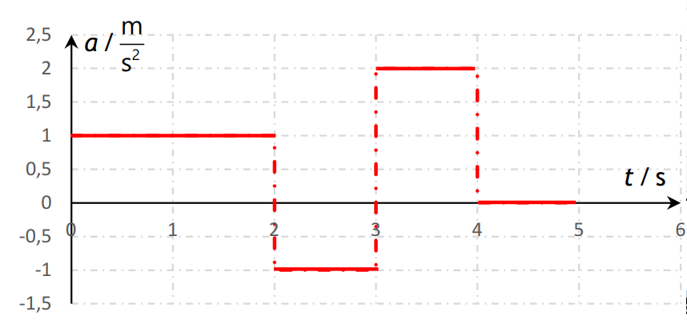
2. Iz zadanog x(t) grafa nacrtaj s(t) graf:
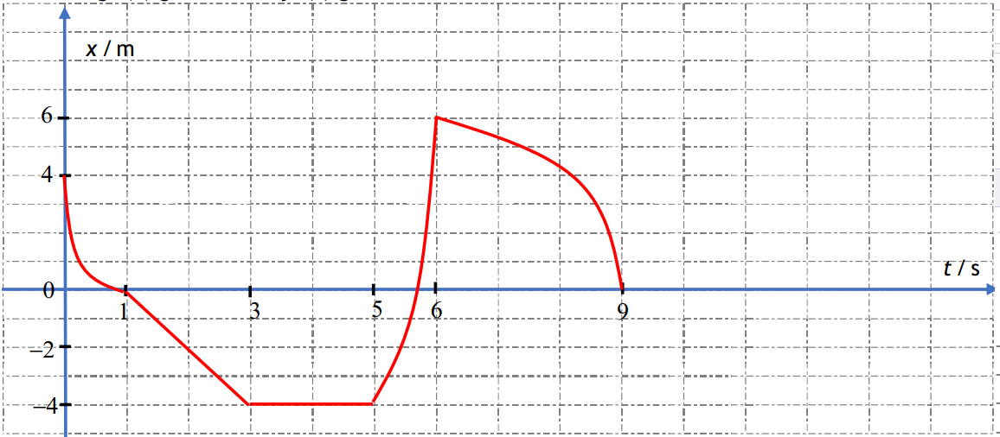
3. Iz zadanog v(t) grafa nacrtaj a(t), s(t) i x(t) graf:
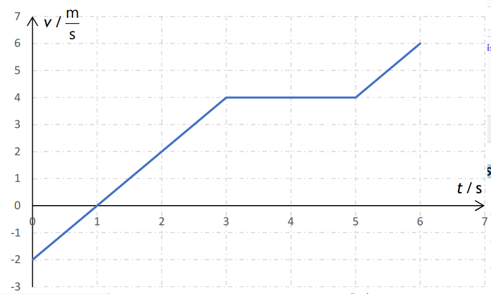
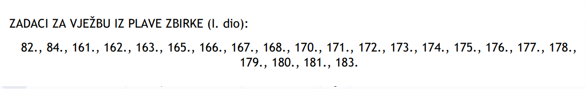
Jednoliko ubrzano i usporeno pravocrtno gibanje
Jednoliko ubrzano i uporeno pravocrtno gibanje
- pojava kada tijelo povećava/smanjuje jednoliko svoju brzinu prilikom gibanja po pravcu
- pri tom gibanju akceleracija tijela jest konstantna
a=
δv/δt
v=v0+a*t
v2=v02+2*a*s
v(srednja)=
v0+vkonačna/2
s=v0*t+
1/2
*a*t2
-grafički prikaz gibanja u x(t), s(t), v(t) i a(t) grafovima:
- površina ispod crte u a(t) grafu odgovara promjeni brzine tijela
1. Iz zadanog a(t) grafa nacrtaj v(t) i s(t) graf:
2. Iz zadanog x(t) grafa nacrtaj s(t) graf:
3. Iz zadanog v(t) grafa nacrtaj a(t), s(t) i x(t) graf:
4. Tijelo se iz stanja mirovanja počinje gibati jednoliko ubrzano. Kolika je akceleracija tijela ako tijelo:
a) u osmoj sekundi prijeđe put od 15 m.
b) za osam sekundi od početka gibanja prijeđe put od 64 m?
Rješenje
5. Automobil vozi po horizontalnoj cesti brzinom 36 km/h. Vozač doda “gas” i za 10 sekundi postigne brzinu 54 km/h gibajući se jednoliko ubrzano.
a) Nacrtajte graf ovisnosti brzine o vremenu (v, t graf).
b) Kolika je bila akceleracija automobila?
c) Koliki je put prešao za tih 10 sekundi?
d) Kolikom se srednjom brzinom gibao automobil u tom vremenskom intervalu?
3. Automobil se giba jednoliko usporeno tako da mu se brzina smanji od 108 km/h na 54 km/h za 20 s. Koliki put prijeđe automobil za to vrijeme?
4. Tramvaj krene sa stanice jednoliko se ubrzavajući i za 10 s postigne najveću brzinu od 36 km/h.
a) Ako je iduća stanica udaljena 1 km, a za jednoliko zaustavljanje tramvaja treba jednako vremena kao i za ubrzavanje, koliko vremena se tramvaj giba jednoliko?
b) Kolika je srednja brzina tramvaja tijekom putovanja iskazana u km/h i m/s?
c) Nacrtajte ovisnost brzine o vremenu (v,t graf) gibanja tramvaja.
5. Razmak između dviju postaja je 9 km. Vlak prelazi taj razmak srednjom brzinom 54 km/h. Pri tome se počinje gibati jednoliko ubrzano 20 s, zatim neko vrijeme vozi stalnom brzinom, a tada mu za jednoliko zaustavljanje treba 20 s. Nacrtajte v,t graf gibanja vlaka i odredite njegovu najveću brzinu. Koliko vremena se vlak gibao stalnom brzinom?
6. Četiri jednadžbe opisuju ovisnost položaja tijela koje se giba duž x osi o vremenu t.
1) x = 3t – 2
2) x = – 4t – 2
3) x = 4t 2 – 4
4) x = 6t 2 + 2t
Ako je x u metrima i t u sekundama i t>0 odredite:
a) U kojim slučajevima je brzina konstantna i kolika je po smjeru i veličini?
b) U kojim slučajevima se tijelo giba stalnom akceleracijom i kolikom?
c) Gdje se nalazilo tijelo u trenutku t=0 u svakom pojedinom slučaju?
7. Ulazeći u stanicu, vlak počinje jednoliko usporavati. Izračunajte akceleraciju i početnu brzinu vlaka, ako prvih 50m prijeđe za 5s, a idućih 50m za 7 s.
8. Graf prikazuje ovisnost brzine v o vremenu t za tijelo koje se giba duž x osi.
a) Koji je predznak brzine u točkama P i K?
b) Postoji li trenutak u kojem se tijelo zaustavi?
c) Je li akceleracija tijela pozitivna ili negativna u točkama P i K?
d) Nacrtajte graf ovisnosti akceleracije tijela o vremenu.
9. Dizalo se iz stanja mirovanja prve dvije sekunde podiže jednoliko ubrzano i postigne brzinu 2 m/s kojom nastavlja gibanje iduće četiri sekunde. Posljednje dvije sekunde dizalo se jednoliko usporava do zaustavljanja. Za koliko metara se dizalo podiglo?
10. Pravocrtno gibanje tijela duž x osi prikazano je jednadžbom: x = 2 t2 – 3 t +6
(sve jedinice su u SI sustavu).
a) Kolika je akceleracija tijela?
b) Kolika je početna brzina tijela?
c) Gdje se nalazi tijelo u trenutku t = 0?
d) Nacrtajte grafove ovisnosti pomaka x, brzine v i akceleracije a o vremenu t.
e) Napišite jednadžbu ovisnosti brzine tijela v o vremenu t? U kojem trenutku je brzina tijela jednaka nuli?
f) Koliki je pomak tijela u vremenskom intervalu od t1=1s do t1=4s?
Kolike su srednja brzina i srednja akceleracija tijela u vremenskom intervalu od t1=1s do t1=4s? 5.
Tijelo se giba pravocrtno stalnom akceleracijom. Za 2 sekunde prijeđe put od 10m. U iduće 2 sekunde prijeđe put od 22m (crtež).
a) Kolika je akceleracija tijela?
b) Kolika su brzine tijela u točkama A, B, C i D?
c) Koliki je razmak između točaka C i D? 6.
11. Promatrač stoji pokraj početka prvog vagona vlaka. Vlak se počinje gibati jednoliko ubrzano. Vrijeme, koje je potrebno da pred promatračem prođe prvi vagon iznosi 4s.
a) Koliko dugo će pred promatračem prolaziti n–ti vagon?
b) Izračunajte vrijeme prolaska za deseti vagon tj. n=10.
1. Tijelo se iz stanja mirovanja počinje gibati jednoliko ubrzano. Kolika je akceleracija tijela ako tijelo:
a) u osmoj sekundi prijeđe put od 15 m.
b) za osam sekundi od početka gibanja prijeđe put od 64 m?
2. Automobil vozi po horizontalnoj cesti brzinom 36 km/h. Vozač doda “gas” i za 10 sekundi postigne brzinu
54 km/h gibajući se jednoliko ubrzano.
a) Nacrtajte graf ovisnosti brzine o vremenu (v, t graf).
b) Kolika je bila akceleracija automobila?
c) Koliki je put prešao za tih 10 sekundi?
d) Kolikom se srednjom brzinom gibao automobil u tom vremenskom intervalu?
3. Automobil se giba jednoliko usporeno tako da mu se brzina smanji od 108 km/h na 54 km/h za 20 s.
Koliki put prijeđe automobil za to vrijeme?
4. Tramvaj krene sa stanice jednoliko se ubrzavajući i za 10 s postigne najveću brzinu od 36 km/h. a) Ako
je iduća stanica udaljena 1 km, a za jednoliko zaustavljanje tramvaja treba jednako vremena kao i za
ubrzavanje, koliko vremena se tramvaj giba jednoliko? b) Kolika je srednja brzina tramvaja tijekom
putovanja iskazana u km/h i m/s? c) Nacrtajte ovisnost brzine o vremenu (v,t graf) gibanja tramvaja.
5. Razmak između dviju postaja je 9 km. Vlak prelazi taj razmak srednjom brzinom 54 km/h. Pri tome se
počinje gibati jednoliko ubrzano 20 s, zatim neko vrijeme vozi stalnom brzinom, a tada mu za jednoliko
zaustavljanje treba 20 s. Nacrtajte v,t graf gibanja vlaka i odredite njegovu najveću brzinu. Koliko
vremena se vlak gibao stalnom brzinom?
6. Četiri jednadžbe opisuju ovisnost položaja tijela koje se giba duž x osi o vremenu t.
1) x = 3t – 2
2) x = – 4t – 2
3) x = 4t2 – 4
4) x = 6t2 + 2t
Ako je x u metrima i t u sekundama i t>0 odredite:
a) U kojim slučajevima je brzina konstantna i kolika je po smjeru i veličini?
b) U kojim slučajevima se tijelo giba stalnom akceleracijom i kolikom?
c) Gdje se nalazilo tijelo u trenutku t=0 u svakom pojedinom slučaju?
Zadatak 1: Grafički prikaz jednolikog ubrzanog i usporenog pravocrtnoga gibanja (konceptualni zadatak)
Primjer zadatka: U x(t) grafu prikazano je gibanje dva tijela, A i B:
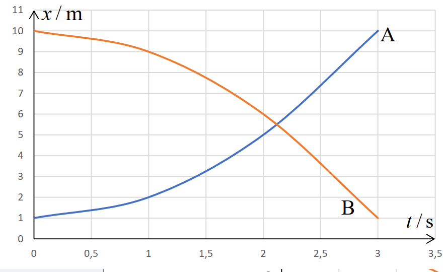
a) (2 boda) Opiši gibanje tijela A i B.
b) (2 boda) Koje tijelo ima veći iznos brzine 3 s nakon početka gibanja? Obrazloži svoj odgovor.
Zadatak 4: Grafički prikaz jednolikih pravocrtnih gibanja (numerički zadatak)
Primjer zadatka: Zadan je v(t) graf:
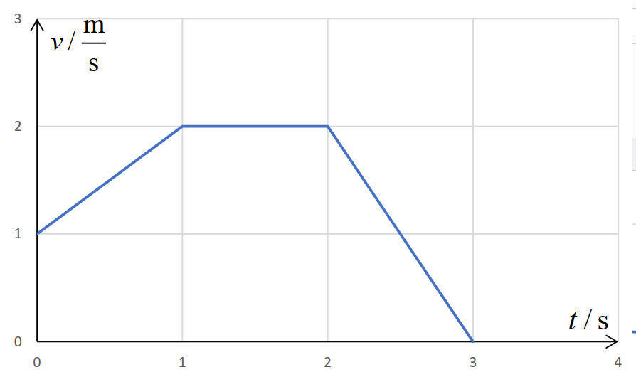
a) (2 boda) Opiši gibanje tijela prikazanoga u grafu:
Od t = 0 s do t = 1 s tijelo se giba ______________________________________, od t =1 s do t = 2 s tijelo se giba
________________________________, a od t = 2 s do t = 3 s tijelo se giba ____________________________________.
b) (8 bodova) Iz zadanoga v(t) grafa nacrtaj a(t) i s(t) grafove.
Zadatak 5: Jednolika pravocrtna gibanja (numerički zadatak)
Primjer zadatka: (3 boda) U petoj sekundi jednolikog ubrzanoga gibanja iz stanja mirovanja tijelo prijeđe put od 18
m. Kolika je akceleracija tog tijela?
Zadatak 6: Jednolika pravocrtna gibanja (numerički zadatak više kognitivne razine)
Primjer zadatka: (4 boda) Kamion s prikolicom ukupne duljine 18.25 m vozi po autocesti jednolikom brzinom 80
km/h u desnoj traci. Automobil vozi stalnom brzinom 100 km/h u istom smjeru kao i kamion, u lijevoj traci. U
trenutku kada je prednji kraj automobila udaljen 100 m od stražnjeg kraja kamiona, automobil počinje
jednoliko ubrzavati do brzine 120 km/h te se dalje giba jednoliko. Duljina automobila je 4.25 m. a) Izračunajte
ukupno vrijeme pretjecanja, ako prvu polovinu vremena automobil jednoliko ubrzava, a drugu polovinu
vremena vozi stalnom brzinom. b) Izračunajte ubrzanje automobila. Zanemarite otpor zraka
Newotonovi zakoni
Mišljenja
- Aristotel: tijelo se giba samo kad na njega djeluje sila
- Galileo Galilei: moguće je gibanje stalnom brzinom bez djelovanja neke vanjske sile na tijelo
- Isaac Newton- zakoni mehanike:
I. ZAKON TROMOSTI
Ako zbroj svih sila koje djeluju na tijelo iznosi nula (FR=0), tijelo miruje (ako je mirovalo) ili se jednoliko giba po pravcu (ako se iprije tako gibalo).
II. ZAKON GIBANJA
Ako je zbroj svih sila koje djeluju na tijelo različit od nula (FR≠0), tijelo se počinje gibati jednoliko ubrzano ili usporeno po pravcu u smjeru rezultante sile akceleracijom:
a→ =
Fr→/m
III. ZAKON SILE I PROTUSILE
Ako jedno tijelo djeluje na drugo nekom silom, istodobno drugo tijelo djeluje na prvo silom jednake vrijednosti i suprotnog smjera
1. Na tijelo mase 10 kg, prikazano na slici, djelujemo vanjskom silom F, čiji je iznos 3 N, no tijelo ostaje u stanju mirovanja. (ni 2007.) Koliki je iznos sile trenja između podloge i tijela?
2. Na tijelo koje se giba stalnom brzinom udesno počnu djelovati dvije sile, kako je prikazano na slici (trenje je zanemarivo). Kako će to utjecati na gibanje tijela?
3. Jabuka pada na Zemlju zbog gravitacijskog privlačenja između nje i Zemlje. Označi li se sila kojom Zemlja privlači jabuku s F1, a sila kojom jabuka privlači Zemlju s F2, u kakvome su odnosu iznosi tih dviju sila?
Guramo ormar po sobi stalnom horizontalnom silom iznosa F i on se zbog toga giba stalnom
brzinom. Na ormar osim sile guranja F djeluje i sila trenja Ftr između ormara i poda. U kakvom
su odnosu iznosi tih dviju sila?
5. Tijelo se giba jednoliko po pravcu po vodoravnoj podlozi. Pritom na tijelo u vodoravnome smjeru djeluju sila trenja iznosa 5 N i vanjska sila F u smjeru gibanja. Koliki je iznos sile F?
6. Na vodoravnom stolu leži knjiga mase 4 kg. Vertikalno prema dolje na knjigu djelujemo silom iznosa 30 N. Kolikom silom površina stola djeluje na knjigu?
7. Dvije kugle su na međusobnoj udaljenosti r. Masa prve kugle je m1=100 kg, a druge m2=50 kg. Kugle međudjeluju gravitacijskom silom. Na kojem su crtežu ispravno prikazani smjerovi i odnosi sila na kugle?
8. Čovjek rukom pritišće površinu stola. Kakav je iznos sile kojom ruka djeluje na površinu stola?
9. Dva tijela različitih masa, M > m, povezana su nerastezljivom niti i ovješena preko nepomične koloture kao što je prikazano na slici. Koji izraz opisuje ubrzanje tijela mase M? Masa koloture te trenje između koloture i niti su zanemarivi.
10. Na horizontalnoj podlozi nalaze se dva tijela masa m1 > m2 međusobno povezana nerastezljivom niti kao što je prikazano na slici.
Kolika je napetost niti N koja povezuje tijela ako na tijelo manje mase djeluje stalna sila F i ako se tijela gibaju ubrzanjem a? Zanemarite silu trenja između podloge i tijela.
Rješenje
11. Padobranac ima zajedno s opremom masu 110 kg. Kad se padobran otvori, padobranac pada stalnom brzinom. Koliko tada iznosi srednja sila otpora zraka na padobranca?
Rješenje
12. Sustav prikazan na slici sastoji se od jednog koloturnika zanemarive mase i dvaju tijela. Trenje između tijela mase m2 i stola, kao i trenje između niti i koloturnika mogu se zanemariti. Koliko iznosi akceleracija kojom se gibaju ova tijela?
13. Na tijelo djeluju dvije sile iznosa 3 N i 5 N kao što je prikazano na crtežu. Masa tijela je 4 kg. Koliki je iznos akceleracije tijela?
14. Tijelo A mase 2 kg i tijelo B mase 3 kg leže na horizontalnoj podlozi i međusobno se dodiruju kao što je prikazano na slici.
Na tijelo A djeluje horizontalna sila F = 10N. Kolikom silom tijelo B djeluje na tijelo A? Trenje je zanemarivo
Rješenje
15. Koliki je iznos stalne sile potrebne za ubrzanje automobila mase 1300 kg iz stanja mirovanja do brzine 72 km/h na putu 80 m?
Rješenje
16. Automobil mase 850 kg zaustavio se uslijed kvara na horizontalnoj cesti. Dva čovjeka pokušavaju ga gurati tako da djeluju paralelnim silama iste orijentacije. Jedan djeluje silom 275 N, a drugi silom 395 N na automobil. Sila trenja između ceste i automobila iznosi 560 N. Koliko iznosi akceleracija automobila?
Rješenje
17. Kolika je akceleracija padobranca u trenutku kada sila otpora zraka iznosi jednu četvrtinu sile teže koja na njega djeluje? Zanemarite uzgon u zraku.
Rješenje
233. Crtež prikazuje kolotur o koji su preko užeta ovješene dvije mase m1 = 1kg i m2 = 4kg. Zanemarite rastezanje užeta, te masu užeta i koloture prema masama tijela. (g 10m/s2 ) a) Kolika je akceleracija sustava? b) Kolika je sila napetosti užeta? c) Koliku silu pokazuje dinamometar D o koji je ovješena kolotura?
242. Osoba knjigu težine 20 N pritišće o strop. Sila kojom strop djeluje na knjigu iznosi 25 N (crtež). Kolikom silom djeluje knjiga na ruku osobe?
245. Jednaka sila djeluje na različite mase u horizontalnom smjeru. Koji od grafičkih prikaza ovisnosti akceleracije a o masi m najbolje prikazuje eksperimentalne podatke?
260. Na slici je prikazan sustav tri tijela. Zanemarite trenje s koloturom a za akceleraciju sile teže uzmite vrijednost g 10 m/s2 . Kolika je akceleracija sustava i kolike su napetosti niti N1 i N2 ako: a) nema trenja?
263. Dva traktora vuku automobil stalnom brzinom. Vučne sile traktora zatvaraju kut od 120 i svaka od njih ima vrijednost 1000N (crtež). Kolika je sila trenja.
275. Na horizontalnoj podlozi nalaze se dva tijela masa m1 = 4kg i m2 = 1kg. Tijela su povezana užetom (slika). Kolika je akceleracija kojom se gibaju tijela ako na njih djeluje stalna vučna sila Fvučna =10N u horizontalnom smjeru? Silu trenja između tijela i podloge zanemarite.
a) Kolika je napetost užeta ako na tijela djelujemo horizontalnom silom 10N tako da je hvatište sile na tijelu veće mase?
b) Kolika je napetost užeta ako na tijela djelujemo horizontalnom silom 10N tako da je hvatište sile na tijelu manje mase?
282. Dva tijela masa m1 = 1kg i m2 = 4kg, povezana užetom nalaze se na horizontalnoj podlozi (slika 1.). Trenje zanemarite. Sila kojom vučemo tijela iznosi Fv = 50N. a) Kolika je akceleracija gibanja sustava? b) Kolika je sila napetosti N užeta kojom su povezana tijela? c) Kolika će biti napetost užeta ako je hvatište vučne sile na tijelu manje mase (slika 2.)?
283. Dva tijela masa m1 = 1kg i m2 = 4kg, nalaze se na horizontalnoj podlozi (slika 1.). Trenje zanemarite. Sila kojom guramo tijela iznosi Fgu =50N. a) Kolika je akceleracija gibanja sustava? b) Kolikom silom djeluju tijela jedno na drugo? c) Kolikom silom će međusobno djelovati tijela ako je sila guranja promjeni hvatište (slika 2.)?
309. Tri tijela m1=5kg, m2 =4kg i m3 =3kg ovješena su na kolotur zanemarive mase (crtež). Niti se ne rastežu. Izračunajte:
a) akceleraciju sustava.
b) sile napetosti niti 1. i 2. o koje su ovješena tijela?
320. Tri tijela prikazana na crtežu leže na glatkoj podlozi (trenje je zanemarivo) i gibaju se pod utjecajem sile od 42 N.
Izračunajte:
a) akceleraciju sustava.
b) napetost niti između tijela mase 1 kg i mase 3 kg.
c) silu međudjelovanja između tijela mase 1 kg i mase 2 kg.
Izračunajte: a) akceleraciju sustava. b) napetost niti između tijela mase 1 kg i mase 3 kg. c) silu međudjelovanja između tijela mase 1 kg i mase 2 kg.
284. Dva tijela masa m1 = 1kg i m2 = 4kg, povezana užetom nalaze se na horizontalnoj podlozi (slika). Faktor trenja
klizanja između tijela i podloge iznosi 0,1. Sila kojom vučemo tijela iznosi Fvučna = 50N. a) Kolika je akceleracija
gibanja sustava? b) Kolika je sila napetosti N užeta kojom su povezana tijela? (g 10m/s2)
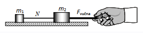
1. Newtonovi zakoni (konceptualni zadatak)
Primjer zadatka: (2 boda) Crtež prikazuje dva tijela jednakih masa ovješena preko koloture. Masa užeta, trenje sa
stolom i koloturom su zanemarivi. Koja od slijedećih tvrdnji je ispravna? Obrazloži svoj odgovor.
a) Tijela se gibaju akceleracijom manjom od g.
b) Tijela se gibaju akceleracijom većom od g.
c) Tijela se gibaju akceleracijom jednakoj g.
d) Tijela se gibaju stalnom brzinom.
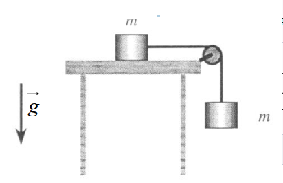
3. Newtonovi zakoni (numerički zadatak)
Primjer zadatka: (5 bodova) Na tijelo mase 100 g djeluju četiri sile kao na slici. F1= 2 N, F2= 3 N, F3= 4 N, F4= 2 N.
Koliki će put tijelo prijeći nakon 3 s? Nacrtaj smjer vektora rezultantne sile!
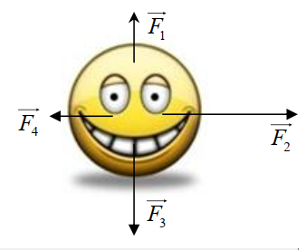
Tlak
Tlak
- omjer okomite komponente sile i površine plohe na koju je ta komponenta okomita:
- oznaka je T, a mjerna jedinica Pa (paskal) i bar (1 bar je 105 Pa)
- Pascalov zakon
- Tlak kojim izvana djelujemo na zatvoreni idealni fluid prenosi se nesmanjen u svaki dio fluida i stjenke posude u kojoj se nalazi (kad fluid miruje, on je u ravnoteži, ali ako na negdjedjelujemo dodatnom silom, ona će se prenijeti u svim smjerovima jednako)
- primjer: stiskanje tube paste za zube, rad hidrauličnih strojeva
vrste tlakova
Atmosferski tlak
- tlak koji pritišće Zemljinu površinu zbog svoje atmosfere (ukupna težina molekula zraka)
- iznosi: p0= 101325 Pa pri standardnim uvjetima
- smanjuje se s povećanjem nadmorske visine
Hidrostatski tlak
- tlak koji se povećava s dubinom a jednako iznosi u svim smjerovima na istoj dubini
- p(h)=gqh
- zakon spojenih posuda (ako je fluid u ravnoteži i miruje, tlakovi na jednakim dubinama morajubiti jednaki)
- uređaje za mjerenje tlaka nazivamo barometar/manometar (registriraju razlike tlakova između sustava i okoline)
1. Valjkasta posuda visine 2 m ima kružni otvor polumjera 3 cm na visini 60 cm od dna posude. Kolika sila djeluje na čep stavljen u kružni otvor ako je posuda do vrha napunjena vodom?
2. Izračunaj koliki je ukupni tlak u jezeru na dubini 5,5 metara.
3. Izračunaj koliki je tlak (u barima)na oceanskom dnu na dubini 3000 m. Gustoća morske vode je 1024kg/m3 .
4. U U-cijev, u kojoj se nalazila voda, doliveno je uljenepoznate gustoće. Mjereno od razine na kojoj se voda i ulje dodiruju,stupac ulja ima visinu 5 cm, a stupac vode 37 mm. Kolika je gustoćaulja?
5. Na slici su prikazana posuda u koju ulijevamo vodu. Nakon štose uspostavi ravnoteža i voda se smiri kakva će biti razina vode upojedinim posudama i tlak u naznačenim točkama? Zaokružite točneodgovore. - a) Razina vode u svim djelovima posude A, B C i D je jednakakako je prikazano slikom. - b) Slika ne prikazuje točnu situaciju već jenajviša je razina u D, a najmanja u B. - c) Tlak u svim točkama od 1 do5 je jednak. - d) Najveći je tlak u točki 3 jer se iznad nje nalazinajveća masa vode. a), c)
6. Na slici je prikazana posuda ispunjenavodom. Kako se odnose tlakovi u pojedinim točkama posude A, B i C? a) pA= pB = pC b) pA = pC < pB c) pA = pC > pB d) pA > pB > pC e) pA < pB Al > zraka. Ako cijeli sustav smjestimo pod staklenozvono iz kojeg isišemo zrak što će se dogoditi? Zaokružite točanodgovor! a) Preteže aluminijska kugla. b) Preteže olovna kugla. c)Sustav i dalje ostaje u ravnoteži.
8. Tri posude a), b) i c) potpunojednakih dimenzija potpuno su napunjene vodom i stave se na vagu. Uprvoj je samo voda, dok se u druge dvije nalaze patkice različitihtežina (crtež). 1) Najveću težinu pokazuje vaga a) 2) Najveću težinupokazuje vaga b) 3) Najveću težinu pokazuje vaga c) 4) Sve tri vagepokazuju jednako.
9. . Dva homogena tijela, prvo izrađeno od hrastovinegustoće 0,8 g/cm3 i drugo izrađeno iz aluminija gustoće 2,7 g/cm3 bačenasu u vodu gustoće 1 g/cm3 . Oba tijela imaju jednaku masu od 1 g. Kojiod predloženih odgovora je ispravan nakon što se tijela smire? a) Većasila uzgona djeluje na tijelo izrađeno od aluminija. b) Veća sila uzgonadjeluje na tijelo izrađeno od hrastovine. c) Sila uzgona jednaka je naoba tijela. d) Na tijelo od hrastovine ne djeluje sila uzgona jer onopliva na vodi. e) Na tijelo od hrastovine ne djeluje sila uzgona jer onotone.
10. . U automobilskoj gumi nadtlak (tlak iznad atmosferskog tlaka)iznosi 2*105Pa. Ako je dodirna površina svake od četiri gume automobilas tlom 0,024m2 kolika je masa automobila? - Rješenje - 480kg
11.Normirani atmosferski tlak odgovara stupcu žive od 76cm (slika). Kolikibi stupac vode odgovarao tom tlaku ako znamo da je gustoća žive 13,6puta veća od gustoće vode? - rješenje - 9.792 m
12. U-cijev na slicinapunjena je vodom i uljem (slika) i cijeli sustav se nalazi u ravnotežiprema podacima sa slike. Ako je gustoća vode 103 kg/m3 kolika je gustoćaulja?
13. Plastična vrećica na slici sadrži otopinu glukoze gustoće1,2*103 kg/m3 . Ako je tlak u arteriji čovjeka na slici 1,33*104 Paiznad atmosferskog kolika mora biti najmanja visina h na kojoj držimovrećicu pa da otopina ulazi u arteriju? - rješenje
14. U automobilskoj gumi nadtlak (tlak iznad atmosferskog tlaka) iznosi 2105Pa. Ako je dodirna površina svake od četiri gume automobila s tlom 0,024m2 kolika je masa automobila?
4. Normirani atmosferski tlak odgovara stupcu žive od 76cm (slika).
Koliki bi stupac vode odgovarao tom tlaku ako znamo da je gustoća
žive 13,6 puta veća od gustoće vode?
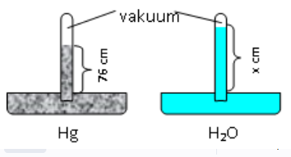
6. Plastična vrećica na slici sadrži otopinu glukoze gustoće 1,2103kg/m3.
Ako je tlak u arteriji čovjeka na slici 1,33104 Pa iznad atmosferskog
kolika mora biti najmanja visina h na kojoj držimo vrećicu pa da
otopina ulazi u arteriju?
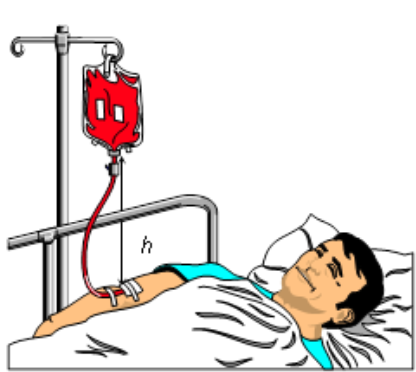
13. Olovna i aluminijska homogena kugla obješene su na vagu jednakih
krakova i kada su u zraku nalaze se u ravnoteži (crtež). Pritom su
gustoće: Pb > Al > zraka. Ako cijeli sustav smjestimo pod stakleno
zvono iz kojeg isišemo zrak što će se dogoditi? Zaokružite točan
odgovor!
a) Preteže aluminijska kugla.
b) Preteže olovna kugla.
c) Sustav i dalje ostaje u ravnoteži.
d) Ne može se odgovoriti jer ima premalo podataka.
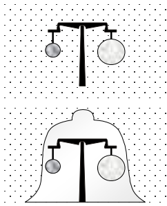
1. Kada je potpuno uronjeno u tekućinu, tijelo mase 1,5 kg istisne 0,8 kg tekućine. Što od navedenoga vrijedi za
silu uzgona na tijelo? (lj 2011.)
A. Sila uzgona iznosi 7 N i usmjerena je prema gore.
B. Sila uzgona iznosi 7 N i usmjerena je prema dolje.
C. Sila uzgona iznosi 8 N i usmjerena je prema gore.
D. Sila uzgona iznosi 8 N i usmjerena je prema dolje.
1. (2 boda) U staklenoj se posudi nalazi voda do visine 10 cm. Posuda se nalazi u dizalu. Koliki će biti
hidrostatski tlak na dno posude ako na dizalu pukne užad i ono počinje slobodno padati? Gustoća
vode je 1000 kgm-3. Obrazloži svoj odgovor.
a) 1000 Pa
b) 2000 Pa
c) 100 Pa
d) 0 Pa
5. 4. (4 boda) Ako se sila na membranu tympani (bubnjić) poveća za 1,5 N iznad sile kojom atmosferski tlak
djeluje na nju, to može dovesti do oštećenja membrane. Kada biste išli roniti u more bez ronilačkog
odijela, nakon koje bi dubine moglo doći do oštećenja bubnjića? Tipičan promjer bubnjića je 8,2 mm.
Gustoća morske vode iznosi 1,03 g/cm3.
1. Tlak (konceptualni zadatak)
Primjer zadatka: (2 boda) Na dubini h u jezeru ukupni tlak iznosi 3 p0, gdje je p0 atmosferski tlak. Koliki je tlak u
tom jezeru na dubini 2 h? Obrazloži svoj odgovor.
a. p0
b. 6 p0
c. 3 p0
d. 5 p0
4. Tlak (numerički zadatak)
Primjer zadatka: ( 5 bodova) U laboratoriju iz fizike su učenici trebali odrediti gustoću nepoznate tekućine. U
pokusu su koristili U-cijev, vodu, mjernu vrpcu i nepoznatu tekućinu.
a. (1 bod) Skiciraj kako će izgledati razine tekućina u U-cijevi nakon ulijevanja vode i nepoznate tekućine.
b. (2 boda) Izvedi izraz iz kojeg ćeš odrediti gustoću nepoznate tekućine.
c. (2 boda) Rezultati mjerenja učenika u laboratoriju su:
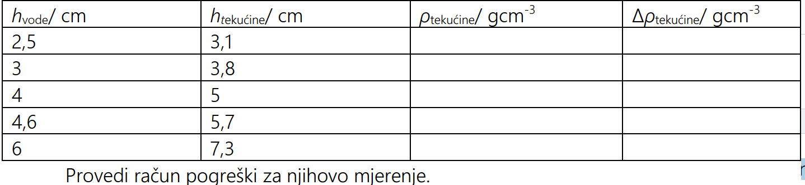
Uzgon
Uzgon
- sila u fluidima koja prividno smanjuje težinu tijela uronjenog u fluid onoliko koliko iznosi težina istisnute tekućine (Arhimedov zakon)
- uzgon postoji i u plinovima, ali je najčešće zanemariv (navedite primjer kad ne možemo zanemariti uzgon u zraku)
- formula za uzgon je: Fu=q(tekućine)*g*V(uronjenog tijela)
- kad tijelo ubacimo u tekućinu ono može raditi sljedeće:
- tijelo tone ako je Fg > Fu ili ρtijela>ρtekućine
- tijelo lebdi ako je Fg=Fu ili ρtijela=ρtekućine
- tijelo izranja ako je Fg < Fu ili ρtijela < ρtekućine
1. Kroz vodu podižeš veći kamen kojega želiš izvući na obalu. Koju promjenu osjećaš dok kamen izvlačiš iz vode? Je li kamen bilo lakše podizati dok je bio cijeli u vodi?
2. U čašu sa vodom na površinu spusti kuglicu plastelina. Skiciraj i opiši što uočavaš.
3. Kuglicu plastelina preoblikuj u malu lađicu i ponovno ju pusti na površinu vode. Skiciraj i opiši što sad opažaš objasni.
4. Silu kojom tekućina djeluje na uronjeno tijelo nazivamo...
5. a) U čašu s vodom stavi kokošje jaje. Opiši i skiciraj što si opazila. b) Dodaj 3 velike žlice soli i dobro promiješaj. Ponovno stavi jaje u vodu. Skiciraj i opiši što uočavaš. Opiši kako to objašnjavaš ?
6. Tijelo A ima masu 200 g i volumen 1 L, a tijelo B ima masu 100 g i volumen 10 cm3 . Što će se dogoditi s tijelima kad ih stavimo u vodu gustoće 1000 kg/m3 .
7. Tijelo mase 200 g i obujma 200 dm3 je polovicom svojega volumena uronjeno u vodu gustoće 1000 kg/m3 . a) Kolika sila uzgona djeluje na tijelo? b) Kolika sila teža djeluje na tijelo? c) Hoće li to tijelo, kad se stavi u vodu, tonuti, lebdjeti ili izranjati? d) Kolika bi bila prividna težina tog tijela u vodi?
8. Na slici su prikazana posuda u koju ulijevamo vodu. Nakon što se
uspostavi ravnoteža i voda se smiri kakva će biti razina vode u
pojedinim posudama i tlak u naznačenim točkama? Zaokružite
točne odgovore.
a) Razina vode u svim djelovima posude A, B C i D je jednaka
kako je prikazano slikom.
b) Slika ne prikazuje točnu situaciju već je najviša je razina u D,
a najmanja u B.
c) Tlak u svim točkama od 1 do 5 je jednak.
d) Najveći je tlak u točki 3 jer se iznad nje nalazi najveća masa
vode.
e) Nema točnih odgovora već za razine i tlakove vrijedi:_______________________
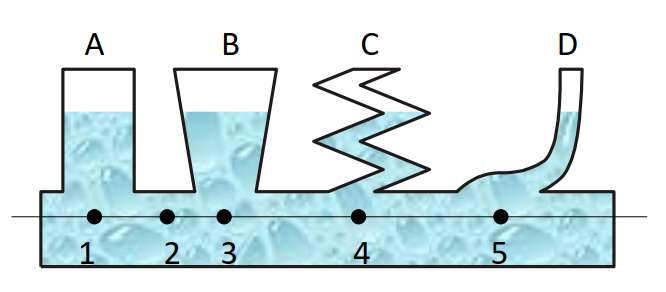
3. Na slici je prikazana posuda ispunjena vodom. Kako se odnose tlakovi u pojedinim
točkama posude A, B i C?
a) pA = pB = pC
b) pA = pC < pB
c) pA = pC > pB
d) pA > pB > pC
e) pA < pB < pC
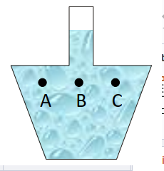
5. U-cijev na slici napunjena je vodom i uljem (slika) i cijeli sustav se nalazi u ravnoteži prema podacima sa slike.
Ako je gustoća vode 103 kg/m3 kolika je gustoća ulja?
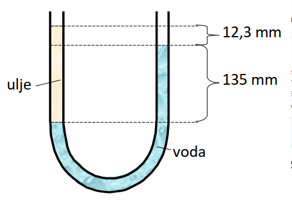
7. Konzerva volumena 1200cm3 i mase 130g pliva na vodi. Koliku najveću masu olova gustoće 11,4g/cm3
možemo staviti u konzervu a da ona ne potone?
8. U posudi je živa, a iznad nje voda. Homogena željezna kugla pliva na
granici između žive i vode, te je potpuno prekrivena vodom. Koliki je dio
ukupnog volumena kugle u živi, a koliki u vodi?
(gustoća žive = 13600 kg/m3 ; željeza = 7900 kg/m3; vode = 1000 kg/m3)
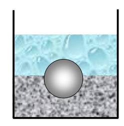
9. Predmet je ovješen o dinamometar. Sila koju pokazuje dinamometar kada je predmet u zraku iznosi 30N, kada
je potpuno potopljen u vodi gustoće 1000kg/m3 iznosi 20N, a kada je potpuno potopljen u tekućini nepoznate
gustoće iznosi 24N. Kolika je gustoća nepoznate tekućine? Zanemarite uzgon u zraku.
10. Šuplja kugla unutarnjeg polmjera 8cm, a vanjskog 9cm pluta na tekućini gustoće 800kg/m3 tako da se polovica
kugle nalazi u tekućini a polovica u zraku (crtež).
Napomena: volumen kugle je 4r3/3.
a) Kolika je masa kugle?
b) Kolika je gustoća materijala iz kojeg je kugla načinjena?
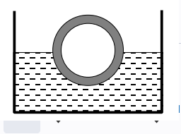
11. Staklena čaša nalazi se u sudoperu napunjenim vodom (crtež). Čaša je
do polovine napunjena vodom. Unutarnji volumen čaše je 500cm3, a
njena masa kada je prazna iznosi 390g. Ako oduzmemo samo malo vode
iz čaše ona će plutati, a ako dolijemo samo malo vode u polupunu čašu
ona će pritiskati na dno sudopera. Kolika je gustoća stakla, ako je
gustoća vode 1000 kg/m3?
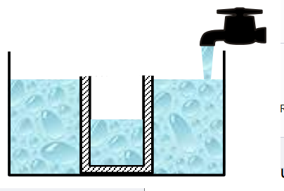
12. Lagana opruga konstante elastičnosti 90N/m zanemarive mase pričvršćena je za pod
(slika) Na oprugu se pričvrsti balon volumena 5m3 punjen helijem. Ukupna masa balona
i helija u njemu iznosi 0,897kg. Ako je gustoća okolnog zraka 1,29kg/m3 izračunajte
maksimalno produljenje opruge y.
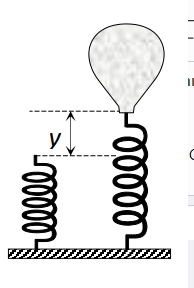
14. Tri posude a), b) i c) potpuno jednakih dimenzija potpuno su napunjene vodom i stave se na vagu. U prvoj je
samo voda, dok se u druge dvije nalaze patkice različitih težina (crtež).
1) Najveću težinu pokazuje vaga a)
2) Najveću težinu pokazuje vaga b)
3) Najveću težinu pokazuje vaga c)
4) Sve tri vage pokazuju jednako.
5) Nema dovoljno podataka pa se ne može ništa zaključiti.
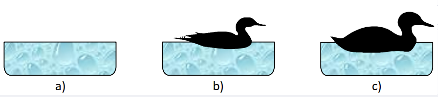
15. Dva homogena tijela, prvo izrađeno od hrastovine gustoće 0,8 g/cm3 i drugo izrađeno iz aluminija gustoće
2,7 g/cm3 bačena su u vodu gustoće 1 g/cm3. Oba tijela imaju jednaku masu od 1 g. Koji od predloženih
odgovora je ispravan nakon što se tijela smire?
a) Veća sila uzgona djeluje na tijelo izrađeno od aluminija.
b) Veća sila uzgona djeluje na tijelo izrađeno od hrastovine.
c) Sila uzgona jednaka je na oba tijela.
d) Na tijelo od hrastovine ne djeluje sila uzgona jer ono pliva na vodi.
e) Na tijelo od hrastovine ne djeluje sila uzgona jer ono tone.
16. Lopticu za stolni tenis mase 5 g i volumena 1,410−5 m3 uronimo
u vodu na dubinu 35 cm. kada lopticu ispustimo ona odskoči na
visinu 15 cm iznad razine vode. Koliko je energije pritom prešlo
u toplinu zbog otpora vode ako zanemarimo otpor u zraku?
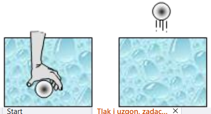
3. Dvije kugle jednakih volumena, jedna od zlata, a druga od bakra ovješene su o niti, kao što je
prikazano na crtežu. Tako se ovješene kugle urone u vodu. Zbog toga se iznos sile napetosti niti na koju
je ovješena kugla od zlata smanji za ∆FAu, a kod kugle od bakra za ∆FCu. Koji odnos vrijedi za ∆FAu i ∆FCu?
(j 2013.)
A. ∆FAu<∆FCu
B. ∆FAu=∆FCu
C. ∆FAu>∆FCu
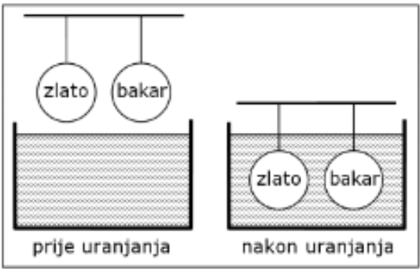
4. Graf prikazuje ovisnost hidrostatskoga tlaka p o dubini h za četiri tekućine označene brojevima 1, 2, 3 i 4 koje
su različitih gustoća. Kojim je grafom prikazana tekućina najmanje gustoće? (ni 2008.)
A. 1
B. 2
C. 3
D. 4
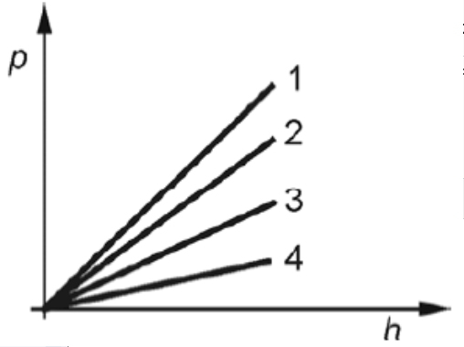
5. Balon mase 90 kg pada kroz zrak. Na balon djeluju sila otpora zraka od 300 N i sila uzgona od 60 N.
Kolikom akceleracijom pada balon? (lj 2011., 2)
6. Kamen mase 15 kg spustimo u vodu. Koliko iznosi rezultantna sila na kamen dok tone i dok je cijelim
obujmom ispod površine vode (kao što je prikazano na crtežu) prije nego što dotakne dno? Gustoća kamena
je 2 500 kgm-3, a vode 1 000 kgm-3. Zanemarite viskoznost vode. (lj 2013., 4)
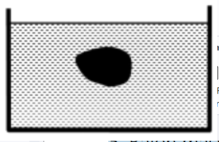
7. Preko učvršćene koloture prebačen je konop. Na jednome kraj u konopa visi uteg mase m=5kg, uronjen u
vodu, a na drugome kraju visi uteg mase m2=4 kg. Kolotura je u ravnoteži. Kolika sila uzgona djeluje na uteg u
vodi? (ni 2008., 4)
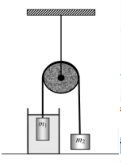
8. Uteg mase 1 kg ovješen je na dinamometar i uronjen u tekućinu gustoće 1 kg/dm3. Dinamometar pokazuje
silu iznosa 8 N. Koliki je obujam toga utega? (lj 2015., 4)
9. Prazna plastična čaša mase 100 g pliva na vodi tako da je ¼ volumena čaše uronjena u vodu. Koliki se
volumen ulja može uliti u čašu da ona još uvijek ne potone? Gustoća ulja iznosi 900 kg/m3, a gustoća vode
1000 kg/m3. (lj 2017., 4)
2. (2 boda) Tijelo pluta na površini vode tako da je 3/4 volumena tijela uronjeno u vodu gustoće 1000 kg/m3.
Kada se u posudu nadolije tekućina gustoće 800 kg/m3 tako da pokrije tijelo, što će se dogoditi?
Obrazloži svoj odgovor.
a) Tijelo će ostati na prijašnjem mjestu.
b) Tijelo će se malo pomaknuti prema gore, ali neće isplivati na površinu.
c) Tijelo će potonuti na dno.
d) Tijelo će isplivati na površinu.
13. U komad parafina mase 170 g umetnut je komad aluminija. Kolika je masa aluminija ako takvo
tijelo lebdi u vodi? Gustoća vode je 1 g/cm3, parafina 0,9 g/cm3, a aluminija 2,7 g/cm3
5. Uzgon (numerički zadatak)
Primjer zadatka: (5 bodova) Kada je predmet uronjen u vodu dinamometar pokazuje 60 N, a u benzinu 90 N. Kolika
je masa predmeta ako su gustoće vode vode = 1000 kg/m3 i bezina benzina = 700 kg/m3? Gustoća materijala od
kojeg je izrađen predmet veća je od gustoće vode.
2. Uzgon (konceptualni zadatak)
Primjer zadatka: (2 boda) U fluid gustoće ρ uroni se tijelo obujma V i težine G te na njega djeluje sila uzgona U.
Kolika je sila uzgona na isto tijelo koje je u tekućini 20% manje gustoće uronjeno sa 90% obujma? Obrazloži
svoj odgovor.
a. 0,8 U
b. 0,9 U
c. 0,18 U
d. 0,72 U
Fluidi u gibanju
- promatramo idealne fluide (u njima nema unutrašnjeg trenja) - Gibanje fluida
- gibanje fluida može biti laminarno ili vrtložno
- laminarno gibanje
- pojavljuje pri malim brzinama
- može se predočiti pomoću strujnica (crta kojima se tangenta u svakoj točki podudara sa smjerom brzine gibanja)
- strujnice su za laminarno gibanje neprekinute krivulje
turbulentno gibanje
- brzina fluida postane veća od neke kritične brzine,slojevi fluida se miješaju, čestice prelaze iz jednog sloja u drugi i nastaju vrtlozi)
- vrtložno gibanje
- dijelovi se fluida gibaju po kružnim i vrtložnim stazama
- strujnice zavinute prekinute krivulje Strujanje fluida
- strujanje može biti stacionarno i nestacionarno
- stacionarno gibanje
pri gibanju strujnice ostaju nepromijenjene tijekom vremena
- ukoliko fluid teče kroz cijev, volumni protok iznosi:
q=
Vkorisna/tuložena
=S*v
- ako fluid protječe kroz cijev različitog presjeka, vrijedi jednadžba kontinuiteta:
q1=q2
S1v1=S2v2
- primijenimo zakon očuvanja energije na fluid unutar cijev - Bernoullijeva formula
- tlak p je tlak vanjskih sila (statički tlak),
- srednji član je hidrostatski tlak,
- zadnji je dinamički tlak koji nastaje zbog gibanja fluida
- ukoliko se u nekoj posudi nalazi tekućina i na visini h ispod površine vode probušimo rupu u posudi, tekućina će istjecati brzinom (Torricellijev zakon):
v=
√2*g*h
- ako je cijev na nekom mjestu osobito uska tada brzina u tom dijelu cijevi postaje vrlo velika pri čemu raste dinamički tlak te on možepostati veći od ukupnog tlaka
- da bi ukupni tlak ostao isti, statički tlak p mora postati negativan (pritom sila djeluje u suprotnom smjeru → prema unutra, a ne prema van) (rad raspršivača)
PRIMJENE BERNOULIJEVE JEDNADŽBE
1. Cijev kroz koju protječe benzin na širem dijelu ima promjer 5 cm, a na užem 2,5 cm. Kolike su brzine protjecanja benzina u a) širem dijelu cijevi, b) užem dijelu cijevi ako je maseni protok 17,5 kg/min? Gustoća benzina je 700 kg/m3 .
2. Za koliko se vremena napuni posuda volumena 0,72 m3 koja se puni vodom kroz cijev površine poprečnog presjeka 1 cm2 ako voda izlazi iz cijevi brzinom 2 m/s?
3. Voda struji kroz horizontalno postavljenu cijev čije su dimenzije dane na slici. Brzina kojom voda istječe iz užeg dijela cijevi je v2= 15 m/s. Koliki volumen vode prođe kroz cijev tijekom 10 minuta? Kolika je brzina vode u širem dijelu cijevi? Kolika je razlika statičkih tlakova između šireg i užeg dijela cijevi?
4. Mlazovi vode koji izlaze iz dviju malih rupica smještenih na udaljenosti 5 cm i 12 cm od dna posude napunjene vodom udaraju o pod na istom mjestu (crtež). Kolika je visina vode u posudi?
1. Tijelo A mase mA i tijelo B mase mB miruju u tekućini gustoće ρ kao što je prikazano na slici. U
kakvome su odnosu mase tih tijela? (j 2018.)
A. mA < mB
B. mA > mB
C. mA = mB
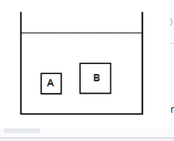
2. Tijela A i B uronjena su u potpunosti u tekućinu gustoće ρ. Za mase tijela vrijedi mA= 2mB, a za
njihove gustoće vrijedi ρA= ρB/3. Kako se odnose sile uzgona FUA i FUB na ta dva tijela? (lj 2019.)
A.
2 3
UA
UB
F F
=
B. UA 1
UB
F F
=
C.
3 2
UA
UB
F F
=
D. UA 6
UB
F F
=
3. Nastavnik je u razred donio dva balona jednakih volumena, jedan napunjen helijem, a drugi
napunjen zrakom. Koja od navedenih tvrdnja vrijedi za iznos sile uzgona na pojedini balon? (j 2019.)
A. Iznos sile uzgona veći je na balon napunjen helijem.
B. Iznos sile uzgona veći je na balon napunjen zrakom.
C. Iznos sile uzgona jednak je na oba balona.
D. Sila uzgona ne djeluje na balon napunjen zrakom.
4. U posudi se nalazi voda na čijoj površini pluta kuglica tako da je polovina obujma kuglice uronjena
u vodu. Koja je od navedenih tvrdnja ispravna ako se na površinu vode dolije ulje? Pretpostavite da
se voda i ulje ne miješaju. Gustoća kuglice veća je od gustoće ulja, a manja od gustoće vode. (lj 2020.)
A. Više od polovine obujma kuglice uronjeno je u vodu.
B. Polovina obujma kuglice uronjena je u vodu.
C. Manje od polovine obujma kuglice uronjeno je u vodu.
5. U cijevi se nalazi voda gustoće 1000 kg/m3 i tekućina nepoznate gustoće:
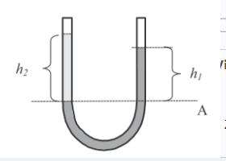
Mjerenja visine stupca vode h1 i visine stupca nepoznate tekućine h2 dana su u tablici:
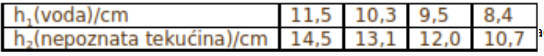
Na označenom presjeku A hidrostatski tlak nepoznate tekućine u lijevom kraku jednak je
hidrostatskom tlaku vode u desnom kraku cijevi. Kolike su srednja vrijednost i maksimalna apsolutna
pogreška gustoće nepoznate tekućine? (ni 2007., 4)
6. Komad pluta obujma 500 cm3 pliva na vodi. Pluto pritisnemo rukom tako da ono potpuno uroni u
vodu. Gustoća pluta iznosi 300 kgm-3, a vode 1000 kgm-3. Kolikom silom uzgona djeluje voda na pluto
kada je pluto potpuno uronjeno u vodu? Kolikom silom trebamo djelovati na pluto da bi ono mirovalo
ispod površine vode? (pm 2009., 4)
7. Balon mase 90 kg pada kroz zrak. Na balon djeluju sila otpora zraka od 300 N i sila uzgona od 60 N.
Kolikom akceleracijom pada balon? (lj 2011., 2)
8. Uteg mase 1 kg ovješen je na dinamometar i uronjen u tekućinu gustoće 1 kg/dm3. Dinamometar
pokazuje silu iznosa 8 N. Koliki je obujam toga utega? (lj 2015., 4)
9. Čamac pluta na jezeru. Koliki će obujam vode dodatno istisnuti čamac nakon što u njega uđe
čovjek mase 70 kg? Gustoća vode iznosi 1000 kg/m3. (j 2015., 2)
10. . Koliki tlak stvara čovjek mase 76 kg na površinu 0,048 m2? (lj 2016., 2)
11. Na kojoj dubini h tlak u vodi iznosi 5pa? ( vode = 1000 kg/m3, pa = 1013 hPa) (j 2016., 2)
12. Prazna plastična čaša mase 100 g pliva na vodi tako da je ¼ volumena čaše uronjena u vodu. Koliki
se volumen ulja može uliti u čašu da ona još uvijek ne potone? Gustoća ulja iznosi 900 kg/m3, a
gustoća vode 1000 kg/m3. (lj 2017., 4)
13. Kroz horizontalnu cijev različitih poprečnih presjeka protječe voda. Poprečni je presjek užega
dijela cijevi 5 cm2, a širega dijela cijevi 20 cm2. Kolike su brzine protjecanja vode u užemu i širemu
dijelu cijevi ako je razlika statičkih tlakova ∆p = 3∙104 Pa? Gustoća vode iznosi 1000 kg/m3. (j 2017., 4)
14. Kroz uži dio horizontalno položene cijevi polumjera 1 cm teče voda brzinom 2 m/s pri statičkome
tlaku 2∙105 Pa. Koliki je statički tlak u širemu dijelu te cijevi polumjera 1,73 cm? Gustoća vode je 1000
kgm-3. (lj 2018., 3)
15. Kroz uži dio horizontalno položene cijevi polumjera 1 cm teče voda brzinom 15 m/s pri statičkome
tlaku 2∙105 Pa. Koliki je polumjer širega dijela te cijevi ako je u tome dijelu statički tlak 3∙105 Pa?
Gustoća vode je 1000 kgm‒3. (j 2018., 3)
16. Kada neko tijelo ubacimo u tekućinu A gustoće ρA = 1,2 g/cm3, ono pluta na površini tako da je
jedna četvrtina volumena tijela iznad površine tekućine. Kada isto tijelo ubacimo u tekućinu B, ono
pluta na površini tako da je jedna trećina volumena tijela iznad površine tekućine. Kolika je gustoća ρB
tekućine B? ( j 2020., 4)
17. Koliki se dio volumena drvenoga čamca nalazi iznad površine morske vode ako je gustoća vode u
kojoj se nalazi čamac 1030 kgm‒3? Gustoća drvenoga čamca iznosi 770 kgm‒3. (j 2021., 3)
18. Čovjek stoji na dasci za stojeće veslanje volumena 185 litara. Jedna polovina volumena daske
iznad je površine vode gustoće 1030 kg/m3. Kolika je ukupna težina čovjeka i daske? (oi 2022., 3)19. U čaši se nalazi voda na koju se pažljivo nalije ulje tako da se ne miješa s vodom. U čašu se potom
stavi tijelo nepoznate gustoće tako da pluta između tekućina i potpuno je u njih uronjeno. Kolika je
gustoća tijela ako se 45 % njegova volumena nalazi u vodi? (lj 2022., 3)
ρvode = 1000 kg/m3, ρulja = 900 kg/m3
20. Dječak drži pod vodom komad drva gustoće 800 kg/m3. Otpor vode je zanemariv. Gustoća vode
iznosi 1000 kg/m3. Kojom će se akceleracijom komad drva početi gibati prema površini kada ga dječak
otpusti? (j 2022., 3)
21. Na horizontalnu cijev promjera 4 cm spojena je druga horizontalna cijev promjera 2 cm iz koje
istječe voda u bačvu volumena 50 litara. Razlika je statičkih tlakova vode u tim dvjema cijevima 500
Pa. Koliko je vremena potrebno kako bi se u potpunosti napunila prazna bačva u koju utječe voda iz
cijevi? Hidrostatski tlak u cijevi je zanemariv. Gustoća vode iznosi 1000 kg/m3. (lj 2023., 4)
22. Kroz širi dio horizontalno postavljene cijevi promjera 5 cm protječe tekućina brzinom v1 = 15
cm/s. Kroz uži dio iste cijevi brzina protjecanja tekućine je v2 = 4v1. Koliki je promjer užega dijela cijevi
i kolika je gustoća tekućine ako je razlika statičkih tlakova između širega i užega dijela cijevi 155 Pa?
Hidrostatski tlak u cijevi je zanemariv. (j 2023., 4)
2. Kroz vodoravno postavljenu cijev promjenjivog presjeka stacionarno teče voda. Kako se odnose statički
tlakovi na presjecima S1 i S2 ako je S1>S2? (j 2011.)
A. p1>p2
B. p1=p2
C. p1 je manje id p2
10. Kroz horizontalnu cijev različitih poprečnih presjeka protječe voda. Poprečni je presjek užega dijela cijevi 5
cm2, a širega dijela cijevi 20 cm2. Kolike su brzine protjecanja vode u užemu i širemu dijelu cijevi ako je razlika
statičkih tlakova ∆p = 3∙104 Pa? Gustoća vode iznosi 1000 kg/m3. (j 2017., 4)
3. (2 boda) Unutar cijevi na slici teče stalan tok vode. Voda se širi iz užeg u širi dio cijevi. Koja tvrdnja vrijedi
za tlak i brzinu u točkama A i B? Obrazloži svoj odgovor.
a) vA>vB; pA>pB
b) vApB
c) vA>vB; pA je manje od pB
d) vA je manje od vB; pA je manje od pB
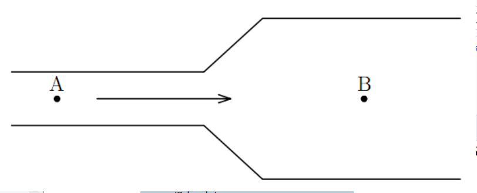
6. (4 boda) Liječnik treba odrediti koliki je postotak presjeka pacijentove arterije obložen plakom. Kako bi to
odredio, liječnik mjeri krvni tlak neposredno prije blokiranog područja protjecanja, te je izmjerio da on
iznosi 12 kPa. Također, izmjereni krvni tlak u blokiranom području iznosi 11,5 kPa. Liječnik je odredio da
je brzina protjecanja krvi prije blokiranog područja 30 cm/s te da je gustoća pacijentove krvi 1,06
g/cm3. Koliki je postotak poprečnog presjeka pacijentove arterije obložen plakom?
Primjer zadatka: (2 boda) Kroz cijev promjera R protječe fluid brzinom v. Kolika je brzina tog fluida u dijelu cijevi
polumjera 3 R? Obrazloži svoj odgovor.
a. v/3
b. v/6
c. v/36
d. v
6. Fluidi u gibanju (numerički zadatak)
Primjer zadatka: ( 6 bodova) Horizontalno postavljena cijev ima na širem dijelu presjek 40 cm2, a na užem dijelu
10 cm2. Voda protječe kroz cijev tako da u svakoj sekundi prođe 510–3 m3 vode, tzv. volumni protok. Izračunajte:
a) brzinu vode u širem i užem dijelu cijevi. b) Razliku statičkih tlakova na tim mjestima.
Primjene Bernoullijeve jednadžbe
Pojave i principi rada nekih uređaja koji se mogu objasniti
Bernoullijevom jednadžbom
Temperature (POTREBNO DORADITI ODAVDJE)
- proučavamo plinove; zamislimo plin u boci → sudari čestica sa stjenkama→ tlak Brownovo gibanje - dokaz kaotičnom gibanju - uzrok takvog gibanja su sudari čestica vode s česticama peluda
- ako posipamo čestice peluda po površini vode, uočit ćemo da se one kaotično gibaju - za razliku od plinova i kapljevina, gdje toplinsko gibanje čestica (molekula, iona, koloidnih čestica) uzrokuje međusobno miješanje dviju ili više tvari, u čvrstim tvarima atomi i ioni difuzijom mijenjaju mjesta u kristalnoj rešetki difuzija
- najbrža u plinovima, sporija u kapljevinama, a najsporija u čvrstim tvarima.
- Brzina difuzije neke tvari općenito se povećava s porastom temperature (jer se čestice gibajubrže) i smanjuje porastom gustoće
- kapljevine različitih molekularnih masa koje se međusobno mogu miješati (npr. voda i alkohol) difundirat će jedna u drugu dok će ioni ili molekule čvrstih tvari otopljenih u otapalu (npr. sol ili šećer u vodi) difundirat dok se ne postigne njihova jednolika koncentracija u otopini
- dva metala u dodiru pokazuju malu ali jasnu tendenciju međusobne difuzije
- moguća je i kroz polupropusnu membranu (pri osmozi i dijalizi)
- brzina kemijske reakcije često je određena brzinom difuzije reagirajućih čestica, posebno u reakcijama čvrstih tvari
- na difuziji se temelje i mnoge tehnološke operacije, proizvodnja elektroničkih elemenata u mikroelektronici i poluvodičkoj tehnici, modificiranje svojstava površinskih slojeva u metalurgiji, djelovanje difuzijskih vakuumskih pumpi i dr.
- srednja brzina molekula plina može se odrediti formulom
v(srednja)=
v1+...+vn/N
=problem?
- važnija veličina od srednje brzine je srednja kvadratna brzina ili efektivna brzina:
vef=
2√
v12+...+vn2/N
- općenito vrijedi ef v v - o čemu ovisi tlak plina u posudi?
p=
N/V
m1*vef2=
N/V
Ek1(srednja)
Temperatura
- fizička veličina kojom iskazujemo koliko jedno tijelo odstupa od toplinske ravnoteže s drugim tijelom
- povezana je uz srednju kinetičku energiju plina:
3/2
kB*T
- ukupna srednja kinetička energija svih molekula plina je Ek(srednja)=N*Ek1(srednja)
- Boltzmanova konstanta je kb=1.38*10-23JK-1
- temperaturu mjerimo termometrima
- najvažnije temperaturnie ljestvice su Kelvinova, Celsiusova Fahrenheitova
- njihov međusobni odnos
T(K)=t(celzijus)+273.15
t(fahren)=
9/5
t(celzijus)+32
- ovdje je važno uočiti da je ∆t(°C)=∆T(K)
- temperaturu od 0 K (apsolutna nula) nije moguće postići uređajem ili termodinamičkim procesom, već se može samo približiti
- na apsolutnoj nuli molekule u tijelima imaju najnižu moguću energiju
1. Temperaturu od 12 °C iskaži u °F i K!
2. Kolika je srednja kinetičkaenergija translatornog gibanja molekula helija i argona pri temperaturi1200 K?
3. Pet čestica idealnog plina helija ima brzine iskazane u m/s:500, 600, 700, 800 i 900. Izračunajte: - a) srednju brzinu, - b)efektivnu brzinu po čestici, - c) temperaturu plina ako je molarna masaplina 4 g/mol.
4. Pri kojoj će temperaturi termometri koji mjere u °C i°F pokazivati istu vrijednost?
5. Kolika je srednja kinetička energija iefektivna brzina molekule kisika u zraku pri temperaturi 20°C? Masamolekule kisika iznosi 5,3∙10-26 kg.
6. Odredite temperaturu pri kojojatom helija (m=6,63∙10-27 kg) ima brzinu 3000 m/s 1. U cilindru senalazi 10m3 kisika [M(O2)=32g/mol] pri standardnim uvjetima. Kolika jeto količina tvari iskazana molima? Kolika je masa kisika? 2. U cilindruse nalazi 25,5mol helija temperature 10C i tlaka 1,35atm. Koliki jevolumen helija? 3. Zatvoreni cilindar sadrži zrak na temperaturi 100 C.Na kojoj bi temperaturi trebao biti zrak u posudi da tlak bude dva putaveći? 4. Idealni plin mase m zatvoren u cilindru volumena V imatemperaturu T i tlak p. Ako se masa plina poveća na 3m, temperaturasnizi na T/3 i volumen smanji na V/3 tlak plina u cilindru će biti: a) p/ 3 b) p c) 3 p d) 9 p e) 27 p 5. U zatvorenoj posudi nalazi se plin natemperaturi 27 C i tlaku p0. Ako se plin zagrije na temperaturu 327Ctlak će biti: a) p0 / 2 b) 3 p0 c) 4 p0 d) 2 p0 e) p0 6. Mjehurićidealnog plina poveća svoj volumen kada se s dna jezera penje premapovršini dva puta. Kolika je dubina jezera pod pretpostavkom da jetemperatura vode jednaka na svim dubinama? (g10m/s2 ; vode=103kg/m3 ;patmos.=105Pa)
7. Određena masa plina ima temperaturu 27C, tlak 1,7bara pri volumenu 6,5 litara. Kolika će biti temperatura plina ako setlak poveća na 3,5 bara, a volumen smanji na 4,2 litre?
8. Temperatura usobi volumena 50 m3 povisi se od 10 C na 20 C. Pri tom je tlak stalani iznosi 105 Pa. Za koliko se promijeni masa zraka u sobi? (Mzraka = 29g/ mol)
9. Tlak u žarulji pri temperaturi 20C iznosi 0,9·105 Pa. Kolikije tlak u žarulji kad se zrak u njoj ugrije na 127C?
10. Kolika jetemperatura plina u zatvorenoj posudi ako mu se tlak povećao za 1% pripromjeni temperature za 3 K?
4. (3 boda) Grafički prikaz ovisnosti volumena etanola o temperaturi je na donjoj slici. Gustoća etanola na
0oC je 800 kg/m3. Izračunajte gustoću etanola na temperaturi 4,2oC.
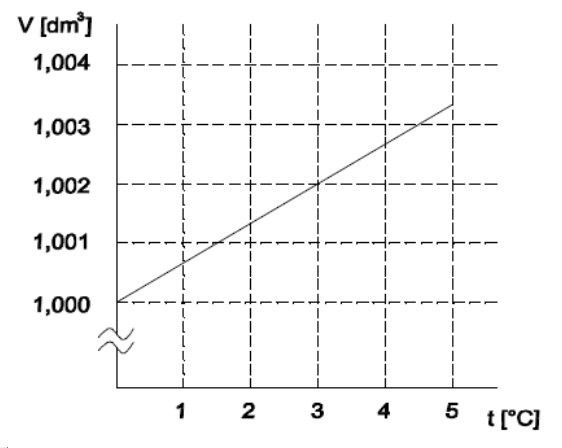
5. Balon sadrži 500 m3 helija na temperaturi 27 °C i tlaku 105 Pa. Izračunajte volumen balona na visini
6000 m gdje je tlak 0,5·105 Pa, a temperatura -3 °C.
3. (2 boda) Idealnom plinu, koji se nalazi u zatvorenoj posudi, povećamo temperaturi za 3 K, pri čemu mu se
tlak poveća za 5 %. Kolika je bila početna temperatura tog idealnog plina?
a) 3,15 K
b) 2,86 K
c) 60 K
d) 273,15 K
4. (3 boda) Čelična šipka ima promjer 3.000 cm na 25 °C. Prsten od mesinga ima unutarnji promjer od
2.992 cm na 25 °C. Pronađi najnižu temperaturu pri kojoj će štap stati u prsten.
(αčelik=11·10-6 °C-1; αmesing=19·10-6 °C-1)
Plinski zakon
- pri proučavanju plinova koristit ćemo model idealnog plina za koje mora vrijediti:
- volumen molekula plina može se zanemariti prema volumenu posude u kojoj se plin nalazi
- zanemaruju se međumolekulske sile
- međusobni sudari molekula i sudari sa stjenkom posude su savršeno elastični
- makroskopske fizikalne veličine koje možemo izravno mjeriti i mijenjati u plinova su temperatura, tlak i volumen
- pri mjerenjima možemo jednu od ove tri veličine držati konstantnom i promatrati kako se mijenjaju preostale dvije, - pa govorimo o 3 plinska zakona:
- 1.) Boyle-Marriotteov zakon (T=konst., izotermna promjena)
pv=konst.
p1V1=p2V2
- 2.) Gay-Lussacov zakon (p=konst., izobarna promjena)
V/t
=konst.
V1/T1
=
V2/T2
- 3.) Charlesov zakon (V=konst., izohorna promjena)
p/T
=konst.
P1/T1
=
p2/T2
- ukoliko se sve tri veličine mijenjaju, prijašnja tri zakona zajedno zapisujemo u obliku:
pV/T
=konst.
- konstanta se može naći eksperimentalno, pa dobivamo jednadžbu poznatu kao opća plinska jednadžba:
pV/T
=nR=Nkb
- R= 8,314 Jkg-1mol-1 je opća (univerzalna) plinska konstanta
- iz kemije znate da je
n=
N/Na
=konst.
- gdje je Na=6,022∙1023 mol-1 Avogadrov broj
1. U pV, VT, Tp, Vp, TV i pT dijagramima prikaži slijedeće promjenestanja plina: izobarna → izotermna → izohorna, uz uvjet da se volumensmanjuje kad nije konstantan. - rješenje
2. U pV, VT, Tp, Vp, TV i pTdijagramima prikaži slijedeće promjene stanja plina: izotermna →izohorna → izobarna, uz uvjet da se temperatura povećava kad nijekonstantna. - rješenje
3. U pV, VT, Tp, Vp, TV i pT dijagramima prikažislijedeće promjene stanja plina: izohorna → izobarna → izotermna, uzuvjet da se tlak smanjuje kad nije konstantan. - rješenje
4. U cilindru se nalazi 10m3 kisika [M(O2)=32g/mol] pri standardnim uvjetima. Kolika
je to količina tvari iskazana molima? Kolika je masa kisika?
5. U cilindru se nalazi 25,5mol helija temperature 10C i tlaka 1,35atm. Koliki je
volumen helija?
6. Zatvoreni cilindar sadrži zrak na temperaturi 100 C. Na kojoj bi temperaturi
trebao biti zrak u posudi da tlak bude dva puta veći?
7. Idealni plin mase m zatvoren u cilindru volumena V ima temperaturu T i tlak p.
Ako se masa plina poveća na 3m, temperatura snizi na T/3 i volumen smanji na
V/3 tlak plina u cilindru će biti:
a) p / 3 b) p c) 3 p d) 9 p e) 27 p
8. U zatvorenoj posudi nalazi se plin na temperaturi 27 C i tlaku p0. Ako se plin
zagrije na temperaturu 327C tlak će biti:
a) p0 / 2 b) 3 p0 c) 4 p0 d) 2 p0 e) p0
9. Mjehurić idealnog plina poveća svoj volumen kada se s dna jezera penje prema
površini dva puta. Kolika je dubina jezera pod pretpostavkom da je temperatura
vode jednaka na svim dubinama? (g10m/s2; vode=103kg/m3; patmos.=105Pa)
10. Određena masa plina ima temperaturu 27C, tlak 1,7 bara pri volumenu 6,5 litara.
Kolika će biti temperatura plina ako se tlak poveća na 3,5 bara, a volumen smanji
na 4,2 litre?
11. Temperatura u sobi volumena 50 m3 povisi se od 10 C na 20 C. Pri tom je tlak
stalan i iznosi 105 Pa. Za koliko se promijeni masa zraka u sobi? (Mzraka = 29 g/ mol)
12. Tlak u žarulji pri temperaturi 20C iznosi 0,9·105 Pa. Koliki je tlak u žarulji kad se
zrak u njoj ugrije na 127C?
13. Kolika je temperatura plina u zatvorenoj posudi ako mu se tlak povećao za 1% pri
promjeni temperature za 3 K?
3. Plinski zakoni (konceptualni zadatak)
Primjer zadatka: (2 boda) Pri temperaturi T i tlaku p, obujam 1 mola idealnoga plina iznosi V. Koliki će biti obujam
2 mola tog istoga idealnoga plina pri temperaturi T/2 i tlaku 2 p? Obrazloži svoj odgovor.
a) V
b) 2 V
c) V/2
d) 8 V
5. Plinski zakoni (numerički zadatak)
Primjer zadatka: (4 boda) Kolika je gustoća idealnoga plina molarne mase 32 g/mol pri tlaku od 2·105 Pa i
temperaturi 77 K?
5. (4 boda) Spremnik kapaciteta 20 dm3 sadrži dušik na tlaku 107 Pa i temperaturi 20 °C. Spremnik se zatim
spoji s drugim spremnikom koji je potpuno prazan, kapaciteta 10 dm3. Ukoliko je nakon ekspanzije plin
iste temperature kao i na početku, izračunajte koliki je tlak plina poslije ekspanzije i koliko kg dušika se
nalazi u svakom spremniku. Molarna masa dušika M(N)=14 g/mol.
Toplinsko širenje i stezanje tvari
- tijela se pri zagrijavanju rastežu (metali npr.) ili stežu (guma, čvarci)
- ako rastezanje tijela promatramo u jednoj dimenziji, govorimo o linearnom širenju tijela:
- no, zbog oblika tijela je ponekad nemoguće zanemariti ostale dimenzije, pa govorimo o volumnom širenju tijela:
- primjenu širenja i skupljanja tijela pri određenoj temperaturi su žice dalekovoda, širenje i skupljanje mostova, tračnica vlakova i tramvaja,...
- najpoznatija tvar koja pokazuje odstupanja od ovih razmatranja je voda (anomalija vode)
- voda je najgušća pri 4°C, a gustoća joj se smanjuje povišenjem i sniženjem temperature
- pogledajmo kako se gustoća mijenja s toplinskim širenjem tijela:
1. Štap od platine (α=9·10-6 K -1 ) dugačak je pri 20°C 998 mm. Prikojoj će temperaturi štap biti dugačak 1 m? 2. Staklena boca (α=0,9·10-5K -1 ) ima obujam 2000 cm3 pri 0°C. Pri 0°C boca je do ruba napunjenaalkoholom (γ=1,135·10-3 K -1 ). Koliko će alkohola izaći iz boce kad jeugrijemo na 50°C? 3. Gustoća zlata (α=1,4·10-5 K -1 ) pri 20°C je 19,30g/cm3 . Nađi gustoću zlata pri 90°C.
4. Toplinsko širenje tvari (numerički zadatak)
Primjer zadatka: (4 boda) Tijelo obujma 1 cm3 zagrije se za 200°C te mu se obujam poveća za 2 mm3. Koliki je
linearni toplinski koeficijent tvari od kojeg je građeno to tijelo?
Toplina ili unutarnja energija
toplina
energija koja prelazi s jednog tijela na drugo zbog njihove temperaturne razlike
- oznaka za toplinu je Q, a mjerna jedinica J
- načini prijenosa topline
1.) kondukcija (vođenje) - kinetička se energija prenosi od molekule do molekule sudarom (svojstveno čvrstim tijelima, npr. žlica u posudi za čaj)
2.) konvekcija (prijenos) - nastaje kad molekule mijenjaju svoj položaj u prostoru zbog toplinske neravnoteže (svojstveno fluidima, npr. zagrijavanje zraka)
3.)radijacija (zračenje) - toplina se prenosi elektromagnetskim zračenjem (fotonima)
Unutarnja energija
- zbroj kinetičke energije toplinskog gibanja molekula i potencijalne energije međumolekulskog gibanja nekog tijela
- oznaka je U, a mjerna jedinica J:
- može se mijenjati toplinom (zagrijavanjem raste U) i radom (U se smanjuje kad tijelo obavlja rad)
specifični toplinski kapacitet
1. Usporedite unutarnju energiju čaše vode temperature 100 C i oceana temperature 20 C.
2. Tijelo izrađeno od bakra mase 50g ima temperaturu 25C. Kolika ćebiti konačna temperatura tijela ako pri zagrijavanju apsorbira 1200Jtoplinske energije. (c bakra=387J/kgK)
3. Temperatura vode na vrhuslapa visokog 50m iznosi 10C. Kada bi se sva potencijalna energija vodepretvorila na dnu slapa u toplinsku izračunajte kolika bi bilatemperatura vode na dnu slapa? (g=9,81m/s2 ; c vode=4186J/kgK)
4.Projektil brzine 200m/s udari u zemljani nasip i zabije se u njega. Akoje specifični toplinski kapacitet materijala iz kojeg je načinjenprojektil 460J/kgK i ako je pri zaustavljanju 60% početne kinetičkeenergije utrošeno za zagrijavanje projektila, koliko će biti povećanjetemperature projektila?
5. Na istom uređaju zagrijavamo tijelo A itijelo B. Oba tijela imaju jednaku masu i apsorbiraju jednaku količinutopline. Ako se pritom tijelu A temperatura povisi za 3C, a tijelu B za4C koje tijelo ima veći specifični toplinski kapacitet?
1. Usporedite unutarnju energiju čaše vode temperature 100 C i oceana temperature 20 C.
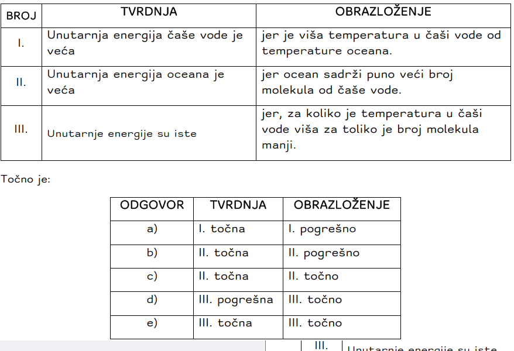
2. Tijelo izrađeno od bakra mase 50g ima temperaturu 25C. Kolika će biti konačna
temperatura tijela ako pri zagrijavanju apsorbira 1200J toplinske energije.
(c bakra=387J/kgK)
3. Temperatura vode na vrhu slapa visokog 50m iznosi 10C. Kada bi se sva
potencijalna energija vode pretvorila na dnu slapa u toplinsku izračunajte kolika
bi bila temperatura vode na dnu slapa? (g=9,81m/s2; c vode=4186J/kgK)
4. Projektil brzine 200m/s udari u zemljani nasip i zabije se u njega. Ako je
specifični toplinski kapacitet materijala iz kojeg je načinjen projektil 460J/kgK
i ako je pri zaustavljanju 60% početne kinetičke energije utrošeno za
zagrijavanje projektila, koliko će biti povećanje temperature projektila?
5. Na istom uređaju zagrijavamo tijelo A i tijelo B. Oba tijela imaju jednaku masu i
apsorbiraju jednaku količinu topline. Ako se pritom tijelu A temperatura povisi
za 3C, a tijelu B za 4C koje tijelo ima veći specifični toplinski kapacitet?
6. (6 bodova) U termički izoliranoj posudi nalaze se na temperaturi 0°C: 2.4 kg vode i 0.45 kg leda. Izlaz cijevi,
koja izlazi iz bojlera u kojem ključa voda pri atmosferskom tlaku, uroni se u smjesu vode i leda u
posudi. Koliko se vodene pare mora kondenzirati u posudi (pri atmosferskom tlaku) da bi konačna
temperatura smjese u posudi iznosila 28°C? Prijenos topline na posudu je zanemariv. Specifični
toplinski kapacitet vode je 4186 J/(kgK), latentna toplina taljenja leda je 3.35·105 J/kg, a latentna toplina
isparavanja vode je 2.256·106 J/kg.
6. (7 bodova) U toplinski izoliranoj posudi pomiješaju se 1 kg tvari A temperature -2 oC i 1 kg vrele vode
temperature 90 oC. Izračunaj temperaturu vode kada se uspostavi toplinska ravnoteža. Graf
prikazuje ovisnost temperature tvari A o vremenu kada se 2 kg tvari A, početno u čvrstom stanju
na temperaturi -80 oC, zagrijava pomoću grijača koji svake minute preda tvari A 2000 J.
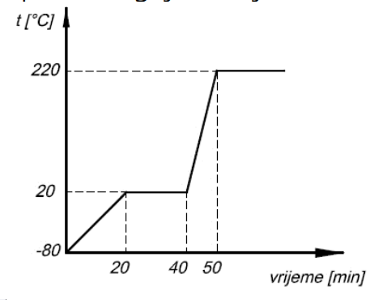
Zakoni termodinamike
Termodinamika
- dio fizike koji proučava vezu između topline i drugih oblika energije kao i pretvaranje topline u mehanički rad
- najjednostavniji termodinamički sustav je plin zatvoren u cilindru s pomičnim klipom (sustav izmjenjuje energiju s okolinom u obliku toplineQ i mehaničkog rada W)
- termodinamički proces je promjena stanja nekog sustava
- primjer: sustav sa kružnim procesima gdje se sustav vraća u prvobitno stanje, toplinski strojevi su uređaji koji obavljaju neki termodinamički proces
- Zakoni termodinamike
- prvi zakon termodinamike
- poseban zakon očuvanja energije za situaciju gdje do promjene unutarnje energije dolazi zbog izmjene topline i/ili rada s okolinom:
- u ovom izrazu Q je pozitivna (+) kad se dovodi sustavu - W je pozitivna (+) kad ga obavlja sustav - ΔU je pozitivna (+) kad se unutarnja energija sustava povećava
- ukoliko pogledamo kružni proces (za koji vrijedi ΔU=0 == Q=W), sva se dobivena toplina može pretvoriti u mehanički rad
- stroj koji bi dao više rada od uložene topline zovemo perpetuum mobile prve vrste i on je nemoguć
- prvi zakon termodinamike ne govori ništa o iskoristivosti samog toplinskog stroja i smjeru procesa (povratan ili nepovratan)
- drugi zakon termodinamike
- govori o uvjetima u kojima se iz topline može dobiti mehanički rad (promatramo dva spremnika različite temperature)
- prijenos topline pri kružnom procesu iz spremnika niže temperature u spremnik više temperature bez uloženog vanjskog rada je nemoguć - nemoguće je dobiti rad crpeći toplinu samo iz jednog spremnika == perpetuum mobile druge vrste je nemoguć
- drugi zakon termodinamike opisuje se i entropijom (fizička veličina koja pokazuje sposobnost sustava da se spontano promijeni, a mjera je nereda nekog sustava)
- drugi zakon termodinamike tada glasi: Izolirani sustav spontano prelazi iz sređenih stanja u stanja najvećeg nereda (maksimalne entropije)
- prirodni procesi su nepovratni i odvijaju se spontano od stanja manjeg ka stanju većeg nereda u sustavu
- treći zakon termodinamike:
- Nije moguće konačnim brojem procesa sniziti temperaturu bilo kojeg sustava na 0 K.
1. Kružni termodinamički proces prikazan je u pV grafu:
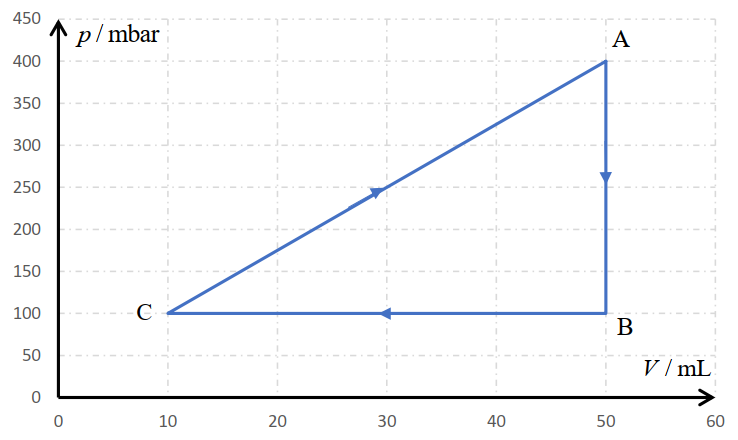
a) Navedi sve promjene stanja plina tijekom jednog kružnog procesa.
b) Dobiva li se rad ili se ulaže tijekom jednog kružnog procesa?
c) Koliki je iznos tog rada?
d) Kolika se toplina tijekom jednog kružnog procesa izmijeni s okolinom?
2. Korisnost Carnotovog toplinskog stroja, koji radi između spremnika temperatura T1 i T2, iznosi . Kolika
će biti korisnost tog stroja kad mu temperaturu toplijeg spremnika povećamo za 10 %, a hladnijeg
smanjimo za 10 %?
a)
b) 0,9
c) 9
11
d) 2 9
11
+
3. Bakreno tijelo mase 1 kg zagrijemo, pri atmosferskom tlaku od 1013hPa, od 20 C na 50 C. Volumni
koeficijent rastezanja bakra je 5,110− K−. a) Koliki rad se obavi pri tom procesu? b) Kolika je količina
topline predana bakru ako je cbakra=387 J/kgK? c) Za koliko se promijenila unutarnja energija bakra?
Gustoća bakra je 8,96 g/cm3.
4. Jedan gram vode na temperaturi vrenja ima volumen 1cm3 pri atmosferskom tlaku 1013hPa. Kad se voda
zagrije dobije se 1671cm3 pare, pri jednakom atmosferskom tlaku. Izračunajte promjenu unutarnje
energije pri tom procesu. (latentna toplina isparavanja vode je r=2,26106J/kg)
5. Koliki rad obave 4 kmola idealnog plina pri izobarnom procesu kad mu se temperatura povisi od 80 C
na 180 C?
6. Izračunajte rad plina u kružnom procesu A→B→C→A
prikazanom u p,V dijagramu. Koliki je dobiveni rad,
obavljeni rad, a koliki je rad obavila neka vanjska sila nad
plinom, tzv. uloženi rad?
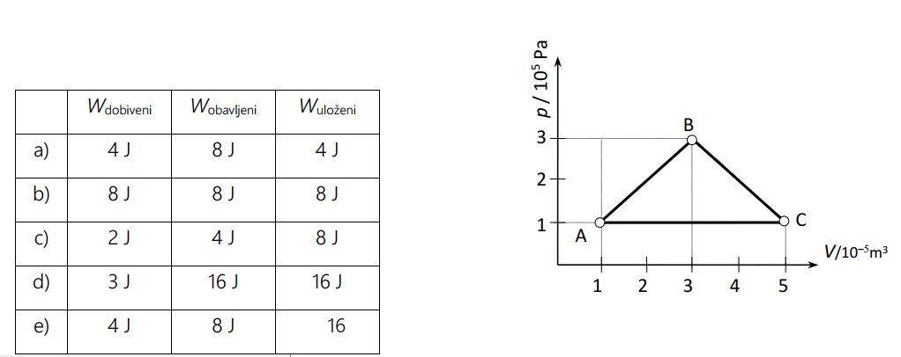
7. Jednoatomni idealni plin prolazi kružni proces A→B→C→A prikazan na crtežu.
a) Opišite koji se procesi zbivaju tijekom kružnog procesa?
b) Kod kojeg procesa neće doći do promjene unutarnje
energije plina?
c) Koliki rad moramo uložiti da bi proces bio kružni?
d) Odredite temperaturu svakog stanja i prikažite taj
proces u p = f ( T ) i V = f ( T ) grafu.
e) Koliki je rad obavljen od stanja C do stanja A, a koliki
od B do C?
f) Kolika je promjena unutarnje enegije pri svakoj
promjeni?
g) Dobiva li se mehanički rad tijekom ciklusa A→A ili se on
mora uložiti?
h) Odredite predznake izmjenjene topline plina s
okolinom pri svkom procesu i izračunajte količine
topline tijekom izobarnog i izohornog procesa.
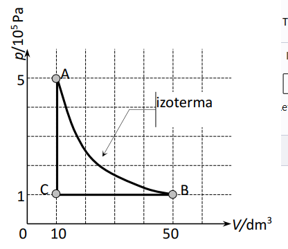
8. Količina od 0,2 mola dušika N2 (M=28g/mol) nalazi u cilindru s pomičnim klipom pod tlakom od
2,5105Pa. Pri izobarnom zagrijavanju temperatura dušika naraste od 20C do 100C. Specifični toplinski
kapacitet dušika kod stalnog tlaka je cp=1040J/kgK. Izračunajte: a) početni i konačni volumen dušika b)
rad plina c) dovedenu toplinu d) promjenu unutarnje energije plina.
9. Idealni jednoatomni plin prolazi kružni proces prikazan
na slici. Količina plina je 0,1 mol.
a) Opišite koji se procesi zbivaju tijekom kružnog procesa?
b) Odredite volumen svakog stanja i prikažite taj proces u
grafu ovisnosti tlaka p o volumenu V (p,V graf).
c) Da li se tijekom jednog ciklusa dobiva mehanički rad ili
se on mora uložiti? Koliki je uloženi, a koliki obavljeni
rad i koliko topline se apsorbira ili predaje tijekom svake
promjene?
d) Kolika je promjena unutarnje energije plina tijekom
ciklusa →→→→?
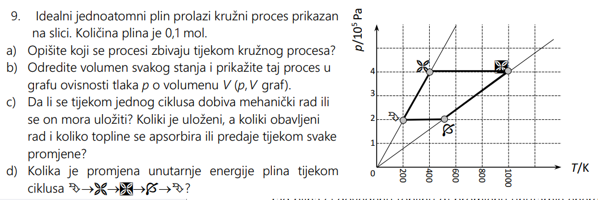
10. Idealni monoatomni plin zatvoren u cilindru s pomičnim klipom prolazi kroz niz ravnotežnih stanja od 1
do 5 i natrag do 1 prikazanih u p = f ( 1/V ) grafu (crtež).
I. Usporedite temperature plina u pojedinim
ravnotežnim stanjima i zaokružite točan
odgovor!
a) T1 < T2 < T3 < T4 < T5
b) T1 > T2 > T3 > T4 > T5
c) T1 = T2 > T3 = T4 > T5
d) T1 = T2 > T3 = T5 > T4
e) T2 = T3 > T1 = T4 = T5
f) T4 > T5 = T3 > T1 = T2
g) ne može se odgovoriti jer nije poznato
koliko plina ima u cilindru.
II. Opišite koje se promjene zbivaju s plinom i nacrtajte te promjene u p = f ( V ), p = f ( T ), i V = f ( T ), u grafu.
III. Koliki su volumeni plinova u pojedinim stanjima?
IV. Kolike su unutarnje energije plina u pojedinom stanju?
V. Koliki je rad plina pri izobarnim promjenama? Koji su predznaci rada?
VI. Koliko toplinske energije plin izmjenjuje s okolinom pri izobarnim procesima? Koji su predznaci topline?
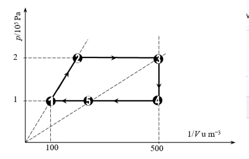
11. Dušik mase 10g nalazi u cilindru s pomičnim klipom pod tlakom od 2,5105Pa i temperature 20C . Pri
izobarnom procesu dušik ekspandira do volumena 10 litara. Specifični toplinski kapacitet dušika kod
stalnog tlaka je cp=1040J/kgK, a molna masa M=28g/mol. Izračunajte promjenu unutarnje energije
dušika pri tom procesu.
12. Dvije litre idealnog jednoatomnog plina nalaze se pod tlakom 105Pa. Koliku količinu topline treba predati
plinu da mu se:
a) dva puta poveća volumen pri stalnom tlaku;
b) dva puta poveća tlak pri stalnom volumenu?
13. Toplinski stroj radi po idealnom Carnotovu kružnom procesu. Pritom radna tvar od grijača dobiva 6300J
topline a 80% te topline predaje hladnijem spremniku. a) Kolika je korisnost stroja? b) Koliki rad daje taj
stroj?
14. Neki toplinski stroj apsorbira 1700J iz toplijeg spremnika, a predaje 1200J topline hladnijem spremniku
tijekom svakog ciklusa. a) Koliki se mehanički rad obavi tijekom jednog ciklusa? b) Kolika je korisnost
stroja? Kolika je izlazna snaga stroja ako svaki ciklus traje 0,4s? Ako bi stroj radio po Carnotovu kružnom
procesu koliki bi bio omjer temperatura spremnika više i niže temperature Tviše/Tniže?
15. Motor hladnjaka ima snagu 480W. Ako je efikasnost hladnjaka =2,8 izračunajte kolika snaga se predaje
spremniku više temperature, a kolika se oduzima od spremnika niže temperature tijekom jednog ciklusa?
16. Toplinska crpka radi na principu obrnutog Carnotovog procesa. Najviša temperatura u kući iznosi 300K.
Ako je razlika temperatura atmosfere i one u kući 40 K kolika treba biti snaga takve crpke ako je za
zagrijavanje direktno pomoću grijalice priključene na gradsku mrežu potrebna snaga od 21 kW?
17. Za jedan sat toplinska pumpa potroši 1,4kWh električne energije. Pritom se u kuću istodobno dovodi
1,2107J toplinske energije. a) Kolika je efikasnost pumpe? b) Koliko energije iskazane u kWh uzima pumpa
iz okoline tj. hladnijeg spremnika?+ x
20 m/s 20 m/s
18. Jedan kilogram ugljena proizvede dovoljno pare da parni stroj radi dva sata prosječnom snagom od
700W. Koliki je faktor korisnosti stroja ako je latentna toplina izgaranja ugljena 3,3107 J/kg?
19. U hladnjaku treba 100 g vode temperature 0C zamrznuti u led iste temperature. Koliki se najmanji rad
mora uložiti pri tom procesu pod pretpostavkom da hladnjak radi po inverznom Carnotovom procesu.
Temperatura okoline iznosi 27 C, dok je specifična toplina taljenja leda 3,3·105 J/kg.
20. U pretinac hladnjaka gdje se pravi led stavimo 1 kg vode temperature 0C. Specifična toplina taljenja leda
je 3,3105 J/kg. Pod pretpostavkom da se iz pretinca odvodi energija od 100 J/s izračunajte najmanje
vrijeme potrebno za zamrzavanje.
21. Kružni proces A→B→C→D→A toplinskog stroja prikazan je p,V
grafom. Radna tvar je jednoatomni idealni plin. Tlak plina je
p0=105Pa, a volumen V0=22,5dm3. Izračunajte:
a) Dobiveni rad tijekom ciklusa.
b) Toplinu koju prima plin tijekom A→B→C promjene.
c) Faktor korisnosti stroja.
d) Kolika bi bila korisnost da stroj radi po idealnom Carnotovu
procesu između spremnika najniže i naviše temperature?
e) Kolika bi bila efikasnost hladnjaka koji bi radio u obrnutom
Carnotovu procesu između spremnika jednakih temperatura
kao u d) zadatku?
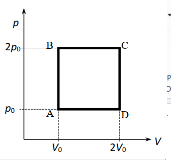
22. Uređaj za klimatizaciju “air conditioner” radi tako da oduzima prostoriji u kojoj je teperatura 21C količinu
topline i predaje je atmosferi temperature 33C. Koliko toplinske energije se predaje atmosferi za svaki
đul (1J) potrošene električne energije ako je proces idealan tj. obrnuti Carnotov?
23. Izračunajte promjenu entropije kada rastalimo 300g olova temperature taljenja 600K, latentne topline
taljenja 2,45104J/kg.
24. Dva objekta temperatura 273K i 373K izmjenjuju količinu topline od 8J. Kolika je promjena entropije
svakog sustava? Koji od sustava povećava entropiju, a koji smanjuje? Pokažite da je pritom nemoguće da
se entropija svemira ne promjeni. Kolika je promjena entropije svemira?
25. Dva automobila jednakih masa m1=m2=2000kg gibaju se
brzinama jednakog iznosa 20m/s jedan u susret drugom
(crtež) i sudare se. Sudar je savršeno neelastičan. Izračunajte
promjenu entropije svemira ako se sudar događao pri
temperaturi 23C.
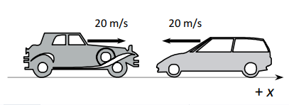
26. Idealni monoatomni plin prelazi iz stanja A u stanje C
kako je prikazano p,V grafom (crtež).
a) Kolika je promjena unutarnje energije plina pri
prelasku iz A→C?
b) Koliki je rad plina pri prelasku direktno iz stanja A→C,
a koliki ako plin iz stanja A prolazi proces A→B→C?
c) Koliko topline je predano plinu pri prelasku plina
direktno A→C a koliko procesom A→B→C?
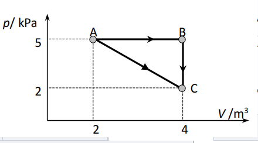
27. Izračunajte najmanju prosječnu potencijalnu energiju međumolekulske veze Ep,T molekula vode da
molekula vode ne ispari tj. pobjegne iz vode, ako je latentna toplina isparavanja 2260 kJ/kg?
[NA6·1023mol–1; M(H2O) = 18 g/mol]
28. Šime ima auto s motorom obujma Vh = 1000 cm3 i komorom izgaranja obujma V2=200 cm3. Motor koristi
Ottov kružni proces (dva adijabatska i dva izohorna procesa, kako je navedeno na slici). Pri usisu
mješavine plinova (goriva i zraka) tlak je p1=94.2 kPa i temperatura je T1=50°C. Poznato je da mješavina
ima slijedeća svojstva: k=1.35 (konstanta adijabatskog procesa), M = 30.34 g/mol (efektivna molarna
masa mješavine), Lc = 1862kJ/kg (specifična toplina izgaranja) i cV=0.83kJ/kgK (specifični toplinski
kapacitet pri konstantom volumenu). Izračunajte slijedeće vrijednosti za Šimin motor: A) Masu smjese
plina pri usisu. B) Temperaturu T2 i tlak p2. C) Temperaturu T3 i tlak p3. D) Temperaturu T4 i tlak p4. E)
Izračunajte učinkovitost motora.
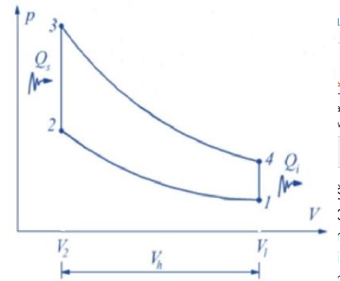
29. Jednoatomski idealni plin provodi reverzibilni kružni proces od tri dijela: (1) izohorni, koji dovodi plin iz
početnog stanja A (VA, pA) u stanje B u kojem je tlak dvostruko veći (2) adijabatsko širenje do stanja C
(3) izotermna kompresija koja vraća sustav iz C u početno stanje A. Nacrtajte na p-V grafu procese i
izračunajte slijedeće: a) Omjer tlakova pC ⁄ pA i omjer volumena Vc / VA. b) Korisnost navedenog
kružnog procesa. c) Snagu koju razvija hipotetski motor koji izvodi ovaj kružni proces, počevši od stanja
A karakteriziranog s pA = 100 kPa i VA = 24 L i radi na frekvenciji f = 75 kružnih procesa u minuti.
1. U pV grafu je prikazan jedan kružni proces:
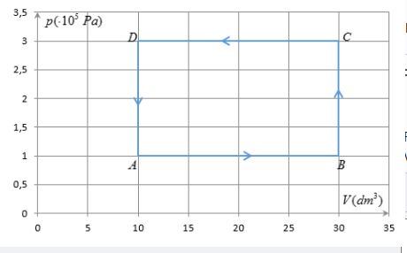
a) Navedi redom sve procese promjene stanja plina koji se događaju u tom procesu.
b) Da li se u ovom procesu rad dobiva ili se mora uložiti?
c) Koliki je iznos tog rada?
d) Kolika se toplina izmjenjuje između sustava i okoline tijekom jednog procesa?
2. Prikazani crteži predstavljaju različite tipove toplinskih strojeva. Q, Q1 i Q2 su topline koje radno tijelo
izmjenjuje s toplijim i hladnijim spremnikom, a W rad kojeg radno tijelo vrši nad okolinom ili okolina
nad njim. Koji se toplinski stroj protivi drugomu zakonu termodinamike?
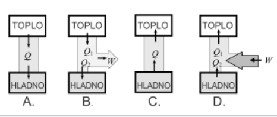
3. Toplinski stroj od toplijeg spremnika primi 2500 J topline, od čega hladnijem spremniku prenese 1500 J
topline. Kolika je korisnost stroja?
4. Idealnom plinu odveli smo toplinu od 3 MJ pri stalnom tlaku, a plin je pritom obavio rad od 2 MJ. Što
se dogodilo s unutrašnjom energijom plina?
5. U cilindru s pomičnim klipom nalazi se plin pod tlakom 2⋅105 Pa pri temperaturi 300 K. Plin se izobarno
stlači na volumen 0,9 ⋅10-3 m3 i pritom se na plinu obavi rad od 20 J. Kolika je temperatura plina nakon
tlačenja?
6. Količina od 0,2 mola dušika N2 (M=28g/mol) nalazi u cilindru s pomičnim klipom pod tlakom od 2,5·105
Pa. Pri izobarnom zagrijavanju temperatura dušika naraste od 20°C do 100°C. Specifični toplinski
kapacitet dušika kod stalnog tlaka je cp=1040J/kgK. Izračunajte: a) početni i konačni volumen dušika b)
rad plina c) dovedenu toplinu d) promjenu unutarnje energije plina.7. Kada se plinu dovede 5kJ toplinske energije on se rastegne od volumena 2 litre na volumen 4 litre. Ako
se promjena zbivala izobarno pri atmosferskom tlaku od 105 Pa, izračunajte kolika je promjena
unutarnje energije plina.
8. Dušik mase 10 g nalazi u cilindru s pomičnim klipom pod tlakom od 2,5·105Pa i temperature 20°C . Pri
izotermnoj ekspanziji dušik ekspandira do volumena od 10 litara. Specifični toplinski kapacitet dušika
kod stalnog tlaka je cp=1040J/kgK. Izračunajte promjenu unutarnje energije dušika pri tom procesu.
9. Idealni monoatomni plin zatvoren u cilindru s pomičnim klipom prolazi kroz niz ravnotežnih stanja
prikazanih u p = f ( 1/V ) grafu (crtež).
1. Dijagrami stanja plina (konceptualni zadatak)
Primjer zadatka: U pV grafu su prikazana promjena stanja idealnoga plina:
a) (3 boda) Opiši promjene stanja plina u grafu.
b) (3 boda) Nacrtaj Tp graf zadanih promjena stanja plina:
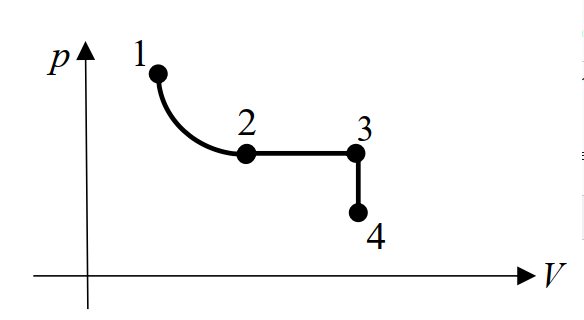
4. Zakoni termodinamike (numerički zadatak)
Primjer zadatka: (7 bodova) Jedan je kružni proces prikazan u p(V) grafu:
a) Opiši promjene stanja plina u prikazanome termodinamičkome procesu.
b) Dobiva li se ili ulaže rad u prikazanome termodinamičkome procesu?
c) Koliki je iznos rada koji se dobiva/ulaže u ovom procesu?
d) Kolika se toplina izmijeni između sustava i okoline? Ulazi li toplina u sustav ili izlazi iz njega?
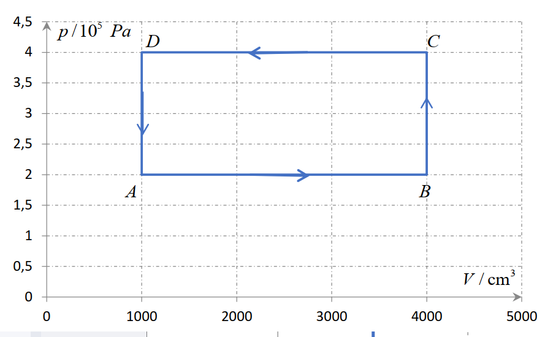
1. (2 boda) Potrebno je povećati korisnost idealnoga toplinskoga stroja. Može se povećati
temperatura toplijeg spremnika za ΔT ili smanjiti temperatura hladnijega spremnika za isti iznos
ΔT. Koja je od navedenih tvrdnji točna?
A. Korisnost će biti veća ako se poveća temperatura toplijega spremnika za ΔT.
B. Korisnost će biti veća ako se smanji temperatura hladnijega spremni ka za ΔT.
C. Korisnost će se povećati jednako u obama slučajevima.
D. Korisnost se ne će promijeniti zbog promjene temperature spremnika topline.
4. (4 boda) Jedan mol idealnoga jednoatomnog plina prolazi kroz kružni proces koji se sastoji od izobare,
izohore i izoterme kao što je prikazano na slici. Tijekom izobarnoga procesa plin izvrši rad od 7,5 kJ.
Kolika je unutarnja energija plina u točki C?
Radovi plina pri određenim termodinamičkim procesima
a) rad plina pri izobarnom procesu
b) rad plina pri izohornom procesu
c) rad plina pri izotermnom procesu
d) rad plina pri adijabatskom procesu
- adijabatski proces
- nema izmjene topline između sustava i okoline (Q=0 == W=-ΔU (sustav obavlja rad na račun unutrašnje energije))
- jednadžba adijabatske promjene plina je:
- adijabatski koeficijent - 1 je manji od k je manji od 2
- za jednoatomne plinove ne ovisi o temperaturi i iznosi 1,67,
- za dvoatomne oko sobne temperature je 1,4
- za višeatomne ovisi o temperaturi plina i vrsti plina
1. Idealni plin pri adijabatskoj ekspanziji daje 25 J rada. Kolika jepromjena unutrašnje energije plina? 2. Idealni plin nalazi se u cilindru čiji klip ima površinu 0,1 m2 . Tlak plina iznosi 1 bar. Kada plinizobarno zagrijavamo, klip se podigne za 4 cm. Ako smo pritom plinu doveli 42 kJ topline, za koliko se promijenila unutarnja energija plina pri tom procesu? 3. Jednoatomni idealni plin prolazi kružni proces A → B → C → A prikazan na crtežu. a) Navedite koji se procesi zbivaju tijekom kružnog procesa. b) Kod kojeg procesa neće doći do promjene unutarnje energije plina? c) Dobiva li se mehanički rad tijekom ciklusa A → A ili se on mora uložiti?
1. U pT grafu su prikazana promjena stanja idealnoga plina:
a) (3 boda) Opiši promjene stanja plina u grafu.
b) (3 boda) Nacrtaj TV graf zadanih promjena stanja plina.
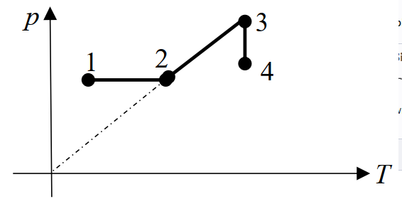
3. (2 boda) Pri temperaturi T i tlaku p, obujam 1 mola idealnoga plina iznosi V. Koliki će biti obujam 1/2 mola
tog istoga idealnoga plina pri temperaturi 2 T i tlaku p/2? Obrazloži svoj odgovor.
a) V
b) 2 V
c) V/2
d) 8 V
1. U Tp grafu su prikazane promjene stanja idealnoga plina:
a) (3 boda) Opiši promjene stanja plina u grafu.
b) (3 boda) Nacrtaj pV graf zadanih promjena stanja plina.
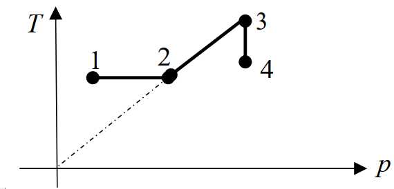
Kalorimetrija
kalorimetrija
- mjerenje promjene topline tijekom kemijske reakcije, promjene stanja, formiranja otopine ili događaja koji uključuje prijenos topline primjer: miješanje tvari različitih temperatura
- mjerenje se obavlja u uređajima koje zovemo kalorimetri
- miješanje dvije tvari (npr. tekućine) različitih temperatura
- toplinska ravnoteža stanje tvari koje nastaje nakon dodira tvari različitih temperatura pri čemu toplina prelazi s toplije na hladniju tvar do izjednačenja njhove temperature:
1. U vodu (c=4190 J/(kgK)) temperature 30°C ulijemo jednaku masu žive(c=130 J/(kgK)). Temperatura pri kojoj je nastupila toplinska ravnoteža iznosi 35°C. Nađi početnu temperaturu žive.
2. Koliko litara vode temperature 15°C treba uliti u posudu koja sadrži 10 litara vode temperature 100°C da bi smjesa imala temperaturu 40°C?
3. Kad pripremamo kupku, pomiješamo hladnu vodu od 12°C i vruću od 70°C. Koliko hladne i tople vode treba pomiješati da bismo dobili 600 litara vode od 37°C?
4. U mjedenom kalorimetru (c=380 J/(kgK)) mase 120 g nalazi se 100 g petroleja temperature 20°C. u petrolej stavimo željezni uteg (c=460 J/(kgK)) mase 200 g kojeg smo prethodno ugrijali na 96°C. Temperatura petroleja porasla je na 40°C. Koliki je specifični toplinski kapacitet petroleja?
42. Tijelo izrađeno iz bakra (cbakra=387J/kgK) ima brzinu 3m/s. Ako se pri zaustavljanju tijela zbog trenja 85%
kinetičke energije tijela pretvori u toplinsku energiju koju apsorbira tijelo, za koliko stupnjeva poraste
temperatura tijela?
49. Dugačka posuda (tuljac) duljine 1m napunjena je djelomično olovnom sačmom specifičnog toplinskog
kapaciteta 130 J/kgK. Posuda se okrene 100 puta. Nakon toga se ustanovi da je temperatura sačme porasla od
20C na 25C. Koliki se topline iskazano u % “izgubilo” tj. prešlo u okolinu? (g10m/s2)
a) 80 % b) 50 % c) 60 % d) 40 % e) 35 %
54. Komad slitine mase 0,15kg zagrije se na temperaturu 540C i ubaci u 400g vode temperature 10C koja se
nalazi u kalorimetru od aluminija mase 200g. Konačna temperatura smjese je 30,5C. Koliki je specifični
toplinski kapacitet slitine? (cvode=4186J/kgK; cAl=900J/kgK)
56. Na raspolaganju imamo tri tijela A, B i C izrađena od istih materijala i jednakih masa mA = mB = mC. Temperatura
tijela A je 0C. Temperatura tijela B je dva puta viša od temperature tijela A, dok je temperatura tijela C dva
puta viša od temperature tijela B. Ako sva tri tijela stavimo u kontakt i zanemarimo gubitke topline na okolinu,
kolika će biti ravnotežna temperatura tih tijela?
a) 0 C b) 45,5 C c) 400 C d) 364 C e) 637 C
72. Čvrsto tijelo grijemo tako da mu dovodimo određenu količinu topline Q. Ovisnost temperature tijela o
toplinskoj energiji prikazana je na grafu ovisnosti temperature t o dovedenoj količini topline Q. Za koji proces
se troši najveća količina toplinske energije?
a) podizanje temperature čvrstog tijela.
b) taljenje.
c) podizanje temperature tekućine.
d) isparavanje
e) zamrzavanje.
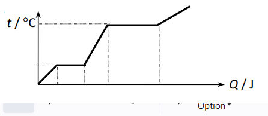
74. Ledu mase 720g i temperature −10C dovedemo 210kJ topline. Što će se dogoditi i kolika će biti ravnotežna
temperatura sustava?
75. Kolika se masa pare temperature 130C mora kondenzirati da se 200g vode koja se nalazi u staklenoj čaši mase
100g zagrije od 20C do 50C? (cvode=4190J/kgK; Li=2,26106J/kg; cpare=2010J/kgK; cstakla=837J/kgK)
78. U bakrenom kalorimetru mase 100g nalazi se 200g vode temperature 4C. U kalorimetar zatim ubacimo
komad bakra mase 284 g i temperature −50C. Kolika se masa leda nalazi u kalorimetru, ako je:
cvode=4186J/kgK; cbakra=389 J/kgK; Lt=3,336105J/kg?
81. Graf T,t predstavlja ovisnost temperature T iskazane kelvinom o
vremenu t iskazanog sekundom kada se određena masa dušika,
prvotno u čvrstom stanju na temperaturi 53K, zagrijava pomoću
grijača stalne snage. Specifični toplinski kapacitet čvrstog dušika
je 6000J/kgK. Iz grafa i zadanih podataka odredite:
a) snagu grijača po jedinici mase
b) temperaturu tališta
c) latentnu toplinu taljenja dušika
d) specifični toplinski kapacitet tekućeg dušika.
85. Graf prikazuje ovisnost temperature TC o vremenu t iskazanom sekundama prilikom hlađenja neke tvari. Tvar
je prvotno bila u plinovitom agregatnom stanju. Iz grafa odredite:
a) temperaturu vrelišta
b) temperaturu tališta
c) koliko treba vremena da sva tvar iz plinovitog stanja na temperaturi vrelišta prijeđe u tekuće stanje?
d) koliko treba vremena da sva tvar iz tekućeg stanja na temperaturi tališta prijeđe u čvrsto stanje?
e) ako se svake sekunde po 1kg tvari odvodi 2kJ topline kolike su latentne topline isparavanja i taljenja?
6. Kalorimetrija/promjena agregacijskih stanja (numerički zadatak)
Primjer zadatka: (5 bodova) U bakrenom kalorimetru mase 500 g nalazi se 200 g vode temperature 20oC. Koliku bi
masu leda temperature -5oC trebalo dodati da bi konačna temperatura bila 10oC? Specifični toplinski kapacitet
vode je 4190 Jkg-1K-1, leda 2093 Jkg-1K-1, bakra 390 Jkg-1K-1, a latentna toplina taljenja leda je 3.35·105 J/kg.
Promjena agregatnih stanja
Plazma
posebno stanje materije
- vrste plazmi
- plazme koje možemo dotaknuti da nam se ništa ne dogodi (plazmena igla),
- plazme koje nas mogu spržiti (plamen ili munje)
- plazme u kojima se sve tvari razgrađuju na osnovne elemente (plazmene mlaznice za spaljivanje otpada),
- plazme u kojima se jezgre atoma spajaju (tokamak),
- plazme u čijem laganom sjaju možemo uživati (polarna svjetlost),
- plazme uz čiju pomoć možemo noću čitati (fluorescentne cijevi, štedne žarulje),
- plazme kojima lakše vozimo gradom (visokotlačne natrijeve žarulje)
- plazma koja nas može oslijepiti ako gledamo direktno u nju (Sunce)
- parametri: temperature čestica, gustoće čestica, i jakosti stacionarnog magnetskog polja
Promjena agregatnih stanja vode
- taljenje leda odvija se pri 0°C (talište); toplina potrebna za taljenje leda mase m je latentna toplina taljenja:
- talište ovisi o tlaku (ako se tvar pri zagrijavanju širi, a tlak raste Tt se smanjuje) i o primjesama (talište legura je niže od tališta njihovih sastavnih elemenata) - isparavanje vode odvija se pri 100°C (vrelište); toplina potrebna da se ispari voda mase m je latentna toplina isparavanja:
- vrelište ovisi o tlaku (veći tlak, veća Ti) i o primjesama (ovisno o primjesi može se ili povećati ili smanjiti) - općenito vrijedi da je λ >r
1. Koliko je topline potrebno za zagrijavanje 500 g leda od temperature -20°C do 105°C? Konstante: cL=2100 J/(kgK), λ=3,35·105 J/kg, cV=4190 J/(kgK), r=2,26·106 J/kg, cVP=1900 J/(kgK). Prikaži ove promjene agregatnih stanja u t(Q) grafu! 2. Koliko je topline potrebno za zagrijavanje 20 dag leda od temperature 0°C do 80°C? Prikaži ove promjene agregatnih stanja u t(Q) grafu! t C( ) Q J m kg led led voda + voda voda vodena para + vodena para plazma −273,15 0 100 r 3. Da bismo ohladili 5 L vode od 20°C do 8°C, bacimo u vodu komad leda od 0°C. Koliko je leda potrebno za hlađenje vode? 4. Na površinu leda pri 0°C stavimo mjedeni uteg (c=380 J/(kgK)) mase 200 g ugrijan do 100°C. Kolika će se masa leda rastaliti pod utegom ako se on ohladi do 0°C? 5. U jednu litru vode temperature 18°C bačen je komad željeza (c=460 J/(kgK)) mase 100 g ugrijan na 500 °C. Koliko je vode prešlo u paru ako je konačna temperatura 20°C? 6. Kolikom brzinom mora letjeti olovno tane (c=130 J/(kgK)) da se pri udaru o zapreku rastali (na 327°C)? Početna je temperatura taneta bila 27°C. Pretpostavimo da sva energija taneta pri sudaru prijeđe u toplinu
Cartonov kružni proces
Cartonov kružni proces
- idealizirani kružni termodinamički proces s najvećim koeficijentom korisnosti
- odvija se između dvije izoterme i dvije adijabate
- radna tvar je idealni plin
- korisnost ovog procesa ovisi samo o temperaturama spremnika, a ne i o vrsti plina:
η=-1
T2/T1
- inverzni Carnotov kružni proces (rashladni stroj)
- iz spremnika niže temperature oduzima toplinu Q2 i predaje spremniku više temperature toplinu Q1
- takvom je procesu potrebno uložiti rad koji je veći od onoga rada što ga sustav predaje okolini
- rashladni učinak (efikasnost) jest omjer topline oduzete spremniku niže temperature i uloženog rada:
ε=
Q2/W
=
T2/T1-T2
1. Odredi korisnost toplinskog stroja ako je poznato da je za vrijeme jednog kružnog procesa utrošen rad 3 kJ, a hladnijem spremniku predana energija od 16 kJ. 2. Plin koji izvodi Carnotov kružni proces obavi rad 300 J na svakih 2 kJ topline dobivene od toplijeg spremnika. Kolika je korisnost djelovanja toga kružnog procesa? Koliko je puta temperatura toplijeg spremnika veća od temperature hladnijeg spremnika? 3. Parni stroj koji bi radio po Carnotovu procesu ima temperaturu toplijeg spremnika 100C. Kolika bi bila korisnost stroja ljeti kada je temperatura okoline tj. hladnijeg spremnika 27C, a kolika zimi kada je temperatura okoline −3C? 4. Toplinski stroj radi po idealnom Carnotovu kružnom procesu. Pritom radna tvar od grijača dobiva 6300 J topline a 80% te topline predaje hladnijem spremniku. a) Kolika je korisnost stroja? b) Koliki rad daje taj stroj? 5. U radu nekog toplinskog stroja radno tijelo primi od toplijeg spremnika 2,5 MJ topline dok hladnijem preda 1,5 MJ toplinske energije. Izračunajte korisnost stroja. Kolika bi bila korisnost kad bi stroj radio između spremnika temperatura 327C i 27C po Carnotovu kružnom procesu? Je li moguć takav stroj? 6. Najveća korisnost nekog stroja koji bi radio po Carnotovu kružnom procesu iznosi 30%. a) Ako stroj izbacuje plin u atmosferu čija je temperatura 27°C kolika je temperatura iskazana u °C spremnika u kojem se obavlja izgaranje tvari koja ga grije? b) Ako takav stroj daje pri svakom ciklusu 251J mehaničkog rada koliko topline tijekom jednog ciklusa apsorbira od spremnika u kojem se obavlja izgaranje? 7. Uređaj za “klimatizaciju” može ljeti kuću hladiti, a zimi grijati. Kolika je efikasnost klimatizacijskog uređaja (ljeti i zimi) koji bi radio prema obrnutom Carnotovu kružnom procesu te bi ljeti hladio kuću od 30C na 25C, a zimi grijao kuću od 0C do 22C?
8. Plin izvodi Carnotov proces i tijekom jednog ciklusa daje 400J mehaničkog rada na svakih 1600J topline predane hladnijem spremniku. Koliko je puta temperatura toplijeg spremnika veća od temperature hladnijeg spremnika? 9. Kolika bi trebala biti temperatura toplijeg spremnika da bi se moglo 60% uložene topline pretvoriti u mehanički rad pri vanjskoj temperaturi od 27 C, kad bi toplinski stroj radio po Carnotovom procesu? 10. Pri inverznom Carnotovom procesu (hladnjak) od spremnika niže temperature −3C oduzimamo količinu topline 180 J, tijekom jednog ciklusa, pri uloženom radu od 20 J. Kolika je temperatura višeg spremnika?
Primjer zadatka: (2 boda) Carnotov toplinski stroj radi između dva toplinska spremnika temperatura 20°C i 100°C
te mu je korisnost η. Kolika bi bila korisnost istoga toplinskog stroja koji bi radio između dva toplinska
spremnika temperatura 0°C i 100°C? Obrazloži svoj odgovor.
A. 5 η
B. η
C. 1
D. 1,25 η
Električni naboji i električna sila
- elektrostatika=dio fizike koji proučava električne naboje u mirovanju, elektrostatsku silu među nabojima i svojstva elektrostatskog polja
- Tales (6. st. BC) tijelo natrljano tkaninom privlači lake predmete (električki nabiti)
- Benjamin Franklin (18. st.) postoje dvije vrste naboja (pozitivni i negativni)
- Charles Augustin de Coulomb izmjerio silu između 2 naboja i formulirao osnovni zakon elektrostatike
- u 19. st. Faraday, Amperé i Maxwell otkrivaju osnovne zakone elektromagnetizma -
- negativni naboji su elektroni, a pozitivni protoni
- trenjem naboje razdvajamo
- istoimeni naboji se odbijaju, a raznoimeni privlače
- zakon očuvanja naboja: Zbroj svih električnih naboja u izoliranom sustavu stalno je konstantan. - naboj označavamo sa Q, a mjerna jedinica je C
- najmanji naboj u prirodi je elementarni naboj koji iznosi e= 19−1,6 10 C
- naboj nekog tijela može biti samo cjelobrojni višekratnik elementarnog naboja: Q=N*e
- uređaj za mjerenje naboja je elektroskop/elektrometar
- s obzirom na električna svojstva materijali su
- vodiči (kovine, vodene otopine soli, kiseline i lužine)
- izolatori (keramika, staklo, ebonit, jantar, parafin, sumpor)
- poluvodiči (silicij i germanij)
- PLOŠNA GUSTOŽA naboja
- sav senaboj nalazi na površini vodiča,
- q=Q(naboj)/S(površina)
- veća je vrijednost tamo gdje je zakrivljenost vodiča veća
uzrok privlačenja i odbijanja naboja
F=
1/4*φ*ε0*εr
*
Q1*Q2/r2
ε0=8.854*1012C2Nm2 je apsolutna dielektričnost vakuuma
εr je relativna permitivnost sredstva u kojem se nalaze naboji
k=
1/4*φ*ε0
=9*109Nm2C-2 je električna konstanta
1. Dvije jednake kuglice nose naboje -1 mC i 4 mC. One se najprije dodirnu, a potom razmaknu na udaljenost 25 cm. Kolika je kulonska sila nakon razmicanja?
2. Sila između dvaju točkastih naboja u nekoj tekućini udaljenih 20 cm jednaka je sili kojom ti naboji u zraku međusobno djeluju kada su udaljeni 30 cm. Kolika je relativna permitivnost tekućine?
3. Kuglica mase 0,3 g i naboja -10-8 C visi na tankoj niti. Na kojoj udaljenosti ispod nje treba učvrstiti točkasti naboj -17·10-6 C da bi napetost niti postala dvaput manja?
4. Četiri jednaka naboja nalaze se u vrhovima kvadrata. Ako između dvaju naboja na istoj stranici kvadrata djeluje sila F, kolika je rezultantna sila na svaki naboj?
5. Koji crtež ispravno prikazuje što se dogodi kad približimo pozitivno nabijeni stakleni štap elektroskopu, ali elektroskop njime ne dotaknemo?
6. Dvije jednako nabijene kuglice odbijaju se silom F1. Kolika će biti sila F2 između kuglica ako naboj svake kuglice povećamo 4 puta, a njihovu međusobnu udaljenost smanjimo na polovicu prijašnje udaljenosti?
7. Nađi iznos i smjer električnoga polja u točki T, koja je od točkastoga naboja Q = 2 nC udaljena 2 cm.
8. Tri naboja se nalaze u prikazanom koordinatnom sustavu. Nađi iznos i smjer električnoga polja u točki T.
9. Dva naboja, 1 nC i 9 nC, nalaze se na udaljenosti 40 cm. Na kojoj će udaljenosti između tih naboja električno polje biti 0 N/C?
10. Metalna kugla polumjera 3 cm nabijena je nabojem od 1 nC. Kolika je jakost električnog polja na udaljenosti: a) 1 cm, b) 6 cm, od središta kugle?
11. Mala kuglica mase 0,6 g nabijena je nabojem od q = 3 nC i obješena o nit od izolatora koja je pričvršćena uz vrlo veliku jednoliko nabijenu plohu na kojoj je stalna gustoća naboja σ=25 μC/m2 (crtež). Koliki kut a zatvara nit s vertikalom? (g≈10 m/s2)
12. Dva točkasta naboja Q1 i Q2 učvršćena su na vrhovima pravokutnog trokuta kako je prikazano na crtežu. U točki T jakost električnog polja od ta dva naboja ima smjer kao na crtežu. Iznos prvog naboja je |Q1|=8nC. a) Koliki su naboji Q1 i Q2 po predznaku i veličini; i b) Kolika je jakost električnog polja E?
13. Četiri jednaka naboja Q = 2 μC nalaze na vrhovima kvadrata koji ima duljinu stranice cm. Kolika sila djeluje svaki od tih naboja? a = 10
14. Čestica mase 20 mg i naboja 12 µC nalazi se u tekućini gustoće 900 kg/m3 i relativne električne
permitivnosti 2,25. Ako čestica lebdi, nađi iznos i smjer električnog polja u kojem se nalazi ta
tekućina? Gustoća materijala od kojeg je načinjena čestica je 2,5 g/cm3. Koliki bi bio iznos tog
električnog polja kad ne bi bilo tekućine?
3. Električna potencijalna energija, električni potencijal i napon (numerički zadatak)
Primjer zadatka: ( 5 bodova) Naboji od -2 nC i -4 nC nalaze se na udaljenosti 10 cm. Koliki je električni potencijal na
mjestu gdje je jakost električnog polja jednaka nuli?
5. Električna sila (numerički zadatak)
Primjer zadatka: (5 bodova) Dvije identične kuglice, svaka mase m = 20 mg i naboja q, stave se u polukuglastu
posudu polumjera R = 10 cm, koja ima glatke nevodljive stijenke (slika). Zbog toga se kuglice pomaknu i u
ravnotežnom položaju su udaljene za R. Koliki je naboj na svakoj od kuglica? Polumjeri kuglica su puno manji
od polumjera posude R. Obavezno skiciraj sve sile koje djeluju na jednu od kuglica
2. Električna sila (konceptualni zadatak)
Primjer zadatka: (2 boda) Dva naboja na udaljenosti r međudjeluju silom iznosa F. Kolikim bi iznosom sile
međudjelovali ti naboji kad bismo prvi naboj povećali 3 puta i drugi povećali 4 puta te im povećali međusobnu
udaljenost 6 puta? Obrazloži svoj odgovor.
A. 2 F
B. F
C. F/3
D. F/2
2. (2 boda) Dva točkasta naboja u zraku se međusobno odbijaju silom 2 μN. Naboji su smješteni na jednak
razmak u sredstvo relativne dielektrične konstante 8. Kolika je sila između tih naboja u navedenome
sredstvu?
A. 0 N
B. 0,25 μN
C. 2 μN
D. 16 μN
5. (4 boda) Dvije jednake male metalne kugle imaju naboje q1 i q2. Kada se nalaze na udaljenosti 20 cm,
između njih djeluje odbojna sila od 1.35·10‒4 N. Kugle se nakon toga dodirnu i zatim se ponovno vrate
na udaljenost 20 cm te tada između njih djeluje odbojna sila 1.406·10‒4 N. Koliko iznose naboji q1 i q2?
6. (6 bodova) Čestica mase 20 mg i naboja 12 µC nalazi se u tekućini gustoće 900 kg/m3 i relativne električne
permitivnosti 2,25. Ako čestica lebdi, nađi iznos i smjer električnog polja u kojem se nalazi ta tekućina.
Gustoća materijala od kojeg je načinjena čestica je 2,5 g/cm3.
Električno polje
- ELEKTRIČNO POLJE
- prostor oko naelektriziranog tijela u kojem se očituje djelovanje tog tijela
- opisujemo ga pomoću njezine jakosti:
E=
F(električna sila)/Q(naboj)
- predočeno je električnim silnicama (zamišljenim krivuljama tangente koje leže na pracu polja točke)
- područje gdje su silnice gušće električno polje je jače
VRSTE ELEKTRIČNOG POLJA
- homogeno električno polje
- ima jednak iznos i smjer u svim točkama, pa su silnice paralelne i jednako udaljene jedna od druge:
E=
U/D
+radijalno električno polje
- razmaci između silnica nisu jednaki
Superpozicija električnih polja
IZGLED ELEKTRIČNIH POLJA
Električno polje vodljive metalne sfere
1. Na naboj 0,2 µC u nekoj točki električnog polja djeluje sila od 15 mN. Kolika je jakost polja u toj točki? 2. Dva naboja, 15 nC i 300 nC nalaze se u zraku udaljeni 60 cm. Kolika je jakost električnog polja u sredini između njih? 3. Aluminijsku kuglicu (ρ=2700 kg/m3) mase 9 g i naboja 0,1 µC stavimo u ulje (ρ=900 kg/m3). Kolika je jakost električnog polja koje djeluje na kuglicu ako ona u ulju lebdi, a polje ima smjer vertikalno prema gore? 4. Točkasti naboj od 5 nC stvara na nekoj udaljenosti r od naboja električno polje jakosti 5 N/C. Kolika je udaljenost r? 5. Naboji od 2 nC i 4 nC nalaze se na međusobnoj udaljenosti 2 m. Na kojem će mjestu između njih jakost električnog polja biti jednaka nuli?
Električno polje (konceptualni zadatak)
Primjer zadatka: (2 boda) Kolika je jakost električnog polja u točki T? Obrazloži svoj odgovor.
6. Električno polje (numerički zadatak)
Primjer zadatka: (8 bodova) Kuglica nabijena pozitivnim nabojem i mase 1 g počinje padati iz stanja mirovanja, u
vakuumu, s visine 5 m, u vertikalnom homogenom električnom polju od 10 kN/C. U trenutku pada na tlo
kuglica ima brzinu 21 m/s. Odredi: a) smjer električnog polja i b) naboj na kuglici. c) Ukoliko kuglica pada kroz
nevodljivu tekućinu gustoće 0,88 kg/dm3, bez viskoznog trenja, u istom električnom polju i padne na tlo
brzinom za trećinu manjom u odnosu na pad u vakuumu, odredi polumjer kuglice. Volumen kuglice je 𝑉 =
4 3
𝑟3π
3. (2 boda) Četiri naboja nalaze se u vrhovima kvadrata stranice duljine d kao što je prikazano na crtežu.
Prema kojoj je točki orijentirano električno polje u točki B?
A. prema točki D
B. prema točki C
C. prema točki E
D. prema točki A
Električna potencijalna energija
- ako slobodni naboj dovedemo u neku točku električnog polja i pustimo ga, polje će na naboj djelovati električnom silom i pomicati ga u smjeru sile električna sila obavlja rad
- isto tako naboj koji se nalazi u električnom polju ima neku električnu potencijalnu energiju, ovisno o mjestu na kojem se u polju nalazi
- ako se + naboj pomakne u smjeru električnog polja (električne sile), potencijalna energija naboja se smanjuje
- promotrimo naboj u homogenom električnom polju:
- rad potreban da pomaknemo + naboj od ploče B do A (duž silnice!): WAB=Fd=QEd=QU
- pritom se potencijalna energija naboja povećala (veća udaljenost od – ploče) za iznos WBA
- izraz za potencijalnu električnu energiju dva točkasta naboja je
Električni potencijal i napon
- umjesto s potencijalnom energijom u elektricitetu se obično služimo fizičkom veličinom
potencijal, tj. razlikom potencijala
- potencijal neke točke A električnog polja definira se omjerom potencijalne energije u toj točki polja i naboja dovedenog u tu točku:
φa=
Epa/Q
- između rada i električne energije postoji veza (rad je jednak promjeni energije), pa potencijal možemo definirati i na slijedeći način: potencijal u danoj točki električnog polja jednak je radu koji je potrebno obaviti da bi se jedinični pozitivni naboj prenio iz beskonačnosti u tu točku (uvjet: naboj ne ubrzava!)
- uočimo da je potencijal svojstvo električnog polja bez obzira nalazi se u tom polju naboj ili ne
- potencijal točkastog naboja računamo po formuli:
φ=
k/ϵr
*
Q/r
- potencijal možemo zorno pokazati pomoću ekvipotencijalnih ploha (=skup točka na istom
potencijalu):
- uočimo da su silnice uvijek okomite na ekvipotencijalne plohe
- napon je razlika potencijala
U=φB-φA=
EpB/Q
-
EpA/Q
=
W/Q
- za rad se dosta često koristi mjerna jedinica eV umjesto J; vrijedi: 1eV 1.6* 10-19 J
1. Izračunajte električni potencijal metalne kugle polumjera 10 cm u točki koja je udaljena 1 m od središta kugle. Plošna gustoća naboja na površini kugle je 20 nC/m2.
2. Naboji 3 nC i -2 nC udaljeni su 4 cm. Na kojoj je udaljenosti od prvog naboja, a na spojnici oba naboja, potencijal jednak nula?
3. Električni potencijal na površini kugle je 1000 V, a na udaljenosti 5 cm od površine je 667 V. Koliki je potencijal na udaljenosti 10 cm od površine kugle?
4. Između dviju vodoravnih metalnih ploča, s razlikom potencijala 10000 V, lebdi nabijena čestica mase 2·10-10 kg. Razmak između ploča je 5 cm. Koliki je naboj čestice?
5. Pozitivni naboj 0,1 µC premješta se iz točke A (φA =400 V) u točku B. Pritom je rad vanjske sile 0,4 mJ. Koliki je potencijal točke B?
6. Usamljeni točkasti naboj od Q = 10–6 C stvara oko sebe elektrostatičko polje. Koliki je potencijal
u točkama A i B koje se nalaze na udaljenosti rA=150 cm i rB=300 cm od naboja Q? Koliki je
napon između točaka A i B?
7. U prostoru su smještena dva učvršćena točkasta naboja Q1=4nC i Q2=9nC razmaknuta za 60
cm. Koliki je potencijal u nekoj točki prostora u kojoj je jakost električnog polja ta dva naboja
jednaka nuli?
8. Metalna kuglica polumjera R=3cm nabijena je nabojem Q=1nC. Koliki su potencijali i jakosti
električnog polja na udaljenostima r od središta kuglice: a) r1 = 1 cm, b) r2 = 9 cm?
9. Koliko elektrona bi trebalo oduzeti neutralnoj metalnoj kuglici polumjera 9mm da njezin
potencijal iznosi 160 V?
10. Naboj od 4 nC dovede se iz beskonačnosti do neke točke električnog polja i pri tom se utroši
rad od 2 J. Koliki je potencijal te točke?
11. U prostoru su smještena dva učvršćena točkasta naboja Q1=4nC i Q2=9nC razmaknuta za 60 cm.
Koliki je potencijal u nekoj točki prostora u kojoj je jakost električnog polja ta dva naboja jednaka
nuli?
12. Tri kapljice žive, prva polumjera 0,8mm i naboja 10–10C, druga polumjera 1mm nabijena jednakom
količinom naboja kao prva i treća polumjera 1mm bez naboja, slijemo u jednu kap. Koliki je
potencijal velike kapi?
Električni potencijal i kondenzatori
- kondenzator je električni uređaj koji može uskladištiti električni naboj, odnosno potencijalnu energiju u obliku energije električnog polja
- kondenzator obično čine dvije ploče koji su vodiči, a svaka ploča može primiti isti naboj; na jednoj +Q, na drugoj –Q ¸
- sposobnost kondenzatora da uskladišti naboj nazivamo električni kapacitet:
C=
Q/U
- kapacitet ne ovisi o naboju i naponu, već samo o njihovom omjeru!!, a ovisi o obliku vodiča, njegovim dimenzijama, prisutnosti drugih tijela oko vodiča te izolatorima koji ga okružuju
- najpoznatiji i najjednostavniji kondenzator je pločasti kondenzator
C=
ϵ0*ϵr*S/d
- vrlo često se u zadacima traži izračunati i kapacitet kuglastog kondenzatora:
C=4*π*r*ϵ0*ϵr
- prema načinu izrade i načinu primjene postoje različite vrste kondenzatora: stalni i promjenjivi te papirni, liskunski, keramički, elektrolitni…
- kondenzatori se mogu međusobno spajati serijski i paralelno te njihovom kombinacijom
- serijski spoj kondenzatora:
>
paralelni spoj kondenzatora:
>
- uskladištenu energiju u nabijenom kondenzatoru možemo opaziti spojivši žice na njegovim krajevima; nastat će pražnjenje uz iskru i prasak
- da bismo dobili izraz za energiju električnog polja kondenzatora, trebamo izračunati koliki je rad potreban za nabijanje kondenzatora jer se u skladu sa zakonom očuvanja energije taj rad u pretvorbi uskladišti kao energija električnog polja unutar kondenzatora: Ec=
W=
Q*U/2
1. Pločasti kondenzator kapaciteta C u zraku, uranja se vertikalno u vodu (εr =81). Kada je ¼ kondenzatora uronjeno u vodu, koliki je ukupni kapacitet kondenzatora?
2. Dva kondenzatora, jedan od 35 µF i drugi od 15 µF, spojeni su u seriju i priključeni na istosmjerni napon 40 V. Koliki je pad napona na prvom kondenzatoru?
3. Dva kondenzatora, 4 pF i 10 pF, nabijeni su napone 300 V i 200 V i zatim spojeni u paralelu. Koliki je naboj prvog kondenzatora nakon spajanja?
4. Koliki je broj jednakih kondenzatora kapaciteta 1 µF koje treba paralelno povezati u bateriju da bi se uz napon od 2,5 kV u nju mogao spremiti naboj 0,1 C?
5. Tri kondenzatora od 10 pF, 20 pF i 30 pF treba spojiti i priključiti na izvor napona od 100 V. a) Odredite na koliko se različitih načina mogu spojiti kondenzatori i nacrtajte pripadne sheme. b) Izračunajte ekvivalentni kapacitet svake kombinacije. c) Izračunajte pad napona i naboj na svakome kondenzatoru.
6. Četiri kondenzatora spojena su na izvor napona od 10 V, kao na shemi:
Koliki je naboj na kondenzatoru od 8 µF te koliki je napon na kondenzatoru od 3 µF?
4. Četiri kondenzatora spojena su kao na shemi:
a) Koliki je naboj na kondenzatoru od 10 µF?
b) Koliki je napon na kondenzatoru od 15 µF?
Kondenzatori su spojeni prema shemi na crtežu.
a) (2 boda) Koliki je ekvivalentni kapacitet kondenzatora
između točaka A i B?
b) (4 boda)Koliki je naboj na kondenzatoru od 10 pF, a koliki
je napon na kondenzatoru od 30 pF ako je između
točaka A i B napon od 440V?
Električna struja
- električna struja nastaje usmjerenim gibanjem naboja
- iz svakodnevnog života znamo da struja teče kroz žice koje su vodiči
- izvori struje (istosmjerne) mogu biti: dva elektroskopa spojena vlažnom špagom, nabijeni kondenzator te baterija (akumulator)
- da bi nastala električna struja, u vodiču mora postojati električno polje i strujni krug mora biti zatvoren - strujni krug se sastoji od izvora napona, trošila, vodova i sklopke (sklopka nije obavezan dio kr
- izvor ima određeni napon na polovima te u vodiču, u strujnom krugu, uspostavlja električno polje - u trošilu se električna energija pretvara u neki drugi oblik energije
- nositelji naboja u metalima su slobodni elektroni, u poluvodičima elektroni i pozitivne šupljine te u elektrolitima (vodenim otopinama kiselina i lužina) i plinovima + i – ioni
- dogovor o smjeru električne struje prvi je predložio Benjamin Franklin: smjer struje jednak je smjeru električnog polja, tj. od pozitivnog pola prema negativnom
- za stalnu električnu struju vrijedi:
I=
Q/t
- pogledajmo kako se elektroni gibaju unutar vodiča:
- uvedimo fizičku veličinu koja će govoriti koliki je broj elektrona u nekom volumenu vodiča i nazovimo je brojčana koncentracija:
n=
N/V
- tada je
Q=N*e
I*t=n*V*E
I*t=n*S*L*e
I*t=n*S*v*t*e
- brzina elektrona u smjeru električne sile je mala (mm/s), ali elektroni još uz ovo usmjereno gibanje imaju i kaotično gibanje u svim smjerovima velikim brzinama, ovisno o temperaturi, pa je ukupna brzina gibanja elektrona u vodiču velika
1. U strujnom krugu je osigurač od 200 mA. Hoće li pregorjeti ako kroz krug prođe 1,5·1017 elektrona tijekom 1200 ms?
2. Iz katode kineskopa u televizijskom aparatu teče struja od 50 µA. Koliko elektrona pogađa ekran tijekom 1 s?
3. Kroz metalnu žicu promjera 2 mm teče struja jakosti 4 A. a) Izračunajte gustoću struje u žici. b) Pretpostavivši da je gustoća slobodnih elektrona u žici 2·1028 m-3, izračunajte brzinu elektrona.
Električni otpor i otpornici te Ohmov zakon
- kada struja teče kroz vodič javlja se električni otpor koji ovisi o svojstvima vodiča, a on nastaje zbog međudjelovanja slobodnih elektrona s ionima kristalne rešetke:
R=ρ*
l/S
- ρ je električna otpornost u Ωm
- otpornici su elektronički elementi koji pružaju otpor električnoj struji
- ovisno o tehnologiji izrade i o namjeni, otpornike dijelimo na žičane i slojne te stalne i promjenjive (potenciometre)
- pri upotrebi otpornika važno je znati za svaki otpornik vrijednost otpora, toleranciju i snagu za koju je otpornik predviđen
- obično se vrijednosti otpora označavaju obojanim prstenima: prva i druga boja daju prvu i drugu znamenku vrijednosti otpora, treća boja daje broj nula, a četvrta boja označava toleranciju:
- za vodiče otpora R vrijedi Ohmov zakon: Pri stalnoj temperaturi je otpor vodiča stalan.
- pri stalnom otporu je omjer napona i struje stalan, pa možemo pisati:
R=
U/I
=konst.
- ovisnost struje i napona može se prikazati u I(U) grafu kojeg nazivamo strujno-naponska karakteristika:
- otpornike za koje vrijedi Ohmov zakon zovemo omskim otpornicima
- međutim, neki elektronički elementi nemaju linearnu ovisnost I(U), tj. nemaju konstantan otpor→ to su neomski vodiči (primjer diode)
- otpornici se, kao i kondenzatori, u strujni krug mogu spajati serijski i paralelno te kombinacijom
- serijski spoj otpornika:
>
- paralelni spoj otpornika:
>
otpornici se mogu uključivati i isključivati
4. Četiri otpornika spojena su u strujni krug zajedno s izvorom napona, kako je prikazano na shemi.
Kolika struja teče kroz otpornik otpora 6 Ω?
5. Četiri otpornika čine stranice kvadrata. Dva i dva otpora su jednaka, dakle na raspolaganju imamo
dva otpornika otpora R1 i dva otpornika otpora R2. Ekvivalentni otpor na krajevima jedne dijagonale
iznosi 8 Ω, a na krajevima druge dijagonale 12,5 Ω. Nacrtaj shemu i odredi vrijednosti otpora R1 i R2.
1. Ohmov zakon (konceptualni zadatak)
Primjer zadatka: (2 boda) Kroz omski otpornik otpora R prolazi električna struja iznosa I, a napon na otporniku
iznosi U. Koliki će biti iznos otpora kad kroz njega prolazi električna struja iznosa 2 I? Obrazloži svoj odgovor.
A. 2 R
B. R/2
C. R
D. 4 R
5. Električna struja i električni otpor (numerički zadatak)
Primjer zadatka: (6 bodova) Četiri otpornika spojena su u strujni krug zajedno s izvorom napona, kako je prikazano
na shemi. Kolika struja teče kroz otpornik R3? Koliki je napon na otporniku R4?
Kroz omski otpornik otpora R prolazi električna struja iznosa I, a napon na otporniku iznosi U.
Koliki će biti napon na tom istom otporniku kad kroz njega prolazi električna struja iznosa 2 I?
Obrazloži svoj odgovor.
A. 2 U
B. U/2
C. U
D. 4 U
5. Četiri otpornika otpora 1 Ω, 2 Ω, 3 Ω i 4 Ω, spojena su tako na izvor stalnog napona da je njihov ukupni
otpor 1 Ω.
a) (2 boda) Nacrtaj shemu spoja tih otpornika.
b) (2 boda) Kolika struja prolazi kroz otpornik otpora 2 Ω, ako kroz otpornik od 3 Ω prolazi struja jakosti
3 A?
c) (2 boda) Koliki je napon izvora?
KIRCHOVVI ZAKONI (ZADATCI)
KIRCHOVVI ZAKONI (ZADATCI)
KIRCHOVVI ZAKONI (ZADATCI)
KIRCHOVVI ZAKONI (ZADATCI)
KIRCHOVVI ZAKONI (ZADATCI)
KIRCHOVVI ZAKONI (ZADATCI)
KIRCHOVVI ZAKONI (ZADATCI)
1. Izvori napona prikazani na slici imaju zanemariv unutrašnji otpor. Nađi električnu struju kroz
(a) otpornik od 30.0 Ω (b) otpornik od 20.0 Ω; (c) izvor napona od 10.0 V
2. U strujnom krugu prikazanom na slici nađi (a) električnu struju kroz otpornik R; (b) otpor R;
(c) nepoznatu elektromotornu silu E. (d) Kad bi se strujni krug prekinuo u točki označenoj sa
x, kolika bi tada bila električna struja kroz otpornik R?
3. Nađi elektromotorne sile E1 and E2 u strujnom krugu na slici te razliku potencijala između
točaka a i b.
2. Kirchhoffovi zakoni (konceptualni zadatak)
Primjer zadatka: (2 boda) Na slici je prikazan jedan čvor u shemi strujnoga kruga. Na prazno mjesto na crti dopiši
iznos električne struje tako da vrijedi prvi Kirchhoffov zakon te označi smjer električne struje na žici. Obrazloži
svoj odgovor
6. Kirchhoffovi zakoni (numerički zadatak)
Primjer zadatka: Na shemi je zadano: E 1 = 1,5 V, E 2 = 2 V, E 3 = 2,5 V, R1 = 10 Ω, R2 = 20 Ω i R3 = 30 Ω.
Unutarnji otpori izvora su zanemarivi.
a) (3 boda) Kolika je električna struja koja prolazi kroz otpornik R1?
b) (2 boda) Kolika je razlika potencijala između točaka A i B?
6. Crtež prikazuje dio strujnog kruga. Na pojedinim žicama su prikazane struje po veličini i smjeru.
Kolika je jakost struje I i koji je njezin smjer? Obrazloži svoj odgovor
6. U strujnom krugu na crtežu odredite:
a) (1 bod) Struju kroz otpornik od 4 Ω.
b) (2 boda) Vrijednost elektromotornog napona E 2.
c) (2 boda) Vrijednost elektromotornog napona E 3.
d) (2 boda) Napon između točaka A i B.
Izvori napona i elektromagnetska sila
- uređaji kojima se može održavati razlika potencijala (napon) u strujnome krugu nazivaju se električni izvori
- u tim se napravama različite vrste energije pretvaraju u električnu prikupljajući + naboje na jedan pol izvora, a negativne na drugi pol
- električni izvori su npr. električni generatori, galvanski članci, akumulatori, fotoćelije
- svaki električni izvor karakteriziraju dvije fizičke veličine: unutrašnji otpor i unutrašnji napon, tj. elektromotorna sila:
- ukoliko spojimo N jednakih izvora u seriju:
I=
N*ϵ/R+N*RU
, a ako su u paraleli:
I=
N*ϵ/N*RU+R
- kada struja ne teče kroz izvor , tada nema ni pada napona na unutrašnjem otporu, pa je napon na priključnicama izvora jednak elektromotornoj sili pa se zbog toga EMS još naziva i napon otvorenog kruga
- ako je vanjski otpor 0, tada krugom prolazi maksimalna struja koju zovemo i struja kratkog spoja
- za rješavanje ovakvih strujnih krugova potrebno je poznavati Kirchhoffove zakone:
➢ prvi Kirchhoffov zakon (zakon očuvanja naboja):
Zbroj jakosti struja koje ulaze u čvor jednak je zbroju jakosti struja koje izlaze iz čvora.Q=Q1+...+ QN/:t
I=I1+...+ IN
drugi Kirchhoffov zakon (zakon očuvanja energije):
U svakoj zatvorenoj petlji zbroj svih elektromotornih sila jednak je zbroju svih padova napona na otpornicima.
EP=EP1+...+EPN
ϵ/Q
=
U1/Q
+...+
UN/Q
/Q
ϵ=U1+...+UN
- ako spajamo više izvora na različite načine, moramo paziti na predznake EMS i električnih struja :
1. Kada na akumulator elektromotorne sile 12,6 V priključimo otpornik otpora 2 Ω, krugom teče struja 5,73 A. Kolika je jakost struje pri kratkom spoju akumulatora?
2. Kroz akumulator teče struja 10 A, napon na priključnicama je 12 V; a pri struji od 40 A, napon je 10,2 V. Koliki su unutrašnji otpor i elektromotorna sila akumulatora?
3. Ako na bateriju elektromotorne sile 2,6 V priključimo otpornik otpora 10 Ω, struja je 230 mA. Kolika će struja teći ako umjesto 10 Ω u krugu imamo otpor od 15 Ω?
4. U strujnom krugu na crtežu odredi: a) Struju kroz otpornik od 4 Ω. b) Vrijednost elektromotornog napona. c) Vrijednost elektromotornog napona. d) Napon između točaka A i B.
Rad i snaga električne struje
- kad električna struja protječe nekim trošilom (vodičem), elektroni se pokreću s mjesta gdje im je potencijalna energija veća prema mjestu gdje im je potencijalna energija manja
- kinetička energija elektrona se pritom ne promijeni i razlika potencijalnih energija se sudarima pretvara u termičku energiju kaotičnog gibanja atoma u vodiču
- ako je vodič toplinski izoliran, povećat će mu se unutrašnja energija, a time i temperatura
- ako je vodič u doticaju s okolinom, energija će kao toplina prelaziti iz vodiča u okolinu (Jouleova toplina)
- Jouleova toplina je glavni uzrok toplinskih gubitaka pri prijenosu električne energije
- rad električne struje je
W=F*S
W=Q*E*l
W=Q*U=I*t*U
- Jouleova toplina po iznosu može biti jednaka radu električne struje
- snaga električne struje je:
p=
W/t
=
I*U*t/t
P=U*I=
U2/R
=I2*R
- električnu snagu možemo izravno mjeriti vatmetrom (taj instrument ima 4 priključka; dva za registraciju struje, a dva za registraciju napona→ otklon kazaljke pokazuje snagu u vatima)
- ukoliko pogledamo strujni krug s EMS, na vanjskom otporniku će se razviti najveća snaga ako je R=Ru→ to je teorem o maksimalnoj snazi
- utrošak električne energije u kućanstvima mjeri se električnim brojilom u kWh (1 kWh= 3600000 J)
1. Klimatizacijski uređaj snage 1 kW radi 150 sati. Koliki struju crpi iz izvora (gradske mreže)? Kolika je ukupna potrošnja električne energije?
2. Od otporne žice promjera 0,5 mm i otpornosti 0,5 Ωmm2/m želimo napraviti spiralu električnog grijača snage 500 W pri naponu 230 V. Kolika je potrebna duljina žice?
1. Žarulje Ž1 (100 W / 230 V) i Ž2 (40 W / 230 V) spojene u seriju priključene su na izvor stalnog napona od
230 V. Koliki je radni otpor Ri svake žarulje? Koja žarulja razvija veću snagu, odnosno koja jače svijetli?
Zaokružite ispravan odgovor!
a) R1 = 1322,5 Ω, R2 = 529 Ω; P1 < P2, odnosno jače svijetli slabija žarulja.
b) R1 = 529 Ω, R2 = 1322,5 Ω; P1 > P2, odnosno jače svijetli jača žarulja.
c) R1 = 529 Ω, R2 = 1322,5 Ω; P1 = P2, odnosno obje žarulje isto svijetle.
d) R1 = 529 Ω, R2 = 1322,5 Ω; P1 < P2, odnosno jače svijetli slabija žarulja.
e) R1 = 529 Ω, R2 = 1322,5 Ω; jača žarulja svijetli budući da je prva, dok slabija ne svijetli pa je P2 = 0.
2. Određena količina vode zagrijava se u kalorimetru pomoću dva grijača koji se priključe na izvor stalnog
napona U. Ako se uključi samo prvi grijač voda zakipi za 15 minuta. Ako se uključi samo drugi voda zakipi
za 30 minuta. Za koje će vrijeme zakipjeti voda ako se uključe istodobno oba grijača a) serijski i b) paralelno
na izvor napona U? Uvijek se jednaka količina vode zagrijava od jednake početne temperature. Zanemarite
promjenu otpora s temperaturom.
3. U strujnom krugu (crtež) priključene su dvije jednake žarulje Ž1 i Ž2. Kako svijetle žarulje ako se otpor R
poveća?
4. Tipična džepna svjetiljka ima bateriju elektromotornog napona 4,5 V. Žaruljica svjetiljke ima otpor 18 , koji
možemo smatrati konstantnim, tj. otpor niti ne mijenja se s temperaturom. Ako je baterija nova njezin
unutarnji otpor možemo smatrati praktički jednakim nuli.
a) Kolika struja prolazi kroz žaruljicu?
b) Kolika je snaga koja se razvija na niti žaruljice?
c) Kolika je energija akumulirana u bateriji ako se ona istroši za pet sati?
d) U realnim situacijama unutrašnji otpor baterije raste kako se ona "troši". Ako je unutrašnji otpor na početku
potrošnje zanemariv, koliki će biti unutrašnji otpor baterije kad snaga koju ona daje padne na polovinu snage koju
daje na početku?
5. Na akumulatoru automobila napona 12 V piše podatak 50 A h, odnosno pri kupnji u trgovini često pitaju koji
"kapacitet" treba imati akumulator vašeg automobila.
a) Koja fizička veličina je navedena na akumulatoru? Koliki je njezin iznos u jedinicama S. I. sustava?
b) Ako je napon akumulatora 12 V kolika je energija u njemu sadržana, "akumulirana"?
c) Kad se akumulator isprazni punimo ga ispravljačem čija je snaga 300 W. Koliko najmanje vremena treba za
punjenje pod pretpostavkom da je struja punjenja stalna?
d) Nacrtajte shemu punjenja akumulatora. Je li realna struja punjena stalna?
26. Na bateriju elektromotornog napona 12 V, unutarnjeg otpora 1 Ω, priključen je
otpornik otpora 5 Ω (crtež). Odredite:
a) Kolika struja prolaz krugom?
b) Kolika kemijska energija se pretvara u električnu tijekom svake sekunde?
c) Kolika je snaga izvora elektromotornog napona?
d) Kolika se snaga razvija na vanjskom otporniku?
e) Kolika se snaga troši na unutarnjem otporu baterije?
f) Kolika je korisnost tog uređaja?
7. Između oblaka i tla postoji razlika potencijala od 109 V. Rezultat tako visokog napona je munja koja traje
10-2 s, pri čemu se prenese naboj od 40 C. Kolika je električna struje munje i kolika se energija pri tom
oslobodi?
8. Četiri otpornika otpora 1 Ω, 2 Ω, 3 Ω i 4 Ω, spojena su tako na izvor stalnog napona da je njihov ukupni otpor
1 Ω. Kolika se snaga razvija u otporniku otpora 4 Ω, ako kroz otpornik od 3 Ω prolazi struja jakosti 3A?
9. Na crtežu je prikazan strujni krug koji se sastoji od dva izvora
elektromotornog napona E i vanjskog otpora R. Odredite:
a) Električnu struju u krugu.
b) Snagu koja se razvija na svim otporima R, r1 i r2.
c) Kolika se snaga dobije pri pretvaranju kemijske energije u električnu energiju? Na
kojoj bateriji se događa ta pretvorba?
d) Koji se dio snage pretvori iz električne u kemijsku energiju i u kojoj bateriji se to
događa?
10. Kojom od predloženih shema možemo odrediti vrijednost otpora R? Obrazloži svoj odgovor!
11. Ako u prikazanom strujnom krug zatvorimo prekidač P napon na
voltmetru:
a) će se smanjiti.
b) će se povećati.
c) ostati će isti.
d) promijenit će smjer.
e) može se povećati, smanjiti i ostati isti, ovisno o vrijednosti otpora R.
12. Voltmetar otpora Rv priključen je na otpornik otpora 600 Ω, koji je serijski
spojen s otpornikom 400 Ω (crtež). Cijeli spoj je priključen na izvor stalnog
napona od 90 V. Voltmetar pokazuje napon od 50V.
a) Koliki je otpor voltmetra?
b) Koji napon će pokazivati voltmetar kad ga priključimo na otpornik od
400 Ω?
Instrumenti za mjerenje struje i napona
- instrumenti za mjerenje struje i napona mogu bit analogni i digitalni
- u analognim mjernim instrumentima struja i napon mjere se otklonom kazaljke spojene za zavojnicu koja se može pomicati (vrtjeti) u kad kroz nju prolazi električna struja, a u digitalnim se u elektroničkim krugovima
postiže mjerenje U, I, R te se rezultat ispisuje na zaslonu (LCD prikaz- tekući kristali)
- sve instrumente čiji je otklon kazaljke razmjeran jakosti struje koja kroz njega prolazi zovemo galvanometrima
- spajanjem serijskih i paralelnih otpora s galvanometrom mogu se dobiti voltmetri i ampermetri za mjerenje napona, tj. struje
- ako se galvanometrom koji može mjeriti maksimalno struju Ig želi mjeriti veća struja (dobivamo ampermetar), potrebno je instrumentu paralelno spojiti otpornik kojeg zovemo shunt (tako kroz galvanometar i dalje prolazi struja Ig, a kroz shunt struja Is=I-Ig):
- voltmetar se dobiva tako da u seriju s galvanometrom spojimo predotpor velikog otpora i tako ograničimo da struja kroz galvanometar bude veća od one predviđene za puni otklon kazaljke:
- pri mjerenju voltmetar uvijek spajamo paralelno, a ampermetar serijski u strujni krug:
- postoje i instrumenti koji direktno mjere otpor- to su ommetri ( u njih je ugrađen izvor napona te se priključnice instrumenta spoje s trošilom nepoznatog otpora a na skali se direktno može očitati njegova vrijednost)
Elastična sila,sila napetosti i sila podloge
- kad na neku oprugu objesimo uteg, opruga se rastegne, ali uteg ostaje mirovati→ primjenom 2. Newtonovog zakona zaključujemo da na nju, osim sile teže djeluje još neka sila
- sila koja se javlja kod opruge zove se elastična sila, a ovisi o samoj opruzi i produljenju te opruge: Fel=(-)k (konstanta opruge)*x (produljenje opruge)
- kad se tijelo objesi na oprugu i ona se produlji, vrijedi: Fg=Fel
- kad bismo objesili uteg na neku nit, ona bi se napela→analogno zaključivanju kod elastične sile uvodimo silu napetosti niti FN i FN = Fg samo ako su sile na istom pravcu!
- hvatišta elastične sile i sile napetosti su u središtima tijela
- sila podloge je sila koja je posljedica deformacije tijela kad je na njoj tijelo
- sila podloge je uvijek okomita na podlogu na kojoj se nalazi tijelo, označavamo je s FP i Fg=FP samo ako su sile na istom pravcu!
1. Kolika je konstanta elastične opruge koja se produlji za 2 cm kad se na nju stavu uteg mase 10 dag?
2. Šunka mase 6 kg obješena je u točki A užetom na dvije potporne tanke letvice zanemarivih masa prema masi šunke (crtež). Dimenzije letvica dane su na crtežu. Kolikom silom djeluju letice na zid u točkama B i C?
3. Na grafu je dana ovisnost elastične sile F o produženju opruge dinamometra x. Koeficijent elastičnosti opruge je:
294. Na grafu je dana ovisnost elastične sile F o produženju opruge
dinamometra x. Koeficijent elastičnosti opruge je:
a) 2 kN/m
b) 2 MN/m
c) 20 N/m
d) 200 N/m
e) 400 MN/m
297. Kolike su mase m1 i m2 utega na slici ako je napetost niti 42 N, a
akceleracija kojom se gibaju ovješeni utezi iznosi 4m/s2. Za
akceleraciju sile teže uzmite vrijednost g 10m/s2. Nit se ne rasteže.
Masu koloture i niti zanemarite prema masama utega. Koliku silu
pokazuje dinamometar?
367. Vertikalni hitac.
a) Kamen je izbačen vertikalno uvis s visine 25,6m tako da je
dosegnuo maksimalnu visinu 28,8m (slika 1.). Kolika je bila
početna brzina kamena i kolika je bila brzina kojom je udario o
tlo?
b) Kamen je izbačen vertikalno uvis s visine 25m početnom brzinom
5m/s (slika 2.). Do koje visine y iznad tla će se kamen uspeti i
koliko vremena će proći od trenutka izbačaja kamena pa do
trenutka njegova udarca o tlo? (g10m/s2)
6. Sila napetosti/elastična sila (numerički zadatak)
Primjer zadatka: (6 bodova) Predmet mase m1 = 1 kg koji leži na površini bez trenja povezan je s predmetom mase
m2 = 4 kg preko koloture P1 zanemarive mase i fiksne koloture P2 kao što je prikazano na slici. Odredi sile
napetosti u užadi.
Energija i zakon očuvanja energije
- energija je sposobnost tijela da obavi neki rad; oznaka je E, a mjerna jedinica J
- budući da se bavimo mehanikom, pobliže ćemo pogledati mehaničku energiju, koja može biti kinetička i potencijalna
- bilo koju energiju možemo izjednačiti s radom jer je rad promjena tih energija!
- kinetička energija je ona koju ima tijelo jer se giba
Ek=
m*v2/2
- potencijalnu energiju ima tijelo zbog svog položaja u gravitacijskom polju Zemlje (obično se kao nulta razina uzima površina svjetskog mora)→ ovu energiju zovemo još i gravitacijska potencijalna energija: Ep=mgh
- energiju koju ima elastično deformirano tijelo zovemo elastična potencijalna energija:
-Ep
Eep=
k*x2/2
- mehanička energija prenosi se s tijela na tijelo radom pa kažemo da je rad energija u prijelazu
- uvijek za obavljanje nekog posla moramo uložiti više energije nego što bi trebalo (navedite primjer) pa definiramo veličinu koja će govoriti koliko se uložene energije utrošilo na korisno obavljanje rada; ta veličina se zove korisnost i nema mjerne jedinice:
η=
Ekorisna/Euložena
- ako promatramo neki zatvoreni sustav (onaj koji ne izmjenjuje energiju s okolinom), vrijedi zakon očuvanja energije: U zatvorenom sustavu energija je sačuvana i stalna. Energija ne može nestati niti nastati iz ničega, nego može samo prelaziti iz jednog oblika u drugi.
- primijenimo zakon očuvanja energije na gibanja tijela koja smo dosad naučili! (slobodni pad, vertikalni hitac, horizontalni hitac, kružno gibanje…)
1. Planinar mase 88 kg popeo se od razine površine mora do najvišega himalajskog vrha Mount Everesta, koji se nalazi na visini 8850 m. Koliko je energije utrošio planinar svladavajući gravitacijsku silu? S koliko bi čokoladnih štapića, od kojih svaki ima energijsku protuvrijednost 300 kcal, priskrbio potrebnu energiju? Raspravite o dobivenom rezultatu. (Kilokalorija je stara jedinica za energiju: 1 kcal=4186 J)
2. Čekićem čija glava ima masu 1,5 kg zabija se u zid čavao. Ako se čekić giba brzinom 5 m/s pri zabijanju čavla u zid 14 mm duboko, nađite prosječnu silu kojom čekić djeluje na čavao.
3. Kamen mase 40 dag pao je s neke visine. Vrijeme padanja je 1,02 s. Koliko će iznositi kinetička energija kamena na polovici puta?
4. Kamen mase 20 g izbačen je u vis početnom brzinom 30 m/s. Kolika će biti njegova potencijalna energija kad mu brzina bude iznosila 10 m/s?
5. Koliko je vremena potrebno da se betonska ploča mase 500 kg podigne dizalicom na visinu 80 m, ako dizalica ima motor snage 25 kW, a djelotvornost joj je 80%?
6. Ljuljajući se na ljuljački djevojčica prođe kroz najnižu točku putanje brzinom 2 m/s. Trenje je zanemarivo. Kolika je visina s koje se djevojčica spustila, mjereno u odnosu na najnižu točku putanje?
7. Tijelo mase 2 kg ispušteno je s visine 40 m iznad tla. Neposredno prije udara o tlo tijelo ima brzinu 25 m/s. Koliki je iznos mehaničke energije koja se pri padanju pretvorila u druge oblike energije?
8. Kamen mase 100 g izbacimo vertikalno uvis brzinom 10 m/s. Koju će visinu doseći kamen ako se na savladavanje sile otpora zraka utrošilo 1 J njegove energije?
Primijeni zakon očuvanja energije na primjeru vertikalnog hica uvis:
5. Zakon očuvanja energije (numerički zadatak)
Primjer zadatka: (4 boda) Tijelo mase 100 g izbačeno je vertikalno uvis početnom brzinom 10 m/s. Do koje će
visine tijelo dosegnuti, ako se pri gibanju tijela do najviše točke putanje izgubilo 20 % energije na svladavanje
otpora zraka?
Jednoliko kružno gibanje, centripetalna sila
kružno gibanje
- gibanje tijela po kružnoj putanji stalnom brzinom
- fizičke veličine
- period ( T ) je vrijeme potrebno da tijelo gibajući se po kružnoj stazi napravi jedan potpuni okret (s)
- frekvencija ( f ) je broj okreta koje tijelo napravi po kružnici u jednoj sekundi (Hz)
- formule kojima opisujemo ove veličine su:
- pravac i smjer vektora brzine stalno se mijenjaju, dok iznos ostaje isti:
- vektor brzine je na tangenti u točki kružnice trenutačnog položaja tijela u smjeru gibanja; ova brzina se zove obodna ili linearna brzina
- zbog promjene pravca i smjera brzine tijela ono ima akceleraciju:
- akceleraciju tijela pri jednolikom kruženju nazivamo centripetalnom akceleracijom:
- zaključujemo: pri jednolikom kružnom gibanju tijelo ima stalnu vrijednost brzine i centripetalne akceleracije, a vektor akceleracije u svakom trenutku ima smjer prema središtu kružnice, okomito na vektor brzine koji je na pravcu tangenta na kružnicu - kutna ili kružna brzina tijela koje se giba po kružnici je omjer kuta kojeg tijela zatvori na kružnici i vremena u kojem je tijelo za taj kut prešlo po kružnici:
- postoji ‘’veza’’ između kutne i obodne brzine:
- primijenimo na ovo gibanje 2. Newtonov zakon:
- sila koja uzrokuje kružno gibanje je centripetalna sila - rezultantna sila koja djeluje na tijelo koje se giba po kružnoj stazi ima ulogu centripetalne sile (npr. kada auto vozi po zavoju, sila trenja ima ulogu centipetalne sile, kada satelit kruži oko Zemlje, gravitacijska sila ima ulogu centripetalne sile)
1. Na udaljenosti 42000 km od središta Zemlje jednoliko kruži geostacionarni satelit. Kolika je njegova brzina i centripetalna akceleracija?
2. Točka na obodu kotača koji rotira s 5 okreta u sekundi udaljena je 0,2 m od njegova središta rotacije. Kolika je obodna brzina točke? Kolika joj je kutna brzina? Kolika je centripetalna akceleracija točke?
3. Tijelo se giba jednoliko po kružnici brzinom 21,6 km/h pri čemu za 5 minuta napravi 150 okreta. Koliki je polumjer kružnice?
4. Kolika je centripetalna akceleracija tijela koje se giba po kružnoj putanji polumjera zakrivljenosti 20 dm frekvencijom 2,5 Hz?
5. Biciklist se giba po horizontalno položenome polukružnom zavoju polumjera 5 m najvećom mogućom brzinom 5 m/s u zavoju. Koliki je faktor trenja između gume bicikla i asfalta? Koliki je kut između biciklista i okomice na podlogu zbog njegova nagiba u zavoju?
6. U stroju za sušenje rublja polumjera bubnja 30 cm okreće se tkanina mase 1 kg i učini 10 okretaja u sekundi. Kolikom silom stjenke bubnja djeluju na tkaninu?
7. Kolika mora biti brzina aviona u lupingu polumjera 500 m da ni sjedalo ni pojas kojim je pričvršćen za sjedalo na pilota ne vrše nikakav pritisak?
8. Kolikom se najvećom brzinom može gibati auto po zavoju horizontalno položene ceste polumjera zakrivljenosti 150 m bez zanošenja (nema poprečnih sila na brzinu automobila) ako je statički faktor trenja 0,2?
9. Automobil mase 1 t giba se po cesti brzinom 20 m/s. Kolikom silom pritišće automobil cestu kada se nalazi na vrhu brijegu (crtež)? Polumjer zakrivljenosti brijega je R=100 m.
10. Kuglica obješena na niti kruži u horizontalnoj ravnini, kako je prikazano na slikama. Na kojoj je slici ispravno prikazana ukupna sila na kuglicu?
11. Polumjer Zemljine putanje oko Sunca je 390 puta veći od polumjera Mjesečeve putanje oko Zemlje. Mjesec obiđe Zemlju približno 13 puta u godini dana. Koliki je omjer brzine kruženja Zemlje oko Sunca (vz) i brzine kruženja Mjeseca oko Zemlje (vm)
Rješenje
12. Tijelo se giba jednoliko po kružnici polumjera r1. Koliki treba biti polumjer r2 kružnice po kojoj bi se isto tijelo, uz jednaku centripetalnu silu, gibalo dvostruko manjim periodom?
Rješenje
13. Materijalna točka giba se jednoliko po kružnici. Što od navedenog vrijedi za vektor količine gibanja te točke?
Rješenje
14. Kružna ploča položena je vodoravno te se vrti oko vertikalne osi kroz središte stalnom kutnom brzinom. Novčić X se nalazi na tri puta manjoj udaljenosti od središta ploče nego novčić Y. Kako se odnose njihove obodne brzine?
15. Satelit X giba se jednoliko po kružnoj putanji oko Zemlje kao što je prikazano na crtežu. Koja je od navedenih tvrdnja točna za ukupnu silu koja djeluje na satelit X?
16. Dva tijela jednakih masa gibaju se po kružnim putanjama polumjera r1 i r2 jednakim kutnim brzinama. Koja je od navedenih veličina jednaka za ta dva tijela?
Rješenje
17. Na slici su prikazane kružne putanje dvaju tijela. Period kruženja tijela mase m po kružnici polumjera r iznosi T. Na tijelo pritom djeluje ukupna sila F. Kolika je ukupna sila potrebna da bi to tijelo kružilo jednakim periodom T po kružnici radijusa 2r?
18. Automobil vozi brzinom 20 m/s u vodoravno položenome zavoju polumjera zakrivljenosti 80 m. Koliki mora biti najmanji faktor trenja između guma i ceste da bi vozilo prošlo zavoj sa stalnim iznosom brzine?
19. Mjesec obiđe Zemlju 13 puta u godini. Kolika je kutna brzina kojom Mjesec kruži oko Zemlje? Godina ima 365 dana.
20. Tijelo se vrti po kružnici stalnom brzinom v. Polumjer kružnice r se povećava ali brzina v ostaje jednaka. Koji od predloženih grafova ovisnosti centripetalne sile F o polumjeru kružnice r je ispravan?
21. Kolikom najmanjom brzinom mora osoba vrtjeti kanticu s vodom u vertikalnoj ravnini, ako je duljina užeta 0,75 m, a da se voda ne prolije?
22. Kamen mase 0,5 kg privezan o nit okreće se u vertikalnoj ravnini stalnom brzinom po kružnici polumjera 2m. Napetost niti kada se kamen nalazi u najnižoj točki kružnice iznosi 200 N. Do koje će se visine popeti kamen, s obzirom na mjesto lansiranja, ako nit pukne u trenutku kada je vektor njegove brzine usmjeren vertikalno prema gore? Zanemarite otpor zraka. sila F polumjer r a) sila F polumjer r b) sila F polumjer r c) sila F polumjer r d)
23. Automobil vozi po kružnom zavoju polumjera zakrivljenosti 200m. Cesta je horizontalna, dakle bez nagiba. Masa automobila je 1000 kg, a brzina 20 m/s. a) Koja sila igra ulogu centripetalne sile? b) Kolika je sila trenja između guma i ceste? c) Koliki je statički faktor trenja? Zašto naglašavamo statički faktor trenja? d) Što bi se dogodilo da je cesta zaleđena i nema trenja?
24. Novčić se nalazi na rubu gramofonske ploče polumjera 13 cm (slika). Ploča može mijenjati brzinu. Novčić taman sleti s ploče kada ploča postigne brzinu od 42 okreta u minuti. Koliki je statički faktor trenja između ploče i novčića?
25. Na njihalo duljine niti 2 m obješena je masa od 1 kg. Kolika je napetost niti pri prolasku mase kroz ravnotežni položaj ako ona u tom trenutku ona ima brzinu od 2 m/s?
1. Jednoliko kružno gibanje (konceptualni zadatak)
Primjer zadatka: (2 boda)Tijelo se giba jednoliko po kružnici polumjera r stalnim iznosom brzine v. Vrijeme
potrebno za jedan puni okret tijela po kružnici je T. Koliki je polumjer kružnice po kojoj se isto tijelo giba
brzinom 2 v, ako mu je tada za jedan potpuni okret potrebno vrijeme 3 T? Obrazloži svoj odgovor.
A. r
B. 6 r
C. 3r/2
D. 2r/3
Opći zakon gravitacije
opći zakon gravitacije
- dao je Isaac Newton
- gravitacijska sila dva tijela koje imaju masu uvijek su privlačna, a razmjerna je umnošku masa tih tijela i obrnuto kvadratu udaljenosti
- teorija nije bila potpuna jer je bila potrebna neka konstanta
- gravitacijska konstanta
- određuje eksperimentalno Henry Cavendish mjereći silu i razmak između poznatih masa
- formula za gravitacijsku silu je:
- zaključak
- sila teža poseban je slučaj koji slijedi iz općeg zakona gravitacije
- ako zbog gravitacijske sile jedno tijelo kruži oko drugog, tada gravitacijska sila ima ulogu centripetalne sile (sateliti u orbiti Zemlje)
- Kozmičke brzine
- prva kozmička brzina
- najmanja brzina kojom bismo tijelo trebali izbaciti s površine Zemlje da bi se ono stalno gibalo po kružnici uz njenu površinu
- druga kozmička brzina
- najmanja brzina kojom trebamo izbaciti tijelo s površine Zemlje da bi je ono napustilo
- treća kozmička brzina
- minimalna brzina koju je potrebno dati objektu da bi napustio Sunčev sistem i otišao u međuzvjezdano prostranstvo
- u najpovoljnijem slučaju polijetanja sa Zemlje, brzina je "samo" 16.6 km/s, a u najnepovoljnijem slučaju do 72.8 km/s
- četvrta kozmička brzina
- minimalna brzina koju je potrebno dati objektu da bi napustio galaksiju Mliječni Put
- nije jednaka za sve točke u galaksiji (procjene brzine u području našeg Sunca se kreću oko 550 km/s (brzina Sunca oko centra galaksije iznosi oko 220 km/s)
- Gravitacijska sila između Zemlje i tijela na udaljenosti h od površine Zemlje
1. Izračunajte koliki moraju biti polumjeri i mase dviju jednakih homogenih kugli koje se dodiruju, ako bi se one uzajamno privlačile gravitacijskom silom od jedne milijuntine njutna. Gustoća željeza je 7,8 g/cm3 .
2. Dva se tijela nalaze na međusobnoj udaljenosti r. Za koji će se faktor promijeniti gravitacijska sila koja među njima djeluje ako se udaljenost poveća na 5r?
3. Na kojoj je visini iznad Zemlje gravitacijska sila kojom Zemlja privlači neko tijelo devet puta manja nego na površini Zemlje?
4. Masa Mjeseca iznosi 1/81 mase Zemlje, a Mjesečev je polumjer 3,66 puta manji od Zemljina polumjera. Koliko je puta težina tijela na Mjesečevoj površini manja od one na Zemlji?
5. Izračunajte kolika bi bila akceleracija slobodnog pada na površini nekog planeta ako je njegov polumjer dvaput veći od Zemljina polumjera, a gustoća tri puta manja od gustoće Zemlje.
6. Koliku brzinu ima satelit koji se nalazi na visini h = 3 R iznad površine Zemlje. Polumjer Zemlje iznosi R ≈ 6400 km. Za akceleraciju sile teže na površini Zemlje uzmite vrijednost g ≈ 10 m/s2 .
7. Koliko iznosi polumjer putanje po kojoj bi satelit kružio oko Zemlje dva puta manjom brzinom nego je prva kozmička brzina?
8. Satelit A kruži oko Zemlje po kružnici polumjera r. Satelit B kruži po kružnici polumjera 4 r. Ako su mase satelita jednake, odredite omjer njihovih kinetičkih energija A B k k E E/ ?
9. Period kruženja umjetnoga satelita oko planeta iznosi T. Udaljenost satelita od središta planeta iznosi r. Na kolikoj udaljenosti od središta planeta kruži drugi satelit kojemu je period kruženja T/8?
10. Satelit X giba se jednoliko po kružnoj putanji oko Zemlje kao što je prikazano na crtežu. Koja je od navedenih tvrdnja točna za ukupnu silu koja djeluje na satelit X?
6. Zadatak više kognitivne razine (numerički zadatak)
Primjer zadatka: (9 bodova) Kolica u zabavnom parku gibaju se po nepomičnoj zakrivljenoj petlji koja je prikazana
na slici. Kružni dio petlje ima polumjer R = 20 m. U početnom trenutku kolica miruju na visini h iznad tla (točka
A). Trenje na petlji je zanemarivo.
a) Izračunajte minimalnu visinu h s koje se kolica moraju početi gibati iz mirovanja tako da uspiju obići cijelu
kružnu petlju.
b) Ako su se kolica počela gibati iz mirovanja s visine h iz a) dijela zadatka, izračunajte brzinu kolica u točki B.
3. Opći zakon gravitacije (konceptualni zadatak)
Primjer zadatka: (2 boda)Na površini Zemlje tijelo ima težinu G. Kolika je težina tog istog tijela na udaljenosti tri
polumjera Zemlje od njene površine? Obrazloži svoj odgovor.
A. G
B. G/3
C. G/4
D. G/16
horizontalni i vertikalni hitac
- gibanja nastala izbacivanjem tijela s površine zemlje zovemo hicima
- postoji vertikalni, horizontalni i kosi hitac
- vertikalni hitac može biti prema gore i prema dolje
- za vertikalne hice vrijede iste formule kao i za jednoliko usporeno/ubrzano pravocrtno gibanje s početnom brzinom te slobodni pad
v=v0+g*t
v2=vo2+2*g*h
h=vo*t+
1/2
*g*t
- tijelo izvodi horizontalni hitac kad ga izbacimo u horizontalnom smjeru iznad tla
- vrijeme pada tijela prilikom slobodnog pada je isto kao vrijeme pada tijela izbačenog horizontalno bilo kojom početnom brzinom ako je tijelo izbačeno s iste visine
- horizontalni hitac možemo shvatiti kao sastavljeno od dvaju jednostavnijih gibanja: jednolikoga pravocrtnoga gibanja s brzinom dobivenom izbacivanjem i slobodnog pada pri čemu vrijedi princip neovisnosti gibanja: Kada tijelo izvodi dva (ili više) gibanja, ona ne utječu jedno na drugo pa se tijelo u svakom trenutku nalazi u točki staze do koje je bi stiglo da je najprije obavilo samo jedno gibanje, a zatim drugo gibanje u jednakom vremenu.
1. Loptu izbacimo vertikalno u vis brzinom 15 m/s i uhvatimo je prilikom povratka u početnom položaju. Koliku je visinu postigla? Koliko je dugo u zraku?
2. Tijelo A slobodno pada s visine 800 m. U istom trenutku počinje padati i drugo tijelo iz točke B s visine 1000 m. S kojom početnom brzinom mora početi padati tijelo iz točke B da bi palo na tlo istodobno s tijelom koje je počelo slobodni pad iz točke A?
3. Zrakoplov u niskom letu pri brzini 100 m/s ispusti paket u horizontalnom smjeru. Na kojoj je visini zrakoplov letio ako je paket pao 500 m daleko u horizontalnom smjeru od mjesta ispuštanja?
4. Tijelo bačeno u horizontalnom smjeru s visine 80 m ima domet 40 m. Koliko dugo tijelo pada? Kolikom je početnom brzinom izbačeno? Kolikom brzinom tijelo lupi o tlo?
5. Tijelo izbacimo vertikalno uvis početnom brzinom 10 m/s. Koju će visinu tijelo doseći? Nakon koliko će vremena pasti na tlo? Kolika će biti brzina pri udaru o tlo? Nacrtaj graf promjene brzine i graf ubrzanja za gibanje.326. Zaokružite ispravan odgovor! Kamen bacimo vertikalno u vis i on se vrati natrag na tlo (crtež). Kada se kamen nalazi u najvišoj točki svoje putanje tada vrijedi:
329. Tijelo bacimo vertikalno u vis početnom brzinom 10 m/s. Zanemarite silu otpora i silu uzgona. (g10m/s2 ) a) Koliko vremena tijelu treba da dostigne najvišu točku putanje zanemarite li otpor zraka? b) Do koje se maksimalne visine uspne?c) Koliko mu vremena treba da s maksimalne visine opet dođe do iste točke odakle je izbačeno? d) Nakon koliko vremena se tijelo vrati na mjesto odakle je izbačeno zanemarite li otpor zraka? e) Nacrtajte ovisnosti akceleracije a, brzine v, pomaka y i puta s tijela o vremenu t.
333. S visokog tornja ispustimo prvi kamen bez početne brzine, pa 2s nakon toga bacimo vertikalno prema dolje drugi kamen početnom brzinom 30m/s. Promatrač na tlu uoči da oba kamena padnu istodobno. (g10m/s2 ) a) Koliko vremena traje pad prvog kamena, a koliko drugog? b) Kolika je visina tornja? c) Kolikom brzinom udari o tlo prvi a kolikom drugi kamen?
362. Na helikopter pomoću užeta dugog 5m ovješen je paket mase 70 kg (crtež). Helikopter se uspinje vertikalno stalnom akceleracijom od 5m/s2 . a) Na crtežu označite sve sile koje djeluju na paket. b) Kolika je napetost užeta ako se zanemari sila otpora zraka? c) Kada se gibajući prema postigne brzina od 30m/s uže se prekine. Koliki je razmak između helikoptera i paketa dvije sekunde nakon prekidanja užeta ako se helikopter i dalje ubrzava prema gore jednakom akceleracijom kao i prije? Otpor zraka se zanemaruje. (g 10 m/s2 )
326. Zaokružite ispravan odgovor! Kamen bacimo vertikalno u vis i on se vrati
natrag na tlo (crtež). Kada se kamen nalazi u najvišoj točki svoje putanje tada
vrijedi:
a) akceleracija kamena je nula.
b) akceleracija kamena je različita od nule i ima smjer prema gore.
c) akceleracija kamena je različita od nule i ima smjer prema dolje.
d) akceleracija kamena taman mijenja smjer od gore prema dolje.
e) akceleracija kamena taman mijenja smjer od dolje prema gore.
4. Vertikalni/horizontalni hitac (numerički zadatak)
Primjer zadatka: (5 bodova) Tijelo je izbačeno s visine 2 m iznad tla početnom brzinom 5 m/s vertikalno uvis.
Kolikom će brzinom tijelo pasti na tlo i do koje će maksimalne visine, u odnosu na tlo, dosegnuti tijelo tijekom
gibanja?
1. Skijaš se spušta niz brdo nagnuto pod kutom 45° na horizontalnu ravninu. Koliku brzinu postigne nakon 5 s od početka spuštanja niz padinu ako se giba uz faktor trenja 0,1?
2. Tijelo mase 10 kg klizi niz kosinu stalnom brzinom uz faktor trenja 0,5. Kolika sila trenja djeluje na tijelo ako je sila pritiska tijela na kosinu upola manja od njegove težine?
3. Tijelo počinje kliziti niz kosinu koja je prema horizontali nagnuta za 60°. Kada je tijelo prešlo put od 20 m, dobilo je brzinu od 4 m/s. Koliki je faktor trenja između tijela i kosine?
4. Tijelo mase 5 kg miruje na kosini (slika). Kolika je napetost niti FN ako je trenje između tijela i podloge zanemarivo? Ucrtajte sve sile koje djeluju na tijelo. Kolika je njihova rezultanta?
5. ***Tri tijela masa m1=4 kg, m2=16 kg i m3=8 kg, povezana užetom koje se ne rasteže i čiju masu možemo zanemariti, nalaze se na podlozi prikazanoj na crtežu. Faktor trenja je 0,1. Odredi smjer gibanja, ubzanje sustava te napetosti niti N1 i N2.
5. Kosina (numerički zadatak)
Primjer zadatka: (8 bodova) Dva tijela se nalaze na beskonačnoj strmoj ravnini nagiba 30°, kao što je prikazano na
slici. Tijela imaju istu masu, pri čemu je koeficijent trenja između prvog tijela i podloge dvostruko manji od
koeficijenta trenja između drugog tijela i podloge. U početnom trenutku tijela miruju i nalaze se na udaljenosti
5 cm. Tijela započinju gibanje niz kosinu u istom trenutku te im je međusobna udaljenost nakon 1 s gibanja 90
cm. Odredi koeficijent trenja između prvog tijela i podloge.
6. S vrha kosine, koja s horizontalom zatvara kut od 30°, pusti se gibati tijelo zanemarivih
dimenzija. Nakon što dođe do dna kosine, tijelo se nastavlja gibati po vodoravnoj podlozi. I kosina i
vodoravna podloga su načinjene od istih materijala, pa je i koeficijent trenja na njima isti. Izračunajte taj
koeficijent trenja, ako je put koje je tijelo prešlo do zaustavljanja po vodoravnoj podlozi jednak duljini
kosine.
(POTREBNO RAZVRSTATI)
1. (2 boda) Tijelo se nalazi na kružnoj ploči polumjera r, koja se okreće kutnom brzinom ω. Linearna brzina
tog tijela je v. Koliku će linearnu brzinu imati to tijelo na istoj ploči na udaljenosti 2 r? Obrazloži svoj
odgovor.
2. (2 boda) Tijelo mase m i brzine v ima kinetičku energiju E. Koliki će biti iznos kinetičke energije koju ima
tijelo mase 2 m i brzinu v/2? Obrazloži svoj odgovor.
3. (2 boda) Na udaljenosti h od površine Zemlje na tijelo djeluje 4 puta manja gravitacijska sila nego kad se
tijelo nalazi na površini Zemlje. Koliko je puta udaljenost h veća od polumjera Zemlje?
4. (6 bodova) Elastična opruga konstante 2 N/cm se rastegne prvo za 1 cm pa potom još za jedan centimetar.
Koliki je rad potrebno obaviti za oba rastezanja? Kolika je snaga bila potreba svako rastezanje, ako se
opruga u prvom slučaju rastegnula za 0,2 s, a u drugom slučaju za 0,6 s?
5. (6 bodova) Tijelo jednoliko kruži u vertikalnoj ravnini po kružnici promjera 2 dm tako da napravi 5 okreta u
10 s. U trenutku kad se nalazi u najvišoj točki putanje, pukne nit kojom je tijelo privezano. Tijelo pri
gibanju nakon puknuća niti izgubi 20% svoje početne energije. Kolika je brzina tijela pri udarcu o tlo,
ako se ravnina tla nalazi u ravnini s najnižom točkom kružne putanje tijela?
Sila trenja
- trenje je sila koja djeluje na tijelo kada ga nastojimo pokrenuti ili se ono već giba po podlozi, a djeluje u suprotnom smjeru od pomicanja tijela
- uzroci sile trenja su elektromagnetsko međudjelovanje molekula tijela i podloge te hrapavost površina tijela i podloge
- silu trenja pri pokretanju tijela nazivamo statičkim trenjem, a pri gibanju dinamičkim trenjem
- statičko trenje se javlja pri pokretanju tijela, a dinamičko pri gibanju tijela i statičko trenje je veće od dinamičkog
- trenje klizanja (statičko i dinamičko) ne ovisi o površini dodirnih ploha tijela i podloge već samo o sili pritiska okomito na podlogu: Ftr=μ*Fp=μ (koeficijent trenja)*m*g*(samo ako je podloga horizontalna)
- koeficijent ili faktor trenja nema mjernu jedinicu, a ovisi o vrsti i hrapavosti dodirnih ploha
- trenje može biti korisno ili štetno: trenje omogućuje držanje predmeta u rukama, a trenjem se također drže i različiti spojni elementi: čavli, vijci, čvorovi i tekstilna vlakna
- osim trenja klizanja postoji i trenje kotrljanja koje je općeniti manje od trenja klizanja
1. Automobil prilikom kočenja jednoliko usporavajući na suhom asfaltu (faktor trenja je 0,6) ostavi tragove dugačke 19 m. Kolika je brzina automobila u trenutku kad je vozač pritisnuo kočnicu?
2. Želimo li da tijelo mase 40 kg klizi po horizontalnoj podlozi stalnom brzinom, moramo na njega djelovati stalnom horizontalnom silom 80 N. Kolika je sila trenja? Koliki je faktor trenja klizanja?
3. Dva tijela masa m1=1 kg i m2= 4 kg, povezana užetom, nalaze se na horizontalnoj podlozi (crtež). Faktor trenja klizanja između tijela i podloge iznosi 0,1. Horizontalna sila kojom vučemo tijela iznosi Fvučna=50 N. Kolika je sila napetosti niti N užeta kojim su povezana tijela?
Slobodni pad
- tijela koja ispustimo s neke visine u blizini Zemljine površine padaju prema dolje zbog privlačnog djelovanja sile teže na ta tijela
- slobodni pad
- jednoliko ubrzano pravocrtno gibanje bez početne brzine, pri kojem sva tijela imaju jednaku akceleraciju (nema otpora sredstva)
- ne ovisi o masi tijela, nego o njegovom obliku zbog otpora zraka
- tu akceleraciju zovemo ubrzanje sile teže
- označavamo je sa g, a iznos joj je približno 9,81 m/s2 (iako njena vrijednost ovisi o tome na kojem se mjestu na Zemlji nalazimo (najveća je na polovima, a najmanja na ekvatoru))
- vrijede sve formule i grafovi kao za jednoliko ubrzano pravocrtno gibanje (samo što oznaku a zamijenimo sa g)
g=
Δv/Δt
v=g*t
v=2*g*s
s=
Δ1/Δ2
g*t2
1. Koliko dugo pada predmet ispušten s balkona zgrade na visini 20 m? Kolikom brzinom predmet udari o tlo?
2. U posljednoj sekundi slobodnog pada tijelo prijeđe 35 m. Koliko dugo tijelo pada i s koje je visine počelo padati?
3. Tijelo slobodno pada s visine h te udari o tlo za vrijeme t. Za koje će vrijeme tijelo udariti o tlo ako slobodno pada s visine 2 h?
4. Tijelo slobodno pada s visine h te udari o tlo brzinom v. Kolikom će brzinom tijelo udariti o tlo ako slobodno pada s visine 4 h?
5. Tijelo slobodno pada 1 s. S koje je visine tijelo slobodno palo i kolikom je brzinom udarilo o tlo?
6. U posljednjoj sekundi slobodnoga pada tijelo prijeđe 20 m. S koje je visine tijelo slobodno palo?
1. Tijelo slobodno pada s visine h te udari o tlo za vrijeme t. Za koje će vrijeme tijelo udariti o tlo ako
slobodno pada s visine 2 h? Obrazloži svoj odgovor.
a) t
b) 2 t
c) 4 t
d) √2 t
2. Tijelo slobodno pada s visine h te udari o tlo brzinom v. Kolikom će brzinom tijelo udariti o tlo ako
slobodno pada s visine 4 h? Obrazloži svoj odgovor.
a) v
b) 2 v
c) 4 v
d) √2 v
3. Tijelo slobodno pada 1 s. S koje je visine tijelo slobodno palo i kolikom je brzinom udarilo o tlo?
4. U posljednjoj sekundi slobodnoga pada tijelo prijeđe 20 m. S koje je visine tijelo slobodno palo?
Sila i masa
sila
- fizička veličina kojom opisujemo jakost i smjer djelovanja jednog tijela na drugo pri njihovom međusobnom međudjelovanju
- 4 osnovne sile u prirodi su gravitacijska, elektromagnetska te slaba i jaka nuklearna sila
- prostor u kojem se događa međudjelovanje zove se polje
- oznaka je F, a mjerna jedinica N
- primjeri sila:
- sila teža (sila kojom Zemlja djeluje na sva tijela u svojoj blizini, a ima smjer i orijentaciju prema središtu Zemlje )
- težina (sila kojom tijelo djeluje na podlogu na kojoj se nalazi ili na ovjes o koji je ovješeno)
- elastična sila (sila koja vraća elastična tijela u prvobitni oblik nakon deformacije tijela)
- sila uzgona (sila u tekućinama koja ima orijentaciju suprotnu od sile teže te prividno smanjuje težinu tijela u tekućini)
- sila trenja (sila između tijela i podloge koja se javlja pri pokretanju i gibanju tijela, a ima uvijek orijentaciju suprotnu gibanju tijela)
- električna sila (sila između dva električki nabijena tijela)
- magnetska sila (sila između dva magneta ili magneta i predmeta s magnetskim svojstvima)
- gravitacijska sila (sila koja djeluje na nekoj udaljenosti između dva tijela)
- elektromagnetska sila (sila kada istodobno na tijelo djeluje i električna i magnetska sila)
- jaka nuklearna sila (sila koja se javlja u jezgri atoma i na okupu drži protone i neutrone u jezgri)
- slaba nuklearna sila (sila koja se javlja u jezgri atoma kod nuklearnih raspada jezgre)
- mjerimo je dinamometrom
- vektorska je veličina za koju vrijede sva pravila za zbrajanje vektora
- vektorski zbroj svih sila koje djeluju na tijelo zovemo rezultantna sila
- silu F možemo i rastaviti na komponente, na obrnut način od zbrajanja sila; npr.:
- za određivanje iznosa komponenti Fx i Fy, koristimo trigonometriju pravokutnog trokuta:
- tipični primjeri sile su sila teža i težina
- sila teža (sila koja djeluje na svako tijelo u blizini Zemljine površine)
Fg=m*g
- težina (sila kojom tijelo djeluje na podlogu na kojoj stoji ili na ovjes o koji je ovješeno):
G=m*g
- težina tijela je posljedica djelovanja sile teže, a razlika između tih sila je u hvatištu:
- na tijelo koje miruje na podlozi također djeluje sila teže, ali se ono ne giba jer svojom težinom djeluje na podlogu, a podloga djeluje na tijelo jednakom silom u suprotnom smjeru i uravnotežuje silu težu te tijelo ne pada
- tijela pokazuju svojstvo opiranja promjeni svojeg stanja mirovanja ili gibanja stalnom brzinom, a to svojstvo zovemo tromost, ustrajnost ili inercija masa
- fizička veličina kojom opisujemo tromost tijela
- skalarna je veličina
- oznaka za masu je m, a mjerna jedinica kg
- mjerimo vagom, ali je posredno možemo mjeriti i dinamometrom
- težina i masa tijela ne upućuju na tvar od koje je tijelo napravljeno, već gustoća
ρ=
m/V
g*t2
1. Dvije sile, od 3 N i od 4 N, djeluju na tijelo pod pravim kutom, a treća sila od 5 N djeluje napravcu rezultante dviju spomenutih sila u suprotnom smjeru. Kolika je rezultanta svih triju sila? 2. Na tijelo djeluju 4 sile, kao na crtežu. Kolika je rezultantna sila po iznosu i smjeru?
3. Sanjke vučemo silom 20 N po ravnoj snježnoj podlozi pod kutom 45°. Kolike su komponente sile kojom vučemo sanjke u vertikalnom i horizontalnom smjeru? 4. Rastavi zadanu silu 𝐹⃗ na dvije komponente duž zadanih pravaca:
5. Od koje je čiste tvari napravljeno tijelo obujma 100 cm3 ako na stol na kojm leži pritišće silom 2,65 N?
Impuls sile i količina gibanja
Impuls sile
- umnožak vrijednosti neke sile sa njegovim intervalom koliko ta sila djeluje
δl=F*δt
količina gibanja
- umnožak mase tijela i njegove brzine (dviju fizikalnih veličina o kojima ovisi djelovanje tijela pri sudaru s drugim tijelom)
δp*=m*δv
- zakon očuvanja količine gibanja
- Ukupna količina gibanja u zatvorenom sustavu tijela stalno je ista bez obzira na to kako se mijenjale njihove pojedine količine gibanja.
- primijenjuje se na primjerima sudara tijela
- neelastičan sudar
m1v1+ m2v2+ mnvn=(m1+m2+...+mN)v
- elastičan sudar
m1v1+ m2v2+ mnvn= m1v'1+ m2v'2+ mnv'n
Zajedničke informacije
- impulsom sile mijenjamo količinu gibanja (drugi Newtonov zakon)
1. Skakačica u vodu skače s daske i opisuje putanju prikazanu crtežom. Količina gibanja skakačice je najveća u točki:
2. Koliki je impuls sile F čija je ovisnost o vremenu t prikazana na grafu? Obrazloži svoj odgovor!
3. Dva tijela imaju jednake količine gibanja, ali je masa drugog tijela dva puta veća od mase prvog tijela, tj. m2 = 2m1. Koliki je omjer njihovih brzina v2/v1?
4. Vagon mase 10t giba se brzinom 24m/s i udari o vagon jednake mase koji stoji, pa se nakon sudara oba vagona gibaju zajedno (crtež). Kolika je njihova zajednička brzina v kojom se gibaju nakon sudara?
5. Svemirska raketa mase 10 tona odbaci u svemir iskorišteni treći stupanj rakete mase 4 tone i pritom joj se brzina promjeni od 1000 m/s na 1500 m/s. Izračunajte kojom se brzinom i u kojem smjeru giba odbačeni dio?
6. Crtež prikazuje vagon mase 13500kg koji se giba stalnom brzinom 18m/s po horizontalno postavljenim tračnicama (trenje je zanemarivo) na koji padne teret mase 4500kg. Kolika će biti brzina v vagona s teretom?
7. Pri ispaljivanju granate u horizontalnom smjeru top se pomakne za 0,5 m. Masa topa je 1 t, a masa granate 5 kg. Početna brzina granate je 1000 m/s. Kolika je srednja vrijednost sile trenja između topa i horizontalne podloge?
8. Dva automobila jednakih masa i brzina sudare se savršeno neelastično na raskrižju dvaju okomitih ulica (crtež). Ako su mase automobila 1t, a njihove brzine prije sudara 10m/s, izračunajte njihovu zajedničku brzinu nakon sudara.
9. Dva tijela masa m1=3kg i brzine v1=+8m/s, te m2=2kg i brzine v2 =−5m/s centralno se sudare gibajući se jedno prema drugom. Ako je sudar savršeno elastičan izračunajte kolika je brzina svakog tijela nakon sudara?
10. Ledolomac mase 10000t giba se s ugašenim motorima brzinom 5m/s i nalijeće na nepomičnu santu leda koju gura ispred sebe brzinom 1m/s. Kolika je masa sante zanemarimo li otpor vode?
2. Impuls sile i količina gibanja (konceptualni zadatak)
Primjer zadatka: (2 boda) U F(t) grafu prikazano je djelovanje sile na tijelo mase 200 dag. Početna brzina tijela je
20 m/s. Kolika je brzina tijela nakon djelovanja sile na to tijelo? Obrazloži svoj odgovor.
a) 20 m/s
b) 220 m/s
c) 100 m/s
d) 120 m/s
Rad i snaga
- rad je u fizici samo kad pomaknemo tijelo na koje djelujemo nekom silom
- rad je umnožak sile i prijeđenog puta tijela, a mjerna jedinica je J:
-W=F*s
- ako sila ne djeluje u smjeru pomaka tijela, treba ju rastaviti na komponente i gleda se samo ona komponenta koja je na istom pravcu kao i pomak; komponenta okomita na pomak daje rad 0!:
- obavljeni rad može se izračunati kao površina u F(s) grafu:
- rad se obavlja samo kad se tijelo giba; dok miruje ne obavlja se rad
- rad centripetalne sile je nula jer je sila okomita na brzinu tijela
- spominjali smo i elastičnu oprugu, koliki bi bio rad elastične sile (ona je promjenjiva sila)?
- mogli bismo napraviti pokus gdje bismo mjerili ovisnost sile o pomaku i iz grafa dobiti rad kao površinu:
- snaga je brzina obavljanja nekog rada, tj. omjer rada i vremena a mjerna jedinica je W:
p=
W/t
- ukoliko se tijelo pod utjecajem sile giba jednoliko (stalnom brzinom), snagu možemo izračunati iz formule: P=F*v
1. Automobil mase 1200 kg uspinje se po ravnoj strmoj cesti duljine 200 m. Visinska razlika između točaka na početku i na kraju uspona iznosi 30 m. Koliki je rad gravitacijske sile na tom dijelu ceste?
2. Koliki rad treba obaviti da bi se knjiga mase 1,5 kg podignula s tla na visinu 160 cm?
3. Koliki rad moramo obaviti ako knjigu iz drugog zadatka držimo na toj visini 10 minuta?
4. Stara jedinica za snagu, konjska snaga (KS), određena je kao snaga potrebna za dizanje mase od 75 kg na visinu 1 m u vremenu jedne sekunde. Kolika je snaga motora od 55 KS izražena u vatima? Za akceleraciju Zemljine sile teže uzmite normiranu vrijednost g=9,80665 ms-2.
5. Da bi, pomoću kosine duge 8 m, podignuo teret na visinu 3 m, čovjek gura teret vodoravno usmjerenom silom 200 N. Koliki rad obavi čovjek? Kolika je snaga čovjeka, ako mu za taj posao treba 12 sekundi?
395. Koliki rad moramo obaviti da bismo tijelo mase 10kg podigli na visinu 2m podižući ga stalnom akceleracijom
0,3m/s2?
407. Na nepomično tijelo mase 1kg počinje djelovati stalna sila od 14N u smjeru puta i pritom tijelo prijeđe put od
5m. Tijelo postigne brzinu od 2m/s. Kolika je sila trenja između tijela i podloge?
413. Automobil se giba po horizontalnoj cesti brzinom v i kočeći se zaustavi na putu s. Koliki će biti put kočenja ako se
giba brzinom 2v, a sila kočenja je jednaka kao u prvom slučaju?
421. Tijelo je bačeno uvis početnom brzinom 60m/s.
a) Do koje se visine uspne tijelo zanemarimo li otpor zraka?
b) Do koje se visine uspne ako se 40% njegove energije potroši na savladavanje sile otpora zraka?
425. Tijelo je gurnuto uz kosinu nagiba 45 početnom brzinom 6m/s. Faktor trenja između tijela i kosine je 0,4. Do koje
će se visine tijelo uspeti?
426. Dječak se spušta na saonicama (crtež). Na najvišoj poziciji njegova brzina saonica iznosi 4m/s. Kolika je brzina
saonica u točkama A i B ako je sila trenja zanemariva. Visinske razlike dane su na crtežu.
432. S tornja visine 100 m ispušteno je tijelo mase 100 g. Pri udaru o tlo brzina tijela je 20 m/s. Kolika je srednja sila
otpora zraka?
440. Saonice se počinju spuštati iz stanja mirovanja niz brijeg (kosinu) s visine h=30m i duljine l=50m kako je prikazano
na crtežu. Faktor trenja klizanja na cijelom putu iznosi 0,05. Na kojoj horizontalnoj udaljenosti x od podnožja kosine će
se saonice zaustaviti pod pretpostavkom da su se po horizontalnom putu počele gibati brzinom koju su postigle na dnu
kosine?
442. Tijelo mase 5 kg gurate uz vertikalan zid stalnom brzinom, stalnom silom F koja s
horizontalnom ravninom zatvara kut od 30 (crtež). Faktor trenja između zida i tijela je 0,3.
a) Kolika je sila F? Pomoću zakona o očuvanju energije izračunajte:
b) Koliki rad obavljate ako tijelo podignete za 3 m?
c) Za koliko poraste gravitacijska potencijalna energija tijela pri podizanju za 3 m?
444. Trkač mase 80kg postiže maksimalnu brzinu od 10,6m/s za
3s. Izračunajte prosječnu i maksimalnu snagu kojom “rade” mišići
koji pokreću trkača.
449. Automobil mase 1,5t jednoliko se akcelerira iz stanja mirovanja i za 12s postigne brzinu 18m/s. Izračunajte: a)
srednju snagu motora tijekom ubrzavanja b) trenutačnu snagu motora u 12. sekundi.
451. Tijelo se nalazi se na glatkoj horizontalnoj podlozi i na njega
djeluje horizontalna sila F koja se mijenja tijekom putovanja kako
je prikazano F, x grafom. Trenje je zanemarivo malo. U x = 0 tijelo
je u stanju mirovanja.
a) Koje su koordinate tijela kada ima najveću kinetičku
energiju i kolika je kinetička energija?
b) Koje su koordinate tijela kada ima najveću brzinu?
c) Gdje se nalazi tijelo kada mu je brzina jednaka nuli?
d) U kojem se smjeru giba tijelo kada se nalazi na
udaljenosti 8 m od ishodišta? Kolika mu je tada kinetička
energija?
452. Spiralna opruga zanemarive mase postavljena je vertikalno na horizontalnu
podlogu (slika). Na oprugu ispustimo tijelo mase 1kg s udaljenosti 25cm od vrha
opruge i pritom se opruga stlači za 5cm.
a) Kolika je konstanta opiranja opruge?
b) Ako je opruga duga 15cm na kojoj visini iznad tla će se nalaziti tijelo kada
se opruga smiri?
457. Učenik rastegne nedeformiranu elastičnu oprugu za x i pritom obavi rad W1. Zatim ju nakon određenog vremena
rastegne još za x i pritom obavi rad W2 (crtež). Zaokružite ispravan odgovor!
Odnos radova u prvom i drugom slučaju je:
a) W2 = W1
b) W2 = 2W1
c) W2 = 3W1
d) W1 = 3W2
e) W1 = 4W2
f) W2 = 4W1
g) Ne može se odgovoriti jer ima premalo podataka.
h) Nijedan od predloženih odgovora nije točan.
463. Osoba sa slike nategne vrpcu luka za 20 cm.
a) Kolikom brzinom poleti strelica mase 25 g ako je
konstanta opiranja elastične vrpce luka takva da za
njeno produljenje od 1 cm trebamo silu od 10 N?
b) Na kojoj udaljenosti od mjesta ispucavanja bi strelica
pala na tlo ako je visina s koje je horizontalno izbačena
jednaka 1,5m?
c) Kolikom brzinom strelica padne na tlo?
Zanemarite silu otpora zraka. (g = 9,80m/s2)
464. Skakač s tornja visokog 10 m iznad razine vode skoči u vodu i uroni do dubine od 5 m. Kolika je srednja sila otpora
vode, ako se otpor u zraku zanemari? Masa skakača je 70 kg, a akceleracija sile teže 10m/s2.
554. Dva tijela masa m1=3kg i brzine v1=+8m/s, te m2=2kg
i brzine v2 =−5m/s centralno se sudare gibajući se jedno
prema drugom. Ako je sudar savršeno elastičan izračunajte
kolika je brzina svakog tijela nakon sudara?
563. Tijelo mase 5kg udara u nepomično tijelo mase 2,5kg. Kinetička energija tih dvaju tijela nakon savršeno
neelastičnog sudara (tijela se gibaju zajedno) je 5J. Kolika je kinetička energija prvog tijela prije sudara?
657. Tijelo mase m se giba po žljebu načinjenom od vodoravnog ravnog dijela i polukružnog savinutog prema gore
polumjera 0,5m (crtež). Na vodoravnom dijelu ono se sudara savršeno elastično s drugim tijelom mase 2m koje je prije
sudara mirovalo. Kolika mora biti najmanja brzina prvog tijela ako želimo da drugo tijelo dvostruke mase dođe do vrha
polukružnog žlijeba? Trenje zanemarite.
662. Crtež prikazuje polusferno postolje mase M= 3 kg i
polumjera R = 1 m koje leži na glatkom stolu. Trenje između stola
i postolja je zanemarivo. Tijelo mase m = 1 kg postavi se na vrh
postolja i pusti kliziti niz sferu. (g10m/s2)
a) Kolika je brzina tijela i brzina postolja kada je tijelo u
najnižoj točki sfere?
b) Kolika je pritisna sila na postolje kada se ono nalazi u
najnižoj točki?
1. Na Mjesecu je akceleracija slobodnoga pada šest puta manja nego na Zemlji. Želimo li da tijelo blizu površine
Mjeseca ima jednaku potencijalnu energiju kao isto tijelo blizu površine Zemlje, onda tijelo na Mjesecu mora biti: (ni
2008.)
A. na 6 puta manjoj visini nego na Zemlji
B. na 6 puta manjoj visini nego na Zemlji
C. na 6 puta većoj visini nego na Zemlji
D. na 6 puta većoj visini nego na Zemlji
2. Učenici izvode pokus u kojem kolica početno miruju na stolu, a uteg je na najvišem položaju kako je prikazano na
slici. Kolica se zatim gibaju po ravnome horizontalnome stolu, dok uteg pričvršćen za njih preko koloture pada prema
dolje. Učenici su izmjerili da se u nekome vremenskome intervalu kinetička energija kolica povećala za 1,4 J, a kinetička
energija utega za 0,3 J. Za koliko se smanjila gravitacijska potencijalna energija utega u tom vremenskom intervalu ako
je trenje zanemarivo? (oi 2008.)
A. 0,3 J
B. 1,1 J
C. 1,4 J
D. 1,7 J
3. Jabuka slobodno pada sa stabla. Otpor zraka je zanemariv. Koji od predloženih grafova točno prikazuje ovisnost
ukupne mehaničke energije jabuke o vremenu?
4. Na tijelo djeluje ukupna sila koja se mijenja duž puta kako je prikazano na grafu. Tijelo početno miruje. Koliko
iznosi kinetička energija tijela nakon što je ono prošlo 3 m? Trenje se zanemaruje.
A. 0 J
B. 20 J
C. 25 J
D. 30 J
5. Slika prikazuje dva vagona koji se gibaju prema oprugama jednakih konstanti elastičnosti k:
Pri sudaru s oprugom vagon mase 2m sabije oprugu za x1, a vagon mase m sabije oprugu za x2. Koji odnos vrijedi za x1
i x2? (j 2011.)
A. x2 = x1/2
B. x2 = x1
C. x2 = 2 x1
D. x2 = 2x16. Tijelo mase m pada s visine h. Početna brzina tijela je nula. Tijelo udari o tlo brzinom v. Koliko se pritom mehaničke
energije pretvorilo u druge oblike energije tijekom padanja? (lj 2013.)
A. mgh
B. mv2/2
C. mgh + mv2/2
D. mgh - mv2/2
7. Tijelo mase 0,1 kg bačeno je s visine 2,5 m početnom brzinom 10 m/s prema dolje. Kolika je kinetička energija
tijela na visini 1 m iznad tla? Otpor i uzgon u zraku su zanemarivi. (lj 2016.)
A. 1,0 J
B. 6,0 J
C. 6,5 J
D. 7,5 J
8. Tijelo se giba jednoliko ubrzano. Koji graf prikazuje kako se kinetička energija tijela Ek mijenja ovisno o količini
gibanja p? Na početku je tijelo mirovalo. (lj 2017.)
9. Dizalica podigne tijelo mase m za visinu ∆h tijekom vremena t. Koji od navedenih izraza vrijedi za snagu dizalice? (j
2017.)
A. P mgt h = Δ
B.
Δ
mg
P =
t h
C.
Δ
mgt
P =
h
D.
mg h Δ
P =
t
10. Dizalica stalnom brzinom podiže teret mase 2 t na visinu 4 m. Koliki je uloženi rad dizalice ako je korisnost 40 %?
(lj 2018.)
A. 20 kJ
B. 32 kJ
C. 80 kJ
D. 200 kJ
11. Kuglicu mase 200 g izbacimo početnom brzinom 5 m/s s visine 1,75 m. Koliko iznosi kinetička energija kuglice
kada se nalazi na visini 0,6 m iznad tla? Zanemarite gubitak energije. (j 2018.)
A. 2,5 J
B. 4,8 J
C. 6 J
D. 7,2 J
12. Iz bunara dubine 5 m čovjek stalnom brzinom podiže kantu u kojoj je 10 litara vode gustoće 1000 kg/m3. Masa
prazne kante iznosi 1,5 kg. Koliki rad obavi čovjek podižući kantu s vodom iz bunara? Zanemarite trenje. (j 2019.)
A. 75 J
B. 250 J
C. 575 J
D. 1000 J13. Traktor mase m ore njivu u obliku kružnice polumjera r stalnom brzinom v. Koliko iznosi rad sile podloge na
traktor kada traktor jednom obiđe kružnicu? (lj 2020.)
A. nula
B.
2mg
r
C. 2r mg
D. 2mv 2
14. Dva radnika utovaruju kamion kao što je prikazano na slici. Prvi radnik podiže teret vertikalno na visinu h i pritom
obavi rad W1, dok drugi radnik teret iste mase gura na visinu h uz kosinu duljine l koja s horizontalnom ravninom
zatvara kut 60° i obavi rad W2. Zanemarite trenje između kosine i tijela. Koliko iznosi omjer radova W1/W2? (j 2020.)
A.
1 2
B.
3
2
C. 1
D. 2
15. Na slici je prikazana ovisnost sile koja djeluje na tijelo o prijeđenome putu. Sila djeluje na tijelo u smjeru gibanja
tijela. Koliki je obavljeni rad sile na tijelо? (lj 2021.)
A. 1,3 J
B. 1,5 J
C. 1,9 J
D. 2,7 J
16. Ljuljajući se na ljuljački Hana prođe kroz najnižu točku putanje brzinom 2 m/s. Trenje je zanemarivo. Kolika je
visina s koje se Hana spustila, mjereno u odnosu na najnižu točku putanje? (oi 2008., 2)
17. Tijelo mase 2 kg ispušteno je s visine 40 m iznad tla. Neposredno prije udara o tlo tijelo ima brzinu 25 m/s. Koliki
je iznos mehaničke energije koja se pri padanju pretvorila u druge oblike energije? (ni 2007., 1)18. Tijelo mase 4 kg giba se od vrha do dna kosine čija je duljina 12 m, a visina 6 m. Koliki je rad pri tom gibanju
obavila sila teža? (ni 2007., 1)
19. Čovjek mase 80 kg penje se po stubama. Pritom mu se gravitacijska potencijalna energija poveća za 1200 J. Ako je
visina svake stube 5 cm, koliki je broj stuba čovjek prešao? (ni 2008., 2)
20. Filip gura sanjke mase 5 kg po snijegu tako da ih na putu od 10 m ubrzava akceleracijom 1 ms-2. Trenja između
sanjki i snijega zanemarujemo. Koliki je rad obavio Filip, ako je sanjke pokrenuo iz mirovanja? (ni 2008., 2)
21. Kamen mase 100 g izbacimo vertikalno uvis brzinom 10 m/s. Koju će visinu doseći kamen ako se na savladavanje
sile otpora zraka utrošilo 1 J njegove energije? (ni 2008., 4)
22. Tijelo je bačeno uvis početnom brzinom od 12 m/s. Do koje će visine tijelo doći ako putem izgubi 40% svoje
energije na svladavanje otpora zraka? (pm 2009., 4)
23. Tijelo mase 10 kg pada s visine 80 m i pri udarcu o površinu Zemlje ima kinetičku energiju 4500 J. Koliko je
energije tijelo utrošilo na svladavanje otpora zraka? (lj 2010., 2)
24. Tijelo mase 10 kg pada s neke visine i pri udarcu o površinu Zemlje ima kinetičku energiju 4500 J. S koje je visine
tijelo počelo padati ako je na svladavanje sile otpora zraka utrošilo 3500 J svoje energije? (j 2010., 2)
25. Tijelo mase 3 kg guramo jednoliko duž kosine koja je dugačka 4 m, a visoka 2 m. Trenje zanemarujemo. Koliki se
rad izvrši nad tijelom ako ga se gura od dna do vrha kosine? (lj 2011., 2)
26. Kuglica mase 0,02 kg izbacuje se praćkom. Prilikom izbacivanja kuglice elastična vrpca praćke produži se za 0,25
m. Konstanta elastičnosti vrpce iznosi 100 N/m. Kolikom brzinom kuglica izleti iz praćke? (j 2011., 2)
27. Vagon mase 20 t giba se jednoliko po vodoravnoj pruzi brzinom 1 m/s te nalijeće na mirni vagon mase 30 t.
Koliko se kinetičke energije pretvori u druge oblike energije ako se vagoni nakon sudara gibaju zajedno? (lj 2012., 4)
28. Lopta padne okomito na tlo brzinom 2 m/s. Prilikom udara o tlo pola kinetičke energije lopte pretvori se u druge
oblike energije. Na koju će visinu odskočiti lopta? Zanemarite sile kojima zrak djeluje na loptu. (j 2012., 2)
29. Ako se tijelo gura uz vertikalni zid silom od 100 N pod kutom od 60° u odnosu na tlo, prijeđe put od 1,5 m. Koliki
je rad te sile? (j 2013., 2)
30. Vagon mase 10 t giba se brzinom 2 m/s u odnosu na prugu. Vagon mase 15 t giba se prema vagonu mase 10 t
brzinom 1 m/s u odnosu na prugu. Nakon sudara oba se vagona gibaju zajedničkom brzinom v. Koliko se mehaničke
energije pri sudaru vagona pretvorilo u druge oblike energije? (j 2013., 4)
31. Tijelo mase 150 g i brzine 1 m/s neelastično se sudari s tijelom mase 250 g i brzine 0.5 m/s. Tijela se gibaju po
istome pravcu jedno prema drugomu. Koliko iznosi kinetička energija tijela nakon sudara? Zanemarite trenje. (lj
2017., 3)
32. Automobil mase 1200 kg ubrzava iz mirovanja do brzine 90 km/h za 8 s. Kolika je prosječna snaga motora toga
automobila? Zanemarite trenje. (j 2017., 3)33. Projektil mase 50 g leti brzinom 500 m/s i probije zid debljine 5 cm te se nastavi gibati dalje brzinom 200 m/s.
Kolika je sila otpora zida? Pretpostavite da je sila otpora zida stalna. (lj 2018., 4)
34. Teret mase 150 kg podigne se nepomičnom koloturom na visinu 3 m. Koliki je korisni rad Wk, a koliki uloženi rad
Wu ako je korisnost 75 %? (j 2018., 4)
35. Dijete rastegne elastičnu vrpcu praćke za 25 cm i izbaci lopticu mase 20 g. Kolikom brzinom izleti loptica?
Konstanta elastičnosti vrpce jest 2 N/cm. (j 2019.,3)
4. Rad i snaga (numerički zadatak)
Primjer zadatka: (4 boda) Graf prikazuje djelovanje sile na tijelo mase 200 g tijekom 10 s gibanja:
Koliki su obavljeni rad i snaga tijela?
Gibanje naboja u električnom polju
- gibanje naboja u električnom polju slično je horizotalnom hicu:
1. Elektron kinetičke energije 600 eV uleti u prostor između dvije horizontalne metalne ploče i to u sredinu i paralelno pločama. Razlika potencijala među pločama je 1 V, razmak ploča je 1 cm a duljina ploča je 5 cm. Odredite vertikalnu komponentu brzine elektrona kada napusti prostor između ploča. Masa elektrona je 9,11·10-31 kg.
2. U homogeno elektrostatičko polje jakosti 2000 N/C uleti elektron početnom brzinom v0=104 m/s okomito na silnice polja. Koliku kinetičku energiju iskazanu u elektronvoltima ima elektron 10-10 s nakon ulaska u polje?
3. Elektron ulazi u homogeno električno polje između ploča razmaknutih za 1cm, točno po sredini, početnom brzinom v0=5106m/s kako je prikazano na crtežu. Elektron napušta polje tik uz gornju ploču. Duljina ploča je 2cm. Izračunajte jakost električnog polja između ploča i napon na pločama. Kako je nabijena gornja, a kako donja ploča? Zanemarite djelovanje gravitacijske sile. (me=9,110−kg)
4. Na crtežu je prikazano gibanje snopa elektrona između horizontalno postavljenih pločica koje mogu snop otklanjati u vertikalnom smjeru (osciloskop). Elektroni ulaze između pločica točno po sredini početnom brzinom v0=8106m/s. Jakost električnog polja između pločica iznosi 6·103N/C. Pločice su duge 4cm, a udaljenost pločica od ekrana (zastora) na koji udara snop je 12cm (crtež). Zanemarite gravitacijsko djelovanje. (me=9,1·10−kg) a) Za koliko se elektron pomakne od svog smjera pri izlasku iz pločica? b) Pod kojim kutom napušta otklonske pločice?
5. Koliku brzinu postigne elektron mase ubrzan u televizijskoj cijevi naponom od 20 kV?
1. Dvije nabijene metalne ploče razmaknute 10 cm nalaze se u vakuumu kao što je prikazano na slici.
Homogeno električno polje između ploča ima jakost 2500 N/C. Elektron je pušten iz mirovanja u točki
P koja je neposredno u blizini negativno nabijene ploče. Koliko je vremena potrebno elektronu da
stigne do pozitivno nabijene ploče? (j 2017., 4)
GIBANJE NABOJA U ELEKTRIČNOM POLJU – zadaci
1. Dvije nabijene metalne ploče razmaknute 10 cm nalaze se u vakuumu kao što je prikazano na slici.
Homogeno električno polje između ploča ima jakost 2500 N/C. Elektron je pušten iz mirovanja u točki
P koja je neposredno u blizini negativno nabijene ploče. Koliko je vremena potrebno elektronu da
stigne do pozitivno nabijene ploče? (j 2017., 4)
2. Ploče kondenzatora međusobno su udaljene 2 cm i priključene na napon 2 ∙ 103 V. Između ploča
kondenzatora homogeno električno polje usmjereno je vertikalno prema gore. U tome polju u zraku
lebdi kapljica ulja mase 3 μg. Koliki je njezin naboj? (lj 2019., 4)
3. Jedan od modela atoma vodika opisan je mirujućim protonom oko kojega kruži elektron na udaljenosti
5,29·10-11 m. Kolika je brzina elektrona? Masa elektrona je 9,11·10-31 kg, a masa protona 1,67·10-27 kg.
4. Čestica male mase m i naboja q izbačena je početnom brzinom v0 = 5 km/s u homogeno magnetsko
polje paralelno dvjema električki nabijenima metalnim pločama duljine 26 cm (crtež).
Električno polje usmjereno je prema dolje i iznosi 800 N/C. Pretpostavite da je izvan ploča električno
polje jednako nuli. Međusobna udaljenost ploča je dovoljno velika da čestica izađe iz polja, a da ne
udari u donju ploču. Nakon što napusti električno polje, čestica se nastavi gibati i udari u kolektor
čestica na udaljenosti d = 1,25 cm niže od točke u koju bi udarila da nije prošla kroz električno polje.
Kolektor čestica nalazi se na udaljenosti 56 cm od krajnjeg ruba metalnih ploča. Zanemarite utjecaj
gravitacijske sile i otpora zraka. Izračunajte omjer naboja i mase čestice, q/m.
5. U prostor u kojem je homogeno električno polje iznosa 3,6·104 V/m usmjereno prema gore, uleti naboj
prema gore početnom brzinom 1,92 m/s. Naboj u 0,2 s prijeđe put od 6,98 cm. Koliki je omjer naboja i
mase čestice, q/m? Uzmite g = 9.80 m/s2 i zanemarite otpor zraka.
1. Gibanje naboja u električnom i magnetskom polju (konceptualni zadatak)
Primjer zadatka: (2 boda) Na crtežu je prikazana putanja nabijene čestice koja ulazi u šest područja
prikazanih tamnije u kojima postoji homogeno magnetsko polje. Na kraju čestica dolazi u
homogeno električno polje. a) Koji je naboj čestice? b) Koji smjer ima magnetsko polje u svakom
pojedinom području od 1 do 6? Obrazloži svoj odgovor.
6. Gibanje naboja u električnom i magnetskom polju (numerički zadatak)
Primjer zadatka: a) (6 bodoova) U katodnoj cijevi televizora elektroni su ubrzani naponom 2·104 V. Tako
ubrzani ulaze u dio prostora okomito na silnice homogenog magnetnog polja pa opisuju luk kružnice
polumjera zakrivljenosti 0,18m. Kolika je inducija
B magnetnog polja koje uzrokuje skretanje
elektronskog snopa? b) (6 bodova) Elektroni pri napuštanju magnetskog polja ulete između dvije nabijene
ploče u električno polje jakosti 20 V/m, okomito na silnice polja. Elektroni se između ploča gibaju 2 μs.
Kolika je duljina tih ploča? Za koliko se promijenila okomita udaljenost elektrona od pozitivno nabijene
ploče tijekom tih 2 μs?
Magnetsko polje i magnetska indukcija
- magnet ime dobiva po starovjekovnoj pokrajini Magneziji iz koje se izvlaćio magnetit (željezna ruda koja je privlačila železne predmete)
- magneti
- tvari koje imaju svojstvo privlačenje predmeta od željeza, nikla i kobalta te njihovih legura
- osim prirodnih magneta (željezne rude), postoje i umjetni koje dijelimo na permanentne i elektromagnete - permanentni magneti izrađuju se od posebnih željeznih legura i trajno zadržavaju magnetska svojstva
- krajevi permanentnog magneta nazivaju se magnetski polovi (postoje sjeverni i južni) i na njima su magnetske sile najjače; istoimeni polovi se odbijaju, a raznoimeni privlače
- elektromagneti su zavojnice s jezgrom od mekog željeza koji su magneti samo dok kroz zavojnicu teče struja
- ako bismo magnet kidali na sve manje i manje djeliće, svaki od tih djelića zadržao bi oba pola- na možemo dobiti samo jedan magnetski pol (za razliku od električnih naboja)→kažemo da postoje magnetski dipoli, a ne postoje magnetski monopoli
- magnetsko polje je prostor u kojem se očituje djelovanje izvora tog polja na tijela koja se u tom prostoru nalaze
- izvori magnetskog polja mogu biti: stalni (permanentni) magneti, promjenjivo električno polje, pojedinačni naboji u gibanju, električna struja i neke elementarne čestice koje imaju magnetski moment (elektroni, protoni)
- planet na kojem živimo također posjeduje magnetsko polje (zbog željeznih ruda u kori, tvrdoj jezgri od željeza i nikla te struje iona u tekućem dijelu jezgre) - postojanje magnetskog polja Zemlje koristimo za orijentaciju pomoću kompasa - magnetski i Zemljini polovi ne poklapaju se u istoj točki (južni magnetski pol je na oko 74° sjeverne zemljopisne širine i 100° zapadne zemljopisne dužine- sjeverna Kanada; dok je sjeverni magnetski pol na jugu, u istočnom Atlantiku) - položaj Zemljinih magnetskih polova nije vremenski stalan, nego je podvrgnut neprestanim malim promjenama - položaj zemljopisnog juga možemo odrediti točno u solarno podne u smjeru Sunca (kad je Sunce najviše na nebu) - odstupanje zemljopisnog pravca sjever-jug i pravca koji pokazuje magnetska igla zovemo magnetska deklinacija a ona je različita na različitim mjestima, a mijenja se i u vremenu i vrlo je važna za točnu navigaciju - magnetsko polje opisujemo zorno pomoću magnetskih silnica; tangente na silnicu u nekoj točki pokazuju smjer magnetskog polja, a uvijek su zatvorene krivulje:
- Oersted je otkrio da se magnetska igla otklanja u blizini vodiča kojim teče struja te zaključio da električna struja u prostoru oko sebe stvara magnetsko polje - smjer magnetskog polja određujemo pravilom desne ruke: Ako palac pokazuje smjer struje, svijeni prsti pokazuju smjer kojim silnice obilaze vodič. - magnetsko polje opisujemo fizikalnom veličinom koju zovemo magnetska indukcija, B (T)
- μ0 =4π∙10-7 TmA-1 je apsolutna permeabilnost vakuuma, a μr relativna permeabilnost tvari
- osim magnetske indukcije definira se i veličina koja ne ovisi o sredstvu već samo o strujama koje proizvode magnetsko polje→ to je jakost magnetskog polja, H (A/m):
1. Valjkasta zavojnica bez jezgre, duljine 20 cm sa 200 zavoja, omskog otpora 3 Ω priključena je na napon 1,5 V. Koliki su magnetska indukcija i jakost magnetskog polja u sredini zavojnice?
2. Pri jakosti polja 600 A/m magnetska indukcija u željeznoj jezgri zavojnice je 0,8 mT. Kolika je indukcija unutar zavojnice ako pri istoj vrijednosti struje izvadimo jezgru? Relativna permeabilnost željeza je 700.
3. Kolika struja mora prolaziti vrlo dugom ravnom žicom ako želimo da je na udaljenosti 5 cm od žice indukcija magnetskog polja 0,4 mT?
4. Kroz dva duga paralelna ravna vodiča, razmaknuta za 1 m, prolaze struje jednakih jakosti I1=I2= 10 A u suprotnom smjeru. Odredite magnetsko polje u točki T koja je od oba vodiča udaljena za 1 m (crtež).
5. Dugačka zavojnica ima 10 navoja po centrimetru duljine. Ukupni otpor zavojnice je 89,5 Ω. Krajevi zavojnice spoje se s izvorom elektromotornog napona 45 V i unutarnjeg otpora 0,5 Ω. Unutar zavojnice se umetne šipka i mjerenjem se ustanovi da je unutar zavojnice magnetsko polje 0,1 T. Kolika je relatvna magnetska permeabilnost materijala od kojeg je načinjena šipka?
2. Magnetsko polje ravnog vodiča (konceptualni zadatak)
Primjer zadatka: a) (2 boda) Paralelno sa žicom giba se elektron stalnom brzinom
v. U kojem će smjeru
djelovati Lorentzova sila na taj vodič kad kroz tu žicu pustimo struju jakosti
I (nacrtaj)? Obrazloži
svoj odgovor.
b) (2 boda) Ako sila iz a) zadatka ima iznos
F, koliki bi joj bio iznos kad bi se elektron
gibao paralelno žici istom brzinom, ali na dvostruko većoj udaljenosti od žice? Obrazloži svoj
odgovor.
3. Magnetsko polje zavojnice (konceptualni zadatak)
Primjer zadatka: (2 boda) Koji od prikazanih grafova najbolje opisuje indukciju magnetnog polja
B duž
osi zavojnice kroz koju prolazi električna struja stalne jakosti. Obrazloži svoj odgovor.
5. Magnetsko polje zavojnice (numerički zadatak)
Primjer zadatka: (4 boda) Kroz vrlo dugačku zavojnicu prolazi struja jakosti 10 A. Zavojnica ima 500 navoja
po jednom metru duljine. Kolika je jakost magnetizirajućeg polja
H (magnetska uzbuda) unutar
zavojnice? Koliko je magnetno polje
B unutar zavojnice iskazano u T?
4. Magnetsko polje ravnog vodiča (numerički zadatak)
Primjer zadatka: (3 boda) Kroz tri duga ravna paralelna vodiča teku stalne struje jakosti
I1 = 15 A,
I2 = 5 A
i
I3 = 10 A. Vodiči su smješteni u prostoru kao na crtežu. Udaljenost
a = 10cm. Kolika će biti ukupna
magnetska indukcija u točki T, a koja se nalazi na polovici udaljenosti između vodiča kojim teku
struje
I2 i
I3?
3. (2 boda) Stalna struja prolazi kroz zavojnicu i stvara magnetno polje. Ako se jakost polja uzduž
osi zavojnice poveća dva puta koja od predloženih tvrdnji je točna da bi se dogodilo to
povećanje? Obrazloži svoj odgovor.
a) Prepolovimo polumjer zavojnice.
b) Prepolovimo površinu poprečnog presjeka zavojnice.
c) Stisnemo (naguramo) navoje zavojnice na pola njezine duljine.
d) Zavojnicu smo prerezali tako da ima pola broja navoja nego prije.
4. (3 boda) Dugačka zavojnica ima 10 navoja po milimetru duljine. Ukupni otpor zavojnice je 79,5 Ω
. Krajevi zavojnice spoje se s izvorom elektromotornog napona 45 V unutrašnjeg otpora 0,5
Ω. Unutar zavojnice se umetne šipka i mjerenjem se ustanovi da je unutar zavojnice magnetno
polje 0,1 T. Kolika je relativna magnetna permeabilnost materijala od kojeg je načinjena šipka?
Gibanje naboja u magnetskom polju
- na naboj koji se giba u magnetskom polju djeluje Lorentzova (magnetska) sila FL=QvBsinα
- ako je α= 0°, naboj nastavlja gibanje bez promjene i utjecaja polja
- ako je α=90° , naboj se giba po kružnici polumjera r zbog utjecaja polja te vrijedi:
- Određivanje smjera Lorentzove sile (pravilo desne ruke): Ispruženi prsti desne ruke pokazuju smjer magnetskih silnica, palac pokazuje smjer brzine. Smjer vektora sile kojom magnetsko polje djeluje na pozitivno nabijenu česticu okomito izlazi iz dlana.
- ako je čestica uletjela u magnetsko polje pod nekim drugim kutom α:
- električno i magnetsko polje dijelovi su jedinstvenog elektromagnetskog polja i vrlo često istodobno na naboj djeluju oba polja
- Usporedba električnog i magnetskog polja
- dok električno polje djeluje jednakom silom na mirne i na naboje u gibanju, magnetsko polje ne djeluje na naboje u mirovanju
- električna sila djeluje uvijek na pravcu djelovanja električnog polja, dok je smjer magnetske sile okomit na magnetsko polje i na pravac brzine naboja
- električna sila ne ovisi o brzini naboja nego samo o naboju i jakosti električnog polja, dok magnetska osim o magnetskom polju i naboju ovisi i o brzini naboja i o kutu između brzine i polja
- budući da je magnetska sila uvijek okomita na pravac brzine naboja, ona uzrokuje kružno gibanje te mijenja smjer brzine, ali ne i iznos (dok se naboj u električnom polju ubrzava,rad magnetske sile je nula jer je magnetska sila okomita na pomak naboja)
1. Elektron se giba po kružnoj stazi polumjera 3 cm, okomito na magnetsko polje indukcije 0,2 mT. Kolika je brzina elektrona?
2. Elektron se giba jednoliko po pravcu, brzinom 0,5 m/s, kroz međusobno okomito homogeno električno i magnetsko polje. Kolika je jakost električnog polja ako je indukcija 1 T?
3. Putanja elektronskog snopa u homogenom magnetskom polju indukcije 7 mT u vakuumu je kružni luk polumjera 3 cm. Kolika je energija jednog elektrona u tom snopu?
4. Elektron se giba po kružnici brzinom 5·106 m/s u magnetnom polju 2·10-2 T. Za koliki iznos se promijenila kinetička energija elektrona nakon vremena od jednog perioda?
5. Proton uleti brzinom 105 m/s u točki A okomito na silnice homogenog magnetnog polja 0,8 T kao na crtežu. a) Na kojoj udaljenosti od točke A će izaći iz polja? Nacrtajte putanju! b) Koliko dugo će boraviti u magnetnom polju? c) Kojom brzinom će izaći iz magnetnog polja? d) Kolika je promjena kinetičke energije protona pri ulasku i izlasku iz magnetnog polja? Zadano: mp = 1,6710-27 kg,; e = 1,6·10-19 C
6. Okomito na silnice homogenog magnetnog polja indukcije 1,5 T ulijeću jezgre izotopa atoma vodika deuterija i tricija (1H2 i 1H3). Koliki mora biti omjer brzina tih izotopa da bi polumjeri kruženja izotopa bili jednaki?
1. Elektron se giba brzinom 5·106 m/s paralelno s ravnim vodičem kroz koji prolazi
električna struja jakosti 2 A. Smjer struje i smjer brzine elektrona prikazani su
na slici. Kolikom silom vodič djeluje na elektron ako su oni udaljeni 3 cm? Na
crtežu ucrtaj smjer Lorentzove sile na electron.
2. Elektron kinetičke energije 200 eV uleti u homogeno magnetsko polje indukcije 5
mT okomito na silnice magnetskoga polja. Koliki je polumjer kružne putanje po
kojoj se giba elektron?
3. Elektron u točki A ima brzinu
v0 = 6·106 m/s i giba se po polukružnici promjera 10
cm do točke B (crtež).
a) Odredite smjer i indukciju magnetnog polja koje uzrokuje takvo gibanje
elektrona.
b) Koliko vremena treba elektronu da dođe iz točke A u točku B?
c) Mijenja li magnetno polje iznos brzine elektrona. Obrazložite vašu tvrdnju.
d) Kolika je akceleracija elektrona? Koji je njezin smjer? Mijenja li se kinetička
energija elektrona?
1. Crtež prikazuje putanju elektrona kroz dva
homogena magnetna polja
B1 i
B2.
a) (2 boda) Koje polje je jače?
b) (2 boda) Koji je smjer svakog polja?
c) (2 boda) U kojem od polja elektron proboravi
dulje vremena?
Obrazloži svaki svoj odgovor.
2. (2 boda) Oko vrlo dugog ravnog vodiča kojim prolazi struja
I javlja se magnetno polje. Koji od
crteža prikazuje magnetno polje
B (prikazano strelicama) takvog vodiča koji stoji okomito
na ravninu papira pri čemu je smjer struje u papir? Obrazloži svoj odgovor.
5. (6 bodova) Elektron ubrzan razlikom potencijala od
U = 10 kV ulijeće u homogeno okomito
magnetsko polje jačine
B = 0.1 mT zbog kojeg zakreće od svoje pravocrtne putanje i udara u
fluorescentni ekran na udaljenosti od
x = 30 cm. Skiciraj putanju elektrona u magnetskome
polju. Koliko je daleko elektron udario na fluorescentnome ekranu od zamišljene točke u
koju bi udario da nije bilo utjecaja magnetskoga polja?
Vodič u magnetskom polju
ukoliko kroz vodič teče struja i vodič se nalazi u magnetskom polju, na njega djeluje sila:
F evB
F N F N evB
F nV evB nSl evB
F BIl
rezultantnu silu na vodič kojim teče struja u magnetskom polju zovemo Amperéova sila:
F BIlsin
- ukoliko se u prostoru nalaze dva jednako duga paralelna vodiča razmaknuta za udaljenost r i njima teku struje, oko
jednog vodiča nastaje magnetsko polje koje utječe na drugi vodič:
1. Vodič u magnetskom polju (konceptualni zadatak)
Primjer zadatka: (2 boda) Ravni vodič kojim teče struja I smješten je u dva međusobno okomita i jednaka
magnetskaa polja 𝐵⃗ kao na crtežu. U kojem smjeru će se vodič pomaknuti? Obrazloži svoj odgovor.
3. Vodič u magnetskom polju (numerički zadatak)
Primjer zadatka: (5 bodova) Dva duga, ravna i međusobno paralelna vodiča nalaze se u homogenome
magnetskome polju od 2·10-6 T. Vodičima teku struje 10 A u istome smjeru. Vodiči se nalaze u ravnini okomitoj
na silnice magnetskoga polja i međusobno su udaljeni 0,1 m. Kolika je ukupna sila po iznosu i smjeru na 1 m
duljine vodiča kojim teče struja I2?
3. Vodič u magnetskom polju (numerički zadatak)
Primjer zadatka: (5 bodova) Dva duga, ravna i međusobno paralelna vodiča nalaze se u homogenome
magnetskome polju od 2·10-6 T. Vodičima teku struje 10 A u istome smjeru. Vodiči se nalaze u ravnini okomitoj
na silnice magnetskoga polja i međusobno su udaljeni 0,1 m. Kolika je ukupna sila po iznosu i smjeru na 1 m
duljine vodiča kojim teče struja I2?
1. (2 boda) Četiri vrlo duge žice, kojima prolaze električne struje, nalaze se u istoj ravnini, u magnetskom
poljuB i presijecaju se tako da čine kvadrat, kao na slici.
1. (2 boda) Ravni vodič kojim teče struja I smješten je u dva ukrižena jednaka
magnetska polja B kao na crtežu. Smjer struje je takav da izlazi iz papira
prema van. U kojem smjeru će se vodič pomaknuti? Obrazloži svoj odgovor.
3. (5 bodova) Kvadratna strujna petlja duljine stranice a = 50 cm nalazi se
djelomično u magnetskom polju kao na slici. Ako je iznos polja B = 3,5 T i
struja u petlji I = 5 A u smjeru strelice na slici, izračunaj i prikaži smjer
i iznos sile F koja djeluje na strujnu petlju. Nađi iznos i smjer sile koja
djeluje na izvor magnetskog polja.
Primjer zadatka: (2 boda) Ravni vodič kojim teče struja I smješten je u dva međusobno okomita i jednaka
magnetskaa polja 𝐵⃗ kao na crtežu. U kojem smjeru će se vodič pomaknuti? Obrazloži svoj odgovor.
3. Vodič u magnetskom polju (numerički zadatak)
Primjer zadatka: (5 bodova) Dva duga, ravna i međusobno paralelna vodiča nalaze se u homogenome
magnetskome polju od 2·10-6 T. Vodičima teku struje 10 A u istome smjeru. Vodiči se nalaze u ravnini okomitoj
na silnice magnetskoga polja i međusobno su udaljeni 0,1 m. Kolika je ukupna sila po iznosu i smjeru na 1 m
duljine vodiča kojim teče struja I2?
Magnetski tok i inducirani napon
• Magnetski tok
• predočen skupom silnica što prolaze kroz neku plohu
• mjerna jedinica je Wb
• može se mijenjati gibanjem vodiča u magnetskom polju, gibanjem magneta s obzirom na
vodič, rotacijom zavojnice u magnetskom polju, rotacijom magnetskog polja, promjenom struje u
zavojnici elektromagneta koji proizvodi polje…
• elektromagnetska indukcija
• Michael Faraday je pokusima uočio da promjenjivo magnetsko polje stvara električno polje→
• primjene elektromagnetske indukcije: generatori, transformatori, induktori, mikrofoni, betatron, električni generatori
• indukcija gibanja vodiča: (slika)
• obavljeni rad pri prijenosu naboja s jednog kraja vodiča na drugi je
W=-FL*l=-Q*v*B*sin(α)*l/:Q
UI=-B*l*v*sin(α)
• gibanjem vodiča mijenja se i površina koju vodič obuhvaća u magnetskom polju:
δS=l*v*δt
δφ=B*δS=B*l*v*δt
δφ=UI*δt
• negativan predznak posljedica je zakona očuvanja energije
• Lenzovo pravilo: Električna struja koja nastaje zbog induciranog napona ima takav smjer da proizvodi magnetski tok koji se suprotstavlja promjeni toka zbog kojega je nastala.
• ista formula vrijedi i za zavoj od žice→ što ako imamo zavojnicu?
• inducirani napon se poveća N puta:
UI=-N*
δφ/δt
w*C
- kada se masivni metalni predmet nalazi u promjenjivom magnetskom polju (odnosno giba se kroz
magnetsko polje), u njemu se induciraju tzv. vrtložne (Foucaultove) struje→ to su male zatvorene
strujne petlje unutar vodiča slične vrtlozima u fluidu
- vrtložne struje slične su trenju u mehanici (energiju pretvaraju u toplinu)
2. Inducirani napon (konceptualni zadatak)
Primjer zadatka: (2 boda) Metalna petlja smještena je u magnetsko polje koje je usmjereno tako da su silnice polja
okomite na ravninu petlje kako je to prikazano crtežom. Ako se jakost magnetskoga polja naglo poveća tada:
a) Kroz petlju poteče struja u smjeru kazaljke na satu.
b) Kroz petlju poteče struja obrnuto od smjera kazaljke na satu.
c) U petlji nema nikakve struje.
d) Niti jedan od predloženih odgovora nije točan.
Obrazloži svoj odgovor.
4. Inducirani napon (numerički zadatak)
Primjer zadatka: (4 boda) U homogenom magnetskom polju jakosti 0,2 T giba se vodič duljine 10 cm. Vodičem
prolazi struja jakosti 2 A. On se giba okomito na smjer homogenog magnetnog polja brzinom 0,2 m/s. Tijekom
koliko se vremena na gibanje tog vodiča utroši 40 mJ rada?
5. Magnetski tok (numerički zadatak)
Primjer zadatka: (4 boda) Kroz kružnu petlju polumjera 2 mm prolaze silnice magnetskog polja iznosa 20 mT. Kut
koji zatvaraju silnice magnetskog polja s ravninom površine kružne petlje iznosi 20°. Koliki je iznos magnetskog
toka kroz tu kružnu petlju?
3. (5 boda) Kroz dugu ravnu žicu duljine AB prolazi električna struja od 14 A. Kroz pravokutni okvir, čije su
dulje stranice paralelne sa žicom, prolazi električna struja od 5 A (crtež)
Kolika je rezultantna sila (po iznosu i smjeru) na pravokutni okvir kojim magnetsko polje ravne žice
djeluje na njega?
4. (4 boda) Zavojnica sa 500 navoja nalazi se u magnetskom polju velikog elektromagneta. Polumjer jednog
navoja zavojnice je 4 cm. Magnetsko polje je homogeno i s ravninom zavojnice zatvara kut od 60°.
Magnetsko polje smanjujemo brzinom 0,2 T/s. Koliki se napon inducira u zavojnici?
5. (4 boda) Kroz kvadratnu petlju prolazi magnetski tok od 0,173 μWb. Ako je iznos magnetskog polja 2 mT, a
kut koji zatvaraju okomica na petlju i silnice magnetskog polja 30°, kolika je duljina stranice te
kvadratne petlje?
6. Graf prikazuje vremensku promjenu magnetskog toka kroz zavojnicu s 1000 zavoja:
a) (4 boda) Nacrtaj vremensku ovisnost induciranog napona u toj zavojnici.
b) (2 boda) Što se događa s električnom strujom koja teče zavojnicom u prve dvije sekunde (smanjuje li
se ili povećava)? Obrazloži svoj odgovor.
c) (2 boda) Ako se električna struja kroz zavojnicu u petoj sekundi promijeni za 2 A, koliki je induktivitet te
zavojnice?
d) (2 boda) Ako je omski otpor zavojnice 20 Ω, kolika se električna struja inducira u zavojnici u prvoj
sekundi?
2. (2 boda) U homogenom magnetnom polju B koje ima
smjer iz ravnine crteža i koje se mijenja
tijekom vremena kao na crtežu, nalazi se
tanka vodljiva žica u obliku prstena. U
prstenu se inducira struja koja:
a) raste i ima smjer kazaljke na satu.
b) raste i ima smjer suprotan od kazaljke na satu.
c) pada i ima smjer kazaljke na satu.
d) pada i ima smjer suprotan od kazaljke na satu.
e) je stalna i ima smjer kazaljke na satu.
Obrazloži svoj odgovor.
5. Homogeno magnetno B = 1,5 T usmjereno je u pozitivnom
smjeru x osi (crtež). Koliki je tok magnetnog polja
:
a) (2 boda) kroz plohu ABOD?
b) (1 boda) kroz plohu BEFO?
c) (2 boda) kroz plohu AEFD?
d) (1 boda) Kroz ploštinu nacrtanog tijela (sve plohe)?
6. (6 bodova) Magnetski tok kroz kružni vodič iznosi 7,5 mWb. Koliki se
elektromotorni napon inducira u vodiču ako se magnetski tok tijekom 0,25 ms
linearno smanji do nule? Nacrtaj grafove promjene magnetskog toka i
elektromotornog napona u ovisnosti o vremenu.
2. Dvije koncentrične petlje od žice postavljene su u istoj ravnini kao na
crtežu. Kroz veću petlju teče struja u smjeru kazaljke na satu koja opada
tijekom vremena kako je to prikazano na grafu. Inducirana struja u unutarnjoj,
manjoj petlji
a) raste i ima smjer kazaljke na satu.
b) raste i ima smjeru suprotan od kazaljke na satu.
c) pada i ima smjer kazaljke na satu.
d) pada i ima smjeru suprotan od kazaljke na satu.
e) jednaka je nuli.
Obrazloži svoj odgovor.
4. Kad se metalni vodič duljine 0,4 m giba u stalnom magnetnom polju od B=1,2 T
po metalnim tračnicama zanemariva otpora na krajevima vodiča inducira se
elektromotorni napon od 3,6 V. Otpor vodiča CD je 0,9 .
a) (2 boda) Kolikom brzinom se giba vodič?
b) (3 boda) Kolika je jakost struje koja prolazi vodičem i koji je njezin smjer?
c) (3 boda) Koju veličinu i smjer ima sila kojom magnetno polje djeluje na vodič?
6. a) (4 boda) Kad se jakost struje kroz zavojnicu, koja ima 100 navoja, jednoliko
smanji od 10 mA do 6 mA, tok magnetnog polja kroz nju se promijeni od 16 μWb
do 8 μWb tijekom 2 ms. Koliki su induktivitet zavojnice i inducirani
elektromotorni napon?
b) (3 boda) Ako se kroz tu istu zavojnicu mijenja jakost struje kao što je prikazano
na grafu, nacrtaj graf ovisnosti induciranog elektromotornog napona o vremenu.
1. Na crtežu je prikazan štapićasti magnet i zavojnica. Štapićasti magnet primičemo ili odmičemo brzinom
v. Zbog toga
se u zavojnici inducira struja pa i ona sama stvara svoje magnetno polje slično polju štapićastog magneta. Na kojem
od predloženih nije točno nacrtano magnetno polje zavojnice?
2. Štapićasti magnet pustimo slobodno padati kroz zavojnicu koja je
priključena na osjetljivi galvanometar kako je prikazano na crtežu 1.
Kazaljka galvanometra se otkloni za dvije podijele skale galvanometra u
lijevo, kad se magnet nalazi u položaju prikazanom na crtežu 1. Kad se
magnet nalazi u položaju prikazanom na crtežu 2. tada kazaljka
galvanometra pokazuje
a) veći otklon od prijašnjeg u lijevo.
b) isti otklon kao i prije u lijevo.
c) veći otklon od prijašnjeg u desno.
d) isti otklon kao i prije u desno.
e) manji otklon od prijašnjeg u desno.
3. Ako magnet izvlačimo iz zavojnice u smjeru kako je prikazano crtežom, struja kroz
ampermetar:
a) neće prolaziti.
b) ima smjer od C prema B.
c) ima smjer od B prema C.
d) prvo ima smjer od B prema C, a zatim mijenja smjer od C prema B.
e) prvo ima smjer od C prema B, a zatim mijenja smjer od B prema C.
4. 4. Vodljivi prsten ukupnog otpora 2 Ω i površine 2 cm2 nalazi se u magnetnom polju
okomitom na površinu prstena (crtež) koje se promijeni od vrijednosti 2 T na 1 T.
Kolika je prosječna jakost struje u prstenu ako je smanjivanje magnetnog polja
kroz prsten trajalo 2 ms? Koji je smjer inducirane struje?
. Kroz dvije zavojnice A i B prolazi željezna šipka kao
na crtežu. Kad zatvorimo prekidač P kazaljka
galvanometra naglo "trzne" prema položaju 1 i zatim
se vrati na položaj 0. Što će se dogoditi u sljedećim
slučajevima?
I. Prekidač P je stalno zatvoren.
II. Prekidač P naglo otvorimo.
a) Kazaljka galvanometra ostaje stalno u položaju 0.
b) Kazaljka galvanometra se pomakne prema položaju 2 i vrati na 0.
c) Kazaljka galvanometra se pomakne prema položaju 1 i vrati na 0.
d) Kazaljka galvanometra se pomakne prema položaju 2 i tamo stalno ostaje.
e) Kazaljka galvanometra se pomakne prema položaju 1 i tamo stalno ostaje.
Za slučaj I točan odgovor je: ___
Za slučaj II točan odgovor je: ___
6. Zavojnica otpora 2 Ω, površine poprečnog presjeka 100 cm2 ima 1000 navoja. Zavojnica se nalazi u homogenom
magnetnom polju od 1 mT čije su silnice paralelne s osi zavojnice. Krajevi zavojnice su spojeni preko galvanometra
zanemarivog unutarnjeg otpora. Koliko naboja će proteći galvanometrom ako u zavojnicu uvučemo jezgru relativne
permeabilnosti 501.
7. U homogenom, vremenski nepromjenjivom magnetnom polju nalazi se vodljivi okvir čija
je površina okomita na silnice magnetnog polja
B (crtež). U kojem od navedenih
slučajeva okvirom prolazi inducirana struja?
a) ako se okvir translatira (pomiče) u smjeru paralelnom sa silnicama magnetnog polja
B.
b) ako okvir rotira oko osi AD.
c) ako okvir rotira oko osi O koja je paralelna sa silnicama magnetnog polja
B.
d) ako se okvir translatira (pomiče) u smjeru prema A.
e) ako se okvir translatira (pomiče) u smjeru prema C.
8. U blizini vrlo dugog ravnog vodiča kojim prolazi stalna struja jakosti
I nalazi se navoj od
žice (petlja) kao na crtežu. Da bi kroz petlju potekla inducirana struja u smjeru kazaljke
na satu petlju:
a) moramo pomicati u smjeru 1.
b) moramo pomicati u smjeru 2.
c) moramo pomicati u smjeru 3.
d) moramo pomicati u smjeru 4.
e) moramo stalno rotirati oko osi koja je paralelna sa silnicama
magnetskog polja stalne struje.
9. U homogenom magnetnom polju B na tračnice je postavljen vodič duljine
l i otpora R, koji može po njina kliziti bez trenja (crtež). Otpor tračnica možemo
zanemariti. Kolikom silom F moramo djelovati na vodič da bi se on gibao stalnom brzinom v?
a)F=Blv
b)F=Blv/R
c)F=R2 /B2lv
d)F=vB/lR
e)F =B2l2v /R
10. Metalni štap giba se stalnom brzinom
v u homogenom magnetnom polju
B kako
je prikazano na crtežu. Koja tvrdnja je točna?
a) U štapu se javlja elektromotorni napon tako da je kraj štapa C pozitivan dok
je kraj D negativan.
b) U štapu se javlja elektromotorni napon tako da je kraj štapa D pozitivan dok
je kraj C negativan.
c) Krajevi štapa nisu nabijeni.
d) Oba kraja štapa su pozitivno nabijena.
e) Oba kraja štapa su negativno nabijena.
11. Metalni štap duljine
l=1m giba se stalnom brzinom
v = 5m/s u homogenom
magnetnom polju
B=1T (crtež). Silnice magnetnog polja, brzina i duljina štapa su
međusobno okomiti. Koliki se elektromotorni napon inducira na krajevima štapa?
Koja je točka na višem potencijalu C ili D?
12. Zavojnica s 80 navoja polumjera 4 cm nalazi se u homogenom
magnetnom polju od 0,08 T. Smjer magnetnog polja
B podudara se s
osi simetrije zavojnice. Zavojnicu okrenemo za 180 u vremenu od 0,2
s oko vertikalne osi (crtež). Odredite apsolutni iznos srednjeg
induciranog elektromotornog napona.
a) 5,43 V
b) 0,24 V
c) 0,48 V
d) 0,32 V
e) 0,01 V
13. Ravnim vodičem prolazi stalna struja jakosti
I u naznačenom smjeru. Petlja
izrađena od bakra (crtež) i nalazi se oko vodiča. Inducirana struja u petlji:
a) je stalna i ima smjer kazaljke na satu.
b) je stalna i ima smjer suprotan od kazaljke na satu.
c) raste i ima smjer kazaljke na satu.
d) pada i ima smjer kazaljke na satu.
e) jednaka je nuli.
14. Metalni štap duljine
l = 0,6 m rotira oko jednog svog kraja stalnom kutnom
brzinom = 1 rad/s u homogenom magnetnom polju
B = 1 T (crtež).
a) Koliki je inducirani napon između krajeva štapa?
b) Koji kraj štapa je na nižem potencijalu?
15. Metalni vodič duljine
l = 10cm, otpora
R = 10–2 , giba se po metalnim tračnicama
čiji otpor možemo zanemariti, stalnom brzinom
v = 1 m/s u homogenom
magnetnom polju
B = 1 T (crtež). Zanemarite silu trenja između štapa i tračnica.
Izračunajte:
a) Inducirani elektromotorni napon.
b) Jakost inducirane struje.
c) Silu kojom trebamo vući štap.
d) Mehaničku snagu potrebnu za gibanje štapa.
e) Koja kraj štapa je na višem potencijalu?
f) Koji smjer ima struja kroz štap?
16. Vodič oblika kvadrata površine 10 cm2 nalazi se u magnetnom polju 0,6 T. Koliki će se napon inducirati u njemu ako
se
indukcija magnetnog polja linearno smanji za 0,1 T tijekom 5 ms, a kroz idućih 5 ms smanji se na nulu. Nacrtajte graf
promjene magnetnog polja
B tijekom 10 ms i dijagram induciranog elektromotornog napona u tom vremenskom
intervalu.
17. U homogenom magnetnom polju od 0,1T postavljena je petlja površine 0,1 m2, ukupnog otpora 2 Ω, tako da je njena
površina okomita na silnice magnetnog polja. Ukupni naboj koji prođe kroz presjek petlje kad se ona zarotira iznosi
7,5·10-3 C. Za koji kut se petlja zarotirala?
18. U homogenom magnetskom polju jakosti 0,2 T giba se vodič duljine 10 cm. Vodičem prolazi struja jakosti 2A. On se
giba
okomito na smjer homogenog magnetnog polja brzinom 0,2 m/s. Koliki se rad utroši na gibanje vodiča tijekom vremena
od 5 s?
19. Kada štapićasti magnet uvučemo u zavojnicu od 1000 navoja čije krajeve spojimo, magnetni tok se poveća za 1,2·10-5
Wb tijekom 0,2 s. a) Koliki se napon inducira u zavojnici? b) Kolika je inducirana struja ako zavojnica ima otpor 15
pri spajanju krajeva zavojnice?
20. Magnetno polje okomito na petlju površine 1 dm2 mijenja se brzinom 0,01 T/s. Koliki je inducirani elektromotorni
napon
u petlji?
B ”u papir”
lR
v
C
D
21. Pravokutni okvir ukupnog otpora
R = 10 , duljine
a = 10 cm, širine
b = 5cm giba se pod djelovanjem vanjske sile stalnom brzinom
v
= 1,25 m/s na putu
s = 15 cm kroz prostorno ograničeno homogeno,
vremenski nepromjenjivo magnetno polje od
B = 1,6 T, presijecajući
okomito silnice magnetnog polja kao na crtežu.
a) Nacrtajte ovisnost toka magnetnog polja kroz okvir kao funkciju položaja
r okvira s obzirom na magnetno polje.
b) Nacrtajte ovisnost induciranog elektromotornog napona
Ui kao funkciju položaja
r okvira.
c) Nacrtajte ovisnost toka magnetskog polja kroz okvir kao funkciju vremena
t, ako u trenutku
t = 0 s okvir počinje ulaziti u
magnetno polje.
d) Nacrtajte ovisnost induciranog elektromotornog napona kao funkciju vremena.
e) Odredite iznos i smjer inducirane struje pri provlačenju okvira kroz magnetno polje.
f) Odredite silu kojom magnetno polje djeluje na okvir tijekom provlačenja okvira kroz polje.
g) Koliki je rad vanjske sile?
h) Kolika je snaga vanjske sile?
22. Dvije koncentrične petlje od žice postavljene su u istoj ravnini kao na crtežu.
Kroz veću petlju prolazi struja jakosti
I u smjeru kazaljke na satu koja se
mijenja tijekom vremena kako je to prikazano
I,
t grafovima od 1 do 7. Veličina
inducirane struje u unutarnjoj, manjoj petlji će:
a) rasti i prolaziti petljom u smjeru kazaljke na satu
b) rasti i prolaziti petljom u smjeru obrnutom od smjera kazaljke na satu
c) padati i prolaziti petljom u smjeru kazaljke na satu
d) padati i prolaziti petljom u smjeru obrnutom od smjera kazaljke na satu
e) biti jednaka nuli
f) biti konstantna i prolaziti petljom u smjeru kazaljke na satu
g) biti konstantna i prolaziti petljom u smjeru obrnutom od smjera kazaljke na satu
23. Na slici je prikazana beskonačno duga ravna žica i kvadratna petlja (3×0.5 m2) pokraj nje. Udaljenost je bliže
stranice
petlje od žice 10 m. U jednome trenutku struja počinje teći žicom u smjeru kao na slici. Iznos struje raste linearno u
vremenu. U trenutku kad je inducirani napon u petlji jednak U = 2 mV: a) Nađi promjenu struje u vremenu u žici (∆
I/∆
t);
b) Skiciraj smjer struje u petlji; c) Skiciraj smjer rezultantne sile na petlju. Petlja je čvrsta i nerastezljiva. S
obzirom
na to da je udaljenost petlje od žice mnogo veća nego njezina vlastita širina (10 ≫ 0.5), možemo aproksimirati da je
polje u svakoj točki unutar petlje jednakoga iznosa. Za najmanju pogrešku najbolje je uzeti za udaljenost prosječnu
udaljenost bliže i dalje stranice (iscrtkani pravac).
24. Metalna petlja oblika romba stranice
a = 5 mm, jednog kuta
α = 30° i otpora
R = 0,2 Ω nalazi se unutra zavojnice
promjera
D = 10 mm, gustoće namotaja
n = 20 mm-1, kojom teče istosmjerna električna struja
I = 10 A. Petlja je
postavljena tako da kroz nju prolazi pola maksimalnog toka magnetskog polja. U jednome trenutku isključimo
električnu struju. Koliko je pritom poteklo naboja kroz tu petlju?
25. Vodljiva pravokutna petlja jednoliko se gibajući ulazi u područje okomitog magnetskog polja zbog čega se u njoj
inducira napon i struja. Izmjerena inducirana struja je čitavo vrijeme konstantna i iznosi
I = 120 A. Iznos magnetskoga
polja je
B = 800 mT a ukupna disipirana energija ulaskom petlje u magnetsko polje je
Q = 12 J. Nađi površinu koju
zatvara petlja. Koji je kut ulaska petlje u magnetsko polje (vidi sliku)? Podrazumijeva se da je otpor petlje
konstantan.
Samoindukcija i induktivitet
- ukoliko se jedna zavojnica nalazi u blizini druge zavojnice u kojoj se mijenja jakost struje, na krajevima se prve
zavojnice inducira elektromotorni napon- ta pojava se zove međuindukcija:
- M je koeficijent međuindukcije
- induciranje napona između krajeva jedne zavojnice promjenom jakosti struje kroz nju nazivamo
samoindukcija:
- L je induktivitet zavojnice u H
- pogledajmo shemu kruga i objasnimo što se događa:
- magnetsko polje djeluje Ampereovom silom na vodič kojim teče struja te se taj vodič pomakne (dobije
kinetičku energiju)
- budući da je vodič dobio energiju od magnetskog polja, očito je u magnetskom polju sadržana energija koju
zovemo energija magnetskog polja:1 2i
i
S I
U N N l t
IU M t
U N l t
IU L t
= −
- magnetsko polje djeluje Ampereovom silom na vodič kojim teče struja te se taj vodič pomakne (dobije
kinetičku energiju)
- budući da je vodič dobio energiju od magnetskog polja, očito je u magnetskom polju sadržana energija koju
zovemo energija magnetskog polja:1 2i
i
S I
U N N l t
IU M t
= −
= − 2
i
i
S I
U N l t
IU L t
= −
= − 21
2
BE L I=
6. Samoindukcija i međuindukcija (numerički zadatak)
Primjer zadatka: a) (4 boda) Kad se jakost struje kroz zavojnicu, koja ima 1000 navoja, jednoliko poveća od 3 A do 9
A, tok magnetnog polja kroz nju se promijeni od 4 mWb do 16 mWb tijekom 3 s. Koliki su induktivitet zavojnice
i inducirani elektromotorni napon? b) (3 boda) Ako se kroz tu istu zavojnicu mijenja jakost struje kao što je prikazano
na grafu, nacrtaj graf ovisnosti induciranog elektromotornog napona o vremenu.
1. (2 boda) Četiri vrlo duge žice, kojima prolaze električne struje, nalaze se u istoj ravnini, u magnetskom
poljuB i presijecaju se tako da čine kvadrat, kao na slici.
Koji smjer mora imati električna struja I da bi ukupna sila na dio vodiča kojim teče struja od 10 A, a koji
je čini stranicu tog kvadrata, bila nula? Obrazloži svoj odgovor.
2. (2 boda) Dvije zatvorene petlje A i C nalaze se u blizini žice kojom prolazi struja I (crtež).
Koji će smjer imati inducirana struja u svakoj od petlji, ako se struja I kroz žicu jednoliko smanjuje?
Obrazloži svoj odgovor.
3. (5 bodova) Između dva paralelna vodiča kroz koje prolazi struja
jednake jakosti I = 2 A nalazi se kvadratni okvir kroz koji
također prolazi struja jakosti I kao na crtežu. Kolika je
rezultantna sila na okvir, ako je a = 10 cm ?
4. (4 boda) Zavojnica duljine 40 cm ima 1500 navoja i polumjer poprečnog presjeka 2
cm. Unutar zavojnice je jezgra relativne permeabilnosti μr = 3000. Oko te
zavojnice je namotana druga koja ima 300 navoja i isti poprečni presjek. Ako se
kroz prvu zavojnicu promijeni jednoliko jakost struje za ΔI = 4 A tijekom
vremenskog intervala od 8 ms odredite: a) (2 boda) inducirani elektromotorni napon
u drugoj zavojnici; b) (2 boda) koeficijent međuindukcije zavojnica.
1. (2 boda) Vodič A se nalazi u vanjskom magnetskom polju B , u blizini tri druga
vodiča C, D i E (crtež). Nađi smjer rezultantne sile na vodič A. Obrazloži
svoj odgovor. Svim vodičima teku jednake električne struje I
5. (3 boda) Kružnom petljom polumjera 4 cm prolazi struja jakosti 4 A. Petlja ima 12
tankih navoja i nalazi se u homogenom magnetnom polju indukcije 0,6 T. U kojem
će se položaju s obzirom na silnice magnetnog polja će nalaziti petlja kad je
magnetski tok kroz nju jednak polovici najveće vrijednosti?
1. Dvije zavojnice namotane su jedna na drugu (crtež). Jedna od zavojnica
(tanja) priključena je na izvor struje AB koja može mijenjati jakost i smjer,
dok je druga (deblja) spojena na otpornik otpora
R. Odredite smjer struje
kroz otpornik
R ako struja u tanjoj zavojnici:
a) ima smjer od A prema B i raste.
b) ima smjer od A prema B i pada.
c) ima smjer od B prema A i raste.
d) ima smjer od B prema A i pada.
2. Koristeći Lenzovo pravilo odredite smjer struje kroz otpornik
R na
crtežu u slučaju:
a) netom kad se prekidač P zatvori.
b) netom kad se prekidač P otvori.
c) kad se pri zatvorenom prekidaču P otpor R1 povećava.
d) kad se pri zatvorenom prekidaču P otpor R1 smanjuje.
3. Dvije zavojnice smještene su jedna pored druge kao na crtežu. Kako ovisi
otklon galvanometra o položaju prekidača P?
a) Galvanometar se otkloni samo ako je prekidač stalno zatvoren.
b) Galvanometar se otkloni samo ako je prekidač stalno otvoren.
c) Galvanometar se otkloni samo u trenutku zatvaranja ili otvaranja prekidača.
d) Galvanometar nikad ne pokazuje otklon jer zavojnice nisu spojene.
e) Kad je prekidač zatvoren galvanometar se otklanja čas na jednu čas na drugu
stranu.
4. Kroz zavojnicu induktiviteta 4 mH struja se mijenja kao na dijagramu.
Nacrtajte napon samoindukcije na krajevima zavojnice.
5. Induktivitet nekog vodiča
L ovisi o:
a) o jakosti struje koja prolazi vodičem.
b) o jakosti magnetnog polja u kojem se vodič nalazi.
c) o brzini promjene struje koja teče vodičem.
d) o obliku vodiča.
e) o naponu induciranom na krajevima vodiča.
6. Zavojnica ima
N1 = 1000 navoja, duljinu
l = 0,5 m i površinu poprečnog presjeka
S = 10
cm2. Oko te zavojnice namotana je druga zavojnica koja ima
N2 = 10 navoja (crtež). Koliki
je koeficijent međuindukcije tih zavojnica?
7. Dvije zavojnice imaju koeficijent međuindukcije 0,02 H. Jakost struje kroz prvu zavojnicu raste jednoliko za 0,05 A
s-1.
a) Koliki se napon inducira na drugoj zavojnici? Je li taj napon stalan ili se mijenja tijekom vremena.
b) Pretpostavite da se struja mijenja u drugoj zavojnici za istu vrijednost od 0,05 A s . Koliki se napon inducira u
prvoj
zavojnici?
8. Jezgra od mekog željeza nalazi se unutar zavojnice koja je priključena na izvor
struje. Na taj isti izvor priključena je i petlja (crtež). Koji od predloženih odgovora
je točan?
a) zavojnica i petlja se međusobno odbijaju.
b) ne postoji nikakvo međudjelovanje između petlje i zavojnice.
c) sila međudjelovanja je odbojna, a zatim privlačna, dakle petlja titra.
d) postoji sila koja rotira željeznu jezgru i zavojnicu oko horizontalne osi.
e) zavojnica i petlja se međusobno privlače.
9. Na crtežu su prikazane tri potpune jednake zavojnice priključene na izvor stalnog napona. Kakav je odnos magnetnog
polja
B unutar svake zavojnice?
a)B1 =B2 =B3
b)B2 =B3 =B1 /2
c)B2 = 2B3
d) nema dovoljno podataka za odgovor
e)B1 = 4B2
10. Zavojnica koeficijenta samoindukcije
L spojena je prekidača P i
ampermetra A na izvor stalnog napona od 10V(crtež). Kad se prekidač P
zatvori struja
I kroz krug mijenja se tijekom vremena kao što je prikazano
na
I,
t grafu. Koja od predloženih tvrdnji je točna?
1. Ukupni otpor u strujnom krugu iznosi 2 Ω.
2. Koeficijent samoindukcije zavojnice
L iznosi 4 H.
3. Kad se prekidač zatvori početni napon na zavojnici je veći od 10 V.
Točne tvrdnje su:
a)samo1.
b)samo2.
c)samo3.
d)samo1. i 2.
e)sve1., 2. i 3
1. Koliki je induktivitet zavojnice ako se pri jednolikoj promjeni struje od 10 A do 5 A tijekom vremenskog
intervala od 0,5 s u njoj inducira elektromotorni napon od 25V?
2. Kad se jakost struje kroz zavojnicu, koja ima 1000 navoja, jednoliko poveća od 3 A do 9 A, tok magnetskog
polja se poveća od 2 mWb do 20 mWb tijekom 3 s. Koliki su induktivitet zavojnice i inducirani elektromotorni
napon?
3. U strujnom krugu kojemu je induktivitet 3 mH i električni otpor 0,1 Ω jakost struje se mijenja kako prikazuje
graf na slici. Nacrtajte odgovarajući graf za elektromotorni napon samoindukcije. Kolika je jakost inducirane
struje?
Izmjenicna struja
• Izmjenična struja
• tip struje kod koje se smjer stalno mijenja u pravilnim intervalima zbog mijenjanja smjera napona u izvoru
• izrazi za izmjeničnu struju i napon su:
i=IMAX*sin(w*t)
u=UMAX*sin(w*t)
• zbog mijenjannja izmjenične struje po iznosu i smjeru, njezina srednja vrijednost jednaka je nuli
• pri prolasku struje kroz trošilo snaga i rad razmjerni su kvadratu jakosti struje pa toplinski učinak izmjenične struje iznosi efektivne vrijednosti struje i napona
• efektivna vrijednost izmjenične struje
• vrijednost istosmjerna struje stalne jakosti koja proizvodi jednaki toplinski učinak u određenom vodiču kao i izmjenična struja:
Ief=
IMAX/7
2
Uef=
UMAX/7
2
• reaktivni otpori
• otpor zavojnice (induktivni otpor) i kondenzatora (kapacitivni otpor) u krugu izmjenične struje
- na omskom otporniku u krugu izmjenične struje su struja i napon u fazi:
• induktivni otpor zavojnice (jalov otpor)
• otpor uzrokovan samoindukcijom koja nastaje u zavojnici zbog stalne promjene izmjenične struje:
RL=L*w
• kroz induktivni otpor struja zaostaje za naponom za 90°:
• ovakav otpor ne pretvara električnu energiju u Jouleovu toplinu već u magnetsku energiju magnetskog polja zavojnice
• kapacitivni otpor
• otpor kondenzatora u krugu izmjenične struje:
Rc=
1/7w*C
• ako je induktivni otpor jednak kapacitivnom, dolazi do pojave rezonantne frekvencije
• u rezonantnoj je frekvenciji Z = R = minimum, struja je maksimalna i u fazi s naponom te se ostvaruje maksimalni prijenos energije s jednog titrajnog sustava na drugi kad su im frekvencije jednake
f=
1/T
=
1/2*φ*L*C
• izmjenična struja kroz kondenzator prethodi naponu za 90°:
• serijski RLC krug sastoji se od otpornika (R), kondenzatora (C) i zavojnice (L) serijski spojene u krugu izmjenične struje:
• vektorski dijagrami otpora i napona za serijski RLC krug
• impedancija je ukupni otpor u krugu izmjenične struje:
Z=R2+(RL-RC)2
• fazni pomak ( ) napona u odnosu na struju je:
tg(φ)=
RL-RC/R
cos(φ)=
R/Z
• za serijski RLC krug vrijedi Ohmov zakon:
Z=
U/I
• reaktivna (jalova) snaga je umnožak efektivnih vrijednosti induktiviteta/kapaciteta i efektivne struje (tada je radna snaga nula!):
PR=UC*IC=UL*IL (var)
• prividna snaga jest produkt napona istruje koja teče strujnim krugom te nije u fazi s naponom:
PP=U*I (VA)
• radna snaga ovisi o naponu, struji i faznom pomaku:
P=U*I*cos(φ) (W)
- trokut snage:
• faktor snage (cos)
• omjer radne i prividne snage
• ona poprima vijednosti između 0 i 1 (poželjno je da bude bliže 1)
PP=P2+Pr2
• ako u uređajima sa zavojnicom (npr. motorima) postoji mali faktor snage (velika fazna razlika između napona i struje, velika jalova struja i velika jalova snaga veliki Jouleovigubici) i spojimo s njom paralelno kondenzator, povećat će se faktor snage i smanjiti jalova snaga
- takav postupak se naziva kompenzacija jalove snage
• transformatori
• uređaji koji prenose električnu energiju iz primarnog u sekundarni krug posredstvom magnetskog polja
• sastoji se od dvije zavojnice, primarne sa N1 zavoja te sekundarne sa N2 zavoja, koje se motaju po zatvorenoj željeznoj jezgri (induktivno spajanje)
• shematski prikaz transformatora:
• omjer transformacije je:
N2/N1
=
I1/I2
=
U2/U1
- pomoću transformatora se izmjenična struja može transformirati u jako slabe (s visokim naponom) te se smanjuju Jouleovi gubici pri prijenosu na veće udaljenosti
ZADATCI
3. RLC strujni krug (numerički zadatak)
Primjer zadatka: (5 bodova) U RLC strujnom krugu spojen je omski otpor, kondenzator kapaciteta 10 μF te
zavojnica induktiviteta 35 mH. Frekvencija izmjenične struje je 50 Hz. Ako je ukupni otpor (impedancija) tog
RLC kruga 430 Ω, koliki je iznos omskog otpora? Nacrtaj vektorski dijagram otpora.
ZADATCI
4. Transformatori (numerički zadatak)
Primjer zadatka: ( 2 boda) Napon gradske mreže 230 V smanji se pomoću transformatora na napon U2.
Sekundarna zavojnica transformatora ima 46 puta manje zavoja nego primarna zavojnica. Koliki je napon U2?
1. U grafu su prikazane ovisnosti struje i napona o vremenu na jednom elementu RLC izmjeničnog
strujnog kruga:
a) (1 bod) Kolika je frekvencija izmjenične struje?
b) (1 bod) Koliki je maksimalni iznos izmjenične struje?
c) (1 bod) Koliki je maksimalni iznos izmjeničnog napona?
d) (2 boda) Kolika je impedancija zadanog elementa strujnog kruga?
e) (1 bod) O kojem se elementu strujnog kruga radi? Obrazloži svoj odgovor.
3. Zadan je vektorski dijagram otpora u serijskom RLC krugu:
a) (1 bod) Prikaži na crtežu impedanciju RLC kruga.
b) (6 bodova) Ako je frekvencija izmjenične struje 50 Hz, odredi induktivitet zavojnice, kapacitet
kondenzatora i iznos impedancije RLC kruga.
c) (2 boda) Nacrtaj shemu RLC kruga te spoji voltmetar na izvor napona te ampermetar na
ispravno mjesto u krugu. Ako ampermetar pokazuje maksimalnu vrijednost 20 mA, koliku
maksimalnu vrijednost napona pokazuje voltmetar?
4. (2 boda) Kroz primar transformatora teče struja od 250 mA. Ako primar ima 200 navoja, a sekundar 2000
navoja, kolika struja prolazi kroz sekundar?
1. U grafu su prikazane ovisnosti struje i napona o vremenu na jednom elementu RLC izmjeničnog
strujnog kruga:
a) (1 bod) Kolika je frekvencija izmjenične struje?
b) (1 bod) Koliki je maksimalni iznos izmjenične struje?
c) (1 bod) Koliki je maksimalni iznos izmjeničnog napona?
d) (2 boda) Kolika je impedancija zadanog elementa strujnog kruga?
e) (1 bod) O kojem se elementu strujnog kruga radi? Obrazloži svoj odgovor
1. Izmjenična struja i napon (konceptualni zadatak)
Primjer zadatka: U grafu su prikazane ovisnosti struje i napona o vremenu na jednom elementu RLC
izmjeničnog strujnog kruga
a) (1 bod) Kolika je frekvencija izmjenične struje?
b) (1 bod) Koliki je maksimalni iznos izmjenične struje?
c) (1 bod) Koliki je maksimalni iznos izmjeničnog napona?
d) (2 boda) Kolika je impedancija zadanog elementa strujnog kruga?
e) (1 bod) O kojem se elementu strujnog kruga radi? Obrazloži svoj odgovor
3. (8 bodova) U RLC krugu izmjenične struje frekvencije 50 Hz se nalaze zavojnica induktiviteta L i
kondenzator kapaciteta C. Kad se u krug spoji otpornik od 1 kΩ, impedancija kruga je 1049 Ω. Otpor
kondenzatora je 203 puta veći od otpora zavojnice. a) Koliki je induktivitet zavojnice, a koliki kapacitet
kondenzatora? b) Nacrtaj shemu zadanog strujnog kruga. Spoji voltmetre na zavojnicu i kondenzator,
svaki zasebno. c) Ukoliko voltmetar spojen na kondenzator pokazuje vrijednost efektivnog napona od
26 V, koliki vrijednost maksimalnog napona pokazuje voltmetar na zavojnici? d) Nacrtaj vektorski
dijagram otpora.
4. (2 boda) Primarom transformatora, koji ima 1000 navoja, teče struja od 100 mA. Ako sekundarom teče
struja od 10 mA, koliki je broj navoja na sekundaru?
Harmonijsko titranje
• harmonijsko titranje
• gibanje materijalne točke oko položaja ravnoteže opisano određenim veličinama
• primjeri titranja tijela: titranje atoma i molekula, žice instrumenata, tijela ovješena na oprugu, električni titrajni krug
• svako titranje uzrokuje sila koja nastoji sustav vratiti u položaj ravnoteže
• određene veličine:
➢ period (T): trajanje jednog potpunog titraja (tijelo u tom vremenu dvaput prijeđe kroz položaj ranoteže)
➢ frekvencija (f): broj titraja u jednoj sekundi (
f=
1/T
)
➢ elongacija (x): bilo koji pomak materijalne točke od položaja ravnoteže
➢ amplituda (A): najveći pomak materijale točke od položaja ravnoteže
• harmonijsko titranje
• najjednostavnije titranje koje uzrokuje elastična sila (FEL=(-)k*x)
• sustav koji titra u harmonijskom titranju nazivamo jednostavni harmonički oscilator
- uočimo u gornjem izrazu jedan konstantan dio ( k/m) pomoću kojeg opisujemo period titranja:
T=2*φ*
m/k
• titranje tijela moguće je predočiti trigonometrijskim funkcijama:
x=A*sin(w*t+φ)
v=A*w*cos(w*t+φ)
a=-A*w2*sin(w*t+φ)
ZADATCI
2. Harmonijsko titranje (konceptualni zadatak)
Primjer zadatka: (2 boda) Dvije zavojnice jednake duljine i konstanti elastičnosti k1 = 2 k2 spoje se prvo u seriju, a
onda u paralelu. U svakom spoju se na njih stvari uteg mase 50 g i sustav se zatitra. Koliki je omjer frekvencija
titranja tih opruga fserija/fparalela?
Primjer zadatka: Titranje tijela opisano je jednadžbom( )
1
30 cm sin πts πx −
= − .
a) (2 boda) Kolika je maksimalna brzina titranja tijela? U kojem će položaju tijelo imati taj
maksimalni iznos brzine?
b) (3 boda) Ako je masa tijela 20 g, koliki je maksimalni iznos sile na to tijelo?
c) (2 boda) Prikaži grafički titranje tijela.
d) (2 boda) Koliki put prijeđe tijelo za 10 s?
6. Harmonijsko titranje (numerički zadatak)
Primjer zadatka: (6 bodova) Čestica mase 1 g harmonijski titra s amplitudom 1 m. U trenutku kad se čestica nalazi
na udaljenosti 0,4 m od ravnotežnog položaja, njezina brzina je 0,5 m/s. Kolika sila djeluje na česticu u točki u
kojoj je njezina potencijalna energija dva puta veća od kinetičke energije?
2. (2 boda) Dvije opruge jednake duljine i različitih konstanti elastičnosti spoje se prvo u seriju, a onda u
paralelu. U svakom spoju se na njih stvari uteg mase 50 g i sustav se zatitra. Ako je omjer frekvencija
titranja tih opruga fparalela/fserija = 2, kakav je odnos njihovih konstanti elastičnosti?
5. Titranje tijela opisano je jednadžbom1 π
20 dm sin 2ts 2
x −
= − +
.
a) (2 boda) Kolika je maksimalna brzina titranja tijela?
b) (4 boda) Ako je masa tijela 20 g, koliki je maksimalni iznos sile na to tijelo? U kojem će položaju
na tijelo djelovati maksimalna sila?
c) (2 boda) Prikaži grafički titranje tijela.
d) (2 boda) Za koje će vrijeme tijelo prijeći 1 m?
6. (5 bodova) Tijelo mase m=1 kg spojeno je na dvije opruge konstanti opiranja
k1 =100 N/m i k2 =200 N/m kao na crtežu. Tijelo pomaknemo iz ravnotežnog
položaja za 1cm u horizontalnom smjeru i pustimo.
a) Koliki je period titranja tog sustava zanemarimo li trenje?
b) Kolika je ukupna energija sustava?
2. (2 boda) Dvije opruge konstanti elastičnosti k1 = 3 k2 imaju jednake duljine. Opruge spojimo prvo serijski, a
onda paralelno. Koliko iznosi omjer elastičnih potencijalnih energija paralelnog i serijskog spoja tih
opruga, kad se na njih ovjesi isti uteg mase m i u oba slučaja se uteg pomakne iz ravnotežnog položaja
za iznos A?
5. Titranje tijela opisano je jednadžbom
a) (3 boda) Kolika je maksimalna akceleracija titranja tijela? U kojem će položaju akceleracija tijela
koje titra biti maksimalna?
b) (3 boda) Ako je masa tijela 20 g, kolika je maksimalna energija tijela pri titranju?
c) (2 boda) Prikaži grafički titranje tijela.
d) (2 boda) Za koje će vrijeme tijelo prijeći 81 cm?
. (6 bodova) Tijelo je vezano za zid oprugom i harmonijski titra oko položaja ravnoteže kružnom
frekvencijom ω=1Hz. Tijelo je na horizontalnoj podlozi i giba se bez trenja. a.) U jednom trenutku,
sustav se zaustavi. Opruga se razreže na 4 jednaka dijela i tijelo se razreže na 4 jednaka dijela. Na jedan
takav dio opruge se za zid spoji jedan dio tijela i pusti da titra. Kolika je kružna frekvencija titranja? Kako
rezultat ovisi o amplitudi? b.) Umjesto na 4, opruga se razreže na N jednakih dijelova, a tijelo na M
jednakih dijelova. Postoje li N i M takvi da je nova kružna frekvencija titranja jednaka √7 Hz? Ako da,
koji? Ako ne, zašto?
1. Prikaži grafički harmonijsko titranje tijela opisano jednadžbom
𝑥 = 2 dm 𝑠𝑖𝑛 (4π𝑡
𝑠 − π
2)
2. Harmonijsko titranje tijela mase 20 g opisano je jednadžbom
𝑥 = −2 cm 𝑠𝑖𝑛 (2π𝑡
𝑠 − π).
a) Kolika je maksimalna brzina tog tijela pri titranju?
b) Koliki je maksimalni iznos sile koja djeluje na to tijelo pri titranju?
c) Gdje se nalazi tijelo u trenutku t = 4 s?
3. U x(t) grafu prikazano je harmonijsko titranje tijela mase 100 dag:
a) Kolika je amplituda harmonijskog titranja toga tijela?
b) Koliki je period titranja tijela?
c) U kojem se položaju nalazi to tijelo u trenutku t = 9 s?
d) Kolika je konstanta elastične opruge na koju je ovješeno to tijelo dok
harmonijski titra?
1. Tijelo harmonijski titra amplitudom y0 i periodom T. Koliko dugo tijelo titra
kada prijeđe put od 6y0?
A. 0.5T
B. 0.75T
C. 1.25T
D. 1.5T
2. Kolika je razlika u fazi ako jedno titranje za drugim kasni za T/4?
A. 45°
B. 90°
C. 120°
D. 240°
3. Tijelo mase 10 g, pričvršćeno za oprugu, harmonijski titra. Ukupna energija
titranja tijela iznosi 5 J. Kolika je elastična potencijalna energija tijela u trenutku
prolaska kroz ravnotežni položaj?
A. 5 J
B. 2.5 J
C. 0 J
D. 1 J
4. Kada se amplituda harmonijskog oscilatora poveća dva puta, koja se od
navedenih veličina najviše promijeni?
A. Frekvencija.
B. Maksimalna brzina.
C. Maksimalna akceleracija.
D. Ukupna mehanička energija.
5. Tijelo mase m ovješeno je o dvije opruge, jednakih konstanti elastičnosti k.
Jednom je ovješeno tako da su opruge u ''seriji'', a drugi put tako da su opruge u
''paraleli''. Periodi titranja T tijela u ta dva slučaja zadovoljavaju izraz:
A. Tserije=Tparalele
B. Tserije=2Tparalele
C. Tserije=1/2 Tparalele
D. Tserije=4Tparalele
6. Tijelo harmonijski titra. Na crtežima je prikazana ovisnost kinetičke i
potencijalne energije u ovisnosti o udaljenosti od ravnotežnog položaja x. Koji
crtež približno prikazuje tu ovisnost?
7. Na elastičnu oprugu je ovješeno tijelo mase m. Koji od navedenih omjera
ostaje stalan tijekom titranja zanemarimo li trenje?
A. elongacija/frekvencija
B. elongacija/brzina
C. elongacija/period
D. elongacija/akceleracija
E. brzina/akceleracija
8. Neko tijelo titra s amplitudom 10 cm i u 12 s učini jedan potpuni titraj. Za koje
će vrijeme tijelo postići elongaciju 5 cm?
9. Koje je vrijeme potrebno točki koja harmonijski titra da iz položaja ravnoteže
dođe u elongaciju jednaku polovici amplitude? Vrijeme jednog titraja iznosi 24 s.
10. Materijalna točka titra okomito na x os. U trenutku kad je točka počela titrati
bila je 4 cm udaljena od položaja ravnoteže i gibala se prema gore. Nađi njezinu
početnu fazu ako je amplituda titranja 8 cm.
11. Koliki put prevali u jednoj sekundi čestica žice koja titra frekvencijom 300 Hz
ako je amplituda titranja 0,5 mm?
12. Čestica mase 5 g harmonijski titra prema jednadžbi 𝑥 = 6 cm 𝑠𝑖𝑛 (π𝑡
2𝑠 + π
4).
Nađi najveću silu koja djeluje na česticu.
13. Čestica mase 1 g titra frekvencijom 30 Hz. Kolika je najveća kinetička energija
te čestice ako je amplituda titranja 3 mm?
14. Na elastičnu oprugu obješen je uteg od 5 kg. Koliko je vrijeme jednog titraja
spiralne opruge ako znamo da se pod djelovanjem sile 15 N opruga produži 3
cm?
15. Tijelo titra harmonijski. Kad je elongacija tijela 4 cm, njegova je brzina 3 cm/s,
a kad je elongacija 3 cm, tada tijelo ima brzinu 4 cm/s. Kolike su amplituda i
period titranja?
1. Kad na oprugu ovjesimo tijelo težine 20N njena duljina iznosi 40cm. Ako na istu oprugu ovjesimo tijelo
težine 10N njezina duljina je tada 35cm. Kolika je konstanta elastičnosti opruge? Kolika je duljina
neopterećene opruge?
12. Tijelo mase 1kg harmonijski titra prema jednadžbi
y=0,32sin(7,4
t ) (sve jedinice su u SI sustavu).
Odredite:
a) amplitudu titranja
b) frekvenciju titranja
c) kinetičku i potencijalnu energiju kad je tijelo udaljeno 0,26 m od ravnotežnog položaja.
17. Kad je na oprugu je ovješena masa
m ona titra frekvencijom 0,8 Hz. Ako toj masi dodamo uteg od 0,5 kg
tada opruga titra frekvencijom 0,4 Hz. Koliki je iznos mase
m?
56. Spiralna opruga duga 20cm pričvršćena je jednim svojim krajem za horizontalnu podlogu. S visine 30cm
od podloge ispusti se na oprugu gruda od meke gline. Pri padu glina sabije oprugu na 5cm. Koju će duljinu
imati opruga s glinom na vrhu nakon što se smiri?
a) 10 cm b) 15,5 cm c) 7 cm d) 18 cm e) 12,5 cm
78. Na oprugu je pričvršćeno tijelo mase
M=10kg. Metak mase
m=10g giba se
horizontalno brzinom
v=500m/s (crtež). Metak udari o tijelo i ostane u njemu.
Pritom se tijelo zajedno s metkom otkloni od ravnotežnog položaja za 10cm.
Kolika je perioda titranja tog sustava zanemarimo li trenje s podlogom?
6. . Crtež prikazuje tijelo mase
m ovješeno o oprugu. Oprugu rastegnemo za 5cm i pustimo titrati pa ono
titra periodom 2s .
a) Napišite jednadžbu titranja tijela
y=
f(
t) ako se u trenutku
t = 0 tijelo
nalazilo u točki B te se gibalo prema točki
A:____________________________________
b) Napišite jednadžbu titranja tijela
y=
f(
t) ako se u trenutku
t = 0 tijelo
nalazilo u točki A:______________________________
c) Napišite jednadžbu titranja tijela
y=
f(
t) ako se u trenutku
t = 0 tijelo
nalazilo u točki C:______________________________
d) Brzina tijela je najveća na mjestu označenom točkom: __________
e) Akceleracija tijela je najveća na mjestu označenom točkama:
__________
f) Kinetička energija tijela je najveća na mjestu označenom točkom: __________
g) Potencijalna energija je najveća na mjestu označenom točkama: __________
7. Tijelo mase 0,4 kg ovješeno o oprugu titra frekvencijom 2 Hz i amplitudom 20 cm.
a) Napišite jednadžbu titranja, odnosno ovisnost elongacije o vremenu, ako je u trenutku
t=0 tijelo
bilo u ravnotežnom položaju i gibalo se u pozitivnom smjeru
y osi. Nacrtajte graf
y=
f(
t).
b) Napišite jednadžbu titranja ako je u trenutku
t=0 elongacija tijela bila –20 cm. Nacrtajte graf
y=
f(
t).
c) Izračunajte brzinu tijela kad prolazi kroz ravnotežni položaj.
d) Napišite jednadžbu za brzinu titranja tijela u ovisnosti o vremenu za slučaj a) i b). Nacrtajte
grafove
u=
f (
t ).
e) Izračunajte brzinu tijela kad je od ravnotežnog položaja udaljeno za 10 cm.
f) Napišite jednadžbu za akceleraciju tijela u ovisnosti o vremenu za slučaj a) i b). Nacrtajte grafove
a =
f (
t ).
g) Izračunajte ukupnu energiju koju ima titrajni sustav.
h) Izračunajte najveću silu koja djeluje na tijelo.
i) U kojem položaju tijelo ima najveću brzinu, a u kojem najveću akceleraciju. Koliki je omjer
akceleracije i brzine tijela u svakom trenutku? Mijenja li se taj odnos tijekom vremena?
j) Koliki je omjer akceleracije i elongacije tijela u svakom trenutku? Mijenja li se taj omjer tijekom
vremena?
k) Nacrtajte graf ovisnosti brzine titranja
u o elongaciji
y. tzv.
u=
f (
y )
5. Titranje tijela opisano je jednadžbom12 3π
2 dm cos ts
π 2
x −
= − +
.
a) (3 boda) Kolika je maksimalna akceleracija titranja tijela? U kojem će položaju akceleracija tijela
koje titra biti maksimalna?
b) (3 boda) Ako je masa tijela 20 g, kolika je maksimalna energija tijela pri titranju?
c) (2 boda) Prikaži grafički titranje tijela.
d) (2 boda) Za koje će vrijeme tijelo prijeći 81 cm?
6. (6 bodova) Tijelo je vezano za zid oprugom i harmonijski titra oko položaja ravnoteže kružnom
frekvencijom ω=1Hz. Tijelo je na horizontalnoj podlozi i giba se bez trenja. a.) U jednom trenutku,
sustav se zaustavi. Opruga se razreže na 4 jednaka dijela i tijelo se razreže na 4 jednaka dijela. Na jedan
takav dio opruge se za zid spoji jedan dio tijela i pusti da titra. Kolika je kružna frekvencija titranja? Kako
rezultat ovisi o amplitudi? b.) Umjesto na 4, opruga se razreže na N jednakih dijelova, a tijelo na M
jednakih dijelova. Postoje li N i M takvi da je nova kružna frekvencija titranja jednaka √7 Hz? Ako da,
koji? Ako ne, zašto?
• Grafički prikaz titranja (primjer)
primjer: Prikaži grafički titranje tijela zadanog jednadžbom
usporedimo zadanu jednadžbu s jednadžbom za x i uočimo da je A ono što piše ispred funkcije sinus → A=2cm
nadimo na isti način period:
φ*t/2s
=
2*φ*t/T
=4s
podijelimo period na 4 jednaka dijela (4:4= 1) i napravimo tabelu:
t(s)
0
1
2
3
4
x(cm)
0
-2
0
2
0
Matematičko njihalo
• Matematičko njihalo
• njihanje sitnoga tijela mase m na nerastezljivoj niti duljine l i zanemarive mase
• gibanje matematičkog njihala promatramo kao titranje (ukoliko je pomak njihala iz položaja ravnoteže manji od 10°)
• SLIKA 1: Ne odvija se njihanje
• SLIKA 2: Njihanje se odvija
• Fg→=FN→+Ft→
• FN→= Fn→=mg→*cos(φ)
• iz sličnosti trokuta slijedi:
-Ft/mg
=
s/l
• Iz čega proizlazi Ft=
-mg*
s/l
minus se koristi jer je smjer sile suprotan otklonu
• 2NZ: ma=-mg
s/l
Iz čega slijedi da je
a=
-gs/l
• Iz sličnosti s izrazom za harmoničko gibanje analogijom dobivamo:
T=2φ*
2√l/2√g
• u ravnotežnom položaju vrijedi: FN→=Fg→+Fef→
• primjenimo Z.O.E za gibanje
1. Kuglicu koja visi na niti dugoj 4 m otklonimo iz položaja ravnoteže za kut 8°. Koliku će brzinu imati
kuglica u trenutku prolaska kroz položaj ravnoteže?
2. U mjestu B (g=9,81 m/s2) ura njihalica ima period titranja 1 s. Kad uru prenesemo u mjesto A, ona u
24 h zaostaje 35 s. Kolika je akceleracija slobodnog pada u mjestu A (zaokružite konačni rezultat na tri
decimale)?
3. Jedno njihalo učini 15, a drugo 18 njihaja u sekundi. Kako se odnose njihove duljine?
4. Na niti dugoj 2 m visi uteg. Uteg gurnemo iz položaja ravnoteže brzinom 0,3 m/s. Za koliko se uteg
udaljio iz položaja ravnoteže?
5. Koliko je vrijeme jednog titraja njihala dugog 1 m, obješenog o strop dizala koje se giba vertikalno
gore akceleracijom 50 cm/s2?
Primjer zadatka: (2 boda) Matematičko njihalo sastoji se od sitnog tijela mase m koje je ovješeno o nerastezljivu
nit duljine l. Kad se tijelo odmakne od ravnotežnog položaja za kut α<7°, period njihala je T. Koliki bi bio period
njihala koji se sastoji od sitnog tijela mase 2m i duljine niti 4l pri odmaku tijela od ravnotežnog položaja za isti
kut α? Obrazloži svoj odgovor.
1. (2 boda) Matematičko njihalo sastoji se od nerastezljive niti duljine l na koju je ovješeno sitno tijelo mase m.
Kad se tijelo odmakne iz ravnotežnog položaja za kut α = 2°, tijelo harmonijski titra periodom T te prolazi
kroz ravnotežni položaj brzinom v. Kolikom bi brzinom prolazilo to tijelo kroz ravnotežni položaj kad bi se
odmaknulo iz ravnotežnog položaja za kut 2α ? Obrazloži svoj odgovor.
2. (2 boda) Nit mase m i duljine l privezana je za električno zvono koje titra frekvencijom f. Nit je napeta silom F
te na njoj nastaju 3 čvora stojnog vala. Valna duljina tog vala je λ. Ako se na isto električno zvono priveže
druga nit duplo manje mase i dvostruke duljine, na niti nastaju 3 trbuha stojnog vala. Kolikom je silom
napeta nova nit? Obrazloži svoj odgovor.
3. Longitudinalni val širi se kroz metalnu šipku prema jednadžbi: y(x,t)=0.05 m cos (40πts-1−8πxm-1).
a) (1 bod) Kolika je amplituda vala?
b) (2 boda) Koliki je period vala?
c) (2 boda) Kolika je valna duljina vala?
d) (2 boda) Kolika je brzina širenja vala?
e) (2 boda) Nacrtaj graf vala u trenutku t = 0,2 s od početka širenja vala.
4. Jedan komarac koji se nalazi 10m od uha stvara zvuk razine 0dB.
a) (3 boda) Kolika je snaga zvuka koji proizvodi komarac na toj udaljenosti?
b) (2 boda) Kolika se energija prenosi zvukom tijekom svake sekunde?
c) (3 boda) Koliko bi komaraca na toj udaljenosti stvorilo zvuk razine 30 dB?
5. ( 3 boda) Ribarski brod plovi brzinom 10 m/s prema istraživačkom brodu. Istraživački brod ispod
površine mora šalje ultrazvučne signale frekvencije 40 kHz prema ribarskom brodu. Signali se
reflektiraju od ribarskog broda i vraćaju se s frekvencijom 41,2 kHz. Kolika je brzina ribarskog
broda? Brzina zvuka u moru iznosi 1500 m/s. Približava li se ribarski brod istraživačkom brodu ili
se udaljava od njega? Obrazloži svoj odgovor.
6. Svirala (cijev) otvorena na jednom kraju duga je 0,75 m. Brzina zvuka u zraku je 340 m/s.
a) (3 boda) Izračunaj frekvenciju osnovnog tona (prvog harmonika) koji može nastati u toj svirali.
b) (2 boda) Izračunaj frekvencije sljedeća dva višestruka tona (drugi i treći harmonik) koji mogu
nastati u toj svirali.
c) (3 boda) Skiciraj raspored čvorova i trbuha za prva tri harmonika.
d) (2 boda) Ako skratiš sviralu na pola duljine, što se događa s frekvencijom osnovnog tona?
Obrazloži svoj odgovor.
Elektromagnetski titraji
• shema LC titrajnog kruga: (SLIKA 1)
• Razlog postojanja elektromagnetskih titraja
•ako nabijemo kondenzator i zatvorimo prekidač, dolazi do slobodnih električnih titraja
• u početnom trenutku nabijeni kondenzator sadržava električnu energiju
• kondenzator potom izbijanjem stvara struju koja u zavojnici stvara magnetsku energiju
• ta struja onda nabija kondenzator suprotnim nabojima od početnih, pretvarajući magnetsku energiju opet u električnu i cjelokupni se proces ponavlja (SLIKA 2)
• ako poznajemo kapacitet kondenzatora i induktivitet zavojnice, iz Thomsonove formule možemo odrediti rezonantnu frekvenciju električnog titrajnog kruga:
f=
1/2φ*2√L*C
1. U krug izmjenične struje serijski su spojeni otpornik, zavojnica i kondenzator. Pri frekvenciji 100 Hz je
induktivni otpor četiri puta veći od kapacitivnog. Pri kojoj će frekvenciji nastupiti rezonancija u tom
strujnom krugu?
2. Zatvoreni titrajni krug sastoji se od zavojnice i pločastog kondenzatora i ima rezonantnu frekvenciju
80MHz. Ako se između ploča umetne materijal relativne permitivnosti 4 kolika će biti rezonantna
frekvencija titrajnog kruga?
3. U titrajnom krugu nalazi se kondenzator kapaciteta 1 μF i zavojnica induktiviteta 4 μH. Odredite najveću
struju u krugu ako je najveći napon na kondenzatoru 1,2 V?
4. Dva titrajna kruga treba dovesti u rezonanciju. Prvi titrajni krug se sastoji od kondenzatora kapaciteta 12
pF i zavojnice induktiviteta 4,2 nH. Koliki mora biti kapacitet drugog titrajnog kruga, ako mu je
induktivitet 6 nH?
REFLEKSIJA I INTERFERENCIJA VALOVA (POTREBNO DORADITI)
Images
Image 1 Title
Image 2 Title
Image 2 Title
Image 2 Title
Image 2 Title
REFLEKSIJA I INTERFERENCIJA VALOVA
- kada val upada na granicu između dvaju sredstava, jedan se dio energije vala reflektira,
a ostatak prelazi u drugo sredstvo→ od upadnog vala nastaje reflektirani i transmitirani
val
- refleksija vala: (SLIKE)
- ako se dva vala nađu u isto vrijeme na istom mjestu, oni će međusobno superponirati
(svaki od valova će uzrokovati svoju promjenu, a ukupna je promjena zbroj promjena
svakog vala)
- nas posebno zanimaju koherentni valovi (istih frekvencija i valnih duljina čija se razlika
hoda s vremenom ne mijenja) jer kod njih nastaje pojava interferencije
- interferencija može biti konstruktivna (val se pojača) ili destruktivna (val se poništi) ili
djelomična (između ove dvije krajnosti)
- konstruktivna interferencija je interferencija valova koji su u fazi:δ&fi = k*λ,k=0,1,...
- destruktivna interferencija je interferencija valova koji su u protufazi:
δ&fi=(2k+1)*(λ/2),k= 1,2
- stojni val nastaje zbrajanjem dvaju valova jednake amplitude i jednake frekvencije koji
na istom pravcu putuju jedan nasuprot drugome: (SLIKA 5)
frekvencije kojima titra napeta žica, tzv. vlastite frekvencije, određene su brzinom
prostiranja vala:
Images
SLIKA 1
SLIKA 2
1. Nađi zbroj dva vala na slici:
2. Metalna žica mase 0,5 kg, duga 50 cm, napeta je silom 88,2 N. Odredi frekvenciju
njenog osnovnog tona.
3. Čeličnu žicu duljine 15 m, mase 30 g, nateže sila 44 N. Kolikom se brzinom širi zvuk tom
žicom?
4. Jedan kraj končane niti duge 2 m učvršćen je za vibrator koji titra frekvencijom 240 Hz.
Drugi je kraj niti vezan uz čvrsti kraj. Kolika je brzina širenja vala u niti ako na niti vidimo
val s četiri trbuha?
5. Kolika je duljina željeznog štapa koji emitira svoju osnovnu frekvenciju 320 Hz? Štap je
učvršćen u sredini, a zvuk se kroza nj širi brzinom 5000 m/s.
Valovi zvuka
Images
Image 1 Title
- zvuk je longitudinalni mehanički val
- ljudsko uho čuje frekvencije od 20 Hz do 20 kHz (izvor zvuka su žice, štapovi, ploče,
svirale)
- ako je f je manje od 20 Hz, to je infrazvuk (izvor su potresi, rad strojeva)
- ako je f>20 kHz, to je ultrazvuk (izvor elektrostrikcija i magnetostrikcija)
- ako je f>109 Hz, to je hiperzvuk (titranje pobuđenih kristalnih rešetaka u čvrstim
tvarima)
- akustika je dio primijenjene fizike koja proučava pojave nastajanja, prenošenja i
primjene zvuka
- elektroakustika je dio elektrotehnike koji se bavi tehničkim i praktičnim problemima
pretvorbe električnih titraja u zvučne i obrnuto (zvučnici, mikrofoni….)
- brzina zvuka ovisi o elastičnosti i gustoći sredstva kroz koje se zvuk širi
- ovisnost brzine zvuka u zraku o temperaturi nalazimo iz izraza:331,5 0,62v t= +
- jakost zvuka (intenzitet zvučnog vala) je energija koju zvučni val prenese u jedinici
vremena kroz jediničnu površinu okomitu na smjer širenja zvuka:
l=
P/S
- prag čujnosti ljudskog uha je
l0=10*-12
W/m2
- razinu zvuka u decibelima (dB) možemo izračunati iz formule:
L=10log
l/l0
- prag čujnosti je 0 dB, a prag boli 120-130 dB
- pri prolasku zvučnog vala kroz zrak nastaje longitudinalno titranje molekula zraka oko
ravnotežnog položaja zbog čega nastaju periodične promjene tlaka oko ravnotežne
vrijednosti atmosferskog tlaka
- zvučni tlak je razlika u tlaku koja na nekom mjestu nastaje zbog prolaska zvučnog vala
LJUDSKO UHO
Images
SLIKA 1
1. Na udaljenosti 6 km od promatrača dogodi se eksplozija. Nakon kojeg će je vremena
promatrač čuti? Temperatura zraka je 14°C.
2. Zvučnik ima kružni otvor promjera 20 cm. Pretpostavimo da on emitira zvuk jednoliko
svojim otvorom. Kolika je snaga emitiranog zvuka ako je intenzitet zvuka na otvoru 10-4
W/m2?
3. Aparat za mjerenje buke pokazuje razinu intenziteta zvuka u sobi 85 dB. Koliki je
intenzitet zvuka u sobi?
4. Dva zvučna vala imaju intenzitete od 10 i 500 mW/m2. Za koliko se decibela ta dva
zvuka razlikuju?
5. Na udaljenosti 20 m od mlaznog aviona intenzitet zvuka je 50 puta veći od onoga koji
uzrokuje trajno oštećenje sluha. Na kojoj udaljenosti od mlažnjaka će intenzitet zvuka
biti jedna pedesetina onoga koji uzrokuje trajno oštećenje sluha?
Valovi zvuka
Images
Image 1 Title
Images
SLIKA 1
78. Osnovna frekvencija svirale zatvorene na jednom kraju a otvorene na drugom iznosi 110Hz.
Kolika je duljina svirale ako je brzina širenja vala u zraku 330 m/s. Kolika je frekvencija prvog
višeg harmonika?
81. Svirala je napravljena tako da u zraku pri stalnoj temperaturi proizvodi dva
uzastopna
harmonika od 240Hz i 280Hz.
a) Koji su to najniži harmonici?
b) Kolika je frekvencija osnovnog tona?
c) Je li svirala otvorena ili zatvorena?
d) Kolika je duljina svirale ako je brzina zvuka 340 m/s?
82. Svirala je napravljena tako da u zraku pri stalnoj temperaturi proizvodi dva
uzastopna
harmonika od 440Hz i 520Hz.
a) Koji su to najniži harmonici? Je li svirala otvorena ili zatvorena?
b) Kolika je frekvencija osnovnog tona?
c) Kolika je duljina svirale ako je brzina zvuka 340 m/s?
108. Dva zvučnika razlikuju se u razini zvuka za 50dB. Koliki je omjer intenziteta ta dva
zvučnika?
112. Zvuk razine 95 dB udara o bubnjić uha. Površina bubnjića je 50 mm2. Koliko energije se
tijekom jedne sekunde prenosi kroz bubnjić?
123.Jedan komarac koji se nalazi 10m od uha stvara zvuk razine 0dB. Koliku razinu zvuka bi
stvaralo 1000 komaraca na toj udaljenosti?
126. Radnim danom razina buke blizu autoputa kada tijekom jedne minute prolazi oko 100
automobila iznosi 70 dB. Vikendom tijekom jednakog vremena prolazi oko 25 automobila.
Kolika će tada biti razina buke na istom mjestu?
133.Hitna pomoć emitira zvuk frekvencije 1000Hz
gibajući se iza automobila brzinom 50m/s.
Automobil se giba brzinom 30m/s u istom smjeru
kao i automobil hitne pomoći. a) Koliku frekvenciju
čuje osoba u automobilu? b) Koliku frekvenciju će
ćuti osoba u automobilu kada ju hitna pomoć
prestigne? Brzina zvuka je 340 m/s.
135. Frekvencija zvižduka lokomotive koju čuje nepomičan slušatelj kad se vlak približava
je 460Hz, a kad se udaljava 380Hz. Kolika je brzina vlaka pod pretpostavkom da je
konstantna? (
vzvuka = 343 m/s)
137. Brodski ultrazvučni radar ima frekvenciju 35kHz. Krećući se prema obali na brodu se
registriraju reflektirani valovi od obale frekvencije 36,55kHz. Kolika je brzina broda ako je
brzina zvuka 340 m/s?
140. a) Kojom brzinom bi se trebao slušatelj približavati mirnom izvoru zvuka da bi se
primljena frekvencija povećala dva puta? b) Kolika bi bila primljena frekvencija kad bi se izvor
zvuka udaljavao od slušatelja brzinom zvuka?
Prigušeno i prisilno titranje
• Prigušeno titranje
kod prigušenog titranja postoje gubici energije te se amplituda titranja s vremenom smanjuje te na kraju i prestaje (SLIKA 1)
prigušeno titranje možemo dobiti kad uteg koji titra na opruzi uronimo u neku viskoznu tekućinu (npr. motorno ulje)
- prigušenje smanjuje frekvenciju titranja
- ako je trenje preveliko, sustav se i ne zatitra – prigušenje je tada toliko veliko da se zatitrano tijelo, dosegnuvši određenu amplitudu, umjesto da titra, vraća u ravnotežni položaj to je aperiodično titranje (SLIKA 2)
kritično gušenje je primjer aperiodičnog titranja kada se zatitrani sustav najbrže vraća u ravnotežni položaj bez da titra
- kritični titrajni sustavi se upotrebljavaju kod ovjesa vozila kao amortizeri kojima se sprečava titranje vozila; prigušenjem nastojimo postići da gibanje kazaljki instrumenata bude kritički aperiodično
- prisilno titranje nastaje kada vanjska periodična sila djeluje na sustav koji titra te se pomoću nje nadoknađuje energija izgubljena zbog trenja i otpora zraka
- prisilni oscilator: (SLIKA 3)
- sva tijela imaju svoje prirodne frekvencije titranja koje ovise o masi tijela, sastavu tijela i geometrijskim obilježjima tijela
- tijelo vrlo brzo i jako počinje titrati ako na njega djeluje periodična vanjska sila bliske ili jednake vlastitoj frekvenciji tijela – tu pojavu nazivamo rezonancija
- primjene rezonancije: električna rezonancija koristi se pri traženju stanica na radio uređaju i televizoru;
akustičkom rezonancijom se ugađaju glazbeni instrumenti; rezonancija je štetna jer može u materijalima izazvati prevelika naprezanja te time oštećenja ili lom tog materijala
- krivulja rezonancije: (SLIKA 4)
DODATAK (neće biti na usmenom odgovaranju):
- kod prigušenog titranja amplituda se eksponencijalno smanjuje u vremenu, ovisno o faktoru gušenja δ, pri čemu je omjer uzastopnih amplituda je najčešće stalan:
An/An+1
=e−φT
Mehanički valovi
Images
Image 1 Title
Image 2 Title
- valno gibanje je poremećaj u prostor-vremenu kojim se prenosi energija
- izuzetak je stojni val: kod njega nema prijenosa energije!!
- za širenje mehaničkih valova potrebno je: izvor vala i sredstvo kojim se val može širiti
- razlikujemo dvije vrste valova:
i) transverzalne (čestice sredstva titraju okomito na smjer širenja vala)
ii) longitudinalne (čestice sredstva titraju u smjeru širenja vala)
- svaki val opisujemo pomoću karakterističnih fizičkih veličina:
1) period (T)
2) frekvencija (f)
3) amplituda (A)
4) elongacija (y)
5) valna duljina (λ- razmak između dvije susjedne točke vala koje titraju u fazi;
udaljenost između dva dola vala; udaljenost između 2 brijega vala):
λ=v*T=
v/f
- val, kao i harmoničko titranje, možemo opisati trigonometrijskim funkcijama:
y=Asin(w*t-k*x)
v=Awcos(w*t-k*x)
v=Aw2sin(w*t-k*x)
- ovdje je ω kružna frekvencija, k je valni broj (
k=
2φ/T
dok je cijeli izrazt wt-kx faza vala
)
- predznak minus u zagradi vrijedi ako se val širi s lijeva na desno
- vidimo da elongacija, brzina i akceleracija ovise o dvije varijable: t (vrijeme) i x (udaljenosti čestice
sredstva od izvora vala) pa kad crtamo grafove jednu od tih dviju veličina moramo znati pa graf crtamo
isto kao i kod harmoničkog titranja
- očito je da čestice vala titraju s nekom razlikom u fazi (∆ϕ) kad između njih postoji razlika hoda2 1x x x = −
, pri čemu vrijedi:
δX/λ
=
δφ/2φ
- mehanički transverzalni val može se širiti samo kroz čvrsta tijela, a longitudinalni kroz sva agregatna
stanja
- brzina vala ovisi o osobinama sredstva kroz koje val prolazi:
a) transverzalni val u napetoj žici (štapu):
v=
2F*lL*C/m
b) longitudinalni val u čvrstom sredstvu:
v=
2EL*C/ρ (E je Youngov modul elastičnosti sredstva)
c) longitudinalni val u tekućini:
v=
2KL*C/ρ (K je volumni modul elastičnosti tvari)
d) longitudinalni val u plinovima:
v=
2Kk*R*T/M
Images
SLIKA 1
1. Grafički prikaži mehanički val zadan jednadžbom 𝑦 = 12 cm sin (4𝑡𝑠−1 − 2π𝑥
3 cm) za česticu sredstva koja
je od izvora vala udaljena 3 cm.
2. Grafički prikaži mehanički val zadan jednadžbom 𝑦 = −2 dm cos ( π𝑡
15 s − 3π𝑥
dm ) u trenutku t = 1 min nakon
početka širenja vala.
3. Mehanički val zadan je jednadžbom 𝑦 = −m sin(𝑡s−1 − π𝑥m−1).
a) Kolika je amplituda vala?
b) Koliki je period širenja vala?
c) Kolika je valna duljina?
d) Kolika je brzina širenja vala?
e) Kolika je maksimalna brzina kojom titraju čestice sredstva kojim se val širi?
4. Mehanički val je prikazan grafički u trenutku t = 2 s nakon početka širenja vala:
a) Kolika je amplituda vala?
b) Kolika je valna duljina?
c) Kolika je brzina širenja vala, ako je period širenja vala 15 minuta? Rezultati izrazi u km/h.
1. Val ima frekvenciju 60 Hz i valnu duljinu 20 m. Koliki je period i brzina širenja vala?
2. Val se širi duž žice brzinom 120 m/s. Frekvencija vala je 400 Hz. Kolika je valna duljina?
Kolika je razlika faza dviju točaka međusobno udaljenih 7 m (rezultat izrazite u
stupnjevima!)?
3. Val je zadan jednadžbom
2
= 15sin 2π 4 -5 + 3
y t x u centimetrima i sekundama. Nađite: a)
amplitudu, b) valnu duljinu, c) frekvenciju, d) početnu fazu, e) elongaciju čestice sredstva u
trenutku t=0 s na mjestu x=2 cm.
4. Površina poprečnog presjeka željezne žice je 2 mm2. Gustoča željeza iznosi 7800 kg/m3.
Kolika je sila kojom je zategnuta žica ako transverzalni poremečaj putujuči duž žice prijeđe
razmak 20 cm za 2 ms?
5. Prikazani su grafovi koji prikazuju mehanički val koji se širi nekim sredstvom:
a) Kolika je amplituda vala?
b) Kolika je valna duljina?
c) Kolika je brzina širenja vala?
d) Napiši izraz za jednadžbu vala.
6. Kolika je razlika u fazi dviju točaka sredstva kojim se širi val, ako su te dvije točke
međusobno udaljene za 10 valnih duljina?
7. Metalnom niti duljine l i mase m, koja je napeta silom F, širi se val brzinom 10 m/s. Kolikom
če se brzinom širi ti val po niti od istoga materijala, ali koja ima duljinu 2 l i masu m/2 a koja
je isto napeta silom F?
-6
-5
-4
-3
-2
-1
0
1
2
3
4
5
6
0 2 4 6/ my/ st/ my/ cmx
-6
-5
-4
-3
-2
-1
0
1
2
3
4
5
6
0 10 20 30 40 50 60
8. Mehanički val širi se duž x-osi prema jednadžbi
1 π 4π
=- cmsin -
4 2min mm
t x
y . a) Prikaži grafički
taj val u trenutku t = 1 min. b) Kolika je brzina širenja vala? c) Kolika je maksimalna brzina
kojom titraju čestice sredstva kojim se taj val širi?
9. Promatračka stanica A na Pacifiku registrira val tsunami. Primiječeno je dizanje razine mora
u 10 sati i 30 minuta nakon čega je za 20 minuta uslijedilo spuštanje. Ista pojava je
zabilježena u stanici B koja se nalazi 175 km istočno od A u 10 sati i 20 minuta te u stanici C
koja se nalazi 320 km sjeverno od stanice A u 11 sati. Odredite valnu duljinu te brzinu i smjer
širenja vala pretpostavljajuči da je brzina stalna.
Primjer zadatka: (2 boda) Mehanički val se širi iz jednog sredstva u drugu. U prvom sredstvu val ima valnu duljinu i
brzinu v. Ako je u drugom sredstvu brzina tog vala 2 , kolika mu je brzina u tom sredstvu? Obrazloži svoj
odgovor.
a) v
b) 2 v
c) v/2
d) v/4
3. Grafički prikaz mehaničkih valova (numerički zadatak)
Primjer zadatka: Mehanički se val širi zrakom prema jednadžbi 𝑦 = −2 dm sin (2
s 𝑡 − π𝑥
dm).
a) (1 bod) Kolika je amplituda?
b) (2 boda) Koliki je period?
c) (2 boda) Kolika je valna duljina?
d) (2 boda) Kolika je brzina širenja vala?
e) (2 boda) Prikaži grafički val za točku koja je udaljena x = 1 dm od izvora vala.
4. Stojni val/valovi zvuka (numerički zadatak)
Primjer zadatka: (5 bodova) Razina zvuka koju stvara zvučnik iznosi 80 dB. Ako je promjer zvučnika 7 cm, koliko se
energije zvuka širi iz zvučnika svake sekunde?
5. Dopplerov efekt (numerički zadatak)
Primjer zadatka: (3 boda) Trčite konstantnom brzinom 7,2 km/h uz rub ceste, te vas sustižu kola hitne pomoći
s upaljenom sirenom. Pred vama se nalazi vertikalno brdo i ulaz u tunel. Osim što čujete zvuk sirene kola hitne
pomoći frekvencije 𝑓1, čujete i zvuk jeke sirene zbog odbijanja zvuka o brdo ispred vas, no nešto drugačije
frekvencije 𝑓2. Zbog bliskih frekvencija zvuka sirene 𝑓1 i 𝑓2 čujete udare frekvencije 𝑓u= |𝑓1 – 𝑓2| = 8 Hz.
Prije ulaska u tunel, kola hitne pomoći vas preteknu i tada se udari više ne čuju, no čujete dva tona (zvuka) sirene
čije se frekvencije razlikuju za 100 Hz. Pretpostavite da se vi i kola hitne pomoći gibate cijelo vrijeme konstantnom
brzinom. Brzina zvuka u zraku iznosi 340 m/s. Odredite brzinu kola hitne pomoći i frekvenciju zvuka
sirene koju biste čuli da mirujete i vi i kola hitne pomoći.
6. Mehanički valovi (numerički/konceptualni zadatak)
Primjer zadatka: Žica duljine 2 metra učvršćena je na oba kraja. Masa žice je 40 grama, a napetost u
žici je 100 N.
a) (2 boda) Izračunaj brzinu valova na žici.
b) (5 bodova) Odredi frekvencije prva tri harmonika (osnovni ton, prvi viši harmonik, drugi viši
harmonik).
c) (2 boda) Skiciraj oblik žice za prva tri harmonika.
d) (2 boda) Ako se žica pobudi na frekvenciji 2,5 puta većoj od frekvencije osnovnog tona, koji će se
harmonik pojaviti? Obrazloži svoj odgovor.
DOPPLEROV EFEKT
- ako se neki izvor vala i prijamnik zvuka međusobno približavaju, čini se da se frekvencija
izvora povećava, tj. smanjuje ako se udaljavaju- to je Dopplerov efekt
- vi je brzina izvora zvuka, vp je brzina gibanja prijamnika zvuka, a v je brzina širenja
zvuka kroz neko sredstvo (obično zrak)
- promotrit ćemo najprije slučajeve kad su brzine izvora zvuka manje od brzine zvuka u
zraku:
➢ izvor i prijemnik miruju s obzirom na sredstvo (vp=0 i vi=0)
➢ izvor miruje (vi=0), a prijamnik se giba brzinom vp
➢ izvor se giba brzinom vi, a prijamnik miruje (vp=0)
- ako se izvor i prijamnik gibaju na istom pravcu za sva tri slučaja vrijedi:
fp=fi
v+vp/v-vi
- vp i vi su pozitivni kod približavanja, a negativni kod udaljavanja
- ukoliko postoje dva izvora zvuka bliskih frekvencija, dolazi do pojave udara
- kod udara se čuje osnovna frekvencija čiji se intenzitet periodički mijenja u vremenu
- rezultantno titranje ima frekvenciju koja je jednaka:
- frekvencija udara jednaka je razlici frekvencija svakog pojedinog izvora: fu=If1-f2I
f=
f1+f2/2
- kod udara dobivamo maksimume i minimume titranja u vremenu, a ne u prostoru
- zvučne udare možemo čuti ako njihova frekvencija nije veća od 6-7 Hz
1. Automobil se kreće brzinom 30 m/s prema tvorničkoj sireni koja emitira zvižduk
frekvencije 500 Hz. Koju prividnu frekvenciju ima zvižduk što ga čuje vozač automobila
ako je brzina zvuka 340 m/s?
2. Na pučini se istodobno javljaju dva broda sirenama koje imaju jednake frekvencije 200
Hz. Brzina zvuka u zraku je 332 m/s. Pretpostavimo da brod A miruje, a brod B se kreće u
pravcu koji spaja oba broda. Kapetan na brodu A čuje zvižduk sirene frekvencije 204 Hz s
broda B. Približava li se ili udaljuje brod B od broda A? Kolikom se brzinom giba brod B
obzirom na brod A?
3. Kolikom se brzinom opažač udaljuje od izvora zvuka ako se visina tona koji čuje
prividno smanji za 10%? Brzina zvuka je 334 m/s.
4. Frekvencija zvižduka lokomotive, kako ga čuje vozač lokomotive, je 800 Hz. Promatrač
čuje zvižduk frekvencije 760 Hz. Da li se vlak udaljuje ili približava promatraču? Kolika je
brzina vlaka? Brzina zvuka je 340 m/s.
5. Koliko udara u sekundi možemo čuti kad zajedno titraju dvije glazbene viljuške s
frekvencijama 200 Hz i 205 Hz?
OSNOVNI ZAKONI GEOMETRIJSKE OPTIKE
OSNOVNI ZAKONI GEOMETRIJSKE OPTIKE
- optiku dijelimo na geometrijsku, fizikalnu (valnu) i kvantnu
- geometrijska optika proučava širenje svjetlosnih zraka, dobivanje slike u optičkim uređajima i konstrukciju
optičkih instrumenata
- optički uređaji su npr. zrcala, leće, prizme
- optički instrumenti su npr. mikroskopi, fotoaparati, projekcijski aparati
- u geometrijskoj optici svjetlost predočavamo svjetlosnim zrakama i snopovima
- svjetlosna zraka je zamišljena crta nacrtana u smjeru širenja svjetlosti
- svjetlosni snop je skup svjetlosnih zraka, a razlikujemo divergentni, konvergentni i paralelni snop: (SLIKA 1)
OSNOVNI ZAKONI GEOMETRIJSKE OPTIKE
- optiku dijelimo na geometrijsku, fizikalnu (valnu) i kvantnu
- geometrijska optika proučava širenje svjetlosnih zraka, dobivanje slike u optičkim uređajima i konstrukciju
optičkih instrumenata
- optički uređaji su npr. zrcala, leće, prizme
- optički instrumenti su npr. mikroskopi, fotoaparati, projekcijski aparati
- u geometrijskoj optici svjetlost predočavamo svjetlosnim zrakama i snopovima
- svjetlosna zraka je zamišljena crta nacrtana u smjeru širenja svjetlosti
- svjetlosni snop je skup svjetlosnih zraka, a razlikujemo divergentni, konvergentni i paralelni snop:
- difuzni izvor svjetlosti je onaj iz kojeg svjetlosne zrake izlaze na sve strane
- osnovni zakoni geometrijske optike su:
1. Zakon pravocrtnog širenja svjetlosti
Svjetlost se u homogenome prozirnom sredstvu širi po pravcu.
- dokaz ovom zakonu je geometrijska sjena predmeta: (SLIKA 2)
2. Zakon neovisnosti svjetlosnih snopova
Ako se dva svjetlosna snopa presijecaju, jedan ne utječe na drugog i svaki se širi kao da
onaj drugi ne postoji. (SLIKA 3)
3. Zakon odbijanja (refleksije) svjetlosti
- kada zraka svjetlosti upada na granicu između dva optička sredstva, dio svjetlosti se odbija, dio se lomi, a dio
se apsorbira u sredstvima
- zakon refleksije glasi:
Kut upada, koji upadna zraka zatvara s okomicom na površinu sredstva, jednak je kutu odbijanja, koji odbijena
zraka zatvara s okomicom na površinu sredstva. (SLIKA 4)
Α=Α1
- učinak refleksije svjetlosti koristimo pri primjeni zrcala, tj. glatkih ploha koje dobro odbijaju svjetlost
4. Zakon loma (refrakcije) svjetlosti
Ako je kut upada svjetlosti različit od nula stupnjeva, svjetlost se pri prolasku iz jednog u
drugo optičko sredstvo lomi, i to prema izrazu: (SLIKA 5)
- n je indeks loma svjetlosti u sredstvu, i općenito vrijedi:c
n v
= ; za zrak i vakuum uzimamo n=1
- kada svjetlosna zraka prelazi iz optički rjeđeg u optički gušće sredstvo, lomi se prema okomici, i obrnuto
- postoji upadni kut, kojeg zovemo granični upadni kut αg, kada bi se zraka lomila tako da ide točno uzduž
granice koja dijeli dva optička sredstva (βg=90°) – u pokusima se ta zraka ne vidi!
- ako je upadni kut veći od graničnog, nema lomljene zrake, nego samo refleksije svjetlosti; tu pojavu
nazivamo totalna refleksija (SLIKA 6)
- n je indeks loma svjetlosti u sredstvu, i općenito vrijedi:c
n v
= ; za zrak i vakuum uzimamo n=1
- kada svjetlosna zraka prelazi iz optički rjeđeg u optički gušće sredstvo, lomi se prema okomici, i obrnuto
- postoji upadni kut, kojeg zovemo granični upadni kut αg, kada bi se zraka lomila tako da ide točno uzduž
granice koja dijeli dva optička sredstva (βg=90°) – u pokusima se ta zraka ne vidi!
- ako je upadni kut veći od graničnog, nema lomljene zrake, nego samo refleksije svjetlosti; tu pojavu
nazivamo totalna refleksija
- totalna refleksija može nastati samo ako se zraka širi iz optički gušćeg u optički rjeđe sredstvo, i pritom
vrijedi:2
1
sin g
n
n
=
- na totalnoj refleksiji zasniva se svjetlovod, koji se sastoji od savitljivih svežanja tankih optičkih vlakana, a
pomoću kojeg se svjetlost (a njime i digitalna informacija) prenosi kabelom bez gubitaka (ukoliko nema
apsorpcije) (SLIKA 7)
- RIJEŠIMO ZADATKE:
1. Svjetlosna zraka upada na staklenu površinu pod kutom 45° i lomi se pod kutom 28°. Koliki je indeks loma
stakla? Kolika je brzina svjetlosti u staklu?
2. Svjetlosna zraka što upada na ravnu površinu stakla pod kutom 56,3° djelomično se reflektira i djelomično
lomi. Koliki je kut između reflektirane i lomljene zrake? Indeks loma stakla je 1,5.
3. Pri prijelazu svjetlosne zrake iz stakla u zrak granični je kut totalne refleksije 39,6°. Kolika je brzina svjetlosti
u
staklu?
4. Kolike su brzine svjetlosti u vodi i u dijamantu? Kolika je u tim tvarima valna duljina natrijeve žute svjetlosti
kojoj je valna duljina u zraku 589 nm? Indeks loma vode je 1,33, a dijamanta 2,42.
5. Nakon koliko bi se refleksija kod običnih zrcala (faktor refleksije je 0,95) intenzitet svjetlosti smanjio na
polovicu?
6. Svjetlosna zraka prelazi iz zraka u vodu. Pri kojem upadnom kutu reflektirana i lomljena zraka zatvaraju pravi
kut? Indeks loma vode je 4/3.
7. Ravno zrcalo nagnuto je 45° prema horizontalnoj ravnini. Kolika mora biti duljina zrcala da osoba visoka 170
cm vidi u zrcalu cijelu svoju sliku, ako su oči udaljene 2 m od zrcala? Zanemarite razmak između očiju i
tjemena.
8. Zraka svjetlosti šireći se kroz tekućinu upada na površinu tekućina-zrak pod kutom 45°. Lomeći se, zraka
skrene s prvobitnog smjera za 25,3°. Koliki je indeks loma tekućine?
9. Zrake sunca padaju pod kutom 25° prema horizontu. Pod kojim se kutom u odnosu na horizont treba
postaviti ravno zrcalo da se zrake reflektiraju vertikalno?
10. U dno jezera zaboden je stup dug 4 m. Dio stupa dug 1 m nalazi se iznad površine vode. Nađite duljinu
sjene stupa na dnu jezera ako sunčeve zrake padaju na površinu vode pod kutom 45°. Indeks loma vode je
1,33.
Zadaci iz Plave zbirke za vježbu:
str. 520. zad. 1. – 9.
str. 526. zad. 51., 52.
str. 527. zad. 53., 54., 55., 60., 61.,
str. 528. zad. 68., 69.
str. 530. zad. 79., 80., 81., 82. 93., 94.,
ZRCALA
ZRCALA
- zrcala se prave tako da se površine uglačaju, a često i prevuku tankim slojem kovine (npr. srebra) da refleksija
bude još bolja
- s obzirom na oblik razlikujemo više vrsta zrcala: ravno, sferno, parabolično…
- kod ravnog zrcala slika predmeta je uspravna, virtualna (vidi je ljudsko oko, ali se ne može ''uloviti'' na
zastoru), jednake veličine kao i predmet i jednako je udaljena od zrcala kao i predmet (SLIKA 1)
- sferno zrcalo je dio kugline plohe (kalota) kojoj je jedna strana glatka i služi kao zrcalo
- sferna zrcala dijelimo na: konkavna ili udubljena te konveksna ili ispupčena (ZRCALA 2)
ZRCALA
- zrcala se prave tako da se površine uglačaju, a često i prevuku tankim slojem kovine (npr. srebra) da refleksija
bude još bolja
- s obzirom na oblik razlikujemo više vrsta zrcala: ravno, sferno, parabolično…
- kod ravnog zrcala slika predmeta je uspravna, virtualna (vidi je ljudsko oko, ali se ne može ''uloviti'' na
zastoru), jednake veličine kao i predmet i jednako je udaljena od zrcala kao i predmet
- sferno zrcalo je dio kugline plohe (kalota) kojoj je jedna strana glatka i služi kao zrcalo
- sferna zrcala dijelimo na: konkavna ili udubljena te konveksna ili ispupčena
- C je središte sfernog zrcala, T je tjeme zrcala, a R je polumjer zakrivljenosti
- pravac koji spaja središte i tjeme zrcala nazivamo glavna optička os
- svjetlosne zrake koje upadaju na konkavno sferno zrcalo paralelno s optičkom osi reflektiraju se tako da
prolaze kroz žarište (fokus)
- udaljenost tjemena i žarišta zove se žarišna daljina zrcala te vrijedi:2
R
f = i ona je pozitivna veličina kod
konkavnog zrcala, a negativna kod konveksnog
- pri proučavanju sfernih zrcala radimo aproksimaciju te gledamo samo uski snop zraka blizu optičke osi koje
pogađaju površinu zrcala blizu tjemena; te zrake zovemo paraaksijalne zrake
- sliku predmeta u konkavnom sfernom zrcalu možemo konstruirati pomoću 3 karakteristične zrake: (SLIKA 3)
1. Upadna zraka svjetlosti paralelna s optičkom osi reflektira se tako da prolazi njegovim žarištem.
2. Zraka koja prolazi žarištem reflektira se paralelno s optičkom osi.
3. Zraka koja prolazi središtem zrcala reflektira se sama u sebe jer na zrcalo upada okomito (SLIKA 4)
- udaljenost tjemena i žarišta zove se žarišna daljina zrcala te vrijedi:2
R
f = i ona je pozitivna veličina kod
konkavnog zrcala, a negativna kod konveksnog
- pri proučavanju sfernih zrcala radimo aproksimaciju te gledamo samo uski snop zraka blizu optičke osi koje
pogađaju površinu zrcala blizu tjemena; te zrake zovemo paraaksijalne zrake
- sliku predmeta u konkavnom sfernom zrcalu možemo konstruirati pomoću 3 karakteristične zrake:
1. Upadna zraka svjetlosti paralelna s optičkom osi reflektira se tako da prolazi njegovim žarištem.
2. Zraka koja prolazi žarištem reflektira se paralelno s optičkom osi.
3. Zraka koja prolazi središtem zrcala reflektira se sama u sebe jer na zrcalo upada okomito.
- na slici je s y označena visina predmeta, sa y' visina slike, s a udaljenost predmeta od tjemena i b udaljenost
slike od tjemena
- izvedimo jednadžbu zrcala i izraz za povećanje: (SLIKA 5)
za povećanje vrijedi: (SLIKA 6)
stavljamo negativan predznak jer je slika obrnuta
- pravila za predznake su:
↪ udaljenosti a i b su pozitivne ako su ispred zrcala, tj. na onoj strani gdje je zrcalo osvijetljeno
↪ R i f su pozitivni kod konkavnog, a negativni kod konveksnog zrcala
↪ povećanje je pozitivno ako je slika uspravna
- slična razmatranja koja smo napravili za konkavno, vrijede i za konveksno:
1. Zraka usporedna s optičkom osi reflektira se kao da dolazi iz žarišta.
2. Zraka koja upada tako da joj produljenje prolazi kroz žarište reflektira se paralelno osi.
3. Zraka koja upada tako da joj produljenje prolazi središtem reflektira se sama u sebe. (Slika 7)
- jednadžba zrcala i povećanje su istog oblika
- konkavno sferno zrcalo koristi se u medicini i stomatologiji, a konveksno u prometu na nepreglednim
mjestima
- RIJEŠIMO ZADATKE:
1. Predmet visok 4 cm nalazi se 40 cm ispred konkavnog sfernog zrcala polumjera zakrivljenosti 60 cm.
Odredite konstrukcijom i računom položaj i visinu slike.
2. Predmet visok 4 cm nalazi se 40 cm ispred konveksnog sfernog zrcala polumjera zakrivljenosti 60 cm.
Odredi konstrukcijom i računom položaj i visinu slike.
3. Na kojoj udaljenosti od konkavnog zrcala fokalne daljine 30 cm treba postaviti realan predmet da njegova
slika bude uspravna i dva puta povećana?
4. Konkavno zrcalo reflektora na Mt. Palomaru ima fokalnu daljinu 18 m. Koliko je velika slika Sunca u njemu
ako je udaljenost Sunca 1,5∙1011 m, a njegov promjer 1,4∙109 m?
5. Čovjek gleda u konkavno zrcalo polumjera zakrivljenosti 1 m. Koliko mora biti udaljen od zrcala da vidi sebe
dva puta uvećanim?
6. Predmet se nalazi 10 cm ispred konkavnog sfernog zrcala polumjera zakrivljenosti 24 cm. Slika je za 5 cm
veća od predmeta. Kolika je visina predmeta?
7. Na koju udaljenost od konveksnog zrcala treba postaviti svijeću da njezina slika bude 1 m iza zrcala?
Polumjer zakrivljenosti zrcala je 2,5 m.
8. Udaljenost predmeta i slike je 8 cm. Ako je polumjer zakrivljenosti konkavnog zrcala 16 cm, koliko je
uvećanje slike? Je li slika obrnuta ili uspravna?
LEĆE
- leća je optički uređaj omeđen s dvije sferne plohe (SLIKA 1)
- promatrat ćemo tanke leće (zanemarujemo debljinu leće)
- razlikujemo dvije vrste leća: konvergentne (sabirne) i divergentne (rastresne) (SLIKA 2)
- kod leća postoje iste veličine kao i kod sfernih zrcala (sa istim oznakama i značenjima): a, b i f, a ista je i
jednadžba leće preko ovih veličina kao i povećanje leće
- jakost leće je recipročna veličina žarišne daljine i mjeri se u m-1 ili dioptrijama (dpt):= 1
- konvergentne leće imaju pozitivnu, a divergentne negativnu jakost
- ako je leća načinjena od indeksa loma nL i nalazi se u okolini indeksa loma n0, njezina je žarišna daljina:1 2
- dogovor za predznake kod leća je: žarišna daljina je pozitivna za konvergentne, a negativna za divergentne
leće; ako je slika obrnuta, povećanje je negativno; ako slika nastaje na istoj strani gdje je i predmet, udaljenost
slike je negativna
- konstrukcija slika kod leća:
- dogovor za predznake kod leća je: žarišna daljina je pozitivna za konvergentne, a negativna za divergentne
leće; ako je slika obrnuta, povećanje je negativno; ako slika nastaje na istoj strani gdje je i predmet, udaljenost
slike je negativna
- konstrukcija slika kod leća:
pogreške leća:
1. Sferna aberacija – nastaje kad na leću pustimo širok snop monokromatskih svjetlosnih zraka.
Posljedica je ta da slika nije oštra.
2. Kromatska aberacija – nastaje kada na leću pustimo širok snop polikromatske svjetlosti
3. Koma je mala površina koja se stvara na zastoru kada je točkasti izvor svjetlosti izvan optičke osi. To
je pogreška koja rasteže predmet u smjeru okomitom na optičku os.
4. Astigmatizam – je takva vrsta pogreške koja sliku predmeta rasteže u smjeru optičke osi. Točkasti
izvor svjetlosti se ne nalazi na optičkoj osi.
1. Konvergentna leća ima fokalnu daljinu 40 cm. Ispred leće na udaljenosti 60 cm nalazi se predmet visok 2 cm.
Odredi računski i konstrukcijom položaj i veličinu slike tog predmeta.
2. Predmet visok 4 cm nalazi se 60 cm ispred divergentne leće žarišne daljine 40 cm. Odredite položaj, veličinu
i narav slike računski i konstrukcijom.
3. Dvije konvergentne leće jakosti 5 dioptrija i 25 dioptrija udaljene su 50 cm jedna od druge. Gdje će biti slika
predmeta, koji se nalazio 40 cm od prve leće, koju daje ovaj par leća?
4. Fotografskim aparatom snimamo čovjeka visokoga 170 cm na udaljenosti 5 m te dobivamo sliku veličine 2
cm. Koliku jakost ima leća aparata?
5. Udaljenost između predmeta i slike je 24 cm. Fokalna je udaljenost leće 6 cm. Kolika je udaljenost slike od
leće?
6. Iz stakla indeksa loma 1,56 treba izraditi bikonveksnu leću jakosti 8 dioptrija. Koliki moraju biti polumjeri
zakrivljenosti te leće ako su obje strane jednako zakrivljene?
7. Za izradu plankonveksne leće fokalne daljine 20 cm optičar je upotrijebio staklo indeksa loma 1,6. Koliki
polumjer zakrivljenosti treba imati konveksna strana leće?
8. Nađi duljinu kromatske aberacije bikonveksne leće od flintskog stakla jednakih polumjera zakrivljenosti od 8
cm. Indeks loma flintskog stakla je za crvenu svjetlost 1,5, a za ljubičastu 1,8.
PLANPARALELNA PLOČA I OPTIČKA PRIZMA
- planparalelna ploča je homogeno optičko sredstvo omeđeno dvjema ravnim paralelnim plohama
- zraka svjetlosti koja upadne na prvu plohu, izlazi iz druge plohe bez promjene smjera, samo je pomaknuta
usporedno samoj sebi
- za planparalelnu ploču vrijede izrazi: (SLIKA 1)
PLANPARALELNA PLOČA I OPTIČKA PRIZMA
- planparalelna ploča je homogeno optičko sredstvo omeđeno dvjema ravnim paralelnim plohama
- zraka svjetlosti koja upadne na prvu plohu, izlazi iz druge plohe bez promjene smjera, samo je pomaknuta
usporedno samoj sebi
- za planparalelnu ploču vrijede izrazi:
- prizma je optičko homogeno sredstvo omeđeno s dvije ravnine koje zatvaraju kut A
- pri prolasku kroz prizmu upadna zraka se otkloni od početne za neki kut kojeg zovemo kut devijacije
- za prizmu vrijede slijedeće formule: (SLIKA 2)
- bijelu svjetlost možemo pomoću prizme rastaviti na boje: taj pokus pokazuje disperziju svjetlosti (ljubičasta
boja otklanja se više od crvene)
1. Zraka svjetlosti pada pod kutom 74°40' na staklenu ploču. Kolika je debljina ploče ako se zraka svjetlosti pri
izlazu pomakne za 7,5 mm?
2. Staklena prizma ima kut pri vrhu 55°. Na pobočnu plohu prizme pada zraka svjetlosti pod kutom 60°. Koliki
je kut devijacije?
3. Zraka crvene svjetlosti upada pod kutom 30° na prizmu čiji je kut 30°. Indeks loma stakla za crvenu svjetlost
je 1,51. Koliki je kut devijacije zrake pri izlasku iz prizme prema smjeru upadne zrake?
4. Zraka svjetlosti pada pod kutom 70° na staklenu ploču debljine 2 cm. Za koliko se zraka pomaknula u
odnosu na ulaznu?
LEĆE, PLANPARALELNA PLOČA I OPTIČKA PRIZMA – konceptualni i numerički zadaci
1. Na staklenu prizmu indeksa loma 1,5 upada svjetlost okomito na pobočnu plohu. Koliki je kut prizme ako je kut
devijacije 35?
2. Svjetlost upada pod kutom 30 na staklenu planparalelnu ploču indeksa loma 1,5, pa iz nje izlazi pomaknuta za
1,94 cm od prvobitnog smjera. Nacrtajte sliku i izračunajte debljinu ploče.
3. Svijeća se nalazi ispred dviju konvergentnih leća razmaknutih za 50cm. Svi numerički podaci ovog sustava
prikazani su na crtežu. Odredite grafički i numerički položaj konačne slike i njezinu veličinu ako je visina svijeće
10cm. (SLIKA 4)
4. Dvije česte pogreške oka su kratkovidnost i dalekovidnost. Kod kratkovidnog oka
žarište opuštenog oka nalazi se ispred mrežnice, pa oko ne razabire predmete koji
se nalaze jako daleko, dok se kod dalekovidnog oka žarište nalazi iza mrežnice, pa
oko ne razabire oštro predmete koji su na udaljenosti jasnog vida (25cm) od oka.
Za kratkovidno oko se definira tzv. daleka točka, kao najveća udaljenost od oka za
koju oko još može fokusirati na mrežnici. Za dalekovidno oko se definira bliza
točka kao najmanja udaljenost predmeta za koju oko još može fokusirati na
mrežnici.
a) Koji tipovi leća za pojedino oko ispravljaju kratkovidnost i dalekovidnost?
b) Ako pogledate osobu bez naočala i ako ona stavi naočale oko osobe ne izgleda
isto. Koje leće ima osoba na crtežu 1. a koje na crtežu 2. Koja je kratkovidna,
a koja dalekovidna? (slika 5)
c) Ako niste vidjeli kako izgledaju oči osobe bez naočala biste li mogli na neki način pogoditi nosi li konvergentne
ili divergentne leće, pogotovo ako leće imaju malu jakost?
5. Osoba nosi bifokalne naočale. Ona može vidjeti jasno neki objekt ako se on nalazi
između 30cm i 150cm (maksimalno akomodirajući leću oka). Kolika je jakost leća
1. (veća leća) i 2. (manja leća) bifokalnih naočala potrebna toj osobi? Smatrajte da
se leće naočala nalaze tik uz oko. Daljina jasnog vida je 25cm (sSLIKA 6)
DODATCI ZA MJERNE JEDINICE
SI, međunarodni sustav jedinica, podijeljen je u tri klase:
1. Osnovne jedinice
2. Izvedene jedinice
3. Dodatne jedinice.
Sa znanstvenog gledišta, podjela SI jedinica na ove klase donekle je proizvoljna, jer nije bitna za fiziku predmeta. Ipak, Opća konferencija, uzimajući u obzir prednosti jedinstvenog, praktičnog, svjetskog sustava za međunarodne odnose, za nastavu i za znanstveni rad, odlučila je temeljiti međunarodni sustav na izboru od šest dobro definiranih jedinica danih u Tablici 1 u nastavku:
457 / 5,000
Druga klasa SI jedinica sadrži izvedene jedinice, tj. jedinice koje se mogu formirati kombiniranjem osnovnih jedinica prema algebarskim odnosima koji povezuju odgovarajuće veličine. Nekoliko ovih algebarskih izraza u terminima osnovnih jedinica može se zamijeniti posebnim nazivima, a simboli se mogu koristiti za formiranje drugih izvedenih jedinica.
Izvedene jedinice se stoga mogu klasificirati pod tri naslova. Neke od njih dane su u tablici 2, 3 i 4.
(xix)
B. CONVERSION FACTORS
1. Force:
2. Pressure:
1 newton = kg-m/sec2 = 0.012 kgf 1 kgf= 9.81 N
1 bar = 750.06 mm Hg = 0.9869 atm = 105 N/m2 10 kg/m-sec
1 N/m2 = 1 pascal 10-5 bar = 10-2 kg/m-sec2 1 atm = 760 mm Hg= 1.03 kgf/cm2 = 1.01325 bar 1.01325 x 10 N/m2
3. Work, Energy or Heat:
4. Power:
1 joule 1 newton metre = 1 watt-sec =2.7778 x 10 kW-h= 0.239 cal = 0.239 x 103 kcal
1 cal
4.184 joule 1.1622 x 10 kWh 1 kcal = 4.184 x 10 joule = 427 kgfm = 1.1622 x 103 kWh
1 kWh 8.6042 x 10 cal = 860 kcal =3.6 x 10 joule
1 kgf-m = (427) kcal = 9.81 joules
1 watt 1 joule/sec = 0.860 kcal/h
5. Specific heat:
1 h.p. = 75 m kgf/sec = 0.1757 kcal/sec = 735.3 watt 1 kW = 1000 watts = 860 kcal/h
1 kcal/kg-"K = 0.4184 joules/kg-K
6. Thermal conductivity:
1 watt/m-K 0.8598 kcal/h-m-"C
1 kcal/h-m-°C 1.163 watt/m-K 1.163 joules/s-m-K.
7. Heat transfer co-efficient:
1 watt/m2-K=0.8598 kcal/m2-h-"C
1 kcal/m2-h-°C = 1.163 watt/m2-K.
Circuits - DLC
SADRŽAJ
VOLUME 1: Direct Current (DC)
1 Basic Concepts Of Electricity
1.1 Static Electricity
1.2 Conductors, Insulators, and Electron Flow
1.3 What Are Electric Circuits?
1.4 Voltage and Current
1.5 Resistance
1.6 Voltage and Current in a Practical Circuit
1.7 Conventional Versus Electron Flow
2 Ohm's Law
2.1 Ohm’s Law - How Voltage, Current, and Resistance Relate
2.2 An Analogy for Ohm’s Law
2.3 Power in Electric Circuits
2.4 Calculating Electric Power
2.5 Resistors
2.6 Nonlinear Conduction
2.7 Circuit Wiring
2.8 Polarity of voltage drops
2.9 Computer Simulation of Electric Circuits
3 Electrical Safety
3.1 The Importance of Electrical Safety
3.2 Physiological Effects of Electricity
3.3 Shock Current Path
3.4 Ohm’s Law (again!)
3.5 Safe Practices
3.6 Emergency Response
3.7 Common Sources of Hazard
3.8 Safe Circuit Design
3.9 Safe Meter Usage
3.10 Electric Shock Data
4 Scientific Notation And Metric Prefixes
4.1 Scientific Notation
4.2 Arithmetic with Scientific Notation
4.3 Metric Notation
4.4 Metric Prefix Conversions
4.5 Hand Calculator Use
4.6 Scientific Notation in SPICE
5 Series And Parallel Circuits
5.1 What is the Difference Between Series and Parallel Circuits?
5.2 Series Circuits and the Application of Ohm’s Law
5.3 Parallel Circuits and the Application of Ohm’s Law
5.4 Solving Series and Parallel Circuits With the Table Method and Ohm’s Law
5.5 What is the Relationship Between Conductance and Resistance?
5.6 How to Calculate Power in a Series and Parallel Circuit
5.7 Applying Ohm’s Law—Rules and Methods for Circuit Analysis
5.8 SPICE Simulation of Series and Parallel Circuits
5.9 Troubleshooting Series and Parallel Circuits
5.10 Building Resistor Circuits Using Breadboards, Perfboards, and Terminal Strips
6 Divider Circuits And Kirchhoff's Laws
6.1 Voltage Divider Circuits
6.2 Kirchhoff’s Voltage Law (KVL)
6.3 Current Divider Circuits and the Current Divider Formula
6.4 Kirchhoff’s Current Law (KCL)
7 Series-parallel Combination Circuits
7.1 What is a Series-Parallel Circuit?
7.2 Analysis Techniques for Series Parallel Resistor Circuits
7.3 Re-drawing Complex Schematics
7.4 Component Failure Analysis (Continued)
7.5 Building Series-Parallel Resistor Circuits
8 DC Metering Circuits
8.1 What is a Meter?
8.2 Voltmeter Design
8.3 Voltmeter Impact on Measured Circuit
8.4 Ammeter Design
8.5 Ammeter Impact on Measured Circuit
8.6 Ohmmeter Design
8.7 High Voltage Ohmmeters
8.8 Multimeters
8.9 Kelvin (4-wire) Resistance Measurement
8.10 Bridge Circuits
8.11 Wattmeter Design
8.12 Creating Custom Calibration Resistances
9 Electrical Instrumentation Signals
9.1 Analog and Digital Signals
9.2 Voltage Signal Systems
9.3 Current Signal Systems
9.4 Tachogenerators
9.5 Thermocouples
9.6 pH Measurement
9.7 Strain Gauges
10 DC Network Analysis
10.1 What is Network Analysis?
10.2 Branch Current Method Analysis
10.3 Mesh Current Method (Loop Current Method)
10.4 Solving Unbalanced Wheatstone Bridge Circuits Via Mesh Current Method
10.5 Node Voltage Method
10.6 Introduction to Network Theorems for Circuit Analysis
10.7 Millman’s Theorem
10.8 Superposition Theorem
10.9 How to Use Thevenin’s Theorem
10.10 What is Norton’s Theorem and the Norton Equivalent Circuit?
10.11 Converting Between Thevenin and Norton Equivalent Circuits
10.12 Millman’s Theorem Revisited
10.13 Maximum Power Transfer Theorem
10.14 Δ-Y and Y-Δ Conversions
11 Batteries And Power Systems
11.1 Electron Activity in Chemical Reactions
11.2 Battery Construction
11.3 Battery Ratings
11.4 Special-purpose Batteries
11.5 Practical Considerations - Batteries
12 Physics Of Conductors And Insulators
12.1 Introduction to Conductance and Conductors
12.2 Conductor Size
12.3 Conductor Ampacity
12.4 Fuses
12.5 Specific Resistance
12.6 Temperature Coefficient of Resistance
12.7 Superconductivity
12.8 Insulator Breakdown Voltage
13 Capacitors
13.1 Electric Fields and Capacitance
13.2 Capacitors and Calculus
13.3 Factors Affecting Capacitance
13.4 Series and Parallel Capacitors
13.5 Practical Considerations - Capacitors
14 Magnetism and Electromagnetism
14.1 Permanent Magnets
14.2 Electromagnetism
14.3 Magnetic Units of Measurement
14.4 Permeability and Saturation
14.5 Electromagnetic Induction
14.6 Mutual Inductance
15 Inductors
15.1 Magnetic Fields and Inductance
15.2 Inductor Voltage and Current Relationship
15.3 Factors Affecting Inductance
15.4 Series and Parallel Inductors
15.5 Practical Considerations - Inductors
16 RC and L/R Time Constants
16.1 Electrical Transients
16.2 Capacitor Transient Response
16.3 Inductor Transient Response
16.4 Voltage and Current Calculations
16.5 Why L/R and not LR?
16.6 Complex Voltage and Current Calculations
16.7 Complex Circuits
16.8 Solving for Unknown Time
VOLUME 2: Alternating Current (AC)
1 Basic AC Theory
1.1 What is Alternating Current (AC)?
1.2 AC Waveforms
1.3 Measurements of AC Magnitude
1.4 imple AC Circuit Calculations
1.5 AC Phase
1.6 Principles of Radio
2 Complex Numbers
2.1 Introduction to Complex Numbers
2.2 Vectors and AC Waveforms
2.3 Simple Vector Addition
2.4 Complex Vector Addition
2.5 Polar Form and Rectangular Form Notation for Complex Numbers
2.6 Complex Number Arithmetic
2.7 More on AC “polarity”
2.8 Some Examples with AC Circuits
3 Reactance and Impedance—Inductive
3.1 AC Resistor Circuits (Inductive)
3.2 AC Inductor Circuits
3.3 Series Resistor-Inductor Circuits
3.4 Parallel Resistor-Inductor Circuits
3.5 Inductor Quirks
3.6 What Is the Skin Effect?
4 Reactance and Impedance—Capacitive
4.1 AC Resistor Circuits (Capacitive)
4.2 AC Capacitor Circuits
4.3 Series Resistor-Capacitor Circuits
4.4 Parallel Resistor-Capacitor Circuits
4.5 Capacitor Quirks
5 Reactance and Impedance—R, L, And C
5.1 Review of R, X, and Z (Resistance, Reactance and Impedance)
5.2 Series R, L, and C
5.3 Parallel R, L, and C
5.4 Series-parallel R, L, and C
5.5 Susceptance and Admittance
5.6 R, L and C Summary
6 Resonance
6.1 An Electric Pendulum
6.2 Simple Parallel (Tank Circuit) Resonance
6.3 Simple Series Resonance
6.4 Applications of Resonance
6.5 Resonance in Series-Parallel Circuits
6.6 Q Factor and Bandwidth of a Resonant Circuit
7 Mixed-Frequency AC Signals
7.1 Introduction to Mixed-Frequency AC Signals
7.2 Square Wave Signals
7.3 Other Waveshapes
7.4 More on Spectrum Analysis
7.5 Circuit Effects
8 Filters
8.1 What is a Filter?
8.2 Low-pass Filters
8.3 High-pass Filters
8.4 Band-pass Filters
8.5 Band-stop Filters
8.6 Resonant Filters
8.7 Summary of Filters
9 Transformers
9.1 Mutual Inductance and Basic Operation
9.2 Step-up and Step-down Transformers
9.3 Electrical Isolation
9.4 Phasing
9.5 Winding Configurations
9.6 Voltage Regulation
9.7 Special Transformers and Applications
9.8 Practical Considerations - Transformers
10 Polyphase AC Circuits
10.1 Single-phase Power Systems
10.2 Three-phase Power Systems
10.3 Phase Rotation
10.4 Polyphase Motor Design
10.5 Three-phase Y and Delta Configurations
10.6 Three-phase Transformer Circuits
10.7 Harmonics in Polyphase Power Systems
10.8 Harmonic Phase Sequences
11 Power Factor
11.1 Power in Resistive and Reactive AC circuits
11.2 True, Reactive, and Apparent Power
11.3 Calculating Power Factor
11.4 Practical Power Factor Correction
12 AC Metering Circuits
12.1 AC Voltmeters and Ammeters
12.2 Frequency and Phase Measurement
12.3 Power Measurement
12.4 Power Quality Measurement
12.5 AC Bridge Circuits
12.6 AC Instrumentation Transducers
13 AC Motors
13.1 Introduction to AC Motors
13.2 Synchronous Motors
13.3 Synchronous Condenser
13.4 Reluctance Motor
13.5 Stepper Motors
13.6 Brushless DC Motor
13.7 Tesla Polyphase Induction Motors
13.8 Wound Rotor Induction Motors
13.9 Single-phase Induction Motors
13.10 Other Specialized Motors
13.11 Selsyn (Synchro) Motors
13.12 AC Commutator Motors
14 Transmission Line
14.1 A 50-Ohm Cable?
14.2 Circuits and the Speed of Light
14.3 Characteristic Impedance
14.4 Finite-length Transmission Lines
14.5 “Long’’ and “Short’’ Transmission Lines
14.6 Standing Waves and Resonance
14.7 Impedance Transformation
14.8 Waveguides
VOLUME 3: Semiconductors
1 Amplifiers and Active Devices
1.1 From Electric to Electronic
1.2 Active Versus Passive Devices
1.3 Amplifiers
1.4 Amplifier Gain
1.5 Decibels
1.6 Absolute dB scales
1.7 Attenuators
2 Solid-state Device Theory
2.1 Introduction to Solid-state Device Theory
2.2 Quantum Physics
2.3 Valence and Crystal Structure
2.4 Band Theory of Solids
2.5 Electrons and “holes’’
2.6 The P-N Junction
2.7 Junction Diodes
2.8 Bipolar Junction Transistors
2.9 Junction Field-effect Transistors
2.10 Insulated-gate Field-effect Transistors (MOSFET)
2.11 Thyristors
2.12 Semiconductor Manufacturing Techniques
2.13 Superconducting Devices
2.14 Quantum Devices
2.15 Semiconductor Devices in SPICE
3 Diodes and Rectifiers
3.1 Introduction to Diodes And Rectifiers
3.2 Meter Check of a Diode
3.3 Diode Ratings
3.4 Rectifier Circuits
3.5 Peak Detector
3.6 Clipper Circuits
3.7 Clamper Circuits
3.8 Voltage Multipliers (Doublers, Triplers, Quadruplers, and More)
3.9 Inductor Commutating Circuits
3.10 Diode Switching Circuits
3.11 What Are Zener Diodes?
3.12 Special-purpose Diodes
3.13 Other Diode Technologies
3.14 SPICE Models
4 Bipolar Junction Transistors
4.1 Introduction to Bipolar Junction Transistors (BJT)
4.2 The Bipolar Junction Transistor (BJT) as a Switch
4.3 Meter Check of a Transistor (BJT)
4.4 Active-mode Operation (BJT)
4.5 The Common-emitter Amplifier
4.6 The Common-collector Amplifier
4.7 The Common-base Amplifier
4.8 The Cascode Amplifier
4.9 Biasing Techniques (BJT)
4.10 Transistor Biasing Calculations
4.11 Input and Output Coupling
4.12 Feedback
4.13 Amplifier Impedances
4.14 Current Mirror BJTs
4.15 Transistor Ratings and Packages (BJT)
4.16 BJT Quirks
5 Junction Field-effect Transistors
5.1 Introduction to Junction Field-effect Transistors (JFET)
5.2 The Junction Field-effect Transistor (JFET) as a Switch
5.3 Meter Check of a Transistor (JFET)
5.4 Active-mode Operation (JFET)
5.5 The Common-source Amplifier (JFET)
5.6 The common-drain Amplifier (JFET)
5.7 The Common-gate Amplifier (JFET)
5.8 JFET Biasing Techniques
5.9 Transistor Ratings and Packages (JFET)
5.10 JFET Quirks
5.11 Simulating JFET Circuits Using LTspice
6 Insulated-gate Field-effect Transistors
6.1 Introduction to Insulated-gate Field-effect Transistors
6.2 Depletion-type IGFETs
6.3 Enhancement-type IGFETs
6.4 Active-mode Operation (IGFET)
6.5 The Common-source Amplifier (IGFET)
6.6 The Common-drain Amplifier (IGFET)
6.7 The Common-gate Amplifier (IGFET)
6.8 Biasing Techniques (IGFET)
6.9 Transistor Ratings and Packages (IGFET)
6.10 IGFET Quirks
6.11 MESFETs
6.12 IGBTs
7 Thyristors
7.1 Hysteresis
7.2 Gas Discharge Tubes
7.3 The Shockley Diode
7.4 The DIAC
7.5 The Silicon-Controlled Rectifier (SCR)
7.6 The TRIAC
7.7 Optothyristors
7.8 The Unijunction Transistor (UJT)
7.9 The Silicon-Controlled Switch (SCS)
7.10 Field-effect-controlled Thyristors
8 Operational Amplifiers
8.1 Introduction to Operational Amplifiers (Op-amps)
8.2 Single-ended and Differential Amplifiers
8.3 The “Operational” Amplifier
8.4 Negative Feedback
8.5 Divided Feedback
8.6 An Analogy for Divided Feedback
8.7 Voltage-to-Current Signal Conversion
8.8 Averager and Summer Circuits
8.9 Building a Differential Amplifier
8.10 The Instrumentation Amplifier
8.11 Differentiator and Integrator Circuits
8.12 Positive Feedback
8.13 Op-Amp Practical Considerations
8.14 Operational Amplifier Models
8.15 Op-Amp Data
9 Practical Analog Semiconductor Circuits
9.1 ElectroStatic Discharge
9.2 Power Supply Circuits
9.3 Amplifier Circuits
9.4 Oscillator Circuits
9.5 Phase-locked Loops
9.6 Radio Circuits
9.7 Computational Circuits
9.8 Measurement Circuits
9.9 Control Circuits
10 Active Filters (MISSING)
11 DC Motor Drives
11.1 Pulse Width Modulation
12 Inverters And AC Motor Drives (MISSING)
13 Electron Tubes
13.1 Introduction to Electron Tubes
13.2 Early Tube History
13.3 The Triode
13.4 The Tetrode
13.5 Beam Power Tubes
13.6 The Pentode
13.7 Combination Tubes
13.8 Tube Parameters
13.9 Ionization (gas-filled) Tubes
13.10 Display Tubes
13.11 Microwave Tubes
13.12 Tubes versus Semiconductors
VOLUME 4: Digital Circuits
1 Numeration Systems
1.1 Numbers and Symbols
1.2 Systems of Numeration
1.3 Decimal versus Binary Numeration
1.4 Octal and Hexadecimal Numeration
1.5 Octal and Hexadecimal to Decimal Conversion
1.6 Conversion From Decimal Numeration
2 Binary Arithmetic
2.1 Numbers versus Numeration
2.2 Binary Addition
2.3 Negative Binary Numbers
2.4 Binary Subtraction
2.5 Binary Overflow
2.6 Bit Grouping
3 Logic Gates
3.1 Digital Signals and Gates
3.2 The NOT Gate
3.3 The “Buffer” Gate
3.4 Multiple-input Gates
3.5 TTL NAND and AND gates
3.6 TTL NOR and OR gates
3.7 CMOS Gate Circuitry
3.8 Special-output Gates
3.9 Gate Universality
3.10 Logic Signal Voltage Levels
3.11 DIP Gate Packaging
4 Switches
4.1 Switch Types
4.1 Switch Contact Design
4.1 Contact “Normal” State and Make/Break Sequence
4.1 Contact “Bounce”
5 Electromechanical Relays
5.1 Relay Construction
5.2 Contactors
5.3 Time-delay Relays
5.4 Protective Relays
5.5 Solid-state Relays
6 Ladder Logic
6.1 “Ladder” Diagrams
6.2 Digital Logic Functions
6.3 Permissive and Interlock Circuits
6.4 Motor Control Circuits
6.5 Fail-safe Design
6.6 Programmable Logic Controllers (PLC)
7 Boolean Algebra
7.1 Introduction to Boolean Algebra
7.2 Boolean Arithmetic
7.3 Boolean Algebraic Identities
7.4 Boolean Algebraic Properties
7.5 Boolean Rules for Simplification
7.6 Circuit Simplification Examples
7.7 The Exclusive-OR Function: The XOR Gate
7.8 DeMorgan’s Theorems
7.9 Converting Truth Tables into Boolean Expressions
8 Karnaugh Mapping
8.1 Introduction to Karnaugh Mapping
8.2 Venn Diagrams and Sets
8.3 Boolean Relationships on Venn Diagrams
8.4 Making a Venn Diagram Look Like a Karnaugh Map
8.5 Karnaugh Maps, Truth Tables, and Boolean Expressions
8.6 Logic Simplification With Karnaugh Maps
8.7 Larger 4-variable Karnaugh Maps
8.8 Minterm vs Maxterm Solution
8.9 Sum and Product Notation
8.10 Don’t Care Cells in the Karnaugh Map
8.11 Larger 5 & 6-variable Karnaugh Maps
9 Combinational Logic Functions
9.1 Introduction to Combinational Logic Functions
9.2 Half-Adder
9.3 Full-Adder
9.4 Decoder
9.5 Encoder
9.6 Demultiplexers
9.7 Multiplexers
9.8 Using Multiple Combinational Circuits
10 Multivibrators
10.1 Digital Logic With Feedback
10.2 The S-R Latch
10.3 The Gated S-R Latch
10.4 The D Latch
10.5 Edge-triggered Latches: Flip-Flops
10.6 The J-K Flip-Flop
10.7 Asynchronous Flip-Flop Inputs
10.8 Monostable Multivibrators
11 Sequential Circuits
11.1 Binary Count Sequence
11.2 Asynchronous Counters
11.3 Synchronous Counters
11.4 Counter Modulus
11.5 Finite State Machines
12 Shift Registers
12.1 Introduction to Shift Registers
12.2 Shift Registers: Serial-in, Serial-out
12.3 Shift Registers: Parallel-in, Serial-out (PISO) Conversion
12.4 Shift Registers: Serial-in, Parallel-out (SIPO) Conversion
12.5 Universal Shift Registers: Parallel-in, Parallel-out
12.6 Ring Counters
13 Digital-Analog Conversion
13.1 Introduction to Digital-Analog Conversion
13.2 The R/2nR DAC: Binary-Weighted-Input Digital-to-Analog Converter
13.3 The R/2R DAC (Digital-to-Analog Converter)
13.4 Flash ADC
13.5 Digital Ramp ADC
13.6 Successive Approximation ADC
13.7 Tracking ADC
13.8 Slope (integrating) ADC
13.9 Delta-Sigma ADC
13.10 Practical Considerations of ADC Circuits
14 Digital Communication
14.1 Introduction to Digital Communication
14.2 Networks and Busses
14.3 Data Flow
14.4 Electrical Signal Types
14.5 Optical Data Communication
14.6 Network Topology
14.7 Network Protocols
14.8 Practical considerations - Digital Communication
15 Digital Storage (Memory)
15.1 Why digital?
15.2 Digital Memory Terms and Concepts
15.3 Modern Nonmechanical Memory
15.4 Historical, Nonmechanical Memory Technologies
15.5 Read-Only Memory (ROM)
15.6 Memory with moving parts: “Drives”
16 Principles Of Digital Computing
16.1 A Binary Adder
16.2 Look-up Tables
16.3 Finite-state Machine
16.4 Microprocessors
16.5 Microprocessor Programming
VOLUME 5: EE Reference
1 Useful Equations And Conversion Factors
1.1 DC Circuit Equations and Laws
1.2 Series Circuit Rules
1.3 Parallel Circuit Rules
1.4 Series and Parallel Component Equivalent Values
1.5 Capacitor Sizing Equation
1.6 Inductor Sizing Equation
1.7 Time Constant Equations
1.8 AC Circuit Equations
1.9 Decibels Equations
1.10 Metric Prefixes and Unit Conversions
2 Color Codes
2.1 Resistor Color Codes
2.2 Wiring Color Codes
2.3 Wiring Color Codes Infographic
3 Conductor and Insulator Tables
3.1 Copper Wire Gauge Table
3.2 Copper Wire Ampacity Table
3.3 Coefficients of Specific Resistance
3.4 Temperature Coefficients of Resistance Table
3.5 Critical Temperatures for Superconductors
3.6 Dielectric Strengths for Insulators
4 Algebra Reference
4.1 Basic identities
4.2 Arithmetic Properties
4.3 Properties of Exponents
4.4 Radicals
4.5 Important Constants
4.6 Logarithms
4.7 Factoring Equivalencies
4.8 The Quadratic Formula
4.9 Sequences
4.10 Factorials
4.11 Solving Simultaneous Equations: The Substitution Method and the Addition Method
5 Trigonometry Reference
5.1 Right Triangle Trigonometry
5.2 Non-right Triangle Trigonometry
5.3 Trigonometric Equivalencies
5.4 Hyperbolic Functions
6 Calculus Reference
6.1 Rules for Limits
6.2 Derivative of a Constant
6.3 Common Derivatives
6.4 Derivatives of Power Functions of e
6.5 Trigonometric Derivatives
6.6 Rules for Derivatives
6.7 The Antiderivative (Indefinite Integral)
6.8 Common Antiderivatives
6.9 Antiderivatives of Power Functions of e
6.10 Rules for Antiderivatives
6.11 Definite Integrals and the Fundamental Theorem of Calculus
6.12 Differential Equations
7 Using the Spice Circuit Simulation Program
7.1 Introduction to SPICE
7.2 History of SPICE
7.3 Fundamentals of SPICE programming
7.4 The Command-line Interface
7.5 Circuit Components
7.6 Analysis Options
7.7 SPICE Quirks
7.8 Example Circuits and Netlists
8 Troubleshooting—Theory And Practice
8.1 Questions to Ask Before Proceeding
8.2 General Troubleshooting Tips
8.3 Specific Troubleshooting Techniques
8.4 Likely Failures in Proven Systems
8.5 Likely Failures in Unproven Systems
8.6 Potential Pitfalls
9 Circuit Schematic Symbols
9.1 Wires and Connections
9.2 Power Sources
9.3 Resistors Types
9.4 Capacitor Types
9.5 Inductors
9.6 Mutual Inductors
9.7 Switches, Hand Actuated
9.8 Switches, Process Actuated
9.9 Switches, Electrically Actuated (Relays)
9.10 Connectors
9.11 Diodes
9.12 Transistors, Bipolar
9.13 Transistors, junction field-effect (JFET)
9.14 Transistors, Insulated-gate Field-effect (IGFET or MOSFET)
9.15 Transistors, Hybrid
9.16 The Thyristor
9.17 Integrated Circuits
9.18 Electron Tubes
10 Periodic Table of the Elements
10.1 Table (landscape view)
10.2 Table (portrait view)
VOLUME 6: DIY Electronics Projects
1 Introduction to Electronics Projects
1.1 DIY EE Lab - Introduction to Electronics Projects
1.2 DIY EE Lab - Setting Up a Home Electronics Lab
2 Basic Projects and Test Equipment
2.1 Intro Lab - How to Use a Voltmeter to Measure Voltage
2.2 Intro Lab - How to Use an Ohmmeter to Measure Resistance
2.3 Intro Lab - How to Use an Ammeter to Measure Current
2.4 Intro Lab - Ohm’s Law
2.5 Intro Lab - Resistor Power Dissipation
2.6 Intro Lab - A Simple Lighting Circuit
2.7 Intro Lab - Nonlinear Resistance
2.8 Intro Lab - Circuit With a Switch
2.9 Intro Lab - Build an Electromagnet
2.10 Intro Lab - Electromagnetic Induction
3 DC Circuit Projects
3.1 DC Lab - Introduction
3.2 DC Lab - Series Batteries
3.3 DC Lab - Parallel Batteries
3.4 DC Lab - Voltage Divider
3.5 DC Lab - Current Divider
3.6 DC Lab - Potentiometer Voltage Divider
3.7 DC Lab - Potentiometer as a Rheostat
3.8 DC Lab - Precision Potentiometer
3.9 DC Lab - Rheostat Range Limiting
3.10 DC Lab - Thermoelectricity
3.11 DC Lab - Build Your Own Multimeter
3.12 DC Lab - Sensitive Voltage Detector With Audio Output
3.13 DC Lab - Potentiometric Voltmeter
3.14 DC Lab - 4-wire Resistance Measurement
3.15 DC Lab - An Analog Computer For Averaging
3.16 DC Lab - Potato Battery
3.17 DC Lab - Capacitor Charging and Discharging
3.18 DC Lab - Rate-of-change Indicator
4 AC Circuit Projects
4.1 AC Lab - Introduction
4.2 AC Lab - Using a Transformer to Build a 12 VAC Power Supply
4.3 AC Lab - Build a Transformer
4.4 AC Lab - Variable Inductor
4.5 AC Lab - Sensitive Voltage Detector with Audio Output
4.6 AC Lab - Sensing AC Magnetic Fields
4.7 AC Lab - Sensing AC Electric Fields
4.8 AC Lab - Automotive Alternator as AC Generator
4.9 AC Lab - Induction Motor
4.10 AC Lab - Large Induction Motor
4.11 AC Lab - Phase Shift in a Capacitive Circuit
4.12 AC Lab - Noise Cancellation
4.13 AC Lab - Musical Keyboard as a Signal Generator
4.14 AC Lab - PC Oscilloscope
4.15 AC Lab - Frequency Analysis
4.16 AC Lab - LC Tank Circuit
4.17 AC Lab - Signal and Noise Coupling
5 Discrete Semiconductor Circuit Projects
5.1 Si Lab - Intro to Discrete Semiconductor Circuits
5.2 Si Lab - Commutating Diode
5.3 Si Lab - Half-wave Rectifier
5.4 Si Lab - Full-wave Bridge Rectifier
5.5 Si Lab - Full-wave Center-tap Rectifier
5.6 Si Lab - Full-wave Bridge Rectifier With Output Filtering
5.7 Si Lab - Zener Diode Voltage Regulator
5.8 Si Lab - Bipolar Transistor as a Switch
5.9 Si Lab - JFET Switching Circuit and Static Electricity Sensor
5.10 Si Lab - Light Sensor (LED Photodetector)
5.11 Si Lab - BJT Common-collector Voltage Follower
5.12 Si Lab - BJT Common-emitter Amplifier
5.13 Si Lab - Multi-stage Amplifier
5.14 Si Lab - A Simple BJT Current Mirror Circuit
5.15 Si Lab - JFET Current Regulator
5.16 Si Lab - Differential Amplifier
5.17 Si Lab - Simple Op Amp
5.18 Si Lab - Astable Multivibrator Audio Oscillator
5.19 Tube Lab - Vacuum Tube Audio Amplifier
6 Analog IC Projects
6.1 Analog Lab - Introduction
6.2 Analog Lab - Voltage Comparator
6.3 Analog Lab - Precision Voltage Follower Using an Op Amp
6.4 Analog Lab - Non-inverting Amplifier
6.5 Analog Lab - High-impedance Voltmeter
6.6 Analog Lab - Op Amp Integrator
6.7 Analog Lab - 555 Oscillator (Astable Multivibrator)
6.8 Analog Lab - 555 Ramp Signal Generator
6.9 Analog Lab - PWM Power Controller
6.10 Analog Lab - Class B Audio Amplifier
7 Digital IC Projects
7.1 Digital Lab - Introduction
7.2 Digital Lab - Basic 2-Input NAND Gate Circuit
7.3 Digital Lab - S-R Latch Using NOR Gates
7.4 Digital Lab - S-R Latch With Enable Input using NAND Gates
7.5 Digital Lab - S-R Flip-flop Using NAND Gates
7.6 Digital Lab - 10-bit Flashing LED Sequencer
7.7 Digital Lab - Digital Combination Lock
7.8 Digital Lab - 3-bit Binary Counter
7.9 Digital Lab - 7-segment LED Display
8 555 Timer Circuit Projects
8.1 555 Lab - Introduction to the 555 Timer IC
8.2 555 Lab - Schmitt Trigger
8.3 555 Lab - Oscillator With Hysteresis
8.4 555 Lab - Monostable Multivibrator (One-shot)
8.5 555 Lab - Red LED Flasher
8.6 555 Lab - Blue LED Flasher With Voltage Doubler
8.7 555 Lab - LED Flasher with Inductive Flyback
8.8 555 Lab - Advanced Red LED Flasher
VOLUME 7: Practical Guide to Radio-Frequency Analysis and Design
1 Introduction to RF Principles and Components
1.1 What Is RF and Why Do We Use It?
1.2 Learning to Live in the Frequency Domain
1.3 The RF Engineer’s Guide to the Decibel
1.4 Passive Components in RF Circuits
1.5 Active Components in RF Circuits
2 The Electromagnetic Spectrum
2.1 The Many Frequencies of RF Communication
2.2 RF Transmission: Regulations, Interference, and Power Transfer
2.3 Low-Power RF Devices and the ISM Bands
3 Real-Life RF Signals
3.1 Coupling and Leakage in RF Systems
3.2 What Is a Transmission Line?
3.3 Understanding Reflections and Standing Waves in RF Circuit Design
3.4 The 50 Ω Question: Impedance Matching in RF Design
4 Radio Frequency Modulation
4.1 The Many Types of Radio Frequency Modulation
4.2 Amplitude Modulation in RF: Theory, Time Domain, Frequency Domain
4.3 Frequency Modulation: Theory, Time Domain, Frequency Domain
4.4 Phase Modulation: Theory, Time Domain, Frequency Domain
4.5 Digital Modulation: Amplitude and Frequency
4.6 Digital Phase Modulation: BPSK, QPSK, DQPSK
4.7 Comparing and Contrasting Amplitude, Frequency, and Phase Modulation
5 Radio Frequency Demodulation
5.1 How to Demodulate an AM Waveform
5.2 How to Demodulate an FM Waveform
5.3 How to Demodulate Digital Phase Modulation
5.4 Understanding I/Q Signals and Quadrature Modulation
5.5 Understanding Quadrature Demodulation
5.6 Quadrature Frequency and Phase Demodulation
6 Selected Topics
6.1 The Benefits of an Intermediate Frequency in RF Systems
6.2 Image Rejection and Direct-Conversion Receivers
6.3 Understanding Matching Networks
6.4 Understanding Spread-Spectrum RF Communication
VOLUME 8: Designing Analog Chips
1 Introduction
1.1 It’s an Analog World
1.2 About the Author | Hans Camenzind
1.3 Designing Analog Chips - Copyright Page
2 Analog Devices
2.1 Analog Circuit Devices
2.2 The Discovery of Semiconductors
2.3 Semiconductor Doping and Conduction
2.4 The Diode
2.5 The Birth of the Bipolar Junction Transistor
2.6 The Semiconductor Industry and the Planar Process
2.7 The Invention of the Integrated Circuit
2.8 Semiconductor Processing of NPN Transistors
2.9 Performance Limitations of Bipolar Transistors
2.10 The Case of the Lateral PNP Transistor
2.11 The CMOS Transistor
2.12 Diodes in Semiconductor Processes
2.13 Resistors in IC Processes
2.14 Capacitors in IC Processes
2.15 CMOS vs. Bipolar in Analog Chip Design
3 Simulation
3.1 Introduction to Analog Circuit Simulation
3.2 DC Analysis in SPICE
3.3 AC Analysis in SPICE
3.4 Transient Analysis in SPICE
3.5 Simulating Device and Process Variation in SPICE
3.6 The Diode SPICE Model
3.7 The Bipolar Transistor SPICE Model
3.8 The Lateral PNP Transistor SPICE Model
3.9 MOS Transistor SPICE Models
3.10 SPICE Models for Resistors and Capacitors
3.11 SPICE Simulation of Bond Pads and Package Pins
3.12 Just How Accurate Is a SPICE Model?
4 Current Mirrors
4.1 The Simple Current Mirror
4.2 Improved Bipolar Current Mirrors
4.3 Changing the Current Mirror Input-Output Ratio
4.4 Improved CMOS Current Mirrors
5 Differential Pairs
5.1 Introduction to Differential Pairs
5.2 Differential Pair Amplifiers
5.3 Input Offset Voltage of Differential Amplifiers
5.4 Darlington Pairs for Differential Amplifiers
6 Current Sources
6.1 Introduction to Current Sources
6.2 Low-Voltage Current Sources Using Bipolar Transistors
6.3 CMOS Current Sources
7 Analog Measurements
7.1 Decibels for Voltage and Power Ratios
7.2 Introduction to RMS Measurements
7.3 Noise in Analog Circuits
7.4 Frequency Analysis: the Fast and Continuous Fourier Transforms
8 Frequency Compensation
8.1 Frequency Compensation of Amplifier Circuits
8.2 Simulating the Frequency Response of Amplifier Circuits
9 Bandgap References
9.1 Bandgap References
9.2 The Brokaw Cell
9.3 Widlar’s Improved Bandgap References
9.4 Low-Voltage Bandgap References
9.5 CMOS Bandgap References
10 Operational Amplifiers
10.1 Bipolar Op Amps
10.2 Improving Bipolar Op Amp Circuits
10.3 CMOS Op Amps
10.4 Auto-Zero (Chopper-Stabilized) Op Amps
11 Comparators
11.1 Comparators
11.2 Current Comparators
11.3 The Schmitt Trigger
12 Transconductance Amplifiers
12.1 Bipolar Transconductance Amplifiers
12.2 CMOS Transconductance Amplifiers
13 Timers and Oscillators
13.1 The Creation of the 555 Timer
13.2 The 555 Timer Revisited
13.3 Triangle and Sine Wave Generators
13.4 Simple Pulse Generators
13.5 Simulation of Oscillators
13.6 LC Oscillators
13.7 Crystal Oscillators
Basic concepts of electricity
It was discovered centuries ago that certain types of materials would mysteriously attract one another after being rubbed together. For example, after rubbing a piece of silk against a piece of glass, the silk and glass would tend to stick together. Indeed, there was an attractive force that could be demonstrated even when the two materials were separated:
(SLIKA 1)
Glass and silk aren’t the only materials known to behave like this. Anyone who has ever brushed up against a latex balloon only to find that it tries to stick to them has experienced this same phenomenon. Paraffin wax and wool cloth are another pair of materials early experimenters recognized as manifesting attractive forces after being rubbed together:
(SLIKA 2)
This phenomenon became even more interesting when it was discovered that identical materials, after having been rubbed with their respective cloths, always repelled each other:
(SLIKA 3)
It was also noted that when a piece of glass rubbed with silk was exposed to a piece of wax rubbed with wool, the two materials would attract one another:
(SLIKA 4)
Furthermore, it was found that any material demonstrating properties of attraction or repulsion after being rubbed could be classed into one of two distinct categories: attracted to glass and repelled by wax, or repelled by glass and attracted to wax. It was either one or the other: there were no materials found that would be attracted to or repelled by both glass and wax, or that reacted to one without reacting to the other.
More attention was directed toward the pieces of cloth used to do the rubbing. It was discovered that after rubbing two pieces of glass with two pieces of silk cloth, not only did the glass pieces repel each other but so did the cloths. The same phenomenon held for the pieces of wool used to rub the wax:
(SLIKA 5)
Now, this was really strange to witness. After all, none of these objects were visibly altered by the rubbing, yet they definitely behaved differently than before they were rubbed. Whatever change took place to make these materials attract or repel one another was invisible.
Some experimenters speculated that invisible “fluids” were being transferred from one object to another during the process of rubbing and that these “fluids” were able to effect a physical force over a distance. Charles Dufay was one of the early experimenters who demonstrated that there were definitely two different types of changes wrought by rubbing certain pairs of objects together. The fact that there was more than one type of change manifested in these materials was evident by the fact that there were two types of forces produced: attraction and repulsion. The hypothetical fluid transfer became known as a charge.
One pioneering researcher, Benjamin Franklin, came to the conclusion that there was only one fluid exchanged between rubbed objects, and that the two different “charges” were nothing more than either an excess or a deficiency of that one fluid. After experimenting with wax and wool, Franklin suggested that the coarse wool removed some of this invisible fluid from the smooth wax, causing an excess of fluid on the wool and a deficiency of fluid on the wax. The resulting disparity in fluid content between the wool and wax would then cause an attractive force, as the fluid tried to regain its former balance between the two materials.
Postulating the existence of a single “fluid” that was either gained or lost through rubbing accounted best for the observed behavior: that all these materials fell neatly into one of two categories when rubbed, and most importantly, that the two active materials rubbed against each other always fell into opposing categories as evidenced by their invariable attraction to one another. In other words, there was never a time where two materials rubbed against each other both became either positive or negative.
Following Franklin’s speculation of the wool rubbing something off of the wax, the type of charge that was associated with rubbed wax became known as “negative” (because it was supposed to have a deficiency of fluid) while the type of charge associated with the rubbing wool became known as “positive” (because it was supposed to have an excess of fluid). Little did he know that his innocent conjecture would cause much confusion for students of electricity in the future!
Precise measurements of electrical charge were carried out by the French physicist Charles Coulomb in the 1780s using a device called a torsional balance measuring the force generated between two electrically charged objects. The results of Coulomb’s work led to the development of a unit of electrical charge named in his honor, the coulomb. If two “point” objects (hypothetical objects having no appreciable surface area) were equally charged to a measure of 1 coulomb, and placed 1 meter (approximately 1 yard) apart, they would generate a force of about 9 billion newtons (approximately 2 billion pounds), either attracting or repelling depending on the types of charges involved. The operational definition of a coulomb as the unit of electrical charge (in terms of force generated between point charges) was found to be equal to an excess or deficiency of about 6,250,000,000,000,000,000 electrons. Or, stated in reverse terms, one electron has a charge of about 0.00000000000000000016 coulombs. Being that one electron is the smallest known carrier of electric charge, this last figure of charge for the electron is defined as the elementary charge.
It was discovered much later that this “fluid” was actually composed of extremely small bits of matter called electrons, so named in honor of the ancient Greek word for amber: another material exhibiting charged properties when rubbed with cloth.
The Composition of the Atom
Experimentation has since revealed that all objects are composed of extremely small “building-blocks” known as atoms and that these atoms are in turn composed of smaller components known as particles. The three fundamental particles comprising most atoms are called protons, neutrons and electrons. Whilst the majority of atoms have a combination of protons, neutrons, and electrons, not all atoms have neutrons; an example is the protium isotope (1H1) of hydrogen (Hydrogen-1) which is the lightest and most common form of hydrogen which only has one proton and one electron. Atoms are far too small to be seen, but if we could look at one, it might appear something like this:
(SLIKA 6)
Even though each atom in a piece of material tends to hold together as a unit, there’s actually a lot of empty space between the electrons and the cluster of protons and neutrons residing in the middle.
This crude model is that of the element carbon, with six protons, six neutrons, and six electrons. In any atom, the protons and neutrons are very tightly bound together, which is an important quality. The tightly-bound clump of protons and neutrons in the center of the atom is called the nucleus, and the number of protons in an atom’s nucleus determines its elemental identity: change the number of protons in an atom’s nucleus, and you change the type of atom that it is. In fact, if you could remove three protons from the nucleus of an atom of lead, you will have achieved the old alchemists’ dream of producing an atom of gold! The tight binding of protons in the nucleus is responsible for the stable identity of chemical elements, and the failure of alchemists to achieve their dream.
Neutrons are much less influential on the chemical character and identity of an atom than protons, although they are just as hard to add to or remove from the nucleus, being so tightly bound. If neutrons are added or gained, the atom will still retain the same chemical identity, but its mass will change slightly and it may acquire strange nuclear properties such as radioactivity.
However, electrons have significantly more freedom to move around in an atom than either protons or neutrons. In fact, they can be knocked out of their respective positions (even leaving the atom entirely!) by far less energy than what it takes to dislodge particles in the nucleus. If this happens, the atom still retains its chemical identity, but an important imbalance occurs. Electrons and protons are unique in the fact that they are attracted to one another over a distance. It is this attraction over distance which causes the attraction between rubbed objects, where electrons are moved away from their original atoms to reside around atoms of another object.
Electrons tend to repel other electrons over a distance, as do protons with other protons. The only reason protons bind together in the nucleus of an atom is because of a much stronger force called the strong nuclear force which has effect only under very short distances. Because of this attraction/repulsion behavior between individual particles, electrons and protons are said to have opposite electric charges. That is, each electron has a negative charge, and each proton a positive charge. In equal numbers within an atom, they counteract each other’s presence so that the net charge within the atom is zero. This is why the picture of a carbon atom has six electrons: to balance out the electric charge of the six protons in the nucleus. If electrons leave or extra electrons arrive, the atom’s net electric charge will be imbalanced, leaving the atom “charged” as a whole, causing it to interact with charged particles and other charged atoms nearby. Neutrons are neither attracted to or repelled by electrons, protons, or even other neutrons and are consequently categorized as having no charge at all.
The process of electrons arriving or leaving is exactly what happens when certain combinations of materials are rubbed together: electrons from the atoms of one material are forced by the rubbing to leave their respective atoms and transfer over to the atoms of the other material. In other words, electrons comprise the “fluid” hypothesized by Benjamin Franklin.
What is Static Electricity?
The result of an imbalance of this “fluid” (electrons) between objects is called static electricity. It is called “static” because the displaced electrons tend to remain stationary after being moved from one insulating material to another. In the case of wax and wool, it was determined through further experimentation that electrons in the wool actually transferred to the atoms in the wax, which is exactly opposite of Franklin’s conjecture! In honor of Franklin’s designation of the wax’s charge being “negative” and the wool’s charge being “positive,” electrons are said to have a “negative” charging influence. Thus, an object whose atoms have received a surplus of electrons is said to be negatively charged, while an object whose atoms are lacking electrons is said to be positively charged, as confusing as these designations may seem. By the time the true nature of electric “fluid” was discovered, Franklin’s nomenclature of electric charge was too well established to be easily changed, and so it remains to this day.
Michael Faraday proved (1832) that static electricity was the same as that produced by a battery or a generator. Static electricity is, for the most part, a nuisance. Black powder and smokeless powder have graphite added to prevent ignition due to static electricity. It causes damage to sensitive semiconductor circuitry. While it is possible to produce motors powered by high voltage and low current characteristics of static electricity, this is not economic. The few practical applications of static electricity include xerographic printing, the electrostatic air filter, and the high voltage Van de Graaff generator.
REVIEW:
All materials are made up of tiny “building blocks” known as atoms.
All naturally occurring atoms contain particles called electrons, protons, and neutrons, with the exception of the protium isotope (1H1) of hydrogen.
Electrons have a negative (-) electric charge.
Protons have a positive (+) electric charge.
Neutrons have no electric charge.
Electrons can be dislodged from atoms much easier than protons or neutrons.
The number of protons in an atom’s nucleus determines its identity as a unique element.
RELATED WORKSHEETS:
Static Electricity Worksheet
Atomic Structure Worksheet
The electrons of different types of atoms have different degrees of freedom to move around. With some types of materials, such as metals, the outermost electrons in the atoms are so loosely bound that they chaotically move in the space between the atoms of that material by nothing more than the influence of room-temperature heat energy. Because these virtually unbound electrons are free to leave their respective atoms and float around in the space between adjacent atoms, they are often called free electrons.
Conductors vs Insulators
In other types of materials such as glass, the atoms’ electrons have very little freedom to move around. While external forces such as physical rubbing can force some of these electrons to leave their respective atoms and transfer to the atoms of another material, they do not move between atoms within that material very easily.
This relative mobility of electrons within a material is known as electric conductivity. Conductivity is determined by the types of atoms in a material (the number of protons in each atom’s nucleus determines its chemical identity) and how the atoms are linked together with one another. Materials with high electron mobility (many free electrons) are called conductors, while materials with low electron mobility (few or no free electrons) are called insulators. Here are a few common examples of conductors and insulators:
(SLIKA 7)
It must be understood that not all conductive materials have the same level of conductivity, and not all insulators are equally resistant to electron motion. Electrical conductivity is analogous to the transparency of certain materials to light: materials that easily “conduct” light are called “transparent,” while those that don’t are called “opaque.” However, not all transparent materials are equally conductive to light. Window glass is better than most plastics, and certainly better than “clear” fiberglass. So it is with electrical conductors, some being better than others.
For instance, silver is the best conductor in the “conductors” list, offering easier passage for electrons than any other material cited. Dirty water and concrete are also listed as conductors, but these materials are substantially less conductive than any metal.
It should also be understood that some materials experience changes in their electrical properties under different conditions. Glass, for instance, is a very good insulator at room temperature but becomes a conductor when heated to a very high temperature. Gases such as air, normally insulating materials, also become conductive if heated to very high temperatures. Most metals become poorer conductors when heated, and better conductors when cooled. Many conductive materials become perfectly conductive (this is called superconductivity) at extremely low temperatures.
Electron Flow / Electric Current
While the normal motion of “free” electrons in a conductor is random, with no particular direction or speed, electrons can be influenced to move in a coordinated fashion through a conductive material. This uniform motion of electrons is what we call electricity or electric current. To be more precise, it could be called dynamic electricity in contrast to static electricity, which is an unmoving accumulation of electric charge. Just like water flowing through the emptiness of a pipe, electrons are able to move within the empty space within and between the atoms of a conductor. The conductor may appear to be solid to our eyes, but any material composed of atoms is mostly empty space! The liquid-flow analogy is so fitting that the motion of electrons through a conductor is often referred to as a “flow.”
A noteworthy observation may be made here. As each electron moves uniformly through a conductor, it pushes on the one ahead of it, such that all the electrons move together as a group. The starting and stopping of electron flow through the length of a conductive path is virtually instantaneous from one end of a conductor to the other, even though the motion of each electron may be very slow. An approximate analogy is that of a tube filled end-to-end with marbles:
(SLIKA 8)
The tube is full of marbles, just as a conductor is full of free electrons ready to be moved by an outside influence. If a single marble is suddenly inserted into this full tube on the left-hand side, another marble will immediately try to exit the tube on the right. Even though each marble only traveled a short distance, the transfer of motion through the tube is virtually instantaneous from the left end to the right end, no matter how long the tube is. With electricity, the overall effect from one end of a conductor to the other happens at the speed of light: a swift 186,000 miles per second!!! Each individual electron, though, travels through the conductor at a much slower pace.
Electron Flow Through Wire
If we want electrons to flow in a certain direction to a certain place, we must provide the proper path for them to move, just as a plumber must install piping to get water to flow where he or she wants it to flow. To facilitate this, wires are made of highly conductive metals such as copper or aluminum in a wide variety of sizes.
Remember that electrons can flow only when they have the opportunity to move in the space between the atoms of a material. This means that there can be electric current only where there exists a continuous path of conductive material providing a conduit for electrons to travel through. In the marble analogy, marbles can flow into the left-hand side of the tube (and, consequently, through the tube) if and only if the tube is open on the right-hand side for marbles to flow out. If the tube is blocked on the right-hand side, the marbles will just “pile up” inside the tube, and marble “flow” will not occur. The same holds true for electric current: the continuous flow of electrons requires there be an unbroken path to permit that flow. Let’s look at a diagram to illustrate how this works:
(SLIKA 9)
A thin, solid line (as shown above) is the conventional symbol for a continuous piece of wire. Since the wire is made of a conductive material, such as copper, its constituent atoms have many free electrons which can easily move through the wire. However, there will never be a continuous or uniform flow of electrons within this wire unless they have a place to come from and a place to go. Let’s add a hypothetical electron “Source” and “Destination:”
(SLIKA 10)
Now, with the Electron Source pushing new electrons into the wire on the left-hand side, electron flow through the wire can occur (as indicated by the arrows pointing from left to right). However, the flow will be interrupted if the conductive path formed by the wire is broken:
(SLIKA 11)
Electrical Continuity
Since air is an insulating material, and an air gap separates the two pieces of wire, the once-continuous path has now been broken, and electrons cannot flow from Source to Destination. This is like cutting a water pipe in two and capping off the broken ends of the pipe: water can’t flow if there’s no exit out of the pipe. In electrical terms, we had a condition of electrical continuity when the wire was in one piece, and now that continuity is broken with the wire cut and separated.
If we were to take another piece of wire leading to the Destination and simply make physical contact with the wire leading to the Source, we would once again have a continuous path for electrons to flow. The two dots in the diagram indicate physical (metal-to-metal) contact between the wire pieces:
(SLIKA 12)
You might have been wondering how charges can continuously flow in a uniform direction through wires without the benefit of these hypothetical Sources and Destinations. In order for the Source-and-Destination scheme to work, both would have to have an infinite capacity for charges in order to sustain a continuous flow!
Using the marble-and-tube analogy from the previous page on conductors, insulators, and electron flow, the marble source and marble destination buckets would have to be infinitely large to contain enough marble capacity for a “flow” of marbles to be sustained.
What Is a Circuit?
The answer to this paradox is found in the concept of a circuit: a never-ending looped pathway for charge carriers. If we take a wire, or many wires, joined end-to-end, and loop it around so that it forms a continuous pathway, we have the means to support a uniform flow of charge without having to resort to infinite Sources and Destinations:
(SLIKA 13)
Each charge carrier advancing clockwise in this circuit pushes on the one in front of it, which pushes on the one in front of it, and so on, and so on, just like a hula-hoop filled with marbles. Now, we have the capability of supporting a continuous flow of charge indefinitely without the need for infinite supplies and dumps. All we need to maintain this flow is a continuous means of motivation for those charge carriers, which we’ll address in the next section of this chapter on voltage and current.
What Does It Mean When a Circuit Is Broken?
Continuity is just as important in a circuit as it is in a straight piece of wire. Just as in the example with the straight piece of wire between the Source and Destination, any break in this circuit will prevent charge from flowing through it:
(SLIKA 14)
An important principle to realize here is that it doesn’t matter where the break occurs. Any discontinuity in the circuit will prevent charge flow throughout the entire circuit. Unless there is a continuous, unbroken loop of conductive material for charge carriers to flow through, a sustained flow simply cannot be maintained.
(SLIKA 15)
REVIEW:
A circuit is an unbroken loop of conductive material that allows charge carriers to flow through continuously without beginning or end.
If a circuit is “broken,” that means its conductive elements no longer form a complete path, and continuous charge flow cannot occur in it.
The location of a break in a circuit is irrelevant to its inability to sustain continuous charge flow. Any break, anywhere in a circuit prevents the flow of charge carriers throughout the circuit.
RELATED WORKSHEETS:
Elementary Circuits Worksheet
As was previously mentioned, we need more than just a continuous path (i.e., a circuit) before a continuous flow of charge will occur: we also need some means to push these charge carriers around the circuit. Just like marbles in a tube or water in a pipe, it takes some kind of influencing force to initiate flow. With electrons, this force is the same force at work in static electricity: the force produced by an imbalance of electric charge. If we take the examples of wax and wool which have been rubbed together, we find that the surplus of electrons in the wax (negative charge) and the deficit of electrons in the wool (positive charge) creates an imbalance of charge between them. This imbalance manifests itself as an attractive force between the two objects:
(SLIKA 16)
if a conductive wire is placed between the charged wax and wool, electrons will flow through it, as some of the excess electrons in the wax rush through the wire to get back to the wool, filling the deficiency of electrons there:
(SLIKA 17)
The imbalance of electrons between the atoms in the wax and the atoms in the wool creates a force between the two materials. With no path for electrons to flow from the wax to the wool, all this force can do is attract the two objects together. Now that a conductor bridges the insulating gap, however, the force will provoke electrons to flow in a uniform direction through the wire, if only momentarily, until the charge in that area neutralizes and the force between the wax and wool diminishes. The electric charge formed between these two materials by rubbing them together serves to store a certain amount of energy. This energy is not unlike the energy stored in a high reservoir of water that has been pumped from a lower-level pond:
(SLIKA 18)
The influence of gravity on the water in the reservoir creates a force that attempts to move the water down to the lower level again. If a suitable pipe is run from the reservoir back to the pond, water will flow under the influence of gravity down from the reservoir, through the pipe:
(SLIKA 18)
It takes energy to pump that water from the low-level pond to the high-level reservoir, and the movement of water through the piping back down to its original level constitutes a releasing of energy stored from the previous pumping. If the water is pumped to an even higher level, it will take even more energy to do so, thus more energy will be stored, and more energy released if the water is allowed to flow through a pipe back down again:
(SLIKA 19)
Electrons are not much different. If we rub wax and wool together, we “pump” electrons away from their normal “levels,” creating a condition where a force exists between the wax and wool, as the electrons seek to re-establish their former positions (and balance within their respective atoms). The force attracting electrons back to their original positions around the positive nuclei of their atoms is analogous to the force gravity exerts on water in the reservoir, trying to draw it down to its former level. Just as the pumping of water to a higher level results in energy being stored, “pumping” electrons to create an electric charge imbalance results in a certain amount of energy being stored in that imbalance. And, just as providing a way for water to flow back down from the heights of the reservoir results in a release of that stored energy, providing a way for electrons to flow back to their original “levels” results in a release of stored energy. When the charge carriers are poised in that static condition (just like water sitting still, high in a reservoir), the energy stored there is called potential energy, because it has the possibility (potential) of release that has not been fully realized yet.
Understanding the Concept of Voltage
When the charge carriers are poised in that static condition (just like water sitting still, high in a reservoir), the energy stored there is called potential energy, because it has the possibility (potential) of release that has not been fully realized yet. When you scuff your rubber-soled shoes against a fabric carpet on a dry day, you create an imbalance of electric charge between yourself and the carpet. The action of scuffing your feet stores energy in the form of an imbalance of charges forced from their original locations. This charge (static electricity) is stationary, and you won’t realize that energy is being stored at all. However, once you place your hand against a metal doorknob (with lots of electron mobility to neutralize your electric charge), that stored energy will be released in the form of a sudden flow of charge through your hand, and you will perceive it as an electric shock! This potential energy, stored in the form of an electric charge imbalance and capable of provoking charge carriers to flow through a conductor, can be expressed as a term called voltage, which technically is a measure of potential energy per unit charge or something a physicist would call specific potential energy.
The Definition of Voltage
Defined in the context of static electricity, voltage is the measure of work required to move a unit charge from one location to another, against the force which tries to keep electric charges balanced. In the context of electrical power sources, voltage is the amount of potential energy available (work to be done) per unit charge, to move charges through a conductor.Because voltage is an expression of potential energy, representing the possibility or potential for energy release as the charge moves from one “level” to another, it is always referenced between two points. Consider the water reservoir analogy:
energy drop location
(SLIKA 20)
Because of the difference in the height of the drop, there’s potential for much more energy to be released from the reservoir through the piping to location 2 than to location 1. The principle can be intuitively understood in dropping a rock: which results in a more violent impact, a rock dropped from a height of one foot, or the same rock dropped from a height of one mile? Obviously, the drop of greater height results in greater energy released (a more violent impact). We cannot assess the amount of stored energy in a water reservoir simply by measuring the volume of water any more than we can predict the severity of a falling rock’s impact simply from knowing the weight of the rock: in both cases we must also consider how far these masses will drop from their initial height. The amount of energy released by allowing a mass to drop is relative to the distance between its starting and ending points. Likewise, the potential energy available for moving charge carriers from one point to another is relative to those two points. Therefore, voltage is always expressed as a quantity between two points. Interestingly enough, the analogy of a mass potentially “dropping” from one height to another is such an apt model that voltage between two points is sometimes called a voltage drop.
Generating Voltage
Voltage can be generated by means other than rubbing certain types of materials against each other. Chemical reactions, radiant energy, and the influence of magnetism on conductors are a few ways in which voltage may be produced. Respective examples of these three sources of voltage are batteries, solar cells, and generators (such as the “alternator” unit under the hood of your automobile). For now, we won’t go into detail as to how each of these voltage sources works—more important is that we understand how voltage sources can be applied to create charge flow in an electric circuit. Let’s take the symbol for a chemical battery and build a circuit step by step:
(SLIKA 21)
How Do Voltage Sources Work?
Any source of voltage, including batteries, have two points for electrical contact. In this case, we have point 1 and point 2 in the above diagram. The horizontal lines of varying length indicate that this is a battery, and they further indicate the direction which this battery’s voltage will try to push charge carriers through a circuit. The fact that the horizontal lines in the battery symbol appear separated (and thus unable to serve as a path for charge flow) is no cause for concern: in real life, those horizontal lines represent metallic plates immersed in a liquid or semi-solid material that not only conducts charges but also generates the voltage to push them along by interacting with the plates. Notice the little “+” and “-” signs to the immediate left of the battery symbol. The negative (-) end of the battery is always the end with the shortest dash, and the positive (+) end of the battery is always the end with the longest dash. The positive end of a battery is the end that tries to push charge carriers out of it (remember that by convention we think of charge carriers as being positively charged, even though electrons are negatively charged). Likewise, the negative end is the end that tries to attract the charge carriers. With the “+” and “-” ends of the battery not connected to anything, there will be voltage between those two points, but there will be no charge flow through the battery because there is no continuous path through which charge carriers can move.
(SLIAK 22)
The same principle holds true for the water reservoir and pump analogy: without a return pipe back to the pond, stored energy in the reservoir cannot be released in the form of water flow. Once the reservoir is completely filled up, no flow can occur, no matter how much pressure the pump may generate. There needs to be a complete path (circuit) for water to flow from the pond to the reservoir, and back to the pond in order for continuous flow to occur. We can provide such a path for the battery by connecting a piece of wire from one end of the battery to the other. Forming a circuit with a loop of wire, we will initiate a continuous flow of charge in a clockwise direction:
(SLIKA 23)
Understanding the Concept of Electric Current
As long as the battery continues to produce voltage and the continuity of the electrical path isn’t broken, charge carriers will continue to flow in the circuit. Following the metaphor of water moving through a pipe, this continuous, uniform flow of charge through the circuit is called a current. So long as the voltage source keeps “pushing” in the same direction, the charge carriers will continue to move in the same direction in the circuit. This single-direction flow of current is called a Direct Current, or DC. In the second volume of this book series, electric circuits are explored where the direction of current switches back and forth: Alternating Current, or AC. But for now, we’ll just concern ourselves with DC circuits. Because electric current is composed of individual charge carriers flowing in unison through a conductor by moving along and pushing on the charge carriers ahead, just like marbles through a tube or water through a pipe, the amount of flow throughout a single circuit will be the same at any point. If we were to monitor a cross-section of the wire in a single circuit, counting the charge carriers flowing by, we would notice the exact same quantity per unit of time as in any other part of the circuit, regardless of conductor length or conductor diameter. If we break the circuit’s continuity at any point, the electric current will cease in the entire loop, and the full voltage produced by the battery will be manifested across the break, between the wire ends that used to be connected:
(SLIKA 24)
What Is the Polarity of a Voltage Drop?
Notice the “+” and “-” signs drawn at the ends of the break in the circuit, and how they correspond to the “+” and “-” signs next to the battery’s terminals. These markers indicate the direction that the voltage attempts to push the current, that potential direction commonly referred to as polarity. Remember that voltage is always relative between two points. Because of this fact, the polarity of a voltage drop is also relative between two points: whether a point in a circuit gets labeled with a “+” or a “-” depends on the other point to which it is referenced. Take a look at the following circuit, where each corner of the loop is marked with a number for reference:
(SLIKA 25)
With the circuit’s continuity broken between points 2 and 3, the polarity of the voltage dropped between points 2 and 3 is “+” for point 2 and “-” for point 3. The battery’s polarity (1 “+” and 4 “-”) is trying to push the current through the loop clockwise from 1 to 2 to 3 to 4 and back to 1 again. Now let’s see what happens if we connect points 2 and 3 back together again, but place a break in the circuit between points 3 and 4:
(SLIK 26)
With the break between 3 and 4, the polarity of the voltage drop between those two points is “-” for 4 and “+” for 3. Take special note of the fact that point 3’s “sign” is opposite of that in the first example, where the break was between points 2 and 3 (where point 3 was labeled “-”). It is impossible for us to say that point 3 in this circuit will always be either “+” or “-”, because polarity, like voltage itself, is not specific to a single point, but is always relative between two points!
REVIEW:
Charge carriers can be motivated to flow through a conductor by the same force manifested in static electricity.
Voltage is the measure of specific potential energy (potential energy per unit charge) between two locations. In layman’s terms, it is the measure of “push” available to motivate the charge.
Voltage, as an expression of potential energy, is always relative between two locations, or points. Sometimes it is called a voltage “drop.”
When a voltage source is connected to a circuit, the voltage will cause a uniform flow of charge carriers through that circuit called a current.
In a single (one loop) circuit, the amount of current at any point is the same as the amount of current at any other point.
If a circuit containing a voltage source is broken, the full voltage of that source will appear across the points of the break.
The +/- orientation of a voltage drop is called the polarity. It is also relative between two points.
RELATED WORKSHEETS:
Voltage, Current, and Resistance Worksheet
V
The circuit in the previous section is not a very practical one. In fact, it can be quite dangerous to build (directly connecting the poles of a voltage source together with a single piece of wire). The reason it is dangerous is that the magnitude of electric current may be very large in such a short circuit, and the release of energy may be very dramatic (usually in the form of heat). Usually, electric circuits are constructed in such a way as to make practical use of that released energy, in as safe a manner as possible.
The Current Flow through Filament of the Lamp
One practical and popular use of electric current is for the operation of electric lighting. The simplest form of electric lamp is a tiny metal “filament” inside of a clear glass bulb, which glows white-hot (“incandesces”) with heat energy when sufficient electric current passes through it. Like the battery, it has two conductive connection points, one for current to enter and the other for current to exit. Connected to a source of voltage, an electric lamp circuit looks something like this:
(SLIKA 27)
As the current works its way through the thin metal filament of the lamp, it encounters more opposition to motion than it typically would in a thick piece of wire. This opposition to electric current depends on the type of material, its cross-sectional area, and its temperature. It is technically known as resistance. (It can be said that conductors have low resistance and insulators have very high resistance.) This resistance serves to limit the amount of current through the circuit with a given amount of voltage supplied by the battery, as compared with the “short circuit” where we had nothing but a wire joining one end of the voltage source (battery) to the other. When the current moves against the opposition of resistance, “friction” is generated. Just like mechanical friction, the friction produced by the current flowing against a resistance manifests itself in the form of heat. The concentrated resistance of a lamp’s filament results in a relatively large amount of heat energy dissipated at that filament. This heat energy is enough to cause the filament to glow white-hot, producing light, whereas the wires connecting the lamp to the battery (which have much lower resistance) hardly even get warm while conducting the same amount of current. As in the case of the short circuit, if the continuity of the circuit is broken at any point, current flow stops throughout the entire circuit. With a lamp in place, this means that it will stop glowing:
(SLIKA 28)
As before, with no flow of current, the entire potential (voltage) of the battery is available across the break, waiting for the opportunity of a connection to bridge across that break and permit current flow again. This condition is known as an open circuit, where a break in the continuity of the circuit prevents current throughout. All it takes is a single break in continuity to “open” a circuit. Once any breaks have been connected once again and the continuity of the circuit re-established, it is known as a closed circuit.
The Basis for Switching Lamps
What we see here is the basis for switching lamps on and off by remote switches. Because any break in a circuit’s continuity results in current stopping throughout the entire circuit, we can use a device designed to intentionally break that continuity (called a switch), mounted at any convenient location that we can run wires to, to control the flow of current in the circuit:
(SLIKA 29)
This is how a switch mounted on the wall of a house can control a lamp that is mounted down a long hallway, or even in another room, far away from the switch. The switch itself is constructed of a pair of conductive contacts (usually made of some kind of metal) forced together by a mechanical lever actuator or pushbutton. When the contacts touch each other, current is able to flow from one to the other and the circuit’s continuity is established. When the contacts are separated, current flow from one to the other is prevented by the insulation of the air between, and the circuit’s continuity is broken.
The Knife Switch
Perhaps the best kind of switch to show for illustration of the basic principle is the “knife” switch:
(SLIKA 30)
A knife switch is nothing more than a conductive lever, free to pivot on a hinge, coming into physical contact with one or more stationary contact points which are also conductive. The switch shown in the above illustration is constructed on a porcelain base (an excellent insulating material), using copper (an excellent conductor) for the “blade” and contact points. The handle is plastic to insulate the operator’s hand from the conductive blade of the switch when opening or closing it. Here is another type of knife switch, with two stationary contacts instead of one:
(SLIK 31)
The particular knife switch shown here has one “blade” but two stationary contacts, meaning that it can make or break more than one circuit. For now, this is not terribly important to be aware of, just the basic concept of what a switch is and how it works. Knife switches are great for illustrating the basic principle of how a switch works, but they present distinct safety problems when used in high-power electric circuits. The exposed conductors in a knife switch make accidental contact with the circuit a distinct possibility, and any sparking that may occur between the moving blade and the stationary contact is free to ignite any nearby flammable materials. Most modern switch designs have their moving conductors and contact points sealed inside an insulating case in order to mitigate these hazards. A photograph of a few modern switch types show how the switching mechanisms are much more concealed than with the knife design:
(SLIKA 32)
Opened and Closed Circuits
In keeping with the “open” and “closed” terminology of circuits, a switch that is making contact from one connection terminal to the other (example: a knife switch with the blade fully touching the stationary contact point) provides continuity for current to flow through and is called a closed switch. Conversely, a switch that is breaking continuity (example: a knife switch with the blade not touching the stationary contact point) won’t allow current to pass through and is called an open switch. This terminology is often confusing to the new student of electronics because the words “open” and “closed” are commonly understood in the context of a door, where “open” is equated with free passage and “closed” with blockage. With electrical switches, these terms have opposite meaning: “open” means no flow while “closed” means free passage of electric current.
REVIEW:
Resistance is the measure of opposition to electric current.
A short circuit is an electric circuit offering little or no resistance to the flow of current. Short circuits are dangerous with high voltage power sources because the high currents encountered can cause large amounts of heat energy to be released.
An open circuit is one where the continuity has been broken by an interruption in the path for current to flow.
A closed circuit is one that is complete, with good continuity throughout.
A device designed to open or close a circuit under controlled conditions is called a switch.
The terms “open” and “closed” refer to switches as well as entire circuits. An open switch is one without continuity: current cannot flow through it. A closed switch is one that provides a direct (low resistance) path for current to flow through.
RELATED WORKSHEETS:
Switches
Resistor
Voltage, Current, and Resistance
Try out our Resistance Calculator in our Tools section.
Because it takes energy to force charge to flow against the opposition of resistance, there will be voltage manifested (or “dropped”) between any points in a circuit with resistance between them.
It is important to note that although the amount of current (i.e., the quantity of charge moving past a given point every second) is uniform in a simple circuit, the amount of voltage (potential energy per unit charge) between different sets of points in a single circuit may vary considerably:
(SLIKA 33)
Take this circuit as an example. If we label four points in this circuit with the numbers 1, 2, 3, and 4, we will find that the amount of current conducted through the wire between points 1 and 2 is exactly the same as the amount of current conducted through the lamp (between points 2 and 3). This same quantity of current passes through the wire between points 3 and 4, and through the battery (between points 1 and 4).
However, we will find the voltage appearing between any two of these points to be directly proportional to the resistance within the conductive path between those two points, given that the amount of current along any part of the circuit’s path is the same (which, for this simple circuit, it is).
In a normal lamp circuit, the resistance of a lamp will be much greater than the resistance of the connecting wires, so we should expect to see a substantial amount of voltage between points 2 and 3, with very little between points 1 and 2, or between 3 and 4. The voltage between points 1 and 4, of course, will be the full amount of “force” offered by the battery, which will be only slightly greater than the voltage across the lamp (between points 2 and 3).
This, again, is analogous to the water reservoir system:
(SLIKA 34)
Between points 2 and 3, where the falling water is releasing energy at the water-wheel, there is a difference of pressure between the two points, reflecting the opposition to the flow of water through the water-wheel. From point 1 to point 2, or from point 3 to point 4, where water is flowing freely through reservoirs with little opposition, there is little or no difference of pressure (no potential energy). However, the rate of water flow in this continuous system is the same everywhere (assuming the water levels in both pond and reservoir are unchanging): through the pump, through the water-wheel, and through all the pipes.
So it is with simple electric circuits: current flow is the same at every point in the circuit, although voltages may differ between different sets of points.
RELATED WORKSHEETS:
Elementary Circuits Worksheet
Positive and Negative Electron Charge
When Benjamin Franklin made his conjecture regarding the direction of charge flow (from the smooth wax to the rough wool), he set a precedent for electrical notation that exists to this day, despite the fact that we know electrons are the constituent units of charge, and that they are displaced from the wool to the wax—not from the wax to the wool—when those two substances are rubbed together. This is why electrons are said to have a negative charge: because Franklin assumed electric charge moved in the opposite direction that it actually does, and so objects he called “negative” (representing a deficiency of charge) actually have a surplus of electrons.
By the time the true direction of electron flow was discovered, the nomenclature of “positive” and “negative” had already been so well established in the scientific community that no effort was made to change it, although calling electrons “positive” would make more sense in referring to “excess” charge. You see, the terms “positive” and “negative” are human inventions, and as such have no absolute meaning beyond our own conventions of language and scientific description. Franklin could have just as easily referred to a surplus of charge as “black” and a deficiency as “white,” in which case scientists would speak of electrons having a “white” charge (assuming the same incorrect conjecture of charge position between wax and wool).
Conventional Flow Notation
However, because we tend to associate the word “positive” with “surplus” and “negative” with “deficiency,” the standard label for electron charge does seem backward. Because of this, many engineers decided to retain the old concept of electricity with “positive” referring to a surplus of charge, and label charge flow (current) accordingly. This became known as conventional flow notation:
(SLIKA 35)
Electron Flow Notation
Others chose to designate charge flow according to the actual motion of electrons in a circuit. This form of symbology became known as electron flow notation:
(SLIKA 36)
In conventional flow notation, we show the motion of charge according to the (technically incorrect) labels of + and -. This way the labels make sense, but the direction of charge flow is incorrect. In electron flow notation, we follow the actual motion of electrons in the circuit, but the + and - labels seem backward. Does it matter, really, how we designate charge flow in a circuit? Not really, so long as we’re consistent in the use of our symbols. You may follow an imagined direction of current (conventional flow) or the actual (electron flow) with equal success insofar as circuit analysis is concerned. Concepts of voltage, current, resistance, continuity, and even mathematical treatments such as Ohm’s Law (chapter 2) and Kirchhoff’s Laws (chapter 6) remain just as valid with either style of notation.
Conventional Flow Notation vs Electron Flow Notation
You will find conventional flow notation followed by most electrical engineers, and illustrated in most engineering textbooks. Electron flow is most often seen in introductory textbooks (this one is moving away from it, however) and in the writings of professional scientists, especially solid-state physicists who are concerned with the actual motion of electrons in substances. These preferences are cultural, in the sense that certain groups of people have found it advantageous to envision electric current motion in certain ways. Being that most analyses of electric circuits do not depend on a technically accurate depiction of charge flow, the choice between conventional flow notation and electron flow notation is arbitrary . . . almost.
Polarization and Nonpolarization
Many electrical devices tolerate real currents of either direction with no difference in operation. Incandescent lamps (the type utilizing a thin metal filament that glows white-hot with sufficient current), for example, produce light with equal efficiency regardless of current direction. They even function well on alternating current (AC), where the direction changes rapidly over time. Conductors and switches operate irrespective of current direction, as well. The technical term for this irrelevance of charge flow is nonpolarization. We could say then, that incandescent lamps, switches, and wires are nonpolarized components. Conversely, any device that functions differently on currents of different direction would be called a polarized device.
There are many such polarized devices used in electric circuits. Most of them are made of so-called semiconductor substances, and as such aren’t examined in detail until the third volume of this book series. Like switches, lamps, and batteries, each of these devices is represented in a schematic diagram by a unique symbol. As one might guess, polarized device symbols typically contain an arrow within them, somewhere, to designate a preferred or exclusive direction of current. This is where the competing notations of conventional and electron flow really matter. Because engineers from long ago have settled on conventional flow as their “culture’s” standard notation, and because engineers are the same people who invent electrical devices and the symbols representing them, the arrows used in these devices’ symbols all point in the direction of conventional flow, not electron flow. That is to say, all of these devices’ symbols have arrow marks that point against the actual flow of electrons through them.
Perhaps the best example of a polarized device is the diode. A diode is a one-way “valve” for electric current, analogous to a check valve for those familiar with plumbing and hydraulic systems. Ideally, a diode provides unimpeded flow for current in one direction (little or no resistance), but prevents flow in the other direction (infinite resistance). Its schematic symbol looks like this:
diode for flow
(SLIKA 37)
Placed within a battery/lamp circuit, its operation is as such:
(SLIKA 38)
When the diode is facing in the proper direction to permit current, the lamp glows. Otherwise, the diode blocks current flow just like a break in the circuit, and the lamp will not glow.
If we label the circuit current using conventional flow notation, the arrow symbol of the diode makes perfect sense: the triangular arrowhead points in the direction of charge flow, from positive to negative:
(SLIKA 39)
On the other hand, if we use electron flow notation to show the true direction of electron travel around the circuit, the diode’s arrow symbology seems backward:
(SLIKA 40)
For this reason alone, many people choose to make conventional flow their notation of choice when drawing the direction of charge motion in a circuit. If for no other reason, the symbols associated with semiconductor components like diodes make more sense this way. However, others choose to show the true direction of electron travel so as to avoid having to tell themselves, “just remember the electrons are actually moving the other way” whenever the true direction of electron motion becomes an issue.
Should You Use Conventional Current Flow or Electron Flow?
Both models will produce accurate results if used consistently, and they are equally “correct” insofar as they are tools that help us to understand and analyze electric circuits. However, in the context of electrical engineering, conventional current is far more common. This textbook uses conventional current, and anyone who intends to study electronics in an academic or professional environment should learn to naturally think about electric current as something that flows from higher voltage to lower voltage.”
RELATED WORKSHEETS:
Electron Versus Conventional Flow Worksheet
Ohms Law
The first, and perhaps most important, relationship between current, voltage, and resistance is called Ohm’s Law, discovered by Georg Simon Ohm and published in his 1827 paper, The Galvanic Circuit Investigated Mathematically.
Voltage, Current, and Resistance
An electric circuit is formed when a conductive path is created to allow electric charge to continuously move. This continuous movement of electric charge through the conductors of a circuit is called a current, and it is often referred to in terms of “flow,” just like the flow of a liquid through a hollow pipe.
The force motivating charge carriers to “flow” in a circuit is called voltage. Voltage is a specific measure of potential energy that is always relative between two points.
When we speak of a certain amount of voltage being present in a circuit, we are referring to the measurement of how much potential energy exists to move charge carriers from one particular point in that circuit to another particular point. Without reference to two particular points, the term “voltage” has no meaning.
Current tends to move through the conductors with some degree of friction, or opposition to motion. This opposition to motion is more properly called resistance. The amount of current in a circuit depends on the amount of voltage and the amount of resistance in the circuit to oppose current flow.
Just like voltage, resistance is a quantity relative between two points. For this reason, the quantities of voltage and resistance are often stated as being “between” or “across” two points in a circuit.
Units of Measurement: Volt, Amp, and Ohm
To be able to make meaningful statements about these quantities in circuits, we need to be able to describe their quantities in the same way that we might quantify mass, temperature, volume, length, or any other kind of physical quantity. For mass, we might use the units of “kilogram” or “gram.”
For temperature, we might use degrees Fahrenheit or degrees Celsius. Here are the standard units of measurement for electrical current, voltage, and resistance:
(SLIKA 41)
The “symbol” given for each quantity is the standard alphabetical letter used to represent that quantity in an algebraic equation. Standardized letters like these are common in the disciplines of physics and engineering and are internationally recognized.
The “unit abbreviation” for each quantity represents the alphabetical symbol used as a shorthand notation for its particular unit of measurement. And, yes, that strange-looking “horseshoe” symbol is the capital Greek letter Ω, just a character in a foreign alphabet (apologies to any Greek readers here).
Each unit of measurement is named after a famous experimenter in electricity: The amp after the Frenchman Andre M. Ampere, the volt after the Italian Alessandro Volta, and the ohm after the German Georg Simon Ohm.
The mathematical symbol for each quantity is meaningful as well. The “R” for resistance and the “V” for voltage are both self-explanatory, whereas “I” for current seems a bit weird. The “I” is thought to have been meant to represent “Intensity” (of charge flow), and the other symbol for voltage, “E,” stands for “Electromotive force.” From what research I’ve been able to do, there seems to be some dispute over the meaning of “I.”
The symbols “E” and “V” are interchangeable for the most part, although some texts reserve “E” to represent voltage across a source (such as a battery or generator) and “V” to represent voltage across anything else.
All of these symbols are expressed using capital letters, except in cases where a quantity (especially voltage or current) is described in terms of a brief period of time (called an “instantaneous” value). For example, the voltage of a battery, which is stable over a long period, will be symbolized with a capital letter “E,” while the voltage peak of a lightning strike at the very instant it hits a power line would most likely be symbolized with a lower-case letter “e” (or lower-case “v”) to designate that value as being at a single moment in time.
This same lower-case convention holds true for current as well, the lower-case letter “i” representing current at some instant in time. Most direct-current (DC) measurements, however, being stable over time, will be symbolized with capital letters.
Coulomb and Electric Charge
One foundational unit of electrical measurement often taught at the beginning of electronics courses but used infrequently afterward, is the unit of the coulomb, which is a measure of electric charge proportional to the number of electrons in an imbalanced state. One coulomb of charge is equal to 6,250,000,000,000,000,000 electrons.
The symbol for electric charge quantity is the capital letter “Q,” with the unit of coulombs abbreviated by the capital letter “C.” It so happens that the unit for current flow, the amp, is equal to 1 coulomb of charge passing by a given point in a circuit in 1 second. Cast in these terms, current is the rate of electric charge motion through a conductor.
As stated before, voltage is the measure of potential energy per unit charge available to motivate current flow from one point to another. Before we can precisely define what a “volt” is, we must understand how to measure this quantity we call “potential energy.” The general metric unit for energy of any kind is the joule, equal to the amount of work performed by a force of 1 newton exerted through a motion of 1 meter (in the same direction).
In imperial units, this is slightly less than 3/4 pound of force exerted over a distance of 1 foot. Put in common terms, it takes about 1 joule of energy to lift a 3/4 pound weight 1 foot off the ground or to drag something a distance of 1 foot using a parallel pulling force of 3/4 pound. Defined in these scientific terms, 1 volt is equal to 1 joule of electric potential energy per (divided by) 1 coulomb of charge. Thus, a 9-volt battery releases 9 joules of energy for every coulomb of charge moved through a circuit.
These units and symbols for electrical quantities will become very important to know as we begin to explore the relationships between them in circuits.
The Ohm’s Law Equation
Ohm’s principal discovery was that the amount of electric current through a metal conductor in a circuit is directly proportional to the voltage impressed across it, for any given temperature. Ohm expressed his discovery in the form of a simple equation, describing how voltage, current, and resistance interrelate:
(SLIKA 42)
In this algebraic expression, voltage (E) is equal to current (I) multiplied by resistance (R). Using algebra techniques, we can manipulate this equation into two variations, solving for I and R, respectively:
(SLIKA 43)
Analyzing Simple Circuits with Ohm’s Law
Let’s see how these equations might work to help us analyze simple circuits:
(SLIKA 44)
In the above circuit, there is only one source of voltage (the battery, on the left) and only one source of resistance to current (the lamp, on the right). This makes it very easy to apply Ohm’s Law. If we know the values of any two of the three quantities (voltage, current, and resistance) in this circuit, we can use Ohm’s Law to determine the third.
In this first example, we will calculate the amount of current (I) in a circuit, given values of voltage (E) and resistance (R):
(SLIKA 45)
What is the amount of current (I) in this circuit?
(SLIKA 46)
In this second example, we will calculate the amount of resistance (R) in a circuit, given values of voltage (E) and current (I):
(SLIKA 47)
What is the amount of resistance (R) offered by the lamp?
(SLIKA 48)
In the last example, we will calculate the amount of voltage supplied by a battery, given values of current (I) and resistance (R):
(SLIKA 49)
What is the amount of voltage provided by the battery?
(SLIKA 50)
Ohm’s Law Triangle Technique
Ohm’s Law is a very simple and useful tool for analyzing electric circuits. It is used so often in the study of electricity and electronics that it needs to be committed to memory by the serious student. For those who are not yet comfortable with algebra, there’s a trick to remembering how to solve for any one quantity, given the other two.
First, arrange the letters E, I, and R in a triangle like this:
(SLIKA 51)
If you know E and I, and wish to determine R, just eliminate R from the picture and see what’s left:
(SLIKA 52)
If you know E and R, and wish to determine I, eliminate I and see what’s left
(SLIKA 53)
Lastly, if you know I and R, and wish to determine E, eliminate E and see what’s left:
(SLIKA 54)
Eventually, you’ll have to be familiar with algebra to seriously study electricity and electronics, but this tip can make your first calculations a little easier to remember. If you are comfortable with algebra, all you need to do is commit E=IR to memory and derive the other two formulae from that when you need them!
REVIEW:
Voltage is measured in volts, symbolized by the letters “E” or “V”.
Current is measured in amps, symbolized by the letter “I”.
Resistance is measured in ohms, symbolized by the letter “R”.
Ohm’s Law: E = IR ; I = E/R ; R = E/I
RELATED WORKSHEETS:
Ohm’s Law Worksheet
Ohm’s Law Practice Worksheet With Answers
Try out our Ohm’s Law Calculator in our Tools section.
Ohm’s Law also makes intuitive sense if you apply it to the water-and-pipe analogy. If we have a water pump that exerts pressure (voltage) to push water around a “circuit” (current) through a restriction (resistance), we can model how the three variables interrelate.
If the resistance to water flow stays the same and the pump pressure increases, the flow rate must also increase.
(SLIKA 55)
If the pressure stays the same and the resistance increases (making it more difficult for the water to flow), then the flow rate must decrease:
(SLIKA 56)
If the flow rate were to stay the same while the resistance to flow decreased, the required pressure from the pump would necessarily decrease:
(SLIKA 57)
As odd as it may seem, the actual mathematical relationship between pressure, flow, and resistance is actually more complex for fluids like water than it is for electric charge. If you pursue further studies in physics, you will discover this for yourself. Thankfully for the electronics student, the mathematics of Ohm’s Law is very straightforward and simple.
REVIEW:
With resistance steady, current follows voltage (an increase in voltage means an increase in current, and vice versa).
With voltage steady, changes in current and resistance are opposite (an increase in current means a decrease in resistance, and vice versa).
With current steady, voltage follows resistance (an increase in resistance means an increase in voltage).
RELATED WORKSHEETS:
Ohm’s Law Worksheet
Try out our Ohm’s Law Calculator in our Tools section.
In addition to voltage and current, there is another important parameter related to electric circuits: power. First, we need to understand just what power is before we analyze it in any circuits.
What is Power and How Do We Measure It?
Power is a measure of how much work can be performed in a given amount of time. Work is generally defined in terms of the lifting of a weight against the pull of gravity. The heavier the weight and/or the higher it is lifted, the more work has been done. Power is a measure of how rapidly a standard amount of work is done.
For American automobiles, engine power is rated in a unit called “horsepower,” invented initially as a way for steam engine manufacturers to quantify the working ability of their machines in terms of the most common power source of their day: horses.
One horsepower is defined in British units as 550 ft-lbs of work per second of time. The power of a car’s engine won’t indicate how tall of a hill it can climb or how much weight it can tow, but it will indicate how fast it can climb a specific hill or tow a specific weight.
The power of a mechanical engine is a function of both the engine’s speed and its torque provided at the output shaft. The speed of an engine’s output shaft is measured in revolutions per minute, or RPM.
Torque is the amount of twisting force produced by the engine, and it is usually measured in pound-feet, or lb-ft (not to be confused with foot-pounds or ft-lbs, which is the unit for work). Neither speed nor torque alone is a measure of an engine’s power.
A 100 horsepower diesel tractor engine will turn relatively slowly, but provide great amounts of torque. A 100 horsepower motorcycle engine will turn very fast but provide relatively little torque. Both will produce 100 horsepower, but at different speeds and different torques. The equation for shaft horsepower is simple:
(SLIKA 58)
Notice how there are only two variable terms on the right-hand side of the equation, S and T. All the other terms on that side are constant: 2, pi, and 33,000 are all constants (they do not change in value). The horsepower varies only with changes in speed and torque, nothing else. We can rewrite the equation to show this relationship:
(SLIKA 59)
Because the unit of the “horsepower” doesn’t coincide exactly with speed in revolutions per minute multiplied by torque in pound-feet, we can’t say that horsepower equals ST. However, they are proportional to one another. As the mathematical product of ST changes, the value for horsepower will change by the same proportion.
Power as a Function of Voltage and Current
In electric circuits, power is a function of both voltage and current. Not surprisingly, this relationship bears a striking resemblance to the “proportional” horsepower formula above:
P=I*E
In this case, however, power (P) is exactly equal to current (I) multiplied by voltage (E), rather than merely being proportional to IE. When using this formula, the unit of measurement for power is the watt, abbreviated with the letter “W.”
It must be understood that neither voltage nor current by themselves constitute power. Rather, power is the combination of both voltage and current in a circuit. Remember that voltage is the specific work (or potential energy) per unit charge, while current is the rate at which electric charges move through a conductor.
Voltage (specific work) is analogous to the work done in lifting a weight against the pull of gravity. Current (rate) is analogous to the speed at which that weight is lifted. Together as a product (multiplication), voltage (work) and current (rate) constitute power.
Just as in the case of the diesel tractor engine and the motorcycle engine, a circuit with high voltage and low current may be dissipating the same amount of power as a circuit with low voltage and high current. Neither the amount of voltage alone nor the amount of current alone indicates the amount of power in an electric circuit.
Power in an Open/Short Circuit
In an open circuit, where voltage is present between the terminals of the source and there is zero current, there is zero power dissipated, no matter how great that voltage may be. Since P=IE and I=0 and anything multiplied by zero is zero, the power dissipated in any open circuit must be zero.
Likewise, if we were to have a short circuit constructed of a loop of superconducting wire (absolutely zero resistance), we could have a condition of current in the loop with zero voltage, and likewise, no power would be dissipated. Since P=IE and E=0 and anything multiplied by zero is zero, the power dissipated in a superconducting loop must be zero. (We’ll be exploring the topic of superconductivity in a later chapter).
How is Horsepower Related to Watts?
Whether we measure power in the unit of “horsepower” or the unit of “watt,” we’re still talking about the same thing: how much work can be done in a given amount of time. The two units are not numerically equal, but they express the same kind of thing.
In fact, European automobile manufacturers typically advertise their engine power in terms of kilowatts (kW), or thousands of watts, instead of horsepower! These two units of power are related to each other by a simple conversion formula:
1 Horsepower=745.7 Watt
So, our 100 horsepower diesel and motorcycle engines could also be rated as “74570 watt” engines, or more properly, as “74.57 kilowatt” engines. In European engineering specifications, this rating would be the norm rather than the exception.
REVIEW:
Power is the measure of how much work can be done in a given amount of time.
Mechanical power is commonly measured (in America) in “horsepower.”
Electrical power is almost always measured in “watts,” and it can be calculated by the formula P = IE.
Electrical power is a product of both voltage and current, not either one separately.
Horsepower and watts are merely two different units for describing the same kind of physical measurement, with 1 horsepower equaling 745.7 watts.
RELATED WORKSHEETS:
Power Worksheet
Energy, Work, Power Worksheet
Learn the Power Formula
We’ve seen the formula for determining the power in an electric circuit: by multiplying the voltage in “volts” by the current in “amps” we arrive at an answer in “watts.” Let’s apply this to a circuit example:
(slika 60)
How to Use Ohm’s Law to Determine Current
In the above circuit, we know we have a battery voltage of 18 volts and a lamp resistance of 3 Ω. Using Ohm’s Law to determine current, we get:
(SLIKA 61)
This tells us that the lamp is dissipating (releasing) 108 watts of power, most likely in the form of both light and heat.
Increasing the Battery’s Voltage
Let’s try taking that same circuit and increasing the battery’s voltage to see what happens. Intuition should tell us that the circuit current will increase as the voltage increases and the lamp resistance stays the same. Likewise, the power will increase as well:
(SLIKA 62)
Now, the battery’s voltage is 36 volts instead of 18 volts. The lamp is still providing 3 Ω of electrical resistance to the flow of current. The current is now:
(SLIKA 63)
What does Increasing a Battery’s Voltage do to Power?
Notice that the power has increased just as we might have suspected, but it increased quite a bit more than the current. Why is this? Because power is a function of voltage multiplied by current, and both voltage and current doubled from their previous values, the power will increase by a factor of 2 x 2, or 4.
You can check this by dividing 432 watts by 108 watts and seeing that the ratio between them is indeed 4. Using algebra again to manipulate the formula, we can take our original power formula and modify it for applications where we don’t know both voltage and current: If we only know voltage (E) and resistance (R):
(SLIKA 64)
If we only know current (I) and resistance (R):
(SLIKA 65)
Joule’s Law Vs. Ohm’s Law
A historical note: it was James Prescott Joule, not Georg Simon Ohm, who first discovered the mathematical relationship between power dissipation and current through a resistance. This discovery, published in 1841, followed the form of the last equation (P = I2R), and is properly known as Joule’s Law.
However, these power equations are so commonly associated with the Ohm’s Law equations relating voltage, current, and resistance (E=IR ; I=E/R ; and R=E/I) that they are frequently credited to Ohm.
(SLIKA 66)
REVIEW:
Power measured in watts, symbolized by the letter “W”.
Joule’s Law: P = I2R ; P = IE ; P = E2/R
RELATED WORKSHEETS:
Power Worksheet
Try out our Ohm’s Law Calculator in our Tools section.
Because the relationship between voltage, current, and resistance in any circuit is so regular, we can reliably control any variable in a circuit simply by controlling the other two. Perhaps the easiest variable in any circuit to control is its resistance. This can be done by changing the material, size, and shape of its conductive components (remember how the thin metal filament of a lamp created more electrical resistance than a thick wire?).
What is a Resistor?
Special components called resistors are made for the express purpose of creating a precise quantity of resistance for insertion into a circuit. They are typically constructed of metal wire or carbon and engineered to maintain a stable resistance value over a wide range of environmental conditions.
Unlike lamps, they do not produce light, but they do produce heat as electric power is dissipated by them in a working circuit. Typically, though, the purpose of a resistor is not to produce usable heat, but simply to provide a precise quantity of electrical resistance.
Resistor Schematic Symbols and Values
The most common schematic symbol for a resistor is a zig-zag line:
(SLIKA 67)
Resistor values in ohms are usually shown as an adjacent number, and if several resistors are present in a circuit, they will be labeled with a unique identifier number such as R1, R2, R3, etc. As you can see, resistor symbols can be shown either horizontally or vertically:
(SLIKA 68)
Real resistors look nothing like the zig-zag symbol. Instead, they look like small tubes or cylinders with two wires protruding for connection to a circuit. Here is a sampling of different kinds and sizes of resistors:
(SLIKA 69)
In keeping more with their physical appearance, an alternative schematic symbol for a resistor looks like a small, rectangular box:
(SLIKA 70)
Resistors can also be shown to have varying rather than fixed resistances. This might be to describe an actual physical device designed to provide an adjustable resistance, or it could be to show some component that just happens to have an unstable resistance:
(SLIKA 71)
Any time you see a component symbol drawn with a diagonal arrow through it, that component has a variable rather than a fixed value. This symbol “modifier” (the diagonal arrow) is a standard electronic symbol convention.
Variable Resistors
Variable resistors must have some physical means of adjustment, either a rotating shaft or lever that can be moved to vary the amount of electrical resistance. Here is a photograph showing some devices called potentiometers, which can be used as variable resistors:
(SLIKA 72)
Power Rating of Resistors
Because resistors dissipate heat energy as the electric currents through them overcome the “friction” of their resistance, resistors are also rated in terms of how much heat energy they can dissipate without overheating and sustaining damage. Naturally, this power rating is specified in the physical unit of “watts.” Most resistors found in small electronic devices such as portable radios are rated at 1/4 (0.25) watt or less.
The power rating of any resistor is roughly proportional to its physical size. Note in the first resistor photograph how the power ratings relate with size: the bigger the resistor, the higher its power dissipation rating. Also, note how resistances (in ohms) have nothing to do with size! Although it may seem pointless now to have a device doing nothing but resisting electric current, resistors are extremely useful devices in circuits.
Because they are simple and so commonly used throughout the world of electricity and electronics, we’ll spend a considerable amount of time analyzing circuits composed of nothing but resistors and batteries.
How are Resistors Useful?
For a practical illustration of resistors’ usefulness, examine the photograph below. It is a picture of a printed circuit board, or PCB: an assembly made of sandwiched layers of insulating phenolic fiber-board and conductive copper strips, into which components may be inserted and secured by a low-temperature welding process called “soldering.”
The various components on this circuit board are identified by printed labels. Resistors are denoted by any label beginning with the letter “R”.
(SLIKA 73)
This particular circuit board is a computer accessory called a “modem,” which allows digital information transfer over telephone lines. There are at least a dozen resistors (all rated at 1/4 watt power dissipation) that can be seen on this modem’s board. Every one of the black rectangles (called “integrated circuits” or “chips”) contain their own array of resistors for their internal functions, as well. Another circuit board example shows resistors packaged in even smaller units, called “surface mount devices.”
This particular circuit board is the underside of a personal computer hard disk drive, and once again the resistors soldered onto it are designated with labels beginning with the letter “R”:
(SLIKA 74)
There are over one hundred surface-mount resistors on this circuit board, and this count, of course, does not include the number of resistors internal to the black “chips.” These two photographs should convince anyone that resistors—devices that “merely” oppose the flow of electric current—are very important components in the realm of electronics!
“Load” on Schematic Diagrams
In schematic diagrams, resistor symbols are sometimes used to illustrate any general type of device in a circuit doing something useful with electrical energy. Any non-specific electrical device is generally called a load, so if you see a schematic diagram showing a resistor symbol labeled “load,” especially in a tutorial circuit diagram explaining some concept unrelated to the actual use of electrical power, that symbol may just be a kind of shorthand representation of something else more practical than a resistor.
Analyzing Resistor Circuits
To summarize what we’ve learned in this lesson, let’s analyze the following circuit, determining all that we can from the information given:
(SLIKA 75)
All we’ve been given here to start with is the battery voltage (10 volts) and the circuit current (2 amps). We don’t know the resistor’s resistance in ohms or the power dissipated by it in watts. Surveying our array of Ohm’s Law equations, we find two equations that give us answers from known quantities of voltage and current:
(SLIKA 76)
For the circuit conditions of 10 volts and 2 amps, the resistor’s resistance must be 5 Ω. If we were designing a circuit to operate at these values, we would have to specify a resistor with a minimum power rating of 20 watts, or else it would overheat and fail.
Resistor Materials
Resistors can be found in a variety of different materials, each one with its own properties and specific areas of use. Most electrical engineers use the types found below:
Wirewound (WW) Resistors
Wire Wound Resistors are manufactured by winding resistance wire around a non-conductive core in a spiral. They are typically produced for high precision and power applications. The core is usually made of ceramic or fiberglass, and the resistance wire is made of nickel-chromium alloy. They are not suitable for applications with frequencies higher than 50kHz.
Low noise and stability with respect to temperature variations are standard characteristics of Wire Wound Resistors. Resistance values are available from 0.1 up to 100 kΩ, with accuracies between 0.1% and 20%.
Metal Film Resistors
Nichrome or tantalum nitride is typically used for metal film resistors. A combination of a ceramic material and a metal typically make up the resistive material. The resistance value is changed by cutting a spiral pattern in the film, much like carbon film with a laser or abrasive. Metal film resistors are usually less stable over temperature than wire wound resistors but handle higher frequencies better.
Metal Oxide Film Resistors
Metal oxide resistors use metal oxides such as tin oxide, making them slightly different from metal film resistors. These resistors are reliable and stable and operate at higher temperatures than metal film resistors. Because of this, metal oxide film resistors are used in applications that require high endurance.
Foil Resistors
Developed in the 1960s, the foil resistor is still one of the most accurate and stable types of resistor that you’ll find and are used for applications with high precision requirements. A ceramic substrate that has a thin bulk metal foil cemented to it makes up the resistive element. Foil Resistors feature a very low-temperature coefficient of resistance.
Carbon Composition (CCR) Resistors
Until the 1960s Carbon Composition Resistors were the standard for most applications. They are reliable, but not very accurate (their tolerance cannot be better than about 5%). A mixture of fine carbon particles and non-conductive ceramic material are used for the resistive element of CCR Resistors.
The substance is molded into the shape of a cylinder and baked. The dimensions of the body and the ratio of carbon to ceramic material determine the resistance value. More carbon used in the process means there will be a lower resistance. CCR resistors are still useful for certain applications because of their ability to withstand high energy pulses, a good example application would be in a power supply.
Carbon Film Resistors
Carbon film resistors have a thin carbon film (with a spiral cut in the film to increase the resistive path) on an insulating cylindrical core. This allows for the resistance value to be more accurate and also increases the resistance value. Carbon film resistors are much more accurate than carbon composition resistors. Special carbon film resistors are used in applications that require high pulse stability.
Key Performance Indicators (KPIs)
The KPIs for each resistor material can be found below:
(SLIKA 77)
REVIEW:
Devices called resistors are built to provide precise amounts of resistance in electric circuits. Resistors are rated both in terms of their resistance (ohms) and their ability to dissipate heat energy (watts).
Resistor resistance ratings cannot be determined from the physical size of the resistor(s) in question, although approximate power ratings can. The larger the resistor is, the more power it can safely dissipate without suffering damage.
Any device that performs some useful task with electric power is generally known as a load. Sometimes resistor symbols are used in schematic diagrams to designate a non-specific load, rather than an actual resistor.
RELATED WORKSHEETS:
Resistors Worksheet
Try our Resistor Color Code Calculator in our Tools section.
Ohm’s Law is a simple and powerful mathematical tool for helping us analyze electric circuits, but it has limitations, and we must understand these limitations in order to properly apply it to real circuits. For most conductors, resistance is a rather stable property, largely unaffected by voltage or current.
For this reason, we can regard the resistance of many circuit components as a constant, with voltage and current being directly related to each other.
For instance, from our previous circuit example with the 3 Ω lamp, we calculated the current through the circuit by dividing the voltage by the resistance (I=E/R). With an 18 volt battery, our circuit’s current was 6 amps. Doubling the battery’s voltage to 36 volts resulted in a doubled current of 12 amps.
All of this makes sense, of course, as long as the lamp continues to provide exactly the same amount of friction (resistance) to the flow of current through it: 3 Ω.
(SLIKA 78)
The Voltage-Current Relationship Over Changing Resistance
However, reality is not always this simple. One of the phenomena explored in a later chapter is that of conductor resistance changing with temperature. In an incandescent lamp (the kind employing the principle of electric current heating a thin filament of wire to the point that it glows white-hot), the resistance of the filament wire will increase dramatically as it warms from room temperature to operating temperature.
If we were to increase the supply voltage in a real lamp circuit, the resulting increase in current would cause the filament to increase temperature, which would, in turn, increase its resistance, thus preventing further increases in the current without further increases in battery voltage.
Consequently, voltage and current do not follow the simple equation “I=E/R” (with R assumed to be equal to 3 Ω) because an incandescent lamp filament resistance does not remain stable for different currents.
The phenomenon of resistance changing with variations in temperature is one shared by almost all metals, of which most wires are made. For most applications, these changes in resistance are small enough to be ignored. In the application of metal lamp filaments, the change happens to be quite large.
This is just one example of “nonlinearity” in electric circuits. It is by no means the only example. A “linear” function in mathematics is one that tracks a straight line when plotted on a graph. The simplified version of the lamp circuit with a constant filament resistance of 3 Ω generates a plot like this:
(SLIKA 79)
The straight-line plot of current over voltage indicates that resistance is a stable, unchanging value for a wide range of circuit voltages and currents. In an “ideal” situation, this is the case. Resistors, which are manufactured to provide a definite, stable value of resistance, behave very much like the plot of values seen above. A mathematician would call their behavior “linear.”
A more realistic analysis of a lamp circuit, however, over several different values of battery voltage would generate a plot of this shape:
(SLIKA 80)
The plot is no longer a straight line. It rises sharply on the left, as voltage increases from zero to a low level. As it progresses to the right we see the line flattening out, the circuit requiring greater and greater increases in voltage to achieve equal increases in current.
If we try to apply Ohm’s Law to find the resistance of this lamp circuit with the voltage and current values plotted above, we arrive at several different values. We could say that the resistance here is nonlinear, increasing with increasing current and voltage. The nonlinearity is caused by the effects of high temperature on the metal wire of the lamp filament.
Another example of nonlinear current conduction is through gases such as air. At standard temperatures and pressures, air is an effective insulator. However, if the voltage between two conductors separated by an air gap is increased greatly enough, the air molecules between the gap will become “ionized,” having their electrons stripped off by the force of the high voltage between the wires.
Once ionized, air (and other gases) become good conductors of electricity, allowing electron flow where none could exist prior to ionization. If we were to plot current overvoltage on a graph as we did with the lamp circuit, the effect of ionization would be clearly seen as nonlinear:
(SLIKA 81)
The graph shown is approximate for a small air gap (less than one inch). A larger air gap would yield a higher ionization potential, but the shape of the I/E curve would be very similar: practically no current until the ionization potential was reached, then substantial conduction after that.
Incidentally, this is the reason lightning bolts exist as momentary surges rather than continuous flows of electrons. The voltage built up between the earth and clouds (or between different sets of clouds) must increase to the point where it overcomes the ionization potential of the air gap before the air ionizes enough to support a substantial flow of electrons.
Once it does, the current will continue to conduct through the ionized air until the static charge between the two points depletes. Once the charge depletes enough so that the voltage falls below another threshold point, the air de-ionizes and returns to its normal state of extremely high resistance.
Many solid insulating materials exhibit similar resistance properties: extremely high resistance to current flow below some critical threshold voltage, then a much lower resistance at voltages beyond that threshold.
Once a solid insulating material has been compromised by high-voltage breakdown, as it is called, it often does not return to its former insulating state, unlike most gases. It may insulate once again at low voltages, but its breakdown threshold voltage will have been decreased to some lower level, which may allow breakdown to occur more easily in the future.
This is a common mode of failure in high-voltage wiring: insulation damage due to breakdown. Such failures may be detected through the use of special resistance meters employing high voltage (1000 volts or more).
Components with Nonlinear Resistance
There are circuit components specifically engineered to provide nonlinear resistance curves, one of them being the varistor. Commonly manufactured from compounds such as zinc oxide or silicon carbide, these devices maintain high resistance across their terminals until a certain “firing” or “breakdown” voltage (equivalent to the “ionization potential” of an air gap) is reached, at which point their resistance decreases dramatically.
Unlike the breakdown of an insulator, varistor breakdown is repeatable: that is, it is designed to withstand repeated breakdowns without failure. A picture of a varistor is shown here:
(SLIKA 82)
There are also special gas-filled tubes designed to do much the same thing, exploiting the very same principle at work in the ionization of air by a lightning bolt.
Other electrical components exhibit even stranger current/voltage curves than this. Some devices actually experience a decrease in current as the applied voltage increases. Because the slope of the current/voltage for this phenomenon is negative (angling down instead of up as it progresses from left to right), it is known as negative resistance.
(SLIKA 83)
Most notably, high-vacuum electron tubes known as tetrodes and semiconductor diodes known as Esaki or tunnel diodes exhibit negative resistance for certain ranges of applied voltage.
Ohm’s Law is not very useful for analyzing the behavior of components like these where resistance varies with voltage and current. Some have even suggested that “Ohm’s Law” should be demoted from the status of a “Law” because it is not universal. It might be more accurate to call the equation (R=E/I) a definition of resistance, befitting of a certain class of materials under a narrow range of conditions.
For the benefit of the student, however, we will assume that resistances specified in example circuits are stable over a wide range of conditions unless otherwise specified. I just wanted to expose you to a little bit of the complexity of the real world, lest I give you the false impression that the whole of electrical phenomena could be summarized in a few simple equations.
REVIEW:
The resistance of most conductive materials is stable over a wide range of conditions, but this is not true of all materials.
Any function that can be plotted on a graph as a straight line is called a linear function. For circuits with stable resistances, the plot of current over voltage is linear (I=E/R).
In circuits where resistance varies with changes in either voltage or current, the plot of current over voltage will be nonlinear (not a straight line).
A varistor is a component that changes resistance with the amount of voltage impressed across it. With little voltage across it, its resistance is high. Then, at a certain “breakdown” or “firing” voltage, its resistance decreases dramatically.
Negative resistance is where the current through a component actually decreases as the applied voltage across it is increased. Some electron tubes and semiconductor diodes (most notably, the tetrode tube and the Esaki, or tunnel diode, respectively) exhibit negative resistance over a certain range of voltages.
RELATED WORKSHEETS:
Ohm's Law Worksheet
Temperature Coefficient of Resistance Worksheet
So far, we’ve been analyzing single-battery, single-resistor circuits with no regard for the connecting wires between the components, so long as a complete circuit is formed. Does the wire length or circuit “shape” matter to our calculations? Let’s look at a couple of circuit diagrams and find out:
(SLIKA 84)
When we draw wires connecting points in an electric circuit, we usually assume those wires have negligible resistance. As such, they contribute no appreciable effect to the overall resistance of the circuit, and so the only resistance we have to contend with is the resistance in the components. In the above circuits, the only resistance comes from the 5 Ω resistors, so that is all we will consider in our calculations.
In real life, metal wires actually do have resistance (and so do power sources!), but those resistances are generally so much smaller than the resistance present in the other circuit components that they can be safely ignored. Exceptions to this rule exist in power system wiring, where even very small amounts of conductor resistance can create significant voltage drops given normal (high) levels of current.
Electrically Common Points in a Circuit
If connecting wire resistance is very little or none, we can regard the connected points in a circuit as being electrically common. That is, points 1 and 2 in the above circuits may be physically joined close together or far apart, and it doesn’t matter for any voltage or resistance measurements relative to those points.
The same goes for points 3 and 4. It is as if the ends of the resistor were attached directly across the terminals of the battery, so far as our Ohm’s Law calculations and voltage measurements are concerned.
This is useful to know, because it means you can re-draw a circuit diagram or re-wire a circuit, shortening or lengthening the wires as desired without appreciably impacting the circuit’s function. All that matters is that the components attach to each other in the same sequence.
It also means that voltage measurements between sets of “electrically common” points will be the same. That is, the voltage between points 1 and 4 (directly across the battery) will be the same as the voltage between points 2 and 3 (directly across the resistor). Take a close look at the following circuit, and try to determine which points are common to each other:
(SLIKA 85)
Here, we only have 2 components excluding the wires: the battery and the resistor. Though the connecting wires take a convoluted path in forming a complete circuit, there are several electrically common points in the current path. Points 1, 2, and 3 are all common to each other, because they’re directly connected together by wire. The same goes for points 4, 5, and 6.
The voltage between points 1 and 6 is 10 volts, coming straight from the battery. However, since points 5 and 4 are common to 6, and points 2 and 3 common to 1, that same 10 volts also exists between these other pairs of points:
Between points 1 and 4 = 10 volts
Between points 2 and 4 = 10 volts
Between points 3 and 4 = 10 volts (directly across the resistor)
Between points 1 and 5 = 10 volts Between points 2 and 5 = 10 volts
Between points 3 and 5 = 10 volts Between points 1 and 6 = 10 volts (directly across the battery)
Between points 2 and 6 = 10 volts Between points 3 and 6 = 10 volts
Since electrically common points are connected together by (zero resistance) wire, there is no significant voltage drop between them regardless of the amount of current conducted from one to the next through that connecting wire. Thus, if we were to read voltages between common points, we should show (practically) zero:
Between points 1 and 2 = 0 volts
Points 1, 2, and 3 are Between points 2 and 3 = 0 volts electrically common
Between points 1 and 3 = 0 volts
Between points 4 and 5 = 0 volts
Points 4, 5, and 6 are Between points 5 and 6 = 0 volts electrically common
Between points 4 and 6 = 0 volts
Calculating the Voltage Drop with Ohm’s Law
This makes sense mathematically, too. With a 10 volt battery and a 5 Ω resistor, the circuit current will be 2 amps. With wire resistance being zero, the voltage drop across any continuous stretch of wire can be determined through Ohm’s Law as such:
E= 1R
E= (2A)(0V)
E=0V
It should be obvious that the calculated voltage drop across any uninterrupted length of wire in a circuit where wire is assumed to have zero resistance will always be zero, no matter what the magnitude of current, since zero multiplied by anything equals zero.
Because common points in a circuit will exhibit the same relative voltage and resistance measurements, wires connecting common points are often labeled with the same designation. This is not to say that the terminal connection points are labeled the same, just the connecting wires. Take this circuit as an example:
(SLIKA 86)
Points 1, 2, and 3 are all common to each other, so the wire connecting point 1 to 2 is labeled the same (wire 2) as the wire connecting point 2 to 3 (wire 2). In a real circuit, the wire stretching from point 1 to 2 may not even be the same color or size as the wire connecting point 2 to 3, but they should bear the exact same label. The same goes for the wires connecting points 6, 5, and 4.
Voltage Drop Should Equal Zero in Common Points
Knowing that electrically common points have zero voltage drop between them is a valuable troubleshooting principle. If I measure for voltage between points in a circuit that are supposed to be common to each other, I should read zero.
If, however, I read substantial voltage between those two points, then I know with certainty that they cannot be directly connected together. If those points are supposed to be electrically common but they register otherwise, then I know that there is an “open failure” between those points.
Zero Voltage Technically Means Negligible Voltage
One final note: for most practical purposes, wire conductors can be assumed to possess zero resistance from end to end. In reality, however, there will always be some small amount of resistance encountered along the length of a wire, unless it’s a superconducting wire. Knowing this, we need to bear in mind that the principles learned here about electrically common points are all valid to a large degree, but not to an absolute degree.
That is, the rule that electrically common points are guaranteed to have zero voltage between them is more accurately stated as such: electrically common points will have very little voltage dropped between them. That small, virtually unavoidable trace of resistance found in any piece of connecting wire is bound to create a small voltage across the length of it as current is conducted through.
So long as you understand that these rules are based upon ideal conditions, you won’t be perplexed when you come across some condition appearing to be an exception to the rule.
REVIEW:
Connecting wires in a circuit are assumed to have zero resistance unless otherwise stated.
Wires in a circuit can be shortened or lengthened without impacting the circuit’s function—all that matters is that the components are attached to one another in the same sequence.
Points directly connected together in a circuit by zero resistance (wire) are considered to be electrically common.
Electrically common points, with zero resistance between them, will have zero voltage dropped between them, regardless of the magnitude of current (ideally).
The voltage or resistance readings referenced between sets of electrically common points will be the same.
These rules apply to ideal conditions, where connecting wires are assumed to possess absolutely zero resistance. In real life this will probably not be the case, but wire resistances should be low enough so that the general principles stated here still hold.
RELATED WORKSHEETS:
Simple Circuits Worksheet
Elementary Circuit Worksheet
Voltage Divider Circuit Worksheet
When using conventional current flow, we can trace the direction of the current in the same circuit by starting at the positive (+) terminal and going to the negative (-) terminal of the battery, the only source of voltage in the circuit. From this, we can see that the current is flowing clockwise, from point 1 to 2 to 3 to 4 to 5 to 6 and back to 1 again.
As the current encounters the 5 Ω resistance, voltage is dropped across the resistor’s ends. The polarity of this voltage drop is positive (+) at point 3 with respect to point 4.
We can mark the polarity of the resistor’s voltage drop with negative and positive symbols, in accordance with the direction of current; whichever end of the resistor the current is entering is positive with respect to the end of the resistor it is exiting:
(SLIKA 87)
We could make our table of voltages a little more complete by marking the polarity of the voltage for each pair of points in this circuit:
Between points 1 (+) and 4 (-) = 10 volts
Between points 2 (+) and 4 (-) = 10 volts
Between points 3 (+) and 4 (-) = 10 volts
Between points 1 (+) and 5 (-) = 10 volts
Between points 2 (+) and 5 (-) = 10 volts
Between points 3 (+) and 5 (-) = 10 volts
Between points 1 (+) and 6 (-) = 10 volts
Between points 2 (+) and 6 (-) = 10 volts
Between points 3 (+) and 6 (-) = 10 volts
While it might seem a little silly to document polarity of voltage drop in this circuit, it is an important concept to master. It will be critically important in the analysis of more complex circuits involving multiple resistors and/or batteries.
Polarity has Nothing to do with Ohm’s Law
It should be understood that polarity has nothing to do with Ohm’s Law: there will never be negative voltages, currents, or resistance entered into any Ohm’s Law equations! There are other mathematical principles of electricity that do take polarity into account through the use of signs (+ or -), but not Ohm’s Law.
REVIEW:
The polarity of the voltage drop across any resistive component is determined by the direction of current flow through it: positive entering, and negative exiting.
RELATED WORKSHEETS:
Voltage Divider Circuits Worksheet
Computers can be powerful tools if used properly, especially in the realms of science and engineering. Software exists for the simulation of electric circuits by computer, and these programs can be very useful in helping circuit designers test ideas before actually building real circuits, saving much time and money.
These same programs can be fantastic aids to the beginning student of electronics, allowing the exploration of ideas quickly and easily with no assembly of real circuits required. Of course, there is no substitute for actually building and testing real circuits, but computer simulations certainly assist in the learning process by allowing the student to experiment with changes and see the effects they have on circuits.
Throughout this book, I’ll be incorporating computer printouts from circuit simulation frequently in order to illustrate important concepts. By observing the results of a computer simulation, a student can gain an intuitive grasp of circuit behavior without the intimidation of abstract mathematical analysis.
Circuit Simulation with SPICE
To simulate circuits on computer, I make use of a particular program called SPICE, which works by describing a circuit to the computer by means of a listing of text. In essence, this listing is a kind of computer program in itself, and must adhere to the syntactical rules of the SPICE language.
The computer is then used to process, or “run,” the SPICE program, which interprets the text listing describing the circuit and outputs the results of its detailed mathematical analysis, also in text form. Many details of using SPICE are described in volume 5 (“Reference”) of this book series for those wanting more information. Here, I’ll just introduce the basic concepts and then apply SPICE to the analysis of these simple circuits we’ve been reading about.
First, we need to have SPICE installed on our computer. As a free program, it is commonly available on the internet for download, and in formats appropriate for many different operating systems. In this book, I use one of the earlier versions of SPICE: version 2G6, for its simplicity of use.
Next, we need a circuit for SPICE to analyze. Let’s try one of the circuits illustrated earlier in the chapter. Here is its schematic diagram:
(SLIKA 88)
This simple circuit consists of a battery and a resistor connected directly together. We know the voltage of the battery (10 volts) and the resistance of the resistor (5 Ω), but nothing else about the circuit. If we describe this circuit to SPICE, it should be able to tell us (at the very least), how much current we have in the circuit by using Ohm’s Law (I=E/R).
SPICE is a Text-Based Program
SPICE cannot directly understand a schematic diagram or any other form of graphical description. SPICE is a text-based computer program, and demands that a circuit be described in terms of its constituent components and connection points. Each unique connection point in a circuit is described for SPICE by a “node” number. Points that are electrically common to each other in the circuit to be simulated are designated as such by sharing the same number.
It might be helpful to think of these numbers as “wire” numbers rather than “node” numbers, following the definition given in the previous section. This is how the computer knows what’s connected to what: by the sharing of common wire, or node, numbers. In our example circuit, we only have two “nodes,” the top wire and the bottom wire. SPICE demands there be a node 0 somewhere in the circuit, so we’ll label our wires 0 and 1:
(SLIKA 89)
In the above illustration, I’ve shown multiple “1” and “0” labels around each respective wire to emphasize the concept of common points sharing common node numbers, but still this is a graphic image, not a text description. SPICE needs to have the component values and node numbers given to it in text form before any analysis may proceed.
Using a Text Editor to Create SPICE Files<
Creating a text file in a computer involves the use of a program called a text editor. Similar to a word processor, a text editor allows you to type text and record what you’ve typed in the form of a file stored on the computer’s hard disk. Text editors lack the formatting ability of word processors (no italic, bold, or underlined characters), and this is a good thing, since programs such as SPICE wouldn’t know what to do with this extra information. If we want to create a plain-text file, with absolutely nothing recorded except the keyboard characters we select, a text editor is the tool to use.
If using a Microsoft operating system such as DOS or Windows, a couple of text editors are readily available with the system. In DOS, there is the old Edit text editing program, which may be invoked by typing edit at the command prompt. In Windows (3.x/95/98/NT/Me/2k/XP), the Notepad text editor is your stock choice.
Many other text editing programs are available, and some are even free. I happen to use a free text editor called Vim, and run it under both Windows 95 and Linux operating systems. It matters little which editor you use, so don’t worry if the screenshots in this section don’t look like yours; the important information here is what you type, not which editor you happen to use.
To describe this simple, two-component circuit to SPICE, I will begin by invoking my text editor program and typing in a “title” line for the circuit:
(SLIKA 90)
Electrical safety
With this lesson, I hope to avoid a common mistake found in electronics textbooks of either ignoring or not covering with sufficient detail the subject of electrical safety. I assume that whoever reads this book has at least a passing interest in actually working with electricity, and as such the topic of safety is of paramount importance. Those authors, editors, and publishers who fail to incorporate this subject into their introductory texts are depriving the reader of life-saving information.
As an instructor of industrial electronics, I spend a full week with my students reviewing the theoretical and practical aspects of safe work practices. The same textbooks I found lacking in technical clarity, I also found lacking in coverage of electrical safety. Hence, the creation of this chapter. Its placement after the first two chapters is intentional: in order for the concepts of electrical safety to make the most sense, some foundational knowledge of electricity is necessary.
Another benefit of including a detailed lesson on electrical safety is the practical context it sets for basic concepts of voltage, current, resistance, and circuit design. The more relevant a technical topic can be made, the more likely a student will be to pay attention and comprehend. And what could be more relevant than application to your own personal safety? Also, with electrical power being such an everyday presence in modern life, almost anyone can relate to the illustrations given in such a lesson. Have you ever wondered why birds don’t get shocked while resting on power lines? Read on and find out!
RELATED WORKSHEET:
Voltage, Current, and Resistance Worksheet
Most of us have experienced some form of electric “shock,” where electricity causes our body to experience pain or trauma. If we are fortunate, the extent of that experience is limited to tingles or jolts of pain from static electricity buildup discharging through our bodies.
When we are working around electric circuits capable of delivering high power to loads, electric shock becomes a much more serious issue, and pain is the least significant result of shock.
As electric current is conducted through a material, any opposition to the current (resistance) results in a dissipation of energy, usually in the form of heat. This is the most basic and easy-to-understand effect of electricity on living tissue: current makes it heat up. If the amount of heat generated is sufficient, the tissue may be burnt.
The effect is physiologically the same as damage caused by an open flame or other high-temperature source of heat, except that electricity has the ability to burn tissue well beneath the skin of a victim, even burning internal organs.
How Electric Current Effects the Nervous System
Another effect of electric current on the body, perhaps the most significant in terms of hazard, regards the nervous system. By “nervous system”, I mean the network of special cells in the body called nerve cells or neurons which process and conduct the multitude of signals responsible for the regulation of many body functions.
The brain, spinal cord, and sensory/motor organs in the body function together to allow it to sense, move, respond, think, and remember.
Nerve cells communicate to each other by acting as “transducers”, creating electrical signals (very small voltages and currents) in response to the input of certain chemical compounds called neurotransmitters, and releasing these neurotransmitters when stimulated by electrical signals.
If electric current of sufficient magnitude is conducted through a living creature (human or otherwise), its effect will be to override the tiny electrical impulses normally generated by the neurons, overloading the nervous system and preventing both reflex and volitional signals from being able to actuate muscles. Muscles triggered by an external (shock) current will involuntarily contract, and there’s nothing the victim can do about it.
This problem is especially dangerous if the victim contacts an energized conductor with his or her hands. The forearm muscles responsible for bending fingers tend to be better developed than those muscles responsible for extending fingers, and so if both sets of muscles try to contract because of an electric current conducted through the person’s arm, the “bending” muscles will win, clenching the fingers into a fist.
If the conductor delivering current to the victim faces the palm of his or her hand, this clenching action will force the hand to grasp the wire firmly, thus worsening the situation by securing excellent contact with the wire. The victim will be completely unable to let go of the wire.
Medically, this condition of involuntary muscle contraction is called tetanus. Electricians familiar with this effect of electric shock often refer to an immobilized victim of electric shock as being “froze on the circuit”. Shock-induced tetanus can only be interrupted by stopping the current through the victim.
Even when the current is stopped, the victim may not regain voluntary control over their muscles for a while, as the neurotransmitter chemistry has been thrown into disarray. This principle has been applied in “stun gun” devices such as Tasers, which on the principle of momentarily shocking a victim with a high-voltage pulse delivered between two electrodes.
A well-placed shock has the effect of temporarily (a few minutes) immobilizing the victim.
Electric current is able to affect more than just skeletal muscles in a shock victim, however. The diaphragm muscle controlling the lungs, and the heart—which is a muscle in itself—can also be “frozen” in a state of tetanus by electric current.
Even currents too low to induce tetanus are often able to scramble nerve cell signals enough that the heart cannot beat properly, sending the heart into a condition known as fibrillation. A fibrillating heart flutters rather than beats, and is ineffective at pumping blood to vital organs in the body.
In any case, death from asphyxiation and/or cardiac arrest will surely result from a strong enough electric current through the body. Ironically, medical personnel use a strong jolt of electric current applied across the chest of a victim to “jump start” a fibrillating heart into a normal beating pattern.
That last detail leads us into another hazard of electric shock, this one peculiar to public power systems. Though our initial study of electric circuits will focus almost exclusively on DC (Direct Current, or electricity that moves in a continuous direction in a circuit), modern power systems utilize alternating current, or AC.
The technical reasons for this preference of AC over DC in power systems are irrelevant to this discussion, but the special hazards of each kind of electrical power are very important to the topic of safety.
How AC affects the body depends largely on frequency. Low-frequency (50- to 60-Hz) AC is used in US (60 Hz) and European (50 Hz) households; it can be more dangerous than high-frequency AC and is 3 to 5 times more dangerous than DC of the same voltage and amperage. Low-frequency AC produces extended muscle contraction (tetany), which may freeze the hand to the current’s source, prolonging exposure. DC is most likely to cause a single convulsive contraction, which often forces the victim away from the current’s source.
AC’s alternating nature has a greater tendency to throw the heart’s pacemaker neurons into a condition of fibrillation, whereas DC tends to just make the heart stand still. Once the shock current is halted, a “frozen” heart has a better chance of regaining a normal beat pattern than a fibrillating heart.
This is why “defibrillating” equipment used by emergency medics works: the jolt of current supplied by the defibrillator unit is DC, which halts fibrillation and gives the heart a chance to recover.
In either case, electric currents high enough to cause involuntary muscle action are dangerous and are to be avoided at all costs. In the next section, we’ll take a look at how such currents typically enter and exit the body, and examine precautions against such occurrences.
REVIEW:
Electric current is capable of producing deep and severe burns in the body due to power dissipation across the body’s electrical resistance.
Tetanus is the condition where muscles involuntarily contract due to the passage of external electric current through the body. When involuntary contraction of muscles controlling the fingers causes a victim to be unable to let go of an energized conductor, the victim is said to be “froze on the circuit.”
Diaphragm (lung) and heart muscles are similarly affected by electric current. Even currents too small to induce tetanus can be strong enough to interfere with the heart’s pacemaker neurons, causing the heart to flutter instead of strongly beat.
Direct current (DC) is more likely to cause muscle tetanus than alternating current (AC), making DC more likely to “freeze” a victim in a shock scenario. However, AC is more likely to cause a victim’s heart to fibrillate, which is a more dangerous condition for the victim after the shocking current has been halted.
As we’ve already learned, electricity requires a complete path (circuit) to continuously flow. This is why the shock received from static electricity is only a momentary jolt: the flow of current is necessarily brief when static charges are equalized between two objects. Shocks of self-limited duration like this are rarely hazardous.
Without two contact points on the body for current to enter and exit, respectively, there is no hazard of shock. This is why birds can safely rest on high-voltage power lines without getting shocked: they make contact with the circuit at only one point.
(SLIKA 90)
In order for current to flow through a conductor, there must be a voltage present to motivate it. Voltage, as you should recall, is always relative between two points. There is no such thing as voltage “on” or “at” a single point in the circuit, and so the bird contacting a single point in the above circuit has no voltage applied across its body to establish a current through it.
Yes, even though they rest on two feet, both feet are touching the same wire, making them electrically common. Electrically speaking, both of the bird’s feet touch the same point, hence there is no voltage between them to motivate current through the bird’s body.
This might lead one to believe that it’s impossible to be shocked by electricity by only touching a single wire. Like the birds, if we’re sure to touch only one wire at a time, we’ll be safe, right? Unfortunately, this is not correct. Unlike birds, people are usually standing on the ground when they contact a “live” wire.
Many times, one side of a power system will be intentionally connected to earth ground, and so the person touching a single wire is actually making contact between two points in the circuit (the wire and earth ground):
(SLIKA 91)
The ground symbol is that set of three horizontal bars of decreasing width located at the lower-left of the circuit shown, and also at the foot of the person being shocked. In real life, the power system ground consists of some kind of metallic conductor buried deep in the ground for making maximum contact with the earth.
That conductor is electrically connected to an appropriate connection point on the circuit with thick wire. The victim’s ground connection is through their feet, which are touching the earth.
A few questions usually arise at this point in the mind of the student:
If the presence of a ground point in the circuit provides an easy point of contact for someone to get shocked, why have it in the circuit at all? Wouldn’t a ground-less circuit be safer?
The person getting shocked probably isn’t bare-footed. If rubber and fabric are insulating materials, then why aren’t their shoes protecting them by preventing a circuit from forming?
How good of a conductor can dirt be? If you can get shocked by the current through the earth, why not use the earth as a conductor in our power circuits?
In answer to the first question, the presence of an intentional “grounding” point in an electric circuit is intended to ensure that one side of it is safe to come in contact with. Note that if our victim in the above diagram were to touch the bottom side of the resistor, nothing would happen even though their feet would still be contacting ground:
(SLIKA 92)
Because the bottom side of the circuit is firmly connected to ground through the grounding point on the lower-left of the circuit, the lower conductor of the circuit is made electrically common with earth ground. Since there can be no voltage between electrically common points, there will be no voltage applied across the person contacting the lower wire, and they will not receive a shock.
For the same reason, the wire connecting the circuit to the grounding rod/plates is usually left bare (no insulation), so that any metal object it brushes up against will similarly be electrically common with the earth.
Circuit grounding ensures that at least one point in the circuit will be safe to touch. But what about leaving a circuit completely ungrounded? Wouldn’t that make any person touching just a single wire as safe as the bird sitting on just one? Ideally, yes. Practically, no. Observe what happens with no ground at all:
(SLIKA 93)
Despite the fact that the person’s feet are still contacting the ground, any single point in the circuit should be safe to touch. Since there is no complete path (circuit) formed through the person’s body from the bottom side of the voltage source to the top, there is no way for a current to be established through the person.
However, this could all change with an accidental ground, such as a tree branch touching a power line and providing the connection to earth ground:
(SLIKA 94)
Such an accidental connection between a power system conductor and the earth (ground) is called a ground fault.
Ground Faults
Ground faults may be caused by many things, including dirt buildup on power line insulators (creating a dirty-water path for current from the conductor to the pole, and to the ground, when it rains), groundwater infiltration in buried power line conductors, and birds landing on power lines, bridging the line to the pole with their wings.
Given the many causes of ground faults, they tend to be unpredictable. In the case of trees, no one can guarantee which wire their branches might touch. If a tree were to brush up against the top wire in the circuit, it would make the top wire safe to touch and the bottom one dangerous—just the opposite of the previous scenario where the tree contacts the bottom wire:
(SLIKA 95)
With a tree branch contacting the top wire, that wire becomes the grounded conductor in the circuit, electrically common with earth ground. Therefore, there is no voltage between that wire and ground, but full (high) voltage between the bottom wire and ground.
As mentioned previously, tree branches are only one potential source of ground faults in a power system. Consider an ungrounded power system with no trees in contact, but this time with two people touching single wires:
(SLIKA 96)
With each person standing on the ground, contacting different points in the circuit, a path for shock current is made through one person, through the earth, and through the other person. Even though each person thinks they’re safe in only touching a single point in the circuit, their combined actions create a deadly scenario. In effect, one person acts as the ground fault which makes it unsafe for the other person.
This is exactly why ungrounded power systems are dangerous: the voltage between any point in the circuit and ground (earth) is unpredictable because a ground fault could appear at any point in the circuit at any time. The only character guaranteed to be safe in these scenarios is the bird, who has no connection to earth ground at all!
By firmly connecting a designated point in the circuit to earth ground (“grounding” the circuit), at least safety can be assured at that one point. This is more assurance of safety than having no ground connection at all.
In answer to the second question, rubber-soled shoes do indeed provide some electrical insulation to help protect someone from conducting shock current through their feet. However, most common shoe designs are not intended to be electrically “safe,” their soles being too thin and not of the right substance.
Also, any moisture, dirt, or conductive salts from body sweat on the surface of or permeated through the soles of shoes will compromise what little insulating value the shoe had to begin with. There are shoes specifically made for dangerous electrical work, as well as thick rubber mats made to stand on while working on live circuits, but these special pieces of gear must be in the absolutely clean, dry condition in order to be effective.
Suffice it to say, normal footwear is not enough to guarantee protection against electric shock from a power system.
Research conducted on contact resistance between parts of the human body and points of contact (such as the ground) shows a wide range of figures (see the end of the chapter for information on the source of this data):
Hand or foot contact, insulated with rubber: 20 MΩ typical.
Foot contact through leather shoe sole (dry): 100 kΩ to 500 kΩ
Foot contact through leather shoe sole (wet): 5 kΩ to 20 kΩ
As you can see, not only is rubber a far better insulating material than leather, but the presence of water in a porous substance such as leather greatly reduces electrical resistance.
In answer to the third question, dirt is not a very good conductor (at least not when it’s dry!). It is too poor of a conductor to support continuous current for powering a load. However, as we will see in the next section, it takes very little current to injure or kill a human being, so even the poor conductivity of dirt is enough to provide a path for deadly current when there is sufficient voltage available, as there usually is in power systems.
Some ground surfaces are better insulators than others. Asphalt, for instance, being oil-based, has a much greater resistance than most forms of dirt or rock. Concrete, on the other hand, tends to have fairly low resistance due to its intrinsic water and electrolyte (conductive chemical) content.
REVIEW:
Electric shock can only occur when contact is made between two points of a circuit; when voltage is applied across a victim’s body.
Power circuits usually have a designated point that is “grounded:” firmly connected to metal rods or plates buried in the dirt to ensure that one side of the circuit is always at ground potential (zero voltage between that point and earth ground).
A ground fault is an accidental connection between a circuit conductor and the earth (ground).
Special, insulated shoes and mats are made to protect persons from shock via ground conduction, but even these pieces of gear must be in clean, dry condition to be effective. Normal footwear is not good enough to provide protection from shock by insulating its wearer from the earth.
Though dirt is a poor conductor, it can conduct enough current to injure or kill a human being.
RELATED WORKSHEET:
Electric Shock Worksheet
A common phrase heard in reference to electrical safety goes something like this: “It’s not the voltage that kills, it’s current!” While there is an element of truth to this, there’s more to understand about shock hazard than this simple adage. If the voltage presented no danger, no one would ever print and display signs saying: DANGER—HIGH VOLTAGE!
The principle that “current kills” is essentially correct. It is electric current that burns tissue, freezes muscles, and fibrillates hearts. However, electric current doesn’t just occur on its own: there must be voltage available to motivate the current to flow through a victim. A person’s body also presents resistance to the current, which must be taken into account.
Taking Ohm’s Law for voltage, current, and resistance, and expressing it in terms of current for a given voltage and resistance, we have this equation:
(SLIKA 97)
The amount of current through a body is equal to the amount of voltage applied between two points on that body, divided by the electrical resistance offered by the body between those two points. Obviously, the more voltage available to cause the current to flow, the easier it will flow through any given amount of resistance.
Hence, the danger of high voltage that can generate enough current to cause injury or death. Conversely, if a body presents higher resistance, less current will flow for any given amount of voltage. Just how much voltage is dangerous depends on how much total resistance is in the circuit to oppose the flow of electric current.
Body resistance is not a fixed quantity. It varies from person to person and from time to time. There’s even a body fat measurement technique based on a measurement of electrical resistance between a person’s toes and fingers.
Differing percentages of body fat provide different resistances: one variable affecting electrical resistance in the human body. In order for the technique to work accurately, the person must regulate their fluid intake for several hours prior to the test, indicating that body hydration is another factor impacting the body’s electrical resistance.
Body resistance also varies depending on how contact is made with the skin: from hand-to-hand, hand-to-foot, foot-to-foot, hand-to-elbow, etc. Sweat, being rich in salt and minerals, is an excellent conductor of electricity for being a liquid. So is blood with its similarly high content of conductive chemicals.
Thus, contact with a wire made by a sweaty hand or open wound will offer much less resistance to current than contact made by clean, dry skin.
Measuring electrical resistance with a sensitive meter, I approximately measure 1 million ohms of resistance (1 MΩ) on my hands holding on to the meter’s metal probes between my fingers. The meter indicates less resistance when I squeezed the probes tightly and more resistance when I hold them loosely.
Sitting here at my computer, typing these words, my hands are clean and dry. If I were working in some hot, dirty, industrial environment, the resistance between my hands would likely be much less, presenting less opposition to deadly current, and a greater threat of electrical shock.
How Much Electric Current is Harmful?
The answer to that question also depends on several factors. Individual body chemistry has a significant impact on how electric current affects an individual. Some people are highly sensitive to current, experiencing involuntary muscle contraction with shocks from static electricity.
Others can draw large sparks from discharging static electricity and hardly feel it, much less experience a muscle spasm. Despite these differences, approximate guidelines have been developed through tests which indicate very little current being necessary to manifest harmful effects (again, see the end of the chapter for information on the source of this data).
All current figures given in milliamps (a milliamp is equal to 1/1000 of an amp):
(SLIKA 98)
A table of the effects of electricity on the body
“Hz” stands for the unit Hertz. It is the measure of how rapidly alternating current alternates, otherwise known as frequency. So, the column of figures labeled “60 Hz AC” refers to a current that alternates at a frequency of 60 cycles (1 cycle = period of time where current flows in one direction, then the other direction) per second.
The last column, labeled “10 kHz AC,” refers to alternating current that completes ten thousand (10,000) back-and-forth cycles each and every second.
Keep in mind that these figures are only approximate, as individuals with different body chemistry may react differently. It has been suggested that an across-the-chest current of only 17 milliamps AC is enough to induce fibrillation in a human subject under certain conditions. Most of our data regarding induced fibrillation come from animal testing. Obviously, it is not practical to perform tests of induced ventricular fibrillation on human subjects, so the available data is sketchy.
Oh, and in case you’re wondering, I have no idea why women tend to be more susceptible to electric currents than men! Suppose I were to place my hands across the terminals of an AC voltage source at 60 Hz (60 cycles per second). How much voltage would be necessary on this clean, dry-skin condition to produce a current of 20 milliamps (enough to cause me to become unable to let go of the voltage source)? We can use Ohm’s Law to determine this:
E = IR E = (20 mA)(1 MΩ) E = 20,000 volts, or 20 kV
Bear in mind that this is a “best case” scenario (clean, dry skin) from the standpoint of electrical safety and that this figure for voltage represents the amount necessary to induce tetanus. Far less would be required to cause a painful shock! Also, keep in mind that the physiological effects of any particular amount of current can vary significantly from person to person and that these calculations are rough estimates only.
With water sprinkled on my fingers to simulate sweat, I was able to measure a hand-to-hand resistance of only 17,000 ohms (17 kΩ). Bear in mind that this is only with one finger of each hand contacting a thin metal wire. Recalculating the voltage required to cause a current of 20 milliamps, we obtain this figure:
E = IR E = (20 mA)(17 kΩ) E = 340 volts
In this realistic condition, it would only take 340 volts of potential from one of my hands to the other to cause 20 milliamps of current. However, it is still possible to receive a deadly shock from less voltage than this. Provided a much lower body resistance figure augmented by contact with a ring (a band of gold wrapped around the circumference of one’s finger makes an excellent contact point for electrical shock) or full contact with a large metal object such as a pipe or metal handle of a tool, the body resistance figure could drop as low as 1,000 ohms (1 kΩ), allowing an even lower voltage to present a potential hazard.
E = IR E = (20 mA)(1 kΩ) E = 20 volts
Notice that in this condition, 20 volts is enough to produce a current of 20 milliamps through a person; enough to induce tetanus. Remember, it has been suggested a current of only 17 milliamps may induce ventricular (heart) fibrillation. With a hand-to-hand resistance of 1000 Ω, it would only take 17 volts to create this dangerous condition.
E = IR E = (17 mA)(1 kΩ) E = 17 volts
Seventeen volts is not very much as far as electrical systems are concerned. Granted, this is a “worst-case” scenario with 60 Hz AC voltage and excellent bodily conductivity, but it does stand to show how little voltage may present a serious threat under certain conditions.
The conditions necessary to produce 1,000 Ω of body resistance don’t have to be as extreme as what was presented (sweaty skin with contact made on a gold ring). Body resistance may decrease with the application of voltage (especially if tetanus causes the victim to maintain a tighter grip on a conductor) so that with constant voltage a shock may increase in severity after initial contact.
What begins as a mild shock—just enough to “freeze” a victim so they can’t let go—may escalate into something severe enough to kill them as their body resistance decreases and current correspondingly increases.
Research has provided an approximate set of figures for electrical resistance of human contact points under different conditions (see the end of the chapter for information on the source of this data):
Wire touched by finger: 40,000 Ω to 1,000,000 Ω dry, 4,000 Ω to 15,000 Ω wet.
The wire held by hand: 15,000 Ω to 50,000 Ω dry, 3,000 Ω to 5,000 Ω wet.
Metal pliers held by hand: 5,000 Ω to 10,000 Ω dry, 1,000 Ω to 3,000 Ω wet.
Contact with the palm of the hand: 3,000 Ω to 8,000 Ω dry, 1,000 Ω to 2,000 Ω wet.
1.5-inch metal pipe grasped by one hand: 1,000 Ω to 3,000 Ω dry, 500 Ω to 1,500 Ω wet.
1.5-inch metal pipe grasped by two hands: 500 Ω to 1,500 kΩ dry, 250 Ω to 750 Ω wet.
Hand immersed in conductive liquid: 200 Ω to 500 Ω.
Foot immersed in conductive liquid: 100 Ω to 300 Ω.
Note the resistance values of the two conditions involving a 1.5-inch metal pipe. The resistance measured with two hands grasping the pipe is exactly one-half the resistance of one hand grasping the pipe.
(SLIKA 99)
With two hands, the bodily contact area is twice as great as with one hand. This is an important lesson to learn: electrical resistance between any contacting objects diminishes with increased contact area, all other factors being equal. With two hands holding the pipe, the current has two, parallel routes through which to flow from the pipe to the body (or vice-versa).
(SLIKA 100)
As we will see in a later chapter, parallel circuit pathways always result in less overall resistance than any single pathway considered alone.
In industry, 30 volts is generally considered to be a conservative threshold value for dangerous voltage. The cautious person should regard any voltage above 30 volts as threatening, not relying on normal body resistance for protection against shock. That being said, it is still an excellent idea to keep one’s hands clean and dry and remove all metal jewelry when working around electricity.
Even around lower voltages, metal jewelry can present a hazard by conducting enough current to burn the skin if brought into contact between two points in a circuit. Metal rings, especially, have been the cause of more than a few burnt fingers by bridging between points in a low-voltage, high-current circuit.
Also, voltages lower than 30 can be dangerous if they are enough to induce an unpleasant sensation, which may cause you to jerk and accidentally come into contact across a higher voltage or some other hazard. I recall once working on an automobile on a hot summer day.
I was wearing shorts, my bare leg contacting the chrome bumper of the vehicle as I tighten battery connections. When I touched my metal wrench to the positive (ungrounded) side of the 12-volt battery, I could feel a tingling sensation at the point where my leg was touching the bumper. The combination of firm contact with metal and my sweaty skin made it possible to feel a shock with only 12 volts of electrical potential.
Thankfully, nothing bad happened but had the engine been running and the shock felt at my hand instead of my leg, I might have reflexively jerked my arm into the path of the rotating fan, or dropped the metal wrench across the battery terminals (producing large amounts of current through the wrench with lots of accompanying sparks).
This illustrates another important lesson regarding electrical safety; that electric current itself may be an indirect cause of injury by causing you to jump or spasm parts of your body into harm’s way.
The path current takes through the human body makes a difference as to how harmful it is. Current will affect whatever muscles are in its path, and since the heart and lung (diaphragm) muscles are probably the most critical to one’s survival, shock paths traversing the chest are the most dangerous. This makes the hand-to-hand shock current path a very likely mode of injury and fatality.
To guard against such an occurrence, it is advisable to only use one hand to work on live circuits of hazardous voltage, keeping the other hand tucked into a pocket so as to not accidentally touch anything. Of course, it is always safer to work on a circuit when it is unpowered, but this is not always practical or possible.
For one-handed work, the right hand is generally preferred over the left for two reasons: most people are right-handed (thus granting additional coordination when working), and the heart is usually situated to the left of center in the chest cavity.
For those who are left-handed, this advice may not be the best. If such a person is sufficiently uncoordinated with their right hand, they may be placing themselves in greater danger by using the hand they’re least comfortable with, even if shock current through that hand might present more of a hazard to their heart. The relative hazard between shock through one hand or the other is probably less than the hazard of working with less than optimal coordination, so the choice of which hand to work with is best left to the individual.
The best protection against shock from a live circuit is resistance, and resistance can be added to the body through the use of insulated tools, gloves, boots, and other gear. Current in a circuit is a function of available voltage divided by the total resistance in the path of the flow. As we will investigate in greater detail later in this book, resistances have an additive effect when they’re stacked up so that there’s only one path for current to flow:
(SLIKA 101)
Now we’ll see an equivalent circuit for a person wearing insulated gloves and boots:
(SLIKA 102)
Because electric current must pass through the boot and the body and the glove to complete its circuit back to the battery, the combined total (sum) of these resistances opposes the flow of current to a greater degree than any of the resistances considered individually.
Safety is one of the reasons electrical wires are usually covered with plastic or rubber insulation: to vastly increase the amount of resistance between the conductor and whoever or whatever might contact it.
Unfortunately, it would be prohibitively expensive to enclose power line conductors insufficient insulation to provide safety in case of accidental contact. So safety is maintained by keeping those lines far enough out of reach so that no one can accidentally touch them.
REVIEW:
Harm to the body is a function of the amount of shock current. Higher voltage allows for the production of higher, more dangerous currents. Resistance opposes current, making high resistance a good protective measure against shock.
Any voltage above 30 is generally considered to be capable of delivering dangerous shock currents.
Metal jewelry is definitely bad to wear when working around electric circuits. Rings, watchbands, necklaces, bracelets, and other such adornments provide excellent electrical contact with your body and can conduct current themselves enough to produce skin burns, even with low voltages.
Low voltages can still be dangerous even if they’re too low to directly cause shock injury. They may be enough to startle the victim, causing them to jerk back and contact something more dangerous in the near vicinity.
When necessary to work on a “live” circuit, it is best to perform the work with one hand so as to prevent a deadly hand-to-hand (through the chest) shock current path.
Be sure to check out our Ohm’s Law Calculator.
RELATED WORKSHEETS:
Ohm’s Law Practice Worksheet With Answers Worksheet
Algebraic Substitution for Electric Circuits Worksheet
If at all possible, shut off the power to a circuit before performing any work on it. You must secure all sources of harmful energy before a system may be considered safe to work on. In industry, securing a circuit, device, or system in this condition is commonly known as placing it in a Zero Energy State. The focus of this lesson is, of course, electrical safety. However, many of these principles apply to non-electrical systems as well.
Zero Energy State: Securing Harmful Energy
Securing something in a Zero Energy State means ridding it of any sort of potential or stored energy, including but not limited to:
Dangerous voltage
Spring pressure
Hydraulic (liquid) pressure
Pneumatic (air) pressure
Suspended weight
Chemical energy (flammable or otherwise reactive substances)
Nuclear energy (radioactive or fissile substances)
Voltage by its very nature is a manifestation of potential energy. In the first chapter, I even used the elevated liquid as an analogy for the potential energy of voltage, having the capacity (potential) to produce a current (flow), but not necessarily realizing that potential until a suitable path for flow has been established and resistance to flow is overcome.
A pair of wires with a high voltage between them do not look or sound dangerous even though they harbor enough potential energy between them to push deadly amounts of current through your body. Even though that voltage isn’t presently doing anything, it has the potential to, and that potential must be neutralized before it is safe to physically contact those wires.
All properly designed circuits have “disconnect” switch mechanisms for securing voltage from a circuit. Sometimes these “disconnects” serve a dual purpose of automatically opening under excessive current conditions, in which case we call them “circuit breakers”.
Other times, the disconnecting switches are strictly manually-operated devices with no automatic function. In either case, they are there for your protection and must be used properly. Please note that the disconnect device should be separate from the regular switch used to turn the device on and off. It is a safety switch, to be used only for securing the system in a Zero Energy State:
(SLIKA 103)
With the disconnect switch in the “open” position as shown (no continuity), the circuit is broken and no current will exist. There will be zero voltage across the load, and the full voltage of the source will be dropped across the open contacts of the disconnect switch.
Note how there is no need for a disconnect switch in the lower conductor of the circuit. Because that side of the circuit is firmly connected to the earth (ground), it is electrically common with the earth and is best left that way. For maximum safety of personnel working on a load of this circuit, a temporary ground connection could be established on the top side of the load, to ensure that no voltage could ever be dropped across the load:
(SLIKA 104)
With the temporary ground connection in place, both sides of the load wiring are connected to ground, securing a Zero Energy State at the load.
Since a ground connection made on both sides of the load is electrically equivalent to short-circuiting across the load with a wire, that is another way of accomplishing the same goal of maximum safety:
(SLIKA 105)
Either way, both sides of the load will be electrically common to the earth, allowing for no voltage (potential energy) between either side of the load and the ground people stand on. This technique of temporarily grounding conductors in a de-energized power system is very common in maintenance work performed on high voltage power distribution systems.
A further benefit of this precaution is protection against the possibility of the disconnect switch being closed (turned “on” so that circuit continuity is established) while people are still contacting the load.
The temporary wire connected across the load would create a short-circuit when the disconnect switch was closed, immediately tripping any overcurrent protection devices (circuit breakers or fuses) in the circuit, which would shut the power off again. Damage may very well be sustained by the disconnect switch if this were to happen, but the workers at the load are kept safe.
It would be good to mention at this point that overcurrent devices are not intended to provide protection against electric shock. Rather, they exist solely to protect conductors from overheating due to excessive currents.
The temporary shorting wires just described would indeed cause any overcurrent devices in the circuit to “trip” if the disconnect switch were to be closed, but realize that electric shock protection is not the intended function of those devices. Their primary function would merely be leveraged for the purpose of worker protection with the shorting wire in place.
Structured Safety Systems: Lock-out/Tag-out
Since it is obviously important to be able to secure any disconnecting devices in the open (off) position and make sure they stay that way while work is being done on the circuit, there is a need for a structured safety system to be put into place. Such a system is commonly used in industry and it is called Lock-out/Tag-out.
A lock-out/tag-out procedure works like this: all individuals working on a secured circuit have their own personal padlock or combination lock which they set on the control lever of a disconnect device prior to working on the system.
Additionally, they must fill out and sign a tag which they hang from their lock describing the nature and duration of the work they intend to perform on the system. If there are multiple sources of energy to be “locked out” (multiple disconnects, both electrical and mechanical energy sources to be secured, etc.), the worker must use as many of his or her locks as necessary to secure power from the system before work begins.
This way, the system is maintained in a Zero Energy State until every last lock is removed from all the disconnect and shut off devices, and that means every last worker gives consent by removing their own personal locks. If the decision is made to re-energize the system and one person’s lock(s) still remain in place after everyone present removes theirs, the tag(s) will show who that person is and what it is they’re doing.
Even with a good lock-out/tag-out safety program in place, there is still a need for diligence and common-sense precaution. This is especially true in industrial settings where a multitude of people may be working on a device or system at once. Some of those people might not know about proper lock-out/tag-out procedure, or might know about it but are too complacent to follow it. Don’t assume that everyone has followed the safety rules!
After an electrical system has been locked out and tagged with your own personal lock, you must then double-check to see if the voltage really has been secured in a zero state. One way to check is to see if the machine (or whatever it is that’s being worked on) will startup if the start switch or button is actuated.
If it starts, then you know you haven’t successfully secured the electrical power from it. Additionally, you should always check for the presence of dangerous voltage with a measuring device before actually touching any conductors in the circuit. To be safest, you should follow this procedure of checking, using, and then checking your meter:
Check to see that your meter indicates properly on a known source of voltage.
Use your meter to test the locked-out circuit for any dangerous voltage.
Check your meter once more on a known source of voltage to see that it still indicates as it should.
While this may seem excessive or even paranoid, it is a proven technique for preventing electrical shock. I once had a meter fail to indicate voltage when it should have while checking a circuit to see if it was “dead.” Had I not used other means to check for the presence of voltage, I might not be alive today to write this.
There’s always the chance that your voltage meter will be defective just when you need it to check for a dangerous condition. Following these steps will help ensure that you’re never misled into a deadly situation by a broken meter.
Finally, the electrical worker will arrive at a point in the safety check procedure where it is deemed safe to actually touch the conductor(s). Bear in mind that after all of the precautionary steps have taken, it is still possible (although very unlikely) that a dangerous voltage may be present.
One final precautionary measure to take at this point is to make momentary contact with the conductor(s) with the back of the hand before grasping it or a metal tool in contact with it. Why? If for some reason, there is still voltage present between that conductor and earth ground, finger motion from the shock reaction (clenching into a fist) will break contact with the conductor.
Please note that this is absolutely the last step that any electrical worker should ever take before beginning work on a power system, and should never be used as an alternative method of checking for dangerous voltage. If you ever have reason to doubt the trustworthiness of your meter, use another meter to obtain a “second opinion.”
REVIEW:
Zero Energy State: When a circuit, device, or system has been secured so that no potential energy exists to harm someone working on it.
Disconnect switch devices must be present in a properly designed electrical system to allow for convenient readiness of a Zero Energy State.
Temporary grounding or shorting wires may be connected to a load being serviced for extra protection to personnel working on that load.
Lock-out/Tag-out works like this: when working on a system in a Zero Energy State, the worker places a personal padlock or combination lock on every energy disconnect device relevant to his or her task on that system. Also, a tag is hung on every one of those locks describing the nature and duration of the work to be done, and who is doing it.
Always verify that a circuit has been secured in a Zero Energy State with test equipment after “locking it out.” Be sure to test your meter before and after checking the circuit to verify that it is working properly.
When the time comes to actually make contact with the conductor(s) of a supposedly dead power system, do so first with the back of one hand so that if a shock should occur, the muscle reaction will pull the fingers away from the conductor.
Despite lock-out/tag-out procedures and multiple repetitions of electrical safety rules in industries, accidents still do occur. The vast majority of the time, these accidents are the result of not following proper safety procedures. But however they may occur, they still do happen, and anyone working around electrical systems should be aware of what needs to be done for a victim of electrical shock.
How to Help Someone That’s Been Electrically Shocked
If you see someone lying unconscious or “froze on the circuit,” the very first thing to do is shut off the power by opening the appropriate disconnect switch or circuit breaker. If someone touches another person being shocked, there may be enough voltage dropped across the body of the victim to shock the would-be rescuer, thereby “freezing” two people instead of one.
Don’t be a hero. Electrons don’t respect heroism. Make sure the situation is safe for you to step into, or else you will be the next victim, and nobody will benefit from your efforts.
One problem with this rule is that the source of power may not be known, or easily found in time to save the victim of shock. If a shock victim’s breathing and heartbeat are paralyzed by electric current, their survival time is very limited.
If the shock current is of sufficient magnitude, their flesh and internal organs may be quickly roasted by the power the current dissipates as it runs through their body.
If the power disconnect switch cannot be located quickly enough, it may be possible to dislodge the victim from the circuit they’re frozen on to by prying them or hitting them away with a dry wooden board or piece of nonmetallic conduit, common items to be found in industrial construction scenes.
Another item that could be used to safely drag a “frozen” victim away from contact with power is an extension cord. By looping a cord around their torso and using it as a rope to pull them away from the circuit, their grip on the conductor(s) may be broken. Bear in mind that the victim will be holding on to the conductor with all their strength, so pulling them away probably won’t be easy!
Once the victim has been safely disconnected from the source of electric power, the immediate medical concerns for the victim should be respiration and circulation (breathing and pulse).
If the rescuer is trained in CPR, they should follow the appropriate steps of checking for breathing and pulse, then applying CPR as necessary to keep the victim’s body from deoxygenating. The cardinal rule of CPR is to keep going until you have been relieved by qualified personnel.
If the victim is conscious, it is best to have them lie still until qualified emergency response personnel arrive on the scene. There is the possibility of the victim going into a state of physiological shock—a condition of insufficient blood circulation different from electrical shock—and so they should be kept as warm and comfortable as possible.
An electrical shock insufficient to cause immediate interruption of the heartbeat may be strong enough to cause heart irregularities or a heart attack up to several hours later, so the victim should pay close attention to their own condition after the incident, ideally under supervision.
REVIEW:
A person being shocked needs to be disconnected from the source of electrical power. Locate the disconnecting switch/breaker and turn it off. Alternatively, if the disconnecting device cannot be located, the victim can be pried or pulled from the circuit by an insulated object such as a dry wood board, piece of nonmetallic conduit, or rubber electrical cord.
Victims need an immediate medical response: check for breathing and pulse, then apply CPR as necessary to maintain oxygenation.
If a victim is still conscious after having been shocked, they need to be closely monitored and cared for until trained emergency response personnel arrive. There is danger of physiological shock, so keep the victim warm and comfortable.
Shock victims may suffer heart trouble up to several hours after being shocked. The danger of electric shock does not end after the immediate medical attention.
Of course, there is a danger of electrical shock when directly performing manual work on an electrical power system. However, electric shock hazards exist in many other places, thanks to the widespread use of electric power in our lives.
As we saw earlier, skin and body resistance has a lot to do with the relative hazard of electric circuits. The higher the body’s resistance, the less likely harmful current will result from any given amount of voltage. Conversely, the lower the body’s resistance, the more likely for injury to occur from the application of a voltage.
Water Hazards
The easiest way to decrease skin resistance is to get it wet. Therefore, touching electrical devices with wet hands, wet feet, or especially in a sweaty condition (salt water is a much better conductor of electricity than fresh water) is dangerous. In the household, the bathroom is one of the more likely places where wet people may contact electrical appliances, and so shock hazard is a definite threat there.
Good bathroom design will locate power receptacles away from bathtubs, showers, and sinks to discourage the use of appliances nearby. Telephones that plug into a wall socket are also sources of hazardous voltage (the open circuit voltage is 48 volts DC, and the ringing signal is 150 volts AC—remember that any voltage over 30 is considered potentially dangerous).
Appliances such as telephones and radios should never be used while sitting in a bathtub. Even battery-powered devices should be avoided. Some battery-operated devices employ voltage-increasing circuit capable of generating lethal potentials.
Swimming pools are another source of trouble since people often operate radios and other powered appliances nearby. The National Electrical Code requires that special shock-detecting receptacles called Ground-Fault Current Interrupting (GFI or GFCI) be installed in wet and outdoor areas to help prevent shock incidents (more on these devices on the latter section of this chapter).
These special devices have no doubt saved many lives, but they can be no substitute for common sense and diligent precaution. As with firearms, the best “safety” is an informed and conscientious operator.
Extension Cord Hazards
Extension cords, so commonly used at home and in industry, are also sources of the potential hazard. All cords should be regularly inspected for abrasion or cracking of insulation and repaired immediately.
One sure method of removing a damaged cord from service is to unplug it from the receptacle, then cut off that plug (the “male” plug) with a pair of side-cutting pliers to ensure that no one can use it until it is fixed. This is important on job sites, where many people share the same equipment, and not all people there may be aware of the hazards.
Power Tool Hazards
Any power tool showing evidence of electrical problems should be immediately serviced as well. I’ve heard several horror stories of people who continue to work with hand tools that periodically shock them. Remember, electricity can kill, and the death it brings can be gruesome.
Like extension cords, a bad power tool can be removed from service by unplugging it and cutting off the plug at the end of the cord.
Downed Power Line Hazards
Downed power lines are an obvious source of electric shock hazard and should be avoided at all costs. The voltages present between power lines or between a power line and earth ground are typically very high (2400 volts being one of the lowest voltages used in residential distribution systems).
If a power line is broken and the metal conductor falls to the ground, the immediate result will usually be a tremendous amount of arcing (sparks produced), often enough to dislodge chunks of concrete or asphalt from the road surface, and reports rivaling that of a rifle or shotgun. To come into direct contact with a downed power line is almost sure to cause death, but other hazards exist which are not so obvious.
When a line touches the ground, current travels between that downed conductor and the nearest grounding point in the system, thus establishing a circuit:
(SLIKA 106)
The earth, being a conductor (if only a poor one), will conduct current between the downed line and the nearest system ground point, which will be some kind of conductor buried in the ground for good contact. Being that the earth is a much poorer conductor of electricity than the metal cables strung along the power poles, there will be a substantial voltage dropped between the point of cable contact with the ground and the grounding conductor, and a little voltage dropped along the length of the cabling (the following figures are very approximate):
(SLIKA 107)
If the distance between the two ground contact points (the downed cable and the system ground) is small, there will be substantial voltage dropped along with short distances between the two points. Therefore, a person standing on the ground between those two points will be in danger of receiving an electric shock by intercepting a voltage between their two feet.
(SLIKA 108)
Again, these voltage figures are very approximate, but they serve to illustrate a potential hazard; that a person can become a victim of electric shock from a downed power line without even coming into contact with that line.
One practical precaution a person could take if they see a power line falling towards the ground is to only contact the ground at one point, either by running away (when you run, only one foot contacts the ground at any given time), or if there’s nowhere to run, by standing on one foot.
Obviously, if there’s somewhere safer to run, running is the best option. By eliminating two points of contact with the ground, there will be no chance of applying a deadly voltage across the body through both legs.
REVIEW:
Wet conditions increase the risk of electric shock by lowering skin resistance.
Immediately replace worn or damaged extension cords and power tools. You can prevent innocent use of a bad cord or tool by cutting the male plug off the cord (while it is unplugged from the receptacle, of course).
Power lines are very dangerous and should be avoided at all costs. If you see a line about to hit the ground, stand on one foot or run (only one foot contacting the ground) to prevent shock from voltage dropped across the ground between the line and the system ground point.
As we saw earlier, a power system with no secure connection to earth ground is unpredictable from a safety perspective. There’s no way to guarantee how much or how little voltage will exist between any point in the circuit and earth ground.
By grounding one side of the power system’s voltage source, at least one point in the circuit can be assured to be electrically common with the earth and therefore present no shock hazard. In a simple two-wire electrical power system, the conductor connected to ground is called the neutral, and the other conductor is called the hot, also known as the live or the active:
(SLIKA 109)
As far as the voltage source and load are concerned, grounding makes no difference at all. It exists purely for the sake of personal safety, by guaranteeing that at least one point in the circuit will be safe to touch (zero voltage to ground).
The “hot” side of the circuit, named for its potential for shock hazard, will be dangerous to touch unless voltage is secured by proper disconnection from the source (ideally, using a systematic lock-out/tag-out procedure).
This imbalance of hazard between the two conductors in a simple power circuit is important to understand. The following series of illustrations are based on common household wiring systems (using DC voltage sources rather than AC for simplicity).
If we take a look at a simple, household electrical appliance such as a toaster with a conductive metal case, we can see that there should be no shock hazard when it is operating properly. The wires conducting power to the toaster’s heating elements are insulated from touching the metal case (and each other) by rubber or plastic.
(SLIKA 110)
However, if one of the wires inside the toaster were to accidentally come in contact with the metal case, the case will be made electrically common to the wire, and touching the case will be just as hazardous as touching the wire bare. Whether or not this presents a shock hazard depends on which wire accidentally touches:
(SLIKA 111)
If the “hot” wire contacts the case, it places the user of the toaster in danger. On the other hand, if the neutral wire contacts the case, there is no danger of shock:
(SLIKA 112)
To help ensure that the former failure is less likely than the latter, engineers try to design appliances in such a way as to minimize hot conductor contact with the case.
Ideally, of course, you don’t want either wire accidentally coming in contact with the conductive case of the appliance, but there are usually ways to design the layout of the parts to make accidental contact less likely for one wire than for the other.
However, this preventative measure is effective only if the power plug polarity can be guaranteed. If the plug can be reversed, then the conductor more likely to contact the case might very well be the “hot” one:
(SLIKA 113)
Appliances designed this way usually come with “polarized” plugs, one prong of the plug being slightly narrower than the other. Power receptacles are also designed like this, one slot being narrower than the other.
Consequently, the plug cannot be inserted “backward,” and conductor identity inside the appliance can be guaranteed. Remember that this has no effect whatsoever on the basic function of the appliance: it’s strictly for the sake of user safety.
Some engineers address the safety issue simply by making the outside case of the appliance nonconductive. Such appliances are called double-insulated since the insulating case serves as a second layer of insulation above and beyond that of the conductors themselves. If a wire inside the appliance accidentally comes in contact with the case, there is no danger presented to the user of the appliance.
Other engineers tackle the problem of safety by maintaining a conductive case, but using a third conductor to firmly connect that case to the ground:
(SLIAK 114)
The third prong on the power cord provides a direct electrical connection from the appliance case to earth ground, making the two points electrically common with each other. If they’re electrically common, then there cannot be any voltage dropped between them.
At least, that’s how it is supposed to work. If the hot conductor accidentally touches the metal appliance case, it will create a direct short-circuit back to the voltage source through the ground wire, tripping any overcurrent protection devices. The user of the appliance will remain safe.
This is why it’s so important never to cut the third prong off a power plug when trying to fit it into a two-prong receptacle. If this is done, there will be no grounding of the appliance case to keep the user(s) safe.
The appliance will still function properly, but if there is an internal fault bringing the hot wire in contact with the case, the results can be deadly. If a two-prong receptacle must be used, a two-to-three prong receptacle adapter can be installed with a grounding wire attached to the grounded cover screw. This will maintain the safety of the grounded appliance while plugged into this type of receptacle.
Electrically safe engineering doesn’t necessarily end at the load, however. A final safeguard against electrical shock can be arranged on the power supply side of the circuit rather than the appliance itself. This safeguard is called ground-fault detection, and it works like this:
(SLIKA 115)
In a properly functioning appliance (shown above), the current measured through the hot conductor should be exactly equal to the current through the neutral conductor, because there’s only one path for electrons to flow in the circuit. With no-fault inside the appliance, there is no connection between circuit conductors and the person touching the case, and therefore no shock.
If, however, the hot wire accidentally contacts the metal case, there will be current through the person touching the case. The presence of a shock current will be manifested as a difference of current between the two power conductors at the receptacle:
(SLIKA 116)
This difference in current between the “hot” and “neutral” conductors will only exist if there is current through the ground connection, meaning that there is a fault in the system. Therefore, such a current difference can be used as a way to detect a fault condition.
If a device is set up to measure this difference of current between the two power conductors, detection of current imbalance can be used to trigger the opening of a disconnect switch, thus cutting power off and preventing serious shock:
(SLIKA 117)
Such devices are called Ground Fault Current Interrupters, or GFCIs for short. Outside North America, the GFCI is variously known as a safety switch, a residual current device (RCD), an RCBO or RCD/MCB if combined with a miniature circuit breaker, or earth leakage circuit breaker (ELCB).
They are compact enough to be built into a power receptacle. These receptacles are easily identified by their distinctive “Test” and “Reset” buttons. The big advantage of using this approach to ensure safety is that it works regardless of the appliance design.
Of course, using a double-insulated or grounded appliance in addition to a GFCI receptacle would be better yet, but it’s comforting to know that something can be done to improve safety above and beyond the design and condition of the appliance.
The arc fault circuit interrupter (AFCI), a circuit breaker designed to prevent fires, is designed to open on intermittent resistive short circuits. For example, a normal 15 A breaker is designed to open circuit quickly if loaded well beyond the 15 A rating, more slowly a little beyond the rating.
While this protects against direct shorts and several seconds of overload, respectively, it does not protect against arcs– similar to arc-welding. An arc is a highly variable load, repetitively peaking at over 70 A, open circuiting with alternating current zero-crossings.
Though the average current is not enough to trip a standard breaker, it is enough to start a fire. This arc could be created by a metallic short circuit which burns the metal open, leaving a resistive sputtering plasma of ionized gases.
The AFCI contains electronic circuitry to sense this intermittent resistive short circuit. It protects against both hot to neutral and hot to ground arcs. The AFCI does not protect against personal shock hazards as a GFCI does. Thus, GFCIs still need to be installed in the kitchen, bath, and outdoors circuits.
Since the AFCI often trips upon starting large motors, and more generally on brushed motors, its installation is limited to bedroom circuits by the U.S. National Electrical Code. Use of the AFCI should reduce the number of electrical fires. However, nuisance-trips when running appliances with motors on AFCI circuits is a problem.
REVIEW:
Power systems often have one side of the voltage supply connected to earth ground to ensure safety at that point.
The “grounded” conductor in a power system is called the neutral conductor, while the ungrounded conductor is called the hot.
Grounding in power systems exists for the sake of personal safety, not the operation of the load(s).
The electrical safety of an appliance or other loads can be improved by good engineering: polarized plugs, double insulation, and three-prong “grounding” plugs are all ways that safety can be maximized on the load side.
Ground Fault Current Interrupters (GFCIs) work by sensing a difference in current between the two conductors supplying power to the load. There should be no difference in current at all. Any difference means that current must be entering or exiting the load by some means other than the two main conductors, which is not good. A significant current difference will automatically open a disconnecting switch mechanism, cutting power off completely.
RELATED WORKSHEETS:
Safety Grounding Worksheet
Overcurrent Protection Worksheet
Using an electrical meter safely and efficiently is perhaps the most valuable skill an electronics technician can master, both for the sake of their own personal safety and for proficiency at their trade. It can be daunting at first to use a meter, knowing that you are connecting it to live circuits which may harbor life-threatening levels of voltage and current.
This concern is not unfounded, and it is always best to proceed cautiously when using meters. Carelessness more than any other factor is what causes experienced technicians to have electrical accidents.
Multimeters
The most common piece of electrical test equipment is a meter called the multimeter. Multimeters are so named because they have the ability to measure a multiple of variables: voltage, current, resistance, and often many others, some of which cannot be explained here due to their complexity.
In the hands of a trained technician, the multimeter is both an efficient work tool and a safety device. In the hands of someone ignorant and/or careless, however, the multimeter may become a source of danger when connected to a “live” circuit.
There are many different brands of multimeters, with multiple models made by each manufacturer sporting different sets of features. The multimeter shown here in the following illustrations is a “generic” design, not specific to any manufacturer, but general enough to teach the basic principles of use:
(SLIKA 118)
You will notice that the display of this meter is of the “digital” type: showing numerical values using four digits in a manner similar to a digital clock. The rotary selector switch (now set in the Off position) has five different measurement positions it can be set in: two “V” settings, two “A” settings, and one set in the middle with a funny-looking “horseshoe” symbol on it representing “resistance.”
The “horseshoe” symbol is the Greek letter “Omega” (Ω), which is the common symbol for the electrical unit of ohms.
Of the two “V” settings and two “A” settings, you will notice that each pair is divided into unique markers with either a pair of horizontal lines (one solid, one dashed) or a dashed line with a squiggly curve over it. The parallel lines represent “DC” while the squiggly curve represents “AC.” The “V” of course stands for “voltage” while the “A” stands for “amperage” (current).
The meter uses different techniques, internally, to measure DC than it uses to measure AC, and so it requires the user to select which type of voltage (V) or current (A) is to be measured. Although we haven’t discussed alternating current (AC) in any technical detail, this distinction in meter settings is an important one to bear in mind.
Multimeter Sockets
There are three different sockets on the multimeter face into which we can plug our test leads. Test leads are nothing more than specially-prepared wires used to connect the meter to the circuit under test.
The wires are coated in a color-coded (either black or red) flexible insulation to prevent the user’s hands from contacting the bare conductors, and the tips of the probes are sharp, stiff pieces of wire:
(SLIKA 119)
The black test lead always plugs into the black socket on the multimeter: the one marked “COM” for “common.” The red test leads plugs into either the red socket marked for voltage and resistance or the red socket marked for current, depending on which quantity you intend to measure with the multimeter.
To see how this works, let’s look at a couple of examples showing the meter in use. First, we’ll set up the meter to measure DC voltage from a battery:
(SLIKA 120)
Note that the two test leads are plugged into the appropriate sockets on the meter for voltage, and the selector switch has been set for DC “V”. Now, we’ll take a look at an example of using the multimeter to measure AC voltage from a household electrical power receptacle (wall socket):
(SLIKA 121)
The only difference in the setup of the meter is the placement of the selector switch: it is now turned to AC “V”. Since we’re still measuring voltage, the test leads will remain plugged in the same sockets.
In both of these examples, it is imperative that you not let the probe tips come in contact with one another while they are both in contact with their respective points on the circuit. If this happens, a short-circuit will be formed, creating a spark and perhaps even a ball of flame if the voltage source is capable of supplying enough current! The following image illustrates the potential for hazard:
(SLIKA 122)
This is just one of the ways that a meter can become a source of the hazard if used improperly.
Voltage measurement is perhaps the most common function a multimeter is used for. It is certainly the primary measurement taken for safety purposes (part of the lock-out/tag-out procedure), and it should be well understood by the operator of the meter.
Being that voltage is always relative between two points, the meter must be firmly connected to two points in a circuit before it will provide a reliable measurement. That usually means both probes must be grasped by the user’s hands and held against the proper contact points of a voltage source or circuit while measuring.
Because a hand-to-hand shock current path is the most dangerous, holding the meter probes on two points in a high-voltage circuit in this manner is always a potential hazard. If the protective insulation on the probes is worn or cracked, it is possible for the user’s fingers to come into contact with the probe conductors during the time of test, causing a bad shock to occur. If it is possible to use only one hand to grasp the probes, that is a safer option.
Sometimes it is possible to “latch” one probe tip onto the circuit test point so that it can be let go of and the other probe set in place, using only one hand. Special probe tip accessories such as spring clips can be attached to help facilitate this.
Remember that meter test leads are part of the whole equipment package and that they should be treated with the same care and respect that the meter itself is. If you need a special accessory for your test leads, such as a spring clip or other special probe tip, consult the product catalog of the meter manufacturer or other test equipment manufacturer.
Do not try to be creative and make your own test probes, as you may end up placing yourself in danger the next time you use them on a live circuit.
Also, it must be remembered that digital multimeters usually do a good job of discriminating between AC and DC measurements, as they are set for one or the other when checking for voltage or current.
As we have seen earlier, both AC and DC voltages and currents can be deadly, so when using a multimeter as a safety check device you should always check for the presence of both AC and DC, even if you’re not expecting to find both! Also, when checking for the presence of hazardous voltage, you should be sure to check all pairs of points in question.
For example, suppose that you opened up an electrical wiring cabinet to find three large conductors supplying AC power to a load. The circuit breaker feeding these wires (supposedly) has been shut off, locked, and tagged. You double-checked the absence of power by pressing the Start button for the load. Nothing happened, so now you move on to the third phase of your safety check: the meter test for voltage.
First, you check your meter on a known source of voltage to see that it’s working properly. Any nearby power receptacle should provide a convenient source of AC voltage for a test. You do so and find that the meter indicates as it should. Next, you need to check for voltage among these three wires in the cabinet. But voltage is measured between two points, so where do you check?
(SLIKA 123)
The answer is to check between all combinations of those three points. As you can see, the points are labeled “A”, “B”, and “C” in the illustration, so you would need to take your multimeter (set in the voltmeter mode) and check between points A & B, B & C, and A & C.
If you find voltage between any of those pairs, the circuit is not in a Zero Energy State. But wait! Remember that a multimeter will not register DC voltage when it’s in the AC voltage mode and vice versa, so you need to check those three pairs of points in each mode for a total of six voltage checks in order to be complete!
However, even with all that checking, we still haven’t covered all possibilities yet. Remember that hazardous voltage can appear between a single wire and ground (in this case, the metal frame of the cabinet would be a good ground reference point) in a power system.
So, to be perfectly safe, we not only have to check between A & B, B & C, and A & C (in both AC and DC modes), but we also have to check between A & ground, B & ground, and C & ground (in both AC and DC modes)! This makes for a grand total of twelve voltage checks for this seemingly simple scenario of only three wires. Then, of course, after we’ve completed all these checks, we need to take our multimeter and re-test it against a known source of voltage such as a power receptacle to ensure that it’s still in good working order.
Using a Multimeter to Check For Resistance
Using a multimeter to check for resistance is a much simpler task. The test leads will be kept plugged in the same sockets as for the voltage checks, but the selector switch will need to be turned until it points to the “horseshoe” resistance symbol. Touching the probes across the device whose resistance is to be measured, the meter should properly display the resistance in ohms:
(SLIKA 124)
One very important thing to remember about measuring resistance is that it must only be done on de-energized components! When the meter is in “resistance” mode, it uses a small internal battery to generate a tiny current through the component to be measured.
By sensing how difficult it is to move this current through the component, the resistance of that component can be determined and displayed. If there is an additional source of voltage in the meter-lead-component-lead-meter loop to either aid or oppose the resistance-measuring current produced by the meter, faulty readings will result. In a worse-case situation, the meter may even be damaged by the external voltage.
The “Resistance” Mode Of A Multimeter
The “resistance” mode of a multimeter is very useful in determining wire continuity as well as making precise measurements of resistance. When there is a good, solid connection between the probe tips (simulated by touching them together), the meter shows almost zero Ω. If the test leads had no resistance in them, it would read exactly zero:
(SLIKA 125)
If the leads are not in contact with each other or touching opposite ends of a broken wire, the meter will indicate infinite resistance (usually by displaying dashed lines or the abbreviation “O.L.” which stands for “open loop”):
(SLIKA 126)
Measuring Current with a Multimeter
By far the most hazardous and complex application of the multimeter is in the measurement of current. The reason for this is quite simple: in order for the meter to measure current, the current to be measured must be forced to go through the meter.
This means that the meter must be made part of the current path of the circuit rather than just be connected off to the side somewhere as is the case when measuring voltage. In order to make the meter part of the current path of the circuit, the original circuit must be “broken” and the meter connected across the two points of the open break. To set the meter up for this, the selector switch must point to either AC or DC “A” and the red test lead must be plugged in the red socket marked “A”.
The following illustration shows a meter all ready to measure current and a circuit to be tested:
(SLIKA 127)
Now, the circuit is broken in preparation for the meter to be connected:
(SLIKA 128)
the next step is to insert the meter in-line with the circuit by connecting the two probe tips to the broken ends of the circuit, the black probe to the negative (-) terminal of the 9-volt battery and the red probe to the loose wire end leading to the lamp:
(SLIKA 129)
This example shows a very safe circuit to work with. 9 volts hardly constitutes a shock hazard, and so there is little to fear in breaking this circuit open (barehanded, no less!) and connecting the meter in-line with the flow of current. However, with higher power circuits, this could be a hazardous endeavor indeed.
Even if the circuit voltage was low, the normal current could be high enough that an injurious spark would result at the moment the last meter probe connection was established.
Another potential hazard of using a multimeter in its current-measuring (“ammeter”) mode is the failure to properly put it back into a voltage-measuring configuration before measuring the voltage with it. The reasons for this are specific to ammeter design and operation. When measuring circuit current by placing the meter directly in the path of the current, it is best to have the meter offer little or no resistance to current flow.
Otherwise, the additional resistance will alter the circuit’s operation. Thus, the multimeter is designed to have practically zero ohms of resistance between the test probe tips when the red probe has been plugged into the red “A” (current-measuring) socket. In the voltage-measuring mode (red lead plugged into the red “V” socket), there are many mega-ohms of resistance between the test probe tips, because voltmeters are designed to have close to infinite resistance (so that they don’t draw any appreciable current from the circuit under test).
When switching a multimeter from current- to voltage-measuring mode, it’s easy to spin the selector switch from the “A” to the “V” position and forget to correspondingly switch the position of the red test lead plug from “A” to “V”. The result—if the meter is then connected across a source of substantial voltage—will be a short-circuit through the meter!
(SLIKA 130)
To help prevent this, most multimeters have a warning feature by which they beep if ever there’s a lead plugged in the “A” socket and the selector switch is set to “V”. As convenient as features like these are, though, they are still no substitute for clear thinking and caution when using a multimeter.
All good-quality multimeters contain fuses inside that are engineered to “blow” in the event of excessive current through them, such as in the case illustrated in the last image. Like all overcurrent protection devices, these fuses are primarily designed to protect the equipment (in this case, the meter itself) from excessive damage, and only secondarily to protect the user from harm.
A multimeter can be used to check its own current fuse by setting the selector switch to the resistance position and creating a connection between the two red sockets like this:
(SLIKA 131)
A good fuse will indicate very little resistance while a blown fuse will always show “O.L.” (or whatever indication that model of multimeter uses to indicate no continuity). The actual number of ohms displayed for a good fuse is of little consequence, so long as its an arbitrarily low figure.
So now that we’ve seen how to use a multimeter to measure voltage, resistance, and current, what more is there to know? Plenty! The value and capabilities of this versatile test instrument will become more evident as you gain skill and familiarity using it.
There is no substitute for regular practice with complex instruments such as these, so feel free to experiment on safe, battery-powered circuits.
REVIEW:
A meter capable of checking for voltage, current, and resistance is called a multimeter.
As voltage is always relative between two points, a voltage-measuring meter (“voltmeter”) must be connected to two points in a circuit in order to obtain a good reading. Be careful not to touch the bare probe tips together while measuring voltage, as this will create a short-circuit!
Remember to always check for both AC and DC voltage when using a multimeter to check for the presence of hazardous voltage on a circuit. Make sure you check for voltage between all pair-combinations of conductors, including between the individual conductors and ground!
When in the voltage-measuring (“voltmeter”) mode, multimeters have very high resistance between their leads.
Never try to read resistance or continuity with a multimeter on a circuit that is energized. At best, the resistance readings you obtain from the meter will be inaccurate, and at worst the meter may be damaged and you may be injured.
Current measuring meters (“ammeters”) are always connected in a circuit so the electrons have to flow through the meter.
When in the current-measuring (“ammeter”) mode, multimeters have practically no resistance between their leads. This is intended to allow electrons to flow through the meter with the least possible difficulty. If this were not the case, the meter would add extra resistance in the circuit, thereby affecting the current.
RELATED WORKSHEETS:
Basic Ammeter Use Worksheet
Basic Voltmeter Use Worksheet
Basic Ohmmeter Use Worksheet
Electric Shock Worksheet
The table of electric currents and their various bodily effects was obtained from online sources: the safety page of Massachusetts Institute of Technology , and a safety handbook published by Cooper Bussmann, Inc.
In the Bussmann handbook, the table is appropriately entitled Deleterious Effects of Electric Shock and credited to a Mr. Charles F. Dalziel. Further research revealed Dalziel to be both a scientific pioneer and an authority on the effects of electricity on the human body.
The table found in the Bussmann handbook differs slightly from the one available from MIT. For the DC threshold of perception (men), the MIT table gives 5.2 mA while the Bussmann table gives a slightly greater figure of 6.2 mA.
Also, for the “unable to let go” 60 Hz AC threshold (men), the MIT table gives 20 mA while the Bussmann table gives a lesser figure of 16 mA. As I have yet to obtain a primary copy of Dalziel’s research, the figures cited here are conservative: I have listed the lowest values in my table where any data sources differ.
These differences, of course, are academic. The point here is that relatively small magnitudes of electric current through the body can be harmful if not lethal.
Data regarding the electrical resistance of body contact points were taken from a safety page (document 16.1) from the Lawrence Livermore National Laboratory , citing Ralph H. Lee as the data source.
Lee’s work was listed here in a document entitled “Human Electrical Sheet,” composed while he was an IEEE Fellow at E.I. duPont de Nemours & Co., and also in an article entitled “Electrical Safety in Industrial Plants” found in the June 1971 issue of IEEE Spectrum magazine.
For the morbidly curious, Charles Dalziel’s experimentation conducted at the University of California (Berkeley) began with a state grant to investigate the bodily effects of sub-lethal electric current. His testing method was as follows: healthy male and female volunteer subjects were asked to hold a copper wire in one hand and place their other hand on around, brass plate. A voltage was then applied between the wire and the plate, causing current to flow through the subject’s arms and chest.
The current was stopped, then resumed at a higher level. The goal here was to see how much current the subject could tolerate and still keep their hand pressed against the brass plate. When this threshold was reached, laboratory assistants forcefully held the subject’s hand in contact with the plate and the current was again increased.
The subject was asked to release the wire they were holding, to see at what current level involuntary muscle contraction (tetanus) prevented them from doing so. For each subject, the experiment was conducted using DC and also AC at various frequencies. Over two dozen human volunteers were tested, and later studies on heart fibrillation were conducted using animal subjects.
RELATED WORKSHEET:
Electric Shock
Scientific Notation A+nd metric prefixed
In many disciplines of science and engineering, very large and very small numerical quantities must be managed. Some of these quantities are mind-boggling in their size, either extremely small or extremely large. Take for example the mass of a proton, one of the constituent particles of an atom’s nucleus:
Proton mass = 0.00000000000000000000000167 grams
Or, consider the number of electrons passing by a point in a circuit every second with a steady electric current of 1 amp:
1 amp = 6,250,000,000,000,000,000 electrons per second
A lot of zeros, isn’t it? Obviously, it can get quite confusing to have to handle so many zero digits in numbers such as this, even with the help of calculators and computers.
Take note of those two numbers and of the relative sparsity of non-zero digits in them. For the mass of the proton, all we have is a “167” preceded by 23 zeros before the decimal point. For the number of electrons per second in 1 amp, we have “625” followed by 16 zeros.
We call the span of non-zero digits (from first to last), plus any zero digits not merely used as placeholders, the “significant digits” of any number.
The significant digits in a real-world measurement are typically reflective of the accuracy of that measurement. For example, if we were to say that a car weighs 3,000 pounds, we probably don’t mean that the car in question weighs exactly 3,000 pounds, but that we’ve rounded its weight to a value more convenient to say and remember.
That rounded figure of 3,000 has only one significant digit: the “3” in front—the zeros merely serve as placeholders. However, if we were to say that the car weighed 3,005 pounds, the fact that the weight is not rounded to the nearest thousand pounds tells us that the two zeros in the middle aren’t just placeholders, but that all four digits of the number “3,005” are significant to its representative accuracy. Thus, the number “3,005” is said to have four significant figures.
In like manner, numbers with many zero digits are not necessarily representative of a real-world quantity all the way to the decimal point. When this is known to be the case, such a number can be written in a kind of mathematical “shorthand” to make it easier to deal with. This “shorthand” is called scientific notation.
With scientific notation, a number is written by representing its significant digits as a quantity between 1 and 10 (or -1 and -10, for negative numbers), and the “placeholder” zeros are accounted for by a power-of-ten multiplier. For example:
1 amp = 6,250,000,000,000,000,000 electrons per second
. . . can be expressed as . . .
1 amp = 6.25 x 1018 electrons per second
10 to the 18th power (1018) means 10 multiplied by itself 18 times, or a “1” followed by 18 zeros. Multiplied by 6.25, it looks like “625” followed by 16 zeros (take 6.25 and skip the decimal point 18 places to the right). The advantages of scientific notation are obvious: the number isn’t as unwieldy when written on paper, and the significant digits are plain to identify.
But what about very small numbers, like the mass of the proton in grams? We can still use scientific notation, except with a negative power-of-ten instead of a positive one, to shift the decimal point to the left instead of to the right:
Proton mass = 0.00000000000000000000000167 grams
. . . can be expressed as . . .
Proton mass = 1.67 x 10-24 grams
10 to the -24th power (10-24) means the inverse (1/x) of 10 multiplied by itself 24 times, or a “1” preceded by a decimal point and 23 zeros. Multiplied by 1.67, it looks like “167” preceded by a decimal point and 23 zeros. Just as in the case with a very large number, it is a lot easier for a human being to deal with this “shorthand” notation. As with the prior case, the significant digits in this quantity are clearly expressed.
Because the significant digits are represented “on their own”, away from the power-of-ten multiplier, it is easy to show a level of precision even when the number looks round. Taking our 3,000 pound car example, we could express the rounded number of 3,000 in scientific notation as such:
car weight = 3 x 103 pounds
If the car actually weighed 3,005 pounds (accurate to the nearest pound) and we wanted to be able to express that full accuracy of measurement, the scientific notation figure could be written like this:
car weight = 3.005 x 103 pounds
However, what if the car actually did weigh 3,000 pounds, exactly (to the nearest pound)? If we were to write its weight in “normal” form (3,000 lbs), it wouldn’t necessarily be clear that this number was indeed accurate to the nearest pound and not just rounded to the nearest thousand pounds, or to the nearest hundred pounds, or to the nearest ten pounds. Scientific notation, on the other hand, allows us to show that all four digits are significant with no misunderstanding:
car weight = 3.000 x 103 pounds
Since there would be no point in adding extra zeros to the right of the decimal point (as the extra placeholder zeros are unnecessary with scientific notation), we know those zeros must be significant to the precision of the figure.
RELATED WORKSHEETS:
Scientific Notation and Metric Prefixes Worksheet
The benefits of scientific notation do not end with ease of writing and expression of accuracy. Such notation also lends itself well to mathematical problems of multiplication and division. Let’s say we wanted to know how many electrons would flow past a point in a circuit carrying 1 amp of electric current in 25 seconds.
If we know the number of electrons per second in the circuit (which we do), then all we need to do is multiply that quantity by the number of seconds (25) to arrive at an answer of total electrons:
(6,250,000,000,000,000,000 electrons per second) x (25 seconds) = 156,250,000,000,000,000,000 electrons passing by in 25 seconds
Using scientific notation, we can write the problem like this:
(6.25 x 1018 electrons per second) x (25 seconds)
If we take the “6.25” and multiply it by 25, we get 156.25. So, the answer could be written as:
156.25 x 1018 electrons
However, if we want to hold to standard convention for scientific notation, we must represent the significant digits as a number between 1 and 10. In this case, we’d say “1.5625” multiplied by some power-of-ten. To obtain 1.5625 from 156.25, we have to skip the decimal point two places to the left.
To compensate for this without changing the value of the number, we have to raise our power by two notches (10 to the 20th power instead of 10 to the 18th):
1.5625 x 1020 electrons
What if we wanted to see how many electrons would pass by in 3,600 seconds (1 hour)? To make our job easier, we could put the time in scientific notation as well:
(6.25 x 1018 electrons per second) x (3.6 x 103 seconds)
To multiply, we must take the two significant sets of digits (6.25 and 3.6) and multiply them together; and we need to take the two powers-of-ten and multiply them together. Taking 6.25 times 3.6, we get 22.5. Taking 1018 times 103, we get 1021 (exponents with common base numbers add). So, the answer is:
22.5 x 1021 electrons
. . . or more properly . . .
2.25 x 1022 electrons
To illustrate how division works with scientific notation, we could figure that last problem “backwards” to find out how long it would take for that many electrons to pass by at a current of 1 amp:
(2.25 x 1022 electrons) / (6.25 x 1018 electrons per second)
Just as in multiplication, we can handle the significant digits and powers-of-ten in separate steps (remember that you subtract the exponents of divided powers-of-ten):
(2.25 / 6.25) x (1022 / 1018)
And the answer is: 0.36 x 104, or 3.6 x 103, seconds. You can see that we arrived at the same quantity of time (3600 seconds). Now, you may be wondering what the point of all this is when we have electronic calculators that can handle the math automatically.
Well, back in the days of scientists and engineers using “slide rule” analog computers, these techniques were indispensable. The “hard” arithmetic (dealing with the significant digit figures) would be performed with the slide rule while the powers-of-ten could be figured without any help at all, being nothing more than simple addition and subtraction.
REVIEW:
Significant digits are representative of the real-world accuracy of a number.
Scientific notation is a “shorthand” method to represent very large and very small numbers in easily-handled form.
When multiplying two numbers in scientific notation, you can multiply the two significant digit figures and arrive at a power-of-ten by adding exponents.
When dividing two numbers in scientific notation, you can divide the two significant digit figures and arrive at a power-of-ten by subtracting exponents.
RELATED WORKSHEETS:
Scientific Notation and Metric Prefixes Worksheet
The metric system, besides being a collection of measurement units for all sorts of physical quantities, is structured around the concept of scientific notation. The primary difference is that the powers-of-ten are represented with alphabetical prefixes instead of by literal powers-of-ten.
The following number line shows some of the more common prefixes and their respective powers-of-ten:
(SLIKA 132)
Looking at this scale, we can see that 2.5 Gigabytes would mean 2.5 x 109 bytes, or 2.5 billion bytes. Likewise, 3.21 picoamps would mean 3.21 x 10-12 amps, or 3.21 1/trillionths of an amp.
Other metric prefixes exist to symbolize powers of ten for extremely small and extremely large multipliers. On the extremely small end of the spectrum, femto (f) = 10-15, atto (a) = 10-18, zepto (z) = 10-21, and yocto(y) = 10-24. On the extremely large end of the spectrum, Peta (P) = 1015, Exa (E) = 1018, Zetta (Z) = 1021, and Yotta (Y) = 1024.
Because the major prefixes in the metric system refer to powers of 10 that are multiples of 3 (from “kilo” on up, and from “milli” on down), metric notation differs from regular scientific notation in that the mantissa can be anywhere between 1 and 999, depending on which prefix is chosen.
For example, if a laboratory sample weighs 0.000267 grams, scientific notation and metric notation would express it differently:
2.67 x 10-4 grams (scientific notation)
267 µgrams (metric notation)
The same figure may also be expressed as 0.267 milligrams (0.267 mg), although it is usually more common to see the significant digits represented as a figure greater than 1.
In recent years a new style of metric notation for electric quantities has emerged which seeks to avoid the use of the decimal point. Since decimal points (”.”) are easily misread and/or “lost” due to poor print quality, quantities such as 4.7 k may be mistaken for 47 k.
The new notation replaces the decimal point with the metric prefix character, so that “4.7 k” is printed instead as “4k7”. Our last figure from the prior example, “0.267 m”, would be expressed in the new notation as “0m267”.
REVIEW:
The metric system of notation uses alphabetical prefixes to represent certain powers-of-ten instead of the lengthier scientific notation.
RELATED WORKSHEETS:
Ohm’s Law Worksheet
Scientific Notation and Metric Prefixes Worksheet
To express a quantity in a different metric prefix from how it was originally given, all we need to do is skip the decimal point to the right or to the left as needed. Notice that the metric prefix “number line” in the previous section was laid out from larger to smaller, left to right. This layout was purposely chosen to make it easier to remember which direction you need to skip the decimal point for any given conversion.
Example problem: express 0.000023 amps in terms of microamps.
0.000023 amps (has no prefix, just plain unit of amps)
From UNITS to micro on the number line is 6 places (powers of ten) to the right, so we need to skip the decimal point 6 places to the right:
0.000023 amps = 23. , or 23 microamps (µA)
Example problem: express 304,212 volts in terms of kilovolts.
304,212 volts (has no prefix, just plain unit of volts)
From the (none) place to kilo place on the number line is 3 places (powers of ten) to the left, so we need to skip the decimal point 3 places to the left:
304,212. = 304.212 kilovolts (kV)
Example problem: express 50.3 Mega-ohms in terms of milli-ohms.
50.3 M ohms (mega = 106)
From mega to milli is 9 places (powers of ten) to the right (from 10 to the 6th power to 10 to the -3rd power), so we need to skip the decimal point 9 places to the right:
50.3 M ohms = 50,300,000,000 milli-ohms (mΩ)
REVIEW:
Follow the metric prefix number line to know which direction you skip the decimal point for conversion purposes.
A number with no decimal point shown has an implicit decimal point to the immediate right of the farthest right digit (i.e. for the number 436 the decimal point is to the right of the 6, as such: 436.)
RELATED WORKSHEETS:
Ohm’s Law Worksheet
Scientific Notation and Metric Prefixes Worksheet
To enter numbers in scientific notation into a hand calculator, there is usually a button marked “E” or “EE” used to enter the correct power of ten. For example, to enter the mass of a proton in grams (1.67 x 10-24 grams) into a hand calculator, I would enter the following keystrokes:
[1] [.] [6] [7] [EE] [2] [4] [+/-]
The [+/-] keystroke changes the sign of the power (24) into a -24. Some calculators allow the use of the subtraction key [-] to do this, but I prefer the “change sign” [+/-] key because its more consistent with the use of that key in other contexts.
If I wanted to enter a negative number in scientific notation into a hand calculator, I would have to be careful how I used the [+/-] key, lest I change the sign of the power and not the significant digit value. Pay attention to this example:
Number to be entered: -3.221 x 10-15:
[3] [.] [2] [2] [1] [+/-] [EE] [1] [5] [+/-]
The first [+/-] keystroke changes the entry from 3.221 to -3.221; the second [+/-] keystroke changes the power from 15 to -15.
Metric and Scientific Display Modes on a Handheld Calculator
Displaying metric and scientific notation on a hand calculator is a different matter. It involves changing the display option from the normal “fixed” decimal point mode to the “scientific” or “engineering” mode. Your calculator manual will tell you how to set each display mode.
These display modes tell the calculator how to represent any number on the numerical readout. The actual value of the number is not affected in any way by the choice of display modes—only how the number appears to the calculator user.
Likewise, the procedure for entering numbers into the calculator does not change with different display modes either. Powers of ten are usually represented by a pair of digits in the upper-right hand corner of the display, and are visible only in the “scientific” and “engineering” modes.
Scientific vs. Engineering Display Modes
The difference between “scientific” and “engineering” display modes is the difference between scientific and metric notation. In “scientific” mode, the power-of-ten display is set so that the main number on the display is always a value between 1 and 10 (or -1 and -10 for negative numbers).
In “engineering” mode, the powers-of-ten are set to display in multiples of 3, to represent the major metric prefixes. All the user has to do is memorize a few prefix/power combinations, and his or her calculator will be “speaking” metric!
POWER METRIC PREFIX
12 ......... Tera (T)
9 .......... Giga (G)
6 .......... Mega (M)
3 .......... Kilo (k)
0 .......... UNITS (plain)
-3 ......... milli (m)
-6 ......... micro (u)
-9 ......... nano (n)
-12 ........ pico (p)
REVIEW:
Use the [EE] key to enter powers of ten.
Use “scientific” or “engineering” to display powers of ten, in scientific or metric notation, respectively.
The SPICE circuit simulation computer program uses scientific notation to display its output information and can interpret both scientific notation and metric prefixes in the circuit description files. If you are going to be able to successfully interpret the SPICE analyses throughout this book, you must be able to understand the notation used to express variables of voltage, current, etc. in the program.
A Simple Circuit Simulation with SPICE
Let’s start with a very simple circuit composed of one voltage source (a battery) and one resistor:
(SLIKA 133)
To simulate this circuit using SPICE, we first have to designate node numbers for all the distinct points in the circuit, then list the components along with their respective node numbers so the computer knows which component is connected to which, and how. For a circuit of this simplicity, the use of SPICE seems like overkill, but it serves the purpose of demonstrating the practical use of scientific notation:
(SLIKA 134)
Typing out a circuit description file, or netlist, for this circuit, we get this:
simple circuit
v1 1 0 dc 24
r1 1 0 5
.end
The line “v1 1 0 dc 24” describes the battery, positioned between nodes 1 and 0, with a DC voltage of 24 volts. The line “r1 1 0 5” describes the 5 Ω resistor placed between nodes 1 and 0.
Running SPICE Analysis on the Example Circuit
Using a computer to run a SPICE analysis on this circuit description file, we get the following results:
node voltage
( 1) 24.0000
voltage source currents
name current
v1 -4.800E+00
total power dissipation 1.15E+02 watts
SPICE tells us that the voltage “at” node number 1 (actually, this means the voltage between nodes 1 and 0, node 0 being the default reference point for all voltage measurements) is equal to 24 volts. The current through battery “v1” is displayed as -4.800E+00 amps. This is SPICE’s method of denoting scientific notation.
What it’s really saying is “-4.800 x 100 amps,” or simply -4.800 amps. The negative value for current here is due to a quirk in SPICE and does not indicate anything significant about the circuit itself. The “total power dissipation” is given to us as 1.15E+02 watts, which means “1.15 x 102 watts,” or 115 watts.
Modifying the Original Example Circuit in SPICE
Let’s modify our example circuit so that it has a 5 kΩ (5 kilo-ohm, or 5,000 ohm) resistor instead of a 5 Ω resistor and see what happens.
(SLIKA 135)
Once again is our circuit description file, or “netlist:”
simple circuit
v1 1 0 dc 24
r1 1 0 5k
.end
The letter “k” following the number 5 on the resistor’s line tells SPICE that it is a figure of 5 kΩ, not 5 Ω. Let’s see what result we get when we run this through the computer:
node voltage
( 1) 24.0000
voltage source currents
name current
v1 -4.800E-03
total power dissipation 1.15E-01 watts
The battery voltage, of course, hasn’t changed since the first simulation: its still at 24 volts. The circuit current, on the other hand, is much less this time because we’ve made the resistor a larger value, making it more difficult for electrons to flow. SPICE tells us that the current this time is equal to -4.800E-03 amps, or -4.800 x 10-3 amps. This is equivalent to taking the number -4.8 and skipping the decimal point three places to the left.
Of course, if we recognize that 10-3 is the same as the metric prefix “milli,” we could write the figure as -4.8 milliamps, or -4.8 mA.
Looking at the “total power dissipation” given to us by SPICE on this second simulation, we see that it is 1.15E-01 watts, or 1.15 x 10-1 watts. The power of -1 corresponds to the metric prefix “deci,” but generally we limit our use of metric prefixes in electronics to those associated with powers of ten that are multiples of three (ten to the power of . . . -12, -9, -6, -3, 3, 6, 9, 12, etc.).
So, if we want to follow this convention, we must express this power dissipation figure as 0.115 watts or 115 milliwatts (115 mW) rather than 1.15 deciwatts (1.15 dW).
Converting Figures from Scientific to Common Metric Prefixes
Perhaps the easiest way to convert a figure from scientific notation to common metric prefixes is with a scientific calculator set to the “engineering” or “metric” display mode. Just set the calculator for that display mode, type any scientific notation figure into it using the proper keystrokes (see your owner’s manual), press the “equals” or “enter” key, and it should display the same figure in engineering/metric notation.
Again, I’ll be using SPICE as a method of demonstrating circuit concepts throughout this book. Consequently, it is in your best interest to understand scientific notation so you can easily comprehend its output data format.
Series and Parrarell circuits
What are Series and Parallel Circuits?
In a series circuit, all components are connected end-to-end to form a single path for current flow. In a parallel circuit, all components are connected across each other with exactly two electrically common nodes with the same voltage across each component.
(SLIKA 136)
Circuits consisting of just one battery and one load resistance are very simple to analyze, but they are not often found in practical applications. Usually, we find circuits where more than two components are connected together.
There are two fundamental ways in which to connect more than two circuit components: series and parallel. These two basic connection methods can be combined to create more complex series-parallel circuits.
What is a Series Connection?
The definition of a series circuit is a circuit where the components are connected end-to-end in a line as illustrated in Figure 1.
(SLIKA 137)
These series resistors form a single path through which current can flow.
Introduction to Series Circuits—A Series Circuit Example
Now, let’s examine an example of a series circuit as shown in Figure 2:
(SLIKA 138)
Here, we have three resistors (labeled R1, R2, and R3) connected in a long chain from one battery terminal to the other. Each resistor in a series circuit shares one electrical node with its nearest neighbor.
Note: The subscript labels—those little numbers to the lower-right of the letter “R”—are unrelated to the resistor values in ohms. They serve only to identify one resistor from another.
A series circuit’s defining characteristic is that all components in a series circuit have the same current flowing through them. There is only one path for the current to flow. In the circuit from Figure 2, the current (I) flows clockwise to complete a full loop from the positive battery terminal back to the negative terminal and then through the battery following the path 1–2–3–4–1.
What Is a Parallel Connection?
The definition of a parallel circuit is a circuit where all components are connected across each other’s leads as shown in Figure 3.
(SLIKA 139)
In a purely parallel circuit, there are never more than two sets of electrically common points, no matter how many components are connected. There are many paths for current flow, but only one voltage across all components.
Introduction to Parallel Circuits—A Parallel Circuit Example
Let’s look at an example of a parallel circuit as shown in Figure 4.
(SLIKA 140)
Again, we have three resistors, but this time there are three loops for the current to flow from the positive battery terminal back to the negative terminal:
1–2–7–8–1
1–2–3–6–7–8–1
1–2–3–4–5–6–7–8–1
Each individual path through R1, R2, and R3 (2–7, 3–6, and 4–5) is called a branch.
A parallel circuit’s defining characteristic is that all components are connected between the same set of electrically common points. Looking at the schematic diagram from Figure 4, we see that points 1, 2, 3, and 4 are all electrically common; so are points 5, 6, 7, and 8. All of the resistors, as well as the battery, are connected between these two sets of points. This means that the same voltage (V) is dropped across all components in a parallel circuit.
Series vs Parallel Circuit Review:
In a series circuit, all components are connected end-to-end, forming a single path for current flow.
In a parallel circuit, all components are connected across each other, forming exactly two sets of electrically common points.
A “branch” in a parallel circuit is a path for electric current formed by one of the load components (such as a resistor).
Series, Parallel, and Series-parallel Circuit Related Content:
Below find more ways to learn more about series, parallel, and series-parallel circuits:
Calculators:
Ohm's Law Calculator
Parallel Resistance Calculator
Resistor Color Code Calculator
Worksheets:
Series-Parallel DC Circuits Worksheet
Parallel DC Circuits Practice Worksheet
Series and Parallel AC Circuits Worksheet
Series-Parallel Combination AC Circuits Worksheet
Video Lectures and Tutorials:
Video Tutorial—Parallel Circuits
Video Tutorial—Series Circuits
Video Tutorial—Series-parallel Circuits
Technical Articles:
Resistors in Parallel: Circuit Analysis with Parallel Resistance
Resistors in Parallel: Understanding Current and Voltage in Parallel Networks
What is the Total Resistance and Voltage of a Series Circuit?
In a series circuit, all components are connected end-to-end to form a single path for current flow. The total resistance in a series circuit is equal to the sum of the individual resistors, and the total voltage drop is equal to the sum of the individual voltage drops across those resistors.
(SLIKA 141)
In this introduction to series resistance circuits, we will explain these three key principles you should understand:
Current: The current is the same through each component in a series circuit
Resistance: The total resistance of a series circuit is equal to the sum of the individual resistances.
Voltage: The total voltage drop in a series circuit equals the sum of the individual voltage drops.
We’ll examine these three principles using the series circuit consisting of three resistors and a single battery, as illustrated in Figure 1.
(SLIKA 142)
Current in a Series Circuit
In a series circuit, the same amount of current flows through each component in the circuit. This is because there is only one path for the current flow. Since electric charge flows through conductors like marbles in a tube, the rate of flow (marble speed) at any point in the circuit (tube) at any specific point in time must be equal.
An important caveat to Ohm’s law is that all quantities (voltage, current, resistance, and power) must relate to each other in terms of the same two points in a circuit. Before we examine the more complex series circuit in Figure 1, let’s examine this concept for a single resistor circuit.
Using Ohm’s Law in a Single Resistor Circuit
For this initial analysis, we will evaluate the current and voltage for the single resistor circuit in Figure 2.
(SLIKA 143)
Since points 1 and 2 are connected together with the wire of negligible resistance, as are points 3 and 4, we can say that point 1 is electrically common to point 2 and that point 3 is electrically common to point 4.
Since the circuit has 9 V of electromotive force between points 1 and 4 (directly across the battery), it must also drop 9 V between points 2 and 3 (directly across the resistor). This is because Kirchhoff’s Voltage law states that the sum of all voltages in a loop must equal zero.
Therefore, we can apply Ohm’s Law (I = V/R) to the current through the resistor because we know the voltage (V) across the resistor and the resistance (R) of that resistor. All terms (V, I, R) apply to the same two points in the circuit and to that resistor, so we can use Ohm’s law formula with no reservation:
$$I = \frac{V}{R}$$
$$I = \frac{9 \text{ V}}{3 \text{ k}\Omega} = 3 \text{ mA}$$
Using Ohm’s Law for Series Circuits With Multiple Resistors
Returning to Figure 1’s circuit, we can see that the polarity of the 9 V battery will again result in a current, I, that will flow in a clockwise direction from point 1 to 2 to 3 to 4 and back to 1. This concept is illustrated in Figure 3.
(SLIKA 144)
However, we have one source of voltage and three resistances. From there, we might consider how we use Ohm’s law here.
In the three-resistor example circuit of Figure 3, we have 9 V between points 1 and 4, which is the amount of electromotive force driving the current through the series combination of R1, R2, and R3. However, we cannot take the value of 9 V and divide it by 3 kΩ, 10 kΩ, or 5 kΩ to try to find a current value because we don’t know how much voltage is across any one of those resistors individually.
The voltage value of 9 V is the total quantity for the whole circuit, whereas the values of 3 kΩ, 10 kΩ, or 5 kΩ are individual quantities for individual resistors. If we were to plug a value for total voltage into an Ohm’s law equation with a value for individual resistance, the result would not relate accurately to any quantity in the real circuit.
For R1, Ohm’s law will relate the amount of voltage across R1 with the current through R1, given R1‘s resistance of 3 kΩ:
$$ I_{R1} = \frac{V_{R1}}{3 \text{ k}\Omega} $$
$$ E_{R1} = I_{R1} \cdot 3 \text{ k}\Omega $$
However, since we don’t know the voltage across R1 (only the total voltage supplied by the battery across the three-resistor series combination) and we don’t know the current through R1, we can’t do any calculations with either formula. The same goes for R2 and R3—we can apply Ohm’s law equations if and only if all terms are representative of their respective quantities between the same two points in the circuit.
So what can we do? We know the voltage of the source (9 V) applied across the series combination of R1, R2, and R3, and we know the resistance of each resistor. However, since those quantities aren’t in the same context, we can’t use Ohm’s law to determine the circuit current.
If only we knew what the total resistance was for the circuit, then we could calculate the total current with our value for total voltage (I = V/R).
How to Calculate Total Resistance in a Series Circuit
This brings us to the second principle of series circuits: the total resistance of a series circuit is equal to the sum of the individual resistances.
This should intuitively make sense, basically, the more resistors in series that the current must flow through, the more difficult it will be for the current to flow.
In the example problem, we had a 3 kΩ, 10 kΩ, and 5 kΩ resistors in series, giving us a total resistance of 18 kΩ:
$$R_{total} = R_1 + R_2 + R_3$$
$$R_{total} = 3 \text{ k}\Omega + 10 \text{ k}\Omega + 5 \text{ k}\Omega$$
$$R_{total} = 18 \text{ k}\Omega$$
In essence, we’ve calculated the total equivalent resistance of R1, R2, and R3 combined. Knowing this, we can redraw the circuit (Figure 4) with a single equivalent resistor representing the series combination of R1, R2, and R3:
(SLIKA 145)
Using Ohm’s Law to Calculate Circuit Current in a Series Circuit
With all those calculations completed, we now have all the necessary information to calculate the circuit current for Figure 4 since we have the voltage between points 1 and 4 (9 V) and the resistance between points 1 and 4 (18 kΩ).
$$I_{total} = \frac{V_{total}}{R_{total}}$$
$$I_{total} = \frac{9 \text{ V}}{18 \text{ k}\Omega} = 500 \space \mu \text{A}$$
How to Calculate Voltage Drop in a Series Circuit
Knowing that current is equal through all components of a series circuit (and we just determined the current through the battery), we can go back to our original circuit schematic of Figure 1 and note the current through each component, shown in Figure 5 as:
(SLIKA 146)
Now that we know the amount of current through each resistor, we can use Ohm’s law to determine the voltage drop across each one (applying Ohm’s law in its proper context):
$$V_{R1} = I_{R1} \cdot R_1 = (500 \space \mu \text{A}) \cdot (3 \text{ k} \Omega) = 1.5 \text{ V}$$
$$V_{R2} = I_{R2} \cdot R_2 = (500 \space \mu \text{A}) \cdot (10 \text{ k} \Omega) = 5.0 \text{ V}$$
$$V_{R3} = I_{R3} \cdot R_3 = (500 \space \mu \text{A}) \cdot (5 \text{ k} \Omega) = 2.5 \text{ V}$$
Notice that sum of the voltage drops (1.5 + 5.0 + 2.5 = 9.0 V) is equal to the battery (supply) voltage of 9 V.
This is the third principle of series circuits—the total voltage drop in a series circuit equals the sum of the individual voltage drops.
Series Circuit Fundamentals Review:
All components in a series circuit conduct the same current: Itotal = I1 = I2 = . . . In
The total equivalent resistance of a series circuit is equal to the sum of the individual resistances: Rtotal = R1 + R2 + . . . Rn
The total voltage drop in a series circuit is equal to the sum of the individual voltage drops Vtotal = V1 + V2 + . . . Vn
Related Content
Below find more ways to learn more about series circuits and the use of Ohm's law:
Calculators:
Ohm’s Law Calculator
Worksheets:
Series DC Circuits Practice Worksheet with Answers Worksheet
Algebraic Equation Manipulation for Electric Circuits Worksheet
Series and Parallel AC Circuits
Video Lectures and Tutorials:
Series Circuits (Part 1)
Troubleshooting Open and Shorted Series Circuits
Technical Articles:
Measuring Resistance, In Circuit and Out
What is the Voltage and Total Current in a Parallel Circuit?
In a parallel circuit, all components share the same electrical nodes. Therefore, the voltage is the same across all parallel components, and the total current is the sum of all the individual branch currents.
(SLIKA 147)
In this introduction to parallel resistance circuits, we will explain the three key principles you should know:
Voltage: The voltage is equal across all components in a parallel circuit.
Current: The total circuit current equals the sum of the individual branch currents.
Resistance: The total resistance of a parallel circuit is less than any of the individual brand resistances.
We’ll study these three principles using the parallel circuit of Figure 1, which contains three resistors connected in a parallel and a single battery.
(SLIKA 148)
Voltage in a Parallel Circuit
The first principle to understand about parallel circuits is that the voltage is equal across each parallel component. This is because there are only two sets of electrically common points in a parallel circuit, and the voltage measured between sets of common points must always be the same at any given time.
With that concept in mind, in the circuit of Figure 1, nodes 1, 2, 3, and 4 are the same electrical node. Likewise, nodes 5, 6, 7, and 8 are the same electrical node. Therefore, the voltage across R1 is equal to the voltage across R2, which is equal to the voltage across R3, and is then equal to the voltage across the battery (9 V).
Using Ohm’s Law for Parallel Circuits to Determine Current
Similarly to series circuits, the same caveat for Ohm’s law applies, where: values for voltage, current, and resistance must be in the same context for the calculations to work correctly.
In the circuit of Figure 1, we can immediately apply Ohm’s Law to each resistor to find its current because we know the voltage across each resistor (9 V) and its resistance.
(SLIKA 149)
However, at this point, we still don’t know the total current or total resistance for this parallel circuit. Despite that, if we think carefully about what is happening, it should become apparent that the total current must equal the sum of all individual resistor (“branch”) currents (shown in Figure 2):
(SLIKA 150)
As the total current exits the positive (+) battery terminal at point 1 and travels through the circuit, some of the flow splits off at point 2 to go through R1, some more splits off at point 3 to go through R2, and the remainder goes through R3. Like a river branching into several smaller streams, the combined flow rates of all streams must equal the flow rate of the whole river.
The same thing is encountered where the currents through R1, R2, and R3 rejoin to flow back to the battery’s negative terminal (-) toward point 8. The current flow from point 7 to point 8 must equal the sum of the branch currents through R1, R2, and R3.
Itotal=IR1+IR2+IR3=0.9+4.5+9.0=14.4 mA
This is the second principle of parallel circuits: the total parallel circuit current equals the sum of the individual branch currents.
How to Calculate Total Resistance in a Parallel Circuit
By applying Ohm’s law to the total circuit with voltage (9 V) and current (14.4 mA), we can calculate the total effective resistance of the parallel circuit.
Rtotal=VtotalItotal=9 V14.4 mA=625Ω
Please note something very important here. The total circuit resistance is only 625 Ω. This is less than any one of the individual resistors.
In a series circuit, the total resistance is the sum of the individual resistances and is, therefore, always greater than any of the resistors individually.
However, here in the parallel circuit, the opposite is true. Each parallel resistor added to a circuit reduces the total equivalent resistance. Mathematically, the relationship between total resistance and individual resistance in a parallel circuit looks like this:
Rtotal=11R1+1R2+1R3
If we think of our parallel circuit in terms of conductance rather than resistance, this often makes more sense. The conductance of a parallel circuit is the sum of the individual branch conductances as the circuit gets more conductive as we add more paths for currents to flow:
Gtotal=G1+G2+G3
With that concept covered, we have now broken down some facts for voltage, current, and resistance in parallel circuits.
Parallel Circuit Fundamentals Review:
The voltage is the same for all components in a parallel circuit: V1 = V2 = . . . Vn
The total parallel circuit current is the sum of the individual branch currents: Itotal = I1 + I2 + . . . In
The total resistance of a parallel circuit is less than any of the individual brand resistances: Rtotal=11R1+1R2+1R3
Related Content
Below find more ways to learn more about parallel circuits and the use of Ohm's law:
Calculators:
Parallel Resistor Calculator
Worksheets:
Parallel DC Circuits Practice Worksheet With Answers Worksheet
Algebraic Equation Manipulation for Electric Circuits Worksheet
Series and Parallel AC Circuits
Video Lectures and Tutorials:
Parallel Circuits
Troubleshooting Parallel Circuits
Parallel RC Circuits
Technical Articles:
Measuring Resistance, In Circuit and Out
Resistance in Parallel Networks
How Can You Use Ohm's Law and the Table Method in Series and Parallel Circuits?
The application of Ohm’s law using the table method is demonstrated for both series and parallel circuits. The table method provides an easy, structured technique for ensuring you arrive at the correct circuit values for current, voltage, and resistance.
(SLIKA 151)
The table method provides a structured methodology for ensuring you use the correct context when applying Ohm’s law to a complex circuit configuration. As illustrated in Table 1, you are only allowed to apply Ohm’s law equation for the values of a single vertical column at a time.
Using a table to list all voltages, currents, and resistance in the circuit makes it easy to see which of those quantities can be properly related in any Ohm’s law equation.
With that in mind, let’s take a look at using this table method for a series circuit.
Applying the Table Method to a Series Circuit
In this section, we will use the table method to evaluate the series circuit shown in Figure 1. This is the same circuit used to introduce the three-series circuit principles.
(SLIKA 152)
We begin our analysis by filling in those elements of the table that are known directly from the circuit. Example values can be seen in Table 2.
(SLIKA 153)
As you can see from the arrangement of the data, we can’t apply the supply voltage (9 V) to any of the resistances (R1, R2, or R3) in any Ohm’s law formula because they are in different columns. The 9 V of the battery is not applied directly across R1, R2, or R3.
Using Series Circuit Rules to Find Total Resistance
Despite that challenge, we can use our rules of series circuits to fill in blank spots on a horizontal row. In this case, we can use the series rule of resistances—the total resistance equals the sum of the individual resistances, as shown in Table 3.
(SLIKA 154)
Calculating Current in a Series Circuit
Now, with a value for total resistance in the Total column, we can apply Ohm’s law to calculate the total current:
Itotal=9 V18 kΩ=500 μA
From there, we can show the calculation in Table 4.
(SLIKA 155)
Next, by knowing the series circuit rule where the same amount of current flows through each component, we can fill in the currents for each resistor from the current value calculated in Table 4. This can be seen in Table 5.
(SLIKA 156)
Individual Voltage Drop Calculation for Series Circuits
Now that we have found the total resistance and current, we can use Ohm’s law to determine the voltage drop across each resistor, one column at a time, shown in Table 6.
(SIKA 157)
VR1=IR1∗R1=(500 μA)⋅(3 kΩ)=1.5 V
VR2=IR2∗R2=(500 μA)⋅(10 kΩ)=5.0 V
VR3=IR3∗R3=(500 μA)⋅(5 kΩ)=2.5 V
Lastly, we can check our work by summing those individual voltages and verifying that they equal the total of 9 V supplied by the battery:
Vtotal=VR1+VR2+VR3=1.5+5.0+2.5=9.0 V
Applying the Table Method to a Parallel Circuit
In this section, we will apply the table method to the parallel circuit shown in Figure 2. This circuit is employed in our introduction to the three principles of parallel circuits
(SLIKA 158)
We begin our analysis by filling in those elements of the table that are known directly from the circuit—the voltage and the resistances—as shown in Table 7.
(SLIKA 159)
In this parallel circuit, the voltage across R1 is equal to the voltage across R2, which is equal to the voltage across R3, and in turn, is equal to the voltage across the battery (9 V).
Calculating Current in a Parallel Circuit
From there, we can immediately apply Ohm’s law to each individual resistor to find its current because we know the voltage across each resistor (9 V) and the resistance, as shown in Table 8
(SLIKA 160)
Now, knowing that the total parallel circuit current equals the sum of the individual branch currents, we can fill in the total current in Table 9.
(SLIKA 161)
Itotal=IR1+IR2+IR3=0.9+4.5+9.0=14.4 mA
Calculating the Total Resistance of a Parallel Circuit
Finally, using the table method, we can now easily determine the total effective resistance of our parallel circuit. Applying Ohm’s law to the Total column, we can calculate the total circuit resistance with the result shown in Table 10.
(SLIKA 162)
As it must be, the resulting total resistance value is less than any of the individual resistance values. This method can help verify that we have not made any mistakes in our analysis.
Using the Table Method to Solve Series and Parallel Circuits Review
Using the table method with Ohm’s law is an effective method for evaluating the resistance, current, and voltage for both series and parallel circuits. The table method not only provides an easy, systematic method of solving for these circuit parameters, but it also provides a built-in mechanism for checking your work.
Related Content
Learn more about the table method, Ohm's law, parallel circuits, and series circuits in the following resources:
Calculators:
Ohm’s Law Calculator
Parallel Resistor Calculator
Worksheets:
Series DC Circuits Practice Worksheet with Answers
Series and Parallel AC Circuits
Parallel DC Circuits Practice Worksheet With Answers
Ohm’s Law Worksheet
Ohm’s Law Practice Worksheet With Answers
Soldering Worksheet
Video Tutorials and Lectures:
Series Circuits (Part 1)
Series Circuits (part 2) - Voltage Divider Equation
Troubleshooting Series Circuits
Parallel Circuits
Troubleshooting Parallel Circuits
Technical Articles:
Resistors in Parallel: Circuit Analysis with Parallel Resistance
Measuring Resistance, In Circuit and Out
Resistors in Parallel: Understanding Current and Voltage in Parallel Networks
What is Conductance?
Conductance measures how easy it is for electric current to flow and is the inverse of resistance. Conductance is symbolized by the letter “G” and is measured in units of siemens or mhos.
(SLIKA 163)
The concept and measurement units of resistance are most often used when describing the relationship of current flow to voltage through Ohm’s Law. However, it is sometimes helpful to express the ability of a material to conduct current rather than its opposition to that current.
This ability to conduct current, called “conductance,” will be described in detail in this article.
Conductance vs Resistance
Resistance is defined as the measure of friction a component presents to the flow of current through it. Symbolized by the capital letter “R,” resistance is measured in the unit of “ohm,” which is represented by the Greek capital letter omega, Ω.
With that in mind, we can also think of this electrical property in terms of its inverse—how easy it is for the current to flow through a component rather than how difficult.
If resistance is the word we use to symbolize the measure of how difficult it is for the current to flow, then a good word to express how easy it is for the current to flow would be conductance. Mathematically, conductance is the reciprocal, or inverse, of resistance:
$$Conductance \space \text{(S)}= \frac{1}{Resistance \space (\Omega)}$$
The greater the resistance, the less the conductance—and vice versa. This should make intuitive sense because resistance and conductance are opposite ways to denote the same essential electrical property.
If two components’ resistances are compared, and it is found that component “A” has one-half the resistance of component “B,” then we could alternatively express this relationship by saying that component “A” is twice as conductive as component “B.” If component “A” has one-third the resistance of component “B,” then we could say it is three times more conductive than component “B,” and so on.
Conductance Units—mho and Siemens
Carrying this idea further, a symbol and unit were created to represent conductance. The symbol is the capital letter “G,” and the unit is the mho, which is “ohm” spelled backward (and you didn’t think electronics engineers had any sense of humor!).
Despite its appropriateness, the unit of the mho was replaced in later years by the unit of Siemens (abbreviated by the capital letter “S”). This decision to change unit names is reminiscent of the change from the temperature unit of degrees Centigrade to degrees Celsius; or the change from the unit of frequency c.p.s. (cycles per second) to Hertz. If you’re looking for a pattern here, Siemens, Celsius, and Hertz are all surnames of famous scientists, the names of which, sadly, tell us less about the nature of the units than the units’ original designations.
As a footnote, the unit of Siemens is never expressed without the last letter “s.” In other words, there is no such thing as a unit of “siemen” as there is in the case of the “ohm” or the “mho.” The reason for this is the proper spelling of the respective scientists’ surnames.
The unit for electrical resistance was named after someone named “Ohm,” whereas the unit for electrical conductance was named after someone named “Siemens”, therefore it would be improper to “singularize” the latter unit as its final “s” does not denote plurality.
Understanding Total Resistance and Total Conductance in a Parallel Circuit
In the next two sections, we’ll cover the total resistance and conductance in parallel circuits.
Total Resistance in a Parallel Circuit
Examining the parallel resistance circuit of Figure 1, we should be able to see that multiple paths (branches) for current reduce the total resistance for the whole circuit.
(SLIKA 164)
The current can flow more easily through the whole network of multiple branches than through any one of those branch resistances alone. In terms of resistance, additional branches result in a reduced total equivalent resistance because the current has less opposition.
Total Conductance in a Parallel Circuit
In terms of conductance, however, additional branches result in greater total conductance because the current flow is increased. Total parallel conductance is greater than any of the individual branch conductances because parallel resistors conduct better together than they would separately (Figure 2)
(SLIKA 165)
To be more precise, the total conductance in a parallel circuit is equal to the sum of the individual conductances:
$$G_{total} = G_1 + G_2 + G_3 + G_4$$
If we know that conductance is nothing more than the mathematical reciprocal (1/x) of resistance, we can translate each term of the total conductance formula into resistance by substituting the reciprocal of each respective conductance:
$$\frac{1}{R_{total}} = \frac{1}{R_1} + \frac{1}{R_2} + \frac{1}{R_3} + \frac{1}{R_4}$$
Solving the above equation for total resistance (instead of the reciprocal of total resistance), we can invert (reciprocate) both sides of the equation:
$$R_{total} = \frac{1}{\frac{1}{R_1} + \frac{1}{R_2} + \frac{1}{R_3} + \frac{1}{R_4}}$$
So, we arrive at our cryptic parallel equivalent resistance formula at last! Conductance (G) is seldom used as a practical measurement, so the formula above is common in the analysis of parallel circuits.
Review of Conductance
Conductance is the measure of how easy it is for electric current to flow through something
Conductance is symbolized by the letter “G”
Conductance is the inverse of resistance: G = 1/R
Conductance is measured in units of Siemens or mhos
Related Content
Learn more about conductance and resistance down below:
Calculators:
Parallel Resistor Calculator
Trace Resistance Calculator
Resistivity Calculator
Worksheets:
Voltage, Current, and Resistance Worksheet
Ohm’s Law Worksheet
Specific Resistance of Conductors Worksheet
Resistance, Reactance, and Impedance
Video Tutorials and Lectures:
Electrical Quantities Part A
Electrical Quantities Part B
Parallel Circuits
Technical Articles:
Resistance in Parallel Networks
Measuring Resistance, In Circuit and Out
Resistors in Parallel: Circuit Analysis with Parallel Resistance
What is Electrical Power and How Can You Calculate it in Series and Parallel Circuits?
Electrical power measures the rate of work represented in electrical circuits by the symbol “P” and the units of Watts (W). The total circuit power is additive for series, parallel, or any combination of series and parallel components.
(SLIKA 166)
When calculating the power dissipation of resistive components, we can use any one of the three Ohm’s law power equations if given any two of the voltage (V), current (I), and resistance (R):
P=IV=I2R=V2R
Calculating Power Using the Table Method
These electric power calculations can be easily managed using the table method by adding another row below the voltages, currents, and resistances, as shown in Table 1.
(SLIKA 167)
Power for any particular table column can be found using the appropriate Ohm’s power law equation.
Power in Series and Parallel Circuits
Power is a measure of the rate of work. Per the physics law of conservation of energy, the power dissipated in the circuit must equal the total power applied by the source(s). Therefore, an interesting rule for total circuit power versus individual component power is that it is additive for any circuit configuration: series (Table 2), parallel (Table 3), or any combination of series and parallel.
(SLIKA 168)
If you need a refresher or skipped the pages on series circuits and parallel circuits, you can find them here:
What is the Difference Between Series and Parallel Circuits?
Series Circuits and the Application of Ohm’s Law
Parallel Circuits and the Application of Ohm’s Law
Review of Power for Series and Parallel Circuits:
Electrical power is the measure of work
Power is represented by the symbol “P”
The unit of power is the Watt (W)
Power is additive in any configuration of a resistive circuit—series, parallel, or series-parallel
Ptotal = P1 + P2 + . . . Pn
Related Content
Learn more about power, series, and parallel circuits in the additional content below.
Calculators:
Power Calculator
Parallel Resistor Calculator
DC Circuit Power Calculator
Power Dissipation Calculator
Worksheets
Energy, Work, and Power Worksheet
AC Power Worksheet
Power Conversion Circuits Worksheet
Video Tutorials and Lectures:
Series Circuits Part 1
Series Circuits Part 2: Voltage Divider Equation
Series Circuits Part 3: Series Voltage Sources
How to Apply Ohm's Law When Analyzing Series and Parallel Circuits?
When analyzing complex series and parallel circuits, it is easy to misapply Ohm’s law equations. Remember this important rule—the variables used in Ohm’s law equations must be common to the same two points in the circuit under consideration
(SLIKA 169)
When analyzing complex series and parallel circuits, it is easy to misapply Ohm’s law equations. In this section, we will introduce some helpful guidelines and methods for analyzing circuits with Ohm’s law.
Rules for Applying Ohm’s Law
One of the most common mistakes made by beginning electronics students when applying Ohm’s laws is mixing the contexts of voltage (V), current (C), and resistance (R). In other words, a student might mistakenly use a value for current through one resistor and the value for voltage across a set of interconnected resistors, thinking that they’ll arrive at the resistance of that one resistor. However, this isn’t the case.
Keep in mind this important rule:
The variables used in Ohm’s law equations must be common to the same two points in the circuit under consideration.
This concept is illustrated in Figure 1.
In the above figure, the relationship between the voltage (V), current (I), resistance (R), and power (P) is limited to the same two circuit nodes, 1 and 2.
I cannot overemphasize this rule. This is especially important in series-parallel combination circuits where nearby components may have different values for both voltage drop and current.
When using Ohm’s law to calculate a variable of a single component, be sure the voltage, current, and resistance you’re referencing are sole across that single component. Likewise, when calculating a variable of a set of components in a circuit, be sure that the voltage, current, and resistance values are specific to that complete set of components only!
A good way to remember this is to pay close attention to the two points terminating the component or set of components being analyzed. Make sure of the following:
The voltage is across those two points
The current is the flow of electric charge from one of those points all the way to the other point
The resistance is equivalent to a single resistor between those two points
The power is the total power dissipated by all components between those two points
Ohm’s Law Table Method Basics for Circuit Analysis
The table method is a good way to keep the context of Ohm’s law correct for any kind of circuit configuration. As shown in Table 1, you are only allowed to apply Ohm’s law equations to the values of a single vertical column at a time:
(SLIKA 170)
Using a table like this to list all voltages, currents, and resistances helps clearly define where Ohm’s law equations can be used. Deriving values horizontally across columns is allowable under the principles of series and parallel circuits
Table Method Rules for Series Circuits
Applying the table method to the series circuit of Figure 2, we can use the horizontal row rules, demonstrated in Table 2, to assist in completing the circuit analysis.
(SLIKA 171)
(SLIAK 172)
Vtotal=V1+V2+V3
Itotal=I1=I2=I3
Rtotal=R1+R2+R3
Ptotal=P1+P2+P3
Table Method Rules for Parallel Circuits
Similarly, for parallel circuits, as illustrated in Figure 3, we can apply a few basic rules for parallel circuits, as shown in Table 3.
(SLIKA 173)
Vtotal=V1=V2=V3
Itotal=I1+I2+I3
Rtotal=11R1+1R2+1R3
Ptotal=P1+P2+P3
Circuit Analysis Cross-checking With the Table Method
Not only does the table method simplify the management of all relevant quantities, but it also facilitates cross-checking of answers by making it easy to solve for the original unknown variables through other methods or by working backward to solve for the initially given values from your solutions.
For example, if you have just solved for all unknown voltages, currents, and resistances in a circuit, you can check your work by adding a row at the bottom for power calculations on each resistor to see whether or not all the individual power values add up to the total power. If not, then you might have made a mistake somewhere!
While this technique of cross-checking your work is nothing new, using the table to arrange all the data to cross-check results in minimal confusion.
Rules for Applying Ohm’s Law and the Table Method Review:
Apply Ohm’s law to vertical columns in the table
Apply rules of series or parallel circuits to horizontal rows in the table
Check your calculations by working backward to try to arrive at originally given values (from your first calculated answers) or by solving for a quantity using more than one method (from different given values)
Related Content
Learn more about Ohm's law, series circuits, and parallel circuits down below:
Calculators:
Ohm’s Law Calculator
Parallel Resistor Calculator
Worksheets:
Ohm’s Law Practice Worksheet With Answers Worksheet
Series DC Circuits Practice Worksheet with Answers Worksheet
Parallel DC Circuits Practice Worksheet With Answers Worksheet
Series-Parallel DC Circuits Worksheet
Basic Algebra and Graphing for Electric Circuits Worksheet
Video Tutorials and Lectures:
Series Circuits Part 1
Series Circuits Part 2: Voltage Divider Equation
Series Circuits Part 3: Series Voltages Sources
Troubleshooting Series Circuits
Parallel Circuits
Troubleshooting Parallel Circuits
Technical Articles:
Resistors in Parallel: Circuit Analysis with Parallel Resistance
Resistors in Parallel: Understanding Current and Voltage in Parallel Networks
Measuring Resistance, In Circuit and Out
SPICE Simulation of Series and Parallel Circuits
SPICE circuit simulation will be demonstrated for both series and parallel circuits with an introduction to node naming requirements and using 0 V DC voltage sources to measure branch currents.
Previously, we examined series circuits and parallel circuits using direct analytical methods (like Ohm's law) to determine voltages, currents, and equivalent resistance. This article will explain how to use computer analysis with the common SPICE (Simulation Program with Integrated Circuit Emphasis) circuit simulator to evaluate both series and parallel circuits.
Though our analysis will focus on SPICE simulators, many open-source and commercially available SPICE-style circuit simulators are available today.
SPICE Simulation of a Series Circuit
Diving in, let’s use SPICE to evaluate the simple series circuit of Figure 1, which consists of a DC voltage source and three resistors connected in series.
(SLIKA 174)
First, we have to describe the circuit to the computer in a format recognizable by the software. SPICE programs require that all electrically unique points in a circuit be numbered, and component placement is understood by which of those numbered points, or “nodes,” they share.
For clarity, we numbered the four corners of our example circuit of Figure 1 as 1 through 4. SPICE, however, demands that there be a node zero (0) somewhere in the circuit that is typically considered the ground or reference node. So, let’s redraw the circuit, changing the numbering scheme slightly by renumbering the lower-left corner of the circuit from 4 to 0, as shown in Figure 2.
(SLIKA 175)
From there, we must enter several lines of text into a computer file describing the circuit in terms SPICE will understand. We will also add a couple of extra lines of code directing the program to perform a DC circuit analysis and to print out voltage and current data for our review. This computer file is known as the netlist in SPICE terminology:
series circuit
v1 1 0
r1 1 2 3k
r2 2 3 10k
r3 3 0 5k
.dc v1 9 9 1
.print dc v(1,2) v(2,3) v(3,0)
.end
Now, all we have to do is run the SPICE program to process the netlist and output the results:
v1 v(1,2) v(2,3) v(3) i(v1)
9.000E+00 1.500E+00 5.000E+00 2.500E+00 -5.000E-04
This print output from the SPICE program tells us the battery voltage is 9 V, and the voltage drops across R1, R2, and R3 are 1.5 V, 5.0 V, and 2.5 V, respectively. Voltage drops across any component in SPICE are referenced by the node numbers the component lies between. Thus, v(1,2) references the voltage between nodes 1 and 2 in the circuit, which are the points between R1's location.
Keep in mind that the order of node numbers is important. When SPICE outputs a value for v(1,2), it regards the polarity the same way as if we were holding a voltmeter with the red test lead on node 1 and the black test lead on node 2. We also have a display showing current (albeit with a negative value) at 0.5 mA or 500 μA. This current matches what we previously calculated using Ohm’s Law.
So our mathematical analysis has been vindicated by the computer. This value appears as a negative number in the SPICE analysis due to how SPICE defines current through a voltage source.
SPICE Simulation of a Parallel Circuit
Just as with the series circuit, we can use computer analysis to analyze the parallel circuit shown in Figure 4.
(SLIKA 176)
First, we must describe our parallel circuit to the computer in terms it can understand. Let’s start by changing node 8 to 0, as we did for our series circuit analysis above.
(SLIKA 177)
In SPICE, all electrically common points must share identical node numbers. In the parallel circuit of Figure 4, we can see that nodes 1, 2, 3, and 4 are electrically common. The same goes for nodes 5, 6, 7, and 0.
With that in mind, let’s consolidate the naming of the bottom electrical node to 0 and the top electrical node to 1. This results in the new circuit diagram of Figure 5.
(SLIKA 178)
An example like this makes understanding the rationale of node numbers in SPICE fairly clear. By having all components share common sets of numbers, the computer knows they’re all connected in parallel with each other.
To display branch currents in SPICE, we often need to insert zero-voltage sources in series with each resistor and then reference our current measurements to those sources. However, check your SPICE user manual, as many newer versions allow you to display branch currents through other components, including resistors.
For whatever reason, the original creators of the SPICE program made it so that current could only be calculated through a voltage source. This is a somewhat annoying demand of the SPICE simulation program. With each of these “dummy” voltage sources added, some new node numbers (2, 3, 4) must also be created to connect them to their respective branch resistors, as illustrated in Figure 6.
(SLIKA 179)
The dummy voltage sources are all set at 0 V and are ideal sources with 0 Ω resistance, so they have no impact on the circuit operation.
The completed SPICE circuit description file, or netlist, looks like this:
Parallel circuit
v1 1 0
r1 2 0 10k
r2 3 0 2k
r3 4 0 1k
vr1 1 2 dc 0
vr2 1 3 dc 0
vr3 1 4 dc 0
.dc v1 9 9 1
.print dc v(2,0) v(3,0) v(4,0)
.print dc i(vr1) i(vr2) i(vr3)
.end
Running the computer analysis, we get the following results, which have been annotated in the printout with descriptive labels:
(SLIKA 180)
These results from SPICE do indeed match those previously calculated using Ohm’s Law earlier:
IR1=0.9 mA
IR2=4.5 mA
IR3=9.0 mA
Being connected in parallel, these resistors all have the same voltage (9 V) dropped across them.
Series and Parallel Circuit Simulation Using a SPICE Circuit Simulator Review:
One node in the SPICE circuit must use the number 0; typically, this is the reference or ground node
All electrically common nodes must use the same circuit node number
0 V DC voltage sources can be added in series to evaluate branch currents
Related Content
Learn more about SPICE, series circuits, and parallel circuits in the additional materials down below.
Calculators:
Ohm’s Law Calculator
Parallel Resistor Calculator
Worksheets:
Series DC Circuits Practice Worksheet with Answers
Parallel DC Circuits Practice Worksheet With Answers
Algebraic Equation Manipulation for Electric Circuits
Ohm's Law
Ohm's Law Practice
Video Tutorials and Lectures:
Parallel Circuits
Troubleshooting Parallel Circuits
Series Circuits
Troubleshooting Series Circuits
Technical Articles:
Modeling Hysteresis in SPICE
Basic Circuit Simulation with LTspice
How to Simulate Silicon Carbide Transistors with LTspice
Designing and Simulating EMC Filters with LTspice
Noise Analysis Using LTspice Tutorial
Troubleshooting a Series and Parallel Circuit
The jobs of electronics engineers and technicians frequently entail troubleshooting malfunctioning circuits to locate and correct a problem. We will explore some of the effects of resistor failures in both series and parallel circuits.
The jobs of electronics engineers and technicians frequently entail troubleshooting malfunctioning circuits to locate and correct a problem. Good troubleshooting is a demanding and rewarding effort that requires numerous skills, including:
An understanding of basic electronics concepts
The ability to formulate hypotheses (proposed explanations of the problem)
The ability to judge the value of different hypotheses based on their probability (how likely one particular cause may be over another)
Creativity in applying a solution to rectify the problem
While it is possible to distill these skills into a scientific methodology, most practiced troubleshooters would agree that troubleshooting involves a touch of art that can take years of experience to develop fully.
An essential skill to have is a ready and intuitive understanding of how component faults affect circuits in different configurations. Here, we will explore some of the effects of component faults in series and parallel circuits.
How to Troubleshoot Short a Circuit in a Series Circuit
Let’s start with the simple series circuit (Figure 1), which consists of a 9 V battery and three resistors in series.
(SLIKA 181)
(SLIKA 182)
With all components in this circuit functioning at their proper values, we can employ Ohm’s law table method to determine all of the currents and voltage drops, as shown in Table 1.
(SLIKA 183)
The values in regular font are the terms that can be filled directly from the circuit. The bold values are calculated using Ohm’s law and the rules for series circuits.
Now let us suppose that resistor R2 fails as a short circuit, as illustrated in Figure 2. A short circuit means that the resistor now acts as a straight piece of wire with little or no resistance. What causes the shorted condition of R2 does not matter to us in this example; we only care about its effect on the circuit. The circuit will behave as though a jumper wire were connected across R2. If you were wondering, a jumper wire is a common term for a temporary wire connection in a circuit.
(SLIKA 184)
The total circuit resistance will decrease with R2 shorted. Since the voltage output by the battery is a constant 9 V (at least in our ideal example), a decrease in total series circuit resistance means that the total circuit current must increase.
Let’s recalculate the circuit voltages, currents, and total resistance, as shown in Table 2.
(SLIKA 185)
With the increase of the circuit current from 20 to 60 mA, the voltage drops across R1 and R3 (which haven’t changed resistances) increase as well, so that the two resistors are dropping the whole 9 V. R2 is effectively eliminated from the circuit with the resistance from one lead to the other having been reduced to zero. Thus, the voltage drop across R2, even with the increased total current, is 0 V.
Now, let’s apply this change in circuit behavior to troubleshooting. If the circuit current is higher than expected, look for a short circuit in one or more of the components. Measuring the voltage across each component can help identify the short's location. The short-circuited component will have a very low voltage drop across it.
Causes of short circuits can include:
Device failure
Moisture damage
Solder migration
Shorted Components in a Series Circuit
Troubleshooting Open Circuits in Series Circuits
Another type of electronics component failure is an open circuit failure where resistance increases to nearly infinite levels. If R2 were to fail open, it would create wide-reaching effects in the rest of the circuit, as illustrated in Figure 3.
(SLIKA 186)
We will again use our Ohm’s law table method to calculate the resulting circuit current and voltage drops (Table 3).
(SLIKA 187)
With R2 at infinite resistance, the total series circuit is now also infinite. Therefore, the total current decreases to zero. With zero circuit current, there is no current to produce voltage drops across R1 or R3. R2. On the other hand, this will manifest the full supply voltage across its terminals.
Based on these results, we can apply this lesson to troubleshooting. If we observe a circuit current that is much too low or even zero, we can deduce that there is a short circuit somewhere within the circuit. Using a voltmeter, we could find the component or section of the circuit that has all or most of the voltage dropped across it; this will be the location of the open circuit.
Open circuit failures can be caused by broken connections due to vibration, shock, or device failures.
How to Troubleshoot a Short Circuit in a Parallel Circuit
We can apply the same before and after analysis techniques to troubleshoot parallel circuits that we used in the previous section.
First, we will start by determining how the “healthy” parallel circuit of Figure 4 should behave.
(SLIKA 188)
We calculate the unknown circuit parameters by carefully applying Ohm’s law and the rules for parallel circuits to arrive at the results shown in Table 4. The values entered directly from the circuit are in regular font, while the calculated values are in bold.
(SLIKA 189)
In an ideal case (with perfect voltage sources and zero-resistance connecting wire), shorted resistors in a simple parallel circuit will have no effect on what’s happening in the other branches of the circuit. In real life, the effect is not quite the same, and we’ll see why in the following example circuit of Figure 5.
(SLIKA 190)
A shorted resistor (resistance of 0 Ω) would theoretically draw infinite current from any finite voltage source because I = V/0. In this case, the zero resistance of R2 also decreases the circuit's total equivalent resistance to 0 Ω and increases the total current to a value of infinity (Table 5).
(SLIKA 191)
As long as the voltage source holds steady at 9 V while supplying infinite current, the other branch currents, through resistors R1 and R3, will remain unchanged.
Realistic Parallel Circuit Operation in the Presence of a Short Circuit
However, the critical assumption in this “perfect” scheme is that the voltage supply will hold steady at its rated voltage while supplying an infinite amount of current to a short-circuit load. This is simply not realistic. Even if the short has a small amount of resistance (as opposed to absolutely zero resistance), no real voltage source could arbitrarily supply a huge overload current and maintain the steady voltage simultaneously.
This situation is primarily due to the internal resistance intrinsic to all electrical power sources, stemming from the inescapable physical properties of the materials they’re constructed of, as illustrated in Figure 6.
(SLIKA 192)
These internal resistances, small as they may be, turn our simple parallel circuit into a series-parallel combination circuit. Usually, the internal resistances of voltage sources are low enough to be safely ignored, but when high currents resulting from shorted components are encountered, their effects become very noticeable.
In our more complex circuit of Figure 7, a shorted R2 would result in almost all the voltage being dropped across the internal resistance of the battery, with almost no voltage left over for resistors R1, R2, and R3.
(SLIKA 193)
Often, we will not know the exact internal resistance of the voltage source. Thankfully, we can proceed with the circuit analysis with only estimates. Table 6 has been filled out using general, qualitative estimates instead of specific values. Because of the short circuit of resistor R2, we know the voltage across all three resistors will be low. We also know that most of the current will pass through R2. Therefore its current will be high, but the other branch currents will be low.
(SLIKA 194)
Whereas the normal application of Ohm’s law and the rules of series and parallel circuits is performed with numerical quantities (“quantitative”), this kind of analysis, without precise numerical figures, is something we’d like to call “qualitative analysis.” In other words, we can analyze the qualities of the effects in a circuit rather than the precise quantities. The result, for you, will be a much deeper intuitive understanding of electric circuit operation. It also allows us to proceed with our troubleshooting without having precise numerical values.
It is sufficient to say intentional direct short circuits across the terminals of any voltage source are a bad idea. Even if the resulting high current (heat, flashes, sparks) causes no harm to people nearby, the voltage source will likely sustain damage unless it has been specifically designed to handle short circuits, which most voltage sources are not.
Troubleshooting Open Circuits in a Parallel Circuit
Now, let’s examine an open circuit in our parallel circuit of Figure 8.
(slika 195)
We can now repopulate our Ohm’s law table, as shown in Table 7.
(SLIAK 196)
Notice that in this parallel circuit, an open branch only affects the current through that branch and the circuit’s total current. The total voltage of 9 V is shared equally across all components in a parallel circuit and will be the same for all resistors.
Since the voltage source’s tendency is to hold the voltage constant, its voltage will not change. In addition, since the voltage is the only common parameter in a parallel circuit and the other resistors haven’t changed resistance value, their respective branch currents remain unchanged.
Household Lighting Example of a Parallel Circuit
In household lighting, all of the lights get their operating voltage from power wiring arranged in a parallel fashion, as shown in Figure 9. Turning one lamp off creates an open circuit in that branch of the circuit.
(SLIKA 197)
The opening or closing of one branch in this parallel circuit doesn’t affect the operation of other lights in the room; it only changes the current in that one light (branch circuit) and the total current powering all the lamps in the room.
Troubleshooting Series and Parallel Circuits Review
The ability to intuitively determine what will happen to a circuit with any given component fault is a crucial skill for any electronics troubleshooter to develop. The best way to learn is to experiment with circuit calculations and real-life circuits, paying close attention to what changes with a fault, what remains the same, and why.
A shorted component is one whose resistance has dramatically decreased, typically near zero.
An open component is one whose resistance has dramatically increased.
To determine what would happen in a circuit if a component fails, re-draw that circuit with the equivalent resistance of the failed component in place and recalculate all values.
For the record, resistors tend to fail open more often than fail shorted, and they rarely fail unless physically overstressed (drops, vibration, moisture, temperature) or electrically overstressed (voltage or current).
Related Content
Below you can find more resources on troubleshooting and parallel and series circuits:
Calculators:
Parallel Resistor Calculator
Ohm’s Law Calculator
Worksheets:
Basic Circuit Troubleshooting Worksheet
Basic Troubleshooting Strategies Worksheet
Series DC Circuit Practice Worksheet
Video Tutorials and Lectures:
Troubleshooting Open and Shorted Series Circuits
Troubleshooting Strategies
Troubleshooting Series-parallel Circuits
Troubleshooting Series Circuits
Troubleshooting Parallel Circuits
Troubleshooting Semiconductors
Technical Articles:
Resistors in Parallel: Understanding Current and Voltage in Parallel Networks
Measuring Resistance, In Circuit and Out
Add Short Circuit Protection to Your Boost Converter
Introduction to Building Basic Electronics Circuits
Solderless breadboards, perfboards, terminal strips, and printed circuit boards are all excellent substrates for building simple electronics circuits. They can be used for production prototyping in commercial envinroments, hobbyist or maker circuit development, and in the classroom for electrical circuit education.
(SLIKA 198)
Over the course of learning about electricity, you will want to construct your own circuits using resistors and batteries. In this section, we will explore some fabrication techniques that will help you build the circuits shown in this chapter and more advanced circuits.
Using Alligator Clip Jumper Wires for Circuit Construction
If all we wish to construct is a simple single-battery, single-resistor circuit, we may easily use alligator clip jumper wires, as illustrated in Figure 1.
(SLIAK 199)
Jumper wires with “alligator” style spring clips at each end provide a safe and convenient method of electrically joining the components together.
On the other hand, if we wanted to build a simple series circuit with one battery and three resistors, the same “point-to-point” construction technique using jumper wires could be applied, as shown in Figure 2.
(SLIKA 200)
This technique, however, can prove to be impractical for more complex circuits due to the awkwardness of the jumper wires and the physical fragility of their connections.
Using a Solderless Breadboard for Assembling Electronics Circuits
A more common method of temporary construction for the hobbyist employs the solderless breadboard (often called a breadboard). A breadboard is a device made of plastic with hundreds of spring-loaded connection sockets joining the inserted ends of components and/or 22-gauge solid wire pieces. A photograph of a real breadboard is shown here in Figure 3, with a standard writing pen shown to provide some context for the approximate size. Below that in Figure 4 is an illustration showing how three resistors in a simple series circuit can be constructed on a breadboard.
(SLIKA 201)
Additionally, Figure 4 illustrates how three resistors in a simple series circuit can be constructed on a breadboard.
(SLIKA 202)
Underneath each hole in the breadboard's surface is a metal spring clip designed to grasp any inserted wire or component lead. These metal spring clips are joined underneath the breadboard's surface, connecting inserted leads. The connection pattern joins every five holes along a vertical column, as shown in Figure 5, with the long axis of the breadboard situated horizontally.
(SLIKA 203)
The orange lines in the figure indicate electrical connections between each of the five holes in the set. Each five-hole set is a single electrical node.
Thus, when a wire or component lead is inserted into a hole on the breadboard, four more holes are in that column, providing potential connection points to other wires and/or component leads. The result is an extremely flexible platform for constructing temporary circuits.
Building a Series Circuit on a Breadboard
For example, the three-resistor series circuit implementation on a breadboard that was demonstrated in Figure 4 could also be assembled using the connections shown below in Figure 6.
(SLIKA 204)
Build a Parallel Circuit on a Breadboard
A parallel circuit is also easy to construct on a solderless breadboard. Figure 7 provides one possible construction of a three-resistor parallel circuit on a breadboard.
(SLIKA 205)
Pay special attention to the placement of the resistors across the center gap that runs the length of the breadboard from left to right in the orientation shown. This allows simple insertion of the resistors in the vertical orientation while keeping the two electrical nodes of the resistors isolated from each other.
Limitations of Using Breadboards
Despite how easy it is to use breadboards, they have limitations. First and foremost, they are intended for temporary construction only. If you pick up a breadboard, turn it upside-down, and shake it, any components plugged into it are sure to loosen and may fall out of their respective holes.
Secondly, breadboards are limited to fairly low-current (less than 1 amp) circuits. Those spring clips have a small contact area and thus cannot support high currents without excessive heating.
Soldering or Wire-wrapping
For greater permanence, one might choose soldering or wire-wrapping, over alligator clips or simple insertion into a solderless breadboard. Soldering and wire-wrapping involve fastening the components and wires to some structure providing a secure mechanical location (such as a phenolic or fiberglass board with holes drilled in it, much like a breadboard without the intrinsic spring-clip connections) and then attaching wires to the secured component leads.
Soldering is a form of low-temperature welding using a tin/lead or tin/silver alloy that melts and then solidifies to provide a mechanical and electrical bond to the copper on the circuit board's surface.
On the other hand, wire wrapping is when a small-gauge wire is tightly wrapped around component leads rather than soldered to leads or copper pads. The tension of the wrapped wire provides a sound mechanical and electrical junction to connect components together.
Printed Circuit Boards (PCBs) or Perfboard
An example of a printed circuit board, or PCB, typically intended for hobbyist or maker use is shown in the photograph of Figure 8.
(SLIKA 206)
This particular type of PCB is often called a perfboard or perf board. It has holes at regularly spaced intervals, like the solderless breadboard, for easy component placement.
Figure 8 shows this example perfboard copper-side-up; the side where all the soldering is done. Each hole is ringed with a small layer of copper metal for bonding to the solder. Some perfboards have copper rings on both the top and the bottom so that the soldering can be done on both sides.
Unlike the solderless breadboards discussed above, in which holes are electrically connected in groups of five, all of the holes on a typical perfboard are independent of each other. However, PCBs with the same 5-hole connection pattern as breadboards can be purchased and used for hobby circuit construction.
Aside from that, production PCBs have traces of copper laid down on the phenolic or fiberglass substrate material to form pre-engineered connection pathways that function as wires in a circuit. An example of such a board is shown in Figure 9.
(SLIKA 207)
Figure 9 is an AC-to-DC power converter circuit designed to take 120 V alternating current (AC) power from a household wall socket and transform it into a low-voltage direct current (DC). A resistor appears on this board, the fifth component counting up from the bottom, located in the middle-right area of the board.
Figure 10 shows this board’s underside, revealing the copper traces connecting components together, as well as the silver-colored deposits of solder bonding the component leading to those traces.
(SLIKA 208)
A soldered or wire-wrapped circuit is considered permanent, that is, it is unlikely to fall apart accidentally. However, these construction techniques are sometimes considered too permanent. If anyone wishes to replace a component or change the circuit in any substantial way, they must invest a fair amount of time undoing the connections. Also, both soldering and wire-wrapping require specialized tools which may not be immediately available.
Terminal Strips
Another alternative construction technique used throughout the industrial world is that of the terminal strip (Figure 11).
(SLIKA 209)
Terminal strips, alternatively called barrier strips or terminal blocks, are comprised of a length of nonconducting material with several small bars of metal embedded within. Each metal bar has at least one machine screw or another fastener under which a wire or component lead may be secured. Multiple wires fastened by one screw are made electrically common to each other, as are wires fastened to multiple screws on the same bar.
Another type of terminal strip is shown in Figure 12.
(SLIKA 210)
This technique, referred to as a “European” style, has recessed screws to help prevent accidental shorting between terminals by a screwdriver or other metal object.
In the illustration of Figure 13, a single-battery, three-resistor series circuit is shown constructed on a terminal strip.
(SLIKA 211)
If the terminal strip uses machine screws to hold the component and wire end, nothing but a screwdriver is needed to secure new connections or break old connections. Some terminal strips use spring-loaded clips—similar to a breadboard except for increased ruggedness—that are engaged and disengaged using a screwdriver as a push tool (no twisting involved). The electrical connections established by a terminal strip are quite robust and are considered suitable for both permanent and temporary construction.
Translating a Schematic Diagram to a Circuit Layout
One of the essential skills for anyone interested in electricity and electronics is to be able to “translate” a schematic diagram to a real circuit layout where the components may not be oriented the same way. Schematic diagrams are usually drawn for maximum readability (except those few noteworthy examples sketched to create maximum confusion), but practical circuit construction often demands a different component orientation. Building simple circuits on terminal strips is one way to develop the spatial-reasoning skill of “stretching” wires to make the same connection paths.
Translating a Simple Parallel Circuit Into a Circuit Layout
Consider the case of a single-battery, three-resistor parallel circuit constructed on a terminal strip, as shown in Figure 14.
(SLIKA 212)
Progressing from a nice, neat schematic diagram to the real circuit—especially when the resistors to be connected are physically arranged in a linear fashion on the terminal strip—is not obvious to many, so I’ll outline the process step-by-step.
First, start with the clean schematic diagram and all components secured to the terminal strip, with no connecting wires (Figure 15):
(SLIKA 213)
Next, trace the wire connection from one side of the battery to the first component in the schematic, securing a connecting wire between the same two points on the real circuit. It can be helpful to over-draw the schematic’s wire with another line to indicate what connections are made in real life, as demonstrated in Figure 16.
(SLIKA 214)
Continue this process, wire by wire, until all connections in the schematic diagram have been accounted for. It might be helpful to regard common wires in a SPICE-like fashion; make all connections to a common wire in the circuit as one step, making sure every component with a connection to that wire has a connection to that wire before proceeding to the next.
For the next step (Figure 17), the top sides of the remaining two resistors are connected together and in common with the wire secured in the previous step.
(SLIKA 215)
With the top sides of all resistors (as shown in the schematic) connected together and to the battery’s positive (+) terminal, all we have to do now is connect the bottom sides together and to the other side of the battery, as illustrated in Figure 18.
(slika 216)
Typically, all wires are labeled with number tags in the electronics industry, and electrically common wires bear the same tag number, just as they do in a SPICE simulation. In this case, we could label wires 1 and 2, as shown in Figure 19.
(slika 217)
Another industrial convention is to modify the schematic diagram slightly to indicate actual wire connection points on the terminal strip. This demands a labeling system for the strip itself, as shown in Figure 20.
(SLIKA 218)
A “TB” number (terminal block number) for the strip has been added, followed by another number representing each metal bar on the strip.
This way, the schematic may be used as a “map” to locate points in a real circuit, regardless of how tangled and complex the connecting wiring may appear to the eyes. This may seem excessive for the simple, three-resistor circuit shown here. However, such detail is absolutely necessary for the construction and maintenance of large circuits, especially when those circuits may span a great physical distance and use more than one terminal strip in more than one panel or box.
Review of Building Electrical Circuits with Breadboards, PCBs, and Terminal Strips
A solderless breadboard is a device used to quickly assemble temporary circuits by plugging wires and components into electrically common spring clips arranged underneath rows of holes in a plastic board.
Soldering is a low-temperature welding process utilizing a lead/tin or tin/silver alloy to bond wires, and component leads together, usually with the components secured to a fiberglass board.
Wire-wrapping is an alternative to soldering, involving small-gauge wire tightly wrapped around component leads rather than a welded joint to connect components together.
Perfboard is a type of printed circuit board (PCB) that can be used for quickly assembling circuits with solder connections.
A terminal strip, also known as a barrier strip or terminal block, is another device used to mount components and wires to build circuits. Screw terminals or heavy spring clips attached to metal bars provide connection points for the wire ends and component leads. These metal bars are mounted separately to a piece of nonconducting material such as plastic, bakelite, or ceramic.
Related Content
Learn more about series and parallel circuits in the additional articles down below.
Calculators:
Ohm's Law Calculator
Resistor Color Code Calculator
Worksheets:
Ohm’s Law Practice Worksheet With Answers Worksheet
Series DC Circuits Practice Worksheet with Answers Worksheet
Series-Parallel DC Circuits Worksheet
Video Tutorials and Lectures:
Series Circuits Part 1
Series Circuits Part 2: Voltage Divider Equation
Series Circuits Part 3: Series Voltages Sources
Troubleshooting Series Circuits
Parallel Circuits
Troubleshooting Parallel Circuits
Technical Articles:
Error Checking Schematics
Guide to PCB Design: How to Choose a PCB Manufacturer
Resistors in Parallel: Circuit Analysis with Parallel Resistance
A (Solder) Bridge To Nowhere: What Is a Solder Bridge and How to Avoid Them in PCB Design
Guide to PCB Design: From PCB Schematic to Board Layout
Practical PCB Layout Tips Every Designer Needs to Know
Divider Circuits and Kirscchofew's Rule
Let’s analyze a simple series circuit and determine the voltage drops across individual resistors:
(slika 219)
From the given values of individual resistances, we can determine a total circuit resistance, knowing that resistances add in series:
Determine the Total Circuit Resistance
(SLIKA 220)
From here, we can use Ohm’s Law (I=E/R) to determine the total current, which we know will be the same as each resistor current, currents being equal in all parts of a series circuit:
(SLIKA 221)
Solving for Voltage Drop Ratios
The voltage across R2 is still exactly twice that of R1‘s drop, despite the fact that the source voltage has changed. The proportionality of voltage drops (ratio of one to another) is strictly a function of resistance values.
With a little more observation, it becomes apparent that the voltage drop across each resistor is also a fixed proportion of the supply voltage. The voltage across R1, for example, was 10 volts when the battery supply was 45 volts. When the battery voltage was increased to 180 volts (4 times as much), the voltage drop across R1 also increased by a factor of 4 (from 10 to 40 volts). The ratio between R1‘s voltage drop and total voltage, however, did not change:
(slia 222)
The ratio of individual resistance to total resistance is the same as the ratio of individual voltage drop to the total supply voltage in a voltage divider circuit. This is known as the voltage divider formula, and it is a short-cut method for determining voltage drop in a series circuit without going through the current calculations of Ohm’s Law.
Example of Using Voltage Divider Formula
Using this formula, we can re-analyze the example circuit’s voltage drops in fewer steps:
(SLIKA 223)
Voltage - Dividing Components
Voltage dividers find wide application in electric meter circuits, where specific combinations of series resistors are used to “divide” a voltage into precise proportions as part of a voltage measurement device.
(SLIKA 224)
Potentiometers as Voltage-Dividing Components
One device frequently used as a voltage-dividing component is the potentiometer, which is a resistor with a movable element positioned by a manual knob or lever. The movable element, typically called a wiper, makes contact with a resistive strip of material (commonly called the slidewire if it is made of resistive metal wire) at any point selected by the manual control:
(SLIKA 225)
The wiper contact is the left-facing arrow symbol drawn in the middle of the vertical resistor element. As it is moved up, it contacts the resistive strip closer to terminal 1 and further away from terminal 2, lowering resistance to terminal 1 and raising resistance to terminal 2. As it is moved down, the opposite effect results. The resistance as measured between terminals 1 and 2 is constant for any wiper position.
(SLIKA 226)
Rotary vs. Linear Potentiometers
Shown here are internal illustrations of two potentiometer types, rotary and linear.
Linear Potentiometers
(SLIKA 227)
Some linear potentiometers are actuated by straight-line motion of a lever or slide button. Others, like the one depicted in the previous illustration, are actuated by a turn-screw for fine adjustment ability. The latter units are sometimes referred to as trimpots because they work well for applications requiring a variable resistance to be “trimmed” to some precise value.
It should be noted that not all linear potentiometers have the same terminal assignments as shown in this illustration. With some, the wiper terminal is in the middle, between the two end terminals.
Rotary Potentiometer
The image below shows the body construction of a rotary potentiometer.
(SLIKA 228)
The following photograph shows a real, rotary potentiometer with exposed wiper and slidewire for easy viewing. The shaft which moves the wiper has been turned almost fully clockwise so that the wiper is nearly touching the left terminal end of the slidewire:
(SLIKA 229)
Effects of Adjustments in a Potentiometer in a Circuit
If a constant voltage is applied between the outer terminals (across the length of the slidewire), the wiper position will tap off a fraction of the applied voltage, measurable between the wiper contact and either of the other two terminals. The fractional value depends entirely on the physical position of the wiper:
(SLIKA 230)
The Importance of Potentiometer Application
Just like the fixed voltage divider, the potentiometer’s voltage division ratio is strictly a function of resistance and not of the magnitude of the applied voltage. In other words, if the potentiometer knob or lever is moved to the 50 percent (exact center) position, the voltage dropped between the wiper and either outside terminal would be exactly 1/2 of the applied voltage, no matter what that voltage happens to be, or what the end-to-end resistance of the potentiometer is. In other words, a potentiometer functions as a variable voltage divider where the voltage division ratio is set by wiper position.
This application of the potentiometer is a very useful means of obtaining a variable voltage from a fixed-voltage source such as a battery. If a circuit you’re building requires a certain amount of voltage that is less than the value of an available battery’s voltage, you may connect the outer terminals of a potentiometer across that battery and “dial-up” whatever voltage you need between the potentiometer wiper and one of the outer terminals for use in your circuit:
(SLIKA 231)
When used in this manner, the name potentiometer makes perfect sense: they meter (control) the potential(voltage) applied across them by creating a variable voltage-divider ratio. This use of the three-terminal potentiometer as a variable voltage divider is very popular in circuit design.
Samples of Small Potentiometers
Shown here are several small potentiometers of the kind commonly used in consumer electronic equipment and by hobbyists and students in constructing circuits:
(SLIKA 232)
The smaller units on the very left and very right are designed to plug into a solderless breadboard or be soldered into a printed circuit board. The middle units are designed to be mounted on a flat panel with wires soldered to each of the three terminals. Here are three more potentiometers, more specialized than the set just shown:
(SLIKA 233)
The large “Helipot” unit is a laboratory potentiometer designed for quick and easy connection to a circuit. The unit in the lower-left corner of the photograph is the same type of potentiometer, just without a case or 10-turn counting dial. Both of these potentiometers are precision units, using multi-turn helical-track resistance strips and wiper mechanisms for making small adjustments. The unit on the lower-right is a panel-mount potentiometer, designed for rough service in industrial applications.
REVIEW:
Series circuits proportion, or divide, the total supply voltage among individual voltage drops, the proportions being strictly dependent upon resistances: ERn = ETotal (Rn / RTotal)
A potentiometer is a variable-resistance component with three connection points, frequently used as an adjustable voltage divider.
RELATED WORKSHEETS:
Voltage Divider Circuits Worksheet
What is Kirchhoff’s Voltage Law (KVL)?
The principle known as Kirchhoff’s Voltage Law (discovered in 1847 by Gustav R. Kirchhoff, a German physicist) can be stated as such:
“The algebraic sum of all voltages in a loop must equal zero”
By algebraic, I mean accounting for signs (polarities) as well as magnitudes. By loop, I mean any path traced from one point in a circuit around to other points in that circuit, and finally back to the initial point.
Demonstrating Kirchhoff’s Voltage Law in a Series Circuit
Let’s take another look at our example series circuit, this time numbering the points in the circuit for voltage reference:
(SLIKA 234)
If we were to connect a voltmeter between points 2 and 1, red test lead to point 2 and the black test lead to point 1, the meter would register +45 volts. Typically the “+” sign is not shown but rather implied, for positive readings in digital meter displays. However, for this lesson, the polarity of the voltage reading is very important and so I will show positive numbers explicitly:
voltage reading polarity equation
When a voltage is specified with a double subscript (the characters “2-1” in the notation “E2-1”), it means the voltage at the first point (2) as measured in reference to the second point (1). A voltage specified as “Ecd” would mean the voltage as indicated by a digital meter with the red test lead on point “c” and the black test lead on point “d”: the voltage at “c” in reference to “d”.
(SLIKA 235)
If we were to take that same voltmeter and measure the voltage drop across each resistor, stepping around the circuit in a clockwise direction with the red test lead of our meter on the point ahead and the black test lead on the point behind, we would obtain the following readings:
(SLIKA 236)
We should already be familiar with the general principle for series circuits stating that individual voltage drops add up to the total applied voltage, but measuring voltage drops in this manner and paying attention to the polarity (mathematical sign) of the readings reveals another facet of this principle: that the voltages measured as such all add up to zero:
(SLIKA 237)
This may make more sense if we re-draw our example series circuit so that all components are represented in a straight line:
(SLIKA 238)
It’s still the same series circuit, just with the components arranged in a different form. Notice the polarities of the resistor voltage drops with respect to the battery: the battery’s voltage is negative on the left and positive on the right, whereas all the resistor voltage drops are oriented the other way: positive on the left and negative on the right. This is because the resistors are resisting the flow of electric charge being pushed by the battery. In other words, the “push” exerted by the resistors against the flow of electric charge must be in a direction opposite the source of electromotive force.
Here we see what a digital voltmeter would indicate across each component in this circuit, black lead on the left and red lead on the right, as laid out in horizontal fashion:
(SLIKA 239)
If we were to take that same voltmeter and read voltage across combinations of components, starting with the only R1 on the left and progressing across the whole string of components, we will see how the voltages add algebraically (to zero):
(SLIKA 240)
The fact that series voltages add up should be no mystery, but we notice that the polarity of these voltages makes a lot of difference in how the figures add. While reading voltage across R1—R2, and R1—R2—R3(I’m using a “double-dash” symbol “—” to represent the series connection between resistors R1, R2, and R3), we see how the voltages measure successively larger (albeit negative) magnitudes, because the polarities of the individual voltage drops are in the same orientation (positive left, negative right).
The sum of the voltage drops across R1, R2, and R3 equals 45 volts, which is the same as the battery’s output, except that the battery’s polarity is opposite that of the resistor voltage drops (negative left, positive right), so we end up with 0 volts measured across the whole string of components.
That we should end up with exactly 0 volts across the whole string should be no mystery, either. Looking at the circuit, we can see that the far left of the string (left side of R1: point number 2) is directly connected to the far right of the string (right side of battery: point number 2), as necessary to complete the circuit.
Since these two points are directly connected, they are electrically common to each other. And, as such, the voltage between those two electrically common points must be zero.
Demonstrating Kirchhoff’s Voltage Law in a Parallel Circuit
Kirchhoff’s Voltage Law (sometimes denoted as KVL for short) will work for any circuit configuration at all, not just simple series. Note how it works for this parallel circuit:
(SLIKA 241)
Being a parallel circuit, the voltage across every resistor is the same as the supply voltage: 6 volts. Tallying up voltages around loop 2-3-4-5-6-7-2, we get:
(SLIKA 242)
Note how I label the final (sum) voltage as E2-2. Since we began our loop-stepping sequence at point 2 and ended at point 2, the algebraic sum of those voltages will be the same as the voltage measured between the same point (E2-2), which of course must be zero.
The Validity of Kirchhoff’s Voltage Law, Regardless of Circuit Topology
The fact that this circuit is parallel instead of series has nothing to do with the validity of Kirchhoff’s Voltage Law. For that matter, the circuit could be a “black box”—its component configuration completely hidden from our view, with only a set of exposed terminals for us to measure the voltage between—and KVL would still hold true:
(SLIKA 243)
Try any order of steps from any terminal in the above diagram, stepping around back to the original terminal, and you’ll find that the algebraic sum of the voltages always equals zero.
Furthermore, the “loop” we trace for KVL doesn’t even have to be a real current path in the closed-circuit sense of the word. All we have to do to comply with KVL is to begin and end at the same point in the circuit, tallying voltage drops and polarities as we go between the next and the last point. Consider this absurd example, tracing “loop” 2-3-6-3-2 in the same parallel resistor circuit:
(SLIKA 244)
Using Kirchhoff’s Voltage Law in a Complex Circuit
KVL can be used to determine an unknown voltage in a complex circuit, where all other voltages around a particular “loop” are known. Take the following complex circuit (actually two series circuits joined by a single wire at the bottom) as an example:
(SLIKA 245)
To make the problem simpler, I’ve omitted resistance values and simply given voltage drops across each resistor. The two series circuits share a common wire between them (wire 7-8-9-10), making voltage measurements between the two circuits possible. If we wanted to determine the voltage between points 4 and 3, we could set up a KVL equation with the voltage between those points as the unknown:
(SLIKA 246)
(SLIKA 247)
(SLIKA 248)
(SLIKA 249)
Stepping around the loop 3-4-9-8-3, we write the voltage drop figures as a digital voltmeter would register them, measuring with the red test lead on the point ahead and black test lead on the point behind as we progress around the loop. Therefore, the voltage from point 9 to point 4 is a positive (+) 12 volts because the “red lead” is on point 9 and the “black lead” is on point 4.
The voltage from point 3 to point 8 is a positive (+) 20 volts because the “red lead” is on point 3 and the “black lead” is on point 8. The voltage from point 8 to point 9 is zero, of course, because those two points are electrically common.
Our final answer for the voltage from point 4 to point 3 is a negative (-) 32 volts, telling us that point 3 is actually positive with respect to point 4, precisely what a digital voltmeter would indicate with the red lead on point 4 and the black lead on point 3:
(SLIKA 250)
In other words, the initial placement of our “meter leads” in this KVL problem was “backward.” Had we generated our KVL equation starting with E3-4 instead of E4-3, stepping around the same loop with the opposite meter lead orientation, the final answer would have been E3-4 = +32 volts
(SLIKA 251)
It is important to realize that neither approach is “wrong.” In both cases, we arrive at the correct assessment of voltage between the two points, 3 and 4: point 3 is positive with respect to point 4, and the voltage between them is 32 volts.
REVIEW:
Kirchhoff’s Voltage Law (KVL): “The algebraic sum of all voltages in a loop must equal zero”
RELATED WORKSHEETS:
Kirchhoff’s Laws Worksheet
A parallel circuit is often called a current divider for its ability to proportion—or divide—the total current into fractional parts.
To understand what this means, let’s first analyze a simple parallel circuit, determining the branch currents through individual resistors
(SLIKA 252)
Knowing that voltages across all components in a parallel circuit are the same, we can fill in our voltage/current/resistance table with 6 volts across the top row:
(SLIKA 253)
Once again, it should be apparent that the current through each resistor is related to its resistance, given that the voltage across all resistors is the same. Rather than being directly proportional, the relationship here is one of inverse proportion. For example, the current through R1 is twice as much as the current through R3, which has twice the resistance of R1.
If we were to change the supply voltage of this circuit, we find that (surprise!) these proportional ratios do not change:
(SLIKA 254)
Calculating Current Ratios
The current through R1 is still exactly twice that of R3, despite the fact that the source voltage has changed. The proportionality between different branch currents is strictly a function of resistance.
Also reminiscent of voltage dividers is the fact that branch currents are fixed proportions of the total current. Despite the fourfold increase in supply voltage, the ratio between any branch current and the total current remains unchanged:
(SLIKA 255)
Now we can see for ourselves the point we made at the beginning of this page: A parallel circuit is often called a current divider for its ability to proportion—or divide—the total current into fractional parts.
The Current Divider Formula
With a little bit of algebra, we can derive a formula for determining parallel resistor current given nothing more than total current, individual resistance, and total resistance:
(SLIKA 256)
The ratio of total resistance to individual resistance is the same ratio as the individual (branch) current to the total current. This is known as the current divider formula, and it is a short-cut method for determining branch currents in a parallel circuit when the total current is known.
Current Divider Formula Example
Using the original parallel circuit as an example, we can re-calculate the branch currents using this formula, if we start by knowing the total current and total resistance:
(SLIKA 257)
If you take the time to compare the two divider formulae, you’ll see that they are remarkably similar. Notice, however, that the ratio in the voltage divider formula is Rn (individual resistance) divided by RTotal, and how the ratio in the current divider formula is RTotal divided by Rn:
(SLIKA 258)
Current Divider Formula vs. Voltage Divider Formula
It is quite easy to confuse these two equations, getting the resistance ratios backward. One way to help remember the proper form is to keep in mind that both ratios in the voltage and current divider equations must be less than one. After all, these are divider equations, not multiplier equations! If the fraction is upside-down, it will provide a ratio greater than one, which is incorrect.
Knowing that total resistance in a series (voltage divider) circuit is always greater than any of the individual resistances, we know that the fraction for that formula must be Rn over RTotal. Conversely, knowing that total resistance in a parallel (current divider) circuit is always less than any of the individual resistances, we know that the fraction for that formula must be RTotal over Rn.
Current Divider Circuit Example Application: Electric Meter Circuit
Current divider circuits also find application in electric meter circuits, where a fraction of measured current is desired to be routed through a sensitive detection device. Using the current divider formula, the proper shunt resistor can be sized to proportion just the right amount of current for the device in any given instance:
(SLIKA 259)
REVIEW:
Parallel circuits proportion, or “divide,” the total circuit current among individual branch currents, the proportions being strictly dependent upon resistances: In = ITotal (RTotal / Rn)
RELATED WORKSHEETS:
Current Divider Circuits Worksheet
What Is Kirchhoff’s Current Law?
Kirchhoff’s Current Law, often shortened to KCL, states that “The algebraic sum of all currents entering and exiting a node must equal zero.”
This law is used to describe how a charge enters and leaves a wire junction point or node on a wire.
Armed with this information, let’s now take a look at an example of the law in practice, why it’s important, and how it was derived.
Parallel Circuit Review
Let’s take a closer look at that last parallel example circuit:
(SLIKA 260)
Solving for all values of voltage and current in this circuit:
(SLIKA 261)
At this point, we know the value of each branch current and of the total current in the circuit. We know that the total current in a parallel circuit must equal the sum of the branch currents, but there’s more going on in this circuit than just that. Taking a look at the currents at each wire junction point (node) in the circuit, we should be able to see something else:
(SLIKA 262)
Currents Entering and Exiting a Node
At each node on the positive “rail” (wire 1-2-3-4) we have current splitting off the main flow to each successive branch resistor. At each node on the negative “rail” (wire 8-7-6-5) we have current merging together to form the main flow from each successive branch resistor. This fact should be fairly obvious if you think of the water pipe circuit analogy with every branch node acting as a “tee” fitting, the water flow splitting or merging with the main piping as it travels from the output of the water pump toward the return reservoir or sump.
If we were to take a closer look at one particular “tee” node, such as node 6, we see that the current entering the node is equal in magnitude to the current exiting the node:
(SLIKA 263)
From the top and from the right, we have two currents entering the wire connection labeled as node 6. To the left, we have a single current exiting the node equal in magnitude to the sum of the two currents entering. To refer to the plumbing analogy: so long as there are no leaks in the piping, what flow enters the fitting must also exit the fitting. This holds true for any node (“fitting”), no matter how many flows are entering or exiting. Mathematically, we can express this general relationship as such:
exiting equals entering
Kirchhoff’s Current Law
Mr. Kirchhoff decided to express it in a slightly different form (though mathematically equivalent), calling it Kirchhoff’s Current Law (KCL):
kirchhoffs current law
Summarized in a phrase, Kirchhoff’s Current Law reads as such:
“The algebraic sum of all currents entering and exiting a node must equal zero”
That is, if we assign a mathematical sign (polarity) to each current, denoting whether they enter (+) or exit (-) a node, we can add them together to arrive at a total of zero, guaranteed.
Taking our example node (number 6), we can determine the magnitude of the current exiting from the left by setting up a KCL equation with that current as the unknown value:
algebraic sum of all currents
The negative (-) sign on the value of 5 milliamps tells us that the current is exiting the node, as opposed to the 2 milliamp and 3 milliamp currents, which must both be positive (and therefore entering the node). Whether negative or positive denotes current entering or exiting is entirely arbitrary, so long as they are opposite signs for opposite directions and we stay consistent in our notation, KCL will work.
Together, Kirchhoff’s Voltage and Current Laws are a formidable pair of tools useful in analyzing electric circuits. Their usefulness will become all the more apparent in a later chapter (“Network Analysis”), but suffice it to say that these Laws deserve to be memorized by the electronics student every bit as much as Ohm’s Law.
REVIEW:
Kirchhoff’s Current Law (KCL): “The algebraic sum of all currents entering and exiting a node must equal zero”
RELATED WORKSHEETS:
Kirchhoff’s Law Worksheet
Series-parallel combination circuits
With simple series circuits, all components are connected end-to-end to form only one path for the current to flow through the circuit:
(SLIKA 264)
With simple parallel circuits, all components are connected between the same two sets of electrically common points, creating multiple paths for the current to flow from one end of the battery to the other:
(SLIKA 265)
Rules regarding Series and Parallel Circuits
With each of these two basic circuit configurations, we have specific sets of rules describing voltage, current, and resistance relationships.
Series Circuits:
Voltage drops add to equal total voltage.
All components share the same (equal) current.
Resistances add to equal total resistance.
Parallel Circuits:
All components share the same (equal) voltage.
Branch currents add to equal total current.
Resistances diminish to equal total resistance.
Series - Parallel Circuits
However, if circuit components are series-connected in some parts and parallel in others, we won’t be able to apply a single set of rules to every part of that circuit. Instead, we will have to identify which parts of that circuit are series and which parts are parallel, then selectively apply series and parallel rules as necessary to determine what is happening. Take the following circuit, for instance:
(SLIKA 266)
This circuit is neither simple series nor simple parallel. Rather, it contains elements of both. The current exits the bottom of the battery splits up to travel through R3 and R4, rejoins, then splits up again to travel through R1 and R2, then rejoin again to return to the top of the battery. There exists more than one path for current to travel (not series), yet there are more than two sets of electrically common points in the circuit (not parallel).
Because the circuit is a combination of both series and parallel, we cannot apply the rules for voltage, current, and resistance “across the table” to begin analysis like we could when the circuits were one way or the other. For instance, if the above circuit were simple series, we could just add up R1 through R4 to arrive at a total resistance, solve for total current, and then solve for all voltage drops. Likewise, if the above circuit were simple parallel, we could just solve for branch currents, add up branch currents to figure the total current, and then calculate total resistance from total voltage and total current. However, this circuit’s solution will be more complex.
The table will still help us manage the different values for series-parallel combination circuits, but we’ll have to be careful how and where we apply the different rules for series and parallel. Ohm’s Law, of course, still works just the same for determining values within a vertical column in the table.
If we are able to identify which parts of the circuit are series and which parts are parallel, we can analyze it in stages, approaching each part one at a time, using the appropriate rules to determine the relationships of voltage, current, and resistance. The rest of this chapter will be devoted to showing you techniques for doing this.
REVIEW:
The rules of series and parallel circuits must be applied selectively to circuits containing both types of interconnections.
RELATED WORKSHEETS:
Series-Parallel DC Circuits Worksheet
Guidelines to Series-Parallel Combination Circuit Analysis
The goal of series-parallel resistor circuit analysis is to be able to determine all voltage drops, currents, and power dissipations in a circuit. The general strategy to accomplish this goal is as follows:
Step 1: Assess which resistors in a circuit are connected together in simple series or simple parallel.
Step 2: Re-draw the circuit, replacing each of those series or parallel resistor combinations identified in step 1 with a single, equivalent-value resistor. If using a table to manage variables, make a new table column for each resistance equivalent.
Step 3: Repeat steps 1 and 2 until the entire circuit is reduced to one equivalent resistor.
Step 4: Calculate total current from total voltage and total resistance (I=E/R).
Step 5: Taking total voltage and total current values, go back to last step in the circuit reduction process and insert those values where applicable.
Step 6: From known resistances and total voltage / total current values from step 5, use Ohm’s Law to calculate unknown values (voltage or current) (E=IR or I=E/R).
Step 7: Repeat steps 5 and 6 until all values for voltage and current are known in the original circuit configuration. Essentially, you will proceed step-by-step from the simplified version of the circuit back into its original, complex form, plugging in values of voltage and current where appropriate until all values of voltage and current are known.
Step 8: Calculate power dissipations from known voltage, current, and/or resistance values.
Example of Series-Parallel Combination Circuit Analysis
This may sound like an intimidating process, but its much easier understood through example than through description.
(SLIKA 267)
Calculating Parallel Resistances
In the example circuit above, R1 and R2 are connected in a simple parallel arrangement, as are R3 and R4. Having been identified, these sections need to be converted into equivalent single resistors, and the circuit re-drawn:
(SLIKA 268)
The double slash (//) symbols represent “parallel” to show that the equivalent resistor values were calculated using the 1/(1/R) formula. The 71.429 Ω resistor at the top of the circuit is the equivalent of R1 and R2 in parallel with each other. The 127.27 Ω resistor at the bottom is the equivalent of R3 and R4 in parallel with each other.
Our table can be expanded to include these resistor equivalents in their own columns:
(SLIKA 269)
It should be apparent now that the circuit has been reduced to a simple series configuration with only two (equivalent) resistances. The final step in reduction is to add these two resistances to come up with a total circuit resistance. When we add those two equivalent resistances, we get a resistance of 198.70 Ω.
Now, we can redraw the circuit as a single equivalent resistance and add the total resistance figure to the rightmost column of our table. Note that the “Total” column has been relabeled (R1//R2—R3//R4) to indicate how it relates electrically to the other columns of figures. The “—” symbol is used here to represent “series,” just as the “//” symbol is used to represent “parallel.”
(SLIKA 270)
Calculating for Current and Voltages
Now, total circuit current can be determined by applying Ohm’s Law (I=E/R) to the “Total” column in the table:
(SLIKA 271)
Back to our equivalent circuit drawing, our total current value of 120.78 milliamps is shown as the only current here:
(SLIKA 272)
Now we start to work backwards in our progression of circuit re-drawings to the original configuration. The next step is to go to the circuit where R1//R2 and R3//R4 are in series:
(SLIKA 273)
Since R1//R2 and R3//R4 are in series with each other, the current through those two sets of equivalent resistances must be the same. Furthermore, the current through them must be the same as the total current, so we can fill in our table with the appropriate current values, simply copying the current figure from the Total column to the R1//R2 and R3//R4 columns:
(SLIKA 274)
Because we know R1//R2 and R3//R4 are parallel resistor equivalents, and we know that voltage drops in parallel circuits are the same, we can transfer the respective voltage drops to the appropriate columns on the table for those individual resistors. In other words, we take another step backwards in our drawing sequence to the original configuration, and complete the table accordingly:
(SLIKA 275)
Finally, the original section of the table (columns R1 through R4) is complete with enough values to finish. Applying Ohm’s Law to the remaining vertical columns (I=E/R), we can determine the currents through R1, R2, R3, and R4 individually:
(SLIKA 276)
As a final check of our work, we can see if the calculated current values add up as they should to the total. Since R1 and R2 are in parallel, their combined currents should add up to the total of 120.78 mA. Likewise, since R3 and R4 are in parallel, their combined currents should also add up to the total of 120.78 mA. You can check for yourself to verify that these figures do add up as expected.
Using SPICE to Check Calculated Values
A computer simulation can also be used to verify the accuracy of these figures. The following SPICE analysis will show all resistor voltages and currents (note the current-sensing vi1, vi2, . . . “dummy” voltage sources in series with each resistor in the netlist, necessary for the SPICE computer program to track current through each path). These voltage sources will be set to have values of zero volts each so they will not affect the circuit in any way.
(SLIKA 277)
series-parallel circuit
v1 1 0
vi1 1 2 dc 0
vi2 1 3 dc 0
r1 2 4 100
r2 3 4 250
vi3 4 5 dc 0
vi4 4 6 dc 0
r3 5 0 350
r4 6 0 200
.dc v1 24 24 1
.print dc v(2,4) v(3,4) v(5,0) v(6,0)
.print dc i(vi1) i(vi2) i(vi3) i(vi4)
.end
I’ve annotated SPICE’s output figures to make them more readable, denoting which voltage and current figures belong to which resistors.
(SLIKA 278)
As you can see, all the figures do agree with the calculated values.
REVIEW:
To analyze a series-parallel combination circuit, follow these steps:
Reduce the original circuit to a single equivalent resistor, re-drawing the circuit in each step of reduction as simple series and simple parallel parts are reduced to single, equivalent resistors.
Solve for total resistance.
Solve for total current (I=E/R).
Determine equivalent resistor voltage drops and branch currents one stage at a time, working backwards to the original circuit configuration again.
RELATED WORKSHEETS:
Algebraic Equation Manipulation for Electric Circuits Worksheet
Series-Parallel DC Circuits Worksheet
Typically, complex circuits are not arranged in nice, neat, clean schematic diagrams for us to follow. They are often drawn in such a way that makes it difficult to follow which components are in series and which are in parallel with each other. The purpose of this section is to show you a method useful for redrawing circuit schematics in a neat and orderly fashion. Like the stage-reduction strategy for solving series-parallel combination circuits, it is a method easier demonstrated than described.
Analyzing and Simplifying a Complex Circuit Diagram
Let’s start with the following (convoluted) circuit diagram. Perhaps this diagram was originally drawn this way by a technician or engineer. Perhaps it was sketched as someone traced the wires and connections of a real circuit. In any case, here it is in all its ugliness:
(SLIKA 279)
With electric circuits and circuit diagrams, the length and routing of wire connecting components in a circuit matters little. (Actually, in some AC circuits it becomes critical, and very long wire lengths can contribute unwanted resistance to both AC and DC circuits, but in most cases wire length is irrelevant.) What this means for us is that we can lengthen, shrink, and/or bend connecting wires without affecting the operation of our circuit.
The strategy I have found easiest to apply is to start by tracing the current from one terminal of the battery around to the other terminal, following the loop of components closest to the battery and ignoring all other wires and components for the time being. While tracing the path of the loop, mark each resistor with the appropriate polarity for voltage drop.
In this case, I’ll begin my tracing of this circuit at the positive terminal of the battery and finish at the negative terminal, in the same general direction as current would flow. When tracing this direction, I will mark each resistor with positive polarity on the entering side and negative polarity on the exiting side, for that is how the actual polarity will be as current (according to the conventional-flow model) enters and exits a resistor:
(SLIKA 280)
Any components encountered along this short loop are drawn vertically in order:
(SLIKA 281)
Now, proceed to trace any loops of components connected around components that were just traced. In this case, there’s a loop around R1 formed by R2, and another loop around R3 formed by R4:
(SLIKA 282)
Tracing those loops, I draw R2 and R4 in parallel with R1 and R3 (respectively) on the vertical diagram. Noting the polarity of voltage drops across R3 and R1, I mark R4 and R2 likewise:
(SLIKA 283)
Now we have a circuit that is very easily understood and analyzed. In this case, it is identical to the four-resistor series-parallel configuration we examined earlier in the chapter.
Another Example for Simplification of Complex Circuits
Let’s look at another example, even uglier than the one before:
(SLIK 284)
The first loop I’ll trace is from the negative (-) side of the battery, through R6, through R1, and back to the positive (+) end of the battery:
(SLIKA 285)
Re-drawing vertically and keeping track of voltage drop polarities along the way, our equivalent circuit starts out looking like this:
(SLIKA 286)
Next, we can proceed to follow the next loop around one of the traced resistors (R6), in this case, the loop formed by R5 and R7. As before, we start at the positive end of R6 and proceed to the negative end of R6, marking voltage drop polarities across R5 and R7 as we go:
(SLIKA 287)
Now we add the R5—R7 loop to the vertical drawing. Notice how the voltage drop polarities across R7 and R5 correspond with that of R6, and how this is the same as what we found tracing R7 and R5 in the original circuit:
(SLIKA 288)
We repeat the process again, identifying and tracing another loop around an already-traced resistor. In this case, the R3—R4 loop around R5 looks like a good loop to trace next:
(SLIKA 289)
With only one remaining resistor left to trace, then next step is obvious: trace the loop formed by R2 around R3:
(SLIKA 290)
This simplified layout greatly eases the task of determining where to start and how to proceed in reducing the circuit down to a single equivalent (total) resistance. Notice how the circuit has been re-drawn, all we have to do is start from the right-hand side and work our way left, reducing simple-series and simple-parallel resistor combinations one group at a time until we’re done.
In this particular case, we would start with the simple parallel combination of R2 and R3, reducing it to a single resistance. Then, we would take that equivalent resistance (R2//R3) and the one in series with it (R4), reducing them to another equivalent resistance (R2//R3—R4). Next, we would proceed to calculate the parallel equivalent of that resistance (R2//R3—R4) with R5, then in series with R7, then in parallel with R6, then in series with R1 to give us a grand total resistance for the circuit as a whole.
From there we could calculate total current from total voltage and total resistance (I=E/R), then “expand” the circuit back into its original form one stage at a time, distributing the appropriate values of voltage and current to the resistances as we go.
REVIEW:
Wires in diagrams and in real circuits can be lengthened, shortened, and/or moved without affecting circuit operation.
To simplify a convoluted circuit schematic, follow these steps:
Trace current from one side of the battery to the other, following any single path (“loop”) to the battery. Sometimes it works better to start with the loop containing the most components, but regardless of the path taken the result will be accurate. Mark polarity of voltage drops across each resistor as you trace the loop. Draw those components you encounter along this loop in a vertical schematic.
Mark traced components in the original diagram and trace remaining loops of components in the circuit. Use polarity marks across traced components as guides for what connects where. Document new components in loops on the vertical re-draw schematic as well.
Repeat last step as often as needed until all components in original diagram have been traced.
RELATED WORKSHEETS:
Algebraic Substitution for Electric Circuits Worksheet
Series-Parallel DC Circuits Worksheet
“I consider that I understand an equation when I can predict the properties of its solutions, without actually solving it.” —P.A.M Dirac, physicist
There is a lot of truth to that quote from Dirac. With a little modification, I can extend his wisdom to electric circuits by saying, “I consider that I understand a circuit when I can predict the approximate effects of various changes made to it without actually performing any calculations.”
At the end of the series and parallel circuits chapter, we briefly considered how circuits could be analyzed in a qualitative rather than quantitative manner. Building this skill is an important step towards becoming a proficient troubleshooter of electric circuits. Once you have a thorough understanding of how any particular failure will affect a circuit (i.e. you don’t have to perform any arithmetic to predict the results), it will be much easier to work the other way around: pinpointing the source of trouble by assessing how a circuit is behaving.
Also shown at the end of the series and parallel circuits chapter was how the table method works just as well for aiding failure analysis as it does for the analysis of healthy circuits. We may take this technique one step further and adapt it for total qualitative analysis. By “qualitative” I mean working with symbols representing “increase,” “decrease,” and “same” instead of precise numerical figures.
We can still use the principles of series and parallel circuits, and the concepts of Ohm’s Law. We’ll just use symbolic qualities instead of numerical quantities. By doing this, we can gain more of an intuitive “feel” for how circuits work rather than leaning on abstract equations, attaining Dirac’s definition of “understanding.”
Component Failure Analysis on Complex Circuits
Enough talk. Let’s try this technique on a real circuit example and see how it works:
(SLIKA 291)
This is the first “convoluted” circuit we straightened out for analysis in the last section. Since you already know how this particular circuit reduces to series and parallel sections, I’ll skip the process and go straight to the final form:
(SLIKA 292)
R3 and R4 are in parallel with each other; so are R1 and R2. The parallel equivalents of R3//R4 and R1//R2 are in series with each other. Expressed in symbolic form, the total resistance for this circuit is as follows:
RTotal = (R1//R2)—(R3//R4)
First, we need to formulate a table with all the necessary rows and columns for this circuit:
(SLIKA 293)
Analysis on Failure Scenario
Next, we need a failure scenario. Let’s suppose that resistor R2 were to fail shorted. We will assume that all other components maintain their original values. Because we’ll be analyzing this circuit qualitatively rather than quantitatively, we won’t be inserting any real numbers into the table.
For any quantity unchanged after the component failure, we’ll use the word “same” to represent “no change from before.” For any quantity that has changed as a result of the failure, we’ll use a down arrow for “decrease” and an up arrow for “increase.”
As usual, we start by filling in the spaces of the table for individual resistances and total voltage, our “given” values:
(SLIKA 294)
The only “given” value different from the normal state of the circuit is R2, which we said was failed shorted (abnormally low resistance). All other initial values are the same as they were before, as represented by the “same” entries. All we have to do now is work through the familiar Ohm’s Law and series-parallel principles to determine what will happen to all the other circuit values.
First, we need to determine what happens to the resistances of parallel subsections R1//R2 and R3//R4. If neither R3 nor R4 have changed in resistance value, then neither will their parallel combination.
However, since the resistance of R2 has decreased while R1 has stayed the same, their parallel combination must decrease in resistance as well:
(SLIKA 295)
Now, we need to figure out what happens to the total resistance. This part is easy: when we’re dealing with only one component change in the circuit, the change in total resistance will be in the same direction as the change of the failed component. This is not to say that the magnitude of change between individual component and total circuit will be the same, merely the direction of change. In other words, if any single resistor decreases in value, then the total circuit resistance must also decrease, and vice versa.
In this case, since R2 is the only failed component, and its resistance has decreased, the total resistance must decrease:
(SLIKA 296)
Now we can apply Ohm’s Law (qualitatively) to the Total column in the table. Given the fact that total voltage has remained the same and total resistance has decreased, we can conclude that total current must increase (I=E/R).
Using Qualitative Assessment of Ohm’s Law in Failure Analysis
In case you’re not familiar with the qualitative assessment of an equation, it works like this. First, we write the equation as solved for the unknown quantity. In this case, we’re trying to solve for current, given voltage and resistance:
(SLIKA 297)
With all resistance places filled in the table and all quantities determined in the Total column, we can proceed to determine the other voltages and currents. Knowing that the total resistance in this table was the result of R1//R2 and R3//R4 in series, we know that the value of total current will be the same as that in R1//R2 and R3//R4 (because series components share the same current).
Therefore, if total current increased, then current through R1//R2 and R3//R4 must also have increased with the failure of R2:
(SLIKA 298)
Fundamentally, what we’re doing here with a qualitative usage of Ohm’s Law and the rules of series and parallel circuits is no different from what we’ve done before with numerical figures. In fact, it’s a lot easier because you don’t have to worry about making an arithmetic or calculator keystroke error in a calculation. Instead, you’re just focusing on the principles behind the equations.
From our table above, we can see that Ohm’s Law should be applicable to the R1//R2 and R3//R4 columns. For R3//R4, we figure what happens to the voltage, given an increase in current and no change in resistance. Intuitively, we can see that this must result in an increase in voltage across the parallel combination of R3//R4:
(SLIKA 299)
Using the Circuit Analysis Rules on Failure Analysis
But how do we apply the same Ohm’s Law formula (E=IR) to the R1//R2 column, where we have resistance decreasing and current increasing? It’s easy to determine if only one variable is changing, as it was with R3//R4, but with two variables moving around and no definite numbers to work with, Ohm’s Law isn’t going to be much help.
However, there is another rule we can apply horizontally to determine what happens to the voltage across R1//R2: the rule for voltage in series circuits. If the voltages across R1//R2 and R3//R4 add up to equal the total (battery) voltage and we know that the R3//R4 voltage has increased while total voltage has stayed the same, then the voltage across R1//R2 must have decreased with the change of R2‘s resistance value:
(SLIKA 300)
Once again we find ourselves in a position where Ohm’s Law can’t help us: for R2, both voltage and resistance have decreased, but without knowing how much each one has changed, we can’t use the I=E/R formula to qualitatively determine the resulting change in current. However, we can still apply the rules of series and parallel circuits horizontally. We know that the current through the R1//R2 parallel combination has increased, and we also know that the current through R1 has decreased.
One of the rules of parallel circuits is that total current is equal to the sum of the individual branch currents. In this case, the current through R1//R2 is equal to the current through R1 added to the current through R2. If current through R1//R2 has increased while current through R1 has decreased, current through R2 must have increased:
(SLIKA 301)
And with that, our table of qualitative values stands completed. This particular exercise may look laborious due to all the detailed commentary, but the actual process can be performed very quickly with some practice. An important thing to realize here is that the general procedure is little different from quantitative analysis: start with the known values, then proceed to determining total resistance, then total current, then transfer figures of voltage and current as allowed by the rules of series and parallel circuits to the appropriate columns.
A few general rules can be memorized to assist and/or to check your progress when proceeding with such an analysis:
For any single component failure (open or shorted), the total resistance will always change in the same direction (either increase or decrease) as the resistance change of the failed component.
When a component fails shorted, its resistance always decreases. Also, the current through it will increase, and the voltage across it may drop. I say “may” because in some cases it will remain the same (case in point: a simple parallel circuit with an ideal power source).
When a component fails open, its resistance always increases. The current through that component will decrease to zero, because it is an incomplete electrical path (no continuity). This may result in an increase of voltage across it. The same exception stated above applies here as well: in a simple parallel circuit with an ideal voltage source, the voltage across an open-failed component will remain unchanged.
RELATED WORKSHEETS:
Series-Parallel DC Circuits Worksheet
Once again, when building battery/resistor circuits, the student or hobbyist is faced with several different modes of construction. Perhaps the most popular is the solderless breadboard: a platform for constructing temporary circuits by plugging components and wires into a grid of interconnected points.
A breadboard appears to be nothing but a plastic frame with hundreds of small holes in it. Underneath each hole, though, is a spring clip which connects to other spring clips beneath other holes. The connection pattern between holes is simple and uniform:
(SLIKA 302)
Series - Parallel Circuit Construction on a Solderless Breadboard
Suppose we wanted to construct the following series-parallel combination circuit on a breadboard:
(SLIKA 303)
The recommended way to do so on a breadboard would be to arrange the resistors in approximately the same pattern as seen in the schematic, for ease of relation to the schematic. If 24 volts is required and we only have 6-volt batteries available, four may be connected in series to achieve the same effect:
(SLIKA 304)
This is by no means the only way to connect these four resistors together to form the circuit shown in the schematic. Consider this alternative layout:
(SLIKA 305)
Series - Parallel Circuit Construction on a Terminal Strip
If greater permanence is desired without resorting to soldering or wire-wrapping, one could choose to construct this circuit on a terminal strip (also called a barrier strip, or terminal block). In this method, components and wires are secured by mechanical tension underneath screws or heavy clips attached to small metal bars. The metal bars, in turn, are mounted on a nonconducting body to keep them electrically isolated from each other.
Building a circuit with components secured to a terminal strip isn’t as easy as plugging components into a breadboard, principally because the components cannot be physically arranged to resemble the schematic layout. Instead, the builder must understand how to “bend” the schematic’s representation into the real-world layout of the strip. Consider one example of how the same four-resistor circuit could be built on a terminal strip:
(SLIKA 306)
Another terminal strip layout, simpler to understand and relate to the schematic, involves anchoring parallel resistors (R1//R2 and R3//R4) to the same two terminal points on the strip like this:
(SLIKA 307)
Construction of More Complex Circuits in a Terminal Strip
Building more complex circuits on a terminal strip involves the same spatial-reasoning skills, but of course requires greater care and planning. Take for instance this complex circuit, represented in schematic form:
(SLIKA 308)
The terminal strip used in the prior example barely has enough terminals to mount all seven resistors required for this circuit! It will be a challenge to determine all the necessary wire connections between resistors, but with patience it can be done. First, begin by installing and labeling all resistors on the strip.
The original schematic diagram will be shown next to the terminal strip circuit for reference:
(SLIKA 309)
Next, begin connecting components together wire by wire as shown in the schematic. Over-draw connecting lines in the schematic to indicate completion in the real circuit. Watch this sequence of illustrations as each individual wire is identified in the schematic, then added to the real circuit:
(SLIKA 310)
(SLIKA 311)
(SLIKA 312)
(SLIKA 313)
(SLIKA 314)
(SLIKA 315)
(SLIKA 316)
(SLIKA 317)
(SLIKA 318)
(SLIKA 319)
(SLIKA 320)
Although there are minor variations possible with this terminal strip circuit, the choice of connections shown in this example sequence is both electrically accurate (electrically identical to the schematic diagram) and carries the additional benefit of not burdening any one screw terminal on the strip with more than two wire ends, a good practice in any terminal strip circuit.
Variant Wire Connections for Circuit Construction in a Terminal Strip
An example of a “variant” wire connection might be the very last wire added (step 11), which I placed between the left terminal of R2 and the left terminal of R3. This last wire completed the parallel connection between R2 and R3 in the circuit. However, I could have placed this wire instead between the left terminal of R2 and the right terminal of R1, since the right terminal of R1 is already connected to the left terminal of R3 (having been placed there in step 9) and so is electrically common with that one point.
Doing this, though, would have resulted in three wires secured to the right terminal of R1 instead of two, which is a faux pax in terminal strip etiquette. Would the circuit have worked this way? Certainly! It’s just that more than two wires secured at a single terminal makes for a “messy” connection: one that is aesthetically unpleasant and may place undue stress on the screw terminal.
Another variation would be to reverse the terminal connections for resistor R7. As shown in the last diagram, the voltage polarity across R7 is negative on the left and positive on the right (- , +), whereas all the other resistor polarities are positive on the left and negative on the right (+ , -):
(SLIKA 321)
While this poses no electrical problem, it might cause confusion for anyone measuring resistor voltage drops with a voltmeter, especially an analog voltmeter which will “peg” downscale when subjected to a voltage of the wrong polarity. For the sake of consistency, it might be wise to arrange all wire connections so that all resistor voltage drop polarities are the same, like this:
(SLIKA 322)
Though electrons do not care about such consistency in component layout, people do. This illustrates an important aspect of any engineering endeavor: the human factor. Whenever a design may be modified for easier comprehension and/or easier maintenance—with no sacrifice of functional performance—it should be done.
REVIEW:
Circuits built on terminal strips can be difficult to lay out, but when built they are robust enough to be considered permanent, yet easy to modify.
It is bad practice to secure more than two wire ends and/or component leads under a single terminal screw or clip on a terminal strip. Try to arrange connecting wires so as to avoid this condition.
Whenever possible, build your circuits with clarity and ease of understanding in mind. Even though component and wiring layout is usually of little consequence in DC circuit function, it matters significantly for the sake of the person who has to modify or troubleshoot it late r.
RELATED WORKSHEETS:
Series-Parallel DC Circuits Worksheet
Algebraic Equation Manipulation for Electric Circuits Worksheet
DC metering circuits
A meter is any device built to accurately detect and display an electrical quantity in a form readable by a human being. Usually, this “readable form” is visual: motion of a pointer on a scale, a series of lights arranged to form a “bar graph,” or some sort of display composed of numerical figures. In the analysis and testing of circuits, there are meters designed to accurately measure the basic quantities of voltage, current, and resistance. There are many other types of meters as well, but this chapter primarily covers the design and operation of the basic three.
Most modern meters are “digital” in design, meaning that their readable display is in the form of numerical digits. Older designs of meters are mechanical in nature, using some kind of pointer device to show quantity of measurement. In either case, the principles applied in adapting a display unit to the measurement of (relatively) large quantities of voltage, current, or resistance are the same.
What is a Meter Movement?
The display mechanism of a meter is often referred to as a movement, borrowing from its mechanical nature to move a pointer along a scale so that a measured value may be read. Though modern digital meters have no moving parts, the term “movement” may be applied to the same basic device performing the display function.
Electromagnetic Meter Movement
The design of digital “movements” is beyond the scope of this chapter, but mechanical meter movement designs are very understandable. Most mechanical movements are based on the principle of electromagnetism: that electric current through a conductor produces a magnetic field perpendicular to the axis of current flow. The greater the electric current, the stronger the magnetic field produced.
If the magnetic field formed by the conductor is allowed to interact with another magnetic field, a physical force will be generated between the two sources of fields. If one of these sources is free to move with respect to the other, it will do so as current is conducted through the wire, the motion (usually against the resistance of a spring) being proportional to strength of current.
The first meter movements built were known as galvanometers, and were usually designed with maximum sensitivity in mind. A very simple galvanometer may be made from a magnetized needle (such as the needle from a magnetic compass) suspended from a string, and positioned within a coil of wire. Current through the wire coil will produce a magnetic field which will deflect the needle from pointing in the direction of earth’s magnetic field. An antique string galvanometer is shown in the following photograph:
(SIKA 323)
Such instruments were useful in their time, but have little place in the modern world except as proof-of-concept and elementary experimental devices. They are highly susceptible to motion of any kind, and to any disturbances in the natural magnetic field of the earth. Now, the term “galvanometer” usually refers to any design of electromagnetic meter movement built for exceptional sensitivity, and not necessarily a crude device such as that shown in the photograph.
Practical electromagnetic meter movements can be made now where a pivoting wire coil is suspended in a strong magnetic field, shielded from the majority of outside influences. Such an instrument design is generally known as a permanent-magnet, moving coil, or PMMC movement:
(SLIKA 324)
In the picture above, the meter movement “needle” is shown pointing somewhere around 35 percent of full-scale, zero being full to the left of the arc and full-scale being completely to the right of the arc. An increase in measured current will drive the needle to point further to the right and a decrease will cause the needle to drop back down toward its resting point on the left. The arc on the meter display is labeled with numbers to indicate the value of the quantity being measured, whatever that quantity is.
In other words, if it takes 50 µA of current to drive the needle fully to the right (making this a “50 µA full-scale movement”), the scale would have 0 µA written at the very left end and 50 µA at the very right, 25 µA being marked in the middle of the scale. In all likelihood, the scale would be divided into much smaller graduating marks, probably every 5 or 1 µA, to allow whoever is viewing the movement to infer a more precise reading from the needle’s position.
The meter movement will have a pair of metal connection terminals on the back for current to enter and exit. Most meter movements are polarity-sensitive, one direction of current driving the needle to the right and the other driving it to the left. Some meter movements have a needle that is spring-centered in the middle of the scale sweep instead of to the left, thus enabling measurements of either polarity:
(SLIKA 325)
Common polarity-sensitive movements include the D’Arsonval and Weston designs, both PMMC-type instruments. Current in one direction through the wire will produce a clockwise torque on the needle mechanism, while current in the other direction will produce a counter-clockwise torque.
Some meter movements are polarity-insensitive, relying on the attraction of an unmagnetized, movable iron vane toward a stationary, current-carrying wire to deflect the needle. Such meters are ideally suited for the measurement of alternating current (AC). A polarity-sensitive movement would just vibrate back and forth uselessly if connected to a source of AC.
Electrostatic Meter Movement
While most mechanical meter movements are based on electromagnetism (current flow through a conductor creating a perpendicular magnetic field), a few are based on electrostatics: that is, the attractive or repulsive force generated by electric charges across space. This is the same phenomenon exhibited by certain materials (such as wax and wool) when rubbed together. If a voltage is applied between two conductive surfaces across an air gap, there will be a physical force attracting the two surfaces together capable of moving some kind of indicating mechanism.
That physical force is directly proportional to the voltage applied between the plates and inversely proportional to the square of the distance between the plates. The force is also irrespective of polarity, making this a polarity-insensitive type of meter movement:
(SLIKA 326)
Unfortunately, the force generated by the electrostatic attraction is very small for common voltages. In fact, it is so small that such meter movement designs are impractical for use in general test instruments. Typically, electrostatic meter movements are used for measuring very high voltages (many thousands of volts).
One great advantage of the electrostatic meter movement, however, is the fact that it has extremely high resistance, whereas electromagnetic movements (which depend on the flow of current through a wire to generate a magnetic field) are much lower in resistance. As we will see in greater detail to come, greater resistance (resulting in less current drawn from the circuit under test) makes for a better voltmeter.
Cathode Ray Tube
A much more common application of electrostatic voltage measurement is seen in a device known as a Cathode Ray Tube, or CRT. These are special glass tubes, very similar to television viewscreen tubes. In the cathode ray tube, a beam of electrons traveling in a vacuum are deflected from their course by voltage between pairs of metal plates on either side of the beam.
Because electrons are negatively charged, they tend to be repelled by the negative plate and attracted to the positive plate. A reversal of voltage polarity across the two plates will result in a deflection of the electron beam in the opposite direction, making this type of meter “movement” polarity-sensitive:
(SLIKA 327)
The electrons, having much less mass than metal plates, are moved by this electrostatic force very quickly and readily. Their deflected path can be traced as the electrons impinge on the glass end of the tube where they strike a coating of phosphorus chemical, emitting a glow of light seen outside of the tube. The greater the voltage between the deflection plates, the further the electron beam will be “bent” from its straight path, and the further the glowing spot will be seen from center on the end of the tube.
A photograph of a CRT is shown here:
(SLIKA 328)
In a real CRT, as shown in the above photograph, there are two pairs of deflection plates rather than just one. In order to be able to sweep the electron beam around the whole area of the screen rather than just in a straight line, the beam must be deflected in more than one dimension.
Although these tubes are able to accurately register small voltages, they are bulky and require electrical power to operate (unlike electromagnetic meter movements, which are more compact and actuated by the power of the measured signal current going through them). They are also much more fragile than other types of electrical metering devices. Usually, cathode ray tubes are used in conjunction with precise external circuits to form a larger piece of test equipment known as an oscilloscope, which has the ability to display a graph of voltage over time, a tremendously useful tool for certain types of circuits where voltage and/or current levels are dynamically changing.
Full-Scale Indication
Whatever the type of meter or size of meter movement, there will be a rated value of voltage or current necessary to give full-scale indication. In electromagnetic movements, this will be the “full-scale deflection current” necessary to rotate the needle so that it points to the exact end of the indicating scale. In electrostatic movements, the full-scale rating will be expressed as the value of voltage resulting in the maximum deflection of the needle actuated by the plates, or the value of voltage in a cathode-ray tube which deflects the electron beam to the edge of the indicating screen. In digital “movements,” it is the amount of voltage resulting in a “full-count” indication on the numerical display: when the digits cannot display a larger quantity.
The task of the meter designer is to take a given meter movement and design the necessary external circuitry for full-scale indication at some specified amount of voltage or current. Most meter movements (electrostatic movements excepted) are quite sensitive, giving full-scale indication at only a small fraction of a volt or an amp. This is impractical for most tasks of voltage and current measurement. What the technician often requires is a meter capable of measuring high voltages and currents.
By making the sensitive meter movement part of a voltage or current divider circuit, the movement’s useful measurement range may be extended to measure far greater levels than what could be indicated by the movement alone. Precision resistors are used to create the divider circuits necessary to divide voltage or current appropriately. One of the lessons you will learn in this chapter is how to design these divider circuits.
REVIEW:
A “movement” is the display mechanism of a meter.
Electromagnetic movements work on the principle of a magnetic field being generated by electric current through a wire. Examples of electromagnetic meter movements include the D’Arsonval, Weston, and iron-vane designs.
Electrostatic movements work on the principle of physical force generated by an electric field between two plates.
Cathode Ray Tubes (CRT’s) use an electrostatic field to bend the path of an electron beam, providing indication of the beam’s position by light created when the beam strikes the end of the glass tube.
RELATED WORKSHEETS:
Ammeter Design Worksheet
Voltmeter Design Worksheet
As was stated earlier, most meter movements are sensitive devices. Some D’Arsonval movements have full-scale deflection current ratings as little as 50 µA, with an (internal) wire resistance of less than 1000 Ω. This makes for a voltmeter with a full-scale rating of only 50 millivolts (50 µA X 1000 Ω)! In order to build voltmeters with practical (higher voltage) scales from such sensitive movements, we need to find some way to reduce the measured quantity of voltage down to a level the movement can handle.
D’Arsonval Movement Meter
Let’s start our example problems with a D’Arsonval meter movement having a full-scale deflection rating of 1 mA and a coil resistance of 500 Ω:
(SLLIKA 329)
Using Ohm’s Law (E=IR), we can determine how much voltage will drive this meter movement directly to full scale:
E = I R E = (1 mA)(500 Ω) E = 0.5 volts
If all we wanted was a meter that could measure 1/2 of a volt, the bare meter movement we have here would suffice. But to measure greater levels of voltage, something more is needed. To get an effective voltmeter meter range in excess of 1/2 volt, we’ll need to design a circuit allowing only a precise proportion of measured voltage to drop across the meter movement.
This will extend the meter movement’s range to higher voltages. Correspondingly, we will need to re-label the scale on the meter face to indicate its new measurement range with this proportioning circuit connected.
But how do we create the necessary proportioning circuit? Well, if our intention is to allow this meter movement to measure a greater voltage than it does now, what we need is a voltage divider circuit to proportion the total measured voltage into a lesser fraction across the meter movement’s connection points. Knowing that voltage divider circuits are built from series resistances, we’ll connect a resistor in series with the meter movement (using the movement’s own internal resistance as the second resistance in the divider):
(SLIKA 330)
Multiplier Resistors
The series resistor is called a “multiplier” resistor because it multiplies the working range of the meter movement as it proportionately divides the measured voltage across it. Determining the required multiplier resistance value is an easy task if you’re familiar with series circuit analysis.
For example, let’s determine the necessary multiplier value to make this 1 mA, 500 Ω movement read exactly full-scale at an applied voltage of 10 volts. To do this, we first need to set up an E/I/R table for the two series components:
(SLIKA 331)
Another way to figure the same value of resistance would be to determine voltage drop across the movement at full-scale deflection (E=IR), then subtract that voltage drop from the total to arrive at the voltage across the multiplier resistor. Finally, Ohm’s Law could be used again to determine resistance (R=E/I) for the multiplier:
(SLIKA 332)
With exactly 10 volts applied between the meter test leads (from some battery or precision power supply), there will be exactly 1 mA of current through the meter movement, as restricted by the “multiplier” resistor and the movement’s own internal resistance. Exactly 1/2 volt will be dropped across the resistance of the movement’s wire coil, and the needle will be pointing precisely at full-scale. Having re-labeled the scale to read from 0 to 10 V (instead of 0 to 1 mA), anyone viewing the scale will interpret its indication as ten volts.
Please take note that the meter user does not have to be aware at all that the movement itself is actually measuring just a fraction of that ten volts from the external source. All that matters to the user is that the circuit as a whole functions to accurately display the total, applied voltage.
This is how practical electrical meters are designed and used: a sensitive meter movement is built to operate with as little voltage and current as possible for maximum sensitivity, then it is “fooled” by some sort of divider circuit built of precision resistors so that it indicates full-scale when a much larger voltage or current is impressed on the circuit as a whole. We have examined the design of a simple voltmeter here. Ammeters follow the same general rule, except that parallel-connected “shunt” resistors are used to create a current divider circuit as opposed to the series-connected voltage divider “multiplier” resistors used for voltmeter designs.
Generally, it is useful to have multiple ranges established for an electromechanical meter such as this, allowing it to read a broad range of voltages with a single movement mechanism. This is accomplished through the use of a multi-pole switch and several multiplier resistors, each one sized for a particular voltage range:
(SLIKA 333)
The five-position switch makes contact with only one resistor at a time. In the bottom (full clockwise) position, it makes contact with no resistor at all, providing an “off” setting. Each resistor is sized to provide a particular full-scale range for the voltmeter, all based on the particular rating of the meter movement (1 mA, 500 Ω). The end result is a voltmeter with four different full-scale ranges of measurement. Of course, in order to make this work sensibly, the meter movement’s scale must be equipped with labels appropriate for each range.
With such a meter design, each resistor value is determined by the same technique, using a known total voltage, movement full-scale deflection rating, and movement resistance. For a voltmeter with ranges of 1 volt, 10 volts, 100 volts, and 1000 volts, the multiplier resistances would be as follows:
(SLIKA 334)
Note the multiplier resistor values used for these ranges, and how odd they are. It is highly unlikely that a 999.5 kΩ precision resistor will ever be found in a parts bin, so voltmeter designers often opt for a variation of the above design which uses more common resistor values:
(SLIKA 335)
With each successively higher voltage range, more multiplier resistors are pressed into service by the selector switch, making their series resistances add for the necessary total. For example, with the range selector switch set to the 1000 volt position, we need a total multiplier resistance value of 999.5 kΩ. With this meter design, that’s exactly what we’ll get:
RTotal = R4 + R3 + R2 + R1 RTotal = 900 kΩ + 90 kΩ + 9 kΩ + 500 Ω RTotal = 999.5 kΩ
The advantage, of course, is that the individual multiplier resistor values are more common (900k, 90k, 9k) than some of the odd values in the first design (999.5k, 99.5k, 9.5k). From the perspective of the meter user, however, there will be no discernible difference in function.
REVIEW:
Extended voltmeter ranges are created for sensitive meter movements by adding series “multiplier” resistors to the movement circuit, providing a precise voltage division ratio.
RELATED WORKSHEETS:
Voltmeter Design Worksheet
Voltmeter Worksheet
Every meter impacts the circuit it is measuring to some extent, just as any tire-pressure gauge changes the measured tire pressure slightly as some air is let out to operate the gauge. While some impact is inevitable, it can be minimized through good meter design.
Voltage Divider Circuit
Since voltmeters are always connected in parallel with the component or components under test, any current through the voltmeter will contribute to the overall current in the tested circuit, potentially affecting the voltage being measured. A perfect voltmeter has infinite resistance so that it draws no current from the circuit under test. However, perfect voltmeters only exist in the pages of textbooks, not in real life! Take the following voltage divider circuit in Figure 1 as an extreme example of how a realistic voltmeter might impact the circuit its measuring.
(SLIKA 336)
With no voltmeter connected to the circuit, there should be exactly 12 V across each 250 MΩ resistor in the series circuit, the two equal-value resistors dividing the total voltage (24 V) exactly in half. However, if the voltmeter in question has a lead-to-lead resistance of 10 MΩ (a common amount for a modern digital voltmeter), its resistance will create a parallel subcircuit with the lower resistor of the divider when connected, shown in Figure 2.
(SLIKA 337)
This effectively reduces the lower resistance from 250 MΩ to 9.615 MΩ (250 MΩ and 10 MΩ in parallel), drastically altering voltage drops in the circuit. The lower resistor will now have far less voltage across it than before, and the upper resistor far more (Figure 3).
(SLIKA 338)
Measured Voltage Divider
A voltage divider with resistance values of 250 MΩ and 9.615 MΩ will divide 24 V into portions of 23.1111 V and 0.8889 V, respectively. Since the voltmeter is part of that 9.615 MΩ resistance, that is what it will indicate: 0.8889 V.
Now, the voltmeter can only indicate the voltage it is connected across. It has no way of “knowing” there was a potential of 12 V dropped across the lower 250 MΩ resistor before it was connected across it. The very act of connecting the voltmeter to the circuit makes it part of the circuit, and the voltmeter’s own resistance alters the resistance ratio of the voltage divider circuit, consequently affecting the voltage being measured.
How Does a Voltmeter Work?
Imagine using a tire pressure gauge that took so great a volume of air to operate that it would deflate any tire it was connected to. The amount of air consumed by the pressure gauge in the act of measurement is analogous to the current taken by the voltmeter movement to move the needle. The less air a pressure gauge requires to operate, the less it will deflate the tire under test. The less current drawn by a voltmeter to actuate the needle, the less it will burden the circuit under test.
This effect is called loading, and it is present to some degree in every instance of voltmeter usage. The scenario shown here is worst-case, with a voltmeter resistance substantially lower than the resistances of the divider resistors. But there always will be some degree of loading, causing the meter to indicate less than the true voltage with no meter connected. Obviously, the higher the voltmeter resistance, the less loading of the circuit under test, and that is why an ideal voltmeter has infinite internal resistance.
Voltmeters with electromechanical movements are typically given ratings in “ohms per volt” of range to designate the amount of circuit impact created by the current draw of the movement. Because such meters rely on different values of multiplier resistors to give different measurement ranges, their lead-to-lead resistances will change depending on what range they’re set to. Digital voltmeters, on the other hand, often exhibit a constant resistance across their test leads regardless of range setting (but not always!), and as such, are usually rated simply in ohms of input resistance rather than “ohms per volt” sensitivity.
What “ohms per volt” means is how many ohms of lead-to-lead resistance for every volt of range setting on the selector switch. Let’s take our example voltmeter from the last section as an example shown in Figure 4.
(SLIKA 339)
On the 1000-volt scale, the total resistance is 1 MΩ (999.5 kΩ + 500 Ω), giving 1,000,000 Ω per 1000 V of range, or 1000 ohms per V (1 kΩ/V). This ohms-per-volt “sensitivity” rating remains constant for any range of this meter. This can be seen using the equations in Figure 5.
(SLIKA 340)
The astute observer will notice that the ohms-per-volt rating of any meter is determined by a single factor: the full-scale current of the movement, in this case, 1 mA. “Ohms per volt” is the mathematical reciprocal of “volts per ohm,” which is defined by Ohm’s Law as current (I=E/R). Consequently, the full-scale current of the movement dictates the Ω/volt sensitivity of the meter, regardless of what ranges the designer equips it with through multiplier resistors. In this case, the meter movement’s full-scale current rating of 1 mA gives it a voltmeter sensitivity of 1000 Ω/V regardless of how we range it with multiplier resistors.
To minimize the loading of a voltmeter on any circuit, the designer must seek to minimize the current draw of its movement. This can be accomplished by re-designing the movement itself for maximum sensitivity (less current is required for full-scale deflection), but the tradeoff here is typically ruggedness: a more sensitive movement tends to be more fragile.
Another approach is to electronically boost the current sent to the movement so that very little current needs to be drawn from the circuit under test. This special electronic circuit is known as an amplifier, and the voltmeter thus constructed is an amplified voltmeter (Figure 6).
(SLIKA 3421)
The internal workings of an amplifier are too complex to be discussed at this point but suffice it to say that the circuit allows the measured voltage to control how much battery current is sent to the meter movement. Thus, the movement’s current needs are supplied by a battery internal to the voltmeter and not by the circuit under test. The amplifier still loads the circuit under test to some degree, but generally hundreds or thousands of times less than the meter movement would by itself.
Vacuum-tube Voltmeters (VTVMs)
Before the advent of semiconductors known as “field-effect transistors,” vacuum tubes were used as amplifying devices to perform this boosting. Such vacuum-tube voltmeters, or (VTVMs) were once very popular instruments for electronic tests and measurements. Figure 7 shows a photograph of a very old VTVM with the vacuum tube exposed!
(SLIKA 342)
Now, solid-state transistor amplifier circuits accomplish the same task in digital meter designs. While this approach (using an amplifier to boost the measured signal current) works well, it vastly complicates the design of the meter, making it nearly impossible for the beginning electronics student to comprehend its internal workings.
A final and ingenious solution to the problem of voltmeter loading is that of the potentiometric or null-balance instrument. It requires no advanced (electronic) circuitry or sensitive devices like transistors or vacuum tubes, but it does require greater technician involvement and skill. In a potentiometric instrument, a precision adjustable voltage source is compared against the measured voltage, and a sensitive device called a null detector is used to indicate when the two voltages are equal.
In some circuit designs, a precision potentiometer is used to provide the adjustable voltage, thus the label potentiometric. When the voltages are equal, there will be zero current drawn from the circuit under test, and thus the measured voltage should be unaffected. It is easy to show how this works with our last example, the high-resistance voltage divider circuit (Figure 8).
(SLIKA 343)
Null Detector
The “null detector” is a sensitive device capable of indicating the presence of very small voltages. If an electromechanical meter movement is used as the null detector, it will have a spring-centered needle that can deflect in either direction so as to be useful for indicating a voltage of either polarity. As the purpose of a null detector is to accurately indicate a condition of zero voltage rather than to indicate any specific (nonzero) quantity as a normal voltmeter would, the scale of the instrument used is irrelevant. Null detectors are typically designed to be as sensitive as possible in order to more precisely indicate a “null” or “balance” (zero voltage) condition.
An extremely simple type of null detector is a set of audio headphones, the speakers within acting as a kind of meter movement. When a DC voltage is initially applied to a speaker, the resulting current through it will move the speaker cone and produce an audible “click.” Another “click” sound will be heard when the DC source is disconnected. Building on this principle, a sensitive null detector may be made from nothing more than wired headphones and a momentary contact switch. Figure 9 shows an example of this.
(SLIK A 344)
If a set of “8 ohm” headphones are used for this purpose, its sensitivity may be greatly increased by connecting it to a device called a transformer. The transformer exploits principles of electromagnetism to “transform” the voltage and current levels of electrical energy pulses. In this case, the type of transformer used is a step-down transformer, and it converts low-current pulses (created by closing and opening the pushbutton switch while connected to a small voltage source) into higher-current pulses to more efficiently drive the speaker cones inside the headphones.
An “audio output” transformer with an impedance ratio of 1000:8 is ideal for this purpose. The transformer also increases detector sensitivity by accumulating the energy of a low-current signal in a magnetic field for sudden release into the headphone speakers when the switch is opened (Figure 10). Thus, it will produce louder “clicks” for detecting smaller signals.
(SLIKA 345)
Connected to the potentiometric circuit as a null detector, the switch/transformer/headphone arrangement is used as such in Figure 11.
(SLIKA 346)
The purpose of any null detector is to act like a laboratory balance scale, indicating when the two voltages are equal (absence of voltage between points 1 and 2) and nothing more. The laboratory scale balance beam doesn’t actually weigh anything; rather, it simply indicates equality between the unknown mass and the pile of standard (calibrated) masses (Figure 12).
(SLIKA 347)
Likewise, the null detector simply indicates when the voltage between points 1 and 2 are equal, which (according to Kirchhoff’s Voltage Law) will be when the adjustable voltage source (the battery symbol with a diagonal arrow going through it) is precisely equal in voltage to the drop across R2.
To operate this instrument, the technician would manually adjust the output of the precision voltage source until the null detector indicated exactly zero. If using audio headphones as the null detector, the technician would repeatedly press and release the pushbutton switch, listening for silence to indicate that the circuit was “balanced. Then they would note the source voltage as indicated by a voltmeter connected across the precision voltage source, that indication being representative of the voltage across the lower 250 MΩ resistor (Figure 13).
(SLIKA 348)
The voltmeter used to directly measure the precision source need not have an extremely high Ω/V sensitivity because the source will supply all the current it needs to operate. So long as there is zero voltage across the null detector, there will be zero current between points 1 and 2, equating to no loading of the divider circuit under test.
It is worth reiterating the fact that this method, properly executed, places almost zero loads upon the measured circuit. Ideally, it places absolutely no load on the tested circuit, but to achieve this ideal goal, the null detector would have to have absolutely zero voltage across it, which would require an infinitely sensitive null meter and a perfect balance of voltage from the adjustable voltage source.
However, despite its practical inability to achieve absolute zero loading, a potentiometric circuit is still an excellent technique for measuring voltage in high-resistance circuits. And unlike the electronic amplifier solution, which solves the problem with advanced technology, the potentiometric method achieves a hypothetically perfect solution by exploiting a fundamental law of electricity, Kirchhoff's voltage law (KVL).
REVIEW:
An ideal voltmeter has infinite resistance.
Too low of internal resistance in a voltmeter will adversely affect the circuit being measured.
Vacuum tube voltmeters (VTVMs), transistor voltmeters, and potentiometric circuits are all means of minimizing the load placed on a measured circuit. Of these methods, the potentiometric (“null-balance”) technique is the only one capable of placing zero loads on the circuit.
A null detector is a device built for maximum sensitivity to small voltages or currents. It is used in potentiometric voltmeter circuits to indicate the absence of voltage between two points, thus indicating a condition of balance between an adjustable voltage source and the voltage being measured.
RELATED WORKSHEETS:
Basic Voltmeter Use Worksheet
Ammeters Measure Electrical Current
A meter designed to measure electrical current is popularly called an “ammeter” because the unit of measurement is “amps.”
In ammeter designs, external resistors added to extend the usable range of the movement are connected in parallel with the movement rather than in series as is the case for voltmeters. This is because we want to divide the measured current, not the measured voltage, going to the movement, and because current divider circuits are always formed by parallel resistances.
Designing an Ammeter
Taking the same meter movement as the voltmeter example, we can see that it would make a very limited instrument by itself, full-scale deflection occurring at only 1 mA:
As is the case with extending a meter movement’s voltage-measuring ability, we would have to correspondingly re-label the movement’s scale so that it read differently for an extended current range. For example, if we wanted to design an ammeter to have a full-scale range of 5 amps using the same meter movement as before (having an intrinsic full-scale range of only 1 mA), we would have to re-label the movement’s scale to read 0 A on the far left and 5 A on the far right, rather than 0 mA to 1 mA as before.
Whatever extended range provided by the parallel-connected resistors, we would have to represent graphically on the meter movement face.
(SLIKA 349)
Using 5 amps as an extended range for our sample movement, let’s determine the amount of parallel resistance necessary to “shunt,” or bypass, the majority of current so that only 1 mA will go through the movement with a total current of 5 A:
(SLKA 350)
From our given values of movement current, movement resistance, and total circuit (measured) current, we can determine the voltage across the meter movement (Ohm’s Law applied to the center column, E=IR):
(SLIKA 351)
Then, using Ohm’s Law (R=E/I) in the right column, we can determine the necessary shunt resistance:
(SLIKA 352)
This particular ammeter is an automotive unit manufactured by Stewart-Warner. Although the D’Arsonval meter movement itself probably has a full scale rating in the range of milliamps, the meter as a whole has a range of +/- 60 amps. The shunt resistor providing this high current range is enclosed within the metal housing of the meter.
Note also with this particular meter that the needle centers at zero amps and can indicate either a “positive” current or a “negative” current. Connected to the battery charging circuit of an automobile, this meter is able to indicate a charging condition (current flowing from generator to battery) or a discharging condition (current flowing from battery to the rest of the car’s loads).
Increasing an Ammeter’s Usable Range
As is the case with multiple-range voltmeters, ammeters can be given more than one usable range by incorporating several shunt resistors switched with a multi-pole switch:
(SLIKA 353)
Notice that the range resistors are connected through the switch so as to be in parallel with the meter movement, rather than in series as it was in the voltmeter design. The five-position switch makes contact with only one resistor at a time, of course. Each resistor is sized accordingly for a different full-scale range, based on the particular rating of the meter movement (1 mA, 500 Ω).
With such a meter design, each resistor value is determined by the same technique, using a known total current, movement full-scale deflection rating, and movement resistance. For an ammeter with ranges of 100 mA, 1 A, 10 A, and 100 A, the shunt resistances would be as such:
(SLIKA 354)
Notice that these shunt resistor values are very low! 5.00005 mΩ is 5.00005 milli-ohms, or 0.00500005 ohms! To achieve these low resistances, ammeter shunt resistors often have to be custom-made from relatively large-diameter wire or solid pieces of metal.
One thing to be aware of when sizing ammeter shunt resistors is the factor of power dissipation. Unlike the voltmeter, an ammeter’s range resistors have to carry large amounts of current. If those shunt resistors are not sized accordingly, they may overheat and suffer damage, or at the very least lose accuracy due to overheating. For the example meter above, the power dissipations at full-scale indication are (the double-squiggly lines represent “approximately equal to” in mathematics):
(SLIKA 355)
An 1/8 watt resistor would work just fine for R4, a 1/2 watt resistor would suffice for R3 and a 5 watt for R2 (although resistors tend to maintain their long-term accuracy better if not operated near their rated power dissipation, so you might want to over-rate resistors R2 and R3), but precision 50 watt resistors are rare and expensive components indeed. A custom resistor made from metal stock or thick wire may have to be constructed for R1 to meet both the requirements of low resistance and high power rating.
Sometimes, shunt resistors are used in conjunction with voltmeters of high input resistance to measure current. In these cases, the current through the voltmeter movement is small enough to be considered negligible, and the shunt resistance can be sized according to how many volts or millivolts of drop will be produced per amp of current:
(SLIKA 356)
If, for example, the shunt resistor in the above circuit were sized at precisely 1 Ω, there would be 1 volt dropped across it for every amp of current through it. The voltmeter indication could then be taken as a direct indication of current through the shunt.
For measuring very small currents, higher values of shunt resistance could be used to generate more voltage drop per given unit of current, thus extending the usable range of the (volt)meter down into lower amounts of current. The use of voltmeters in conjunction with low-value shunt resistances for the measurement of current is something commonly seen in industrial applications.
Using a Shunt Resistor and a Voltmeter Instead of an Ammeter
The use of a shunt resistor along with a voltmeter to measure current can be a useful trick for simplifying the task of frequent current measurements in a circuit. Normally, to measure currentthrough a circuit with an ammeter, the circuit would have to be broken (interrupted) and the ammeter inserted between the separated wire ends, like this:
(SLIKA 357)
If we have a circuit where current needs to be measured often, or we would just like to make the process of current measurement more convenient, a shunt resistor could be placed between those points and left there permanently, current readings taken with a voltmeter as needed without interrupting continuity in the circuit:
(SLIKA 358)
Of course, care must be taken in sizing the shunt resistor low enough so that it doesn’t adversely affect the circuit’s normal operation, but this is generally not difficult to do. This technique might also be useful in computer circuit analysis, where we might want to have the computer display current through a circuit in terms of a voltage (with SPICE, this would allow us to avoid the idiosyncrasy of reading negative current values):
(SLIKA 359)
shunt resistor example circuit v1 1 0 rshunt 1 2 1 rload 2 0 15k .dc v1 12 12 1 .print dc v(1,2) .end
v1 v(1,2) 1.200E+01 7.999E-04
We would interpret the voltage reading across the shunt resistor (between circuit nodes 1 and 2 in the SPICE simulation) directly as amps, with 7.999E-04 being 0.7999 mA, or 799.9 µA. Ideally, 12 volts applied directly across 15 kΩ would give us exactly 0.8 mA, but the resistance of the shunt lessens that current just a tiny bit (as it would in real life).
However, such a tiny error is generally well within acceptable limits of accuracy for either a simulation or a real circuit, and so shunt resistors can be used in all but the most demanding applications for accurate current measurement.
REVIEW:
Ammeter ranges are created by adding parallel “shunt” resistors to the movement circuit, providing a precise current division.
Shunt resistors may have high power dissipations, so be careful when choosing parts for such meters!
Shunt resistors can be used in conjunction with high-resistance voltmeters as well as low-resistance ammeter movements, producing accurate voltage drops for given amounts of current. Shunt resistors should be selected for as low a resistance value as possible to minimize their impact upon the circuit under test.
RELATED WORKSHEETS:
Ammeter Design Worksheet
Just like voltmeters, ammeters tend to influence the amount of current in the circuits they’re connected to. However, unlike the ideal voltmeter, the ideal ammeter has zero internal resistance, so as to drop as little voltage as possible as current flows through it.
Note that this ideal resistance value is exactly opposite as that of a voltmeter. With voltmeters, we want as little current to be drawn as possible from the circuit under test. With ammeters, we want as little voltage to be dropped as possible while conducting current.
Here is an extreme example of an ammeter’s affect upon a circuit:
(SLIKA 360)
With the ammeter disconnected from this circuit, the current through the 3 Ω resistor would be 666.7 mA, and the current through the 1.5 Ω resistor would be 1.33 amps. If the ammeter had an internal resistance of 1/2 Ω, and it were inserted into one of the branches of this circuit, though, its resistance would seriously affect the measured branch current:
(SLIKA 361)
Having effectively increased the left branch resistance from 3 Ω to 3.5 Ω, the ammeter will read 571.43 mA instead of 666.7 mA. Placing the same ammeter in the right branch would affect the current to an even greater extent:
(SLIKA 362)
Now the right branch current is 1 amp instead of 1.333 amps, due to the increase in resistance created by the addition of the ammeter into the current path.
When using standard ammeters that connect in series with the circuit being measured, it might not be practical or possible to redesign the meter for a lower input (lead-to-lead) resistance. However, if we were selecting a value of shunt resistor to place in the circuit for a current measurement based on voltage drop, and we had our choice of a wide range of resistances, it would be best to choose the lowest practical resistance for the application. Any more resistance than necessary and the shunt may impact the circuit adversely by adding excessive resistance in the current path.
One ingenious way to reduce the impact that a current-measuring device has on a circuit is to use the circuit wire as part of the ammeter movement itself. All current-carrying wires produce a magnetic field, the strength of which is in direct proportion to the strength of the current. By building an instrument that measures the strength of that magnetic field, a no-contact ammeter can be produced. Such a meter is able to measure the current through a conductor without even having to make physical contact with the circuit, much less break continuity or insert additional resistance.
(SLIKA 363)
Clamp-on Ammeters
Ammeters of this design are called “clamp-on” meters because they have “jaws” which can be opened and then secured around a circuit wire. Clamp-on ammeters make for quick and safe current measurements, especially on high-power industrial circuits. Because the circuit under test has had no additional resistance inserted into it by a clamp-on meter, there is no error induced in taking a current measurement.
(SLIKA 364)
The actual movement mechanism of a clamp-on ammeter is much the same as for an iron-vane instrument, except that there is no internal wire coil to generate the magnetic field. More modern designs of clamp-on ammeters utilize a small magnetic field detector device called a Hall-effect sensor to accurately determine field strength.
Some clamp-on meters contain electronic amplifier circuitry to generate a small voltage proportional to the current in the wire between the jaws, that small voltage connected to a voltmeter for convenient readout by a technician. Thus, a clamp-on unit can be an accessory device to a voltmeter, for current measurement.
Magnetic-field-sensing Ammeter
A less accurate type of magnetic-field-sensing ammeter than the clamp-on style is shown in the following photograph:
(SLIKA 365)
The operating principle for this ammeter is identical to the clamp-on style of meter: the circular magnetic field surrounding a current-carrying conductor deflects the meter’s needle, producing an indication on the scale. Note how there are two current scales on this particular meter: +/- 75 amps and +/- 400 amps.
These two measurement scales correspond to the two sets of notches on the back of the meter. Depending on which set of notches the current-carrying conductor is laid in, a given strength of magnetic field will have a different amount of effect on the needle. In effect, the two different positions of the conductor relative to the movement act as two different range resistors in a direct-connection style of ammeter.
REVIEW:
An ideal ammeter has zero resistance.
A “clamp-on” ammeter measures current through a wire by measuring the strength of the magnetic field around it rather than by becoming part of the circuit, making it an ideal ammeter.
Clamp-on meters make for quick and safe current measurements, because there is no conductive contact between the meter and the circuit.
RELATED WORKSHEETS:
Basic Ammeter Use Worksheet
Though mechanical ohmmeter (resistance meter) designs are rarely used today, having largely been superseded by digital instruments, their operation is nonetheless intriguing and worthy of study.
Ohmmeter’s Purpose
The purpose of an ohmmeter, of course, is to measure the resistance placed between its leads. This resistance reading is indicated through a mechanical meter movement which operates on electric current. The ohmmeter must then have an internal source of voltage to create the necessary current to operate the movement, and also have appropriate ranging resistors to allow just the right amount of current through the movement at any given resistance.
How Does an Ohmmeter Work?
Starting with a simple movement and battery circuit, let’s see how it would function as an ohmmeter:
(SLIKA 366)
When there is infinite resistance (no continuity between test leads), there is zero current through the meter movement, and the needle points toward the far left of the scale. In this regard, the ohmmeter indication is “backwards” because maximum indication (infinity) is on the left of the scale, while voltage and current meters have zero at the left of their scales.
If the test leads of this ohmmeter are directly shorted together (measuring zero Ω), the meter movement will have a maximum amount of current through it, limited only by the battery voltage and the movement’s internal resistance:
(SLIKA 367)
With 9 volts of battery potential and only 500 Ω of movement resistance, our circuit current will be 18 mA, which is far beyond the full-scale rating of the movement. Such an excess of current will likely damage the meter.
Not only that, but having such a condition limits the usefulness of the device. If full left-of-scale on the meter face represents an infinite amount of resistance, then full right-of-scale should represent zero. Currently, our design “pegs” the meter movement hard to the right when zero resistance is attached between the leads. We need a way to make it so that the movement just registers full-scale when the test leads are shorted together. This is accomplished by adding a series resistance to the meter’s circuit:
(SLIKA 368)
To determine the proper value for R, we calculate the total circuit resistance needed to limit current to 1 mA (full-scale deflection on the movement) with 9 volts of potential from the battery, then subtract the movement’s internal resistance from that figure:
(SLIKA 369)
Now that the right value for R has been calculated, we’re still left with a problem of meter range. On the left side of the scale we have “infinity” and on the right side we have zero. Besides being “backwards” from the scales of voltmeters and ammeters, this scale is strange because it goes from nothing to everything, rather than from nothing to a finite value (such as 10 volts, 1 amp, etc.).
One might pause to wonder, “what does middle-of-scale represent? What figure lies exactly between zero and infinity?” Infinity is more than just a very big amount: it is an incalculable quantity, larger than any definite number ever could be. If half-scale indication on any other type of meter represents 1/2 of the full-scale range value, then what is half of infinity on an ohmmeter scale?
Ohmmeter’s Logarithmic Scale
The answer to this paradox is a nonlinear scale. Simply put, the scale of an ohmmeter does not smoothly progress from zero to infinity as the needle sweeps from right to left. Rather, the scale starts out “expanded” at the right-hand side, with the successive resistance values growing closer and closer to each other toward the left side of the scale:
(SLIKA 370)
Infinity cannot be approached in a linear (even) fashion, because the scale would never get there! With a nonlinear scale, the amount of resistance spanned for any given distance on the scale increases as the scale progresses toward infinity, making infinity an attainable goal.
We still have a question of range for our ohmmeter, though. What value of resistance between the test leads will cause exactly 1/2 scale deflection of the needle? If we know that the movement has a full-scale rating of 1 mA, then 0.5 mA (500 µA) must be the value needed for half-scale deflection. Following our design with the 9 volt battery as a source we get:
(SLIKA 371)
So, the scale for this ohmmeter looks something like this:
(SLIKA 372)
One major problem with this design is its reliance upon a stable battery voltage for accurate resistance reading. If the battery voltage decreases (as all chemical batteries do with age and use), the ohmmeter scale will lose accuracy. With the series range resistor at a constant value of 8.5 kΩ and the battery voltage decreasing, the meter will no longer deflect full-scale to the right when the test leads are shorted together (0 Ω). Likewise, a test resistance of 9 kΩ will fail to deflect the needle to exactly 1/2 scale with a lesser battery voltage.
There are design techniques used to compensate for varying battery voltage, but they do not completely take care of the problem and are to be considered approximations at best. For this reason, and for the fact of the nonlinear scale, this type of ohmmeter is never considered to be a precision instrument.
One final caveat needs to be mentioned with regard to ohmmeters: they only function correctly when measuring resistance that is not being powered by a voltage or current source. In other words, you cannot measure resistance with an ohmmeter on a “live” circuit! The reason for this is simple: the ohmmeter’s accurate indication depends on the only source of voltage being its internal battery. The presence of any voltage across the component to be measured will interfere with the ohmmeter’s operation. If the voltage is large enough, it may even damage the ohmmeter.
REVIEW:
Ohmmeters contain internal sources of voltage to supply power in taking resistance measurements.
An analog ohmmeter scale is “backwards” from that of a voltmeter or ammeter, the movement needle reading zero resistance at full-scale and infinite resistance at rest.
Analog ohmmeters also have nonlinear scales, “expanded” at the low end of the scale and “compressed” at the high end to be able to span from zero to infinite resistance.
Analog ohmmeters are not precision instruments.
Ohmmeters should never be connected to an energized circuit (that is, a circuit with its own source of voltage). Any voltage applied to the test leads of an ohmmeter will invalidate its reading.
RELATED WORKSHEETS:
Ammeter to Ohmmeter Worksheet
Basic Ohmmeter Use Worksheet
Most ohmmeters of the design shown in the previous section utilize a battery of relatively low voltage, usually nine volts or less. This is perfectly adequate for measuring resistances under several mega-ohms (MΩ), but when extremely high resistances need to be measured, a 9-volt battery is insufficient for generating enough current to actuate an electromechanical meter movement.
Also, as discussed in an earlier chapter, resistance is not always a stable (linear) quantity. This is especially true of non-metals. Recall the graph of current overvoltage for a small air gap (less than an inch):
(SLIKA 373)
While this is an extreme example of nonlinear conduction, other substances exhibit similar insulating/conducting properties when exposed to high voltages. Obviously, an ohmmeter using a low-voltage battery as a source of power cannot measure resistance at the ionization potential of a gas, or at the breakdown voltage of an insulator. If such resistance values need to be measured, nothing but a high-voltage ohmmeter will suffice.
Simple High-Voltage Ohmmeter
The most direct method of high-voltage resistance measurement involves simply substituting a higher voltage battery in the same basic design of ohmmeter investigated earlier:
Knowing, however, that the resistance of some materials tends to change with applied voltage, it would be advantageous to be able to adjust the voltage of this ohmmeter to obtain resistance measurements under different conditions:
(SLIKA 374)
Unfortunately, this would create a calibration problem for the meter. If the meter movement deflects full-scale with a certain amount of current through it, the full-scale range of the meter in ohms would change as the source voltage changed. Imagine connecting a stable resistance across the test leads of this ohmmeter while varying the source voltage: as the voltage is increased, there will be more current through the meter movement, hence a greater amount of deflection. What we really need is a meter movement that will produce a consistent, stable deflection for any stable resistance value measured, regardless of the applied voltage.
Megger Meter
Accomplishing this design goal requires a special meter movement, one that is peculiar to megohmmeters, or meggers, as these instruments are known.
(SLIKA 375)
The numbered, rectangular blocks in the above illustration are cross-sectional representations of wire coils. These three coils all move with the needle mechanism. There is no spring mechanism to return the needle to a set position. When the movement is unpowered, the needle will randomly “float.” The coils are electrically connected like this:
(SLIKA 376)
With infinite resistance between the test leads (open circuit), there will be no current through coil 1, only through coils 2 and 3. When energized, these coils try to center themselves in the gap between the two magnet poles, driving the needle fully to the right of the scale where it points to “infinity.”
(SLIKA 377)
Any current through coil 1 (through a measured resistance connected between the test leads) tends to drive the needle to the left of scale, back to zero. The internal resistor values of the meter movement are calibrated so that when the test leads are shorted together, the needle deflects exactly to the 0 Ω position.
Because any variations in battery voltage will affect the torque generated by both sets of coils (coils 2 and 3, which drive the needle to the right, and coil 1, which drives the needle to the left), those variations will have no effect of the calibration of the movement. In other words, the accuracy of this ohmmeter movement is unaffected by battery voltage: a given amount of measured resistance will produce a certain needle deflection, no matter how much or little battery voltage is present.
The only effect that a variation in voltage will have on meter indication is the degree to which the measured resistance changes with applied voltage. So, if we were to use a megger to measure the resistance of a gas-discharge lamp, it would read very high resistance (needle to the far right of the scale) for low voltages and low resistance (needle moves to the left of the scale) for high voltages. This is precisely what we expect from a good high-voltage ohmmeter: to provide an accurate indication of subject resistance under different circumstances.
For maximum safety, most meggers are equipped with hand-crank generators for producing the high DC voltage (up to 1000 volts). If the operator of the meter receives a shock from the high voltage, the condition will be self-correcting, as he or she will naturally stop cranking the generator! Sometimes a “slip clutch” is used to stabilize generator speed under different cranking conditions, so as to provide a fairly stable voltage whether it is cranked fast or slow. Multiple voltage output levels from the generator are available by the setting of a selector switch.
A simple hand-crank megger is shown in this photograph:
(SLIKA 378)
Some meggers are battery-powered to provide greater precision in output voltage. For safety reasons these meggers are activated by a momentary-contact pushbutton switch, so the switch cannot be left in the “on” position and pose a significant shock hazard to the meter operator.
Real Meggers
Real meggers are equipped with three connection terminals, labeled Line, Earth, and Guard. The schematic is quite similar to the simplified version shown earlier:
(SLIKA 379)
Resistance is measured between the Line and Earth terminals, where current will travel through coil 1. The “Guard” terminal is provided for special testing situations where one resistance must be isolated from another. Take for instance this scenario where the insulation resistance is to be tested in a two-wire cable:
(SLIKA 380)
To measure insulation resistance from a conductor to the outside of the cable, we need to connect the “Line” lead of the megger to one of the conductors and connect the “Earth” lead of the megger to a wire wrapped around the sheath of the cable:
(SLIKA 381)
In this configuration, the megger should read the resistance between one conductor and the outside sheath. Or will it? If we draw a schematic diagram showing all insulation resistances as resistor symbols, what we have looks like this:
(SLIKA 382)
Rather than just measure the resistance of the second conductor to the sheath (Rc2-s), what we’ll actually measure is the resistance in parallel with the series combination of conductor-to-conductor resistance (Rc1-c2) and the first conductor to the sheath (Rc1-s). If we don’t care about this fact, we can proceed with the test as configured. If we desire to measure only the resistance between the second conductor and the sheath (Rc2-s), then we need to use the megger’s “Guard” terminal:
(SLIKA 383)
Now the circuit schematic looks like this:
(SLIKA 384)
Connecting the “Guard” terminal to the first conductor places the two conductors at almost equal potential. With little or no voltage between them, the insulation resistance is nearly infinite, and thus there will be no current between the two conductors. Consequently, the megger’s resistance indication will be based exclusively on the current through the second conductor’s insulation, through the cable sheath, and to the wire wrapped around, not the current leaking through the first conductor’s insulation.
Meggers are field instruments: that is, they are designed to be portable and operated by a technician on the job site with as much ease as a regular ohmmeter. They are very useful for checking high-resistance “short” failures between wires caused by wet or degraded insulation. Because they utilize such high voltages, they are not as affected by stray voltages (voltages less than 1 volt produced by electrochemical reactions between conductors, or “induced” by neighboring magnetic fields) as ordinary ohmmeters.
Hi-Pot Testers
For a more thorough test of wire insulation, another high-voltage ohmmeter commonly called a hi-pot tester is used. These specialized instruments produce voltages in excess of 1 kV, and may be used for testing the insulating effectiveness of oil, ceramic insulators, and even the integrity of other high-voltage instruments. Because they are capable of producing such high voltages, they must be operated with the utmost care, and only by trained personnel.
It should be noted that hi-pot testers and even meggers (in certain conditions) are capable of damaging wire insulation if incorrectly used. Once an insulating material has been subjected to breakdown by the application of an excessive voltage, its ability to electrically insulate will be compromised. Again, these instruments are to be used only by trained personnel.
RELATED WORKSHEETS:
Basic Ohmmeter Use Worksheet
Seeing as how a common meter movement can be made to function as a voltmeter, ammeter, or ohmmeter simply by connecting it to different external resistor networks, it should make sense that a multi-purpose meter (“multimeter”) could be designed in one unit with the appropriate switch(es) and resistors.
For general purpose electronics work, the multimeter reigns supreme as the instrument of choice. No other device is able to do so much with so little an investment in parts and elegant simplicity of operation. As with most things in the world of electronics, the advent of solid-state components like transistors has revolutionized the way things are done, and multimeter design is no exception to this rule. However, in keeping with this chapter’s emphasis on analog (“old-fashioned”) meter technology, I’ll show you a few pre-transistor meters.
Analog Multimeter
(SLIKA 385)
The unit shown above is typical of a handheld analog multimeter, with ranges for voltage, current, and resistance measurement. Note the many scales on the face of the meter movement for the different ranges and functions selectable by the rotary switch. The wires for connecting this instrument to a circuit (the “test leads” or multimeter leads) are plugged into the two copper jacks (socket holes) at the bottom-center of the meter face marked “- TEST +”, black and red.
(SLIKA 386)
This multimeter (Barnett brand) takes a slightly different design approach than the previous unit. Note how the rotary selector switch has fewer positions than the previous meter, but also how there are many more jacks into which the test leads may be plugged into. Each one of those jacks is labeled with a number indicating the respective full-scale range of the meter.
Digital Multimeter
(SLIKA 387)
Lastly, here is a picture of a digital multimeter. Note that the familiar meter movement has been replaced by a blank, gray-colored display screen. When powered, numerical digits appear in that screen area, depicting the amount of voltage, current, or resistance being measured. This particular brand and model of digital meter has a rotary selector switch and four jacks into which test leads can be plugged. Two leads—one red and one black—are shown plugged into the meter.
A close examination of this meter will reveal one “common” jack for the black test lead and three others for the red test lead. The jack into which the red lead is shown inserted is labeled for voltage and resistance measurement, while the other two jacks are labeled for current (A, mA, and µA) measurement. This is a wise design feature of the multimeter, requiring the user to move a test lead plug from one jack to another in order to switch from the voltage measurement to the current measurement function.
It would be hazardous to have the meter set in current measurement mode while connected across a significant source of voltage because of the low input resistance, and making it necessary to move a test lead plug rather than just flip the selector switch to a different position helps ensure that the meter doesn’t get set to measure current unintentionally.
Note that the selector switch still has different positions for voltage and current measurement, so in order for the user to switch between these two modes of measurement they must switch the position of the red test lead and move the selector switch to a different position.
Also note that neither the selector switch nor the jacks are labeled with measurement ranges. In other words, there are no “100 volt” or “10 volt” or “1 volt” ranges (or any equivalent range steps) on this meter. Rather, this meter is “autoranging,” meaning that it automatically picks the appropriate range for the quantity being measured. Autoranging is a feature only found on digital meters, but not all digital meters.
No two models of multimeters are designed to operate exactly the same, even if they’re manufactured by the same company. In order to fully understand the operation of any multimeter, the owner’s manual must be consulted.
Here is a schematic for a simple analog volt/ammeter:
(SLIKA 388)
In the switch’s three lower (most counter-clockwise) positions, the meter movement is connected to the Common and V jacks through one of three different series range resistors (Rmultiplier1 through Rmultiplier3), and so acts as a voltmeter. In the fourth position, the meter movement is connected in parallel with the shunt resistor, and so acts as an ammeter for any current entering the common jack and exiting the A jack.
In the last (furthest clockwise) position, the meter movement is disconnected from either red jack, but short-circuited through the switch. This short-circuiting creates a dampening effect on the needle, guarding against mechanical shock damage when the meter is handled and moved.
If an ohmmeter function is desired in this multimeter design, it may be substituted for one of the three voltage ranges as such:
(SLIKA 389)
With all three fundamental functions available, this multimeter may also be known as a volt-ohm-milliammeter.
Obtaining a reading from an analog multimeter when there is a multitude of ranges and only one meter movement may seem daunting to the new technician. On an analog multimeter, the meter movement is marked with several scales, each one useful for at least one range setting. Here is a close-up photograph of the scale from the Barnett multimeter shown earlier in this section:
(SLIKA 390)
Note that there are three types of scales on this meter face: a green scale for resistance at the top, a set of black scales for DC voltage and current in the middle, and a set of blue scales for AC voltage and current at the bottom. Both the DC and AC scales have three sub-scales, one ranging 0 to 2.5, one ranging 0 to 5, and one ranging 0 to 10. The meter operator must choose whichever scale best matches the range switch and plug settings in order to properly interpret the meter’s indication.
This particular multimeter has several basic voltage measurement ranges: 2.5 volts, 10 volts, 50 volts, 250 volts, 500 volts, and 1000 volts. With the use of the voltage range extender unit at the top of the multimeter, voltages up to 5000 volts can be measured. Suppose the meter operator chose to switch the meter into the “volt” function and plug the red test lead into the 10-volt jack.
To interpret the needle’s position, he or she would have to read the scale ending with the number “10”. If they moved the red test plug into the 250 volt jack, however, they would read the meter indication on the scale ending with “2.5”, multiplying the direct indication by a factor of 100 in order to find what the measured voltage was.
If current is measured with this meter, another jack is chosen for the red plug to be inserted into and the range is selected via a rotary switch. This close-up photograph shows the switch set to the 2.5 mA position:
(SLIKA 391)
Note how all current ranges are power-of-ten multiples of the three scale ranges shown on the meter face: 2.5, 5, and 10. In some range settings, such as the 2.5 mA for example, the meter indication may be read directly on the 0 to 2.5 scale. For other range settings (250 µA, 50 mA, 100 mA, and 500 mA), the meter indication must be read off the appropriate scale and then multiplied by either 10 or 100 to obtain the real figure.
The highest current range available on this meter is obtained with the rotary switch in the 2.5/10 amp position. The distinction between 2.5 amps and 10 amps is made by the red test plug position: a special “10 amp” jack next to the regular current-measuring jack provides an alternative plug setting to select the higher range.
Resistance in ohms, of course, is read by a nonlinear scale at the top of the meter face. It is “backward,” just like all battery-operated analog ohmmeters, with zero at the right-hand side of the face and infinity at the left-hand side. There is only one jack provided on this particular multimeter for “ohms,” so different resistance-measuring ranges must be selected by the rotary switch.
Notice on the switch how five different “multiplier” settings are provided for measuring resistance: Rx1, Rx10, Rx100, Rx1000, and Rx10000. Just as you might suspect, the meter indication is given by multiplying whatever needle position is shown on the meter face by the power-of-ten multiplying factor set by the rotary switch.
RELATED WORKSHEETS:
Ammeter - Multimeter Worksheet
Voltmeter - Multimeter Worksheet
Suppose we wished to measure the resistance of some component located a significant distance away from our ohmmeter. Such a scenario would be problematic because an ohmmeter measures all resistance in the circuit loop, which includes the resistance of the wires (Rwire) connecting the ohmmeter to the component being measured (Rsubject):
(SLIKA 392)
Usually, wire resistance is very small (only a few ohms per hundreds of feet, depending primarily on the gauge (size) of the wire), but if the connecting wires are very long, and/or the component to be measured has a very low resistance anyway, the measurement error introduced by wire resistance will be substantial.
An ingenious method of measuring the subject resistance in a situation like this involves the use of both an ammeter and a voltmeter. We know from Ohm’s Law that resistance is equal to voltage divided by current (R = E/I). Thus, we should be able to determine the resistance of the subject component if we measure the current going through it and the voltage dropped across it:
(SLIKA 393)
Current is the same at all points in the circuit, because it is a series loop. Because we’re only measuring voltage dropped across the subject resistance (and not the wires’ resistances), though, the calculated resistance is indicative of the subject component’s resistance (Rsubject) alone.
Our goal, though, was to measure this subject resistance from a distance, so our voltmeter must be located somewhere near the ammeter, connected across the subject resistance by another pair of wires containing resistance:
(SLIKA 394)
At first, it appears that we have lost any advantage of measuring resistance this way, because the voltmeter now has to measure voltage through a long pair of (resistive) wires, introducing stray resistance back into the measuring circuit again. However, upon closer inspection it is seen that nothing is lost at all, because the voltmeter’s wires carry miniscule current. Thus, those long lengths of wire connecting the voltmeter across the subject resistance will drop insignificant amounts of voltage, resulting in a voltmeter indication that is very nearly the same as if it were connected directly across the subject resistance:
(SLIKA 395)
Any voltage dropped across the main current-carrying wires will not be measured by the voltmeter, and so do not factor into the resistance calculation at all. Measurement accuracy may be improved even further if the voltmeter’s current is kept to a minimum, either by using a high-quality (low full-scale current) movement and/or a potentiometric (null-balance) system.
Kelvin Method
This method of measurement which avoids errors caused by wire resistance is called the Kelvin, or 4-wire method. Special connecting clips called Kelvin clips are made to facilitate this kind of connection across a subject resistance:
(SLIKA 396)
In regular, “alligator” style clips, both halves of the jaw are electrically common to each other, usually joined at the hinge point. In Kelvin clips, the jaw halves are insulated from each other at the hinge point, only contacting at the tips where they clasp the wire or terminal of the subject being measured. Thus, current through the “C” (“current”) jaw halves does not go through the “P” (“potential,” or voltage) jaw halves, and will not create any error-inducing voltage drop along their length:
(SLIKA 397)
The same principle of using different contact points for current conduction and voltage measurement is used in precision shunt resistors for measuring large amounts of current. As discussed previously, shunt resistors function as current measurement devices by dropping a precise amount of voltage for every amp of current through them, the voltage drop being measured by a voltmeter. In this sense, a precision shunt resistor “converts” a current value into a proportional voltage value. Thus, current may be accurately measured by measuring voltage dropped across the shunt:
(SLIKA 398)
Current measurement using a shunt resistor and voltmeter is particularly well-suited for applications involving particularly large magnitudes of current. In such applications, the shunt resistor’s resistance will likely be in the order of milliohms or microohms, so that only a modest amount of voltage will be dropped at full current.
Resistance this low is comparable to wire connection resistance, which means voltage measured across such a shunt must be done so in such a way as to avoid detecting voltage dropped across the current-carrying wire connections, lest huge measurement errors be induced. In order that the voltmeter measure only the voltage dropped by the shunt resistance itself, without any stray voltages originating from wire or connection resistance, shunts are usually equipped with four connection terminals:
(SLIKA 399)
Precision Standard Resistor
In metrological (metrology = “the science of measurement”) applications, where accuracy is of paramount importance, highly precise “standard” resistors are also equipped with four terminals: two for carrying the measured current, and two for conveying the resistor’s voltage drop to the voltmeter. This way, the voltmeter only measures voltage dropped across the precision resistance itself, without any stray voltages dropped across current-carrying wires or wire-to-terminal connection resistances.
The following photograph shows a precision standard resistor of 1 Ω value immersed in a temperature-controlled oil bath with a few other standard resistors. Note the two large, outer terminals for current, and the two small connection terminals for voltage:
(SLIKA 400)
Here is another, older (pre-World War II) standard resistor of German manufacture. This unit has a resistance of 0.001 Ω, and again the four terminal connection points can be seen as black knobs (metal pads underneath each knob for direct metal-to-metal connection with the wires), two large knobs for securing the current-carrying wires, and two smaller knobs for securing the voltmeter (“potential”) wires:
(SLIKA 401)
Appreciation is extended to the Fluke Corporation in Everett, Washington for allowing me to photograph these expensive and somewhat rare standard resistors in their primary standards laboratory.
It should be noted that resistance measurement using both an ammeter and a voltmeter is subject to compound error. Because of the accuracy of both instruments factors into the final result, the overall measurement accuracy may be worse than either instrument considered alone. For instance, if the ammeter is accurate to +/- 1% and the voltmeter is also accurate to +/- 1%, any measurement dependent on the indications of both instruments may be inaccurate by as much as +/- 2%.
Greater accuracy may be obtained by replacing the ammeter with a standard resistor, used as a current-measuring shunt. There will still be a compound error between the standard resistor and the voltmeter used to measure voltage drop, but this will be less than with a voltmeter + ammeter arrangement because typical standard resistor accuracy far exceeds typical ammeter accuracy. Using Kelvin clips to make a connection with the subject resistance, the circuit looks something like this:
(SLIKA 402)
All current-carrying wires in the above circuit are shown in “bold,” to easily distinguish them from wires connecting the voltmeter across both resistances (Rsubject and Rstandard). Ideally, a potentiometric voltmeter is used to ensure as little current through the “potential” wires as possible.
(SLIKA 403)
The Kelvin measurement can be a practical tool for finding poor connections or unexpected resistance in an electrical circuit. Connect a DC power supply to the circuit and adjust the power supply so that it supplies a constant current to the circuit as shown in the diagram above (within the circuit’s capabilities, of course). With a digital multimeter set to measure DC voltage, measure the voltage drop across various points in the circuit.
If you know the wire size, you can estimate the voltage drop you should see and compare this to the voltage drop you measure. This can be a quick and effective method of finding poor connections in wiring exposed to the elements, such as in the lighting circuits of a trailer. It can also work well for unpowered AC conductors (make sure the AC power cannot be turned on).
For example, you can measure the voltage drop across a light switch and determine if the wiring connections to the switch or the switch’s contacts are suspect. To be most effective using this technique, you should also measure the same type of circuits after they are newly made so you have a feel for the “correct” values. If you use this technique on new circuits and put the results in a log book, you have valuable information for troubleshooting in the future.
RELATED WORKSHEETS:
Ohmmeter - Kelvin Worksheet
Ammeter - Kelvin Worksheet
DC Motor - Kelvin Worksheet
No text on electrical metering could be called complete without a section on bridge circuits. These ingenious circuits make use of a null-balance meter to compare two voltages, just like the laboratory balance scale compares two weights and indicates when they’re equal. Unlike the “potentiometer” circuit used to simply measure an unknown voltage, bridge circuits can be used to measure all kinds of electrical values, not the least of which being resistance.
Wheatstone Bridge
The standard bridge circuit, often called a Wheatstone bridge, looks something like this:
(slika 404)
When the voltage between point 1 and the negative side of the battery is equal to the voltage between point 2 and the negative side of the battery, the null detector will indicate zero and the bridge is said to be “balanced.” The bridge’s state of balance is solely dependent on the ratios of Ra/Rb and R1/R2, and is quite independent of the supply voltage (battery).
To measure resistance with a Wheatstone bridge, an unknown resistance is connected in the place of Ra or Rb, while the other three resistors are precision devices of known value. Either of the other three resistors can be replaced or adjusted until the bridge is balanced, and when balance has been reached the unknown resistor value can be determined from the ratios of the known resistances.
A requirement for this to be a measurement system is to have a set of variable resistors available whose resistances are precisely known, to serve as reference standards. For example, if we connect a bridge circuit to measure an unknown resistance Rx, we will have to know the exact values of the other three resistors at balance to determine the value of Rx:
(SLIKA 405)
Each of the four resistances in a bridge circuit are referred to as arms. The resistor in series with the unknown resistance Rx (this would be Ra in the above schematic) is commonly called the rheostat of the bridge, while the other two resistors are called the ratio arms of the bridge.
Accurate and stable resistance standards, thankfully, are not that difficult to construct. In fact, they were some of the first electrical “standard” devices made for scientific purposes. Here is a photograph of an antique resistance standard unit:
(SLIKA 406)
This resistance standard shown here is variable in discrete steps: the amount of resistance between the connection terminals could be varied with the number and pattern of removable copper plugs inserted into sockets.
Wheatstone bridges are considered a superior means of resistance measurement to the series battery-movement-resistor meter circuit discussed in the last section. Unlike that circuit, with all its nonlinearities (nonlinear scale) and associated inaccuracies, the bridge circuit is linear (the mathematics describing its operation are based on simple ratios and proportions) and quite accurate.
Given standard resistances of sufficient precision and a null detector device of sufficient sensitivity, resistance measurement accuracies of at least +/- 0.05% are attainable with a Wheatstone bridge. It is the preferred method of resistance measurement in calibration laboratories due to its high accuracy.
There are many variations of the basic Wheatstone bridge circuit. Most DC bridges are used to measure resistance, while bridges powered by alternating current (AC) may be used to measure different electrical quantities like inductance, capacitance, and frequency.
Kelvin Double Bridge
An interesting variation of the Wheatstone bridge is the Kelvin Double bridge, used for measuring very low resistances (typically less than 1/10 of an ohm). Its schematic diagram is as such:
(SLIKA 407)
The low-value resistors are represented by thick-line symbols, and the wires connecting them to the voltage source (carrying high current) are likewise drawn thickly in the schematic. This oddly-configured bridge is perhaps best understood by beginning with a standard Wheatstone bridge set up for measuring low resistance, and evolving it step-by-step into its final form in an effort to overcome certain problems encountered in the standard Wheatstone configuration. If we were to use a standard Wheatstone bridge to measure low resistance, it would look something like this:
(SLIKA 408)
When the null detector indicates zero voltage, we know that the bridge is balanced and that the ratios Ra/Rx and RM/RN are mathematically equal to each other. Knowing the values of Ra, RM, and RN provides us with the necessary data to solve for Rx...almost.
We have a problem in that the connections and connecting wires between Ra and Rx possess resistance as well, and this stray resistance may be substantial compared to the low resistances of Ra and Rx. These stray resistances will drop substantial voltage, given the high current through them, and thus will affect the null detector’s indication and thus the balance of the bridge:
(SLIKA 409)
Since we don’t want to measure these stray wire and connection resistances but only measure Rx, we must find some way to connect the null detector so that it won’t be influenced by voltage dropped across them. If we connect the null detector and RM/RN ratio arms directly across the ends of Ra and Rx, this gets us closer to a practical solution:
(SLIKA 410)
Now the top two Ewire voltage drops do not affect the null detector and do not influence the accuracy of Rx‘s resistance measurement. However, the two remaining Ewire voltage drops will cause problems, as the wire connecting the lower end of Ra with the top end of Rx is now shunting across those two voltage drops, and will conduct substantial current, introducing stray voltage drops along its own length as well.
Knowing that the left side of the null detector must connect to the two near ends of Ra and Rx to avoid introducing those Ewire voltage drops into the null detector’s loop and that any direct wire connecting those ends of Ra and Rx will itself carry substantial current and create more stray voltage drops, the only way out of this predicament is to make the connecting path between the lower end of Ra and the upper end of Rx substantially resistive:
(SLIKA 411)
We can manage the stray voltage drops between Ra and Rx by sizing the two new resistors so that their upper to lower ratio is the same as the two ratio arms on the other side of the null detector. This is why these resistors were labeled Rm and Rn in the original Kelvin Double bridge schematic: to signify their proportionality with RM and RN.
(SLIKA 412)
With ratio Rm/Rn set equal to ratio RM/RN, rheostat arm resistor Ra is adjusted until the null detector indicates balance, and then we can say that Ra/Rx is equal to RM/RN, or simply find Rx by the following equation:
(SLIKA 413)
With ratio Rm/Rn set equal to ratio RM/RN, rheostat arm resistor Ra is adjusted until the null detector indicates balance, and then we can say that Ra/Rx is equal to RM/RN, or simply find Rx by the following equation:
(SLKA 414)
So long as the ratio between RM and RN is equal to the ratio between Rm and Rn, the balance equation is no more complex than that of a regular Wheatstone bridge, with Rx/Ra equal to RN/RM, because the last term in the equation will be zero, canceling the effects of all resistances except Rx, Ra, RM, and RN.
In many Kelvin Double bridge circuits, RM = Rm and RN = Rn. However, the lower the resistances of Rm and Rn, the more sensitive the null detector will be because there is less resistance in series with it. Increased detector sensitivity is good because it allows smaller imbalances to be detected and thus a finer degree of bridge balance to be attained.
Therefore, some high-precision Kelvin Double bridges use Rm and Rn values as low as 1/100 of their ratio arm counterparts (RM and RN, respectively). Unfortunately, though, the lower the values of Rm and Rn, the more current they will carry, which will increase the effect of any junction resistances present where Rm and Rn connect to the ends of Ra and Rx. As you can see, high instrument accuracy demands that all error-producing factors be taken into account, and often the best that can be achieved is a compromise minimizing two or more different kinds of errors.
REVIEW:
Bridge circuits rely on sensitive null-voltage meters to compare two voltages for equality.
A Wheatstone bridge can be used to measure resistance by comparing the unknown resistor against precision resistors of known value, much like a laboratory scale measures an unknown weight by comparing it against known standard weights.
A Kelvin Double bridge is a variant of the Wheatstone bridge used for measuring very low resistances. Its additional complexity over the basic Wheatstone design is necessary for avoiding errors otherwise incurred by stray resistances along the current path between the low-resistance standard and the resistance being measured.
RELATED WORKSHEETS AND CALCULATORS:
DC Bridge Circuit Worksheet
AC Bridge Circuit Worksheet
Wheatstone Bridge Calculator
Power in an electric circuit is the product (multiplication) of voltage and current, so any meter designed to measure power must account for both of these variables.
Electrodynamometer Movement
A special meter movement designed especially for power measurement is called the dynamometer movement, and is similar to a D’Arsonval or Weston movement in that a lightweight coil of wire is attached to the pointer mechanism. However, unlike the D’Arsonval or Weston movement, another (stationary) coil is used instead of a permanent magnet to provide the magnetic field for the moving coil to react against. The moving coil is generally energized by the voltage in the circuit, while the stationary coil is generally energized by the current in the circuit. A dynamometer movement connected in a circuit looks something like this:
(SLIKA 415)
The top (horizontal) coil of wire measures load current while the bottom (vertical) coil measures load voltage. Just like the lightweight moving coils of voltmeter movements, the (moving) voltage coil of a dynamometer is typically connected in series with a range resistor so that full load voltage is not applied to it. Likewise, the (stationary) current coil of a dynamometer may have precision shunt resistors to divide the load current around it.
With custom-built dynamometer movements, shunt resistors are less likely to be needed because the stationary coil can be constructed with as heavy of wire as needed without impacting meter response, unlike the moving coil which must be constructed of lightweight wire for minimum inertia.
(SLIKA 416)
REVIEW:
Wattmeters are often designed around dynamometer meter movements, which employ both voltage and current coils to move a needle.
Often in the course of designing and building electrical meter circuits, it is necessary to have precise resistances to obtain the desired range(s). More often than not, the resistance values required cannot be found in any manufactured resistor unit and therefore must be built by you.
Make Your Own Resistor
One solution to this dilemma is to make your own resistor out of a length of special high-resistance wire. Usually, a small “bobbin” is used as a form for the resulting wire coil, and the coil is wound in such a way as to eliminate any electromagnetic effects: the desired wire length is folded in half, and the looped wire wound around the bobbin so that current through the wire winds clockwise around the bobbin for half the wire’s length, then counter-clockwise for the other half. This is known as a bifilar winding. Any magnetic fields generated by the current are thus canceled, and external magnetic fields cannot induce any voltage in the resistance wire coil:
(SLIKA 417)
Connect Multiple Fixed-Resistors
As you might imagine, this can be a labor-intensive process, especially if more than one resistor must be built! Another, easier solution to the dilemma of a custom resistance is to connect multiple fixed-value resistors together in series-parallel fashion to obtain the desired value of resistance. This solution, although potentially time-intensive in choosing the best resistor values for making the first resistance, can be duplicated much faster for creating multiple custom resistances of the same value:
(SLIKA 418)
A disadvantage of either technique, though, is the fact that both result in a fixed resistance value. In a perfect world where meter movements never lose magnetic strength of their permanent magnets, where temperature and time have no effect on component resistances, and where wire connections maintain zero resistance forever, fixed-value resistors work quite well for establishing the ranges of precision instruments. However, in the real world, it is advantageous to have the ability to calibrate, or adjust, the instrument in the future.
Potentiometers Connected as Rheostats
It makes sense, then, to use potentiometers (connected as rheostats, usually) as variable resistances for range resistors. The potentiometer may be mounted inside the instrument case so that only a service technician has access to change its value, and the shaft may be locked in place with thread-fastening compound (ordinary nail polish works well for this!) so that it will not move if subjected to vibration.
However, most potentiometers provide too large a resistance span over their mechanically-short movement range to allow for precise adjustment. Suppose you desired a resistance of 8.335 kΩ +/- 1 Ω, and wanted to use a 10 kΩ potentiometer (rheostat) to obtain it. A precision of 1 Ω out of a span of 10 kΩ is 1 part in 10,000, or 1/100 of a percent! Even with a 10-turn potentiometer, it will be very difficult to adjust it to any value this finely. Such a feat would be nearly impossible using a standard 3/4 turn potentiometer. So how can we get the resistance value we need and still have room for adjustment?
The solution to this problem is to use a potentiometer as part of a larger resistance network which will create a limited adjustment range. Observe the following example:
(SLIKA 419)
Here, the 1 kΩ potentiometer, connected as a rheostat, provides by itself a 1 kΩ span (a range of 0 Ω to 1 kΩ). Connected in series with an 8 kΩ resistor, this offsets the total resistance by 8,000 Ω, giving an adjustable range of 8 kΩ to 9 kΩ. Now, a precision of +/- 1 Ω represents 1 part in 1000, or 1/10 of a percent of potentiometer shaft motion. This is ten times better, in terms of adjustment sensitivity than what we had using a 10 kΩ potentiometer.
If we desire to make our adjustment capability even more precise—so we can set the resistance at 8.335 kΩ with even greater precision—we may reduce the span of the potentiometer by connecting a fixed-value resistor in parallel with it:
(SLIKA 420)
Now, the calibration span of the resistor network is only 500 Ω, from 8 kΩ to 8.5 kΩ. This makes a precision of +/- 1 Ω equal to 1 part in 500, or 0.2 percent. The adjustment is now half as sensitive as it was before the addition of the parallel resistor, facilitating much easier calibration to the target value. The adjustment will not be linear, unfortunately (halfway on the potentiometer’s shaft position will not result in 8.25 kΩ total resistance, but rather 8.333 kΩ). Still, it is an improvement in terms of sensitivity, and it is a practical solution to our problem of building an adjustable resistance for a precision instrument!
RELATED WORKSHEETS:
Potentiometer Worksheet
Electrical Instrumaentinational Signals
Instrumentation is a field of study and work centering on measurement and control of physical processes. These physical processes include pressure, temperature, flow rate, and chemical consistency. An instrument is a device that measures and/or acts to control any kind of physical process. Due to the fact that electrical quantities of voltage and current are easy to measure, manipulate, and transmit over long distances, they are widely used to represent such physical variables and transmit the information to remote locations.
A signal is any kind of physical quantity that conveys information. Audible speech is certainly a kind of signal, as it conveys the thoughts (information) of one person to another through the physical medium of sound. Hand gestures are signals, too, conveying information by means of light.
This text is another kind of signal, interpreted by your English-trained mind as information about electric circuits. In this chapter, the word signal will be used primarily in reference to an electrical quantity of voltage or current that is used to represent or signify some other physical quantity.
Analog vs. Digital
An analog signal is a kind of signal that is continuously variable, as opposed to having a limited number of steps along its range (called digital). A well-known example of analog vs. digital is that of clocks: analog being the type with pointers that slowly rotate around a circular scale, and digital being the type with decimal number displays or a “second-hand” that jerks rather than smoothly rotates.
The analog clock has no physical limit to how finely it can display the time, as its “hands” move in a smooth, pauseless fashion. The digital clock, on the other hand, cannot convey any unit of time smaller than what its display will allow for. The type of clock with a “second-hand” that jerks in 1-second intervals are a digital device with a minimum resolution of one second.
Both analog and digital signals find application in modern electronics, and the distinctions between these two basic forms of information are something to be covered in much greater detail later in this book. For now, I will limit the scope of this discussion to analog signals, since the systems using them tend to be of simpler design.
For the most basic overview of this subject, see this video tutorial on analog and digital electronics.
With many physical quantities, especially electrical, analog variability is easy to come by. If such a physical quantity is used as a signal medium, it will be able to represent variations of information with almost unlimited resolution.
Industrial Instrumentation System
In the early days of industrial instrumentation, compressed air was used as a signaling medium to convey information from measuring instruments to indicating and controlling devices located remotely. The amount of air pressure corresponded to the magnitude of whatever variable was being measured. Clean, dry air at approximately 20 pounds per square inch (PSI) was supplied from an air compressor through tubing to the measuring instrument and was then regulated by that instrument according to the quantity being measured to produce a corresponding output signal.
For example, a pneumatic (air signal) level “transmitter” device set up to measure height of water (the “process variable”) in a storage tank would output a low air pressure when the tank was empty, a medium pressure when the tank was partially full, and a high pressure when the tank was completely full.
(SLIKA 421)
The “water level indicator” (LI) is nothing more than a pressure gauge measuring the air pressure in the pneumatic signal line. This air pressure, being a signal, is, in turn, a representation of the water level in the tank. Any variation of level in the tank can be represented by an appropriate variation in the pressure of the pneumatic signal.
Aside from certain practical limits imposed by the mechanics of air pressure devices, this pneumatic signal is infinitely variable, able to represent any degree of change in the water’s level and is, therefore, analog in the truest sense of the word.
Crude as it may appear, this kind of pneumatic signaling system formed the backbone of many industrial measurement and control systems around the world, and still sees use today due to its simplicity, safety, and reliability. Air pressure signals are easily transmitted through inexpensive tubes, easily measured (with mechanical pressure gauges), and are easily manipulated by mechanical devices using bellows, diaphragms, valves, and other pneumatic devices. Air pressure signals are not only useful for measuring physical processes, but for controlling them as well.
With a large enough piston or diaphragm, a small air pressure signal can be used to generate a large mechanical force, which can be used to move a valve or other controlling device. Complete automatic control systems have been made using air pressure as the signal medium. They are simple, reliable, and relatively easy to understand. However, the practical limits for air pressure signal accuracy can be too limiting in some cases, especially when the compressed air is not clean and dry, and when the possibility for tubing leaks exist.
With the advent of solid-state electronic amplifiers and other technological advances, electrical quantities of voltage and current became practical for use as analog instrument signaling media. Instead of using pneumatic pressure signals to relay information about the fullness of a water storage tank, electrical signals could relay that same information over thin wires (instead of tubing) and not require the support of such expensive equipment like air compressors to operate:
(SLIKA 422)
Analog electronic signals are still the primary kinds of signals used in the instrumentation world today (January of 2001), but it is giving way to digital modes of communication in many applications (more on that subject later). Despite changes in technology, it is always good to have a thorough understanding of fundamental principles, so the following information will never really become obsolete.
Live Zero
One important concept applied in many analog instrumentation signal systems is that of “live zero,” a standard way of scaling a signal so that an indication of 0 percent can be discriminated from the status of a “dead” system. Take the pneumatic signal system as an example: if the signal pressure range for transmitter and indicator was designed to be 0 to 12 PSI, with 0 PSI representing 0 percent of process measurement and 12 PSI representing 100 percent, a received signal of 0 percent could be a legitimate reading of 0 percent measurement or it could mean that the system was malfunctioning (air compressor stopped, tubing broken, transmitter malfunctioning, etc.). With the 0 percent point represented by 0 PSI, there would be no easy way to distinguish one from the other.
If, however, we were to scale the instruments (transmitter and indicator) to use a scale of 3 to 15 PSI, with 3 PSI representing 0 percent and 15 PSI representing 100 percent, any kind of a malfunction resulting in zero air pressure at the indicator would generate a reading of -25 percent (0 PSI), which is clearly a faulty value. The person looking at the indicator would then be able to immediately tell that something was wrong.
Not all signal standards have been set up with live zero baselines, but the more robust signals standards (3-15 PSI, 4-20 mA) have, and for good reason.
REVIEW:
A signal is any kind of detectable quantity used to communicate information.
An analog signal is a signal that can be continuously, or infinitely, varied to represent any small amount of change.
Pneumatic, or air pressure, signals were once common in industrial instrumentation signal systems. These have been largely superseded by analog electrical signals such as voltage and current.
A live zero refers to an analog signal scale using a non-zero quantity to represent 0 percent of real-world measurement so that any system malfunction resulting in a natural “rest” state of zero signal pressure, voltage, or current can be immediately recognized.
The use of variable voltage for instrumentation signals seems a rather obvious option to explore. Let’s see how a voltage signal instrument might be used to measure and relay information about the water tank level:
(SLIKA 423)
The “transmitter” in this diagram contains its own precision regulated source of voltage, and the potentiometer setting is varied by the motion of a float inside the water tank following the water level. The “indicator” is nothing more than a voltmeter with a scale calibrated to read in some unit height of water (inches, feet, meters) instead of volts.
As the water tank level changes, the float will move. As the float moves, the potentiometer wiper will correspondingly be moved, dividing a different proportion of the battery voltage to go across the two-conductor cable and on to the level indicator. As a result, the voltage received by the indicator will be representative of the level of water in the storage tank.
This elementary transmitter/indicator system is reliable and easy to understand, but it has its limitations. Perhaps greatest is the fact that the system accuracy can be influenced by excessive cable resistance. Remember that real voltmeters draw small amounts of current, even though it is ideal for a voltmeter not to draw any current at all. This being the case, especially for the kind of heavy, rugged analog meter movement likely used for an industrial-quality system, there will be a small amount of current through the 2-conductor cable wires. The cable, having a small amount of resistance along its length, will consequently drop a small amount of voltage, leaving less voltage across the indicator’s leads than what is across the leads of the transmitter. This loss of voltage, however small, constitutes an error in measurement:
(SLIKA 424)
Resistor symbols have been added to the wires of the cable to show what is happening in a real system. Bear in mind that these resistances can be minimized with heavy-gauge wire (at additional expense) and/or their effects mitigated through the use of a high-resistance (null-balance?) voltmeter for an indicator (at additional complexity).
Despite this inherent disadvantage, voltage signals are still used in many applications because of their extreme design simplicity. One common signal standard is 0-10 volts, meaning that a signal of 0 volts represents 0 percent of measurement, 10 volts represents 100 percent of measurement, 5 volts represents 50 percent of measurement, and so on. Instruments designed to output and/or accept this standard signal range are available for purchase from major manufacturers. A more common voltage range is 1-5 volts, which makes use of the “live zero” concept for circuit fault indication.
REVIEW:
DC voltage can be used as an analog signal to relay information from one location to another.
A major disadvantage of voltage signaling is the possibility that the voltage at the indicator (voltmeter) will be less than the voltage at the signal source, due to line resistance and indicator current draw. This drop in voltage along the conductor length constitutes a measurement error from the transmitter to the indicator.
Current Source
It is possible through the use of electronic amplifiers to design a circuit outputting a constant amount of current rather than a constant amount of voltage. This collection of components is collectively known as a current source, and its symbol looks like this:
(SLIKA 425)
A current source generates as much or as little voltage as needed across its leads to produce a constant amount of current through it. This is just the opposite of a voltage source (an ideal battery), which will output as much or as little current as demanded by the external circuit in maintaining its output voltage constant.
(SLIKA 426)
Current sources can be built as variable devices, just like voltage sources, and they can be designed to produce very precise amounts of current. If a transmitter device were to be constructed with a variable current source instead of a variable voltage source, we could design an instrumentation signal system based on current instead of voltage:
(SLIKA 427)
The internal workings of the transmitter’s current source need not be a concern at this point, only the fact that its output varies in response to changes in the float position, just like the potentiometer setup in the voltage signal system varied voltage output according to float position.
Notice now that the indicator is an ammeter rather than a voltmeter (the scale calibrated in inches, feet, or meters of water in the tank, as always). Because the circuit is a series configuration (accounting for the cable resistances), current will be precisely equal through all components. With or without cable resistance, the current at the indicator is exactly the same as the current at the transmitter, and therefore there is no error incurred as there might be with a voltage signal system. This assurance of zero signal degradation is a decided advantage of current signal systems overvoltage signal systems.
The 4-20 mA Current Loop
The most common current signal standard in modern use is the 4 to 20 milliamp (4-20 mA) loop, with 4 milliamps representing 0 percent of measurement, 20 milliamps representing 100 percent, 12 milliamps representing 50 percent, and so on. A convenient feature of the 4-20 mA standard is its ease of signal conversion to 1-5 volt indicating instruments. A simple 250-ohm precision resistor connected in series with the circuit will produce 1 volt of drop at 4 milliamps, 5 volts of drop at 20 milliamps, etc:
(SLIKA 428)
(SLIKA 429)
The current loop scale of 4-20 milliamps has not always been the standard for current instruments: for a while, there was also a 10-50 milliamp standard, but that standard has since been obsoleted. One reason for the eventual supremacy of the 4-20 milliamp loop was safety: with lower circuit voltages and lower current levels than in 10-50 mA system designs, there was less chance for personal shock injury and/or the generation of sparks capable of igniting flammable atmospheres in certain industrial environments.
REVIEW:
A current source is a device (usually constructed of several electronic components) that outputs a constant amount of current through a circuit, much like a voltage source (ideal battery) outputting a constant amount of voltage to a circuit.
A current “loop” instrumentation circuit relies on the series circuit principle of current being equal through all components to ensure no signal error due to wiring resistance.
The most common analog current signal standard in modern use is the “4 to 20 milliamp current loop.”
An electromechanical generator is a device capable of producing electrical power from mechanical energy, usually the turning of a shaft. When not connected to a load resistance, generators will generate voltage roughly proportional to shaft speed. With precise construction and design, generators can be built to produce very precise voltages for certain ranges of shaft speeds, thus making them well-suited as measurement devices for shaft speed in mechanical equipment. A generator specially designed and constructed for this use is called a tachometer or tachogenerator. Often, the word “tach” (pronounced “tack”) is used rather than the whole world.
(SLIKA 430)
By measuring the voltage produced by a tachogenerator, you can easily determine the rotational speed of whatever it's mechanically attached to. One of the more common voltage signal ranges used with tachogenerators is 0 to 10 volts. Obviously, since a tachogenerator cannot produce a voltage when it’s not turning, the zero cannot be “live” in this signal standard. Tachogenerators can be purchased with different “full-scale” (10 volts) speeds for different applications. Although a voltage divider could theoretically be used with a tachogenerator to extend the measurable speed range in the 0-10 volt scale, it is not advisable to significantly overspeed a precision instrument like this, or its life will be shortened.
Tachogenerators can also indicate the direction of rotation by the polarity of the output voltage. When a permanent-magnet style DC generator’s rotational direction is reversed, the polarity of its output voltage will switch. In measurement and control systems where the directional indication is needed, tachogenerators provide an easy way to determine that.
Tachogenerators are frequently used to measure the speeds of electric motors, engines, and the equipment they power: conveyor belts, machine tools, mixers, fans, etc.
RELATED WORKSHEETS:
DC Generator Theory Worksheet
Seebeck Effect
An interesting phenomenon applied in the field of instrumentation is the Seebeck effect, which is the production of a small voltage across the length of a wire due to a difference in temperature along that wire. This effect is most easily observed and applied with a junction of two dissimilar metals in contact, each metal producing a different Seebeck voltage along its length, which translates to a voltage between the two (unjoined) wire ends. Most any pair of dissimilar metals will produce a measurable voltage when their junction is heated, some combinations of metals producing more voltage per degree of temperature than others:
(SLIKA 431)
The Seebeck effect is fairly linear; that is, the voltage produced by a heated junction of two wires is directly proportional to the temperature. This means that the temperature of the metal wire junction can be determined by measuring the voltage produced. Thus, the Seebeck effect provides for us an electric method of temperature measurement.
Thermocouples
When a pair of dissimilar metals are joined together for the purpose of measuring temperature, the device formed is called a thermocouple. Thermocouples made for instrumentation use metals of high purity for an accurate temperature/voltage relationship (as linear and as predictable as possible).
Seebeck voltages are quite small, in the tens of millivolts for most temperature ranges. This makes them somewhat difficult to measure accurately. Also, the fact that any junction between dissimilar metals will produce temperature-dependent voltage creates a problem when we try to connect the thermocouple to a voltmeter, completing a circuit:
(SLIKA 432)
Measurement Junction
The second iron/copper junction formed by the connection between the thermocouple and the meter on the top wire will produce a temperature-dependent voltage opposed in polarity to the voltage produced at the measurement junction. This means that the voltage between the voltmeter’s copper leads will be a function of the difference in temperature between the two junctions, and not the temperature at the measurement junction alone. Even for thermocouple types where copper is not one of the dissimilar metals, the combination of the two metals joining the copper leads of the measuring instrument forms a junction equivalent to the measurement junction:
(SLIKA 433)
Reference Junction
This second junction is called the reference or cold junction, to distinguish it from the junction at the measuring end, and there is no way to avoid having one in a thermocouple circuit. In some applications, a differential temperature measurement between two points is required, and this inherent property of thermocouples can be exploited to make a very simple measurement system.
(SLIKA 434)
However, in most applications, the intent is to measure the temperature at a single point only, and in these cases, the second junction becomes a liability to function.
Compensation for the voltage generated by the reference junction is typically performed by a special circuit designed to measure temperature there and produce a corresponding voltage to counter the reference junction’s effects. At this point you may wonder, “If we have to resort to some other form of temperature measurement just to overcome an idiosyncrasy with thermocouples, then why bother using thermocouples to measure the temperature at all? Why not just use this other form of temperature measurement, whatever it may be, to do the job?” The answer is this: because the other forms of temperature measurement used for reference junction compensation are not as robust or versatile as a thermocouple junction, but do the job of measuring room temperature at the reference junction site quite well. For example, the thermocouple measurement junction may be inserted into the 1800 degree (F) flue of a foundry holding furnace, while the reference junction sits a hundred feet away in a metal cabinet at ambient temperature, having its temperature measured by a device that could never survive the heat or corrosive atmosphere of the furnace.
The voltage produced by thermocouple junctions is strictly dependent upon temperature. Any current in a thermocouple circuit is a function of circuit resistance in opposition to this voltage (I=E/R). In other words, the relationship between temperature and Seebeck voltage is fixed, while the relationship between temperature and current is variable, depending on the total resistance of the circuit. With heavy enough thermocouple conductors, currents upwards of hundreds of amps can be generated from a single pair of thermocouple junctions! (I’ve actually seen this in a laboratory experiment, using heavy bars of copper and copper/nickel alloy to form the junctions and the circuit conductors.)
For measurement purposes, the voltmeter used in a thermocouple circuit is designed to have very high resistance so as to avoid any error-inducing voltage drops along the thermocouple wire. The problem of voltage drop along the conductor length is even more severe here than with the DC voltage signals discussed earlier because here we only have a few millivolts of the voltage produced by the junction. We simply cannot afford to have even a single millivolt of the drop along the conductor lengths without incurring serious temperature measurement errors.
Ideally, then, current in a thermocouple circuit is zero. Early thermocouple indicating instruments made use of null-balance potentiometric voltage measurement circuit to measure the junction voltage. The early Leeds & Northrup “Speedomax” line of temperature indicator/recorders were a good example of this technology. More modern instruments use semiconductor amplifier circuits to allow the thermocouple’s voltage signal to drive an indication device with little or no current drawn in the circuit.
Thermopile
Thermocouples, however, can be built from heavy-gauge wire for low resistance and connected in such a way so as to generate very high currents for purposes other than temperature measurement. One such purpose is electric power generation. By connecting many thermocouples in series, alternating hot/cold temperatures with each junction, a device called a thermopile can be constructed to produce substantial amounts of voltage and current:
(SLIKA 435)
Peltier Effect
With the left and right sets of junctions at the same temperature, the voltage at each junction will be equal and the opposing polarities would cancel to a final voltage of zero. However, if the left set of junctions were heated and the right set cooled, the voltage at each left junction would be greater than each right junction, resulting in a total output voltage equal to the sum of all junction pair differentials. In a thermopile, this is exactly how things are set up. A source of heat (combustion, a strong radioactive substance, solar heat, etc.) is applied to one set of junctions, while the other set is bonded to a heat sink of some sort (air- or water-cooled). Interestingly enough, as current flows through an external load circuit connected to the thermopile, heat energy is transferred from the hot junctions to the cold junctions, demonstrating another thermo-electric phenomenon: the so-called Peltier Effect (electric current transferring heat energy).
Another application for thermocouples is in the measurement of average temperature between several locations. The easiest way to do this is to connect several thermocouples in parallel with each other. The millivolt signal produced by each thermocouple will average out at the parallel junction point. The voltage differences between the junctions drop along with the resistance of the thermocouple wires:
(SLIKA 436)
Unfortunately, though, the accurate averaging of these Seebeck voltage potentials relies on each thermocouple’s wire resistances being equal. If the thermocouples are located at different places and their wires join in parallel at a single location, equal wire length will be unlikely. The thermocouple having the greatest wire length from point of measurement to parallel connection point will tend to have the greatest resistance, and will, therefore, have the least effect on the average voltage produced.
Multiple Thermocouple Junctions
To help compensate for this, additional resistance can be added to each of the parallel thermocouple circuit branches to make their respective resistances more equal. Without custom-sizing resistors for each branch (to make resistances precisely equal between all the thermocouples), it is acceptable to simply install resistors with equal values, significantly higher than the thermocouple wires’ resistances so that those wire resistances will have a much smaller impact on the total branch resistance. These resistors are called swamping resistors because their relatively high values overshadow or “swamp” the resistance of the thermocouple wires themselves:
(SLIKA 437)
Because thermocouple junctions produce such low voltages, it is imperative that wire connections be very clean and tight for accurate and reliable operation. Also, the location of the reference junction (the place where the dissimilar-metal thermocouple wires join to standard copper) must be kept close to the measuring instrument, to ensure that the instrument can accurately compensate for reference junction temperature. Despite these seemingly restrictive requirements, thermocouples remain one of the most robust and popular methods of industrial temperature measurement in modern use.
REVIEW:
The Seebeck Effect is the production of a voltage between two dissimilar, joined metals that is proportional to the temperature of that junction.
In any thermocouple circuit, there are two equivalent junctions formed between dissimilar metals. The junction placed at the site of intended measurement is called the measurement junction, while the other (single or equivalent) junction is called the reference junction.
Two thermocouple junctions can be connected in opposition to each other to generate a voltage signal proportional to differential temperature between the two junctions. A collection of junctions so connected for the purpose of generating electricity is called a thermopile.
When current flows through the junctions of a thermopile, heat energy is transferred from one set of junctions to the other. This is known as the Peltier Effect.
Multiple thermocouple junctions can be connected in parallel with each other to generate a voltage signal representing the average temperature between the junctions. “Swamping” resistors may be connected in series with each thermocouple to help maintain equality between the junctions, so the resultant voltage will be more representative of a true average temperature.
It is imperative that current in a thermocouple circuit be kept as low as possible for good measurement accuracy. Also, all related wire connections should be clean and tight. Mere millivolts of drop at any place in the circuit will cause substantial measurement errors.
A very important measurement in many liquid chemical processes (industrial, pharmaceutical, manufacturing, food production, etc.) is that of pH: the measurement of hydrogen ion concentration in a liquid solution. A solution with a low pH value is called an “acid,” while one with a high pH is called a “caustic.” The common pH scale extends from 0 (strong acid) to 14 (strong caustic), with 7 in the middle representing pure water (neutral):
(SLIKA 438)
pH is defined as follows: the lower-case letter “p” in pH stands for the negative common (base ten) logarithm, while the upper-case letter “H” stands for the element hydrogen. Thus, pH is a logarithmic measurement of the number of moles of hydrogen ions (H+) per liter of solution. Incidentally, the “p” prefix is also used with other types of chemical measurements where a logarithmic scale is desired, pCO2 (Carbon Dioxide) and pO2 (Oxygen) being two such examples.
The logarithmic pH scale works like this: a solution with 10-12 moles of H+ ions per liter has a pH of 12; a solution with 10-3 moles of H+ ions per liter has a pH of 3. While very uncommon, there is such a thing as an acid with a pH measurement below 0 and a caustic with a pH above 14. Such solutions, understandably, are quite concentrated and extremely reactive.
pH Electrodes
While pH can be measured by color changes in certain chemical powders (the “litmus strip” is a familiar example from high school chemistry classes), continuous process monitoring and control of pH requires a more sophisticated approach. The most common approach is the use of a specially-prepared electrode designed to allow hydrogen ions in the solution to migrate through a selective barrier, producing a measurable potential (voltage) difference proportional to the solution’s pH:
(SLIKA 439)
The design and operational theory of pH electrodes is a very complex subject, explored only briefly here. What is important to understand is that these two electrodes generate a voltage directly proportional to the pH of the solution. At a pH of 7 (neutral), the electrodes will produce 0 volts between them. At a low pH (acid) a voltage will be developed of one polarity, and at a high pH (caustic) a voltage will be developed of the opposite polarity.
Measurement Electrode
An unfortunate design constraint of pH electrodes is that one of them (called the measurement electrode) must be constructed of special glass to create the ion-selective barrier needed to screen out hydrogen ions from all the other ions floating around in the solution. This glass is chemically doped with lithium ions, which is what makes it react electrochemically to hydrogen ions. Of course, glass is not exactly what you would call a “conductor;” rather, it is an extremely good insulator.
This presents a major problem if our intent is to measure the voltage between the two electrodes. The circuit path from one electrode contact, through the glass barrier, through the solution, to the other electrode, and back through the other electrode’s contact, is one of extremely high resistance.
Reference Electrode
The other electrode (called the reference electrode) is made from a chemical solution of neutral (7) pH buffer solution (usually potassium chloride) allowed to exchange ions with the process solution through a porous separator, forming a relatively low resistance connection to the test liquid. At first, one might be inclined to ask: why not just dip a metal wire into the solution to get an electrical connection to the liquid? The reason this will not work is that metals tend to be highly reactive in ionic solutions and can produce a significant voltage across the interface of metal-to-liquid contact.
The use of a wet chemical interface with the measured solution is necessary to avoid creating such a voltage, which of course would be falsely interpreted by any measuring device as being indicative of pH.
Here is an illustration of the measurement electrode’s construction. Note the thin, lithium-doped glass membrane across which the pH voltage is generated:
(SLIKA 440)
Here is an illustration of the reference electrode’s construction. The porous junction shown at the bottom of the electrode is where the potassium chloride buffer and process liquid interface with each other:
(SLIKA 441)
The measurement electrode’s purpose is to generate the voltage used to measure the solution’s pH. This voltage appears across the thickness of the glass, placing the silver wire on one side of the voltage and the liquid solution on the other. The reference electrode’s purpose is to provide the stable, zero-voltage connection to the liquid solution so that a complete circuit can be made to measure the glass electrode’s voltage.
While the reference electrode’s connection to the test liquid may only be a few kilo-ohms, the glass electrode’s resistance may range from ten to nine hundred mega-ohms, depending on electrode design! Being that any current in this circuit must travel through both electrodes’ resistances (and the resistance presented by the test liquid itself), these resistances are in series with each other and therefore add to make an even greater total.
An ordinary analog or even digital voltmeter has much too low of internal resistance to measure voltage in such a high-resistance circuit. The equivalent circuit diagram of a typical pH probe circuit illustrates the problem:
(SLIKA 442)
Even a very small circuit current traveling through the high resistance of each component in the circuit (especially the measurement electrode’s glass membrane), will produce relatively substantial voltage drops across those resistances, seriously reducing the voltage seen by the meter. Making matters worse is the fact that the voltage differential generated by the measurement electrode is very small, in the millivolt range (ideally 59.16 millivolts per pH unit at room temperature). The meter used for this task must be very sensitive and have an extremely high input resistance.
The most common solution to this measurement problem is to use an amplified meter with an extremely high internal resistance to measure the electrode voltage, so as to draw as little current through the circuit as possible. With modern semiconductor components, a voltmeter with an input resistance of up to 1017 Ω can be built with little difficulty. Another approach, seldom seen in contemporary use, is to use a potentiometric “null-balance” voltage measurement setup to measure this voltage without drawing any current from the circuit under test. If a technician desired to check the voltage output between a pair of pH electrodes, this would probably be the most practical means of doing so using only standard benchtop metering equipment:
(SLIKA 443)
As usual, the precision voltage supply would be adjusted by the technician until the null detector registered zero, then the voltmeter connected in parallel with the supply would be viewed to obtain a voltage reading. With the detector “nulled” (registering exactly zero), there should be zero current in the pH electrode circuit, and therefore no voltage dropped across the resistances of either electrode, giving the real electrode voltage at the voltmeter terminals.
Wiring requirements for pH electrodes tend to be even more severe than thermocouple wiring, demanding very clean connections and short distances of wire (10 yards or less, even with gold-plated contacts and shielded cable) for accurate and reliable measurement. As with thermocouples, however, the disadvantages of electrode pH measurement are offset by the advantages: good accuracy and relative technical simplicity.
Few instrumentation technologies inspire the awe and mystique commanded by pH measurement, because it is so widely misunderstood and difficult to troubleshoot. Without elaborating on the exact chemistry of pH measurement, a few words of wisdom can be given here about pH measurement systems:
All pH electrodes have a finite life, and that lifespan depends greatly on the type and severity of service. In some applications, a pH electrode life of one month may be considered long, and in other applications, the same electrode(s) may be expected to last for over a year.
Because the glass (measurement) electrode is responsible for generating the pH-proportional voltage, it is the one to be considered suspect if the measurement system fails to generate sufficient voltage change for a given change in pH (approximately 59 millivolts per pH unit), or fails to respond quickly enough to a fast change in test liquid pH.
If a pH measurement system “drifts,” creating offset errors, the problem likely lies with the reference electrode, which is supposed to provide a zero-voltage connection with the measured solution.
Because pH measurement is a logarithmic representation of ion concentration, there is an incredible range of process conditions represented in the seemingly simple 0-14 pH scale. Also, due to the nonlinear nature of the logarithmic scale, a change of 1 pH at the top end (say, from 12 to 13 pH) does not represent the same quantity of chemical activity change as a change of 1 pH at the bottom end (say, from 2 to 3 pH). Control system engineers and technicians must be aware of this dynamic if there is to be any hope of controlling process pH at a stable value.
The following conditions are hazardous to measurement (glass) electrodes: high temperatures, extreme pH levels (either acidic or alkaline), high ionic concentration in the liquid, abrasion, hydrofluoric acid in the liquid (HF acid dissolves glass!), and any kind of material coating on the surface of the glass.
Temperature changes in the measured liquid affect both the response of the measurement electrode to a given pH level (ideally at 59 mV per pH unit) and the actual pH of the liquid. Temperature measurement devices can be inserted into the liquid, and the signals from those devices used to compensate for the effect of temperature on pH measurement, but this will only compensate for the measurement electrode’s mV/pH response, not the actual pH change of the process liquid!
Advances are still being made in the field of pH measurement, some of which hold great promise for overcoming traditional limitations of pH electrodes. One such technology uses a device called a field-effect transistor to electrostatically measure the voltage produced by an ion-permeable membrane rather than measure the voltage with an actual voltmeter circuit. While this technology harbors limitations of its own, it is at least a pioneering concept and may prove more practical at a later date.
REVIEW:
pH is a representation of hydrogen ion activity in a liquid. It is the negative logarithm of the number of hydrogen ions (in moles) per liter of liquid. Thus: 10-11 moles of hydrogen ions in 1 liter of liquid = 11 pH. 10-5.3 moles of hydrogen ions in 1 liter of liquid = 5.3 pH.
The basic pH scale extends from 0 (strong acid) to 7 (neutral, pure water) to 14 (strong caustic). Chemical solutions with pH levels below zero and above 14 are possible but rare.
pH can be measured by measuring the voltage produced between two special electrodes immersed in the liquid solution.
One electrode, made of a special glass, is called the measurement electrode. It’s a job is to generate a small voltage proportional to pH (ideally 59.16 mV per pH unit).
The other electrode (called the reference electrode) uses a porous junction between the measured liquid and a stable, neutral pH buffer solution (usually potassium chloride) to create a zero-voltage electrical connection to the liquid. This provides a point of continuity for a complete circuit so that the voltage produced across the thickness of the glass in the measurement electrode can be measured by an external voltmeter.
The extremely high resistance of the measurement electrode’s glass membrane mandates the use of a voltmeter with extremely high internal resistance, or a null-balance voltmeter, to measure the voltage.
If a strip of conductive metal is stretched, it will become skinnier and longer, both changes resulting in an increase of electrical resistance end-to-end. Conversely, if a strip of conductive metal is placed under compressive force (without buckling), it will broaden and shorten. If these stresses are kept within the elastic limit of the metal strip (so that the strip does not permanently deform), the strip can be used as a measuring element for physical force, the amount of applied force inferred from measuring its resistance.
What is a Strain Gauge?
Such a device is called a strain gauge. Strain gauges are frequently used in mechanical engineering research and development to measure the stresses generated by machinery. Aircraft component testing is one area of application, tiny strain-gauge strips glued to structural members, linkages, and any other critical component of an airframe to measure stress. Most strain gauges are smaller than a postage stamp, and they look something like this:
(SLIKA 444)
A strain gauge’s conductors are very thin: if made of round wire, about 1/1000 inch in diameter. Alternatively, strain gauge conductors may be thin strips of the metallic film deposited on a nonconducting substrate material called the carrier. The latter form of the strain gauge is represented in the previous illustration. The name “bonded gauge” is given to strain gauges that are glued to a larger structure under stress (called the test specimen). The task of bonding strain gauges to test specimens may appear to be very simple, but it is not. “Gauging” is a craft in its own right, absolutely essential for obtaining accurate, stable strain measurements. It is also possible to use an unmounted gauge wire stretched between two mechanical points to measure tension, but this technique has its limitations.
Strain Gauge Resistance
Typical strain gauge resistances range from 30 Ω to 3 kΩ (unstressed). This resistance may change only a fraction of a percent for the full force range of the gauge, given the limitations imposed by the elastic limits of the gauge material and of the test specimen. Forces great enough to induce greater resistance changes would permanently deform the test specimen and/or the gauge conductors themselves, thus ruining the gauge as a measurement device. Thus, in order to use the strain gauge as a practical instrument, we must measure extremely small changes in resistance with high accuracy.
Bridge Measurement Circuit
Such demanding precision calls for a bridge measurement circuit. Unlike the Wheatstone bridge shown in the last chapter using a null-balance detector and a human operator to maintain a state of balance, a strain gauge bridge circuit indicates measured strain by the degree of imbalance, and uses a precision voltmeter in the center of the bridge to provide an accurate measurement of that imbalance:
(SLIKA 445)
Typically, the rheostat arm of the bridge (R2 in the diagram) is set at a value equal to the strain gauge resistance with no force applied. The two ratio arms of the bridge (R1 and R3) are set equal to each other. Thus, with no force applied to the strain gauge, the bridge will be symmetrically balanced and the voltmeter will indicate zero volts, representing zero force on the strain gauge. As the strain gauge is either compressed or tensed, its resistance will decrease or increase, respectively, thus unbalancing the bridge and producing an indication at the voltmeter. This arrangement, with a single element of the bridge changing resistance in response to the measured variable (mechanical force), is known as a quarter-bridge circuit.
As the distance between the strain gauge and the three other resistances in the bridge circuit may be substantial, wire resistance has a significant impact on the operation of the circuit. To illustrate the effects of wire resistance, I’ll show the same schematic diagram, but add two resistor symbols in series with the strain gauge to represent the wires:
(SLIKA 446)
Wire Resistances
The strain gauge’s resistance (Rgauge) is not the only resistance being measured: the wire resistances Rwire1 and Rwire2, being in series with Rgauge, also contribute to the resistance of the lower half of the rheostat arm of the bridge, and consequently contribute to the voltmeter’s indication. This, of course, will be falsely interpreted by the meter as physical strain on the gauge.
While this effect cannot be completely eliminated in this configuration, it can be minimized with the addition of a third wire, connecting the right side of the voltmeter directly to the upper wire of the strain gauge:
(SLIKA 447)
Because the third wire carries practically no current (due to the voltmeter’s extremely high internal resistance), its resistance will not drop any substantial amount of voltage. Notice how the resistance of the top wire (Rwire1) has been “bypassed” now that the voltmeter connects directly to the top terminal of the strain gauge, leaving only the lower wire’s resistance (Rwire2) to contribute any stray resistance in series with the gauge. Not a perfect solution, of course, but twice as good as the last circuit!
There is a way, however, to reduce wire resistance error far beyond the method just described, and also help mitigate another kind of measurement error due to temperature.
Resistance Change in Temperature
An unfortunate characteristic of strain gauges is that of resistance change with changes in temperature. This is a property common to all conductors, some more than others. Thus, our quarter-bridge circuit as shown (either with two or with three wires connecting the gauge to the bridge) works as a thermometer just as well as it does a strain indicator. If all we want to do is measure strain, this is not good. We can transcend this problem, however, by using a “dummy” strain gauge in place of R2, so that both elements of the rheostat arm will change resistance in the same proportion when temperature changes, thus canceling the effects of temperature change:
(SLIKA 448)
Resistors R1 and R3 are of the equal resistance value, and the strain gauges are identical to one another. With no applied force, the bridge should be in a perfectly balanced condition and the voltmeter should register 0 volts. Both gauges are bonded to the same test specimen, but only one is placed in a position and orientation so as to be exposed to physical strain (the active gauge). The other gauge is isolated from all mechanical stress and acts merely as a temperature compensation device (the “dummy” gauge). If the temperature changes, both gauge resistances will change by the same percentage, and the bridge’s state of balance will remain unaffected. Only a differential resistance (difference of resistance between the two strain gauges) produced by physical force on the test specimen can alter the balance of the bridge.
Wire resistance doesn’t impact the accuracy of the circuit as much as before, because the wires connecting both strain gauges to the bridge are approximately equal length. Therefore, the upper and lower sections of the bridge’s rheostat arm contain approximately the same amount of stray resistance, and their effects tend to cancel:
(SLIKA 449)
Quarter-Bridge and Half Bridge Circuits
Even though there are now two strain gauges in the bridge circuit, only one is responsive to mechanical strain, and thus we would still refer to this arrangement as a quarter-bridge. However, if we were to take the upper strain gauge and position it so that it is exposed to the opposite force as the lower gauge (i.e. when the upper gauge is compressed, the lower gauge will be stretched, and vice versa), we will have both gauges responding to strain, and the bridge will be more responsive to applied force. This utilization is known as a half-bridge. Since both strain gauges will either increase or decrease resistance by the same proportion in response to changes in temperature, the effects of temperature change remain canceled and the circuit will suffer minimal temperature-induced measurement error:
(SLIKA 450)
An example of how a pair of strain gauges may be bonded to a test specimen so as to yield this effect is illustrated here:
(SLIKA 451)
With no force applied to the test specimen, both strain gauges have equal resistance and the bridge circuit is balanced. However, when a downward force is applied to the free end of the specimen, it will bend downward, stretching gauge #1 and compressing gauge #2 at the same time:
(SLIKA 452)
Full-Bridge Circuits
In applications where such complementary pairs of strain gauges can be bonded to the test specimen, it may be advantageous to make all four elements of the bridge “active” for even greater sensitivity. This is called a full-bridge circuit:
(SLIKA 453)
Both half-bridge and full-bridge configurations grant greater sensitivity over the quarter-bridge circuit, but often it is not possible to bond complementary pairs of strain gauges to the test specimen. Thus, the quarter-bridge circuit is frequently used in strain measurement systems.
When possible, the full-bridge configuration is the best to use. This is true not only because it is more sensitive than the others, but because it is linear while the others are not. Quarter-bridge and half-bridge circuits provide an output (imbalance) signal that is only approximately proportional to applied strain gauge force. Linearity, or proportionality, of these bridge circuits, is best when the amount of resistance change due to the applied force is very small compared to the nominal resistance of the gauge(s). With a full-bridge, however, the output voltage is directly proportional to an applied force, with no approximation (provided that the change in resistance caused by the applied force is equal for all four strain gauges!).
Unlike the Wheatstone and Kelvin bridges, which provide measurement at a condition of perfect balance and therefore function irrespective of the source voltage, the amount of source (or “excitation”) voltage matters in an unbalanced bridge like this. Therefore, strain gauge bridges are rated in millivolts of imbalance produced per volt of excitation, per unit measure of force. A typical example of a strain gauge of the type used for measuring force in industrial environments is 15 mV/V at 1000 pounds. That is, at exactly 1000 pounds applied force (either compressive or tensile), the bridge will be unbalanced by 15 millivolts for every volt of the excitation voltage. Again, such a figure is precise if the bridge circuit is full-active (four active strain gauges, one in each arm of the bridge), but only approximate for half-bridge and quarter-bridge arrangements.
Strain gauges may be purchased as complete units, with both strain gauge elements and bridge resistors in one housing, sealed and encapsulated for protection from the elements, and equipped with mechanical fastening points for attachment to a machine or structure. Such a package is typically called a load cell.
Like many of the other topics addressed in this chapter, strain gauge systems can become quite complex, and a full dissertation on strain gauges would be beyond the scope of this book.
REVIEW:
A strain gauge is a thin strip of metal designed to measure mechanical load by changing resistance when stressed (stretched or compressed within its elastic limit).
Strain gauge resistance changes are typically measured in a bridge circuit, to allow for precise measurement of the small resistance changes, and to provide compensation for resistance variations due to temperature.
RELATED WORKSHEETS:
DC Bridge Circuits Worksheet
DC Network Analysis
The basic application of Ohm’s law to combinations of series and parallel circuits can solve many network problems. However, this page will introduce examples of circuits with multiple power sources or unique component configurations that defy simplification by series and parallel analysis techniques. For these, we will need to rely on network analysis methods.
This page provides an overview of the network analysis methods that are explained in detail on other pages within this chapter.
Analyzing a Simple Circuit
To illustrate how even a simple circuit can defy analysis by breakdown into series and parallel portions, let’s start with the series-parallel circuit shown in Figure 1.
(SLIKA 454)
To analyze this circuit, one would first find the equivalent resistance of R2 and R3 in parallel, then add R1 in series to arrive at a total resistance.
Rtotal=R1+11R2+1R3
Then, the total current could be calculated by applying Ohm’s law (I = V/R) using the voltage of battery B1 with that total circuit resistance. Knowing that total current, we could calculate the voltage drop across R1 and then the voltages across resistors R2 and R3. With repeated application of our basic series and parallel circuit concepts, we could relatively easily determine all of the currents and voltage drops in this circuit.
Circuits That Defy Series-parallel Circuit Analysis
As we previously noted, some circuits are more complex than our example in Figure 1 that cannot be solved using simple series-parallel analysis techniques. With that in mind, let's look at a few examples.
Two Battery Circuit
Adding just one more battery to the circuit of Figure 1, as shown in Figure 2, prevents us from using our basic circuit analysis methods.
(SLIKA 455)
Resistors R2 and R3 are no longer in parallel with each other because B2 has been inserted into the circuit in series with R3. Upon closer inspection, it appears there are no two resistors in this circuit directly in series or parallel with each other.
This is the main problem—in series-parallel analysis, we start off by identifying sets of resistors that are directly in series or parallel with each other and then reduce them to single equivalent resistances. If there are no resistors in a simple series or parallel configuration with each other, then what can we do? The solution will be to use network analysis techniques like the superposition theorem.
This is not the only type of circuit that defies series-parallel analysis. Let’s look at another.
Unbalanced Bridge Circuit
Figure 3 is a bridge circuit. If it were balanced with R1 equal to R2 and R4 equal to R5, there would be zero current through R3, and it could be approached as a series-parallel circuit (R1—R4 // R2—R5).
(SLIKA 456)
For the sake of our example, let's assume that the bridge circuit is not balanced (the ratio R1/R4 is not equal to the ratio R2/R5). Any current through R3 makes a series-parallel analysis impossible. R1 is not in series with R4 because there’s another path for the current to flow, i.e., through R3. Neither is R2 in series with R5 for the same reason. Likewise, R1 is not in parallel with R2 because R3 is separating its bottom leads. Neither is R4 in parallel with R5. Aaarrggghhhh!
We will need to employ network analysis techniques like the mesh current method to solve the unbalanced bridge circuit.
Circuits With Multiple Unknown Quantities
Although it might not be apparent at this point, the main problem is the existence of multiple unknown quantities. At least in the series-parallel combination circuit of Figure 1, there was a way to find total resistance and total voltage, leaving total current as a single unknown value to calculate. Then, that current could be used to determine previously unknown variables in the circuit, including voltage drops and individual branch currents.
With simple series-parallel circuit problems, only one parameter (variable) is unknown at the most basic level of circuit simplification.
With the two-battery circuit of Figure 2, there is no way to arrive at a value for total resistance because there are two sources of power to provide voltage and current. We would need two “total” resistances to proceed with any Ohm’s law calculations.
With the unbalanced bridge circuit of Figure 3, there is such a thing as total resistance across the battery, which theoretically makes it possible to calculate a total current. However, that total current immediately splits up into unknown proportions at each end of the bridge, so no further Ohm’s law calculations for voltage (V = IR) can be carried out.
So, what can we do when facing multiple unknowns in a circuit? The answer is initially found in a mathematical process known as simultaneous equations or systems of equations, whereby multiple unknown variables are solved by relating them to each other in multiple equations.
In a scenario with only one unknown (such as every Ohm’s law equation we’ve dealt with thus far), there only needs to be a single equation to solve for the single unknown:
V=I⋅R
where V is unknown, but I and R are known.
I=VR
where I is unknown, but V and R are known.
R=VI
where R is unknown, but V and I are known.
However, when we’re solving for multiple unknown values, we need to have the same number of equations as we have unknowns to reach a solution. There are several methods of solving simultaneous equations, all of which are rather intimidating and all too complex for the explanation in this chapter. However, there are many online resources and scientific and programmable calculators that can solve for simultaneous unknowns.
This is not as scary as it may seem at first. Trust me!
Network Theorems
In the other pages of this chapter, we will see that some clever people have found tricks to either avoid using simultaneous equations on these types of circuits or provide a structured method for developing the equations. We call these tricks network theorems.
The network theorems that we will cover in this chapter include:
Branch Current Method
Mesh Current Method
Node Voltage Method
Millman’s Theorem
Superposition Theorem
Thevenin’s Theorem
Norton’s Theorem
Maximum Power Transfer Theorem
Δ-Y and Y-Δ Conversions
Related Content
Learn more about related concepts in the additional materials down below:
Calculators:
Ohm's Law Calculator
Parallel Resistor Calculator
Worksheets:
DC Branch Current Analysis Worksheet
Series-Parallel DC Circuits Worksheet
Video Tutorials and Lectures:
Parallel Circuits
Series-parallel Circuits
Technical Articles:
Resistors in Parallel: Circuit Analysis with Parallel Resistance
Simplified Circuit-Analysis Techniques for Forward-Conducting Diode Circuits
What is the Branch Current Method Used in Network Analysis?
The branch current method is a network analysis technique in which branch current directions are assigned arbitrarily, and then Ohm’s law and Kirchhoff’s current and voltage laws are applied systematically to solve for the unknown currents and voltages.
(SLIKA 457)
The most straightforward DC network analysis technique is the branch current method. In this method, we assume the directions of the currents in the circuit and then write equations describing their relationships to each other through Kirchhoff’s current law (KCL), Kirchhoff’s voltage law (KVL), and Ohm’s law. Once we have one equation for every unknown current, we can solve the simultaneous equations and determine all currents and, therefore, all voltage drops in the network.
Selecting a Circuit Node and Branch Current Assignments
To begin with, let’s use the circuit in Figure 1 to explain the application of the branch current method. We will use this same example circuit to teach other network analysis methods, including Mesh Current, Superposition Theorem, Thevenin’s Theorem, Norton’s Theorem, and Millman’s Theorem.
(SLIKA 458)
Select a Circuit Node
The first step is to choose a node (junction of wires) in the circuit to use as a point of reference for our unknown currents. We’ll choose the node joining the right of R1, the top of R2, and the left of R3, as shown in Figure 2.
(SLIKA 459)
Assign Currents at the Node
At this node, we will guess which directions the three wire’s currents take, labeling the three currents as I1, I2, and I3, respectively, as illustrated in Figure 3.
(SLIKA 460)
Keep in mind that these directions of current are speculative at this point. Fortunately, if it turns out that any of our guesses were wrong, we will know when we mathematically solve for the currents—any “wrong” current directions will show up as negative numbers in our solution.
Apply Kirchhoff’s Current Law at the Selected Node
Kirchhoff’s current law tells us that the algebraic sum of currents entering and exiting a node must equal zero. Thus, we can relate these three currents (I1, I2, and I3) to each other in a single equation.
For the sake of convention, let’s denote any current entering the node as a positive and any current exiting the node as negative. This situation gives us the following KCL equation:
I1−I2+I3=0
Apply Kirchhoff’s Voltage Law Around the Circuit Loops
Next, we’ll use KVL around the loops in the circuit to develop a set of equations that will allow us to solve for unknown equations.
Step 1: Label All Voltage Drops
Before applying KVL, we will label all of the voltage drop polarities across resistors according to the assumed directions of the currents. The polarity is positive where the current enters the resistor and negative where it exits the resistor, as shown in Figure 4.
(SLIKA 461)
The polarity or the resistor voltages is consistent with a load that is dropping voltage. The voltage will be higher on the side the current enters the resistor and lower where it exits.
The battery polarities remain as they were according to their symbology, with the short-end negative and the long-end positive. Since batteries are sources, the voltage is higher on the side the current exits—just the opposite of the resistive loads.
Keep in mind that it is okay if the polarity of a resistor’s voltage drop doesn’t match with the polarity of the nearest battery, so long as the resistor voltage polarity is correctly based on the assumed direction of the current through it. In some cases, we may discover that current will be forced back through a battery, causing this effect (an example of reverse current flow into a battery is when charging a rechargeable battery).
The important thing to remember here is to base all your resistor polarities and subsequent calculations on the directions of currents initially assumed. As stated earlier, if your assumption happens to be incorrect, it will be apparent once the equations have been solved. A negative current and resistance simply mean the current flows opposite to the direction of our initial guess. The magnitude of the solution, however, will still be correct.
Step 2: Apply Kirchhoff’s Voltage Law (KVL) to the Left Circuit Loop
Kirchhoff’s voltage law tells us that the algebraic sum of all voltages in a loop must equal zero. We must tally voltage drops in a loop of the circuit as though we measure with a real voltmeter.
First, let’s trace the left loop of this circuit first, starting from the upper-left corner and moving counter-clockwise (the choice of starting points and directions is arbitrary). The sequence of voltage measurements is shown below in Figures 5 through 8.
(SLIKA 462)
(SLIKA 463)
(SLIKA 464)
(SLIKA 465)
Having completed our trace of the left loop, we can add these voltages together with a sum of zero as required by KVL:
−28+0+VR2+VR1=0
Next, we can eliminate the zero voltage term on the left to simplify this equation:
−28+VR2+VR1=0
As an aside, it should be relatively easy to see that we could have skipped measuring that 0 V section of the loop since it is a single electrical node. This node, by definition, cannot have a voltage drop. However, we left it in our development of the branch current method for consistency.
From here, we don’t yet know the voltages across R1 or R2, so we can’t insert those values into the equation as numerical figures at this point. However, we do know that all three voltages must algebraically add to zero, thus, the equation is true.
Step 3: Express the Voltages in Terms of the Unknown Currents
Going a step further, we can now express the unknown voltages as the product of the corresponding unknown currents (I1 and I2) and their respective resistors by following Ohm’s law (V = IR):
−28+I2R2+I1R1=0
Since we know what the values of all the resistors are in ohms, we can just substitute those figures into the equation to simplify things a bit:
−28+2I2+4I1=0
You might wonder why we went through all the trouble of manipulating this equation from its initial form (-28 + VR2 + VR1). After all, the last two terms are still unknown, so what advantage is there to expressing them in terms of unknown voltages or as unknown currents (multiplied by resistances)?
Basically, this gets the KVL equation expressed using the same unknown variables as our original KCL equation. To solve for three unknown currents (I1, I2, and I3), we must have three equations relating these three currents (not voltages!) together. This will allow us to use algebraic methods for solving simultaneous equations.
Step 4: Apply Kirchhoff’s Voltage Law (KVL) to the Right Circuit Loop
Next, let’s apply the same steps to the right loop of the circuit, beginning by recording the voltage drops. We’ll arbitrarily start at the originally chosen node and move counter-clockwise around the right loop, as illustrated in Figures 9 through 12.
(SLIKA 466)
(SLIKA 467)
(SLIKA 468)
(SLIKA 469)
After that, let’s write out the KVL equation for the voltages around the right loop:
−VR2+0+7−VR3=0
Knowing now that the voltage across each resistor should be expressed as the product of the corresponding current and the (known) resistance of each resistor, we can rewrite the equation as:
−I2R2+7−I3R3=0
Again, note that we have again dropped the 0 V term.
Now, let’s insert the resistance values in ohms:
−2I2+7−1I3=0
Solve the Simultaneous Equations for the Unknown Currents
At this point in the process, we have a mathematical system of three equations (one KCL equation and two KVL equations) and three unknowns:
I1−I2+I3=0 (Kirchhoff’s Current Law)
−28+2I2+4I1=0 (Kirchhoff’s Voltage Law)
2I2+7−1I3=0 (Kirchhoff’s Voltage Law)
For some solution methods (especially any method involving a calculator or computer), it is often helpful to express the equations following two simple rules:
Include a coefficient in front of each unknown term, even if the coefficient is 0 or 1
Move all constant values to the right of the equal sign
Rewriting the equations following these guidelines we have:
1I1−1I2+1I3=0 (Kirchhoff’s Current Law)
4I1+2I2+0I3=28 (Kirchhoff’s Voltage Law)
0I1+2I2+1I3=7 (Kirchhoff’s Voltage Law)
Using whatever techniques are available to you for solving simultaneous equations, you should arrive at the following solutions for the three unknown current values:
I1=5 A
I2=4 A
I3=−1 A
Thus:
I1 is 5 A
I2 is 4 A
I3 is a negative 1 A
However, what does “negative” current mean? In this case, it means that our assumed direction for I3 (into the chosen node) was the opposite of its real direction.
Redraw the Circuit
Going back to our original circuit, we can redraw the current arrow for I3 in the correct direction and redraw the polarity of the voltage drop across R3 to match, as shown in Figure 13.
(SLIKA 470)
Notice how current is being pushed backward through the second battery (B2) due to the higher voltage of the first battery (B1). Even though battery B2‘s polarity is trying to push current towards resistor R3 in that branch of the circuit, the current is actually being forced back through it due to the superior voltage of battery B1.
Does this mean that the stronger battery will always “win” and the weaker battery will always have current forced through it backward? No!
It actually depends on both the batteries’ relative voltages and the resistor values in the circuit. The only sure way to determine what’s going on is to take the time to mathematically analyze the network.
Calculate the Voltage Drop Across All Resistors
Now that we know the magnitude of all currents in this circuit, we can calculate the voltage drops across all resistors with Ohm’s law (V = IR):
VR1=I1R1=(5 A)(4 Ω)=20 V
VR2=I2R2=(4 A)(2 Ω)=8 V
VR3=I3R3=(1 A)(1 Ω)=1 V
Network Analysis Using SPICE
Finally, let us now analyze this same network of Figure 13 using SPICE to verify our voltage results. As a side note, we could also analyze current with SPICE, which requires inserting extra voltage sources into the circuit. Besides, we know that if the voltages are all the same and the resistances are the same, the currents must all be the same. In that case, we will opt for the less complex analysis.
Figure 14 is a re-drawing of our circuit, complete with node numbers for SPICE to reference.
(SLIKA 471)
Branch Current Network Analysis Example
v1 1 0
v2 3 0 dc 7
r1 1 2 4
r2 2 0 2
r3 2 3 1
.dc v1 28 28 1 .print dc v(1,2) v(2,0) v(2,3)
.end
v1 v(1,2) v(2) v(2,3)
2.800E+01 2.000E+01 8.000E+00 1.000E+00
Sure enough, the voltage figures all turn out to be the same:
20 V across R1—nodes 1 and 2, v(1,2)
8 V across R2—nodes 2 and 0 with 0 implied in v(2)
1 V across R3—nodes 2 and 3, v(2,3)
Take note of the signs of all these voltage figures; they’re all positive values. SPICE bases its polarities on the order that the nodes are listed. The first node is positive, and the second node is negative.
For example, a result of positive +20 V between nodes 1 and 2 means that node 1 is positive concerning node 2. If the figure had come out negative in the SPICE analysis, we would have known that our actual polarity was backward (node 1 is negative concerning node 2).
Checking the node orders in the SPICE listing, we can see that the polarities all match what we determined through our branch current method of analysis.
Branch Current Method Review
Choose a node and assume directions for all currents at the node
Write a KCL equation relating currents at the chosen node
Label resistor voltage drop polarities based on assumed current directions
Write KVL equations for each loop of the circuit, substituting the product IxRx for Vx in each resistor term of the equations
Solve for unknown branch currents using simultaneous equations
If any current solution is negative, then the assumed direction of current for that solution is wrong
Solve for the voltage drops across all resistors (V = IR)
Related Content
Below you’ll find additional resources to learn more about the branch current analysis:
Calculators:
Ohm's Law Calculator
Voltage Divider Calculator
Worksheets:
DC Branch Current Analysis Worksheet
Kirchhoff's Laws Worksheet
Voltage, Current, and Resistance Worksheet
Video Tutorials and Lectures:
Basic Requirements for Current
Electrical Quantities Part A
Electrical Quantities Part B
Technical Articles:
Resistors in Parallel: Circuit Analysis with Parallel Resistance
Special Cases in Nodal Analysis
Nodal Analysis and Dependent Sources
What is the Mesh Current Method for Network Analysis?
The mesh current method is a network analysis technique where mesh (or loop) current directions are assigned arbitrarily, and then Kirchhoff’s voltage law (KVL) and Ohm’s law are applied systematically to solve for the unknown currents and voltages.
(SLIKA 472)
This page provides a step-by-step introduction to using the mesh current method (also known as the loop current method) for analyzing electrical circuits. The mesh current method uses simultaneous equations, Kirchhoff’s voltage law (KVL), and Ohm’s law to determine unknown currents in a network.
The mesh current method is quite similar to the branch current method. However, it does not use Kirchhoff’s current law (KCL), and it is usually able to solve a circuit with fewer unknown variables and fewer simultaneous equations.
How to Use the Mesh Current Method
Diving into the mesh current method, it’s important to note that we’ll be using the same example circuit (Figure 1) that we’ve been using to introduce other network analysis methods:
Branch current
Superposition theorem
Thevenin’s theorem
Norton’s theorem
Millman’s theorem
(SLIKA 473)
Step 1: Identify and Label the Current Loops
The first step in the mesh current method is identifying and labeling the current “loops” within the circuit. To do this, we must find at least one loop current passing through every component in the circuit.
In our example circuit (Figure 2), the loop formed by B1, R1, and R2 will be the first loop, while the loop formed by B2, R2, and R3 will be the second.
(SLIKA 474)
The strangest part of the mesh current method is envisioning circulating currents in each of the loops. In fact, this method gets its name from the idea of these currents meshing together between loops like sets of spinning gears.
The choice of each current loop’s direction is entirely arbitrary; however, the resulting equations are often easier to solve if the currents are going in the same direction through components with multiple current loops. For example, note how currents I1 and I2 both flow “down” through resistor R2, where they “mesh” or intersect. If the assumed direction of a mesh current is wrong, the answer for that current will have a negative value.
Step 2: Label the Voltage Drop Polarities
The next step is to label all voltage drop polarities across resistors according to the assumed directions of the mesh currents, as shown in Figure 3.
(SLIKA 475)
Remember that the “upstream” end of a resistor will always be positive, and the “downstream” end of a resistor negative. This situation happens because the resistor is a load that drops voltage when current flow through it.
As a note, battery polarities are dictated by their symbol orientations in the diagram and may or may not “agree” with the resistor polarities and assumed loop current directions.
Step 3: Apply Kirchhoff’s Voltage Law to Each Loop
Using Kirchhoff’s voltage law, we can now step around each of these loops, generating equations representative of the component voltage drops and polarities. As with the branch current method, we will denote a resistor’s voltage drop as the product of the resistance (in ohms) and its respective mesh current (that quantity being unknown at this point). Where two currents mesh together, we will write that term in the equation, with the resistor current being the sum of the two meshing currents.
The starting point for tracing the voltage drops around each loop is arbitrary, the same as the direction we trace. Beginning with the left loop of the circuit, let’s start at the lower-left corner and trace clockwise, counting polarity as if we had a voltmeter in hand, red lead on the point ahead, and black lead on the point behind. For the left loop with current I1, we get the following equation:
28−R1I1−R2(I1+I2)=28−4I1−2(I1+I2)=0
Notice that the middle term of the equation uses the sum of mesh currents I1 and I2 as the current through resistor R2. This is because mesh currents I1 and I2 are going in the same direction through R2 and thus complement each other.
We can distribute the coefficient of 2 to the I1 and I2 terms and then combine the I1 terms to simplify the equation as:
28−4I1−2I1−2I2=28−6I1−2I2=0
At this time, we have one equation with two unknowns. To be able to solve for two unknown mesh currents, we must have two equations.
Now let’s repeat the process for the right loop of the circuit with current I2. This will provide us with another KVL equation. With two equations and only two unknown currents, we can solve for the currents. As a creature of habit, we’ll again start at the lower-left corner of the right loop and trace clockwise:
R2(I1+I2)+R3I2−7=2(I1+I2)+1I2−7=0
Simplifying the equation as before, we end up with:
2I1+2I2+1I2−7=2I1+3I2−7=0
Step 4: Solve the Simultaneous Equations for the Unknown Currents
Now, with two equations, we can use any of several methods to mathematically solve for the unknown currents I1 and I2. First, let’s rearrange the two equations for an easier solution:
6I1+2I2=28
2I1+3I2=7
Now, solving for the currents, we get:
I1=5 A
I2=−1 A
Step 5: Redraw the Mesh Currents and Determine the Branch Currents
Knowing that these solutions are values for mesh currents, not branch currents, we must go back to our diagram to see how they fit together to give currents through all components (Figure 4).
(SLIKA 476)
The solution of -1 A for I2 means that our initially assumed current direction was incorrect. In actuality, I2 flows in a clockwise direction at a value of +1 A. With this correction, let’s redraw our circuit by changing the current flow direction for I2 and the voltage drop for resistor R3, as shown in Figure 5.
(SLIKA 477)
Now, from these mesh currents, we can determine the branch currents for our circuit. We can easily see that the current through B1 and R1 is 5 A since only mesh current I1 passes through those two circuit components. Similarly, a current of 1 A is flowing through R3 and into B2.
After that, you might question, what about the R2? It has two mesh currents passing through it. Mesh current I1 is 5 A going “down” through R2, while mesh current I2 is 1 A going “up” through R2.
To determine the actual current through R2, we must see how the mesh currents I1 and I2 interact. In this case, they’re in opposition—flowing in opposite directions. We can algebraically add them to arrive at a final value:
IR2=I1−I2=5−1=4 A
The current through R2 must be a value of 4 A, going “down.” All of the branch currents are shown in Figure 6.
(SLIKA 478)
Step 6: Calculate the Voltage Drops
Now that we know all of the branch currents, we can use Ohm’s law to calculate the unknown voltage drops across the resistors in the circuit.
VR1=IR1R1=I1R1=5⋅4=20 V
VR2=IR2R2=(I1−I2)R1=(5−1)⋅2=8 V
VR3=IR3R3=I2R3=1⋅1=1 V
We could check our results by returning to Kirchhoff’s voltage law for our two loops:
VB1−VR1−VR2=28−20−8=0 V
VR2−VR3−VB2=8−1−7=0 V
Advantages of Mesh Current vs Branch Current Methods
The primary advantage of mesh current analysis is that it generally allows for the solution of a large network with fewer unknown values and fewer simultaneous equations. In our example circuit, it requires three equations to solve the branch current method and only two equations using the mesh current method. This advantage can be more pronounced in networks with increased complexity, such as the circuit shown in Figure 7.
((SLIKA 479)
To solve this network using branch currents, we’d have to establish five variables to account for each and every unique current in the circuit (I1 through I5), as demonstrated in Figure 8.
(SLIKA 480)
This would require five equations for the solution in the form of two KCL equations at the nodes and three KVL equations for the loops:
For the circuit of Figure 8, our five equations would be:
I1−I2−I3=0
KCL at node 1
I3−I4−I5=0
KCL at node 2
VB1−I1R1−I2R2=0
KVL of the left loop
I2R2−I3R3−I4R4=0
KVL of the middle loop
I4R4−I5R5−VB2=0
KVL of the right loop
All in all, if you have nothing better to do with your time than to solve for five unknown variables with five equations, you might not mind using the branch current method of analysis for this circuit. However, for those of us who have better things to do with our time, the mesh current method is a whole lot easier, requiring only three unknowns and three equations to solve, as illustrated in Figure 9.
(SLIKA 481)
Our three KVL equations using the mesh current method are:
VB1−I1R1−(I1−I2)R2=0
KVL of the left loop
(I2−I1)R2−I2R3−(I2−I3)R4=0
KVL of the middle loop
(I3−I2)R4−I3R5−VB2=0
KVL of the right loop
With fewer equations to work with, this method has a clear advantage, especially when performing a simultaneous equation solution by hand without a calculator or computer.
Review of the Mesh Current Method
The mesh current method is a network analysis technique in which mesh (or loop) currents are assigned arbitrarily, and then Kirchhoff’s voltage law and Ohm’s law are applied systematically to solve for all unknown currents and voltages.
Step 1: Identify and label the current loops
Step 2: Label the voltage drop polarities
Step 3: Apply Kirchhoff’s voltage law to each loop
Step 4: Solve the simultaneous equations for the unknown currents
Step 5: Redraw the mesh currents and determine the branch currents
Step 6: Calculate the voltage drops using Ohm’s law
The mesh current method typically provides an easier solution using fewer simultaneous equations than the branch current method
Related Content
Below you’ll find additional resources concerning network analysis and the mesh current analysis:
Calculators:
Ohm's Law Calculator
Worksheets:
DC Mesh Current Analysis Worksheet
AC Network Analysis Worksheet
Video Tutorials and Lectures:
Electrical Engineering Video Lectures
Technical Articles:
Mesh Analysis and Dependent Sources
Special Cases in Nodal Analysis
)
Using the Mesh Current Method to Solve Unbalanced Wheatstone Bridge Circuits
Solving for the currents and voltages in an unbalanced Wheatstone bridge circuit can be challenging. Learn about solving currents and voltages using the mesh current method.
(SLIKA 482)
An unbalanced Wheatstone bridge cannot be solved using simple series and parallel circuit analysis because the resistors are connected in a complex configuration. This section provides a step-by-step walkthrough demonstrating how to solve an unbalanced Wheatstone bridge using the mesh current method (also known as the loop current method).
Unbalanced Wheatstone Bridge
First, let’s determine the voltages and currents for the unbalanced Wheatstone bridge circuit of Figure 1.
(SLIKA 482)
Since the ratios of R1 / R4 and R2 / R5 are not equal, there will be a voltage across the resistor, R3, and some amount of current through it. As discussed at the beginning of this chapter on network analysis theorems, this type of circuit is irreducible by normal series-parallel analysis and may only be analyzed by some other method.
We could apply the branch current method to this circuit, but it would require six currents (I1 through I6), leading to a large set of simultaneous equations to solve. On the other hand, using the mesh current method, we may solve for all currents and voltages with fewer variables.
Below are the six steps of the mesh current method:
Identify and label the current loops
Label the voltage drop polarities
Apply Kirchhoff’s voltage law (KVL) to each loop
Solve the simultaneous equations for the unknown currents
Redraw the mesh currents and determine the branch currents
Calculate the voltage drops using Ohm’s law
Step 1: Identify and Label the Current Loops
The first step in the mesh current method is to draw just enough mesh currents to account for all components in the circuit. Looking at our bridge circuit, it should be obvious where to place two of these current loops, as shown in Figure 2.
(SLIKA 483)
The directions of these mesh currents, of course, are arbitrary. However, two mesh currents are insufficient in this circuit because neither I1 nor I2 go through the battery. Thus, we must add a third mesh current, I3, as illustrated in Figure 3.
(SLIKA 484)
Here, we’ve chosen I3 to loop from the negative terminal of the battery, through R4 through R1, and back to the positive terminal of the battery. This is one of many paths that could have been chosen for I3, but this example seems the simplest.
Step 2: Label the Voltage Drop Polarities
Now, we must label the resistor voltage drop polarities, following each current direction (Figure 4).
(SLIKA 485)
Step 3: Apply Kirchhoff’s Voltage Law to Each Loop
Next, let’s generate a KVL equation for the top loop of the bridge, starting from the top node and tracing it in a clockwise direction. This results in the following equations:
R2I1+R3(I1+I2)+R1(I1−I3)==0 V
50I1+100(I1+I2)+150(I1−I3)=0 V
In this equation, we represent the current through each resistor as the algebraic sum of the loop currents. For example, resistor R3 has its voltage represented in the above KVL equation by the expression 100(I1 + I2) since both currents, I1 and I2, go through R3 in the same direction. The voltage across resistor R1 is expressed as 150(I1 - I3) since loop currents I1 and I3 oppose each other.
Combining like terms, we can simplify this to:
300I1+100I2−150I3=0 V
Now, we can repeat that same process to generate a KVL equation for the bottom loop of the Wheatstone bridge. Let’s start at the bottom and move counterclockwise.
R5I2+R3(I2+I1)+R4(I2+I3)==0 V
250I2+100(I2+I1)+300(I2+I3)=0 V
After combining like terms, we get the following equation:
100I1+650I2+300I3=0 V
Note how the second term in the equation’s original form has resistor R3‘s value of 100 Ω multiplied by the sum of I2 and I1 (I2 + I1) because those currents flow in the same direction through R3. The same applies to currents I2 and I3 passing through resistor R4.
With that done, we’ve now taken care of two equations; however, we still need a third equation to complete the simultaneous equation set of three variables and three equations. This third equation must also include the battery’s voltage, which up to this point, does not appear in either two of the previous KVL equations.
To generate this equation, we will trace a loop again with our imaginary voltmeter starting from the battery’s bottom (negative) terminal, stepping clockwise. Again, the direction in which we step is arbitrary and does not need to be the same as the direction of the mesh current in that loop.
24+R1(I3−I1)+R4(I3+I2)==0 V
24+150(I3−I1)+300(I3+I2)=0 V
Again, combining like terms and simplifying the equation, we get:
−150I1+300I2+450I3=24 V
Step 4: Solve the Simultaneous Equations for Unknown Currents
Now we have three simultaneous equations that we can solve using any method we prefer:
300I1+100I2−150I3=0 V
KVL of Loop 1
100I1+650I2+300I3=0 V
KVL of Loop 2
−150I1+300I2+450I3=24 V
KVL of Loop 3
First off, we will use GNU Octave, an open-source Matlab clone, to solve these equations. We can enter the resistor coefficients into a matrix, A, between square brackets with column elements separated by commas and rows separated by semicolons.
Next, we can enter the voltages into a column vector, b. The unknown currents: I1, I2, and I3 are calculated by the command: x = A \ b. These currents are contained within the resulting x-column vector.
octave:1>A = [300,100,150;100,650,-300;-150,300,-450]
A =
300 100 150
100 650 -300
-150 300 -450
octave:2> b = [0;0;-24]
b =
0
0
-24
octave:3> x = A\b
x =
-0.093793
0.077241
0.136092
Therefore the values of our loop currents are:
I1 = -93.793 mA
I2 = 77.241 mA
I3 = -136.092 mA
Step 5: Redraw the Mesh Currents and Determine the Branch Currents
The negative values for currents I1 and I3 indicate that our assumed current directions were in the wrong direction. For I3, it makes intuitive sense because the current would have to flow out of the only power source in our circuit.
Thus, the actual loop current directions and the directions resistor are shown in Figure 5.
(SLIKA 486)
From here, we can calculate the branch resistor current values:
IR1=I3−I1=136.092−93.793=42.299 mA
IR2=I1=93.793 mA
IR3=I1−I2=93.793−77.241=16.552 mA
IR4=I3−I2=136.092−77.241=58.851 mA
IR5=I2=77.241 mA
Step 6: Calculate the Voltage Drops
Finally, we can calculate the voltage drops across each resistor:
VR1=IR1R1=(0.042299)⋅(150)=6.3448 V
VR2=IR2R5=(0.093793)⋅(50)=4.6897 V
VR3=IR3R5=(0.016552)⋅(100)=1.6552 V
VR4=IR4R5=(0.058851)⋅(300)=17.6553 V
VR5=IR5R5=(0.077241)⋅(250)=19.3103 V
Using SPICE to Verify Our Voltage Calculations
Next, to confirm the accuracy of our voltage calculations, we can use a SPICE simulation using the circuit of Figure 6.
(SLIKA 487)
unbalanced wheatstone bridge
v1 1 0
r1 1 2 150
r2 1 3 50
r3 2 3 100
r4 2 0 300
r5 3 0 250
.dc v1 24 24 1
.print dc v(1,2) v(1,3) v(3,2) v(2,0) v(3,0)
.end
v1 v(1,2) v(1,3) v(3,2) v(2) v(3)
2.400E+01 6.345E+00 4.690E+00 1.655E+00 1.766E+01 1.931E+01
Mesh Current Method for an Unbalanced Wheatstone Bridge Review
Using the mesh current method, we were able to solve for the currents and voltages in an unbalanced Wheatstone bridge. The three simultaneous KVL equations with three unknown loop currents were solved using GNU Octave. We then validated our results using SPICE circuit simulation software.
Related Content
Below you can find additional resources concerning mesh current analysis and Wheatstone bridge circuits:
Calculators:
Wheatstone Bridge Calculator
Ohm's Law Calculator
Parallel Resistor Calculator
Worksheets:
DC Bridge Circuit Worksheet
DC Mesh Current Analysis Worksheet
AC Network Analysis Worksheet
Ohm's Law Worksheet
Kirchhoff's Laws Worksheet
Video Tutorials and Lectures:
Complex Circuits
Series-parallel Circuits
Troubleshooting Series-parallel Circuits
Technical Articles:
Mesh Analysis and Dependent Sources
What is the Node Voltage Method for DC Network Analysis?
The node voltage method is a DC network analysis technique based on the structured application of Kirchhoff’s current law. This method involves converting voltage sources to current sources and replacing resistances with equivalent conductances.
(SLIKA 488)
The node voltage method of DC network analysis solves for unknown voltages at circuit nodes in terms of a system of Kirchhoff’s current law (KCL) equations. This analysis looks strange because it replaces voltage sources with equivalent current sources. Additionally, resistor values in ohms are replaced by equivalent conductances (G = 1/R) with units of siemens (S). Once understood, the node voltage method can provide a simple technique for quickly solving various complex circuits.
In this textbook page, we will demonstrate the node voltage method on two circuits, including an unbalanced Wheatstone bridge.
Node Voltage Method Steps
First, let’s start with a circuit having conventional voltage sources, as illustrated in Figure 1.
Step 1: Label All Unique Voltage Nodes
A common node, V0, is chosen as a reference point—this is typically the ground node in the circuit. The other unknown node voltages in our Figure 1 circuit, V1 and V2, will be calculated concerning this point.
(SLIKA 489)
Step 2: Replace All Voltage Sources and Series Resistors With Current Sources and Parallel Resistors
Next, we need to replace all voltage sources and their associated series resistors with equivalent current sources and parallel resistors. The current source value is calculated as:
Isource=VsourceRseries
The voltage source, B1, in Figure 1 is in series with resistor, R1, which has a current source value of 5 A:
I1=VB1R1=10 V2 Ω=5 A
The parallel resistance will be the same value as the series resistance. Knowing our current source and resistance values, we can draw our equivalent parallel circuit, as shown in Figure 2.
(SLIKA 490)
We need to perform the same voltage source to current source conversion for battery, B2, with a series resistor, R5, from our circuit in Figure 1.
I2=VB2R5=−4 V1 Ω=−4 A
From here, we can now redraw our circuit with two current sources and parallel resistors, as shown in Figure 3.
(SLIKA 491)
Step 3: Replace Resistor Resistance in Ohms with Conductance in Siemens
For all resistors in our circuit, we must now replace the resistance value in ohms with its reciprocal conductance value in siemens. The siemens is the unit of conductance, having replaced the now obsolete mho (inverse of an ohm) unit.
G1=1R1=12 Ω=0.5 S
G2=1R2=14 Ω=0.25 S
G3=1R3=12.5 Ω=0.4 S
G4=1R4=15 Ω=0.2 S
G5=1R4=11 Ω=1 S
We can update our drawing with these calculated conductance values (Figure 4).
(SLIKA 492)
At this point, we can also simplify the circuit by combining parallel conductors. We do this by simple addition. In our circuit of Figure 4, we have two sets of parallel conductors:
GA=G1+G2=0.5+0.25=0.75 S
GB=G4+G5=0.2+1=1.2 S
Our simplified circuit, ready for applying the node voltage method, is shown in Figure 5.
(SLIKA 493)
Step 4: Write KCL Equations for Each Unknown Voltage Node
Following the node voltage method, we now write KCL equations for all unknown voltage nodes. In our example circuit, we have only two unknown node voltages, V1 and V2.
I1=GAV1+G3(V1−V2)
Equation 1.
I2=GBV2+G3(V2−V1)
Equation 2.
Let’s rewrite these two equations to demonstrate a pattern for writing these equations by inspection.
I1=(GA+G3)V1−G3V2
Equation 1.
I2=(GB+G3)V2−G3V1
Equation 2.
Note the similarity in these two equations. The sum of conductances connected to the first KCL node (GA + G3) is the positive coefficient of the first voltage (V1) at that node in Equation 1. Likewise, in Equation 2, the sum of conductances connected to that KCL node for V2 is the positive coefficient of the voltage, V2, in Equation 2. The other coefficients are negative, representing conductances between other non-common nodes.
For both equations, the left-hand side is equal to the respective current source connected to the node. This pattern allows us to quickly write the equations by inspection. If you can learn this relatively simple pattern for writing the KCL equations using conductances, the node voltage method can be useful for quickly analyzing many circuits.
Step 5: Solve the Set of Simultaneous KCL Equations for the Unknown Voltages
From here, we can use the two equations to solve for the two unknown voltages in our circuit. We can substitute our known currents and conductances and rearrange them to order like terms.
I1=5=(0.75+0.4)V1−0.4V2=1.15V1−0.4V2
I2=−4=(1.2+0.4)V2−0.4V1=−0.4V1+1.6V2
Solving these simultaneous equations, we get the following results for our node voltages:
V1=3.8095 V
V2=−1.5476 V
Verification of the Node Voltage Method Using SPICE
The solution can then be verified using SPICE based on the original schematic diagram with voltage sources. However, the circuit with the current sources could also have been simulated.
* Node Voltage Method circuit simulation
V1 11 0 DC 10
V2 22 0 DC -4
r1 11 1 2
r2 1 0 4
r3 1 2 2.5
r4 2 0 5
r5 2 22 1
.DC V1 10 10 1 V2 -4 -4 1
.print DC V(1) V(2)
.end
v(1) v(2)
3.809524e+00 -1.547619e+00
The Node Voltage Method Applied to an Unbalanced Wheatstone Bridge
Let’s look at another circuit analysis example using the node voltage method. The circuit of Figure 6 is called an unbalanced Wheatstone bridge, and it has three unknown voltage nodes plus the common voltage node, V0.
(SLIKA 494)
It’s important to note that we do not list the conductances on the schematic diagram. However, G1 = 1/R1, etc.
There are three nodes (V1, V2, and V3) to write equations for by inspection. Remember, the conductance coefficients are positive for conductors connected to the node we are developing the KCL equation for. All other conductance coefficients are negative.
Since we are too lazy to calculate the conductances for the resistors on the diagram, the subscripted G’s are listed for now as the coefficients.
I1=0.136092=(G1+G2)V1−G1V2−G2V3
I2=0=(G1+G3+G4)V2−G1V1−G3V3
I3=0=(G2+G3+G5)V3−G2V1−G3V2
Next, we can reorder to align the unknown voltages to make it easier to solve the simultaneous equations:
0.136092=(G1+G2)V1−G1V2−G2V3
0=−G1V1+(G1+G3+G4)V2−G3V3
0=−G2V1−G3V2+(G2+G3+G5)
Again, we are so lazy that we will solve this using GNU Octave and enter reciprocal resistances and sums of reciprocal resistances into the Octave “A” matrix, letting Octave compute the matrix of conductances after “A =.”
The initial entry line was so long that it was split into three rows. The entered “A” matrix is delineated by starting and ending square brackets. Column elements are space-separated. Rows are “new line” separated. Commas and semicolons are not needed as separators. Though, the current vector at “b” is semicolon-separated to yield a column vector of currents.
octave:12> A = [1/150+1/50 -1/150 -1/50
> -1/150 1/150+1/100+1/300 -1/100
> -1/50 -1/100 1/50+1/100+1/250]
A =
0.0266667 -0.0066667 -0.0200000
-0.0066667 0.0200000 -0.0100000
-0.0200000 -0.0100000 0.0340000
octave:13> b = [0.136092;0;0]
b =
0.13609
0.00000
0.00000
octave:14> x=A\b
x =
24.000
17.655
19.310
Note that the diagonal coefficients in the “A” matrix are positive, while the other coefficients are all negative, as they must be based on our rules for writing the node voltage method equations.
The voltage vector solution is given in “x”:
V1 = 24.000 V
V2 = 17.655 V
V3 = 19.310 V
These three voltages are identical to the results we obtained using the mesh current analysis and SPICE simulation of the unbalanced Wheatstone bridge. This is no coincidence, for the 0.13609 A current source was purposely chosen to yield the 24 V used as a voltage source in that problem.
Review of the Node Voltage Method
The node voltage method is a circuit analysis technique based on the structured application of Kirchhoff’s current law after replacing all voltage sources with current sources and replacing resistances with conductances.
The node voltage method follows a 5-step process:
Step 1: Label all unique voltage nodes after selecting a reference node (typically ground)
Step 2: Replace all voltage sources and series resistors with current sources and parallel resistors
Step 3: Replace resistor resistance in ohms with conductances in siemens
Step 4: Write KCL equations for each unknown voltage node
Step 5: Solve the set of simultaneous KCL equations for the unknown voltages
When writing the KCL equations in Step 4, it is possible to write these by inspection.
The positive coefficient of the first voltage in the first equation is the sum of conductances connected to the node. The coefficient for the second voltage in the second equation is the sum of conductances connected to that node. Repeat for the coefficient of the third voltage, third equation, and other equations.
All other coefficients for all equations are negative, representing conductances from the voltage node under KCL evaluation to all other nodes. In the first equation, the second coefficient is the conductance from node 1 to node 2, the third coefficient is the conductance from node 1 to node 3. Fill in negative coefficients for other equations.
The other side of these KCL equations is the current source connected to the respective nodes.
Related Content
Below you’ll find additional resources to learn more about the node voltage method and related analysis:
Calculators:
Wheatstone Bridge Calculator
Worksheets:
Precise Diode Circuits Worksheet
Kirchhoff’s Laws Worksheet
DC Bridge Circuits Worksheet
AC Network Analysis Worksheet
Video Tutorials and Lectures:
Complex Circuits
Technical Articles:
Nodal Analysis and Dependent Sources
Special Cases in Nodal Analysis
How do Network Theorems Make Circuit Analysis Easier?
While Ohm’s law and Kirchhoff’s voltage and current laws can be used to solve any electrical circuit, there are some helpful network theorems that we will introduce to make the analysis easier.
(SLIKA 495)
Anyone who’s studied geometry should be familiar with the concept of a theorem: a relatively simple rule used to solve a problem derived from a more intensive analysis using fundamental rules of mathematics.
At least hypothetically, any problem in math can be solved by using the simple rules of arithmetic. In fact, this is how modern digital computers carry out the most complex mathematical calculations—by repeating many cycles of addition and subtraction. However, human beings aren’t as consistent or as fast as digital computers. We need shortcut methods to avoid procedural errors.
In electric network analysis, the fundamental rules are Ohm’s law, Kirchhoff’s voltage law (KVL), and Kirchhoff’s current law (KCL). These basic laws may be applied to analyze just about any circuit configuration.
However, as we have seen with our use of the branch current method and the mesh current method, we typically must resort to complex algebra to handle multiple unknown values. As with any theorem of geometry or algebra, these network theorems are derived from the fundamental circuit laws.
Network Theorems to Simplify Circuit Analysis
In this chapter, we’ll introduce these six network theorems that you will find helpful in analyzing electrical circuits:
Superposition Theorem
Thevenin’s Theorem
Norton’s Theorem
Millman’s Theorem
Maximum Power Transfer Theorem
Δ-Y and Y-Δ Conversions
It’s important to note that we will not delve into the formal proofs of any of these theorems. If you doubt their validity, you can always empirically test them by setting up example circuits and calculating values using the simultaneous equation methods versus the “new” theorems to see if the answers coincide.
In Millman’s Theorem, the circuit is re-drawn as a parallel network of branches, each branch containing a resistor or series battery/resistor combination. Millman’s Theorem is applicable only to those circuits which can be redrawn accordingly. Here again, is our example circuit used for the last two analysis methods:
(SLIKA 496)
And here is that same circuit, re-drawn for the sake of applying Millman’s Theorem:
(SLIKA 497)
By considering the supply voltage within each branch and the resistance within each branch, Millman’s Theorem will tell us the voltage across all branches. Please note that I’ve labeled the battery in the rightmost branch as “B3” to clearly denote it as being in the third branch, even though there is no “B2” in the circuit!
Millman’s Theorem Equation
Millman’s Theorem is nothing more than a long equation, applied to any circuit drawn as a set of parallel-connected branches, each branch with its own voltage source and series resistance:
(SLIKA 498)
The polarity of all voltages in Millman’s Theorem is referenced to the same point. In the example circuit above, I used the bottom wire of the parallel circuit as my reference point, and so the voltages within each branch (28 for the R1 branch, 0 for the R2 branch, and 7 for the R3 branch) were inserted into the equation as positive numbers. Likewise, when the answer came out to 8 volts (positive), this meant that the top wire of the circuit was positive with respect to the bottom wire (the original point of reference). If both batteries had been connected backward (negative end up and positive ends down), the voltage for branch 1 would have been entered into the equation as -28 volts, the voltage for branch 3 as -7 volts, and the resulting answer of -8 volts would have told us that the top wire was negative with respect to the bottom wire (our initial point of reference).
Solving for Resistor Voltage Drops
To solve for resistor voltage drops, the Millman voltage (across the parallel network) must be compared against the voltage source within each branch, using the principle of voltages adding in series to determine the magnitude and polarity of the voltage across each resistor:
(SLIKA 499)
Determining the Direction of Current
The direction of current through each resistor is determined by the polarity across each resistor, not by the polarity across each battery, as the current can be forced back through a battery, as is the case with B3 in the example circuit. This is important to keep in mind since Millman’s Theorem doesn’t provide as direct an indication of “wrong” current direction as does the Branch Current or Mesh Current methods. You must pay close attention to the polarities of resistor voltage drops as given by Kirchhoff’s Voltage Law, determining the direction of currents from that.
(SLIKA 500)
Millman’s Theorem is very convenient for determining the voltage across a set of parallel branches, where there are enough voltage sources present to preclude solution via regular series-parallel reduction method. It also is easy in the sense that it doesn’t require the use of simultaneous equations. However, it is limited in that it only applied to circuits which can be re-drawn to fit this form. It cannot be used, for example, to solve an unbalanced bridge circuit. And, even in cases where Millman’s Theorem can be applied, the solution of individual resistor voltage drops can be a bit daunting to some, the Millman’s Theorem equation only providing a single figure for branch voltage.
As you will see, each network analysis method has its own advantages and disadvantages. Each method is a tool, and there is no tool that is perfect for all jobs. The skilled technician, however, carries these methods in his or her mind like a mechanic carries a set of tools in his or her toolbox. The more tools you have equipped yourself with, the better prepared you will be for any eventuality.
REVIEW:
Millman’s Theorem treats circuits as a parallel set of series-component branches.
All voltages entered and solved for in Millman’s Theorem are polarity-referenced at the same point in the circuit (typically the bottom wire of the parallel network).
RELATED WORKSHEET:
Millman’s Theorem Worksheet
How to Use the Superposition Theorem to Analyze a Linear Circuit?
The superposition theorem states that any linear circuit with more than one power source can be analyzed by summing the currents and voltages from each individual power source.
(SLIKA 501)
The superposition theorem is one of those strokes of genius that takes a complex subject and simplifies it (in this case, circuits) and breaks it down in a way that makes sense. While a theorem like Millman’s can also work well, it is not quite obvious why it works as well as it does. Superposition, however, is obvious, which we’ll dive into further.
In this article, we’ll go over the step-by-step process for applying the superposition theorem to easily analyze circuits with multiple voltages and/or current sources supplying power.
What is the Superposition Theorem?
The strategy used in the superposition theorem is to eliminate all but one source of power within a network at a time. Then, we use series and parallel circuit analysis techniques to determine voltage drops and currents within the modified network for each power source separately.
This process is then repeated sequentially by individually evaluating the circuit for every voltage and current source in the system. After each individual analysis has been completed, the voltage and current values are all “superimposed” on top of each other (added algebraically) to find the actual voltage drops and currents with all sources active.
Explaining the Superposition Theorem in Circuit Analysis
Before getting too far, let's explain the superposition theorem using the linear circuit example of Figure 1.
(SLIKA 502)
To make it easier to compare various network analysis methods, this is the same circuit we use to discuss:
Branch current
Mesh current
Thevenin’s theorem
Norton’s theorem
Millman’s theorem
Since we have two sources of power in this circuit, we will have to calculate two sets of values for voltage drops and/or currents—one set for the circuit with only the 28 V battery and a second set with only the 7 V battery.
Step 1: Replace All of the Power Sources Except for One
When replacing the power supplies in the circuits, we must follow these two rules:
Replace all voltage sources with short circuits (wires)
Replace all current sources with open circuits (breaks)
Since we only have voltage sources (batteries) in our example circuit in Figure 1, we will replace every inactive source during analysis with a short circuit wire. For example, in Figure 2, we have replaced the battery, B2, with a short circuit.
(SLIKA 503)
On the other hand, Figure 3 has a battery, B1, that has been replaced with a short circuit.
(SLIKA 504)
Step 2: Calculate the Voltages and Currents Due to Each Individual Source
Analyzing the circuit of Figure 2 with only the 28 V battery using the table method, we obtain the values shown in Table 1 for each of the resistor voltage drops and resistor currents.
(SLIKA 505)
This step will be critical when we begin superimposing values later.
Step 3: Repeat Steps 1 and 2 for Each Power Supply
Next, we’ll repeat this process for the circuit of Figure 3 with only the 7 V battery. The results are shown in Table 2 and Figure 5.
(SLIKA 506)
Step 4: Superimpose the Individual Voltages and Currents
When superimposing these values of voltage and current, we must be careful to consider the polarity of the voltage drop and the direction of the current flow, as the values have to be added algebraically.
Figure 6 shows the superposition of the resistor voltage drops.
(SLIKA 507)
Meanwhile, Figure 7 shows the circuit after adding the superimposed voltage values.
(SLIKA 508)
The resistor currents add up algebraically as well and can either be superimposed using resistor voltage drops or calculated from the final voltage drops and respective resistances (I = V/R). Either way, the answers will be the same.
Figure 8 demonstrates how the superposition method is applied to the currents.
(SLIKA 509)
Next, adding these superimposed current values results in the circuit of Figure 9.
(SLIKA 510)
After following all of those steps, it is easy to see how the superposition theorem is quite simple and elegant, don’t you think?
Prerequisites for Using the Superposition Theorem
It’s important to note that the superposition theorem works only for circuits that are reducible to series and/or parallel combinations for each power source evaluated individually. Therefore, for example, it is useless for analyzing an unbalanced bridge circuit.
Another limitation of the superposition theorem is when it is used with linear circuits where all of the underlying equations do not have any mathematical exponents or roots. This is true for most of the circuits we encounter in electrical engineering. A typical circuit built with standard passive components, such as resistors, inductors, and capacitors, is linear. Most voltage sources, batteries, and current sources are also linear to first order. Other network analysis methods, including Thevenin’s theorem and Norton’s theorem, are also limited to use with linear circuits.
Diodes and varistors are examples of non-linear devices because their I-V curves are not linear. At low currents, they can generally be considered linear devices; however, at high currents, a battery may not output a constant voltage, and its function would be non-linear.
The linearity requirement means that the superposition theorem is only applicable for determining voltage and current, not power. Power dissipation, being a nonlinear function, does not algebraically add up to an accurate total when only one source is considered at a time.
Another prerequisite for the superposition theorem is that all components must be “bilateral,” meaning that they behave the same, with current flowing in either direction through them. Resistors have no polarity-specific behavior, thus, the circuits we’ve been studying so far all meet this criterion.
Applications of the Superposition Theorem to AC, DC, and AC/DC Circuits
The superposition theorem finds use in the study of alternating current (AC) circuits and semiconductor (amplifier) circuits, where sometimes AC is often mixed (superimposed) with DC. Since AC voltages and current equations (Ohm’s law) are linear, just like DC, we can use superposition to analyze the circuit with just the DC power source. Then, just the AC power source, combine the results to tell what will happen with both AC and DC sources in effect. For now, though, superposition will suffice as a break from having to do simultaneous equations to analyze a circuit.
Review of the Superposition Theorem
The superposition theorem states that a circuit with multiple power sources can be analyzed by evaluating only one power source at a time. Then, the component voltages and currents are added algebraically to determine the circuit response with all power sources in effect.
Step 1: Replace all of the power sources except one. Replace voltage sources with a short circuit (wire) and current sources with an open circuit (break).
Step 2: Calculate the voltages and currents due to each individual source.
Step 3: Repeat steps 1 and 2 for each power supply.
Step 4: Superimpose the individual voltages and currents. Algebraically add the component voltages and currents; paying particular attention to the direction of the voltage drops and current flows.
The superposition theorem is limited to use with linear, bilateral circuits.
The superposition theorem can be applied to DC, AC, and combined AC/DC circuits.
The superposition theorem cannot be used to add power.
Related Content
You can find more information on circuits and the superposition theorem.
Calculators:
Ohm's Law Calculator
Parallel Resistor Calculator
Worksheets:
Superposition Theorem Worksheet
Ohm's Law Worksheet
Voltage, Current, and Resistance Worksheet
Video Tutorials and Lectures:
Series Circuits
Parallel Circuits
Series Parallel Circuits
Technical Articles:
Superposition and What it Means For You
Analyzing Circuits via Source Transformation
What is a Linear System?
What is Thevenin's Theorem for Circuit Analysis?
Thevenin’s theorem states that any linear circuit, no matter how complex, can be simplified to an equivalent circuit consisting of a single voltage source with a series resistance connected to a load.
(SLIKA 511)
This page will walk you step-by-step through the process of determining the Thevenin equivalent circuit. Applying Thevenin’s theorem allows us to simplify any linear circuit to its Thevenin equivalent circuit with a single voltage source and series resistance. This simplification can make it easier to evaluate the effects of changing the connected load.
Linear Circuit Definition and Limitations
Before we dive into Thevenin’s theorem, let’s discuss the limitations when applying Thevenin’s theorem to linear circuits. In a linear circuit, all the underlying equations must be linear (no exponents or roots). The restriction of Thevenin’s theorem to linear circuits is identical to that found in the superposition theorem.
The circuit will be linear if it contains only passive components such as resistors, inductors, and capacitors.
Common nonlinear devices include diodes, certain gas-discharge tubes, and semiconductor components. Basically, their opposition to current changes with voltage and/or current. As such, we call circuits with these types of components nonlinear circuits.
With that in mind, we will explain Thevenin’s theorem using the example circuit of Figure 1.
(SLIKA 512)
This is the same circuit we use for explaining other network analysis methods to allow you to easily compare the methods:
Branch current
Mesh current
Superposition theorem
Norton’s theorem
Millman’s theorem
Let’s suppose we designate R2 as the load resistor in this circuit. We could use those other network analysis methods to determine the voltage across R2 and current through R2. However, each of these methods can be time-consuming.
Imagine repeating any of these methods over and over to find out what would happen if the load resistance changed. This analysis of changing load resistance is common in power systems, as multiple loads get switched on and off as needed, and the total resistance of the parallel connections depends on how many are connected at a time. This could potentially involve a lot of work! We need a better solution. Thus enters Thevenin’s theorem.
Advantages of Thevenin’s Theorem and Thevenin’s Equivalent Circuit
Thevenin’s theorem can make this analysis easy by temporarily removing the load resistance from the original circuit and reducing what’s left to an equivalent circuit composed of a single voltage source and series resistance.
The load resistance can then be re-connected to the Thevenin equivalent circuit, and calculations carried out as if the whole network were nothing but a simple series circuit.
After Thevenin conversion, our circuit in Figure 1 can be reduced to the Thevenin equivalent circuit in Figure 2.
(SLIKA 513)
A Thevenin equivalent circuit is the electrical equivalent of B1, B2, R1, and R3, as seen from the two points where our load resistor (R2) connects.
The Thevenin equivalent circuit, if correctly derived, will behave exactly the same as the original circuit. In other words, the load resistor’s (R2) voltage and current will be exactly the same for the same load resistance value in the two circuits. The load resistor, R2, cannot tell the difference between the original network of B1, B2, R1, and R3, and the Thevenin equivalent circuit of VThevenin, and RThevenin, provided that the values for VThevenin and RThevenin have been calculated correctly.
The advantage of performing the Thevenin conversion to the simpler circuit is that it makes load voltage and load current easier to solve than in the original network.
Calculate Thevenin Equivalent Circuits—Thevenin Voltage and Thevenin Resistance
Deriving the equivalent Thevenin voltage source and series resistance is actually quite easy. Let’s walk through the steps for our circuit in Figure 1.
Step 1: Remove the Load Resistor
First, the chosen load resistor, R2, is removed from the original circuit by breaking the connections at each node of R2 and replacing R2 with an open circuit, as illustrated in Figure 3.
(SLIKA 514)
Step 2: Calculate the Thevenin Voltage
Next, the voltage between the two points where the load resistor used to be attached is determined. We can do this using any of our circuit analysis methods.
In this case, the original circuit with the load resistor removed is nothing more than a simple series circuit with opposing batteries. Thus, we can determine the voltage across the open load terminals by applying the rules of series circuits, Ohm’s law, and Kirchhoff’s voltage law (KVL).
We’ll begin by recognizing that the voltage drop across the two resistors is 28 - 7 = 21 V. We can complete our analysis using the table method, as shown in Table 1.
(SLIKA 515)
Knowing the currents through the resistors, it is easy to now calculate the voltage across our open circuit node. The voltage between the two load connection points can be figured from either of the battery’s voltages and the nearest resistor’s voltage drop:
VB1−IR1⋅R1=28−(4.2⋅4)=28−16.8=11.2 V
VB2+IR2⋅R2=7+(4.2⋅1)=7+4.2=11.2 V
The calculated currents and voltages are added to the circuit schematic in Figure 4.
(SLIKA 516)
Thevenin voltage (VThevenin) in the equivalent circuit is the voltage across the open circuit we created, 11.2 V. We can add this to the Thevenin equivalent circuit in Figure 5.
(SLIKA 517)
Step 3: Replace the Power Sources
To find the Thevenin series resistance for our equivalent circuit, we now must remove the power sources from our circuit in Figure 3 and replace them with short circuit wires, as illustrated in Figure 6.
(SLIKA 518)
This process of replacing the voltage supplies with short circuits is identical to the process used with the superposition theorem, where voltage sources are replaced with wires and current sources are replaced with breaks. If we had current sources in our circuit, we would need to replace those with open circuits.
Step 4: Calculate the Thevenin Resistance
With the removal of the two batteries, the total resistance measured at the location of the removed load is equal to R1 and R3 in parallel (Figure 7):
(SLIAK 519)
This can be calculated as:
RThevenin=11R1+1R3=114+11=0.8 Ω
This value of 0.8 Ω is our Thevenin resistance (RThevenin).
Step 5: Draw the Thevenin Equivalent Circuit
The simplified Thevenin equivalent circuit, shown in Figure 8, can now be used for calculations for any linear load device connected between the connection points.
(SLIKA 520)
Notice that the voltage and current figures for the Thevenin series resistance and the Thevenin voltage do NOT correspond to any component in the original, complex circuit. Also, Thevenin’s theorem is only useful for determining what happens to a single resistor in the network—the load that we removed when developing the Thevenin equivalent.
Applying the Thevenin Equivalent Circuit
After all of those steps are finished, we can apply our completed Thevenin equivalent circuit. With the load resistor (2 Ω) attached between the Thevenin circuit connection points, as shown in Figure 9, we can determine the voltage across it and the current through it as though the whole network was nothing more than a simple series circuit.
(SLIKA 521)
The voltage and current figures for R2 (8 V and 4 A) are, naturally, identical to those found using other network analysis methods (Table 2).
(SLIKA 522)
The advantage is that you can quickly determine what would happen to that single resistor if it were of a value other than 2 Ω without having to go through a lot of analysis again. Just plug in that other load resistor, V, value into the Thevenin equivalent circuit, and a little bit of series circuit calculation will give you the result.
Application of Thevenin’s Theorem to Power Systems
Thevenin’s theorem is useful in analyzing power systems and other circuits where one particular resistor in the circuit (called the “load” resistor) is subject to change.
Re-calculation of the circuit is necessary with each trial value of load resistance to determine the voltage across it and the current through it. Converting the power system circuit to its Thevenin equivalent can greatly simplify this analysis.
Review of Thevenin’s Theorem
Thevenin’s theorem states that all linear circuits can be simplified to an equivalent circuit with a single voltage source in series with a single resistor connected to a load.
Step 1: Remove the load resistor and replace it with an open circuit.
Step 2: Calculate the Thevenin voltage—the voltage across the open circuit.
Step 3: Replace the power sources. All voltage sources are replaced with short circuits, and all current sources are replaced with open circuits.
Step 4: Calculate the Thevenin resistance—the total resistance between the open circuit connection points after all sources have been removed.
Step 5: Draw the Thevenin equivalent circuit, with the Thevenin voltage source in series with the Thevenin resistance. The load resistor re-attaches between the two open points of the equivalent circuit.
Analyze the voltage and current for the load following the rules for series circuits.
Related Content
You can find additional resources related to Thevenin's theorem and circuit analysis down below:
Calculators:
Parallel Resistor Calculator
Ohm's Law Calculator
Worksheets:
Thevenin’s, Norton’s, and Maximum Power Transfer Theorems Worksheet
Ohm's Law Worksheet
Kirchhoff's Laws Worksheet
Video Tutorials and Lectures:
Series Circuits Part 1
Troubleshooting Open and Shorted Series Circuits
Electrical Quantities Part 1
Electrical Quantities Part 2
Technical Articles:
Learn About Thevenin Theorem and Dependent Source Circuits
Learning to Simplify: Thevenin and Norton Equivalent Circuits
Analyzing Circuits via Source Transformation
What is Norton's Theorem in Circuit Analysis?
Norton’s theorem states that any linear circuit can be simplified to an equivalent circuit consisting of a single current source and parallel resistance that is connected to a load.
(SLIKA 523)
This article explains the step-by-step process for determining the Norton equivalent circuit and Norton’s theorem. Norton’s theorem is similar to Thevenin’s theorem in that it also allows us to simplify any linear circuit to an equivalent circuit. However, instead of using a voltage source and a series resistance, the Norton equivalent circuit consists of a current source with a parallel resistance. Applying Norton’s theorem to simplify a network can make it much easier to evaluate variable loads.
Applying Norton’s Theorem to a Linear Circuit
Just as for Thevenin’s theorem and the superposition theorem, Norton’s theorem is limited to use with linear circuits where all the underlying equations do not include exponents or roots. A circuit is linear if it uses only standard passive components such as resistors, inductors, and capacitors. Furthermore, most voltage sources, batteries, and current sources are also linear.
Diving in, let’s explain Norton’s theorem using the same example circuit (Figure 1) we are using to explain many of our other network analysis methods, including:
Branch Current
Mesh Current
Superposition Theorem
Thevenin’s Theorem
Millman’s Theorem
This will make it easier for you to compare the various methods.
(SLIKA 524)
What is a Norton Equivalent Circuit?
Norton’s theorem allows us to temporarily remove the load resistance from the original circuit of Figure 1 and reduce what’s left to an equivalent circuit composed of a single current source and a parallel resistance.
Next, the load resistance can then be re-connected to the Norton equivalent circuit to allow calculations as if the whole network is a simple parallel circuit.
After Norton conversion, our circuit of Figure 1 will be reduced to the Norton equivalent circuit of Figure 2.
(SLIKA 525)
Remember that a current source is a component whose job is to provide a constant amount of current, outputting as much or as little voltage as necessary to maintain that constant current.
Calculating Norton Equivalent Circuits—Norton Current and Norton Resistance
As with Thevenin’s theorem, everything in the original circuit except the load resistance has been reduced to an equivalent circuit that is simpler to analyze. Like Thevenin’s theorem, the steps used in Norton’s theorem to calculate the Norton source current (INorton) and Norton resistance (RNorton) will be generally similar.
Step 1: Remove the Load Resistor
The first step is to identify the load resistance and remove it from the original circuit, as shown in Figure 3.
(SLIKA 526)
Step 2: Calculate the Norton Current
To find the Norton current (for the current source in the Norton equivalent circuit), place a direct wire (short circuit) connection between the load points and determine the resultant current (Figure 4).
(SLIKA 527)
Note that this step is opposite the respective step in Thevenin’s theorem, where we replaced the load resistor with a break (open circuit) and calculated the voltage.
The current calculation is relatively straightforward for the circuit of the figure since the node between R1 and R3 is now shorted to the negative terminal of both batteries. Using Kirchhoff's current law (KCL), we know that:
Ishort=IR1+IR2
Now, applying Ohm’s law to each of the individual branch currents:
Ishort=IR1+IR2=V1R1+V2R2
We can solve for the short circuit current:
INorton=Ishort=284+71=7+7=14 A
Step 3: Replace the Power Sources
To find the Norton resistance for our equivalent circuit, we can now replace the power sources from our circuit in Figure 3, as shown in Figure 5.
(SLIKA 528)
The voltage sources are replaced with short circuits, and the current sources are replaced with open circuits. This process of replacing the power supplies is identical to that used for the superposition theorem and Thevenin’s theorem.
Step 4: Calculate the Nortan Resistance
After replacing the two voltage sources, the total resistance measured at the location of the removed load is equal to R1 and R3 in parallel, as shown in Figure 6.
(SLIKA 529)
The Norton equivalent resistance is calculated as:
RNorton=11R1+1R3=114+11=0.8 Ω
This value of 0.8 Ω is our Norton resistance (RNorton).
Step 5: Draw the Norton Equivalent Circuit
The simplified Norton equivalent circuit, shown in Figure 7, can now be used for calculations for any linear load device connected between the connection points.
(SLIKA 530)
In this figure, we reattached our 2 Ω load resistor from the original circuit.
Using the Norton Equivalent Circuit
After following all of those steps, we can next analyze the Norton circuit, shown in Figure 7, to determine the current through the load resistor and the voltage drop across it. This is now simply two resistors in parallel, so we can determine the total resistance seen by the Norton current source as follows:
RTotal=11RNorton+1RLoad=110.8+12=0.57143 Ω
Using the Table Method, we can plug the value for the total resistance into Table 1 and then fill out the rest of the table. The load resistor has a current of 4.0 A and a voltage drop of 8 V.
Table 1. Calculating the load current and voltage drop.
RNorton RLoad Total Units
V 8.0 8.0 8.0 V
I 10.0 4.0 14.0 A
R 0.8 2.0 0.57143 Ω
As with the Thevenin equivalent circuit, the only useful information from this analysis is the voltage and current values for our load resistor, R2. The rest of the information is irrelevant to the original circuit.
However, the same advantages seen with Thevenin’s theorem apply to Norton’s theorem as well. Namely, if we wish to analyze load resistor voltage and current over several different values of load resistance, we can use the Norton equivalent circuit again and again, applying nothing more complex than simple parallel circuit analysis to determine what’s happening with each trial load.
Review of Norton’s Theorem and the Norton Equivalent Circuit
Norton’s theorem states that all linear circuits can be simplified to an equivalent circuit with a single current source in parallel with a single resistor connected to a load.
Step 1: Remove the load resistor and replace it with a short circuit.
Step 2: Calculate the Norton current—the current through the short circuit.
Step 3: Replace the power sources. All voltage sources are replaced with short circuits, and all current sources are replaced with open circuits.
Step 4: Calculate the Norton resistance—the total resistance between the open circuit connection points after all sources have been removed.
Step 5: Draw the Norton equivalent circuit, with the Norton current source in parallel with the Norton resistance. The load resistor re-attaches between the two open points of the equivalent circuit.
Analyze the voltage and current for the load following the rules for parallel circuits.
Related Content
You can find additional resources concerning circuit analysis and Norton's theorem down below:
Calculators:
Ohm's Law Calculator
Parallel Resistor Calculator
Worksheets:
Thevenin’s, Norton’s, and Maximum Power Transfer Theorems Worksheet
Ohm's Law Worksheet
Kirchhoff's Laws Worksheet
Video Tutorials and Lectures:
Parallel Circuits
Electrical Quantities Part A
Electrical Quantities Part B
Technical Articles:
Learn About Thevenin Theorem and Dependent Source Circuits
Learning to Simplify: Thevenin and Norton Equivalent Circuits
Analyzing Circuits via Source Transformation
Learn to Convert Between Thevenin and Norton's Equivalent Circuits
This article provides a simple explanation of how to convert between Thevenin and Norton equivalent circuits.
(SLIKA 531)
Since Thevenin’s theorem and Norton’s theorems are two equally valid methods of reducing a complex network down to something simpler to analyze, there must be some way to convert a Thevenin equivalent circuit to a Norton equivalent circuit and vice versa. Thankfully, the procedure is fairly simple.
Thevenin and Norton's equivalent circuits are intended to behave the same as the original network in supplying voltage and current to the load resistor (as seen from the perspective of the load connection points). Therefore, these two equivalent circuits should behave identically. We will use this principle to derive our conversions between the two equivalent circuits.
The Thevenin Resistance is Equal to the Norton Resistance
The procedure for calculating the Thevenin equivalent resistance is identical to that for calculating the Norton equivalent resistance. Below are the three main steps:
Step 1: Remove the Load Resistor
Step 2: Replace the Power Sources
Step 3: Calculate the Nortan Resistance
Since the procedures are identical, the Thevenin and Norton resistances for any circuit must be equal. Figure 1 is the example circuit we used when explaining how to calculate the equivalent circuits.
(SLIKA 532)
Figures 2 and 3 are the Thevenin and Norton equivalent circuits, respectively, for the circuit of Figure 1.
(SLIKA 533)
(SLIKA 534)
As shown, the Thevenin and Norton resistances are identical, 0.8 Ω. Therefore, we can conclude that the Norton and Thevenin resistances are equivalent:
RThevenin=RNorton
Converting a Norton Current Source to a Thevenin Voltage Source
Thevenin and Norton equivalent circuits should produce the same voltage across the load terminals with no load resistor attached. For the Thevenin equivalent, the open-circuited voltage would equal the Thevenin source voltage, which is 11.2 V in our example.
With the Norton equivalent circuit and no load resistor, all 14 A from the Norton current source would have to flow through the 0.8 Ω Norton resistance. The voltage at the load terminals would then also be 11.2 V:
V=I⋅R=(14 A)⋅(0.8 Ω)=11.2 V
Thus, we can conclude that the Thevenin voltage is equal to the Norton current multiplied by the Norton resistance:
VThevenin=INorton⋅RNorton
Thus, if we wanted to convert a Norton equivalent circuit to a Thevenin equivalent circuit, we could use the same resistance and calculate the Thevenin voltage using Ohm’s law.
Converting a Thevenin Voltage Source to a Norton Current Source
Conversely, both Thevenin and Norton equivalent circuits should generate the same amount of current through a short circuit across the load terminals. With the Norton equivalent, the short-circuit current would equal the Norton source current, which is 14 A for our example circuit.
With the Thevenin equivalent, all 11.2 V would be applied across the 0.8 Ω Thevenin resistance. The current through the circuit would then be given by:
I=VR=11.2 V0.8 Ω=14 A
Thus, we can say that the Norton current is equal to the Thevenin voltage divided by the Thevenin resistance:
INorton=VTheveninRThevenin
Review of Thevenin and Norton Conversions
Thevenin resistance and Norton resistance are equal.
Thevenin voltage is equal to the Norton current times the Norton resistance.
Norton current is equal to the Thevenin voltage divided by the Thevenin resistance.
Related Content
Learn more about Thevenin's theorem, Norton's theorem, and circuit analysis in the additional resources down below.
Calculators:
Ohm's Law Calculator
Worksheets:
Thevenin’s, Norton’s, and Maximum Power Transfer Theorems Worksheet
Performance-Based Assessments for Network Analysis Competencies Worksheet
Ohm's Law Worksheet
Video Tutorials and Lectures:
Complex Circuits
Technical Articles:
Learn About Thevenin Theorem and Dependent Source Circuits
Learning to Simplify: Thevenin and Norton Equivalent Circuits
Analyzing Circuits via Source Transformation
You may have wondered where we got that strange equation for the determination of “Millman Voltage” across parallel branches of a circuit where each branch contains a series resistance and voltage source:
(SLIKA 535)
Parts of this equation seem familiar to equations we’ve seen before. For instance, the denominator of the large fraction looks conspicuously like the denominator of our parallel resistance equation. And, of course, the E/R terms in the numerator of the large fraction should give figures for current, Ohm’s Law being what it is (I=E/R).
Now that we’ve covered Thevenin and Norton source equivalencies, we have the tools necessary to understand Millman’s equation. What Millman’s equation is actually doing is treating each branch (with its series voltage source and resistance) as a Thevenin equivalent circuit and then converting each one into equivalent Norton circuits.
Thevenin Equivalent Circuit
(SLIKA 536)
thevenin equivalent circuit
Thus, in the circuit above, battery B1 and resistor R1 are seen as a Thevenin source to be converted into a Norton source of 7 amps (28 volts / 4 Ω) in parallel with a 4 Ω resistor. The rightmost branch will be converted into a 7 amp current source (7 volts / 1 Ω) and 1 Ω resistor in parallel. The center branch, containing no voltage source at all, will be converted into a Norton source of 0 amps in parallel with a 2 Ω resistor:
Norton Equivalent Circuit
(SLIKA 537)
Since current sources directly add their respective currents in parallel, the total circuit current will be 7 + 0 + 7, or 14 amps. This addition of Norton source currents is what’s being represented in the numerator of the Millman equation:
Millman Equation
(SLIKA 538 +)
Ohm’s Law can tell us the voltage across these two components now (E=IR):
(SLIKA 539)
Let’s summarize what we know about the circuit thus far. We know that the total current in this circuit is given by the sum of all the branch voltages divided by their respective resistances. We also know that the total resistance is found by taking the reciprocal of all the branch resistance reciprocals. Furthermore, we should be well aware of the fact that total voltage across all the branches can be found by multiplying total current by the total resistance (E=IR). All we need to do is put together the two equations we had earlier for total circuit current and total resistance, multiplying them to find total voltage:
(SLIKA 540)
The Maximum Power Transfer Theorem is not so much a means of analysis as it is an aid to system design. Simply stated, the maximum amount of power will be dissipated by a load resistance when that load resistance is equal to the Thevenin/Norton resistance of the network supplying the power. If the load resistance is lower or higher than the Thevenin/Norton resistance of the source network, its dissipated power will be less than the maximum.
This is essentially what is aimed for in radio transmitter design, where the antenna or transmission line “impedance” is matched to final power amplifier “impedance” for maximum radio frequency power output. Impedance, the overall opposition to AC and DC current, is very similar to resistance and must be equal between source and load for the greatest amount of power to be transferred to the load. A load impedance that is too high will result in low power output. A load impedance that is too low will not only result in low power output but possibly overheating of the amplifier due to the power dissipated in its internal (Thevenin or Norton) impedance.
Maximum Power Transfer Example
Taking our Thevenin equivalent example circuit, the Maximum Power Transfer Theorem tells us that the load resistance resulting in greatest power dissipation is equal in value to the Thevenin resistance (in this case, 0.8 Ω):
(SLIKA 541)
With this value of load resistance, the dissipated power will be 39.2 watts:
(SLIKA 542)
If you were designing a circuit for maximum power dissipation at the load resistance, this theorem would be very useful. Having reduced a network down to a Thevenin voltage and resistance (or Norton current and resistance), you simply set the load resistance equal to that Thevenin or Norton equivalent (or vice versa) to ensure maximum power dissipation at the load. Practical applications of this might include radio transmitter final amplifier stage design (seeking to maximize the power delivered to the antenna or transmission line), a grid-tied inverter loading a solar array, or electric vehicle design (seeking to maximize the power delivered to drive motor).
Maximum Power Doesn’t Mean Maximum Efficiency
The Maximum Power Transfer Theorem does not: Maximum power transfer does not coincide with maximum efficiency. Application of The Maximum Power Transfer theorem to AC power distribution will not result in maximum or even high efficiency. The goal of high efficiency is more important for AC power distribution, which dictates a relatively low generator impedance compared to the load impedance.
Similar to AC power distribution, high fidelity audio amplifiers are designed for a relatively low output impedance and a relatively high speaker load impedance. As a ratio, “output impedance”: “load impedance” is known as damping factor, typically in the range of 100 to 1000.
Maximum power transfer does not coincide with the goal of the lowest noise. For example, the low-level radio frequency amplifier between the antenna and a radio receiver is often designed for the lowest possible noise. This often requires a mismatch of the amplifier input impedance to the antenna as compared with that dictated by the maximum power transfer theorem.
REVIEW:
The Maximum Power Transfer Theorem states that the maximum amount of power will be dissipated by a load resistance if it is equal to the Thevenin or Norton resistance of the network supplying power.
The Maximum Power Transfer Theorem does not satisfy the goal of maximum efficiency.
RELATED WORKSHEET:
Thevenin’s, Norton’s, and Maximum Power Transfer Theorems Worksheet
In many circuit applications, we encounter components connected together in one of two ways to form a three-terminal network: the “Delta,” or Δ (also known as the “Pi,” or π) configuration, and the “Y” (also known as the “T”) configuration.
(SLIKA 543)
It is possible to calculate the proper values of resistors necessary to form one kind of network (Δ or Y) that behaves identically to the other kind, as analyzed from the terminal connections alone. That is, if we had two separate resistor networks, one Δ and one Y, each with its resistors hidden from view, with nothing but the three terminals (A, B, and C) exposed for testing, the resistors could be sized for the two networks so that there would be no way to electrically determine one network apart from the other. In other words, equivalent Δ and Y networks behave identically.
Δ and Y Conversion Equations
There are several equations used to convert one network to the other:
(SLIKA 544)
Δ and Y networks are seen frequently in 3-phase AC power systems (a topic covered in volume II of this book series), but even then they’re usually balanced networks (all resistors equal in value) and conversion from one to the other need not involve such complex calculations. When would the average technician ever need to use these equations?
Application of Δ and Y Conversion
A prime application for Δ-Y conversion is in the solution of unbalanced bridge circuits, such as the one below:
(SLIKA 545)
The solution of this circuit with Branch Current or Mesh Current analysis is fairly involved, and neither the Millman nor Superposition Theorems are of any help since there’s only one source of power. We could use Thevenin’s or Norton’s Theorem, treating R3 as our load, but what fun would that be?
If we were to treat resistors R1, R2, and R3 as being connected in a Δ configuration (Rab, Rac, and Rbc, respectively) and generate an equivalent Y network to replace them, we could turn this bridge circuit into a (simpler) series/parallel combination circuit:
(SLIKA 546)
After the Δ-Y conversion . . .
(SLIKA 547)
If we perform our calculations correctly, the voltages between points A, B, and C will be the same in the converted circuit as in the original circuit, and we can transfer those values back to the original bridge configuration.
(SLIKA 548)
Resistors R4 and R5, of course, remain the same at 18 Ω and 12 Ω, respectively. Analyzing the circuit now as a series/parallel combination, we arrive at the following figures:
(SLIKA 549)
We must use the voltage drops figures from the table above to determine the voltages between points A, B, and C, seeing how they add up (or subtract, as is the case with the voltage between points B and C):
(SLIKA 550)
Now that we know these voltages, we can transfer them to the same points A, B, and C in the original bridge circuit:
(SLIKA 551)
Voltage drops across R4 and R5, of course, are exactly the same as they were in the converter circuit.
At this point, we could take these voltages and determine resistor currents through the repeated use of Ohm’s Law (I=E/R):
(SLIKA 552)
unbalanced bridge circuit
v1 1 0
r1 1 2 12
r2 1 3 18
r3 2 3 6
r4 2 0 18
r5 3 0 12
.dc v1 10 10 1
.print dc v(1,2) v(1,3) v(2,3) v(2,0) v(3,0)
.end
v1 v(1,2) v(1,3) v(2,3) v(2) v(3)
1.000E+01 4.706E+00 5.294E+00 5.882E-01 5.294E+00 4.706E+00
The voltage figures, as read from left to right, represent voltage drops across the five respective resistors, R1 through R5. I could have shown currents as well, but since that would have required insertion of “dummy” voltage sources in the SPICE netlist, and since we’re primarily interested in validating the Δ-Y conversion equations and not Ohm’s Law, this will suffice.
REVIEW:
“Delta” (Δ) networks are also known as “Pi” (π) networks.
“Y” networks are also known as “T” networks.
Δ and Y networks can be converted to their equivalent counterparts with the proper resistance equations. By “equivalent,” I mean that the two networks will be electrically identical as measured from the three terminals (A, B, and C).
A bridge circuit can be simplified to a series/parallel circuit by converting half of it from a Δ to a Y network. After voltage drops between the original three connection points (A, B, and C) have been solved for, those voltages can be transferred back to the original bridge circuit, across those same equivalent points.
RELATED WORKSHEET:
Delta and Wye 3-Phase Circuits Worksheet
Batteries and Power systems
So far in our discussions on electricity and electric circuits, we have not discussed in any detail how batteries function. Rather, we have simply assumed that they produce constant voltage through some sort of mysterious process. Here, we will explore that process to some degree and cover some of the practical considerations involved with real batteries and their use in power systems.
In the first chapter of this book, the concept of an atom was discussed, as is the basic building block of all material objects. Atoms, in turn, are composed of even smaller pieces of matter called particles. Electrons, protons, and neutrons are the basic types of particles found in atoms. Each of these particle types plays a distinct role in the behavior of an atom. While electrical activity involves the motion of electrons, the chemical identity of an atom (which largely determines how conductive the material will be) is determined by the number of protons in the nucleus (center).
(SLIKA 553)
The protons in an atom’s nucleus are extremely difficult to dislodge, and so the chemical identity of an atom is very stable. One of the goals of the ancient alchemists (to turn lead into gold) was foiled by this sub-atomic stability. All efforts to alter this property of an atom by means of heat, light, or friction were met with failure. The electrons of an atom, however, are much more easily dislodged. As we have already seen, friction is one way in which electrons can be transferred from one atom to another (glass and silk, wax and wool), as well as heat (generating voltage by heating a junction of dissimilar metals, as in the case of thermocouples).
Types of Chemical Bond
Electrons can do much more than just move around and between atoms: they can also serve to link different atoms together. This linking of atoms by electrons is called a chemical bond. A crude (and simplified) representation of such a bond between two atoms might look like this:
(SLIKA 554)
There are several types of chemical bonds, the one shown above is representative of a covalent bond, where electrons are shared between atoms. Because chemical bonds are based on links formed by electrons, these bonds are only as strong as the immobility of the electrons forming them. That is to say, chemical bonds can be created or broken by the same forces that force electrons to move: heat, light, friction, etc.
When atoms are joined by chemical bonds, they form materials with unique properties known as molecules. The dual-atom picture shown above is an example of a simple molecule formed by two atoms of the same type. Most molecules are unions of different types of atoms. Even molecules formed by atoms of the same type can have radically different physical properties. Take the element carbon, for instance: in one form, graphite, carbon atoms link together to form flat “plates” which slide against one another very easily, giving graphite its natural lubricating properties. In another form, diamond, the same carbon atoms link together in a different configuration, this time in the shapes of interlocking pyramids, forming the material of exceeding hardness. In yet another form, Fullerene, dozens of carbon atoms form each molecule, which looks something like a soccer ball. Fullerene molecules are very fragile and lightweight. The airy soot formed by excessively rich combustion of acetylene gas (as in the initial ignition of an oxy-acetylene welding/cutting torch) contains many Fullerene molecules.
When alchemists succeeded in changing the properties of a substance by heat, light, friction, or mixture with other substances, they were really observing changes in the types of molecules formed by atoms breaking and forming bonds with other atoms. Chemistry is the modern counterpart of alchemy and concerns itself primarily with the properties of these chemical bonds and the reactions associated with them.
A type of chemical bond of particular interest to our study of batteries is the so-called ionic bond, and it differs from the covalent bond in that one atom of the molecule possesses an excess of electrons while another atom lacks electrons, the bonds between them being a result of the electrostatic attraction between the two unlike charges.
When ionic bonds are formed from neutral atoms, there is a transfer of electrons between the positively and negatively charged atoms. An atom that gains an excess of electrons is said to be reduced; an atom with a deficiency of electrons is said to be oxidized. A mnemonic to help remember the definitions is OIL RIG (oxidized is less; reduced is gained). It is important to note that molecules will often contain both ionic and covalent bonds. Sodium hydroxide (lye, NaOH) has an ionic bond between the sodium atom (positive) and the hydroxyl ion (negative). The hydroxyl ion has a covalent bond (shown as a bar) between the hydrogen and oxygen atoms:
Na+ O—H- Sodium only loses one electron, so its charge is +1 in the above example. If an atom loses more than one electron, the resulting charge can be indicated as +2, +3, +4, etc. or by a Roman numeral in parentheses showing the oxidation state, such as (I), (II), (IV), etc. Some atoms can have multiple oxidation states, and it is sometimes important to include the oxidation state in the molecular formula to avoid ambiguity.
How does a Voltaic Cell work?
The formation of ions and ionic bonds from neutral atoms or molecules (or vice versa) involves the transfer of electrons. That transfer of electrons can be harnessed to generate an electric current. A device constructed to do just this is called a voltaic cell, or cell for short, usually consisting of two metal electrodes immersed in a chemical mixture (called an electrolyte) designed to facilitate such an electrochemical (oxidation/reduction) reaction:
(SLIKA 555)
In the common “lead-acid” cell (the kind commonly used in automobiles), the negative electrode is made of lead (Pb) and the positive is made of lead (IV) dioxide (PbO2), both metallic substances. It is important to note that lead dioxide is metallic and is an electrical conductor, unlike other metal oxides that are usually insulators. (note: Table below) The electrolyte solution is a dilute sulfuric acid (H2SO4 + H2O). If the electrodes of the cell are connected to an external circuit, such that electrons have a place to flow from one to the other, lead(IV) atoms in the positive electrode (PbO2) will gain two electrons each to produce Pb(II)O. The oxygen atoms which are “leftover” combine with positively charged hydrogen ions (H)+to form water (H2O). This flow of electrons into the lead dioxide (PbO2) electrode gives it a positive electrical charge. Consequently, lead atoms in the negative electrode give up two electrons each to produce lead Pb(II), which combines with sulfate ions (SO4-2) produced from the dissociation of the hydrogen ions (H+) from the sulfuric acid (H2SO4) to form lead sulfate (PbSO4). The flow of electrons out of the lead electrode gives it a negative electrical charge. These reactions are shown diagrammatically below:
(SLIKA 556)
Note on lead oxide nomenclature: The nomenclature for lead oxides can be confusing. The term, the lead oxide can refer to either Pb(II)O or Pb(IV)O2, and the correct compound can be determined usually from context. Other synonyms for Pb(IV)O2 are: lead dioxide, lead peroxide, plumbic oxide, lead oxide brown, and lead superoxide. The term, lead peroxide is particularly confusing, as it implies a compound of lead (II) with two oxygen atoms, Pb(II)O2, which apparently does not exist. Unfortunately, the term lead peroxide has persisted in industrial literature. In this section, lead dioxide will be used to refer to Pb(IV)O2, and lead oxide will refer to Pb(II)O. The oxidation states will not be shown usually.
This process of the cell providing electrical energy to supply a load is called discharging since it is depleting its internal chemical reserves. Theoretically, after all of the sulfuric acid has been exhausted, the result will be two electrodes of lead sulfate (PbSO4) and an electrolyte solution of pure water (H2O), leaving no more capacity for additional ionic bonding. In this state, the cell is said to be fully discharged. In a lead-acid cell, the state of charge can be determined by an analysis of acid strength. This is easily accomplished with a device called a hydrometer, which measures the specific gravity (density) of the electrolyte. Sulfuric acid is denser than water, so the greater the charge of a cell, the greater the acid concentration, and thus a denser electrolyte solution.
There is no single chemical reaction representative of all voltaic cells, so any detailed discussion of chemistry is bound to have limited application. The important thing to understand is that electrons are motivated to and/or from the cell’s electrodes via ionic reactions between the electrode molecules and the electrolyte molecules. The reaction is enabled when there is an external path for electric current and ceases when that path is broken.
Being that the motivation for electrons to move through a cell is chemical in nature, the amount of voltage (electromotive force) generated by any cell will be specific to the particular chemical reaction for that cell type. For instance, the lead-acid cell just described has a nominal voltage of 2.04 volts per cell, based on a fully “charged” cell (acid concentration strong) in good physical condition. There are other types of cells with different specific voltage outputs. The Edison cell, for example, with a positive electrode made of nickel oxide, a negative electrode made of iron, and an electrolyte solution of potassium hydroxide (a caustic, not acid, substance) generates a nominal voltage of only 1.2 volts, due to the specific differences in chemical reaction with those electrode and electrolyte substances.
The chemical reactions of some types of cells can be reversed by forcing electric current backward through the cell (in the negative electrode and out the positive electrode). This process is called charging. Any such (rechargeable) cell is called a secondary cell. A cell whose chemistry cannot be reversed by a reverse current is called a primary cell.
When a lead-acid cell is charged by an external current source, the chemical reactions experienced during discharge are reversed:
(SLIKA 557)
REVIEW:
Atoms bound together by electrons are called molecules.
Ionic bonds are molecular unions formed when an electron-deficient atom (a positive ion) joins with an electron-excessive atom (a negative ion).
Electrochemical reactions involve the transfer of electrons between atoms. This transfer can be harnessed to form an electric current.
A cell is a device constructed to harness such chemical reactions to generate electric current.
A cell is said to be discharged when its internal chemical reserves have been depleted through use.
A secondary cell’s chemistry can be reversed (recharged) by forcing current backward through it.
A primary cell cannot be practically recharged.
Lead-acid cell charge can be assessed with an instrument called a hydrometer, which measures the density of the electrolyte liquid. The denser the electrolyte, the stronger the acid concentration, and the greater charge state of the cell.
RELATED WORKSHEETS:
Atomic Structure Worksheet
The word battery simply means a group of similar components. In military vocabulary, a “battery” refers to a cluster of guns. In electricity, a “battery” is a set of voltaic cells designed to provide greater voltage and/or current than is possible with one cell alone.
The symbol for a cell is very simple, consisting of one long line and one short line, parallel to each other, with connecting wires:
(SLIKA 558)
The symbol for a battery is nothing more than a couple of cell symbols stacked in series:
(SLIKA 559)
As was stated before, the voltage produced by any particular kind of cell is determined strictly by the chemistry of that cell type. The size of the cell is irrelevant to its voltage. To obtain greater voltage than the output of a single cell, multiple cells must be connected in series. The total voltage of a battery is the sum of all cell voltages. A typical automotive lead-acid battery has six cells, for a nominal voltage output of 6 x 2.0 or 12.0 volts:
(SLIKA 560)
The cells in an automotive battery are contained within the same hard rubber housing, connected together with thick, lead bars instead of wires. The electrodes and electrolyte solutions for each cell are contained in separate, partitioned sections of the battery case. In large batteries, the electrodes commonly take the shape of thin metal grids or plates and are often referred to as plates instead of electrodes.
For the sake of convenience, battery symbols are usually limited to four lines, alternating long/short, although the real battery it represents may have many more cells than that. On occasion, however, you might come across a symbol for a battery with unusually high voltage, intentionally drawn with extra lines. The lines, of course, are representative of the individual cell plates:
(SLIKA 561)
How is the Size of the Battery Relevant?
If the physical size of a cell has no impact on its voltage, then what does it affect? The answer is resistance, which in turn affects the maximum amount of current that a cell can provide. Every voltaic cell contains some amount of internal resistance due to the electrodes and the electrolyte. The larger a cell is constructed, the greater the electrode contact area with the electrolyte, and thus the less internal resistance it will have.
Although we generally consider a cell or battery in a circuit to be a perfect source of voltage (absolutely constant), the current through it dictated solely by the external resistance of the circuit to which it is attached, this is not entirely true in real life. Since every cell or battery contains some internal resistance, that resistance must affect the current in any given circuit:
(SLIKA 562)
The real battery shown above within the dotted lines has an internal resistance of 0.2 Ω, which affects its ability to supply current to the load resistance of 1 Ω. The ideal battery on the left has no internal resistance, and so our Ohm’s Law calculations for current (I=E/R) give us a perfect value of 10 amps for current with the 1-ohm load and 10 volt supply. The real battery, with its built-in resistance, further impeding the flow of current, can only supply 8.333 amps to the same resistance load.
The ideal battery, in a short circuit with 0 Ω resistance, would be able to supply an infinite amount of current. The real battery, on the other hand, can only supply 50 amps (10 volts / 0.2 Ω) to a short circuit of 0 Ω resistance, due to its internal resistance. The chemical reaction inside the cell may still be providing exactly 10 volts, but the voltage is dropped across that internal resistance as current flows through the battery, which reduces the amount of voltage available at the battery terminals to the load.
How to Connect Cells to Minimize the Battery’s Internal Resistance?
Since we live in an imperfect world, with imperfect batteries, we need to understand the implications of factors such as internal resistance. Typically, batteries are placed in applications where their internal resistance is negligible compared to that of the circuit load (where their short-circuit current far exceeds their usual load current), and so the performance is very close to that of an ideal voltage source.
If we need to construct a battery with lower resistance than what one cell can provide (for greater current capacity), we will have to connect the cells together in parallel:
(SLIKA 563)
Essentially, what we have done here is to determine the Thevenin equivalent of the five cells in parallel (an equivalent network of one voltage source and one series resistance). The equivalent network has the same source voltage but a fraction of the resistance of any individual cell in the original network. The overall effect of connecting cells in parallel is to decrease the equivalent internal resistance, just as resistors in parallel diminish in total resistance. The equivalent internal resistance of this battery of 5 cells is 1/5 that of each individual cell. The overall voltage stays the same: 2.0 volts. If this battery of cells were powering a circuit, the current through each cell would be 1/5 of the total circuit current, due to the equal split of current through equal-resistance parallel branches.
REVIEW:
A battery is a cluster of cells connected together for greater voltage and/or current capacity.
Cells connected together in series (polarities aiding) results in greater total voltage.
Physical cell size impacts cell resistance, which in turn impacts the ability for the cell to supply current to a circuit. Generally, the larger the cell, the less its internal resistance.
Cells connected together in parallel results in less total resistance, and potentially greater total current.
RELATED WORKSHEETS:
Batteries Worksheet
Thevenin’s, Norton’s, and Maximum Power Transfer Theorems Worksheet
Because batteries create current flow in a circuit by exchanging electrons in ionic chemical reactions, and there is a limited number of molecules in any charged battery available to react, there must be a limited amount of total charge that any battery can motivate through a circuit before its energy reserves are exhausted. Battery capacity could be measured in terms of a total number of electrons, but this would be a huge number. We could use the unit of the coulomb (equal to 6.25 x 1018 electrons, or 6,250,000,000,000,000,000 electrons) to make the quantities more practical to work with, but instead a new unit, the amp-hour, was made for this purpose. Since 1 amp is actually a flow rate of 1 coulomb of electrons per second, and there are 3600 seconds in an hour, we can state a direct proportion between coulombs and amp-hours: 1 amp-hour = 3600 coulombs. Why make up a new unit when an old would have done just fine? To make your lives as students and technicians more difficult, of course!
Amp-Hour Application to Measure the Battery’s Capacity
A battery with a capacity of 1 amp-hour should be able to continuously supply current of 1 amp to a load for exactly 1 hour, or 2 amps for 1/2 hour, or 1/3 amp for 3 hours, etc., before becoming completely discharged. In an ideal battery, this relationship between continuous current and discharge time is stable and absolute, but real batteries don’t behave exactly as this simple linear formula would indicate. Therefore, when amp-hour capacity is given for a battery, it is specified at either a given current, given time, or assumed to be rated for a time period of 8 hours (if no limiting factor is given).
For example, an average automotive battery might have a capacity of about 70 amp-hours, specified at a current of 3.5 amps. This means that the amount of time this battery could continuously supply current of 3.5 amps to a load would be 20 hours (70 amp-hours / 3.5 amps). But let’s suppose that a lower-resistance load was connected to that battery, drawing 70 amps continuously. Our amp-hour equation tells us that the battery should hold out for exactly 1 hour (70 amp-hours / 70 amps), but this might not be true in real life. With higher currents, the battery will dissipate more heat across its internal resistance, which has the effect of altering the chemical reactions taking place within. Chances are, the battery would fully discharge some time before the calculated time of 1 hour under this greater load.
Conversely, if a very light load (1 mA) were to be connected to the battery, our equation would tell us that the battery should provide power for 70,000 hours, or just under 8 years (70 amp-hours / 1 milliamp), but the odds are that much of the chemical energy in a real battery would have been drained due to other factors (evaporation of electrolyte, deterioration of electrodes, leakage current within battery) long before 8 years had elapsed. Therefore, we must take the amp-hour relationship as being an ideal approximation of battery life, the amp-hour rating trusted only near the specified current or timespan given by the manufacturer. Some manufacturers will provide amp-hour derating factors specifying reductions in total capacity at different levels of current and/or temperature.
For secondary cells, the amp-hour rating provides a rule for necessary charging time at any given level of charge current. For example, the 70 amp-hour automotive battery in the previous example should take 10 hours to charge from a fully-discharged state at a constant charging current of 7 amps (70 amp-hours / 7 amps).
Approximate amp-hour capacities of some common batteries are given here:
Typical automotive battery: 70 amp-hours @ 3.5 A (secondary cell)
D-size carbon-zinc battery: 4.5 amp-hours @ 100 mA (primary cell)
9 volt carbon-zinc battery: 400 milliamp-hours @ 8 mA (primary cell)
How to Check the Condition of the Battery - With and Without Load?
As a battery discharges, not only does it diminish its internal store of energy, but its internal resistance also increases (as the electrolyte becomes less and less conductive), and its open-circuit cell voltage decreases (as the chemicals become more and more dilute). The most deceptive change that a discharging battery exhibit is increased resistance. The best check for a battery’s condition is a voltage measurement under load, while the battery is supplying a substantial current through a circuit. Otherwise, a simple voltmeter check across the terminals may falsely indicate a healthy battery (adequate voltage) even though the internal resistance has increased considerably. What constitutes a “substantial current” is determined by the battery’s design parameters. A voltmeter check to reveal too low of a voltage, of course, would positively indicate a discharged battery:
Fully charged battery:
(SLIKA 564)
Now, if the battery discharges a bit
(SLIKA 565)
. . . and discharges a bit further . . .
(SLIKA 566)
. . . and a bit further until its dead.
(SLIKA 567)
Notice how much better the battery’s true condition is revealed when its voltage is checked under load as opposed to without a load. Does this mean that it’s pointless to check a battery with just a voltmeter (no load)? Well, no. If a simple voltmeter check reveals only 7.5 volts for a 13.2-volt battery, then you know without a doubt that it’s dead. However, if the voltmeter were to indicate 12.5 volts, it may be near full charge or somewhat depleted—you couldn’t tell without a load check. Bear in mind also that the resistance used to place a battery under load must be rated for the amount of power expected to be dissipated. For checking large batteries such as an automobile (12-volt nominal) lead-acid battery, this may mean a resistor with a power rating of several hundred watts.
REVIEW:
The amp-hour is a unit of battery energy capacity, equal to the amount of continuous current multiplied by the discharge time, that a battery can supply before exhausting its internal store of chemical energy.
(SLIKA 568)
An amp-hour battery rating is only an approximation of the battery’s charge capacity and should be trusted only at the current level or time specified by the manufacturer. Such a rating cannot be extrapolated for very high currents or very long times with any accuracy.
Discharged batteries lose voltage and increase in resistance. The best check for a dead battery is a voltage test under load.
RELATED WORKSHEETS:
Batteries Worksheet
Basic Voltmeter Use Worksheet
Mercury Standard Cell
Back in the early days of electrical measurement technology, a special type of battery known as a mercury standard cell was popularly used as a voltage calibration standard. The output of a mercury cell was 1.0183 to 1.0194 volts DC (depending on the specific design of cell), and was extremely stable over time. Advertised drift was around 0.004 percent of rated voltage per year. Mercury standard cells were sometimes known as Weston cells or cadmium cells.
(SLIKA 569)
Unfortunately, mercury cells were rather intolerant of any current drain and could not even be measured with an analog voltmeter without compromising accuracy. Manufacturers typically called for no more than 0.1 mA of current through the cell, and even that figure was considered a momentary, or surge maximum! Consequently, standard cells could only be measured with a potentiometric (null-balance) device where current drain is almost zero. Short-circuiting a mercury cell was prohibited, and once short-circuited, the cell could never be relied upon again as a standard device.
Types of Mercury Standard Cells
Mercury standard cells were also susceptible to slight changes in voltage if physically or thermally disturbed. Two different types of mercury standard cells were developed for different calibration purposes: saturated and unsaturated. Saturated standard cells provided the greatest voltage stability over time, at the expense of thermal instability. In other words, their voltage drifted very little with the passage of time (just a few microvolts over the span of a decade!) but tended to vary with changes in temperature (tens of microvolts per degree Celsius). These cells functioned best in temperature-controlled laboratory environments where long-term stability is paramount. Unsaturated cells provided thermal stability at the expense of stability over time, the voltage remaining virtually constant with changes in temperature but decreasing steadily by about 100 µV every year. These cells functioned best as “field” calibration devices where the ambient temperature is not precisely controlled. Nominal voltage for a saturated cell was 1.0186 volts, and 1.019 volts for an unsaturated cell.
Modern semiconductor voltage (zener diode regulator) references have superseded standard cell batteries as laboratory and field voltage standards.
Fuel Cell
A fascinating device closely related to primary-cell batteries is the fuel cell, so-called because it harnesses the chemical reaction of combustion to generate an electric current. The process of chemical oxidation (oxygen ionically bonding with other elements) is capable of producing current flow between two electrodes just as well as any combination of metals and electrolytes. A fuel cell can be thought of as a battery with an externally supplied chemical energy source.
(SLIKA 570)
To date, the most successful fuel cells constructed are those which run on hydrogen and oxygen, although much research has been done on cells using hydrocarbon fuels. While “burning” hydrogen, a fuel cell’s only waste byproducts are water and a small amount of heat. When operating on carbon-containing fuels, carbon dioxide is also released as a byproduct. Because the operating temperature of modern fuel cells is far below that of normal combustion, no oxides of nitrogen (NOx) are formed, making it far less polluting, all other factors being equal.
The efficiency of energy conversion in a fuel cell from chemical to electrical far exceeds the theoretical Carnot efficiency limit of an internal-combustion engine, which is an exciting prospect for power generation and hybrid electric automobiles.
Solar Cell
Another type of “battery” is the solar cell, a by-product of the semiconductor revolution in electronics. The photoelectric effect, whereby electrons are dislodged from atoms under the influence of light, has been known in physics for many decades, but it has only been with recent advances in semiconductor technology that a device existed capable of harnessing this effect to any practical degree. Conversion efficiencies for silicon solar cells are still quite low, but their benefits as power sources are legion: no moving parts, no noise, no waste products or pollution (aside from the manufacture of solar cells, which is still a fairly “dirty” industry), and indefinite life.
(SLIKA 571)
Specific cost of solar cell technology (dollars per kilowatt) is still very high, with little prospect of significant decrease barring some kind of revolutionary advance in technology. Unlike electronic components made from a semiconductor material, which can be made smaller and smaller with less scrap as a result of better quality control, a single solar cell still takes the same amount of ultra-pure silicon to make as it did thirty years ago. Superior quality control fails to yield the same production gain seen in the manufacture of chips and transistors (where isolated specks of impurity can ruin many microscopic circuits on one wafer of silicon). The same number of impure inclusions does little to impact the overall efficiency of a 3-inch solar cell.
Chemical Detection Cell
Yet another type of special-purpose “battery” is the chemical detection cell. Simply put, these cells chemically react with specific substances in the air to create a voltage directly proportional to the concentration of that substance. A common application for a chemical detection cell is in the detection and measurement of oxygen concentration. Many portable oxygen analyzers have been designed around these small cells. Cell chemistry must be designed to match the specific substance(s) to be detected, and the cells do tend to “wear out,” as their electrode materials deplete or become contaminated with use.
REVIEW:
Mercury standard cells are special types of batteries which were once used as voltage calibration standards before the advent of precision semiconductor reference devices.
A fuel cell is a kind of battery that uses a combustible fuel and oxidizer as reactants to generate electricity. They are promising sources of electrical power in the future, “burning” fuels with very low emissions.
A solar cell uses ambient light energy to motivate charge carriers from one electrode to the other, producing voltage (and current, if there is an external circuit).
A chemical detection cell is a special type of voltaic cell which produces voltage proportional to the concentration of an applied substance (usually a specific gas in ambient air).
RELATED WORKSHEETS:
Batteries Worksheet
When connecting batteries together to form larger “banks” (a battery of batteries?), the constituent batteries must be matched to each other so as to not cause problems.
Batteries in Series
First we will consider connecting batteries in series for greater voltage:
(SLIKA 572)
We know that the current is equal at all points in a series circuit, so whatever amount of current there is in any one of the series-connected batteries must be the same for all the others as well. For this reason, each battery must have the same amp-hour rating, or else some of the batteries will become depleted sooner than others, compromising the capacity of the whole bank. Please note that the total amp-hour capacity of this series battery bank is not affected by the number of batteries.
Batteries in Parallel
Next, we will consider connecting batteries in parallel for greater current capacity (lower internal resistance), or greater amp-hour capacity:
(SLIKA 573)
We know that the voltage is equal across all branches of a parallel circuit, so we must be sure that these batteries are of equal voltage. If not, we will have relatively large currents circulating from one battery through another, the higher-voltage batteries overpowering the lower-voltage batteries. This is not good.
Overcurrent Protection
On this same theme, we must be sure that any overcurrent protection (circuit breakers or fuses) are installed in such a way as to be effective. For our series battery bank, one fuse will suffice to protect the wiring from excessive current, since any break in a series circuit stops current through all parts of the circuit:
(SLIKA 574)
With a parallel battery bank, one fuse is adequate for protecting the wiring against load overcurrent (between the parallel-connected batteries and the load), but we have other concerns to protect against as well. Batteries have been known to internally short-circuit, due to electrode separator failure, causing a problem, not unlike that where batteries of unequal voltage are connected in parallel: the good batteries will overpower the failed (lower voltage) battery, causing relatively large currents within the batteries’ connecting wires. To guard against this eventuality, we should protect each and every battery against overcurrent with individual battery fuses, in addition to the load fuse:
(SLIKA 575)
When dealing with secondary-cell batteries, particular attention must be paid to the method and timing of charging. Different types and construction of batteries have different charging needs, and the manufacturer’s recommendations are probably the best guide to follow when designing or maintaining a system. Two distinct concerns of battery charging are cycling and overcharging. Cycling refers to the process of charging a battery to a “full” condition and then discharging it to a lower state. All batteries have a finite (limited) cycle life, and the allowable “depth” of the cycle (how far it should be discharged at any time) varies from design to design. Overcharging is the condition where the current continues to be forced back through a secondary cell beyond the point where the cell has reached full charge. With lead-acid cells, in particular, overcharging leads to electrolysis of the water (“boiling” the water out of the battery) and shortened life.
Any battery containing water in the electrolyte is subject to the production of hydrogen gas due to electrolysis. This is especially true for overcharged lead-acid cells, but not exclusive to that type. Hydrogen is an extremely flammable gas (especially in the presence of free oxygen created by the same electrolysis process), odorless and colorless. Such batteries pose an explosion threat even under normal operating conditions and must be treated with respect. The author has been a firsthand witness to a lead-acid battery explosion, where a spark created by the removal of a battery charger (small DC power supply) from an automotive battery ignited hydrogen gas within the battery case, blowing the top off the battery and splashing sulfuric acid everywhere. This occurred in a high school automotive shop, no less. If it were not for all the students nearby wearing safety glasses and buttoned-collar overalls, the significant injury could have occurred.
When connecting and disconnecting charging equipment to a battery, always make the last connection (or first disconnection) at a location away from the battery itself (such as at a point on one of the battery cables, at least a foot away from the battery), so that any resultant spark has little or no chance of igniting hydrogen gas.
In large, permanently installed battery banks, batteries are equipped with vent caps above each cell, and hydrogen gas is vented outside of the battery room through hoods immediately over the batteries. Hydrogen gas is very light and rises quickly. The greatest danger is when it is allowed to accumulate in an area, awaiting ignition.
More modern lead-acid battery designs are sealed, fabricated to re-combine the electrolyzed hydrogen and oxygen back into the water, inside the battery case itself. Adequate ventilation might still be a good idea, just in case a battery were to develop a leak.
REVIEW:
Connecting batteries in series increases voltage, but does not increase overall amp-hour capacity.
All batteries in a series bank must have the same amp-hour rating.
Connecting batteries in parallel increases total current capacity by decreasing total resistance, and it also increases overall amp-hour capacity.
All batteries in a parallel bank must have the same voltage rating.
Batteries can be damaged by excessive cycling and overcharging.
Water-based electrolyte batteries are capable of generating explosive hydrogen gas, which must not be allowed to accumulate in an area.
RELATED WORKSHEETS:
Batteries Worksheet
Series DC Circuits Practice Worksheet with Answers Worksheet
pHYSICS OF CONDUCTORS AND insulators
By now you should be well aware of the correlation between electrical conductivity and certain types of materials. Those materials allowing for easy passage of free electrons are called conductors, while those materials impeding the passage of free electrons are called insulators.
Unfortunately, the scientific theories explaining why certain materials conduct and others don’t are quite complex, rooted in quantum mechanical explanations in how electrons are arranged around the nuclei of atoms. Contrary to the well-known “planetary” model of electrons whirling around an atom’s nucleus as well-defined chunks of matter in circular or elliptical orbits, electrons in “orbit” don’t really act like pieces of matter at all. Rather, they exhibit the characteristics of both particle and wave, their behavior constrained by placement within distinct zones around the nucleus referred to as “shells” and “subshells.” Electrons can occupy these zones only in a limited range of energies depending on the particular zone and how occupied that zone is with other electrons. If electrons really did act like tiny planets held in orbit around the nucleus by electrostatic attraction, their actions described by the same laws describing the motions of real planets, there could be no real distinction between conductors and insulators, and chemical bonds between atoms would not exist in the way they do now. It is the discrete, “quantitized” nature of electron energy and placement described by quantum physics that gives these phenomena their regularity.
Excited-state Atom
When an electron is free to assume higher energy states around an atom’s nucleus (due to its placement in a particular “shell”), it may be free to break away from the atom and comprise part of an electric current through the substance.
Ground-state Atom
If the quantum limitations imposed on an electron deny it this freedom, however, the electron is considered to be “bound” and cannot break away (at least not easily) to constitute a current. The former scenario is typical of conducting materials, while the latter is typical of insulating materials.
Some textbooks will tell you that an element’s electrical conductivity is exclusively determined by the number of electrons residing in the atoms’ outer “shell” (called the valence shell), but this is an oversimplification, as any examination of conductivity versus valence electrons in a table of elements will confirm. The true complexity of the situation is further revealed when the conductivity of molecules (collections of atoms bound to one another by electron activity) is considered.
A good example of this is the element carbon, which comprises materials of vastly differing conductivity: graphite and diamond. Graphite is a fair conductor of electricity, while diamond is practically an insulator (stranger yet, it is technically classified as a semiconductor, which in its pure form acts as an insulator, but can conduct under high temperatures and/or the influence of impurities). Both graphite and diamond are composed of the exact same types of atoms: carbon, with 6 protons, 6 neutrons and 6 electrons each. The fundamental difference between graphite and diamond being that graphite molecules are flat groupings of carbon atoms while diamond molecules are tetrahedral (pyramid-shaped) groupings of carbon atoms.
The intentional introduction of impurities into an intrinsic semiconductor for the purpose of altering its electrical, optical, and structural properties is called doping. If atoms of carbon are joined to other types of atoms to form compounds, electrical conductivity becomes altered once again. Silicon carbide, a compound of the elements silicon and carbon, exhibits nonlinear behavior: its electrical resistance decreases with increases in applied voltage! Hydrocarbon compounds (such as the molecules found in oils) tend to be very good insulators. As you can see, a simple count of valence electrons in an atom is a poor indicator of a substance’s electrical conductivity.
All metallic elements are good conductors of electricity, due to the way the atoms bond with each other. The electrons of the atoms comprising a mass of metal are so uninhibited in their allowable energy states that they float freely between the different nuclei in the substance, readily motivated by any electric field. The electrons are so mobile, in fact, that they are sometimes described by scientists as an electron gas, or even an electron sea in which the atomic nuclei rest. This electron mobility accounts for some of the other common properties of metals: good heat conductivity, malleability and ductility (easily formed into different shapes), and a lustrous finish when pure.
Thankfully, the physics behind all this is mostly irrelevant to our purposes here. Suffice it to say that some materials are good conductors, some are poor conductors, and some are in between. For now it is good enough to simply understand that these distinctions are determined by the configuration of the electrons around the constituent atoms of the material.
An important step in getting electricity to do our bidding is to be able to construct paths for current to flow with controlled amounts of resistance. It is also vitally important that we be able to prevent current from flowing where we don’t want it to, by using insulating materials. However, not all conductors are the same, and neither are all insulators. We need to understand some of the characteristics of common conductors and insulators, and be able to apply these characteristics to specific applications.
Almost all conductors possess a certain, measurable resistance (special types of materials called superconductors possess absolutely no electrical resistance, but these are not ordinary materials, and they must be held in special conditions in order to be super conductive). Typically, we assume the resistance of the conductors in a circuit to be zero, and we expect that current passes through them without producing any appreciable voltage drop. In reality, however, there will almost always be a voltage drop along the (normal) conductive pathways of an electric circuit, whether we want a voltage drop to be there or not:
(slika 576)
In order to calculate what these voltage drops will be in any particular circuit, we must be able to ascertain the resistance of ordinary wire, knowing the wire size and diameter. Some of the following sections of this chapter will address the details of doing this.
REVIEW:
Electrical conductivity of a material is determined by the configuration of electrons in that materials atoms and molecules (groups of bonded atoms).
All normal conductors possess resistance to some degree.
Current flowing through a conductor with (any) resistance will produce some amount of voltage drop across the length of that conductor.
RELATED WORKSHEETS:
Conductors and Insulators Worksheet
Specific Resistance of Conductors Worksheet
It should be common-sense knowledge that liquids flow through large-diameter pipes easier than they do through small-diameter pipes (if you would like a practical illustration, try drinking a liquid through straws of different diameters). The same general principle holds for the flow of electrons through conductors: the broader the cross-sectional area (thickness) of the conductor, the more room for electrons to flow, and consequently, the easier it is for flow to occur (less resistance).
Two Basic Varieties of Electrical Wire: Solid and Stranded
Electrical wire is usually round in cross-section (although there are some unique exceptions to this rule), and comes in two basic varieties: solid and stranded. Solid copper wire is just as it sounds: a single, solid strand of copper the whole length of the wire. Stranded wire is composed of smaller strands of solid copper wire twisted together to form a single, larger conductor. The greatest benefit of stranded wire is its mechanical flexibility, being able to withstand repeated bending and twisting much better than solid copper (which tends to fatigue and break after time).
Wire size can be measured in several ways. We could speak of a wire’s diameter, but since its really the cross-sectional area that matters most regarding the flow of electrons, we are better off designating wire size in terms of area.
(SLIKA 577)
The wire cross-section picture shown above is, of course, not drawn to scale. The diameter is shown as being 0.1019 inches. Calculating the area of the cross-section with the formula Area = πr2, we get an area of 0.008155 square inches:
(SLIKA 578)
Calculating the Circular-mil Area of a Wire
However, electricians and others frequently concerned with wire size use another unit of area measurement tailored specifically for wire’s circular cross-section. This special unit is called the circular mil (sometimes abbreviated cmil). The sole purpose for having this special unit of measurement is to eliminate the need to invoke the factor π (3.1415927 . . .) in the formula for calculating area, plus the need to figure wire radius when you’ve been given diameter. The formula for calculating the circular-mil area of a circular wire is very simple:
(SLIKA 579)
Because this is a unit of area measurement, the mathematical power of 2 is still in effect (doubling the width of a circle will always quadruple its area, no matter what units are used, or if the width of that circle is expressed in terms of radius or diameter). To illustrate the difference between measurements in square mils and measurements in circular mils, I will compare a circle with a square, showing the area of each shape in both unit measures:
(SLIKA 580)
And for another size of wire:
(SLIKA 581)
Obviously, the circle of a given diameter has less cross-sectional area than a square of width and height equal to the circle’s diameter: both units of area measurement reflect that. However, it should be clear that the unit of “square mil” is really tailored for the convenient determination of a square’s area, while “circular mil” is tailored for the convenient determination of a circle’s area: the respective formula for each is simpler to work with. It must be understood that both units are valid for measuring the area of a shape, no matter what shape that may be. The conversion between circular mils and square mils is a simple ratio: there are π (3.1415927 . . .) square mils to every 4 circular mils.
Measuring Cross-Sectional Wire Area with Gauge
Another measure of cross-sectional wire area is the gauge. The gauge scale is based on whole numbers rather than fractional or decimal inches. The larger the gauge number, the skinnier the wire; the smaller the gauge number, the fatter the wire. For those acquainted with shotguns, this inversely-proportional measurement scale should sound familiar.
The table at the end of this section equates gauge with inch diameter, circular mils, and square inches for solid wire. The larger sizes of wire reach an end of the common gauge scale (which naturally tops out at a value of 1), and are represented by a series of zeros. “3/0” is another way to represent “000,” and is pronounced “triple-ought.” Again, those acquainted with shotguns should recognize the terminology, strange as it may sound. To make matters even more confusing, there is more than one gauge “standard” in use around the world. For electrical conductor sizing, the American Wire Gauge (AWG), also known as the Brown and Sharpe (B&S) gauge, is the measurement system of choice. In Canada and Great Britain, the British Standard Wire Gauge (SWG) is the legal measurement system for electrical conductors. Other wire gauge systems exist in the world for classifying wire diameter, such as the Stubs steel wire gauge and the Steel Music Wire Gauge (MWG), but these measurement systems apply to non-electrical wire use.
The American Wire Gauge (AWG) measurement system, despite its oddities, was designed with a purpose: for every three steps in the gauge scale, wire area (and weight per unit length) approximately doubles. This is a handy rule to remember when making rough wire size estimations!
For very large wire sizes (fatter than 4/0), the wire gauge system is typically abandoned for cross-sectional area measurement in thousands of circular mils (MCM), borrowing the old Roman numeral “M” to denote a multiple of “thousand” in front of “CM” for “circular mils.” The following table of wire sizes does not show any sizes bigger than 4/0 gauge, because solid copper wire becomes impractical to handle at those sizes. Stranded wire construction is favored, instead.
Wire Table For Solid, Round Copper Conductors
(SLIKA 582)
For some high-current applications, conductor sizes beyond the practical size limit of round wire are required. In these instances, thick bars of solid metal called busbars are used as conductors. Busbars are usually made of copper or aluminum, and are most often uninsulated. They are physically supported away from whatever framework or structure is holding them by insulator standoff mounts. Although a square or rectangular cross-section is very common for busbar shape, other shapes are used as well. Cross-sectional area for busbars is typically rated in terms of circular mils (even for square and rectangular bars!), most likely for the convenience of being able to directly equate busbar size with round wire.
REVIEW:
Current flows through large-diameter wires easier than small-diameter wires, due to the greater cross-sectional area they have in which to move.
Rather than measure small wire sizes in inches, the unit of “mil” (1/1000 of an inch) is often employed.
The cross-sectional area of a wire can be expressed in terms of square units (square inches or square mils), circular mils, or “gauge” scale.
Calculating square-unit wire area for a circular wire involves the circle area formula:
A = πr2 (square units)
Calculating circular-mil wire area for a circular wire is much simpler, due to the fact that the unit of “circular mil” was sized just for this purpose: to eliminate the “pi” and the d/2 (radius) factors in the formula.
A = d2 (circular units)
There are π (3.1416) square mils for every 4 circular mils.
The gauge system of wire sizing is based on whole numbers, larger numbers representing smaller-area wires and vice versa. Wires thicker than 1 gauge are represented by zeros: 0, 00, 000, and 0000 (spoken “single-ought,” “double-ought,” “triple-ought,” and “quadruple-ought.”
Very large wire sizes are rated in thousands of circular mils (MCM’s), typical for busbars and wire sizes beyond 4/0.
Busbars are solid bars of copper or aluminum used in high-current circuit construction. Connections made to busbars are usually welded or bolted, and the busbars are often bare (uninsulated), supported away from metal frames through the use of insulating standoffs.
RELATED WORKSHEETS:
Wire Types and Sizes Worksheet
The smaller the cross-sectional area of any given wire, the greater the resistance for any given length, all other factors being equal. A wire with greater resistance will dissipate a greater amount of heat energy for any given amount of current, the power being equal to P=I2R.
Dissipated power due to a conductor’s resistance manifests itself in the form of heat, and excessive heat can be damaging to a wire (not to mention objects near the wire), especially considering the fact that most wires are insulated with a plastic or rubber coating, which can melt and burn. Thin wires will, therefore, tolerate less current than thick wires, all other factors being equal. A conductor’s current-carrying limit is known as its ampacity.
Primarily for reasons of safety, certain standards for electrical wiring have been established within the United States, and are specified in the National Electrical Code (NEC). Typical NEC wire ampacity tables will show allowable maximum currents for different sizes and applications of wire. Though the melting point of copper theoretically imposes a limit on wire ampacity, the materials commonly employed for insulating conductors melt at temperatures far below the melting point of copper, and so practical ampacity ratings are based on the thermal limits of the insulation. Voltage dropped as a result of excessive wire resistance is also a factor in sizing conductors for their use in circuits, but this consideration is better assessed through more complex means (which we will cover in this chapter). A table derived from an NEC listing is shown for example:
Copper Conductor Ampacities, in Free Air at 30 Degrees C
(SLIKA 583)
* = estimated values; normally, these small wire sizes are not manufactured with these insulation types
Notice the substantial ampacity differences between same-size wires with different types of insulation. This is due, again, to the thermal limits (60°, 75°, 90°) of each type of insulation material.
These ampacity ratings are given for copper conductors in “free air” (maximum typical air circulation), as opposed to wires placed in conduit or wire trays. As you will notice, the table fails to specify ampacities for small wire sizes. This is because the NEC concerns itself primarily with power wiring (large currents, big wires) rather than with wires common to low-current electronic work.
There is meaning in the letter sequences used to identify conductor types, and these letters usually refer to properties of the conductor’s insulating layer(s). Some of these letters symbolize individual properties of the wire while others are simply abbreviations. For example, the letter “T” by itself means “thermoplastic” as an insulation material, as in “TW” or “THHN.” However, the three-letter combination “MTW” is an abbreviation for Machine Tool Wire, a type of wire whose insulation is made to be flexible for use in machines experiencing significant motion or vibration.
Insulation Material
C = Cotton
FEP = Fluorinated Ethylene Propylene
MI = Mineral (magnesium oxide)
PFA = Perfluoroalkoxy
R = Rubber (sometimes Neoprene)
S = Silicone “rubber”
SA = Silicone-asbestos
T = Thermoplastic
TA = Thermoplastic-asbestos
TFE = Polytetrafluoroethylene (“Teflon”)
X = Cross-linked synthetic polymer
Z = Modified ethylene tetrafluoroethylene
Heat Rating
H = 75 degrees Celsius
HH = 90 degrees Celsius
Outer Covering (“Jacket”)
N = Nylon
Special Service Conditions
U = Underground
W = Wet
-2 = 90 degrees Celsius and wet
Therefore, a “THWN” conductor has Thermoplastic insulation, is Heat resistant to 75° Celsius, is rated for Wet conditions, and comes with a Nylon outer jacketing.
Letter codes like these are only used for general-purpose wires such as those used in households and businesses. For high-power applications and/or severe service conditions, the complexity of conductor technology defies classification according to a few letter codes. Overhead power line conductors are typically bare metal, suspended from towers by glass, porcelain, or ceramic mounts known as insulators. Even so, the actual construction of the wire to withstand physical forces both static (dead weight) and dynamic (wind) loading can be complex, with multiple layers and different types of metals wound together to form a single conductor. Large, underground power conductors are sometimes insulated by paper, then enclosed in a steel pipe filled with pressurized nitrogen or oil to prevent water intrusion. Such conductors require support equipment to maintain fluid pressure throughout the pipe.
Other insulating materials find use in small-scale applications. For instance, the small-diameter wire used to make electromagnets (coils producing a magnetic field from the flow of electrons) are often insulated with a thin layer of enamel. The enamel is an excellent insulating material and is very thin, allowing many “turns” of wire to be wound in a small space.
REVIEW:
Wire resistance creates heat in operating circuits. This heat is a potential fire ignition hazard.
Skinny wires have a lower allowable current (“ampacity”) than fat wires, due to their greater resistance per unit length, and consequently greater heat generation per unit current.
The National Electrical Code (NEC) specifies ampacities for power wiring based on allowable insulation temperature and wire application.
RELATED WORKSHEETS:
Overcurrent Protection Worksheet
Wire Types and Sizes Worksheet
Normally, the ampacity rating of a conductor is a circuit design limit never to be intentionally exceeded, but there is an application where ampacity exceedance is expected: in the case of fuses.
What is a Fuse?
A fuse is an electrical safety device built around a conductive strip that is designed to melt and separate in the event of excessive current. Fuses are always connected in series with the component(s) to be protected from overcurrent, so that when the fuse blows (opens) it will open the entire circuit and stop current through the component(s). A fuse connected in one branch of a parallel circuit, of course, would not affect current through any of the other branches.
Normally, the thin piece of fuse wire is contained within a safety sheath to minimize hazards of arc blast if the wire burns open with violent force, as can happen in the case of severe overcurrents. In the case of small automotive fuses, the sheath is transparent so that the fusible element can be visually inspected. Residential wiring used to commonly employ screw-in fuses with glass bodies and a thin, narrow metal foil strip in the middle. A photograph showing both types of fuses is shown here:
(SLIKA 584)
Cartridge type fuses are popular in automotive applications, and in industrial applications when constructed with sheath materials other than glass. Because fuses are designed to “fail” open when their current rating is exceeded, they are typically designed to be replaced easily in a circuit. This means they will be inserted into some type of holder rather than being directly soldered or bolted to the circuit conductors. The following is a photograph showing a couple of glass cartridge fuses in a multi-fuse holder:
(SLIKA 585)
The fuses are held by spring metal clips, the clips themselves being permanently connected to the circuit conductors. The base material of the fuse holder (or fuse block as they are sometimes called) is chosen to be a good insulator.
Another type of fuse holder for cartridge-type fuses is commonly used for installation in equipment control panels, where it is desirable to conceal all electrical contact points from human contact. Unlike the fuse block just shown, where all the metal clips are openly exposed, this type of fuse holder completely encloses the fuse in an insulating housing:
(SLIKA 586)
The most common device in use for overcurrent protection in high-current circuits today is the circuit breaker.
What is a Circuit Breaker?
Circuit breakers are specially designed switches that automatically open to stop current in the event of an overcurrent condition. Small circuit breakers, such as those used in residential, commercial and light industrial service are thermally operated. They contain a bimetallic strip (a thin strip of two metals bonded back-to-back) carrying circuit current, which bends when heated. When enough force is generated by the bimetallic strip (due to overcurrent heating of the strip), the trip mechanism is actuated and the breaker will open. Larger circuit breakers are automatically actuated by the strength of the magnetic field produced by current-carrying conductors within the breaker, or can be triggered to trip by external devices monitoring the circuit current (those devices being called protective relays).
Because circuit breakers don’t fail when subjected to overcurrent conditions—rather, they merely open and can be re-closed by moving a lever—they are more likely to be found connected to a circuit in a more permanent manner than fuses. A photograph of a small circuit breaker is shown here:
(SLIKA 587)
From outside appearances, it looks like nothing more than a switch. Indeed, it could be used as such. However, its true function is to operate as an overcurrent protection device.
It should be noted that some automobiles use inexpensive devices known as fusible links for overcurrent protection in the battery charging circuit, due to the expense of a properly-rated fuse and holder. A fusible link is a primitive fuse, being nothing more than a short piece of rubber-insulated wire designed to melt open in the event of overcurrent, with no hard sheathing of any kind. Such crude and potentially dangerous devices are never used in industry or even residential power use, mainly due to the greater voltage and current levels encountered. As far as this author is concerned, their application even in automotive circuits is questionable.
The electrical schematic drawing symbol for a fuse is an S-shaped curve:
(SLIKA 588)
Fuse Ratings
Fuses are primarily rated, as one might expect, in the unit for current: amps. Although their operation depends on the self-generation of heat under conditions of excessive current by means of the fuse’s own electrical resistance, they are engineered to contribute a negligible amount of extra resistance to the circuits they protect. This is largely accomplished by making the fuse wire as short as is practically possible. Just as a normal wire’s ampacity is not related to its length (10-gauge solid copper wire will handle 40 amps of current in free air, regardless of how long or short of a piece it is), a fuse wire of certain material and gauge will blow at a certain current no matter how long it is. Since length is not a factor in current rating, the shorter it can be made, the less resistance it will have end-to-end.
However, the fuse designer also has to consider what happens after a fuse blows: the melted ends of the once-continuous wire will be separated by an air gap, with full supply voltage between the ends. If the fuse isn’t made long enough on a high-voltage circuit, a spark may be able to jump from one of the melted wire ends to the other, completing the circuit again:
Consequently, fuses are rated in terms of their voltage capacity as well as the current level at which they will blow.
Some large industrial fuses have replaceable wire elements, to reduce the expense. The body of the fuse is an opaque, reusable cartridge, shielding the fuse wire from exposure and shielding surrounding objects from the fuse wire.
There’s more to the current rating of a fuse than a single number. If a current of 35 amps is sent through a 30 amp fuse, it may blow suddenly or delay before blowing, depending on other aspects of its design. Some fuses are intended to blow very fast, while others are designed for more modest “opening” times, or even for a delayed action depending on the application. The latter fuses are sometimes called slow-blow fuses due to their intentional time-delay characteristics.
A classic example of a slow-blow fuse application is in electric motor protection, where inrush currents of up to ten times normal operating current are commonly experienced every time the motor is started from a dead stop. If fast-blowing fuses were to be used in an application like this, the motor could never get started because the normal inrush current levels would blow the fuse(s) immediately! The design of a slow-blow fuse is such that the fuse element has more mass (but no more ampacity) than an equivalent fast-blow fuse, meaning that it will heat up slower (but to the same ultimate temperature) for any given amount of current.
On the other end of the fuse action spectrum, there are so-called semiconductor fuses designed to open very quickly in the event of an overcurrent condition. Semiconductor devices such as transistors tend to be especially intolerant of overcurrent conditions, and as such require fast-acting protection against overcurrents in high-power applications.
Fuses are always supposed to be placed on the “hot” side of the load in systems that are grounded. The intent of this is for the load to be completely de-energized in all respects after the fuse opens. To see the difference between fusing the “hot” side versus the “neutral” side of a load, compare these two circuits:
(SLIKA 589)
(SLIKA 590)
(SLIKA 591)
(SLIKA 592)
In either case, the fuse successfully interrupted current to the load, but the lower circuit fails to interrupt potentially dangerous voltage from either side of the load to ground, where a person might be standing. The first circuit design is much safer.
As it was said before, fuses are not the only type of overcurrent protection device in use. Switch-like devices called circuit breakers are often (and more commonly) used to open circuits with excessive current, their popularity due to the fact that they don’t destroy themselves in the process of breaking the circuit as fuses do. In any case, though, placement of the overcurrent protection device in a circuit will follow the same general guidelines listed above: namely, to “fuse” the side of the power supply not connected to ground.
Although overcurrent protection placement in a circuit may determine the relative shock hazard of that circuit under various conditions, it must be understood that such devices were never intended to guard against electric shock. Neither fuses nor circuit breakers were designed to open in the event of a person getting shocked; rather, they are intended to open only under conditions of potential conductor overheating. Overcurrent devices primarily protect the conductors of a circuit from overtemperature damage (and the fire hazards associated with overly hot conductors), and secondarily protect specific pieces of equipment such as loads and generators (some fast-acting fuses are designed to protect electronic devices particularly susceptible to current surges). Since the current levels necessary for electric shock or electrocution are much lower than the normal current levels of common power loads, a condition of overcurrent is not indicative of shock occurring. There are other devices designed to detect certain shock conditions (ground-fault detectors being the most popular), but these devices strictly serve that one purpose and are uninvolved with protection of the conductors against overheating.
REVIEW:
A fuse is a small, thin conductor designed to melt and separate into two pieces for the purpose of breaking a circuit in the event of excessive current.
A circuit breaker is a specially designed switch that automatically opens to interrupt circuit current in the event of an overcurrent condition. They can be “tripped” (opened) thermally, by magnetic fields, or by external devices called “protective relays,” depending on the design of breaker, its size, and the application.
Fuses are primarily rated in terms of maximum current, but are also rated in terms of how much voltage drop they will safely withstand after interrupting a circuit.
Fuses can be designed to blow fast, slow, or anywhere in between for the same maximum level of current.
The best place to install a fuse in a grounded power system is on the ungrounded conductor path to the load. That way, when the fuse blows there will only be the grounded (safe) conductor still connected to the load, making it safer for people to be around.
RELATED WORKSHEETS:
Overcurrent Protection Worksheet
Designing Wire Resistance
Conductor ampacity rating is a crude assessment of resistance based on the potential for current to create a fire hazard. However, we may come across situations where the voltage drop created by wire resistance in a circuit poses concerns other than fire avoidance. For instance, we may be designing a circuit where voltage across a component is critical, and must not fall below a certain limit. If this is the case, the voltage drops resulting from wire resistance may cause an engineering problem while being well within safe (fire) limits of ampacity:
(SLIKA 593)
If the load in the above circuit will not tolerate less than 220 volts, given a source voltage of 230 volts, then we’d better be sure that the wiring doesn’t drop more than 10 volts along the way. Counting both the supply and return conductors of this circuit, this leaves a maximum tolerable drop of 5 volts along the length of each wire. Using Ohm’s Law (R=V/I), we can determine the maximum allowable resistance for each piece of wire:
R=VI=5 V25 A=0.2 Ω
We know that the wire length is 2300 feet for each piece of wire, but how do we determine the amount of resistance for a specific size and length of wire? To do that, we need another formula:
R=ρ(lA)
This formula relates the resistance of a conductor with its specific resistance (the Greek letter “rho” (ρ), which looks similar to a lower-case letter “p”), its length (“l”), and its cross-sectional area (“A”). Notice that with the length variable on the top of the fraction, the resistance value increases as the length increases (analogy: it is more difficult to force liquid through a long pipe than a short one), and decreases as cross-sectional area increases (analogy: liquid flows easier through a fat pipe than through a skinny one). Specific resistance is a constant for the type of conductor material being calculated.
The specific resistances of several conductive materials can be found in the following table. We find copper near the bottom of the table, second only to silver in having low specific resistance (good conductivity):
(SLIKA 594)
Notice that the figures for specific resistance in the above table are given in the very strange unit of “ohms-cmil/ft” (Ω-cmil/ft), This unit indicates what units we are expected to use in the resistance formula (R=ρl/A). In this case, these figures for specific resistance are intended to be used when length is measured in feet and cross-sectional area is measured in circular mils.
The metric unit for specific resistance is the ohm-meter (Ω-m), or ohm-centimeter (Ω-cm), with 1.66243 x 10-9 Ω-meters per Ω-cmil/ft (1.66243 x 10-7 Ω-cm per Ω-cmil/ft). In the Ω-cm column of the table, the figures are actually scaled as µΩ-cm due to their very small magnitudes. For example, iron is listed as 9.61 µΩ-cm, which could be represented as 9.61 x 10-6 Ω-cm.
When using the unit of Ω-meter for specific resistance in the R=ρl/A formula, the length needs to be in meters and the area in square meters. When using the unit of Ω-centimeter (Ω-cm) in the same formula, the length needs to be in centimeters and the area in square centimeters.
All these units for specific resistance are valid for any material (Ω-cmil/ft, Ω-m, or Ω-cm). One might prefer to use Ω-cmil/ft, however, when dealing with round wire where the cross-sectional area is already known in circular mils. Conversely, when dealing with odd-shaped busbar or custom busbar cut out of metal stock, where only the linear dimensions of length, width, and height are known, the specific resistance units of Ω-meter or Ω-cm may be more appropriate.
Solving
Going back to our example circuit, we were looking for wire that had 0.2 Ω or less of resistance over a length of 2300 feet. Assuming that we’re going to use copper wire (the most common type of electrical wire manufactured), we can set up our formula as such:
R=ρ(lA)
Solving for the unknown area, A:
A=ρ(lR)
A=(10.09 Ω-cmil/ft)(2300 ft0.2 Ω)=116,035 cmils
Algebraically solving for A, we get a value of 116,035 circular mils. Referencing our solid wire size table, we find that “double-ought” (2/0) wire with 133,100 cmils is adequate, whereas the next lower size, “single-ought” (1/0), at 105,500 cmils is too small. Bear in mind that our circuit current is a modest 25 amps. According to our ampacity table for copper wire in free air, 14 gauge wire would have sufficed (as far as not starting a fire is concerned). However, from the standpoint of voltage drop, 14 gauge wire would have been very unacceptable.
Just for fun, let’s see what 14 gauge wire would have done to our power circuit’s performance. Looking at our wire size table, we find that 14 gauge wire has a cross-sectional area of 4,107 circular mils. If we’re still using copper as a wire material (a good choice, unless we’re really rich and can afford 4600 feet of 14 gauge silver wire!), then our specific resistance will still be 10.09 Ω-cmil/ft:
R=ρ(lA)=(10.09 Ω-cmil/ft)(2300 ft4107 cmil)=5.651 Ω
Remember that this is 5.651 Ω per 2300 feet of 14-gauge copper wire, and that we have two runs of 2300 feet in the entire circuit, so each wire piece in the circuit has 5.651 Ω of resistance:
(SLIKA 595)
Our total circuit wire resistance is 2 times 5.651, or 11.301 Ω. Unfortunately, this is far too much resistance to allow 25 amps of current with a source voltage of 230 volts. Even if our load resistance was 0 Ω, our wiring resistance of 11.301 Ω would restrict the circuit current to a mere 20.352 amps! As you can see, a “small” amount of wire resistance can make a big difference in circuit performance, especially in power circuits where the currents are much higher than typically encountered in electronic circuits.
Let’s do an example resistance problem for a piece of custom-cut busbar. Suppose we have a piece of solid aluminum bar, 4 centimeters wide by 3 centimeters tall by 125 centimeters long, and we wish to figure the end-to-end resistance along the long dimension (125 cm). First, we would need to determine the cross-sectional area of the bar:
A=Width × Height=4 cm×3 cm=12 cm2
We also need to know the specific resistance of aluminum, in the unit proper for this application (Ω-cm). From our table of specific resistances, we see that this is 2.65 x 10-6 Ω-cm. Setting up our R=ρl/A formula, we have:
R=ρ(lA)=(2.65x10−6 Ω-cmil/ft)(125 cm12 cm2)=27.604 μΩ
As you can see, the sheer thickness of a busbar makes for very low resistances compared to that of standard wire sizes, even when using a material with a greater specific resistance.
The procedure for determining busbar resistance is not fundamentally different than for determining round wire resistance. We just need to make sure that cross-sectional area is calculated properly and that all the units correspond to each other as they should.
REVIEW
Conductor resistance increases with increased length and decreases with increased cross-sectional area, all other factors being equal.
Specific Resistance (”ρ”) is a property of any conductive material, a figure used to determine the end-to-end resistance of a conductor given length and area in this formula: R = ρl/A
Specific resistance for materials are given in units of Ω-cmil/ft or Ω-meters (metric). Conversion factor between these two units is 1.66243 x 10-9 Ω-meters per Ω-cmil/ft, or 1.66243 x 10-7 Ω-cm per Ω-cmil/ft.
If wiring voltage drop in a circuit is critical, exact resistance calculations for the wires must be made before wire size is chosen.
RELATED WORKSHEETS
Specific Resistance of Conductors Worksheet
You might have noticed on the table for specific resistances that all figures were specified at a temperature of 20° Celsius. If you suspected that this meant specific resistance of a material may change with temperature, you were right!
Resistance values for conductors at any temperature other than the standard temperature (usually specified at 20 Celsius) on the specific resistance table must be determined through yet another formula:
(SLIKA 596)
The “alpha” (α) constant is known as the temperature coefficient of resistance and symbolizes the resistance change factor per degree of temperature change. Just as all materials have a certain specific resistance (at 20° C), they also change resistance according to temperature by certain amounts. For pure metals, this coefficient is a positive number, meaning that resistance increases with increasing temperature. For the elements carbon, silicon, and germanium, this coefficient is a negative number, meaning that resistance decreases with increasing temperature. For some metal alloys, the temperature coefficient of resistance is very close to zero, meaning that the resistance hardly changes at all with variations in temperature (a good property if you want to build a precision resistor out of metal wire!). The following table gives the temperature coefficients of resistance for several common metals, both pure and alloy:
(SLIKA 597)
Let’s take a look at an example circuit to see how temperature can affect wire resistance, and consequently circuit performance:
(SLIKA 598)
At 20° Celsius, we get 12.5 volts across the load and a total of 1.5 volts (0.75 + 0.75) dropped across the wire resistance. If the temperature were to rise to 35° Celsius, we could easily determine the change of resistance for each piece of wire. Assuming the use of copper wire (α = 0.004041) we get:
(SLIKA 599)
As you can see, voltage across the load went down (from 12.5 volts to 12.42 volts) and voltage drop across the wires went up (from 0.75 volts to 0.79 volts) as a result of the temperature increasing. Though the changes may seem small, they can be significant for power lines stretching miles between power plants and substations, substations and loads. In fact, power utility companies often have to take line resistance changes resulting from seasonal temperature variations into account when calculating allowable system loading.
REVIEW:
Most conductive materials change specific resistance with changes in temperature. This is why figures of specific resistance are always specified at a standard temperature (usually 20° or 25° Celsius).
The resistance-change factor per degree Celsius of temperature change is called the temperature coefficient of resistance. This factor is represented by the Greek lower-case letter “alpha” (α).
A positive coefficient for a material means that its resistance increases with an increase in temperature. Pure metals typically have positive temperature coefficients of resistance. Coefficients approaching zero can be obtained by alloying certain metals.
A negative coefficient for a material means that its resistance decreases with an increase in temperature. Semiconductor materials (carbon, silicon, germanium) typically have negative temperature coefficients of resistance.
The formula used to determine the resistance of a conductor at some temperature other than what is specified in a resistance table is as follows:
(SLIKA 600)
RELATED WORKSHEETS:
Temperature Coefficient of Resistance Worksheet
Conductors lose all of their electrical resistance when cooled to super-low temperatures (near absolute zero, about -273° Celsius). It must be understood that superconductivity is not merely an extrapolation of most conductors’ tendency to gradually lose resistance with decreasing temperature; rather, it is a sudden, quantum leap in resistivity from finite to nothing. A superconducting material has absolutely zero electrical resistance, not just some small amount.
Superconductivity was first discovered by H. Kamerlingh Onnes at the University of Leiden, Netherlands, in 1911. Just three years earlier, in 1908, Onnes had developed a method of liquefying helium gas, which provided a medium with which to supercool experimental objects to just a few degrees above absolute zero. Deciding to investigate changes in electrical resistance of mercury when cooled to this low of a temperature, he discovered that its resistance dropped to nothing just below the boiling point of helium.
There is some debate over exactly how and why superconducting materials superconduct. One theory holds that electrons group together and travel in pairs (called Cooper pairs) within a superconductor rather than travel independently, and that has something to do with their frictionless flow. Interestingly enough, another phenomenon of super-cold temperatures, superfluidity, happens with certain liquids (especially liquid helium), resulting in frictionless flow of molecules.
Superconductivity promises extraordinary capabilities for electric circuits. If conductor resistance could be eliminated entirely, there would be no power losses or inefficiencies in electric power systems due to stray resistances. Electric motors could be made almost perfectly (100%) efficient. Components such as capacitors and inductors, whose ideal characteristics are normally spoiled by inherent wire resistances, could be made ideal in a practical sense. Already, some practical superconducting conductors, motors, and capacitors have been developed, but their use at this present time is limited due to the practical problems intrinsic to maintaining super-cold temperatures.
The threshold temperature for a superconductor to switch from normal conduction to superconductivity is called the transition temperature. Transition temperatures for “classic” superconductors are in the cryogenic range (near absolute zero), but much progress has been made in developing “high-temperature” superconductors which superconduct at warmer temperatures. One type is a ceramic mixture of yttrium, barium, copper, and oxygen which transitions at a relatively balmy -160° Celsius. Ideally, a superconductor should be able to operate within the range of ambient temperatures, or at least within the range of inexpensive refrigeration equipment.
The critical temperatures for a few common substances are shown here in this table. Temperatures are given in kelvins, which has the same incremental span as degrees Celsius (an increase or decrease of 1 kelvin is the same amount of temperature change as 1° Celsius), only offset so that 0 K is absolute zero. This way, we don’t have to deal with a lot of negative figures.
(SLIKA 601)
Superconducting materials also interact in interesting ways with magnetic fields. While in the superconducting state, a superconducting material will tend to exclude all magnetic fields, a phenomenon known as the Meissner effect. However, if the magnetic field strength intensifies beyond a critical level, the superconducting material will be rendered non-superconductive. In other words, superconducting materials will lose their superconductivity (no matter how cold you make them) if exposed to too strong of a magnetic field. In fact, the presence of any magnetic field tends to lower the critical temperature of any superconducting material: the more magnetic field present, the colder you have to make the material before it will superconduct.
This is another practical limitation to superconductors in circuit design, since electric current through any conductor produces a magnetic field. Even though a superconducting wire would have zero resistance to oppose current, there will still be a limit of how much current could practically go through that wire due to its critical magnetic field limit.
There are already a few industrial applications of superconductors, especially since the recent (1987) advent of the yttrium-barium-copper-oxygen ceramic, which only requires liquid nitrogen to cool, as opposed to liquid helium. It is even possible to order superconductivity kits from educational suppliers which can be operated in high school labs (liquid nitrogen not included). Typically, these kits exhibit superconductivity by the Meissner effect, suspending a tiny magnet in mid-air over a superconducting disk cooled by a bath of liquid nitrogen.
The zero resistance offered by superconducting circuits leads to unique consequences. In a superconducting short-circuit, it is possible to maintain large currents indefinitely with zero applied voltage!
(SLIKA 602)
Rings of superconducting material have been experimentally proven to sustain continuous current for years with no applied voltage. So far as anyone knows, there is no theoretical time limit to how long an unaided current could be sustained in a superconducting circuit. If you’re thinking this appears to be a form of perpetual motion, you’re correct! Contrary to popular belief, there is no law of physics prohibiting perpetual motion; rather, the prohibition stands against any machine or system generating more energy than it consumes (what would be referred to as an over-unity device). At best, all a perpetual motion machine (like the superconducting ring) would be good for is to store energy, not generate it freely!
Superconductors also offer some strange possibilities having nothing to do with Ohm’s Law. One such possibility is the construction of a device called a Josephson Junction, which acts as a relay of sorts, controlling one current with another current (with no moving parts, of course). The small size and fast switching time of Josephson Junctions may lead to new computer circuit designs: an alternative to using semiconductor transistors.
REVIEW:
Superconductors are materials which have absolutely zero electrical resistance.
All presently known superconductive materials need to be cooled far below ambient temperature to superconduct. The maximum temperature at which they do so is called the transition temperature.
RELATED WORKSHEETS:
Voltage, Current, and Resistance Worksheet
Specific Resistance of Conductors Worksheet
The atoms in insulating materials have very tightly-bound electrons, resisting free electron flow very well. However, insulators cannot resist indefinite amounts of voltage. With enough voltage applied, any insulating material will eventually succumb to the electrical “pressure,” and then current flow will occur. However, unlike the situation with conductors where current is in linear proportion to applied voltage (given a fixed resistance), current through an insulator is quite nonlinear: for voltages below a certain threshold, virtually no current will flow, but if the applied voltage exceeds that threshold voltage (known as the breakdown voltage or dielectric strength), there will be a rush of current.
Dielectric strength is the voltage required to cause dielectric breakdown, that is, to force current through an insulating material. After dielectric breakdown, the material may or may not behave as an insulator any more, the molecular structure having been altered by the breach. There is usually a localized “puncture” of the insulating medium where the current flowed during breakdown.
The thickness of an insulating material plays a role in determining its breakdown voltage. Specific dielectric strength is sometimes listed in terms of volts per mil (1/1000 of an inch), or kilovolts per inch (the two units are equivalent), but in practice it has been found that the relationship between breakdown voltage and thickness is not exactly linear. An insulator three times as thick has a dielectric strength slightly less than 3 times as much. However, for rough estimation use, volt-per-thickness ratings are fine.
(SLIKA 603)
* = Materials listed are specially prepared for electrical use.
REVIEW:
With a high enough applied voltage, electrons can be freed from the atoms of insulating materials, resulting in current through that material.
The minimum voltage required to “break” an insulator by forcing current through it is called the breakdown voltage or dielectric strength.
The thicker a piece of insulating material, the higher the breakdown voltage, all other factors being equal.
Specific dielectric strength is typically rated in one of two equivalent units: volts per mil, or kilovolts per inch.
RELATED WORKSHEETS:
Conductors and Insulators Worksheet
Capacitors
Introduction
Whenever an electric voltage exists between two separated conductors, an electric field is present within the space between those conductors. In basic electronics, we study the interactions of voltage, current, and resistance as they pertain to circuits, which are conductive paths through which electrons may travel. When we talk about fields, however, we’re dealing with interactions that can be spread across empty space.
Admittedly, the concept of a “field” is somewhat abstract. At least with electric current, it isn’t too difficult to envision tiny particles called electrons moving their way between the nuclei of atoms within a conductor, but a “field” doesn’t even have mass, and need not exist within matter at all.
Despite its abstract nature, almost every one of us has direct experience with fields, at least in the form of magnets. Have you ever played with a pair of magnets, noticing how they attract or repel each other depending on their relative orientation? There is an undeniable force between a pair of magnets, and this force is without “substance.” It has no mass, no color, no odor, and if not for the physical force exerted on the magnets themselves, it would be utterly insensible to our bodies. Physicists describe the interaction of magnets in terms of magnetic fields in the space between them. If iron filings are placed near a magnet, they orient themselves along the lines of the field, visually indicating its presence.
The Electric Fields
The subject of this chapter is electric fields (and devices called capacitors that exploit them), not magnetic fields, but there are many similarities. Most likely you have experienced electric fields as well. Chapter 1 of this book began with an explanation of static electricity, and how materials such as wax and wool—when rubbed against each other—produced a physical attraction. Again, physicists would describe this interaction in terms of electric fields generated by the two objects as a result of their electron imbalances. Suffice it to say that whenever a voltage exists between two points, there will be an electric field manifested in the space between those points.
The Field Force and the Field Flux
Fields have two measures: a field force and a field flux. The field force is the amount of “push” that a field exerts over a certain distance. The field flux is the total quantity, or effect, of the field through space. Field force and flux are roughly analogous to voltage (“push”) and current (flow) through a conductor, respectively, although field flux can exist in totally empty space (without the motion of particles such as electrons) whereas current can only take place where there are free electrons to move. Field flux can be opposed in space, just as the flow of electrons can be opposed by resistance. The amount of field flux that will develop in space is proportional to the amount of field force applied, divided by the amount of opposition to flux. Just as the type of conducting material dictates that the conductor’s specific resistance to electric current, the type of insulating material separating two conductors dictates the specific opposition to field flux.
Normally, electrons cannot enter a conductor unless there is a path for an equal amount of electrons to exit (remember the marble-in-tube analogy?). This is why conductors must be connected together in a circular path (a circuit) for continuous current to occur. Oddly enough, however, extra electrons can be “squeezed” into a conductor without a path to exit if an electric field is allowed to develop in space relative to another conductor. The number of extra free electrons added to the conductor (or free electrons taken away) is directly proportional to the amount of field flux between the two conductors.
The Capacitors Electric Field
Capacitors are components designed to take advantage of this phenomenon by placing two conductive plates (usually metal) in close proximity with each other. There are many different styles of capacitor construction, each one suited for particular ratings and purposes. For very small capacitors, two circular plates sandwiching an insulating material will suffice. For larger capacitor values, the “plates” may be strips of metal foil, sandwiched around a flexible insulating medium and rolled up for compactness. The highest capacitance values are obtained by using a microscopic-thickness layer of insulating oxide separating two conductive surfaces. In any case, though, the general idea is the same: two conductors, separated by an insulator.
The schematic symbol for a capacitor is quite simple, being little more than two short, parallel lines (representing the plates) separated by a gap. Wires attach to the respective plates for connection to other components. An older, obsolete schematic symbol for capacitors showed interleaved plates, which is actually a more accurate way of representing the real construction of most capacitors:
(SLIKA 604)
When a voltage is applied across the two plates of a capacitor, a concentrated field flux is created between them, allowing a significant difference of free electrons (a charge) to develop between the two plates:
(SLIKA 605)
As the electric field is established by the applied voltage, extra free electrons are forced to collect on the negative conductor, while free electrons are “robbed” from the positive conductor. This differential charge equates to a storage of energy in the capacitor, representing the potential charge of the electrons between the two plates. The greater the difference of electrons on opposing plates of a capacitor, the greater the field flux, and the greater the “charge” of energy the capacitor will store.
Because capacitors store the potential energy of accumulated electrons in the form of an electric field, they behave quite differently than resistors (which simply dissipate energy in the form of heat) in a circuit. Energy storage in a capacitor is a function of the voltage between the plates, as well as other factors that we will discuss later in this chapter. A capacitor’s ability to store energy as a function of voltage (potential difference between the two leads) results in a tendency to try to maintain voltage at a constant level. In other words, capacitors tend to resist changes in voltage. When the voltage across a capacitor is increased or decreased, the capacitor “resists” the change by drawing current from or supplying current to the source of the voltage change, in opposition to the change.
To store more energy in a capacitor, the voltage across it must be increased. This means that more electrons must be added to the (-) plate and more taken away from the (+) plate, necessitating a current in that direction. Conversely, to release energy from a capacitor, the voltage across it must be decreased. This means some of the excess electrons on the (-) plate must be returned to the (+) plate, necessitating a current in the other direction.
Just as Isaac Newton’s First Law of Motion (“an object in motion tends to stay in motion; an object at rest tends to stay at rest”) describes the tendency of a mass to oppose changes in velocity, we can state a capacitor’s tendency to oppose changes in voltage as such: “A charged capacitor tends to stay charged; a discharged capacitor tends to stay discharged.” Hypothetically, a capacitor left untouched will indefinitely maintain whatever state of voltage charge that it been left it. Only an outside source (or drain) of current can alter the voltage charge stored by a perfect capacitor:
(SLIKA 606)
Practically speaking, however, capacitors will eventually lose their stored voltage charges due to internal leakage paths for electrons to flow from one plate to the other. Depending on the specific type of capacitor, the time it takes for a stored voltage charge to self-dissipate can be a long time (several years with the capacitor sitting on a shelf!).
When the voltage across a capacitor is increased, it draws current from the rest of the circuit, acting as a power load. In this condition, the capacitor is said to be charging, because there is an increasing amount of energy being stored in its electric field. Note the direction of electron current with regard to the voltage polarity:
(SLIKA 607)
Conversely, when the voltage across a capacitor is decreased, the capacitor supplies current to the rest of the circuit, acting as a power source. In this condition the capacitor is said to be discharging. Its store of energy—held in the electric field—is decreasing now as energy is released to the rest of the circuit. Note the direction of current with regard to the voltage polarity:
(SLIKA 608)
If a source of voltage is suddenly applied to an uncharged capacitor (a sudden increase of voltage), the capacitor will draw current from that source, absorbing energy from it, until the capacitor’s voltage equals that of the source. Once the capacitor voltage reaches this final (charged) state, its current decays to zero. Conversely, if a load resistance is connected to a charged capacitor, the capacitor will supply current to the load, until it has released all its stored energy and its voltage decays to zero. Once the capacitor voltage reaches this final (discharged) state, its current decays to zero. In their ability to be charged and discharged, capacitors can be thought of as acting somewhat like secondary-cell batteries.
The choice of insulating material between the plates, as was mentioned before, has a great impact upon how much field flux (and therefore how much charge) will develop with any given amount of voltage applied across the plates. Because of the role of this insulating material in affecting field flux, it has a special name: dielectric. Not all dielectric materials are equal: the extent to which materials inhibit or encourage the formation of electric field flux is called the permittivity of the dielectric.
The measure of a capacitor’s ability to store energy for a given amount of voltage drop is called capacitance. Not surprisingly, capacitance is also a measure of the intensity of opposition to changes in voltage (exactly how much current it will produce for a given rate of change in voltage). Capacitance is symbolically denoted with a capital “C,” and is measured in the unit of the Farad, abbreviated as “F.”
Convention, for some odd reason, has favored the metric prefix “micro” in the measurement of large capacitances, and so many capacitors are rated in terms of confusingly large microFarad values: for example, one large capacitor I have seen was rated 330,000 microFarads!! Why not state it as 330 milliFarads? I don’t know.
The Capacitor’s Obsolete Name
An obsolete name for a capacitor is condenser or condensor. These terms are not used in any new books or schematic diagrams (to my knowledge), but they might be encountered in older electronics literature. Perhaps the most well-known usage for the term “condenser” is in automotive engineering, where a small capacitor called by that name was used to mitigate excessive sparking across the switch contacts (called “points”) in electromechanical ignition systems.
REVIEW:
Capacitors react against changes in voltage by supplying or drawing current in the direction necessary to oppose the change.
When a capacitor is faced with an increasing voltage, it acts as a load: drawing current as it stores energy (current going in the positive side and out the negative side, like a resistor).
When a capacitor is faced with a decreasing voltage, it acts as a source: supplying current as it releases stored energy (current going out the positive side and in the negative side, like a battery).
The ability of a capacitor to store energy in the form of an electric field (and consequently to oppose changes in voltage) is called capacitance. It is measured in the unit of the Farad (F).
Capacitors used to be commonly known by another term: condenser (alternatively spelled “condensor”).
Capacitors do not have a stable “resistance” as conductors do. However, there is a definite mathematical relationship between voltage and current for a capacitor, as follows:
The lower-case letter “i” symbolizes instantaneous current, which means the amount of current at a specific point in time. This stands in contrast to constant current or average current (capital letter “I”) over an unspecified period of time. The expression “dv/dt” is one borrowed from calculus, meaning the instantaneous rate of voltage change over time, or the rate of change of voltage (volts per second increase or decrease) at a specific point in time, the same specific point in time that the instantaneous current is referenced at. For whatever reason, the letter v is usually used to represent instantaneous voltage rather than the letter e. However, it would not be incorrect to express the instantaneous voltage rate-of-change as “de/dt” instead.
In this equation, we see something novel to our experience thus far with electric circuits: the variable of time. When relating the quantities of voltage, current, and resistance to a resistor, it doesn’t matter if we’re dealing with measurements taken over an unspecified period of time (E=IR; V=IR), or at a specific moment in time (e=ir; v=ir). The same basic formula holds true, because time is irrelevant to voltage, current, and resistance in a component like a resistor.
In a capacitor, however, time is an essential variable, because the current is related to how rapidly voltage changes over time. To fully understand this, a few illustrations may be necessary. Suppose we were to connect a capacitor to a variable-voltage source, constructed with a potentiometer and a battery:
(SLIKA 610)
If the potentiometer mechanism remains in a single position (wiper is stationary), the voltmeter connected across the capacitor will register a constant (unchanging) voltage, and the ammeter will register 0 amps. In this scenario, the instantaneous rate of voltage change (dv/dt) is equal to zero, because the voltage is unchanging. The equation tells us that with 0 volts per second change for a dv/dt, there must be zero instantaneous currents (i). From a physical perspective, with no change in voltage, there is no need for any electron motion to add or subtract charge from the capacitor’s plates, and thus there will be no current.
(SLIKA 611)
Now, if the potentiometer wiper is moved slowly and steadily in the “up” direction, a greater voltage will gradually be imposed across the capacitor. Thus, the voltmeter indication will be increasing at a slow rate:
(SLIKA 612)
If we assume that the potentiometer wiper is being moved such that the rate of voltage increase across the capacitor is steady (for example, voltage increasing at a constant rate of 2 volts per second), the dv/dt term of the formula will be a fixed value. According to the equation, this fixed value of dv/dt, multiplied by the capacitor’s capacitance in Farads (also fixed), results in a fixed current of some magnitude. From a physical perspective, an increasing voltage across the capacitor demands that there be an increasing charge differential between the plates. Thus, for a slow, steady voltage increase rate, there must be a slow, steady rate of charge building in the capacitor, which equates to a slow, steady flow of current. In this scenario, the capacitor is charging and acting as a load, with current entering the positive plate and exiting from the negative plate as the capacitor accumulates energy in an electric field.
(SLIKA 613)
If the potentiometer is moved in the same direction, but at a faster rate, the rate of voltage change (dv/dt) will be greater and so will be the capacitor’s current:
(SLIKA 614)
(SLIKA 615)
When mathematics students first study calculus, they begin by exploring the concept of rates of change for various mathematical functions. The derivative, which is the first and most elementary calculus principle, is an expression of one variable’s rate of change in terms of another. Calculus students have to learn this principle while studying abstract equations. You get to learn this principle while studying something you can relate to: electric circuits!
To put this relationship between voltage and current in a capacitor in calculus terms, the current through a capacitor is the derivative of the voltage across the capacitor with respect to time. Or, stated in simpler terms, a capacitor’s current is directly proportional to how quickly the voltage across it is changing. In this circuit where the capacitor voltage is set by the position of a rotary knob on a potentiometer, we can say that the capacitor’s current is directly proportional to how quickly we turn the knob.
If we were to move the potentiometer’s wiper in the same direction as before (“up”), but at varying rates, we would obtain graphs that looked like this:
(SLIKA 616)
Note that at any given point in time, the capacitor’s current is proportional to the rate-of-change, or slope, of the capacitor’s voltage plot. When the voltage plot line is rising quickly (steep slope), the current will likewise be large. Where the voltage plot has a mild slope, the current is small. At one place in the voltage plot where it levels off (zero slope, representing a period of time when the potentiometer wasn’t moving), the current falls to zero.
If we were to move the potentiometer wiper in the “down” direction, the capacitor voltage would decrease rather than increase. Again, the capacitor will react to this change of voltage by producing a current, but this time the current will be in the opposite direction. A decreasing capacitor voltage requires that the charge differential between the capacitor’s plates be reduced, and the only way that can happen is if the direction of current flow is reversed, with the capacitor discharging rather than charging. In this discharging condition, with current exiting from the positive plate and entering the negative plate, the capacitor will act as a source, like a battery, releasing its stored energy to the rest of the circuit.
(SLIKA 617)
Again, the amount of current through the capacitor is directly proportional to the rate of voltage change across it. The only difference between the effects of a decreasing voltage and an increasing voltage is the direction of current flow. For the same rate of voltage change over time, either increasing or decreasing, the current magnitude (amps) will be the same. Mathematically, a decreasing voltage rate-of-change is expressed as a negative dv/dt quantity. Following the formula i = C(dv/dt), this will result in a current figure (i) that is likewise negative in sign, indicating a direction of flow corresponding to discharge of the capacitor.
RELATED WORKSHEETS:
Capacitors Worksheet
Calculus for Electric Circuits Worksheet
There are three basic factors of capacitor construction determining the amount of capacitance created. These factors all dictate capacitance by affecting how much electric field flux (relative difference of electrons between plates) will develop for a given amount of electric field force (voltage between the two plates):
PLATE AREA: All other factors being equal, greater plate area gives greater capacitance; less plate area gives less capacitance.
Explanation: Larger plate area results in more field flux (charge collected on the plates) for a given field force (voltage across the plates).
(SLIKA 618)
PLATE SPACING: All other factors being equal, further plate spacing gives less capacitance; closer plate spacing gives greater capacitance.
Explanation: Closer spacing results in a greater field force (voltage across the capacitor divided by the distance between the plates), which results in a greater field flux (charge collected on the plates) for any given voltage applied across the plates.
(SLIKA 619)
DIELECTRIC MATERIAL: All other factors being equal, greater permittivity of the dielectric gives greater capacitance; less permittivity of the dielectric gives less capacitance.
Explanation: Although it's complicated to explain, some materials offer less opposition to field flux for a given amount of field force. Materials with a greater permittivity allow for more field flux (offer less opposition), and thus a greater collected charge, for any given amount of field force (applied voltage).
(SLIKA 620)
“Relative” permittivity means the permittivity of a material, relative to that of a pure vacuum. The greater the number, the greater the permittivity of the material. Glass, for instance, with a relative permittivity of 7, has seven times the permittivity of a pure vacuum, and consequently will allow for the establishment of an electric field flux seven times stronger than that of a vacuum, all other factors being equal. The following is a table listing the relative permittivities (also known as the “dielectric constant”) of various common substances:
(SLIKA 621)
A capacitor can be made variable rather than fixed in value by varying any of the physical factors determining capacitance. One relatively easy factor to vary in capacitor construction is that of plate area, or more properly, the amount of plate overlap.
The following photograph shows an example of a variable capacitor using a set of interleaved metal plates and an air gap as the dielectric material:
(SLIKA 622)
As the shaft is rotated, the degree to which the sets of plates overlap each other will vary, changing the effective area of the plates between which a concentrated electric field can be established. This particular capacitor has a capacitance in the picofarad range and finds use in radio circuitry.
RELATED WORKSHEETS:
Capacitors Worksheet
Algebraic Substitution for Electric Circuits Worksheet
When capacitors are connected in series, the total capacitance is less than any one of the series capacitors’ individual capacitances. If two or more capacitors are connected in series, the overall effect is that of a single (equivalent) capacitor having the sum total of the plate spacings of the individual capacitors. As we’ve just seen, an increase in plate spacing, with all other factors unchanged, results in decreased capacitance.
(SLIKA 623)
Thus, the total capacitance is less than any one of the individual capacitors’ capacitances. The formula for calculating the series total capacitance is the same form as for calculating parallel resistances:
(SLIKA 624)
When capacitors are connected in parallel, the total capacitance is the sum of the individual capacitors’ capacitances. If two or more capacitors are connected in parallel, the overall effect is that of a single equivalent capacitor having the sum total of the plate areas of the individual capacitors. As we’ve just seen, an increase in plate area, with all other factors unchanged, results in increased capacitance.
(SLIKA 625)
Thus, the total capacitance is more than any one of the individual capacitors’ capacitances. The formula for calculating the parallel total capacitance is the same form as for calculating series resistances:
(SLIKA 626)
As you will no doubt notice, this is exactly the opposite of the phenomenon exhibited by resistors. With resistors, series connections result in additive values while parallel connections result in diminished values. With capacitors, its the reverse: parallel connections result in additive values while series connections result in diminished values.
REVIEW:
Capacitances diminish in series.
Capacitances add in parallel.
Capacitors, like all electrical components, have limitations that must be respected for the sake of reliability and proper circuit operation.
Capacitor Working Voltage
Working voltage: Since capacitors are nothing more than two conductors separated by an insulator (the dielectric), you must pay attention to the maximum voltage allowed across it. If too much voltage is applied, the “breakdown” rating of the dielectric material may be exceeded, resulting in the capacitor internally short-circuiting.
Capacitor Polarity
Polarity: Some capacitors are manufactured so they can only tolerate applied voltage in one polarity but not the other. This is due to their construction: the dielectric is a microscopically thin layer of insulation deposited on one of the plates by a DC voltage during manufacture. These are called electrolytic capacitors, and their polarity is clearly marked.
(SLIKA 627)
Reversing voltage polarity to an electrolytic capacitor may result in the destruction of that super-thin dielectric layer, thus ruining the device. However, the thinness of that dielectric permits extremely high values of capacitance in relatively small package size. For the same reason, electrolytic capacitors tend to be low in voltage rating as compared with other types of a capacitor construction.
Capacitor Equivalent Circuit
Equivalent circuit: Since the plates in a capacitor have some resistance, and since no dielectric is a perfect insulator, there is no such thing as a “perfect” capacitor. In real life, a capacitor has both a series resistance and a parallel (leakage) resistance interacting with its purely capacitive characteristics:
(SLIKA 628)
Fortunately, it is relatively easy to manufacture capacitors with very small series resistances and very high leakage resistances!
Capacitor Physical Size
For most applications in electronics, the minimum size is the goal for component engineering. The smaller components can be made, the more circuitry can be built into a smaller package, and usually, weight is saved as well. With capacitors, there are two major limiting factors to the minimum size of a unit: working voltage and capacitance. And these two factors tend to be in opposition to each other. For any given choice in dielectric materials, the only way to increase the voltage rating of a capacitor is to increase the thickness of the dielectric. However, as we have seen, this has the effect of decreasing capacitance. Capacitance can be brought back up by increasing the plate area. but this makes for a larger unit. This is why you cannot judge a capacitor’s rating in Farads simply by size. A capacitor of any given size may be relatively high in capacitance and low in working voltage, vice versa, or some compromise between the two extremes. Take the following two photographs for example:
(SLIKA 629)
This is a fairly large capacitor in physical size, but it has quite a low capacitance value: only 2 µF. However, its working voltage is quite high: 2000 volts! If this capacitor were re-engineered to have a thinner layer of dielectric between its plates, at least a hundredfold increase in capacitance might be achievable, but at a cost of significantly lowering its working voltage. Compare the above photograph with the one below. The capacitor shown in the lower picture is an electrolytic unit, similar in size to the one above, but with very different values of capacitance and working voltage:
(SLIKA 630)
The thinner dielectric layer gives it a much greater capacitance (20,000 µF) and a drastically reduced working voltage (35 volts continuous, 45 volts intermittent).
Here are some samples of different capacitor types, all smaller than the units shown previously:
(SLIKA 631)
The electrolytic and tantalum capacitors are polarized (polarity sensitive), and are always labeled as such. The electrolytic units have their negative (-) leads distinguished by arrow symbols on their cases. Some polarized capacitors have their polarity designated by marking the positive terminal. The large, 20,000 µF electrolytic unit shown in the upright position has its positive (+) terminal labeled with a “plus” mark. Ceramic, mylar, plastic film, and air capacitors do not have polarity markings, because those types are nonpolarized (they are not polarity sensitive).
Capacitors are very common components in electronic circuits. Take a close look at the following photograph—every component marked with a “C” designation on the printed circuit board is a capacitor:
network card with capacitor
(SLIKA 632)
Some of the capacitors shown on this circuit board are standard electrolytic: C30 (top of board, center) and C36 (left side, 1/3 from the top). Some others are a special kind of electrolytic capacitor called tantalum, because this is the type of metal used to make the plates. Tantalum capacitors have relatively high capacitance for their physical size. The following capacitors on the circuit board shown above are tantalum: C14 (just to the lower-left of C30), C19 (directly below R10, which is below C30), C24 (lower-left corner of board), and C22 (lower-right).
Examples of even smaller capacitors can be seen in this photograph:
(SLIKA 633)
The capacitors on this circuit board are “surface mount devices” as are all the resistors, for reasons of saving space. Following component labeling convention, the capacitors can be identified by labels beginning with the letter “C”.
RELATED WORKSHEETS:
Capacitors Worksheet
Magnetism and Eelectromagnetism
Centuries ago, it was discovered that certain types of mineral rock possessed unusual properties of attraction to the metal iron. One particular mineral, called lodestone, or magnetite, is found mentioned in very old historical records (about 2500 years ago in Europe, and much earlier in the Far East) as a subject of curiosity.
Later, it was employed in the aid of navigation, as it was found that a piece of this unusual rock would tend to orient itself in a north-south direction if left free to rotate (suspended on a string or on a float in water).
A scientific study undertaken in 1269 by Peter Peregrinus revealed that steel could be similarly “charged” with this unusual property after being rubbed against one of the “poles” of a piece of lodestone.
Unlike electric charges (such as those observed when amber is rubbed against cloth), magnetic objects possessed two poles of opposite effect, denoted “north” and “south” after their self-orientation to the earth. As Peregrinus found, it was impossible to isolate one of these poles by itself by cutting a piece of lodestone in half: each resulting piece possessed its own pair of poles:
(SLIKA 634)
Like electric charges, there were only two types of poles to be found: north and south (by analogy, positive and negative). Just as with electric charges, same poles repel one another, while opposite poles attract. This force, like that caused by static electricity, extended itself invisibly over space, and could even pass through objects such as paper and wood with little effect upon strength.
The philosopher-scientist Rene Descartes noted that this invisible “field” could be mapped by placing a magnet underneath a flat piece of cloth or wood and sprinkling iron filings on top. The filings will align themselves with the magnetic field, “mapping” its shape. The result shows how the field continues unbroken from one pole of a magnet to the other:
(SLIKA 635)
As with any kind of field (electric, magnetic, gravitational), the total quantity, or effect, of the field is referred to as a flux, while the “push” causing the flux to form in space is called a force. Michael Faraday coined the term “tube” to refer to a string of magnetic flux in space (the term “line” is more commonly used now). Indeed, the measurement of magnetic field flux is often defined in terms of the number of flux lines, although it is doubtful that such fields exist in individual, discrete lines of constant value.
Modern theories of magnetism maintain that a magnetic field is produced by an electric charge in motion, and thus it is theorized that the magnetic field of a so-called “permanent” magnets such as lodestone is the result of electrons within the atoms of iron spinning uniformly in the same direction.
Whether or not the electrons in a material’s atoms are subject to this kind of uniform spinning is dictated by the atomic structure of the material (not unlike how electrical conductivity is dictated by the electron binding in a material’s atoms). Thus, only certain types of substances react with magnetic fields, and even fewer have the ability to permanently sustain a magnetic field.
Iron is one of those types of substances that readily magnetizes. If a piece of iron is brought near a permanent magnet, the electrons within the atoms in the iron orient their spins to match the magnetic field force produced by the permanent magnet, and the iron becomes “magnetized.” The iron will magnetize in such a way as to incorporate the magnetic flux lines into its shape, which attracts it toward the permanent magnet, no matter which pole of the permanent magnet is offered to the iron:
(SLIKA 636)
The previously unmagnetized iron becomes magnetized as it is brought closer to the permanent magnet. No matter what pole of the permanent magnet is extended toward the iron, the iron will magnetize in such a way as to be attracted toward the magnet:
(SLIKA 637)
Referencing the natural magnetic properties of iron (Latin = “ferrum”), a ferromagnetic material is one that readily magnetizes (its constituent atoms easily orient their electron spins to conform to an external magnetic field force). All materials are magnetic to some degree, and those that are not considered ferromagnetic (easily magnetized) are classified as either paramagnetic (slightly magnetic) or diamagnetic(tend to exclude magnetic fields). Of the two, diamagnetic materials are the strangest. In the presence of an external magnetic field, they actually become slightly magnetized in the opposite direction, so as to repel the external field!
(SLIKA 638)
If a ferromagnetic material tends to retain its magnetization after an external field is removed, it is said to have good retentivity. This, of course, is a necessary quality for a permanent magnet.
REVIEW:
Lodestone (also called Magnetite) is a naturally-occurring “permanent” magnet mineral. By “permanent,” it is meant that the material maintains a magnetic field with no external help. The characteristic of any magnetic material to do so is called retentivity.
Ferromagnetic materials are easily magnetized.
Paramagnetic materials are magnetized with more difficulty.
Diamagnetic materials actually tend to repel external magnetic fields by magnetizing in the opposite direction.
RELATED WORKSHEETS:
Magnetism Worksheet
The discovery of the relationship between magnetism and electricity was, like so many other scientific discoveries, stumbled upon almost by accident. The Danish physicist Hans Christian Oersted was lecturing one day in 1820 on the possibility of electricity and magnetism being related to one another, and in the process demonstrated it conclusively by experiment in front of his whole class!
By passing an electric current through a metal wire suspended above a magnetic compass, Oersted was able to produce a definite motion of the compass needle in response to the current. What began as conjecture at the start of the class session was confirmed as fact at the end. Needless to say, Oersted had to revise his lecture notes for future classes! His serendipitous discovery paved the way for a whole new branch of science: electromagnetics.
Detailed experiments showed that the magnetic field produced by an electric current is always oriented perpendicular to the direction of flow. A simple method of showing this relationship is called the right-hand rule. Simply stated, the right-hand rule says that the magnetic flux lines produced by a current-carrying wire will be oriented the same direction as the curled fingers of a person’s right hand (in the “hitchhiking” position), with the thumb pointing in the direction of conventional current flow:
(SLIKA 639)
The magnetic field encircles this straight piece of current-carrying wire; the magnetic flux lines having no definite “north” or “south” poles.
While the magnetic field surrounding a current-carrying wire is indeed interesting, it is quite weak for common amounts of current, able to deflect a compass needle and not much more. To create a stronger magnetic field force (and consequently, more field flux) with the same amount of electric current, we can wrap the wire into a coil shape, where the circling magnetic fields around the wire will join to create a larger field with a definite magnetic (north and south) polarity:
8SLIKA 640
The amount of magnetic field force generated by a coiled wire is proportional to the current through the wire multiplied by the number of “turns” or “wraps” of wire in the coil. This field force is called magnetomotive force (mmf), and is very much analogous to electromotive force (E) in an electric circuit.
An electromagnet is a piece of wire intended to generate a magnetic field with the passage of electric current through it. Though all current-carrying conductors produce magnetic fields, an electromagnet is usually constructed in such a way as to maximize the strength of the magnetic field it produces for a special purpose. Electromagnets find frequent application in research, industry, medical, and consumer products.
As an electrically controllable magnet, electromagnets find application in a wide variety of “electromechanical” devices: machines that bring about mechanical force or motion through electrical power. Perhaps the most obvious example of such a machine is the electric motor.
Another example is the relay, an electrically controlled switch. If a switch contact mechanism is built so that it can be actuated (opened and closed) by the application of a magnetic field, and an electromagnet coil is placed in the near vicinity to produce that requisite field, it will be possible to open and close the switch by the application of a current through the coil. In effect, this gives us a device that enables electricity to control electricity:
(SLIKA 641)
Relays can be constructed to actuate multiple switch contacts, or operate them in “reverse” (energizing the coil will open the switch contact, and unpowering the coil will allow it to spring closed again).
(SLIKA 642)
REVIEW:
When current flows through a conductor, a magnetic field will be produced around that conductor.
The right-hand rule states that the magnetic flux lines produced by a current-carrying wire will be oriented the same direction as the curled fingers of a person’s right hand (in the “hitchhiking” position), with the thumb pointing in the direction of conventional current flow.
The magnetic field force produced by a current-carrying wire can be greatly increased by shaping the wire into a coil instead of a straight line. If wound in a coil shape, the magnetic field will be oriented along the axis of the coil’s length.
The magnetic field force produced by an electromagnet (called the magnetomotive force, or mmf), is proportional to the product (multiplication) of the current through the electromagnet and the number of complete coil “turns” formed by the wire.
RELATED WORKSHEETS:
Intermediate Electromagnetism and Electromagnetic Induction Worksheet
Basic Electromagnetism and Electromagnetic Induction Worksheet
If the burden of two systems of measurement for common quantities (English vs. metric) throws your mind into confusion, this is not the place for you! Due to an early lack of standardization in the science of magnetism, we have been plagued with no less than three complete systems of measurement for magnetic quantities.
First, we need to become acquainted with the various quantities associated with magnetism. There are quite a few more quantities to be dealt with in magnetic systems than for electrical systems. With electricity, the basic quantities are Voltage (E), Current (I), Resistance (R), and Power (P).
The first three are related to one another by Ohm’s Law (E=IR ; I=E/R ; R=E/I), while Power is related to voltage, current, and resistance by Joule’s Law (P=IE ; P=I2R ; P=E2/R).
With magnetism, we have the following quantities to deal with:
Magnetomotive Force—The quantity of magnetic field force, or “push.” Analogous to electric voltage (electromotive force).
Field Flux—The quantity of total field effect, or “substance” of the field. Analogous to electric current.
Field Intensity—The amount of field force (mmf) distributed over the length of the electromagnet. Sometimes referred to as Magnetizing Force.
Flux Density—The amount of magnetic field flux concentrated in a given area.
Reluctance—The opposition to magnetic field flux through a given volume of space or material. Analogous to electrical resistance.
Permeability—The specific measure of a material’s acceptance of magnetic flux, analogous to the specific resistance of a conductive material (ρ), except inverse (greater permeability means easier passage of magnetic flux, whereas greater specific resistance means more difficult passage of electric current).
But wait . . . the fun is just beginning! Not only do we have more quantities to keep track of with magnetism than with electricity, but we have several different systems of unit measurement for each of these quantities. As with common quantities of length, weight, volume, and temperature, we have both English and metric systems. However, there is actually more than one metric system of units, and multiple metric systems are used in magnetic field measurements!
One is called the cgs, which stands for Centimeter-Gram-Second, denoting the root measures upon which the whole system is based. The other was originally known as the mks system, which stood for Meter-Kilogram-Second, which was later revised into another system, called rmks, standing for Rationalized Meter-Kilogram-Second. This ended up being adopted as an international standard and renamed SI (Systeme International).
(SLIKA 643)
And yes, the µ symbol is really the same as the metric prefix “micro.” I find this especially confusing, using the exact same alphabetical character to symbolize both a specific quantity and a general metric prefix!
As you might have guessed already, the relationship between field force, field flux, and reluctance is much the same as that between the electrical quantities of electromotive force (E), current (I), and resistance (R). This provides something akin to an Ohm’s Law for magnetic circuits:
(SLIKA 644)
In either case, a longer piece of material provides a greater opposition, all other factors being equal. Also, a larger cross-sectional area makes for less opposition, all other factors being equal.
The major caveat here is that the reluctance of a material to magnetic flux actually changes with the concentration of flux going through it. This makes the “Ohm’s Law” for magnetic circuits nonlinear and far more difficult to work with than the electrical version of Ohm’s Law. It would be analogous to having a resistor that changed resistance as the current through it varied (a circuit composed of varistors instead of resistors).
RELATED WORKSHEETS:
Magnetic Units of Measurement Worksheet
The nonlinearity of material permeability may be graphed for better understanding. We’ll place the quantity of field intensity (H), equal to field force (mmf) divided by the length of the material, on the horizontal axis of the graph. On the vertical axis, we’ll place the quantity of flux density (B), equal to total flux divided by the cross-sectional area of the material.
We will use the quantities of field intensity (H) and flux density (B) instead of field force (mmf) and total flux (Φ) so that the shape of our graph remains independent of the physical dimensions of our test material. What we’re trying to do here is show a mathematical relationship between field force and flux for any chunk of a particular substance, in the same spirit as describing a material’s specific resistance in ohm-cmil/ft instead of its actual resistance in ohms.
(SLIKA 645)
This is called the normal magnetization curve, or B-H curve, for any particular material. Notice how the flux density for any of the above materials (cast iron, cast steel, and sheet steel) levels off with increasing amounts of field intensity. This effect is known as saturation. When there is little applied magnetic force (low H), only a few atoms are in alignment, and the rest are easily aligned with additional force.
However, as more flux gets crammed into the same cross-sectional area of a ferromagnetic material, fewer atoms are available within that material to align their electrons with additional force, and so it takes more and more force (H) to get less and less “help” from the material in creating more flux density (B). To put this in economic terms, we’re seeing a case of diminishing returns (B) on our investment (H). Saturation is a phenomenon limited to iron-core electromagnets.
Air-core electromagnets don’t saturate, but on the other hand, they don’t produce nearly as much magnetic flux as a ferromagnetic core for the same number of wire turns and current.
Magnetic Hysteresis
Another quirk to confound our analysis of magnetic flux versus force is the phenomenon of magnetic hysteresis. As a general term, hysteresis means a lag between input and output in a system upon a change in direction. Anyone who’s ever driven an old automobile with “loose” steering knows what hysteresis is: to change from turning left to turning right (or vice versa), you have to rotate the steering wheel an additional amount to overcome the built-in “lag” in the mechanical linkage system between the steering wheel and the front wheels of the car.
In a magnetic system, hysteresis is seen in a ferromagnetic material that tends to stay magnetized after an applied field force has been removed (see “retentivity” in the first section of this chapter) if the force is reversed in polarity.
Let’s use the same graph again, only extending the axes to indicate both positive and negative quantities. First, we’ll apply an increasing field force (current through the coils of our electromagnet). We should see the flux density increase (go up and to the right) according to the normal magnetization curve:
(SLIKA 646)
Next, we’ll stop the current going through the coil of the electromagnet and see what happens to the flux, leaving the first curve still on the graph:
(SLIKA 647)
Due to the retentivity of the material, we still have a magnetic flux with no applied force (no current through the coil). Our electromagnet core is acting as a permanent magnet at this point. Now we will slowly apply the same amount of magnetic field force in the opposite direction to our sample:
(SLIKA 648)
The flux density has now reached a point equivalent to what it was with a full positive value of field intensity (H), except in the negative, or opposite, direction. Let’s stop the current going through the coil again and see how much flux remains:
(SLIKA 649)
Once again, due to the natural retentivity of the material, it will hold a magnetic flux with no power applied to the coil, except this time its in a direction opposite to that of the last time we stopped current through the coil. If we re-apply power in a positive direction again, we should see the flux density reach its prior peak in the upper-right corner of the graph again:
(SLIKA 650)
The “S”-shaped curve traced by these steps form what is called the hysteresis curve of a ferromagnetic material for a given set of field intensity extremes (-H and +H).
Example of Hysteresis in Automobiles
Consider a hysteresis graph for the automobile steering scenario described earlier, one graph depicting a “tight” steering system and one depicting a “loose” system:
(SLIKA 652)
(SLIKA 651)
Just as in the case of automobile steering systems, hysteresis can be a problem. If you’re designing a system to produce precise amounts of magnetic field flux for given amounts of current, hysteresis may hinder this design goal (due to the fact that the amount of flux density would depend on the current and how strongly it was magnetized before!). Similarly, a loose steering system is unacceptable in a race car, where precise, repeatable steering response is a necessity.
Also, having to overcome prior magnetization in an electromagnet can be a waste of energy if the current used to energize the coil is alternating back and forth (AC). The area within the hysteresis curve gives a rough estimate of the amount of this wasted energy.
Other times, magnetic hysteresis is a desirable thing. Such is the case when magnetic materials are used as a means of storing information (computer disks, audio, and videotapes). In these applications, it is desirable to be able to magnetize a speck of iron oxide (ferrite) and rely on that material’s retentivity to “remember” its last magnetized state.
Another productive application for magnetic hysteresis is in filtering high-frequency electromagnetic “noise” (rapidly alternating surges of voltage) from signal wiring by running those wires through the middle of a ferrite ring. The energy consumed in overcoming the hysteresis of ferrite attenuates the strength of the “noise” signal. Interestingly enough, the hysteresis curve of ferrite is quite extreme:
(SLIKA 653)
REVIEW:
The permeability of material changes with the amount of magnetic flux forced through it.
The specific relationship of force to flux (field intensity H to flux density B) is graphed in a form called the normal magnetization curve.
It is possible to apply so much magnetic field force to a ferromagnetic material that no more flux can be crammed into it. This condition is known as magnetic saturation.
When the retentivity of a ferromagnetic substance interferes with its re-magnetization in the opposite direction, a condition known as hysteresis occurs.
RELATED WORKSHEETS:
Intermediate Electromagnetism and Electromagnetic Induction Worksheet
Magnetic Units of Measurement Worksheet
While Oersted’s surprising discovery of electromagnetism paved the way for more practical applications of electricity, it was Michael Faraday who gave us the key to the practical generation of electricity: electromagnetic induction. Faraday discovered that a voltage would be generated across a length of wire if that wire was exposed to a perpendicular magnetic field flux of changing intensity.
An easy way to create a magnetic field of changing intensity is to move a permanent magnet next to a wire or coil of wire.
Remember: The magnetic field must increase or decrease in intensity perpendicular to the wire (so that the lines of flux “cut across” the conductor), or else no voltage will be induced.
(SLIKA 654)
Faraday was able to mathematically relate the rate of change of the magnetic field flux with induced voltage (note the use of a lower-case letter “e” for voltage. This refers to instantaneous voltage, or voltage at a specific point in time, rather than a steady, stable voltage.):
(SLIKA 655)
The “d” terms are standard calculus notation, representing rate-of-change of flux over time. “N” stands for the number of turns, or wraps, in the wire coil (assuming that the wire is formed in the shape of a coil for maximum electromagnetic efficiency).
This phenomenon is used in the construction of electrical generators, which use mechanical power to move a magnetic field past coils of wire to generate voltage. However, this is by no means the only practical use for this principle.
If we recall that the magnetic field produced by a current-carrying wire is always perpendicular to that wire, and that the flux intensity of that magnetic field varies with the amount of current through it, we can see that a wire is capable of inducing a voltage along its own length simply due to a change in current through it. This effect is called self-induction: a changing magnetic field produced by changes in current through a wire inducing voltage along the length of that same wire. If the magnetic field flux is enhanced by bending the wire into the shape of a coil, and/or wrapping that coil around a material of high permeability, this effect of self-induced voltage will be more intense. A device constructed to take advantage of this effect is called an inductor, and will be discussed in greater detail in the next chapter.
REVIEW:
A magnetic field of changing intensity perpendicular to a wire will induce a voltage along the length of that wire. The amount of voltage induced depends on the rate of change of the magnetic field flux and the number of turns of wire (if coiled) exposed to the change in flux.
Faraday’s equation for induced voltage: e = N(dΦ/dt)
A current-carrying wire will experience an induced voltage along its length if the current changes (thus changing the magnetic field flux perpendicular to the wire, thus inducing voltage according to Faraday’s formula). A device built specifically to take advantage of this effect is called an inductor.
RELATED WORKSHEETS:
Advanced Electromagnetism and Electromagnetic Induction Worksheet
Intermediate Electromagnetism and Electromagnetic Induction Worksheet
Basic Electromagnetism and Electromagnetic Induction Worksheet
If two coils of wire are brought into close proximity with each other so that the magnetic field from one links with the other, a voltage will be generated in the second coil as a result. This is called mutual inductance: when voltage impressed upon one coil induces a voltage in another.
A device specifically designed to produce the effect of mutual inductance between two or more coils is called a transformer.
(SLIKA 656)
The device shown in the above photograph is a kind of transformer, with two concentric wire coils. It is actually intended as a precision standard unit for mutual inductance, but for the purposes of illustrating what the essence of a transformer is, it will suffice.
The two wire coils can be distinguished from each other by color: the bulk of the tube’s length is wrapped in green-insulated wire (the first coil) while the second coil (wire with bronze-colored insulation) stands in the middle of the tube’s length. The wire ends run down to connection terminals at the bottom of the unit. Most transformer units are not built with their wire coils exposed like this.
Because magnetically-induced voltage only happens when the magnetic field flux is changing in strength relative to the wire, mutual inductance between two coils can only happen with alternating (changing—AC) voltage, and not with direct (steady—DC) voltage.
The only applications for mutual inductance in a DC system is where some means is available to switch power on and off to the coil (thus creating a pulsing DC voltage), the induced voltage peaking at every pulse.
A very useful property of transformers is the ability to transform voltage and current levels according to the ratio of input and output coil turns. If the energized coil of a transformer is energized by an AC voltage, the amount of AC voltage induced in the unpowered coil will be equal to the input voltage multiplied by the ratio of output to input wire turns in the coils. Conversely, the current through the windings of the output coil compared to the input coil will follow the opposite ratio: if the voltage is increased from input coil to output coil, the current will be decreased by the same proportion.
(SLIKA 657)
This action of the transformer is analogous to that of mechanical gears, belt sheaves, or chain sprocket ratios:
(SLIKA 658)
A transformer designed to output more voltage than it receives across its input coil is called a “step-up” transformer, while one designed to do the opposite is called a “step-down” transformer. The current through each respective coil, of course, follows the exact opposite proportion.
REVIEW:
Mutual inductance is where the magnetic field generated by a coil of wire induces voltage in an adjacent coil of wire.
A transformer is a device constructed of two or more coils in close proximity to each other, with the express purpose of creating a condition of mutual inductance between the coils.
Transformers only work with changing voltages, not steady voltages. Thus, they may be classified as an AC device and not a DC device.
RELATED WORKSHEETS:
Step-up, Step-down, and Isolation Transformers Worksheet
Mutual Inductance Worksheet
Inductors
Whenever electrons flow through a conductor, a magnetic field will develop around that conductor. This effect is called electromagnetism.
Magnetic fields affect the alignment of electrons in an atom, and can cause physical force to develop between atoms across space just as with electric fields developing force between electrically charged particles. Like electric fields, magnetic fields can occupy completely empty space, and affect matter at a distance.
Field Force and Field Flux
Fields have two measures: a field force and a field flux. The field force is the amount of “push” that a field exerts over a certain distance. The field flux is the total quantity, or effect, of the field through space. Field force and flux are roughly analogous to voltage (“push”) and current (flow) through a conductor, respectively, although field flux can exist in totally empty space (without the motion of particles such as electrons) whereas current can only take place where there are free electrons to move.
Field flux can be opposed in space, just as the flow of electrons can be opposed by resistance. The amount of field flux that will develop in space is proportional to the amount of field force applied, divided by the amount of opposition to flux. Just as the type of conducting material dictates that conductor’s specific resistance to electric current, the type of material occupying the space through which a magnetic field force is impressed dictates the specific opposition to magnetic field flux.
Whereas an electric field flux between two conductors allows for an accumulation of free electron charge within those conductors, a magnetic field flux allows for a certain “inertia” to accumulate in the flow of electrons through the conductor producing the field.
Stronger Magnetic Fields With Inductors
Inductors are components designed to take advantage of this phenomenon by shaping the length of conductive wire in the form of a coil. This shape creates a stronger magnetic field than what would be produced by a straight wire. Some inductors are formed with wire wound in a self-supporting coil.
Others wrap the wire around a solid core material of some type. Sometimes the core of an inductor will be straight, and other times it will be joined in a loop (square, rectangular, or circular) to fully contain the magnetic flux. These design options all have an effect on the performance and characteristics of inductors.
The schematic symbol for an inductor, like the capacitor, is quite simple, being little more than a coil symbol representing the coiled wire. Although a simple coil shape is the generic symbol for any inductor, inductors with cores are sometimes distinguished by the addition of parallel lines to the axis of the coil. A newer version of the inductor symbol dispenses with the coil shape in favor of several “humps” in a row:
(SLIKA 659)
As the electric current produces a concentrated magnetic field around the coil, this field flux equates to a storage of energy representing the kinetic motion of the electrons through the coil. The more current in the coil, the stronger the magnetic field will be, and the more energy the inductor will store.
(SLIKA 660)
Because inductors store the kinetic energy of moving electrons in the form of a magnetic field, they behave quite differently than resistors (which simply dissipate energy in the form of heat) in a circuit. Energy storage in an inductor is a function of the amount of current through it.
An inductor’s ability to store energy as a function of current results in a tendency to try to maintain current at a constant level. In other words, inductors tend to resist changes in current. When current through an inductor is increased or decreased, the inductor “resists” the change by producing a voltage between its leads in opposing polarity to the change.
To store more energy in an inductor, the current through it must be increased. This means that its magnetic field must increase in strength, and that change in field strength produces the corresponding voltage according to the principle of electromagnetic self-induction.
Conversely, to release energy from an inductor, the current through it must be decreased. This means that the inductor’s magnetic field must decrease in strength, and that change in field strength self-induces a voltage drop of just the opposite polarity.
Hypothetically, an inductor left short-circuited will maintain a constant rate of current through it with no external assistance:
(SLIKA 661)
Practically speaking, however, the ability for an inductor to self-sustain current is realized only with superconductive wire, as the wire resistance in any normal inductor is enough to cause current to decay very quickly with no external source of power.
When the current through an inductor is increased, it drops a voltage opposing the direction of current flow, acting as a power load. In this condition, the inductor is said to be charging, because there is an increasing amount of energy being stored in its magnetic field. Note the polarity of the voltage with regard to the direction of current:
(SLIKA 662)
Conversely, when the current through the inductor is decreased, it drops a voltage aiding the direction of current flow, acting as a power source. In this condition, the inductor is said to be discharging, because its store of energy is decreasing as it releases energy from its magnetic field to the rest of the circuit. Note the polarity of the voltage with regard to the direction of current.
(SLIKA 663)
If a source of electric power is suddenly applied to an unmagnetized inductor, the inductor will initially resist current flow by dropping the full voltage of the source. As current begins to increase, a stronger and stronger magnetic field will be created, absorbing energy from the source. Eventually the current reaches a maximum level, and stops increasing. At this point, the inductor stops absorbing energy from the source and is dropping minimum voltage across its leads, while the current remains at a maximum level.
As an inductor stores more energy, its current level increases, while its voltage drop decreases. Note that this is precisely the opposite of capacitor behavior, where the storage of energy results in an increased voltage across the component! Whereas capacitors store their energy charge by maintaining a static voltage, inductors maintain their energy “charge” by maintaining a steady current through the coil.
The type of material the wire is coiled around greatly impacts the strength of the magnetic field flux (and therefore the amount of stored energy) generated for any given amount of current through the coil. Coil cores made of ferromagnetic materials (such as soft iron) will encourage stronger field fluxes to develop with a given field force than nonmagnetic substances such as aluminum or air.
What is Inductance?
The measure of an inductor’s ability to store energy for a given amount of current flow is called inductance. Not surprisingly, inductance is also a measure of the intensity of opposition to changes in current (exactly how much self-induced voltage will be produced for a given rate of change of current). Inductance is symbolically denoted with a capital “L,” and is measured in the unit of the Henry, abbreviated as “H.”
Choke Vs. Inductor
An obsolete name for an inductor is choke, so called for its common usage to block (“choke”) high-frequency AC signals in radio circuits. Another name for an inductor, still used in modern times, is reactor, especially when used in large power applications. Both of these names will make more sense after you’ve studied alternating current (AC) circuit theory, and especially a principle known as inductive reactance.
REVIEW:
Inductors react against changes in current by dropping voltage in the polarity necessary to oppose the change.
When an inductor is faced with an increasing current, it acts as a load: creating voltage as it absorbs energy (positive on the current entry side and negative on the current exit side, like a resistor).
When an inductor is faced with a decreasing current, it acts as a source: creating voltage as it releases stored energy (negative on the current entry side and positive on the current exit side, like a battery).
The ability of an inductor to store energy in the form of a magnetic field (and consequently to oppose changes in current) is called inductance. It is measured in the unit of the Henry (H).
Inductors used to be commonly known by another term: choke. In high-power applications, they are sometimes referred to as reactors.
RELATED WORKSHEETS:
Inductance Worksheet
Inductor Voltage and Current Relationship
The instantaneous voltage drop across an inductor is directly proportional to the rate of change of the current passing through the inductor. The mathematical relationship is given by v = L (di/dt).
Inductors do not have a stable “resistance” as conductors do. However, there is a definite mathematical relationship between voltage and current for an inductor that you can think of as Ohm's law for an inductor:
(SLIKA 664)
v=Ldidt
Where:
v = instantaneous voltage across the inductor
L = inductance in henries (H)
didt
= instantaneous rate of current change in amperes per second (A/s)
This equation is similar to that for capacitors. It relates one variable (in this case, inductor voltage drop) to a rate of change of another variable (in this case, inductor current). Both the voltage (v) and the rate of current change (di/dt) are instantaneous. That is, concerning a specific point in time, the use of lowercase letters v and i.
Furthermore, the current rate of change is expressed in units of amps per second, with a positive number representing an increase and a negative number representing a decrease.
Voltage Drop Across an Inductor with a Constant Current
Like a capacitor, an inductor’s behavior is rooted in the variable of time. Aside from any resistance intrinsic to an inductor’s wire coil (which we will assume is zero for the sake of this section), the voltage dropped across the terminals of an inductor is purely related to how quickly its current changes over time.
Suppose we were to connect a perfect inductor (one having zero ohms of wire resistance) to a circuit where we could vary the amount of current through it with a potentiometer connected as a variable resistor, as illustrated in Figure 1.
(SLIKA 665)
If the potentiometer mechanism remains in a single position (the wiper is stationary), the series-connected ammeter will register a constant (unchanging) current, and the voltmeter connected across the inductor will register 0 V. In this scenario, the instantaneous rate of current change is equal to zero because the current is stable.
The inductor voltage equation tells us that with 0 A/s change for di/dt, there must be zero instantaneous voltage across the inductor.
v=Ldidt=L⋅0=0 V
The instantaneous inductor current and voltage over time are illustrated in Figure 2.
(SLIKA 666)
From a physical perspective, with no current change, the inductor will generate a steady magnetic field. With no change in magnetic flux (dΦ/dt = 0 in Webers per second), there will be no voltage dropped across the coil length due to induction.
Voltage Drop Across an Inductor with a Constantly Increasing Current
If we move the potentiometer wiper slowly in the “up” direction, its resistance from end to end will slowly decrease. This attribute has the effect of increasing current in the circuit, thus, the ammeter indicator should be increasing at a slow rate (Figure 3).
(SLIKA 667)
Assuming that the potentiometer wiper is being moved such that the rate of current increase through the inductor is steady, the di/dt term of the formula will be a fixed value. This fixed value, multiplied by the inductor’s inductance in Henrys (also fixed and the unit of electrical inductance), results in a fixed voltage of some magnitude, as shown in Figure 4.
(SLIKA 668)
From a physical perspective, the gradual increase in current results in a magnetic field that is likewise increasing. In this scenario, the inductor will be acting as a load, with the negative side of the induced voltage on the end where electrons are entering and the positive side of the induced voltage on the end where electrons are exiting
This gradual increase in magnetic flux causes a voltage to be induced in the coil, which can be calculated using Michael Faraday’s induction equation e = N(dΦ/dt).
Due to a gradual change in current magnitude through the coil, this self-induced voltage across the coil happens to be of a polarity that attempts to oppose the change in current. In other words, the induced voltage polarity resulting from an increase in current will be oriented in such a way as to push against the direction of the current to try to keep the current at its former magnitude.
This phenomenon exhibits a more general principle of physics known as Lenz’s Law, which states that an induced effect will always be opposed to the cause producing it.
Voltage Drop Across an Inductor With a Variable, Increasing Current
Changing the rate of current increase through the inductor by moving the potentiometer wiper “up” at different speeds results in different amounts of voltage being dropped across the inductor, all with the same polarity (opposing the increase in current), as shown in Figure 5.
(SLIKA 669)
Here again, we see the derivative function of calculus exhibited in the behavior of an inductor. In calculus terms, we would say that the induced voltage across the inductor is the derivative of the current through the inductor: that is, proportional to the current’s rate of change concerning time.
Voltage Drop Across an Inductor With a Decreasing Current
Reversing the direction of the wiper motion on the potentiometer (going “down” rather than “up”) will result in its end-to-end resistance increasing (Figure 6).
(SLIKA 670)
This results in the circuit current decreasing and a negative value for di/dt. The inductor, always opposing any change in current, will produce a voltage drop opposite to the change's direction.
With that in mind, how much voltage the inductor will produce depends on how rapidly the current through it is decreased. As described by Lenz’s Law, the induced voltage will be opposed to the change in current. With a decreasing current, the voltage polarity will be oriented to try to keep the current at its former magnitude.
In this scenario, the inductor will act as a source, with the negative side of the induced voltage on the end where electrons exit and the positive side of the induced voltage on the end where electrons enter. The more rapidly current is decreased, the more voltage will be produced by the inductor in its release of stored energy to try to keep the current constant.
Again, the amount of voltage across a perfect inductor is directly proportional to the rate of current change through it. The only difference between the effects of a decreasing current and an increasing current is the polarity of the induced voltage.
For the same rate of current change over time, either increasing or decreasing, the voltage magnitude (volts) will be the same. For example, a di/dt of -2 A/s will produce the same amount of induced voltage drop across an inductor as a di/dt of +2 A/s, just in the opposite polarity.
Voltage Drop Across an Inductor with Rapid Current Changes
High voltages will be produced if the current through an inductor is forced to change rapidly. Consider the following circuit of Figure 7.
(SLIKA 671)
In this circuit, a lamp is connected across the terminals of an inductor. A switch is used to control the current in the circuit, and power is supplied by a 6 V battery. When the switch is closed, the inductor will briefly oppose the change in current from zero to some magnitude but will drop only a small amount of voltage. It takes about 70 V to ionize the neon gas inside a neon bulb like this; thus, the bulb cannot be lit on the 6 V produced by the battery or the low voltage momentarily dropped by the inductor when the switch is closed (Figure 8).
(SLIKA 672)
When the switch is opened, however, it suddenly introduces an extremely high resistance into the circuit (the resistance of the air gap between the contacts). This sudden introduction of high resistance into the circuit causes the circuit current to decrease almost instantly. Mathematically, the di/dt term will be a large negative number.
Such a rapid change of current (from some magnitude to zero in very little time) will induce a high voltage across the inductor, oriented with negative on the left and positive on the right, to oppose this decrease in current (Figure 9).
(SLIKA 673)
The voltage produced is usually more than enough to light the neon lamp, if only for a brief moment until the current decays to zero.
For maximum effect, the inductor should be sized as large as possible (at least 1 Henry of inductance).
Review of the Inductor Voltage and Current Relationship
The instantaneous voltage drop across an inductor is directly proportional to the rate of change of the current passing through the inductor.
The inductor's self-induced voltage has a polarity that opposes the change in current (Lenz's Law).
The mathematical relationship is v = L (di/dt)
Related Content
Below you’ll find some additional resources concerning inductors:
Calculators
Lenz’s Law and Faraday’s Law Calculator
Ohm’s Law Calculator
Inductance, Reactance, and Admittance Calculator
Worksheets
Calculus for Electric Circuits Worksheet
Inductors Worksheet
Inductance Worksheet
Ohm’s Law Worksheet
Video Tutorials and Lectures
Inductors Part 1
Inductors Part 2: Types and Applications
Inductors Part 3: Troubleshooting
Technical Articles
What Is Inductance and How Does It Apply to Ground Bounce?
Modeling Inductors With LTspice
Understanding Current-Voltage Curves
There are four basic factors of inductor construction determining the amount of inductance created. These factors all dictate inductance by affecting how much magnetic field flux will develop for a given amount of magnetic field force (current through the inductor’s wire coil):
Number of Wire Wraps, or “Turns” in the Coil
All other factors being equal, a greater number of turns of wire in the coil results in greater inductance; fewer turns of wire in the coil results in less inductance.
Explanation: More turns of wire means that the coil will generate a greater amount of magnetic field force (measured in amp-turns!), for a given amount of coil current.
(SLIKA 674)
Coil Area
All other factors being equal, greater coil area (as measured looking lengthwise through the coil, at the cross-section of the core) results in greater inductance; less coil area results in less inductance.
Explanation: Greater coil area presents less opposition to the formation of magnetic field flux, for a given amount of field force (amp-turns).
(SLIKA 675)
Coil Length
All other factors being equal, the longer the coil’s length, the less inductance; the shorter the coil’s length, the greater the inductance.
Explanation: A longer path for the magnetic field flux to take results in more opposition to the formation of that flux for any given amount of field force (amp-turns).
(SLIKA 676)
Core Material
All other factors being equal, the greater the magnetic permeability of the core which the coil is wrapped around, the greater the inductance; the less the permeability of the core, the less the inductance.
Explanation: A core material with greater magnetic permeability results in greater magnetic field flux for any given amount of field force (amp-turns).
(SLIKA 677)
An approximation of inductance for any coil of wire can be found with this formula:
(SLIKA 678)
It must be understood that this formula yields approximate figures only. One reason for this is the fact that permeability changes as the field intensity varies (remember the nonlinear “B-H” curves for different materials). Obviously, if permeability (µ) in the equation is unstable, then the inductance (L) will also be unstable to some degree as the current through the coil changes in magnitude.
If the hysteresis of the core material is significant, this will also have strange effects on the inductance of the coil. Inductor designers try to minimize these effects by designing the core in such a way that its flux density never approaches saturation levels, and so the inductor operates in a more linear portion of the B/H curve.
If an inductor is designed so that any one of these factors may be varied at will, its inductance will correspondingly vary. Variable inductors are usually made by providing a way to vary the number of wire turns in use at any given time, or by varying the core material (a sliding core that can be moved in and out of the coil). An example of the former design is shown in this photograph:
(SLIKA 679)
This unit uses sliding copper contacts to tap into the coil at different points along its length. The unit shown happens to be an air-core inductor used in early radio work.
A fixed-value inductor is shown in the next photograph, another antique air-core unit built for radios. The connection terminals can be seen at the bottom, as well as the few turns of relatively thick wire:
(SLIKA 680)
Here is another inductor (of greater inductance value), also intended for radio applications. Its wire coil is wound around a white ceramic tube for greater rigidity:
(SLIKA 681)
Inductors can also be made very small for printed circuit board applications. Closely examine the following photograph and see if you can identify two inductors near each other:
(SLIKA 682)
The two inductors on this circuit board are labeled L1 and L2, and they are located to the right-center of the board. Two nearby components are R3 (a resistor) and C< p=""> < sub=”“> (a capacitor). These inductors are called “toroidal” because their wire coils are wound around donut-shaped (“torus”) cores.
Like resistors and capacitors, inductors can be packaged as “surface mount devices” as well. The following photograph shows just how small an inductor can be when packaged as such:
(SLIAK 683)
A pair of inductors can be seen on this circuit board, to the right and center, appearing as small black chips with the number “100” printed on both. The upper inductor’s label can be seen printed on the green circuit board as L5. Of course these inductors are very small in inductance value, but it demonstrates just how tiny they can be manufactured to meet certain circuit design needs.
RELATED WORKSHEETS:
Inductance Worksheet
When inductors are connected in series, the total inductance is the sum of the individual inductors’ inductances. To understand why this is so, consider the following: the definitive measure of inductance is the amount of voltage dropped across an inductor for a given rate of current change through it.
If inductors are connected together in series (thus sharing the same current, and seeing the same rate of change in current), then the total voltage dropped as the result of a change in current will be additive with each inductor, creating a greater total voltage than either of the individual inductors alone. Greater voltage for the same rate of change in current means greater inductance.
(SLIKA 684)
Thus, the total inductance for series inductors is more than any one of the individual inductors’ inductances. The formula for calculating the series total inductance is the same form as for calculating series resistances:
(SLKA 685)
When inductors are connected in parallel, the total inductance is less than any one of the parallel inductors’ inductances. Again, remember that the definitive measure of inductance is the amount of voltage dropped across an inductor for a given rate of current change through it.
Since the current through each parallel inductor will be a fraction of the total current, and the voltage across each parallel inductor will be equal, a change in total current will result in less voltage dropped across the parallel array than for any one of the inductors considered separately. In other words, there will be less voltage dropped across parallel inductors for a given rate of change in current than for any of those inductors considered separately, because total current divides among parallel branches.
Less voltage for the same rate of change in current means less inductance.
(SLIKA 686)
Thus, the total inductance is less than any one of the individual inductors’ inductances. The formula for calculating the parallel total inductance is the same form as for calculating parallel resistances:
(SLIKA 687)
REVIEW:
Inductances add in series.
Inductances diminish in parallel.
Inductors, like all electrical components, have limitations which must be respected for the sake of reliability and proper circuit operation.
Factors Affecting Inductance
Rated current
Since inductors are constructed of coiled wire, and any wire will be limited in its current-carrying capacity by its resistance and ability to dissipate heat, you must pay attention to the maximum current allowed through an inductor.
Equivalent circuit
Since inductor wire has some resistance, and circuit design constraints typically demand the inductor be built to the smallest possible dimensions, there is no such thing as a “perfect” inductor. Inductor coil wire usually presents a substantial amount of series resistance, and the close spacing of wire from one coil turn to another (separated by insulation) may present measurable amounts of stray capacitance to interact with its purely inductive characteristics.
Unlike capacitors, which are relatively easy to manufacture with negligible stray effects, inductors are difficult to find in “pure” form. In certain applications, these undesirable characteristics may present significant engineering problems.
Inductor size
Inductors tend to be much larger, physically, than capacitors are for storing equivalent amounts of energy. This is especially true considering the recent advances in electrolytic capacitor technology, allowing incredibly large capacitance values to be packed into a small package. If a circuit designer needs to store a large amount of energy in a small volume and has the freedom to choose either capacitors or inductors for the task, he or she will most likely choose a capacitor.
A notable exception to this rule is in applications requiring huge amounts of either capacitance or inductance to store electrical energy: inductors made of superconducting wire (zero resistance) are more practical to build and safely operate than capacitors of equivalent value, and are probably smaller too.
Interference
Inductors may affect nearby components on a circuit board with their magnetic fields, which can extend significant distances beyond the inductor. This is especially true if there are other inductors nearby on the circuit board. If the magnetic fields of two or more inductors are able to “link” with each others’ turns of wire, there will be mutual inductance present in the circuit as well as self-inductance, which could very well cause unwanted effects.
This is another reason why circuit designers tend to choose capacitors over inductors to perform similar tasks: capacitors inherently contain their respective electric fields neatly within the component package and therefore do not typically generate any “mutual” effects with other components.
RC and L/R Time Constants
This chapter explores the response of capacitors and inductors to sudden changes in DC voltage (called a transient voltage), when wired in series with a resistor. Unlike resistors, which respond instantaneously to applied voltage, capacitors and inductors react over time as they absorb and release energy.
Because capacitors store energy in the form of an electric field, they tend to act like small secondary-cell batteries, being able to store and release electrical energy. A fully discharged capacitor maintains zero volts across its terminals, and a charged capacitor maintains a steady quantity of voltage across its terminals, just like a battery.
When capacitors are placed in a circuit with other sources of voltage, they will absorb energy from those sources, just as a secondary-cell battery will become charged as a result of being connected to a generator. A fully discharged capacitor, having a terminal voltage of zero, will initially act as a short-circuit when attached to a source of voltage, drawing maximum current as it begins to build a charge.
Over time, the capacitor’s terminal voltage rises to meet the applied voltage from the source, and the current through the capacitor decreases correspondingly. Once the capacitor has reached the full voltage of the source, it will stop drawing current from it, and behave essentially as an open-circuit.
(SLIKA 688)
When the switch is first closed, the voltage across the capacitor (which we were told was fully discharged) is zero volts; thus, it first behaves as though it were a short-circuit. Over time, the capacitor voltage will rise to equal battery voltage, ending in a condition where the capacitor behaves as an open-circuit.
Current through the circuit is determined by the difference in voltage between the battery and the capacitor, divided by the resistance of 10 kΩ. As the capacitor voltage approaches the battery voltage, the current approaches zero. Once the capacitor voltage has reached 15 volts, the current will be exactly zero. Let’s see how this works using real values:
(SLIKA 689)
The capacitor voltage’s approach to 15 volts and the current’s approach to zero over time is what a mathematician would describe as asymptotic: that is, they both approach their final values, getting closer and closer over time, but never exactly reach their destinations. For all practical purposes, though, we can say that the capacitor voltage will eventually reach 15 volts and that the current will eventually equal zero.
Using the SPICE circuit analysis program, we can chart this asymptotic buildup of capacitor voltage and decay of capacitor current in a more graphical form (capacitor current is plotted in terms of voltage drop across the resistor, using the resistor as a shunt to measure current):
(SLIKA 690)
As you can see, I have used the .plot command in the netlist instead of the more familiar .printcommand. This generates a pseudo-graphic plot of figures on the computer screen using text characters. SPICE plots graphs in such a way that time is on the vertical axis (going down) and amplitude (voltage/current) is plotted on the horizontal (right=more; left=less).
Notice how the voltage increases (to the right of the plot) very quickly at first, then tapering off as time goes on. Current also changes very quickly at first then levels off as time goes on, but it is approaching minimum (left of scale) while voltage approaches maximum.
REVIEW:
Capacitors act somewhat like secondary-cell batteries when faced with a sudden change in applied voltage: they initially react by producing a high current which tapers off over time.
A fully discharged capacitor initially acts as a short circuit (current with no voltage drop) when faced with the sudden application of voltage. After charging fully to that level of voltage, it acts as an open circuit (voltage drop with no current).
In a resistor-capacitor charging circuit, capacitor voltage goes from nothing to full source voltage while current goes from maximum to zero, both variables changing most rapidly at first, approaching their final values slower and slower as time goes on.
RELATED WORKSHEETS:
Time Constant Circuits Worksheet
Time Constant Calculations Worksheet
Inductors have the exact opposite characteristics of capacitors. Whereas capacitors store energy in an electric field (produced by the voltage between two plates), inductors store energy in a magnetic field (produced by the current through wire). Thus, while the stored energy in a capacitor tries to maintain a constant voltage across its terminals, the stored energy in an inductor tries to maintain a constant current through its windings.
Because of this, inductors oppose changes in current and act precisely the opposite of capacitors, which oppose changes in voltage. A fully discharged inductor (no magnetic field), having zero current through it, will initially act as an open-circuit when attached to a source of voltage (as it tries to maintain zero current), dropping maximum voltage across its leads.
Over time, the inductor’s current rises to the maximum value allowed by the circuit, and the terminal voltage decreases correspondingly. Once the inductor’s terminal voltage has decreased to a minimum (zero for a “perfect” inductor), the current will stay at a maximum level, and it will behave essentially as a short-circuit.
(SLIKA 691)
When the switch is first closed, the voltage across the inductor will immediately jump to battery voltage (acting as though it were an open-circuit) and decay down to zero over time (eventually acting as though it were a short-circuit). The voltage across the inductor is determined by calculating how much voltage is being dropped across R, given the current through the inductor, and subtracting that voltage value from the battery to see what’s left.
When the switch is first closed, the current is zero, then it increases over time until it is equal to the battery voltage divided by the series resistance of 1 Ω. This behavior is precisely opposite that of the series resistor-capacitor circuit, where current started at a maximum and capacitor voltage at zero. Let’s see how this works using real values:
(SLIKA 692)
Just as with the RC circuit, the inductor voltage’s approach to 0 volts and the current’s approach to 15 amps over time is asymptotic. For all practical purposes, though, we can say that the inductor voltage will eventually reach 0 volts and that the current will eventually equal the maximum of 15 amps.
Again, we can use the SPICE circuit analysis program to chart this asymptotic decay of inductor voltage and buildup of the inductor current in a more graphical form (inductor current is plotted in terms of the voltage drop across the resistor, using the resistor as a shunt to measure current):
(SLIKA 693)
Notice how the voltage decreases (to the left of the plot) very quickly at first, then tapering off as time goes on. Current also changes very quickly at first then levels off as time goes on, but it is approaching maximum (right of scale) while voltage approaches minimum.
REVIEW:
A fully “discharged” inductor (no current through it) initially acts as an open circuit (voltage drop with no current) when faced with the sudden application of voltage. After “charging” fully to the final level of current, it acts as a short circuit (current with no voltage drop).
In a resistor-inductor “charging” circuit, inductor current goes from nothing to full value while voltage goes from maximum to zero, both variables changing most rapidly at first, approaching their final values slower and slower as time goes on.
RELATED WORKSHEETS:
Time Constant Circuits Worksheet
Time Constant Calculations Worksheet
There’s a sure way to calculate any of the values in a reactive DC circuit over time.
Calculating Values in a Reactive DC Circuit
The first step is to identify the starting and final values for whatever quantity the capacitor or inductor opposes the change in; that is, whatever quantity the reactive component is trying to hold constant. For capacitors, this quantity is voltage; for inductors, this quantity is current. When the switch in a circuit is closed (or opened), the reactive component will attempt to maintain that quantity at the same level as it was before the switch transition, so that value is to be used for the “starting” value.
The final value for this quantity is whatever that quantity will be after an infinite amount of time. This can be determined by analyzing a capacitive circuit as though the capacitor was an open-circuit, and an inductive circuit as though the inductor was a short-circuit because that is what these components behave as when they’ve reached “full charge,” after an infinite amount of time.
The next step is to calculate the time constant of the circuit: the amount of time it takes for voltage or current values to change approximately 63 percent from their starting values to their final values in a transient situation.
In a series RC circuit, the time constant is equal to the total resistance in ohms multiplied by the total capacitance in farads. For a series L/R circuit, it is the total inductance in henrys divided by the total resistance in ohms. In either case, the time constant is expressed in units of seconds and symbolized by the Greek letter “tau” (τ):
Ž(SLIKA 694)
The more time that passes since the transient application of voltage from the battery, the larger the value of the denominator in the fraction, which makes for a smaller value for the whole fraction, which makes for a grand total (1 minus the fraction) approaching 1, or 100 percent.
Universal Time Constant Formula
We can make a more universal formula out of this one for the determination of voltage and current values in transient circuits, by multiplying this quantity by the difference between the final and starting circuit values:
(SLIKA 695)
Let’s analyze the voltage rise on the series resistor-capacitor circuit shown at the beginning of the chapter.
(SLIKA 696)
Note that we’re choosing to analyze voltage because that is the quantity capacitors tend to hold constant. Although the formula works quite well for current, the starting and final values for current are actually derived from the capacitor’s voltage, so the calculating voltage is a more direct method. The resistance is 10 kΩ, and the capacitance is 100 µF (microfarads). Since the time constant (τ) for an RC circuit is the product of resistance and capacitance, we obtain a value of 1 second:
(SLIKA 697)
Since we started at a capacitor voltage of 0 volts, this increase of 14.989 volts means that we have 14.989 volts after 7.25 seconds.
The same formula will work for determining the current in that circuit, too. Since we know that a discharged capacitor initially acts like a short-circuit, the starting current will be the maximum amount possible: 15 volts (from the battery) divided by 10 kΩ (the only opposition to current in the circuit at the beginning):
(SLIKA 698)
Using the Universal Time Constant Formula for Analyzing Inductive Circuits
The universal time constant formula also works well for analyzing inductive circuits. Let’s apply it to our example L/R circuit at the beginning of the chapter:
(SLIKA 699)
With an inductance of 1 henry and a series resistance of 1 Ω, our time constant is equal to 1 second:
(SLIKA 700)
REVIEW:
Universal Time Constant Formula:
To analyze an RC or L/R circuit, follow these steps:
(1): Determine the time constant for the circuit (RC or L/R).
(2): Identify the quantity to be calculated (whatever quantity whose change is directly opposed by the reactive component. For capacitors this is voltage; for inductors this is current).
(3): Determine the starting and final values for that quantity.
(4): Plug all these values (Final, Start, time, time constant) into the universal time constant formula and solve for change in quantity.
(5): If the starting value was zero, then the actual value at the specified time is equal to the calculated change given by the universal formula. If not, add the change to the starting value to find out where you’re at.
RELATED WORKSHEETS:
Time Constant Circuits Worksheet
Time Constant Calculations Worksheet
View our collection of Power Calculators in our Tools section.
Learn About L/R Time Constants
It is often perplexing to new students of electronics why the time-constant calculation for an inductive circuit is different from that of a capacitive circuit. For a resistor-capacitor circuit, the time constant (in seconds) is calculated from the product (multiplication) of resistance in ohms and capacitance in farads: τ=RC.
However, for a resistor-inductor circuit, the time constant is calculated from the quotient (division) of inductance in henrys over the resistance in ohms: τ=L/R.
This difference in calculation has a profound impact on the qualitative analysis of transient circuit response. Resistor-capacitor circuits respond quicker with low resistance and slower with high resistance; resistor-inductor circuits are just the opposite, responding quicker with high resistance and slower with low resistance.
While capacitive circuits seem to present no intuitive trouble for the new student, inductive circuits tend to make less sense.
Capacitor and Inductor Energy
Key to the understanding of transient circuits is a firm grasp on the concept of energy transfer and the electrical nature of it. Both capacitors and inductors have the ability to store quantities of energy, the capacitor storing energy in the medium of an electric field and the inductor storing energy in the medium of a magnetic field.
A capacitor’s electrostatic energy storage manifests itself in the tendency to maintain a constant voltage across the terminals. An inductor’s electromagnetic energy storage manifests itself in the tendency to maintain a constant current through it.
Let’s consider what happens to each of these reactive components in a condition of discharge: that is, when energy is being released from the capacitor or inductor to be dissipated in the form of heat by a resistor:
(SLIKA 701)
In either case, heat dissipated by the resistor constitutes energy leaving the circuit, and as a consequence the reactive component loses its store of energy over time, resulting in a measurable decrease of either voltage (capacitor) or current (inductor) expressed on the graph. The more power dissipated by the resistor, the faster this discharging action will occur, because power is by definition the rate of energy transfer over time.
Therefore, a transient circuit’s time constant will be dependent upon the resistance of the circuit. Of course, it is also dependent upon the size (storage capacity) of the reactive component, but since the relationship of resistance to a time constant is the issue of this section, we’ll focus on the effects of resistance alone. A circuit’s time constant will be less (faster discharging rate) if the resistance value is such that it maximizes power dissipation (rate of energy transfer into heat).
For a capacitive circuit where stored energy manifests itself in the form of a voltage, this means the resistor must have a low resistance value so as to maximize current for any given amount of voltage (given voltage times high current equals high power). For an inductive circuit where stored energy manifests itself in the form of a current, this means the resistor must have a high resistance value so as to maximize voltage drop for any given amount of current (given current times high voltage equals high power).
Potential vs Kinetic Energy
This may be analogously understood by considering capacitive and inductive energy storage in mechanical terms. Capacitors, storing energy electrostatically, are reservoirs of potential energy. Inductors, storing energy electromagnetically (electrodynamically), are reservoirs of kinetic energy.
In mechanical terms, potential energy can be illustrated by a suspended mass, while kinetic energy can be illustrated by a moving mass. Consider the following illustration as an analogy of a capacitor:
(SLIKA 702)
The cart, sitting at the top of a slope, possesses potential energy due to the influence of gravity and its elevated position on the hill. If we consider the cart’s braking system to be analogous to the resistance of the system and the cart itself to be the capacitor, what resistance value would facilitate rapid release of that potential energy?
Minimum resistance (no brakes) would diminish the cart’s altitude quickest, of course! Without any braking action, the cart will freely roll downhill, thus expending that potential energy as it loses height. With maximum braking action (brakes firmly set), the cart will refuse to roll (or it will roll very slowly) and it will hold its potential energy for a long period of time. Likewise, a capacitive circuit will discharge rapidly if its resistance is low and discharge slowly if its resistance is high.
Now let’s consider a mechanical analogy for an inductor, showing its stored energy in kinetic form:
(SLIKA 703)
This time the cart is on level ground, already moving. Its energy is kinetic (motion), not potential (height). Once again if we consider the cart’s braking system to be analogous to circuit resistance and the cart itself to be the inductor, what resistance value would facilitate rapid release of that kinetic energy?
Maximum resistance (maximum braking action) would slow it down quickest, of course! With maximum braking action, the cart will quickly grind to a halt, thus expending its kinetic energy as it slows down. Without any braking action, the cart will be free to roll on indefinitely (barring any other sources of friction like aerodynamic drag and rolling resistance), and it will hold its kinetic energy for a long period of time.
Likewise, an inductive circuit will discharge rapidly if its resistance is high and discharge slowly if its resistance is low.
Hopefully this explanation sheds more light on the subject of time constants and resistance, and why the relationship between the two is opposite for capacitive and inductive circuits.
RELATED WORKSHEETS:
Time Constant Circuits Worksheet
There are circumstances when you may need to analyze a DC reactive circuit when the starting values of voltage and current are not respective of a fully “discharged” state. In other words, the capacitor might start at a partially-charged condition instead of starting at zero volts, and an inductor might start with some amount of current already through it, instead of zero as we have been assuming so far.
Take this circuit as an example, starting with the switch open and finishing with the switch in the closed position:
(SLIKA 704)
Since this is an inductive circuit, we’ll start our analysis by determining the start and end values for current. This step is vitally important when analyzing inductive circuits, as the starting and ending voltage can only be known after the current has been determined! With the switch open (starting condition), there is a total (series) resistance of 3 Ω, which limits the final current in the circuit to 5 amps:
(SLIKA 705)
RELATED WORKSHEETS:
Time Constant Circuits Worksheet
What do we do if we come across a circuit more complex than the simple series configurations we’ve seen so far? Take this circuit as an example:
(SLIKA 706)
The simple time constant formula (τ=RC) is based on a simple series resistance connected to the capacitor. For that matter, the time constant formula for an inductive circuit (τ=L/R) is also based on the assumption of simple series resistance. So, what can we do in a situation like this, where resistors are connected in a series-parallel fashion with the capacitor (or inductor)?
Thevenin’s Theorem
The answer comes from our studies in network analysis. Thevenin’s Theorem tells us that we can reduce any linear circuit to an equivalent of one voltage source, one series resistance, and a load component through a couple of simple steps. To apply Thevenin’s Theorem to our scenario here, we’ll regard the reactive component (in the above example circuit, the capacitor) as the load and remove it temporarily from the circuit to find the Thevenin voltage and Thevenin resistance.
Then, once we’ve determined the Thevenin equivalent circuit values, we’ll re-connect the capacitor and solve for values of voltage or current over time as we’ve been doing so far.
After identifying the capacitor as the “load,” we remove it from the circuit and solve for voltage across the load terminals (assuming, of course, that the switch is closed):
(SLIKA 707)
This step of the analysis tells us that the voltage across the load terminals (same as that across resistor R2) will be 1.8182 volts with no load connected. With a little reflection, it should be clear that this will be our final voltage across the capacitor, seeing as how a fully-charged capacitor acts like an open circuit, drawing zero current. We will use this voltage value for our Thevenin equivalent circuit source voltage.
Now, to solve for our Thevenin resistance, we need to eliminate all power sources in the original circuit and calculate resistance as seen from the load terminals:
(SLIKA 708)
Re-drawing our circuit as a Thevenin equivalent, we get this:
(SLIKA 709)
Our time constant for this circuit will be equal to the Thevenin resistance times the capacitance (τ=RC). With the above values, we calculate:
(SLIKA 710)
Again, because our starting value for capacitor voltage was assumed to be zero, the actual voltage across the capacitor at 60 milliseconds is equal to the amount of voltage change from zero, or 1.3325 volts.
We could go a step further and demonstrate the equivalence of the Thevenin RC circuit and the original circuit through computer analysis. I will use the SPICE analysis program to demonstrate this:
Comparison RC analysis
* first, the netlist for the original circuit:
v1 1 0 dc 20
r1 1 2 2k
r2 2 3 500
r3 3 0 3k
c1 2 3 100u ic=0
* then, the netlist for the thevenin equivalent:
v2 4 0 dc 1.818182
r4 4 5 454.545
c2 5 0 100u ic=0
* now, we analyze for a transient, sampling every .005 seconds
* over a time period of .37 seconds total, printing a list of
* values for voltage across the capacitor in the original
* circuit (between modes 2 and 3) and across the capacitor in
* the thevenin equivalent circuit (between nodes 5 and 0)
.tran .005 0.37 uic
.print tran v(2,3) v(5,0)
.end
Which prints out as:
(SLIKA 711)
At every step along the way of the analysis, the capacitors in the two circuits (original circuit versus Thevenin equivalent circuit) are at equal voltage, thus demonstrating the equivalence of the two circuits.
REVIEW:
To analyze an RC or L/R circuit more complex than simple series, convert the circuit into a Thevenin equivalent by treating the reactive component (capacitor or inductor) as the “load” and reducing everything else to an equivalent circuit of one voltage source and one series resistor. Then, analyze what happens over time with the universal time constant formula.
RELATED WORKSHEETS:
Thevenin’s, Norton’s, and Maximum Power Transfer Theorems Worksheet
Sometimes it is necessary to determine the length of time that a reactive circuit will take to reach a predetermined value. This is especially true in cases where we’re designing an RC or L/R circuit to perform a precise timing function. To calculate this, we need to modify our “Universal time constant formula.” The original formula looks like this:
(SLIKA 712)
The ln designation just to the right of the time constant term is the natural logarithm function: the exact reverse of taking the power of e. In fact, the two functions (powers of e and natural logarithms) can be related as such:
If ex = a, then ln a = x.
If ex = a, then the natural logarithm of a will give you x: the power that e must be raised to in order to produce a.
Let’s see how this all works on a real example circuit. Taking the same resistor-capacitor circuit from the beginning of the chapter, we can work “backwards” from previously determined values of voltage to find how long it took to get there.
(SIKA 713)
The time constant is still the same amount: 1 second (10 kΩ times 100 µF), and the starting/final values remain unchanged as well (EC = 0 volts starting and 15 volts final). According to our chart at the beginning of the chapter, the capacitor would be charged to 12.970 volts at the end of 2 seconds. Let’s plug 12.970 volts in as the “Change” for our new formula and see if we arrive at an answer of 2 seconds:
(SLIKA 714)
Alternating Current (AC)
Alternating Current (AC)
Alternating Current (AC)
Basic AC Theory
Most students of electricity begin their study with what is known as direct current (DC), which is electricity flowing in a constant direction, and/or possessing a voltage with constant polarity.
DC is the kind of electricity made by a battery (with definite positive and negative terminals), or the kind of charge generated by rubbing certain types of materials against each other.
Alternating Current vs Direct Current
As useful and as easy to understand as DC is, it is not the only “kind” of electricity in use. Certain sources of electricity (most notably, rotary electromechanical generators) naturally produce voltages alternating in polarity, reversing positive and negative over time.
Either as a voltage switching polarity or as a current switching direction back and forth, this “kind” of electricity is known as Alternating Current (AC):
(slika 715)
Whereas the familiar battery symbol is used as a generic symbol for any DC voltage source, the circle with the wavy line inside is the generic symbol for any AC voltage source.
One might wonder why anyone would bother with such a thing as AC. It is true that in some cases AC holds no practical advantage over DC.
In applications where electricity is used to dissipate energy in the form of heat, the polarity or direction of current is irrelevant, so long as there is enough voltage and current to the load to produce the desired heat (power dissipation). However, with AC it is possible to build electric generators, motors and power distribution systems that are far more efficient than DC, and so we find AC being used predominantly across the world in high power applications.
To explain the details of why this is so, a bit of background knowledge about AC is necessary.
AC Alternators
If a machine is constructed to rotate a magnetic field around a set of stationary wire coils with the turning of a shaft, AC voltage will be produced across the wire coils as that shaft is rotated, in accordance with Faraday’s Law of electromagnetic induction.
This is the basic operating principle of an AC generator, also known as an alternator: Figure below
(SLIKA 716)
Notice how the polarity of the voltage across the wire coils reverses as the opposite poles of the rotating magnet pass by.
Connected to a load, this reversing voltage polarity will create a reversing current direction in the circuit. The faster the alternator’s shaft is turned, the faster the magnet will spin, resulting in an alternating voltage and current that switches directions more often in a given amount of time.
While DC generators work on the same general principle of electromagnetic induction, their construction is not as simple as their AC counterparts.
With a DC generator, the coil of wire is mounted in the shaft where the magnet is on the AC alternator, and electrical connections are made to this spinning coil via stationary carbon “brushes” contacting copper strips on the rotating shaft.
All this is necessary to switch the coil’s changing output polarity to the external circuit so the external circuit sees a constant polarity:
(SLIKA 717)
The generator shown above will produce two pulses of voltage per revolution of the shaft, both pulses in the same direction (polarity). In order for a DC generator to produce constant voltage, rather than brief pulses of voltage once every 1/2 revolution, there are multiple sets of coils making intermittent contact with the brushes.
The diagram shown above is a bit more simplified than what you would see in real life.
The problems involved with making and breaking electrical contact with a moving coil should be obvious (sparking and heat), especially if the shaft of the generator is revolving at high speed. If the atmosphere surrounding the machine contains flammable or explosive vapors, the practical problems of spark-producing brush contacts are even greater.
An AC generator (alternator) does not require brushes and commutators to work, and so is immune to these problems experienced by DC generators.
AC Motors
The benefits of AC over DC with regard to generator design are also reflected in electric motors.
While DC motors require the use of brushes to make electrical contact with moving coils of wire, AC motors do not. In fact, AC and DC motor designs are very similar to their generator counterparts (identical for the sake of this tutorial), the AC motor being dependent upon the reversing magnetic field produced by alternating current through its stationary coils of wire to rotate the rotating magnet around on its shaft, and the DC motor being dependent on the brush contacts making and breaking connections to reverse current through the rotating coil every 1/2 rotation (180 degrees).
Transformers
So we know that AC generators and AC motors tend to be simpler than DC generators and DC motors. This relative simplicity translates into greater reliability and lower manufacturing cost. But what else is AC good for? Surely there must be more to it than design details of generators and motors! Indeed there is.
There is an effect of electromagnetism known as mutual induction, whereby two or more coils of wire placed so that the changing magnetic field created by one induces a voltage in the other. If we have two mutually inductive coils and we energize one coil with AC, we will create an AC voltage in the other coil. When used as such, this device is known as a transformer:
(SLIKA 718)
The fundamental significance of a transformer is its ability to step voltage up or down from the powered coil to the unpowered coil. The AC voltage induced in the unpowered (“secondary”) coil is equal to the AC voltage across the powered (“primary”) coil multiplied by the ratio of secondary coil turns to primary coil turns.
If the secondary coil is powering a load, the current through the secondary coil is just the opposite: primary coil current multiplied by the ratio of primary to secondary turns. This relationship has a very close mechanical analogy, using torque and speed to represent voltage and current, respectively:
(SLIKA 719)
If the winding ratio is reversed so that the primary coil has fewer turns than the secondary coil, the transformer “steps up” the voltage from the source level to a higher level at the load:
(SLIKA 720)
The transformer’s ability to step AC voltage up or down with ease gives AC an advantage unmatched by DC in the realm of power distribution in figure below.
When transmitting electrical power over long distances, it is far more efficient to do so with stepped-up voltages and stepped-down currents (smaller-diameter wire with less resistive power losses), then step the voltage back down and the current back up for industry, business, or consumer use.
(SLIKA 721)
Transformer technology has made long-range electric power distribution practical. Without the ability to efficiently step voltage up and down, it would be cost-prohibitive to construct power systems for anything but close-range (within a few miles at most) use.
As useful as transformers are, they only work with AC, not DC. Because the phenomenon of mutual inductance relies on changing magnetic fields, and direct current (DC) can only produce steady magnetic fields, transformers simply will not work with direct current.
Of course, direct current may be interrupted (pulsed) through the primary winding of a transformer to create a changing magnetic field (as is done in automotive ignition systems to produce high-voltage spark plug power from a low-voltage DC battery), but pulsed DC is not that different from AC.
Perhaps more than any other reason, this is why AC finds such widespread application in power systems.
REVIEW:
DC stands for “Direct Current,” meaning voltage or current that maintains constant polarity or direction, respectively, over time.
AC stands for “Alternating Current,” meaning voltage or current that changes polarity or direction, respectively, over time.
AC electromechanical generators, known as alternators, are of simpler construction than DC electromechanical generators.
AC and DC motor design follows respective generator design principles very closely.
A transformer is a pair of mutually-inductive coils used to convey AC power from one coil to the other. Often, the number of turns in each coil is set to create a voltage increase or decrease from the powered (primary) coil to the unpowered (secondary) coil.
Secondary voltage = Primary voltage (secondary turns / primary turns)
Secondary current = Primary current (primary turns / secondary turns)
RELATED WORKSHEETS:
Basic AC-DC Power Supplies Worksheet
Step-up, Step-down, and Isolation Transformers Worksheet
When an alternator produces AC voltage, the voltage switches polarity over time, but does so in a very particular manner. When graphed over time, the “wave” traced by this voltage of alternating polarity from an alternator takes on a distinct shape, known as a sine wave: Figure below
(SLIKA 722)
In the voltage plot from an electromechanical alternator, the change from one polarity to the other is a smooth one, the voltage level changing most rapidly at the zero (“crossover”) point and most slowly at its peak. If we were to graph the trigonometric function of “sine” over a horizontal range of 0 to 360 degrees, we would find the exact same pattern as in the Table below.
Trigonometric “sine” function.
(SLIKA 723)
The reason why an electromechanical alternator outputs sine-wave AC is due to the physics of its operation. The voltage produced by the stationary coils by the motion of the rotating magnet is proportional to the rate at which the magnetic flux is changing perpendicular to the coils (Faraday’s Law of Electromagnetic Induction). That rate is greatest when the magnet poles are closest to the coils, and least when the magnet poles are farthest away from the coils. Mathematically, the rate of magnetic flux change due to a rotating magnet follows that of a sine function, so the voltage produced by the coils follows that same function.
Period vs Frequency
If we were to follow the changing voltage produced by a coil in an alternator from any point on the sine wave graph to that point when the wave shape begins to repeat itself, we would have marked exactly one cycle of that wave. This is most easily shown by spanning the distance between identical peaks, but may be measured between any corresponding points on the graph. The degree marks on the horizontal axis of the graph represent the domain of the trigonometric sine function, and also the angular position of our simple two-pole alternator shaft as it rotates: Figure below
(SLIKA 724)
Since the horizontal axis of this graph can mark the passage of time as well as shaft position in degrees, the dimension marked for one cycle is often measured in a unit of time, most often seconds or fractions of a second. When expressed as a measurement, this is often called the period of a wave.
The period of a wave in degrees is always 360, but the amount of time one period occupies depends on the rate voltage oscillates back and forth.
A more popular measure for describing the alternating rate of an AC voltage or current wave than period is the rate of that back-and-forth oscillation. This is called frequency. The modern unit for frequency is the Hertz (abbreviated Hz), which represents the number of wave cycles completed during one second of time.
In the United States of America, the standard power-line frequency is 60 Hz, meaning that the AC voltage oscillates at a rate of 60 complete back-and-forth cycles every second. In Europe, where the power system frequency is 50 Hz, the AC voltage only completes 50 cycles every second.
A radio station transmitter broadcasting at a frequency of 100 MHz generates an AC voltage oscillating at a rate of 100 million cycles every second.
Prior to the canonization of the Hertz unit, frequency was simply expressed as “cycles per second.” Older meters and electronic equipment often bore frequency units of “CPS” (Cycles Per Second) instead of Hz. Many people believe the change from self-explanatory units like CPS to Hertz constitutes a step backward in clarity.
A similar change occurred when the unit of “Celsius” replaced that of “Centigrade” for metric temperature measurement. The name Centigrade was based on a 100-count (“Centi-”) scale (“-grade”) representing the melting and boiling points of H2O, respectively.
The name Celsius, on the other hand, gives no hint as to the unit’s origin or meaning.
Period and frequency are mathematical reciprocals of one another. That is to say, if a wave has a period of 10 seconds, its frequency will be 0.1 Hz, or 1/10 of a cycle per second:
(SLIKA 725)
Usage of an Oscilloscope
An instrument called an oscilloscope, Figure below, is used to display a changing voltage over time on a graphical screen. You may be familiar with the appearance of an ECG or EKG (electrocardiograph) machine, used by physicians to graph the oscillations of a patient’s heart over time.
The ECG is a special-purpose oscilloscope expressly designed for medical use. General-purpose oscilloscopes have the ability to display voltage from virtually any voltage source, plotted as a graph with time as the independent variable.
The relationship between period and frequency is very useful to know when displaying an AC voltage or current waveform on an oscilloscope screen. By measuring the period of the wave on the horizontal axis of the oscilloscope screen and reciprocating that time value (in seconds), you can determine the frequency in Hertz.
(SLIKA 726)
How is the Concept of AC Related to Sound?
Voltage and current are by no means the only physical variables subject to variation over time. Much more common to our everyday experience is sound, which is nothing more than the alternating compression and decompression (pressure waves) of air molecules, interpreted by our ears as a physical sensation. Because alternating current is a wave phenomenon, it shares many of the properties of other wave phenomena, like sound. For this reason, sound (especially structured music) provides an excellent analogy for relating AC concepts.
In musical terms, frequency is equivalent to pitch. Low-pitch notes such as those produced by a tuba or bassoon consist of air molecule vibrations that are relatively slow (low frequency). High-pitch notes such as those produced by a flute or whistle consist of the same type of vibrations in the air, only vibrating at a much faster rate (higher frequency). Figure below is a table showing the actual frequencies for a range of common musical notes.
(SLIKA 727)
Astute observers will notice that all notes on the table bearing the same letter designation are related by a frequency ratio of 2:1. For example, the first frequency shown (designated with the letter “A”) is 220 Hz. The next highest “A” note has a frequency of 440 Hz—exactly twice as many sound wave cycles per second.
The same 2:1 ratio holds true for the first A sharp (233.08 Hz) and the next A sharp (466.16 Hz), and for all note pairs found in the table.
Audibly, two notes whose frequencies are exactly double each other sound remarkably similar. This similarity in sound is musically recognized, the shortest span on a musical scale separating such note pairs being called an octave. Following this rule, the next highest “A” note (one octave above 440 Hz) will be 880 Hz, the next lowest “A” (one octave below 220 Hz) will be 110 Hz.
A view of a piano keyboard helps to put this scale into perspective: Figure below
(SLIKA 728)
As you can see, one octave is equal to seven white keys’ worth of distance on a piano keyboard. The familiar musical mnemonic (doe-ray-mee-fah-so-lah-tee)—yes, the same pattern immortalized in the whimsical Rodgers and Hammerstein song sung in The Sound of Music—covers one octave from C to C.
Other Forms of Alternating Waves
While electromechanical alternators and many other physical phenomena naturally produce sine waves, this is not the only kind of alternating wave in existence. Other “waveforms” of AC are commonly produced within electronic circuitry. Here are but a few sample waveforms and their common designations in the figure below.
(SLIKA 729)
These waveforms are by no means the only kinds of waveforms in existence. They’re simply a few that are common enough to have been given distinct names. Even in circuits that are supposed to manifest “pure” sine, square, triangle, or sawtooth voltage/current waveforms, the real-life result is often a distorted version of the intended waveshape.
Some waveforms are so complex that they defy classification as a particular “type” (including waveforms associated with many kinds of musical instruments). Generally speaking, any waveshape bearing close resemblance to a perfect sine wave is termed sinusoidal, anything different being labeled as non-sinusoidal.
Being that the waveform of an AC voltage or current is crucial to its impact in a circuit, we need to be aware of the fact that AC waves come in a variety of shapes.
REVIEW:
AC produced by an electromechanical alternator follows the graphical shape of a sine wave.
One cycle of a wave is one complete evolution of its shape until the point that it is ready to repeat itself.
The period of a wave is the amount of time it takes to complete one cycle.
Frequency is the number of complete cycles that a wave completes in a given amount of time. Usually measured in Hertz (Hz), 1 Hz being equal to one complete wave cycle per second.
Frequency = 1/(period in seconds)
RELATED WORKSHEETS:
AC Waveforms Worksheet
Basic Oscilloscope Operation Worksheet
So far we know that AC voltage alternates in polarity and AC current alternates in direction. We also know that AC can alternate in various ways, and by tracing the alternation over time, we can plot it as a “waveform.”
We can measure the rate of alternation by measuring the time it takes for a wave to evolve before it repeats itself (the “period”) and express this as cycles per unit time, or “frequency.” In music, frequency is the same as pitch, which is the essential property distinguishing one note from another.
However, we encounter a measurement problem if we try to express how large or small an AC quantity is. With DC, where quantities of voltage and current are generally stable, we have little trouble expressing how much voltage or current we have in any part of a circuit.
But how do you grant a single measurement of magnitude to something that is constantly changing?
Ways of Expressing the Magnitude of an AC Waveform
One way to express the intensity, or magnitude (also called the amplitude), of an AC quantity, is to measure its peak height on a waveform graph. This is known as the peak or crest value of an AC waveform: Figure below
/(SLIKA 730)
Another way is to measure the total height between opposite peaks. This is known as the peak-to-peak (P-P) value of an AC waveform: Figure below
(SLIKA 731)
Unfortunately, either one of these expressions of waveform amplitude can be misleading when comparing two different types of waves. For example, a square wave peaking at 10 volts is obviously a greater amount of voltage for a greater amount of time than a triangle wave peaking at 10 volts.
The effects of these two AC voltages powering a load would be quite different: Figure below
(SLIKA 732)
One way of expressing the amplitude of different wave shapes in a more equivalent fashion is to mathematically average the values of all the points on a waveform’s graph to a single, aggregate number. This amplitude measurement is known simply as the average value of the waveform.
If we average all the points on the waveform algebraically (that is, to consider their sign, either positive or negative), the average value for most waveforms is technically zero, because all the positive points cancel out all the negative points over a full cycle: Figure below
(SLIKA 733)
This, of course, will be true for any waveform having equal-area portions above and below the “zero” line of a plot. However, as a practical measure of a waveform’s aggregate value, “average” is usually defined as the mathematical mean of all the points’ absolute values over a cycle.
In other words, we calculate the practical average value of the waveform by considering all points on the wave as positive quantities, as if the waveform looked like this: Figure below
(SLIKA 734)
Polarity-insensitive mechanical meter movements (meters designed to respond equally to the positive and negative half-cycles of an alternating voltage or current) register in proportion to the waveform’s (practical) average value, because the inertia of the pointer against the tension of the spring naturally averages the force produced by the varying voltage/current values over time.
Conversely, polarity-sensitive meter movements vibrate uselessly if exposed to AC voltage or current, their needles oscillating rapidly about the zero mark, indicating the true (algebraic) average value of zero for a symmetrical waveform. When the “average” value of a waveform is referenced in this text, it will be assumed that the “practical” definition of average is intended unless otherwise specified.
Another method of deriving an aggregate value for waveform amplitude is based on the waveform’s ability to do useful work when applied to a load resistance. Unfortunately, an AC measurement based on work performed by a waveform is not the same as that waveform’s “average” value, because the power dissipated by a given load (work performed per unit time) is not directly proportional to the magnitude of either the voltage or current impressed upon it.
Rather, power is proportional to the square of the voltage or current applied to a resistance (P = E2/R, and P = I2R). Although the mathematics of such an amplitude measurement might not be straightforward, the utility of it is.
Consider a bandsaw and a jigsaw, two pieces of modern woodworking equipment. Both types of saws cut with a thin, toothed, motor-powered metal blade to cut wood. But while the bandsaw uses a continuous motion of the blade to cut, the jigsaw uses a back-and-forth motion.
The comparison of alternating current (AC) to direct current (DC) may be likened to the comparison of these two saw types: Figure below
(SLIKA 735)
The problem of trying to describe the changing quantities of AC voltage or current in a single, aggregate measurement is also present in this saw analogy: how might we express the speed of a jigsaw blade? A bandsaw blade moves with a constant speed, similar to the way DC voltage pushes or DC current moves with a constant magnitude. A jigsaw blade, on the other hand, moves back and forth, its blade speed constantly changing. What is more, the back-and-forth motion of any two jigsaws may not be of the same type, depending on the mechanical design of the saws.
One jigsaw might move its blade with a sine-wave motion, while another with a triangle-wave motion. To rate a jigsaw based on its peak blade speed would be quite misleading when comparing one jigsaw to another (or a jigsaw with a bandsaw!). Despite the fact that these different saws move their blades in different manners, they are equal in one respect: they all cut wood, and a quantitative comparison of this common function can serve as a common basis for which to rate blade speed.
Picture a jigsaw and bandsaw side-by-side, equipped with identical blades (same tooth pitch, angle, etc.), equally capable of cutting the same thickness of the same type of wood at the same rate. We might say that the two saws were equivalent or equal in their cutting capacity. Might this comparison be used to assign a “bandsaw equivalent” blade speed to the jigsaw’s back-and-forth blade motion; to relate the wood-cutting effectiveness of one to the other?
This is the general idea used to assign a “DC equivalent” measurement to any AC voltage or current: whatever magnitude of DC voltage or current would produce the same amount of heat energy dissipation through an equal resistance: Figure below
(SLIKA 736)
How is Root Mean Square (RMS) Relevant to AC?
In the two circuits above, we have the same amount of load resistance (2 Ω) dissipating the same amount of power in the form of heat (50 watts), one powered by AC and the other by DC. Because the AC voltage source pictured above is equivalent (in terms of power delivered to a load) to a 10 volt DC battery, we would call this a “10 volt” AC source.
More specifically, we would denote its voltage value as being 10 volts RMS. The qualifier “RMS” stands for Root Mean Square, the algorithm used to obtain the DC equivalent value from points on a graph (essentially, the procedure consists of squaring all the positive and negative points on a waveform graph, averaging those squared values, then taking the square root of that average to obtain the final answer).
Sometimes the alternative terms equivalent or DC equivalent are used instead of “RMS,” but the quantity and principle are both the same.
RMS amplitude measurement is the best way to relate AC quantities to DC quantities, or other AC quantities of differing waveform shapes, when dealing with measurements of electric power.
For other considerations, peak or peak-to-peak measurements may be the best to employ. For instance, when determining the proper size of wire (ampacity) to conduct electric power from a source to a load, RMS current measurement is the best to use, because the principal concern with current is overheating of the wire, which is a function of power dissipation caused by current through the resistance of the wire.
However, when rating insulators for service in high-voltage AC applications, peak voltage measurements are the most appropriate, because the principal concern here is insulator “flashover” caused by brief spikes of voltage, irrespective of time.
Instruments Used to Measure the Amplitude of a Waveform
Peak and peak-to-peak measurements are best performed with an oscilloscope, which can capture the crests of the waveform with a high degree of accuracy due to the fast action of the cathode-ray-tube in response to changes in voltage. For RMS measurements, analog meter movements (D’Arsonval, Weston, iron vane, electrodynamometer) will work so long as they have been calibrated in RMS figures.
Because the mechanical inertia and dampening effects of an electromechanical meter movement makes the deflection of the needle naturally proportional to the average value of the AC, not the true RMS value, analog meters must be specifically calibrated (or mis-calibrated, depending on how you look at it) to indicate voltage or current in RMS units.
The accuracy of this calibration depends on an assumed waveshape, usually a sine wave.
Electronic meters specifically designed for RMS measurement are best for the task. Some instrument manufacturers have designed ingenious methods for determining the RMS value of any waveform. One such manufacturer produces “True-RMS” meters with a tiny resistive heating element powered by a voltage proportional to that being measured.
The heating effect of that resistance element is measured thermally to give a true RMS value with no mathematical calculations whatsoever, just the laws of physics in action in fulfillment of the definition of RMS. The accuracy of this type of RMS measurement is independent of waveshape.
Relationship of Peak, Peak-to-Peak, Average, and RMS
For “pure” waveforms, simple conversion coefficients exist for equating Peak, Peak-to-Peak, Average (practical, not algebraic), and RMS measurements to one another:
(SLIKA 737)
In addition to RMS, average, peak (crest), and peak-to-peak measures of an AC waveform, there are ratios expressing the proportionality between some of these fundamental measurements. The crest factor of an AC waveform, for instance, is the ratio of its peak (crest) value divided by its RMS value.
The form factor of an AC waveform is the ratio of its RMS value divided by its average value. Square-shaped waveforms always have crest and form factors equal to 1, since the peak is the same as the RMS and average values. Sinusoidal waveforms have an RMS value of 0.707 (the reciprocal of the square root of 2) and a form factor of 1.11 (0.707/0.636).
Triangle- and sawtooth-shaped waveforms have RMS values of 0.577 (the reciprocal of square root of 3) and form factors of 1.15 (0.577/0.5).
Bear in mind that the conversion constants shown here for peak, RMS, and average amplitudes of sine waves, square waves, and triangle waves hold true only for pure forms of these waveshapes. The RMS and average values of distorted waveshapes are not related by the same ratios: Figure below
(SLIKA 738)
This is a very important concept to understand when using an analog D’Arsonval meter movement to measure AC voltage or current. An analog D’Arsonval movement, calibrated to indicate sine-wave RMS amplitude, will only be accurate when measuring pure sine waves.
If the waveform of the voltage or current being measured is anything but a pure sine wave, the indication given by the meter will not be the true RMS value of the waveform, because the degree of needle deflection in an analog D’Arsonval meter movement is proportional to the average value of the waveform, not the RMS.
RMS meter calibration is obtained by “skewing” the span of the meter so that it displays a small multiple of the average value, which will be equal to be the RMS value for a particular waveshape and a particular waveshape only.
Since the sine-wave shape is most common in electrical measurements, it is the waveshape assumed for analog meter calibration, and the small multiple used in the calibration of the meter is 1.1107 (the form factor: 0.707/0.636: the ratio of RMS divided by average for a sinusoidal waveform).
Any waveshape other than a pure sine wave will have a different ratio of RMS and average values, and thus a meter calibrated for sine-wave voltage or current will not indicate true RMS when reading a non-sinusoidal wave. Bear in mind that this limitation applies only to simple, analog AC meters not employing “True-RMS” technology.
REVIEW:
The amplitude of an AC waveform is its height as depicted on a graph over time. An amplitude measurement can take the form of peak, peak-to-peak, average, or RMS quantity.
Peak amplitude is the height of an AC waveform as measured from the zero mark to the highest positive or lowest negative point on a graph. Also known as the crest amplitude of a wave.
Peak-to-peak amplitude is the total height of an AC waveform as measured from maximum positive to maximum negative peaks on a graph. Often abbreviated as “P-P”.
Average amplitude is the mathematical “mean” of all a waveform’s points over the period of one cycle. Technically, the average amplitude of any waveform with equal-area portions above and below the “zero” line on a graph is zero. However, as a practical measure of amplitude, a waveform’s average value is often calculated as the mathematical mean of all the points’ absolute values (taking all the negative values and considering them as positive). For a sine wave, the average value so calculated is approximately 0.637 of its peak value.
“RMS” stands for Root Mean Square, and is a way of expressing an AC quantity of voltage or current in terms functionally equivalent to DC. For example, 10 volts AC RMS is the amount of voltage that would produce the same amount of heat dissipation across a resistor of given value as a 10 volt DC power supply. Also known as the “equivalent” or “DC equivalent” value of an AC voltage or current. For a sine wave, the RMS value is approximately 0.707 of its peak value.
The crest factor of an AC waveform is the ratio of its peak (crest) to its RMS value.
The form factor of an AC waveform is the ratio of its RMS value to its average value.
Analog, electromechanical meter movements respond proportionally to the average value of an AC voltage or current. When RMS indication is desired, the meter’s calibration must be “skewed” accordingly. This means that the accuracy of an electromechanical meter’s RMS indication is dependent on the purity of the waveform: whether it is the exact same waveshape as the waveform used in calibrating.
RELATED WORKSHEETS:
Basic Oscilloscope Operation Worksheet
Over the course of the next few chapters, you will learn that AC circuit measurements and calculations can get very complicated due to the complex nature of alternating current in circuits with inductance and capacitance.
However, with simple circuits (figure below) involving nothing more than an AC power source and resistance, the same laws and rules of DC apply simply and directly.
(SLIKA 738)
Series resistances still add, parallel resistances still diminish, and the Laws of Kirchhoff and Ohm still hold true. Actually, as we will discover later on, these rules and laws always hold true, it’s just that we have to express the quantities of voltage, current, and opposition to current in more advanced mathematical forms.
With purely resistive circuits, however, these complexities of AC are of no practical consequence, and so we can treat the numbers as though we were dealing with simple DC quantities.
Because all these mathematical relationships still hold true, we can make use of our familiar “table” method of organizing circuit values just as with DC:
(slika 739)
One major caveat needs to be given here: all measurements of AC voltage and current must be expressed in the same terms (peak, peak-to-peak, average, or RMS). If the source voltage is given in peak AC volts, then all currents and voltages subsequently calculated are cast in terms of peak units.
If the source voltage is given in AC RMS volts, then all calculated currents and voltages are cast in AC RMS units as well. This holds true for any calculation based on Ohm’s Laws, Kirchhoff’s Laws, etc. Unless otherwise stated, all values of voltage and current in AC circuits are generally assumed to be RMS rather than peak, average, or peak-to-peak.
In some areas of electronics, peak measurements are assumed, but in most applications (especially industrial electronics) the assumption is RMS.
REVIEW:
All the old rules and laws of DC (Kirchhoff’s Voltage and Current Laws, Ohm’s Law) still hold true for AC. However, with more complex circuits, we may need to represent the AC quantities in more complex form. More on this later, I promise!
The “table” method of organizing circuit values is still a valid analysis tool for AC circuits.
RELATED WORKSHEETS:
Series DC Circuits Practice Worksheet with Answers Worksheet
Things start to get complicated when we need to relate two or more AC voltages or currents that are out of step with each other. By “out of step,” I mean that the two waveforms are not synchronized: that their peaks and zero points do not match up at the same points in time. The graph in figure below illustrates an example of this.
(SLIKA 740)
The two waves shown above (A versus B) are of the same amplitude and frequency, but they are out of step with each other. In technical terms, this is called a phase shift. Earlier we saw how we could plot a “sine wave” by calculating the trigonometric sine function for angles ranging from 0 to 360 degrees, a full circle.
The starting point of a sine wave was zero amplitude at zero degrees, progressing to full positive amplitude at 90 degrees, zero at 180 degrees, full negative at 270 degrees, and back to the starting point of zero at 360 degrees.
We can use this angle scale along the horizontal axis of our waveform plot to express how far out of step one wave is with another: Figure below
(SLIKA 741)
The shift between these two waveforms is about 45 degrees, the “A” wave being ahead of the “B” wave. A sampling of different phase shifts is given in the following graphs to better illustrate this concept: Figure below
(SLIKA 742)
Because the waveforms in the above examples are at the same frequency, they will be out of step by the same angular amount at every point in time. For this reason, we can express phase shift for two or more waveforms of the same frequency as a constant quantity for the entire wave, and not just an expression of shift between any two particular points along the waves.
That is, it is safe to say something like, “voltage ‘A’ is 45 degrees out of phase with voltage ‘B’.” Whichever waveform is ahead in its evolution is said to be leading and the one behind is said to be lagging.
Phase shift, like voltage, is always a measurement relative between two things. There’s really no such thing as a waveform with an absolute phase measurement because there’s no known universal reference for phase.
Typically in the analysis of AC circuits, the voltage waveform of the power supply is used as a reference for phase, that voltage stated as “xxx volts at 0 degrees.” Any other AC voltage or current in that circuit will have its phase shift expressed in terms relative to that source voltage.
This is what makes AC circuit calculations more complicated than DC. When applying Ohm’s Law and Kirchhoff’s Laws, quantities of AC voltage and current must reflect phase shift as well as amplitude. Mathematical operations of addition, subtraction, multiplication, and division must operate on these quantities of phase shift as well as amplitude.
Fortunately, there is a mathematical system of quantities called complex numbers ideally suited for this task of representing amplitude and phase.
Because the subject of complex numbers is so essential to the understanding of AC circuits, the next chapter will be devoted to that subject alone.
REVIEW:
Phase shift is where two or more waveforms are out of step with each other.
The amount of phase shift between two waves can be expressed in terms of degrees, as defined by the degree units on the horizontal axis of the waveform graph used in plotting the trigonometric sine function.
A leading waveform is defined as one waveform that is ahead of another in its evolution. A lagging waveform is one that is behind another. Example:
(SLIKA 743)
Calculations for AC circuit analysis must take into consideration both amplitude and phase shift of voltage and current waveforms to be completely accurate. This requires the use of a mathematical system called complex numbers.
RELATED WORKSHEETS:
Trigonometry for AC Circuits Worksheet
One of the more fascinating applications of electricity is in the generation of invisible ripples of energy called radio waves. The limited scope of this lesson on alternating current does not permit full exploration of the concept, some of the basic principles will be covered.
With Oersted’s accidental discovery of electromagnetism, it was realized that electricity and magnetism were related to each other.
When an electric current was passed through a conductor, a magnetic field was generated perpendicular to the axis of flow. Likewise, if a conductor was exposed to a change in magnetic flux perpendicular to the conductor, a voltage was produced along the length of that conductor.
So far, scientists knew that electricity and magnetism always seemed to affect each other at right angles. However, a major discovery lay hidden just beneath this seemingly simple concept of related perpendicularity, and its unveiling was one of the pivotal moments in modern science.
Relationship of Electric and Magnetic Fields
This breakthrough in physics is hard to overstate. The man responsible for this conceptual revolution was the Scottish physicist James Clerk Maxwell (1831-1879), who “unified” the study of electricity and magnetism in four relatively tidy equations.
In essence, what he discovered was that electric and magnetic fields were intrinsically related to one another, with or without the presence of a conductive path for current to flow. Stated more formally, Maxwell’s discovery was this:
A changing electric field produces a perpendicular magnetic field, and
A changing magnetic field produces a perpendicular electric field.
All of this can take place in open space, the alternating electric and magnetic fields supporting each other as they travel through space at the speed of light. This dynamic structure of electric and magnetic fields propagating through space is better known as an electromagnetic wave.
There are many kinds of natural radiative energy composed of electromagnetic waves. Even light is electromagnetic in nature. So are X-rays and “gamma” ray radiation.
The only difference between these kinds of electromagnetic radiation is the frequency of their oscillation (alternation of the electric and magnetic fields back and forth in polarity). By using a source of AC voltage and a special device called an antenna, we can create electromagnetic waves (of a much lower frequency than that of light) with ease.
Types of Antenna
An antenna is nothing more than a device built to produce a dispersing electric or magnetic field. Two fundamental types of antennae are the dipole and the loop: Figure below
(SLIKA 744)
While the dipole looks like nothing more than an open circuit, and the loop a short circuit, these pieces of wire are effective radiators of electromagnetic fields when connected to AC sources of the proper frequency. The two open wires of the dipole act as a sort of capacitor (two conductors separated by a dielectric), with the electric field open to dispersal instead of being concentrated between two closely-spaced plates.
The closed wire path of the loop antenna acts like an inductor with a large air core, again providing ample opportunity for the field to disperse away from the antenna instead of being concentrated and contained as in a normal inductor.
As the powered dipole radiates its changing electric field into space, a changing magnetic field is produced at right angles, thus sustaining the electric field further into space, and so on as the wave propagates at the speed of light.
As the powered loop antenna radiates its changing magnetic field into space, a changing electric field is produced at right angles, with the same end-result of a continuous electromagnetic wave sent away from the antenna. Either antenna achieves the same basic task: the controlled production of an electromagnetic field.
Functions of an Antenna
When attached to a source of high-frequency AC power, an antenna acts as a transmitting device, converting AC voltage and current into electromagnetic wave energy. Antennas also have the ability to intercept electromagnetic waves and convert their energy into AC voltage and current. In this mode, an antenna acts as a receiving device: Figure below
(SLIKA 745)
While there is much more that may be said about antenna technology, this brief introduction is enough to give you the general idea of what’s going on (and perhaps enough information to provoke a few experiments).
REVIEW:
James Maxwell discovered that changing electric fields produce perpendicular magnetic fields, and vice versa, even in empty space.
A twin set of electric and magnetic fields, oscillating at right angles to each other and traveling at the speed of light, constitutes an electromagnetic wave.
An antenna is a device made of wire, designed to radiate a changing electric field or changing magnetic field when powered by a high-frequency AC source, or intercept an electromagnetic field and convert it to an AC voltage or current.
The dipole antenna consists of two pieces of wire (not touching), primarily generating an electric field when energized, and secondarily producing a magnetic field in space.
The loop antenna consists of a loop of wire, primarily generating a magnetic field when energized, and secondarily producing an electric field in space.
RELATED WORKSHEETS:
Basic Electromagnetism and Electromagnetic Induction Worksheet
Complex Numbers
If I needed to describe the distance between two cities, I could provide an answer consisting of a single number in miles, kilometers, or some other unit of linear measurement.
However, if I were to describe how to travel from one city to another, I would have to provide more information than just the distance between those two cities; I would also have to provide information about the direction to travel, as well.
The kind of information that expresses a single dimension, such as linear distance, is called a scalar quantity in mathematics. Scalar numbers are the kind of numbers you’ve used in most all of your mathematical applications so far.
The voltage produced by a battery, for example, is a scalar quantity. So is the resistance of a piece of wire (ohms), or the current through it (amps).
However, when we begin to analyze AC circuits, we find that quantity of voltage, current, and even resistance (called impedance in AC) are not the familiar one-dimensional quantities we’re used to measuring in DC circuits.
Rather, these quantities, because they’re dynamic (alternating in direction and amplitude), possess other dimensions that must be taken into account. Frequency and phase shift are two of these dimensions that come into play.
Even with relatively simple AC circuits, where we’re only dealing with a single frequency, we still have the dimension of phase shift to contend with in addition to the amplitude.
In order to successfully analyze AC circuits, we need to work with mathematical objects and techniques capable of representing these multi-dimensional quantities.
Here is where we need to abandon scalar numbers for something better suited: complex numbers. Just like the example of giving directions from one city to another, AC quantities in a single-frequency circuit have both amplitude (analogy: distance) and phase shift (analogy: direction).
A complex number is a single mathematical quantity able to express these two dimensions of amplitude and phase shift at once.
Graphical Representation of Complex Numbers
Complex numbers are easier to grasp when they’re represented graphically. If I draw a line with a certain length (magnitude) and angle (direction), I have a graphic representation of a complex number which is commonly known in physics as a vector: (Figure below)
(SLIKA 746)
As distances and directions on a map, there must be some common frame of reference for angle figures to have any meaning. In this case, directly right is considered to be 0o, and angles are counted in a positive direction going counter-clockwise: (Figure below)
(SLIKA 747)
The idea of representing a number in graphical form is nothing new. We all learned this in grade school with the “number line:” (Figure below)
(SLIKA 748)
We even learned how addition and subtraction works by seeing how lengths (magnitudes) stacked up to give a final answer: (Figure below)
(SLIKA 749)
Later, we learned that there were ways to designate the values between the whole numbers marked on the line. These were fractional or decimal quantities: (Figure below)
(SLIKA 750)
These fields of numbers (whole, integer, rational, irrational, real, etc.) learned in grade school share a common trait: they’re all one-dimensional. The straightness of the number line illustrates this graphically.
You can move up or down the number line, but all “motion” along that line is restricted to a single axis (horizontal).
One-dimensional, scalar numbers are perfectly adequate for counting beads, representing weight, or measuring DC battery voltage, but they fall short of being able to represent something more complex like the distance and direction between two cities, or the amplitude and phase of an AC waveform.
To represent these kinds of quantities, we need multidimensional representations. In other words, we need a number line that can point in different directions, and that’s exactly what a vector is.
REVIEW:
A scalar number is the type of mathematical object that people are used to using in everyday life: a one-dimensional quantity like temperature, length, weight, etc.
A complex number is a mathematical quantity representing two dimensions of magnitude and direction.
A vector is a graphical representation of a complex number. It looks like an arrow, with a starting point, a tip, a definite length, and a definite direction. Sometimes the word phasor is used in electrical applications where the angle of the vector represents the phase shift between waveforms.
RELATED WORKSHEET:
AC phase Worksheet
OK, so how exactly can we represent AC quantities of voltage or current in the form of a vector? The length of the vector represents the magnitude (or amplitude) of the waveform, like this: (Figure below)
(SLIKA 751)
The greater the amplitude of the waveform, the greater the length of its corresponding vector. The angle of the vector, however, represents the phase shift in degrees between the waveform in question and another waveform acting as a “reference” in time.
Usually, when the phase of a waveform in a circuit is expressed, it is referenced to the power supply voltage waveform (arbitrarily stated to be “at” 0°). Remember that phase is always a relative measurement between two waveforms rather than an absolute property. (Figure below)
(SLIKA 752)
(SLIKA 753)
The greater the phase shift in degrees between two waveforms, the greater the angle difference between the corresponding vectors. Being a relative measurement, as the voltage, phase shift (vector angle) only has meaning in reference to some standard waveform.
Generally, this “reference” waveform is the main AC power supply voltage in the circuit. If there is more than one AC voltage source, then one of those sources is arbitrarily chosen to be the phase reference for all other measurements in the circuit.
This concept of a reference point is not unlike that of the “ground” point in a circuit for the benefit of the voltage reference.
With a clearly defined point in the circuit declared to be “ground,” it becomes possible to talk about voltage “on” or “at” single points in a circuit, being understood that those voltages (always relative between two points) are referenced to “ground.”
Correspondingly, with a clearly defined point of reference for phase, it becomes possible to speak of voltages and currents in an AC circuit having definite phase angles.
For example, if the current in an AC circuit is described as “24.3 milliamps at -64 degrees,” it means that the current waveform has an amplitude of 24.3 mA, and it lags 64° behind the reference waveform, usually assumed to be the main source voltage waveform.
REVIEW:
When used to describe an AC quantity, the length of a vector represents the amplitude of the wave while the angle of a vector represents the phase angle of the wave relative to some other (reference) waveform.
RELATED WORKSHEET:
Trigonometry for AC Circuits Worksheet
Remember that vectors are mathematical objects just like numbers on a number line: they can be added, subtracted, multiplied, and divided. Addition is perhaps the easiest vector operation to visualize, so we’ll begin with that. If vectors with common angles are added, their magnitudes (lengths) add up just like regular scalar quantities: (Figure below)
(SLIKA 754)
Similarly, if AC voltage sources with the same phase angle are connected together in series, their voltages add just as you might expect with DC batteries: (Figure below)
(SLIKA 755)
Please note the (+) and (-) polarity marks next to the leads of the two AC sources. Even though we know AC doesn’t have “polarity” in the same sense that DC does, these marks are essential to know how to reference the given phase angles of the voltages. This will become more apparent in the next example.
If vectors directly opposing each other (180° out of phase) are added together, their magnitudes (lengths) subtract just like positive and negative scalar quantities subtract when added: (Figure below)
(SLIKA 756)
Similarly, if opposing AC voltage sources are connected in series, their voltages subtract as you might expect with DC batteries connected in an opposing fashion: (Figure below)
(SLIKA 757)
Determining whether or not these voltage sources are opposing each other requires an examination of their polarity markings and their phase angles. Notice how the polarity markings in the above diagram seem to indicate additive voltages (from left to right, we see - and + on the 6 volt source, - and + on the 8 volt source).
Even though these polarity markings would normally indicate an additive effect in a DC circuit (the two voltages working together to produce a greater total voltage), in this AC circuit they’re actually pushing in opposite directions because one of those voltages has a phase angle of 0° and the other a phase angle of 180°.
The result, of course, is a total voltage of 2 volts.
We could have just as well shown the opposing voltages subtracting in series like this: (Figure below)
(SLIKA 758)
Note how the polarities appear to be opposed to each other now, due to the reversal of wire connections on the 8 volt source.
Since both sources are described as having equal phase angles (0°), they truly are opposed to one another, and the overall effect is the same as the former scenario with “additive” polarities and differing phase angles: a total voltage of only 2 volts. (Figure below)
(SLIKA 759)
Just as there are two ways to express the phase of the sources, there are two ways to express the resultant their sum.
The resultant voltage can be expressed in two different ways: 2 volts at 180° with the (-) symbol on the left and the (+) symbol on the right, or 2 volts at 0° with the (+) symbol on the left and the (-) symbol on the right. A reversal of wires from an AC voltage source is the same as phase-shifting that source by 180°. (Figure below)
(SLIKA 760)
Example of equivalent voltage sources.
RELATED WORKSHEETS:
AC Phase Worksheet
AC Network Analysis Worksheet
If vectors with uncommon angles are added, their magnitudes (lengths) add up quite differently than that of scalar magnitudes: (Figure below)
(SLIKA 761)
If two AC voltages—90° out of phase—are added together by being connected in series, their voltage magnitudes do not directly add or subtract as with scalar voltages in DC.
Instead, these voltage quantities are complex quantities, and just like the above vectors, which add up in a trigonometric fashion, a 6-volt source at 0° added to an 8-volt source at 90° results in 10 volts at a phase angle of 53.13°: (Figure below)
(SLIKA 762)
Compared to DC circuit analysis, this is very strange indeed. Note that it is possible to obtain voltmeter indications of 6 and 8 volts, respectively, across the two AC voltage sources, yet only read 10 volts for a total voltage!
There is no suitable DC analogy for what we’re seeing here with two AC voltages slightly out of phase. DC voltages can only directly aid or directly oppose, with nothing in between. With AC, two voltages can be aiding or opposing one another to any degree between fully-aiding and fully-opposing, inclusive.
Without the use of vector (complex number) notation to describe AC quantities, it would be very difficult to perform mathematical calculations for AC circuit analysis.
In the next section, we’ll learn how to represent vector quantities in symbolic rather than graphical form. Vector and triangle diagrams suffice to illustrate the general concept, but more precise methods of symbolism must be used if any serious calculations are to be performed on these quantities.
REVIEW:
DC voltages can only either directly aid or directly oppose each other when connected in series. AC voltages may aid or oppose to any degree depending on the phase shift between them.
RELATED WORKSHEET:
AC phase Worksheet
In order to work with complex numbers without drawing vectors, we first need some kind of standard mathematical notation. There are two basic forms of complex number notation: polar and rectangular.
Polar Form of a Complex Number
The polar form is where a complex number is denoted by the length (otherwise known as the magnitude, absolute value, or modulus) and the angle of its vector (usually denoted by an angle symbol that looks like this: ∠).
To use the map analogy, the polar notation for the vector from New York City to San Diego would be something like “2400 miles, southwest.” Here are two examples of vectors and their polar notations:
(SLIKA 763)
Standard orientation for vector angles in AC circuit calculations defines 0° as being to the right (horizontal), making 90° straight up, 180° to the left, and 270° straight down. Please note that vectors angled “down” can have angles represented in polar form as positive numbers in excess of 180, or negative numbers less than 180.
For example, a vector angled ∠ 270° (straight down) can also be said to have an angle of -90°. (Figure below) The above vector on the right (7.81 ∠ 230.19°) can also be denoted as 7.81 ∠ -129.81°.
(SLIKA 764)
Rectangular Form of a Complex Number
Rectangular form, on the other hand, is where a complex number is denoted by its respective horizontal and vertical components. In essence, the angled vector is taken to be the hypotenuse of a right triangle, described by the lengths of the adjacent and opposite sides.
Rather than describing a vector’s length and direction by denoting magnitude and angle, it is described in terms of “how far left/right” and “how far up/down.”
These two-dimensional figures (horizontal and vertical) are symbolized by two numerical figures. In order to distinguish the horizontal and vertical dimensions from each other, the vertical is prefixed with a lower-case “i” (in pure mathematics) or “j” (in electronics).
These lower-case letters do not represent a physical variable (such as instantaneous current, also symbolized by a lower-case letter “i”), but rather are mathematical operators used to distinguish the vector’s vertical component from its horizontal component. As a complete complex number, the horizontal and vertical quantities are written as a sum: (Figure below)
(SLIKA 765)
The horizontal component is referred to as the real component since that dimension is compatible with normal, scalar (“real”) numbers. The vertical component is referred to as the imaginary component since that dimension lies in a different direction, totally alien to the scale of the real numbers. (Figure below)
(SLIKA 766)
The “real” axis of the graph corresponds to the familiar number line we saw earlier: the one with both positive and negative values on it. The “imaginary” axis of the graph corresponds to another number line situated at 90° to the “real” one.
Vectors being two-dimensional things, we must have a two-dimensional “map” upon which to express them, thus the two number lines perpendicular to each other: (Figure below)
(SLIKA 767)
Converting from Polar Form to Rectangular Form
Either method of notation is valid for complex numbers. The primary reason for having two methods of notation is for ease of longhand calculation, rectangular form lending itself to addition and subtraction, and polar form lending itself to multiplication and division.
Conversion between the two notational forms involves simple trigonometry. To convert from polar to rectangular, find the real component by multiplying the polar magnitude by the cosine of the angle, and the imaginary component by multiplying the polar magnitude by the sine of the angle.
This may be understood more readily by drawing the quantities as sides of a right triangle, the hypotenuse of the triangle representing the vector itself (its length and angle with respect to the horizontal constituting the polar form), the horizontal and vertical sides representing the “real” and “imaginary” rectangular components, respectively: (Figure below)
(SLIKA 768)
Converting from Rectangular Form to Polar Form
To convert from rectangular to polar, find the polar magnitude through the use of the Pythagorean Theorem (the polar magnitude is the hypotenuse of a right triangle, and the real and imaginary components are the adjacent and opposite sides, respectively), and the angle by taking the arctangent of the imaginary component divided by the real component:
(SLIKA 769)
(SLIKA 770)
REVIEW:
Polar notation denotes a complex number in terms of its vector’s length and angular direction from the starting point. Example: fly 45 miles ∠ 203° (West by Southwest).
Rectangular notation denotes a complex number in terms of its horizontal and vertical dimensions. Example: drive 41 miles West, then turn and drive 18 miles South.
In rectangular notation, the first quantity is the “real” component (horizontal dimension of the vector) and the second quantity is the “imaginary” component (vertical dimension of the vector). The imaginary component is preceded by a lower-case “j,” sometimes called the j operator.
Both polar and rectangular forms of notation for a complex number can be related graphically in the form of a right triangle, with the hypotenuse representing the vector itself (polar form: hypotenuse length = magnitude; angle with respect to horizontal side = angle), the horizontal side representing the rectangular “real” component, and the vertical side representing the rectangular “imaginary” component.
RELATED WORKSHEET:
AC phase Worksheet
Since complex numbers are legitimate mathematical entities, just like scalar numbers, they can be added, subtracted, multiplied, divided, squared, inverted, and such, just like any other kind of number.
Some scientific calculators are programmed to directly perform these operations on two or more complex numbers, but these operations can also be done “by hand.” This section will show you how the basic operations are performed.
It is highly recommended that you equip yourself with a scientific calculator capable of performing arithmetic functions easily on complex numbers. It will make your study of AC circuit much more pleasant than if you’re forced to do all calculations the longer way.
Addition and Subtraction of Complex Numbers in Rectangular Form
Addition and subtraction with complex numbers in rectangular form is easy. For addition, simply add up the real components of the complex numbers to determine the real component of the sum, and add up the imaginary components of the complex numbers to determine the imaginary component of the sum:
(SLIKA 771)
Multiplication and Division of Complex Numbers in Polar Form
For longhand multiplication and division, polar is the favored notation to work with. When multiplying complex numbers in polar form, simply multiply the polar magnitudes of the complex numbers to determine the polar magnitude of the product, and add the angles of the complex numbers to determine the angle of the product:
(SLIKA 772)
These are the basic operations you will need to know in order to manipulate complex numbers in the analysis of AC circuits. Operations with complex numbers are by no means limited just to addition, subtraction, multiplication, division, and inversion, however.
Virtually any arithmetic operation that can be done with scalar numbers can be done with complex numbers, including powers, roots, solving simultaneous equations with complex coefficients, and even trigonometric functions (although this involves a whole new perspective in trigonometry called hyperbolic functions which is well beyond the scope of this discussion).
Be sure that you’re familiar with the basic arithmetic operations of addition, subtraction, multiplication, division, and inversion, and you’ll have little trouble with AC circuit analysis.
REVIEW:
To add complex numbers in rectangular form, add the real components and add the imaginary components. Subtraction is similar.
To multiply complex numbers in polar form, multiply the magnitudes and add the angles. To divide, divide the magnitudes and subtract one angle from the other.
RELATED WORKSHEET:
AC phase Worksheet
Complex numbers are useful for AC circuit analysis because they provide a convenient method of symbolically denoting phase shift between AC quantities like voltage and current.
However, for most people, the equivalence between abstract vectors and real circuit quantities is not an easy one to grasp. Earlier in this chapter, we saw how AC voltage sources are given voltage figures in complex form (magnitude and phase angle), as well as polarity markings.
Being that alternating current has no set “polarity” as the direct current does, these polarity markings and their relationship to phase angle tend to be confusing. This section is written in an attempt to clarify some of these issues.
Voltage is an inherently relative quantity. When we measure a voltage, we have a choice in how we connect a voltmeter or other voltage-measuring instrument to the source of voltage, as there are two points between which the voltage exists, and two test leads on the instrument with which to make the connection.
In DC circuits, we denote the polarity of voltage sources and voltage drops explicitly, using “+” and “-” symbols, and use color-coded meter test leads (red and black). If a digital voltmeter indicates a negative DC voltage, we know that its test leads are connected “backward” to the voltage (red lead connected to the “-” and black lead to the “+”).
Batteries have their polarity designated by way of intrinsic symbology: the short-line side of a battery is always the negative (-) side and the long-line side always the positive (+): (Figure below)
(SLIKA 773)
Although it would be mathematically correct to represent a battery’s voltage as a negative figure with reversed polarity markings, it would be decidedly unconventional: (Figure below)
(SLIKA 774)
Interpreting such notation might be easier if the “+” and “-” polarity markings were viewed as reference points for voltmeter test leads, the “+” meaning “red” and the “-” meaning “black.” A voltmeter connected to the above battery with red lead to the bottom terminal and black lead to the top terminal would indeed indicate a negative voltage (-6 volts).
Actually, this form of notation and interpretation is not as unusual as you might think: it is commonly encountered in problems of DC network analysis where “+” and “-” polarity marks are initially drawn according to educated guess, and later interpreted as correct or “backward” according to the mathematical sign of the figure calculated.
In AC circuits, though, we don’t deal with “negative” quantities of voltage. Instead, we describe to what degree one voltage aids or opposes another by phase: the time-shift between two waveforms. We never describe an AC voltage as being negative in sign, because the facility of polar notation allows for vectors pointing in an opposite direction.
If one AC voltage directly opposes another AC voltage, we simply say that one is 180o out of phase with the other.
Still, voltage is relative between two points, and we have a choice in how we might connect a voltage-measuring instrument between those two points. The mathematical sign of a DC voltmeter’s reading has meaning only in the context of its test lead connections: which terminal the red lead is touching, and which terminal the black lead is touching.
Likewise, the phase angle of an AC voltage has meaning only in the context of knowing which of the two points is considered the “reference” point. Because of this fact, “+” and “-” polarity marks are often placed by the terminals of an AC voltage in schematic diagrams to give the stated phase angle a frame of reference.
Voltmeter Reading per Test Lead Connection
Let’s review these principles with some graphical aids. First, the principle of relating test lead connections to the mathematical sign of a DC voltmeter indication: (Figure below)
(SLIKA 775)
The mathematical sign of a digital DC voltmeter’s display has meaning only in the context of its test lead connections. Consider the use of a DC voltmeter in determining whether or not two DC voltage sources are aiding or opposing each other, assuming that both sources are unlabeled as to their polarities.
Using the voltmeter to measure across the first source: (Figure below)
(SLIKA 776)
This first measurement of +24 across the left-hand voltage source tells us that the black lead of the meter really is touching the negative side of voltage source #1, and the red lead of the meter really is touching the positive. Thus, we know source #1 is a battery facing in this orientation: (Figure below).
(SLIKA 777)
Measuring the other unknown voltage source: (Figure below)
(SLIKA 778)
This second voltmeter reading, however, is a negative (-) 17 volts, which tells us that the black test lead is actually touching the positive side of voltage source #2, while the red test lead is actually touching the negative. Thus, we know that source #2 is a battery facing in the opposite direction: (Figure below)
(SLIKA 779)
It should be obvious to any experienced student of DC electricity that these two batteries are opposing one another. By definition, opposing voltages subtract from one another, so we subtract 17 volts from 24 volts to obtain the total voltage across the two: 7 volts.
We could, however, draw the two sources as nondescript boxes, labeled with the exact voltage figures obtained by the voltmeter, the polarity marks indicating voltmeter test lead placement: (Figure below)
(SLIKA 780)
Significance of Polarity Markings
According to this diagram, the polarity marks (which indicate meter test lead placement) indicate the sources aiding each other. By definition, aiding voltage sources add with one another to form the total voltage, so we add 24 volts to -17 volts to obtain 7 volts: still the correct answer.
If we let the polarity markings guide our decision to either add or subtract voltage figures—whether those polarity markings represent the true polarity or just the meter test lead orientation—and include the mathematical signs of those voltage figures in our calculations, the result will always be correct.
Again, the polarity markings serve as frames of reference to place the voltage figures’ mathematical signs in the proper context.
The same is true for AC voltages, except that phase angle substitutes for the mathematical sign. In order to relate multiple AC voltages at different phase angles to each other, we need polarity markings to provide frames of reference for those voltages’ phase angles. (Figure below)
Take for example the following circuit:
(SLIKA 781)
The polarity markings show these two voltage sources aiding each other, so to determine the total voltage across the resistor we must add the voltage figures of 10 V ∠ 0° and 6 V ∠ 45° together to obtain 14.861 V ∠ 16.59°.
However, it would be perfectly acceptable to represent the 6-volt source as 6 V ∠ 225°, with a reversed set of polarity markings, and still arrive at the same total voltage: (Figure below)
(SLIKA 782)
6 V ∠ 45° with negative on the left and positive on the right is exactly the same as 6 V ∠ 225° with positive on the left and negative on the right: the reversal of polarity markings perfectly complements the addition of 180° to the phase angle designation: (Figure below)
(SLIKA 783)
Unlike DC voltage sources, whose symbols intrinsically define polarity by means of short and long lines, AC voltage symbols have no intrinsic polarity marking. Therefore, any polarity marks must be included as additional symbols on the diagram, and there is no one “correct” way in which to place them.
They must, however, correlate with the given phase angle to represent the true phase relationship of that voltage with other voltages in the circuit.
REVIEW:
Polarity markings are sometimes given to AC voltages in circuit schematics in order to provide a frame of reference for their phase angles.
RELATED WORKSHEET:
AC Network Analysis Worksheet
Let’s connect three AC voltage sources in series and use complex numbers to determine additive voltages.
All the rules and laws learned in the study of DC circuits apply to AC circuits as well (Ohm’s Law, Kirchhoff’s Laws, network analysis methods), with the exception of power calculations (Joule’s Law).
The only qualification is that all variables must be expressed in complex form, taking into account phase as well as magnitude, and all voltages and currents must be of the same frequency (in order that their phase relationships remain constant). (Figure below)
(SLIKA 784)
The polarity marks for all three voltage sources are oriented in such a way that their stated voltages should add to make the total voltage across the load resistor.
Notice that although magnitude and phase angle is given for each AC voltage source, no frequency value is specified. If this is the case, it is assumed that all frequencies are equal, thus meeting our qualifications for applying DC rules to an AC circuit (all figures given in the complex form, all of the same frequency).
The setup of our equation to find total voltage appears as such:
(SLIKA 785)
Graphically, the vectors add up as shown in Figure below.
(SLIKA 786)
The sum of these vectors will be a resultant vector originating at the starting point for the 22-volt vector (the dot at upper-left of the diagram) and terminating at the ending point for the 15-volt vector (arrow tip at the middle-right of the diagram): (Figure below)
In order to determine what the resultant vector’s magnitude and angle are without resorting to graphical images, we can convert each one of these polar-form complex numbers into rectangular form and add.
Remember, we’re adding these figures together because the polarity marks for the three voltage sources are oriented in an additive manner:
(SLIKA 787)
In polar form, this equates to 36.8052 volts ∠ -20.5018°. What this means in real terms is that the voltage measured across these three voltage sources will be 36.8052 volts, lagging the 15 volts (0° phase reference) by 20.5018°.
A voltmeter connected across these points in a real circuit would only indicate the polar magnitude of the voltage (36.8052 volts), not the angle. An oscilloscope could be used to display two voltage waveforms and thus provide a phase shift measurement, but not a voltmeter.
The same principle holds true for AC ammeters: they indicate the polar magnitude of the current, not the phase angle.
This is extremely important in relating calculated figures of voltage and current to real circuits.
Although the rectangular notation is convenient for addition and subtraction and was indeed the final step in our sample problem here, it is not very applicable to practical measurements.
Rectangular figures must be converted to polar figures (specifically polar magnitude) before they can be related to actual circuit measurements.
We can use SPICE to verify the accuracy of our results. In this test circuit, the 10 kΩ resistor value is quite arbitrary. It’s there so that SPICE does not declare an open-circuit error and abort analysis.
8
Also, the choice of frequencies for the simulation (60 Hz) is quite arbitrary, because resistors respond uniformly for all frequencies of AC voltage and current. There are other components (notably capacitors and inductors) which do not respond uniformly to different frequencies, but that is another subject! (Figure below)
(SLIKA 788)
v1 1 0 ac 15 0 sin
v2 2 1 ac 12 35 sin
v3 3 2 ac 22 -64 sin
r1 3 0 10k
.ac link 1 60 60 I'm using a frequency of 60 Hz
.print ac v(3,0) vp(3,0) as a default value
.end
freq v(3) vp(3)
6.000E+01 3.681E+01 -2.050E+01
Sure enough, we get a total voltage of 36.81 volts ∠ -20.5° (with reference to the 15-volt source, whose phase angle was arbitrarily stated at zero degrees so as to be the “reference” waveform).
At first glance, this is counter-intuitive. How is it possible to obtain a total voltage of just over 36 volts with 15 volt, 12 volts, and 22-volt supplies connected in series? With DC, this would be impossible, as voltage figures will either directly add or subtract, depending on polarity.
But with AC, our “polarity” (phase shift) can vary anywhere in between full-aiding and full-opposing, and this allows for such paradoxical summing.
What if we took the same circuit and reversed one of the supply’s connections? Its contribution to the total voltage would then be the opposite of what it was before: (Figure below)
(SLIKA 789)
Note how the 12 volt supply’s phase angle is still referred to as 35°, even though the leads have been reversed. Remember that the phase angle of any voltage drop is stated in reference to its noted polarity. Even though the angle is still written as 35°, the vector will be drawn 180° opposite of what it was before: (Figure below)
(SLIKA 790)
The resultant (sum) vector should begin at the upper-left point (origin of the 22-volt vector) and terminate at the right arrow tip of the 15-volt vector: (Figure below)
(SLIKA 791)
The connection reversal on the 12 volt supply can be represented in two different ways in polar form: by addition of 180° to its vector angle (making it 12 volts ∠ 215°), or a reversal of sign on the magnitude (making it -12 volts ∠ 35°). Either way, conversion to rectangular form yields the same result:
(SLIKA 792)
In polar form, this equates to 30.4964 V ∠ -60.9368°. Once again, we will use SPICE to verify the results of our calculations:
ac voltage addition
v1 1 0 ac 15 0 sin
v2 1 2 ac 12 35 sin Note the reversal of node numbers 2 and 1
v3 3 2 ac 22 -64 sin to simulate the swapping of connections
r1 3 0 10k .ac lin 1 60 60
.print ac v(3,0) vp(3,0)
.end
freq v(3) vp(3)
6.000E+01 3.050E+01 -6.094E+01
REVIEW:
All the laws and rules of DC circuits apply to AC circuits, with the exception of power calculations (Joule’s Law), so long as all values are expressed and manipulated in complex form, and all voltages and currents are at the same frequency.
When reversing the direction of a vector (equivalent to reversing the polarity of an AC voltage source in relation to other voltage sources), it can be expressed in either of two different ways: adding 180° to the angle, or reversing the sign of the magnitude.
Meter measurements in an AC circuit correspond to the polar magnitudes of calculated values. Rectangular expressions of complex quantities in an AC circuit have no direct, empirical equivalent, although they are convenient for performing addition and subtraction, as Kirchhoff’s Voltage and Current Laws require.
RELATED WORKSHEETS:
AC Network Analysis Worksheet
Kirchoff’s Laws Worksheet
Ohm’s Law Worksheet
Reactance and impendance inductive
Instantaneous Values in AC Circuits
(SLIKA 793)
If we were to plot the current and voltage for a very simple AC circuit consisting of a source and a resistor (figure above), it would look something like this: (figure below)
(SLIKA 794)
Because the resistor simply and directly resists the flow of current at all periods of time, the waveform for the voltage drop across the resistor is exactly in phase with the waveform for the current through it.
We can look at any point in time along the horizontal axis of the plot and compare those values of current and voltage with each other (any “snapshot” look at the values of a wave are referred to as instantaneous values, meaning the values at that instant in time).
When the instantaneous value for the current is zero, the instantaneous voltage across the resistor is also zero. Likewise, at the moment in time where the current through the resistor is at its positive peak, the voltage across the resistor is also at its positive peak, and so on.
At any given point in time along the waves, Ohm’s Law holds true for the instantaneous values of voltage and current.
We can also calculate the power dissipated by this resistor, and plot those values on the same graph: (figure below)
(SLIKA 795)
RELATED WORKSHEETS:
Inductive Reactance Worksheet
Resistors vs. Inductors
Inductors do not behave the same way as resistors do. Whereas resistors simply oppose the flow of current through them (by dropping a voltage directly proportional to the current), inductors oppose changes in current through them, by dropping a voltage directly proportional to the rate of change of current.
In accordance with Lenz’s Law, this induced voltage is always of such a polarity as to try to maintain current at its present value. That is, if the current is increasing in magnitude, the induced voltage will “push against” the current flow; if the current is decreasing, the polarity will reverse and “push with” the current to oppose the decrease.
This opposition to current change is called reactance, rather than resistance. Expressed mathematically, the relationship between the voltage dropped across the inductor and rate of current change through the inductor is as such:
Alternating Current in a Simple Inductive Circuit
The expression di/dt is one from calculus, meaning the rate of change of instantaneous current (i) over time, in amps per second.
The inductance (L) is in Henrys, and the instantaneous voltage (e), of course, is in volts. Sometimes you will find the rate of instantaneous voltage expressed as “v” instead of “e” (v = L di/dt), but it means the exact same thing.
To show what happens with alternating current, let’s analyze a simple inductor circuit:
(SLIKA 796)
If we were to plot the current and voltage for this very simple circuit, it would look something like this:
(SLIKA 797)
Remember, the voltage dropped across an inductor is a reaction against the change in current through it.
Therefore, the instantaneous voltage is zero whenever the instantaneous current is at a peak (zero change, or level slope, on the current sine wave), and the instantaneous voltage is at a peak wherever the instantaneous current is at maximum change (the points of steepest slope on the current wave, where it crosses the zero line).
This results in a voltage wave that is 90° out of phase with the current wave. Looking at the graph, the voltage wave seems to have a “head start” on the current wave; the voltage “leads” the current and the current “lags” behind the voltage.
(SLIKA 798)
Things get even more interesting when we plot the power for this circuit:
(SLIKA 799)
Because instantaneous power is the product of the instantaneous voltage and the instantaneous current (p=ie), the power equals zero whenever the instantaneous current or voltage is zero. Whenever the instantaneous current and voltage are both positive (above the line), the power is positive.
As with the resistor example, the power is also positive when the instantaneous current and voltage are both negative (below the line).
However, because the current and voltage waves are 90° out of phase, there are times when one is positive while the other is negative, resulting in equally frequent occurrences of negative instantaneous power.
What is Negative Power?
But what does negative power mean? It means that the inductor is releasing power back to the circuit, while a positive power means that it is absorbing power from the circuit.
Since the positive and negative power cycles are equal in magnitude and duration over time, the inductor releases just as much power back to the circuit as it absorbs over the span of a complete cycle.
What this means in a practical sense is that the reactance of an inductor dissipates net energy of zero, quite unlike the resistance of a resistor, which dissipates energy in the form of heat. Mind you, this is for perfect inductors only, which have no wire resistance.
Reactance vs. Resistance
An inductor’s opposition to change in current translates to an opposition to alternating current in general, which is by definition always changing in instantaneous magnitude and direction.
This opposition to alternating current is similar to resistance but different in that it always results in a phase shift between current and voltage, and it dissipates zero power. Because of the differences, it has a different name: reactance. Reactance to AC is expressed in ohms, just like resistance is, except that its mathematical symbol is X instead of R.
To be specific, reactance associated with an inductor is usually symbolized by the capital letter X with a letter L as a subscript, like this: XL.
Since inductors drop voltage in proportion to the rate of current change, they will drop more voltage for faster-changing currents, and less voltage for slower-changing currents. What this means is that reactance in ohms for any inductor is directly proportional to the frequency of the alternating current. The exact formula for determining reactance is as follows:
f we expose a 10 mH inductor to frequencies of 60, 120, and 2500 Hz, it will manifest the reactances in the table below.
Reactance of a 10 mH inductor:
Frequency (Hertz) Reactance (Ohms)
60 3.7699
120 7.5398
2500 157.0796
In the reactance equation, the term “2πf” (everything on the right-hand side except the L) has a special meaning unto itself. It is the number of radians per second that the alternating current is “rotating” at, if you imagine one cycle of AC to represent a full circle’s rotation.
A radian is a unit of angular measurement: there are 2π radians in one full circle, just as there are 360° in a full circle. If the alternator producing the AC is a double-pole unit, it will produce one cycle for every full turn of shaft rotation, which is every 2π radians, or 360°.
If this constant of 2π is multiplied by frequency in Hertz (cycles per second), the result will be a figure in radians per second, known as the angular velocity of the AC system.
Angular Velocity in AC Systems
Angular velocity may be represented by the expression 2πf, or it may be represented by its own symbol, the lowercase Greek letter omega, which appears similar to our Roman lower-case “w”: ω. Thus, the reactance formula XL = 2πfL could also be written as XL = ωL.
It must be understood that this “angular velocity” is an expression of how rapidly the AC waveforms are cycling, a full-cycle being equal to 2π radians. It is not necessarily representative of the actual shaft speed of the alternator producing the AC.
If the alternator has more than two poles, the angular velocity will be a multiple of the shaft speed. For this reason, ω is sometimes expressed in units of electrical radians per second rather than (plain) radians per second, so as to distinguish it from mechanical motion.
Any way we express the angular velocity of the system, it is apparent that it is directly proportional to reactance in an inductor. As the frequency (or alternator shaft speed) is increased in an AC system, an inductor will offer greater opposition to the passage of current, and vice versa.
Alternating current in a simple inductive circuit is equal to the voltage (in volts) divided by the inductive reactance (in ohms), just as either alternating or direct current in a simple resistive circuit is equal to the voltage (in volts) divided by the resistance (in ohms). An example circuit is shown here:
(DSLIKA 800)
Phase Angles
However, we need to keep in mind that voltage and current are not in phase here. As was shown earlier, the voltage has a phase shift of +90° with respect to the current. If we represent these phase angles of voltage and current mathematically in the form of complex numbers, we find that an inductor’s opposition to current has a phase angle, too:
(SLIKA 801)
Mathematically, we say that the phase angle of an inductor’s opposition to current is 90°, meaning that an inductor’s opposition to current is a positive imaginary quantity. This phase angle of reactive opposition to current becomes critically important in circuit analysis, especially for complex AC circuits where reactance and resistance interact.
It will prove beneficial to represent any component’s opposition to current in terms of complex numbers rather than scalar quantities of resistance and reactance.
REVIEW:
Inductive reactance is the opposition that an inductor offers to alternating current due to its phase-shifted storage and release of energy in its magnetic field. Reactance is symbolized by the capital letter “X” and is measured in ohms just like resistance (R).
Inductive reactance can be calculated using this formula: XL = 2πfL
The angular velocity of an AC circuit is another way of expressing its frequency, in units of electrical radians per second instead of cycles per second. It is symbolized by the lowercase Greek letter “omega,” or ω.
Inductive reactance increases with increasing frequency. In other words, the higher the frequency, the more it opposes the AC flow of electrons.
RELATED WORKSHEETS:
Inductors Worksheet
Inductive Reactance Worksheet
In the previous section, we explored what would happen in simple resistor-only and inductor-only AC circuits. Now we will mix the two components together in series form and investigate the effects.
Series Resistor Inductor Circuit Example
Take this circuit as an example to work with:
(SLIKA 802)
The resistor will offer 5 Ω of resistance to AC current regardless of frequency, while the inductor will offer 3.7699 Ω of reactance to AC current at 60 Hz.
Because the resistor’s resistance is a real number (5 Ω ∠ 0°, or 5 + j0 Ω), and the inductor’s reactance is an imaginary number (3.7699 Ω ∠ 90°, or 0 + j3.7699 Ω), the combined effect of the two components will be an opposition to current equal to the complex sum of the two numbers.
This combined opposition will be a vector combination of resistance and reactance. In order to express this opposition succinctly, we need a more comprehensive term for opposition to current than either resistance or reactance alone.
This term is called impedance, its symbol is Z, and it is also expressed in the unit of ohms, just like resistance and reactance. In the above example, the total circuit impedance is:
(SLIKA 803)
In fact, this is a far more comprehensive form of Ohm’s Law than what was taught in DC electronics (E=IR), just as impedance is a far more comprehensive expression of opposition to the flow of current than resistance is. Any resistance and any reactance, separately or in combination (series/parallel), can be and should be represented as a single impedance in an AC circuit.
To calculate current in the above circuit, we first need to give a phase angle reference for the voltage source, which is generally assumed to be zero. (The phase angles of resistive and inductive impedance are always 0° and +90°, respectively, regardless of the given phase angles for voltage or current).
(SLIKA 804)
For the resistor and the inductor, the phase relationships between voltage and current haven’t changed. The voltage across the resistor is in phase (0° shift) with the current through it, and the voltage across the inductor is +90° out of phase with the current going through it. We can verify this mathematically:
(SLIKA 805)
The voltage across the inductor has a phase angle of 52.984°, while the current through the inductor has a phase angle of -37.016°, a difference of exactly 90° between the two. This tells us that E and I are still 90° out of phase (for the inductor only).
Use the Kirchhoff’s Voltage Law
We can also mathematically prove that these complex values add together to make the total voltage, just as Kirchhoff’s Voltage Law would predict:
(SLIKA 806)
(SLIKA 807)
Note that just as with DC circuits, SPICE outputs current figures as though they were negative (180° out of phase) with the supply voltage. Instead of a phase angle of -37.016°, we get a current phase angle of 143°(-37° + 180°).
This is merely an idiosyncrasy of SPICE and does not represent anything significant in the circuit simulation itself. Note how both the resistor and inductor voltage phase readings match our calculations (-37.02° and 52.98°, respectively), just as we expected them to.
With all these figures to keep track of for even such a simple circuit as this, it would be beneficial for us to use the “table” method. Applying a table to this simple series resistor-inductor circuit would proceed as such.
First, draw up a table for E/I/Z figures and insert all component values in these terms (in other words, don’t insert actual resistance or inductance values in ohms and henries, respectively, into the table; rather, convert them into complex figures of impedance and write those in):
(SLIKA 808)
Although it isn’t necessary, I find it helpful to write both the rectangular and polar forms of each quantity in the table. If you are using a calculator that has the ability to perform complex arithmetic without the need for conversion between rectangular and polar forms, then this extra documentation is completely unnecessary.
However, if you are forced to perform complex arithmetic “longhand” (addition and subtraction in rectangular form, and multiplication and division in polar form), writing each quantity in both forms will be useful indeed.
Now that our “given” figures are inserted into their respective locations in the table, we can proceed just as with DC: determine the total impedance from the individual impedances. Since this is a series circuit, we know that opposition to current flow (resistance or impedance) adds to form the total opposition:
(sLIKA 809)
Now that we know total voltage and total impedance, we can apply Ohm’s Law (I=E/Z) to determine total current:
(SLIKA 810)
Just as with DC, the total current in a series AC circuit is shared equally by all components. This is still true because in a series circuit there is only a single path for current to flow, therefore the rate of their flow must uniform throughout. Consequently, we can transfer the figures for current into the columns for the resistor and inductor alike:
(SLIKA 811)
Now all that’s left to figure is the voltage drop across the resistor and inductor, respectively. This is done through the use of Ohm’s Law (E=IZ), applied vertically in each column of the table:
(SLIKA 812)
And with that, our table is complete. The exact same rules we applied in the analysis of DC circuits apply to AC circuits as well, with the caveat that all quantities must be represented and calculated in complex rather than scalar form.
So long as phase shift is properly represented in our calculations, there is no fundamental difference in how we approach basic AC circuit analysis versus DC.
Now is a good time to review the relationship between these calculated figures and readings given by actual instrument measurements of voltage and current.
The figures here that directly relate to real-life measurements are those in polar notation, not rectangular! In other words, if you were to connect a voltmeter across the resistor in this circuit, it would indicate 7.9847 volts, not 6.3756 (real rectangular) or 4.8071 (imaginary rectangular) volts.
To describe this in graphical terms, measurement instruments simply tell you how long the vector is for that particular quantity (voltage or current).
Rectangular notation, while convenient for arithmetical addition and subtraction, is a more abstract form of notation than polar in relation to real-world measurements. As I stated before, I will indicate both polar and rectangular forms of each quantity in my AC circuit tables simply for convenience of mathematical calculation.
This is not absolutely necessary, but may be helpful for those following along without the benefit of an advanced calculator. If we were to restrict ourselves to the use of only one form of notation, the best choice would be polar, because it is the only one that can be directly correlated to real measurements.
Impedance (Z) of a series R-L circuit may be calculated, given the resistance (R) and the inductive reactance (XL). Since E=IR, E=IXL, and E=IZ, resistance, reactance, and impedance are proportional to voltage, respectively. Thus, the voltage phasor diagram can be replaced by a similar impedance diagram.
(SLIKA 813)
Example: Given: A 40 Ω resistor in series with a 79.58 millihenry inductor. Find the impedance at 60 hertz.
XL = 2πfL
XL = 2π·60·79.58×10-3
XL = 30 Ω
Z = R + jXL
Z = 40 + j30
|Z| = sqrt(402 + 302) = 50 Ω
∠Z = arctangent(30/40) = 36.87°
Z = 40 + j30 = 50∠36.87°
REVIEW:
Impedance is the total measure of opposition to electric current and is the complex (vector) sum of (“real”) resistance and (“imaginary”) reactance. It is symbolized by the letter “Z” and measured in ohms, just like resistance (R) and reactance (X).
Impedances (Z) are managed just like resistances (R) in series circuit analysis: series impedances add to form the total impedance. Just be sure to perform all calculations in complex (not scalar) form! ZTotal= Z1 + Z2 + . . . Zn
A purely resistive impedance will always have a phase angle of exactly 0° (ZR = R Ω ∠ 0°).
A purely inductive impedance will always have a phase angle of exactly +90° (ZL = XL Ω ∠ 90°).
Ohm’s Law for AC circuits: E = IZ ; I = E/Z ; Z = E/I
When resistors and inductors are mixed together in circuits, the total impedance will have a phase angle somewhere between 0° and +90°. The circuit current will have a phase angle somewhere between 0° and -90°.
Series AC circuits exhibit the same fundamental properties as series DC circuits: current is uniform throughout the circuit, voltage drops add to form the total voltage, and impedances add to form the total impedance.
RELATED WORKSHEETS:
Inductors Worksheet
Resistance, Reactance, and Impedance Worksheet
Inductive Reactance Worksheet
Let’s take the same components for our series example circuit and connect them in parallel:
SLIKA 815
Because the power source has the same frequency as the series example circuit, and the resistor and inductor both have the same values of resistance and inductance, respectively, they must also have the same values of impedance. So, we can begin our analysis table with the same “given” values:
Now we can apply Ohm’s Law (I=E/Z) vertically to two columns of the table, calculating current through the resistor and current through the inductor:
(SLIKA 816)
Finally, total impedance can be calculated by using Ohm’s Law (Z=E/I) vertically in the “Total” column. Incidentally, parallel impedance can also be calculated by using a reciprocal formula identical to that used in calculating parallel resistances.
(SLIKA 817)
REVIEW:
Impedances (Z) are managed just like resistances (R) in parallel circuit analysis: parallel impedances diminish to form the total impedance, using the reciprocal formula. Just be sure to perform all calculations in complex (not scalar) form! ZTotal = 1/(1/Z1 + 1/Z2 + . . . 1/Zn)
Ohm’s Law for AC circuits: E = IZ ; I = E/Z ; Z = E/I
When resistors and inductors are mixed together in parallel circuits (just as in series circuits), the total impedance will have a phase angle somewhere between 0° and +90°. The circuit current will have a phase angle somewhere between 0° and -90°.
Parallel AC circuits exhibit the same fundamental properties as parallel DC circuits: voltage is uniform throughout the circuit, branch currents add to form the total current, and impedances diminish (through the reciprocal formula) to form the total impedance.
RELATED WORKSHEETS:
Inductors Worksheet
In an ideal case, an inductor acts as a purely reactive device. That is, its opposition to AC current is strictly based on inductive reaction to changes in current, and not electron friction as is the case with resistive components.
However, inductors are not quite so pure in their reactive behavior. To begin with, they’re made of wire, and we know that all wire possesses some measurable amount of resistance (unless it's superconducting wire).
This built-in resistance acts as though it were connected in series with the perfect inductance of the coil, like this:
(SLIKA 818)
Consequently, the impedance of any real inductor will always be a complex combination of resistance and inductive reactance.
Compounding this problem is something called the skin effect, which is AC’s tendency to flow through the outer areas of a conductor’s cross-section rather than through the middle. When electrons flow in a single direction (DC), they use the entire cross-sectional area of the conductor to move.
Electrons switching directions of flow, on the other hand, tend to avoid travel through the very middle of a conductor, limiting the effective cross-sectional area available. The skin effect becomes more pronounced as frequency increases.
Also, the alternating magnetic field of an inductor energized with AC may radiate off into space as part of an electromagnetic wave, especially if the AC is of high frequency. This radiated energy does not return to the inductor, and so it manifests itself as resistance (power dissipation) in the circuit.
Eddy Currents in Inductors
Added to the resistive losses of wire and radiation, there are other effects at work in iron-core inductors which manifest themselves as additional resistance between the leads. When an inductor is energized with AC, the alternating magnetic fields produced tend to induce circulating currents within the iron core known as eddy currents.
These electric currents in the iron core have to overcome the electrical resistance offered by the iron, which is not as good a conductor as copper. Eddy current losses are primarily counteracted by dividing the iron core up into many thin sheets (laminations), each one separated from the other by a thin layer of electrically insulating varnish.
With the cross-section of the core divided up into many electrically isolated sections, current cannot circulate within that cross-sectional area and there will be no (or very little) resistive losses from that effect.
As you might have expected, eddy current losses in metallic inductor cores manifest themselves in the form of heat.
The effect is more pronounced at higher frequencies, and can be so extreme that it is sometimes exploited in manufacturing processes to heat metal objects!
In fact, this process of “inductive heating” is often used in high-purity metal foundry operations, where metallic elements and alloys must be heated in a vacuum environment to avoid contamination by air, and thus where standard combustion heating technology would be useless.
It is a “non-contact” technology, the heated substance not having to touch the coil(s) producing the magnetic field.
In high-frequency service, eddy currents can even develop within the cross-section of the wire itself, contributing to additional resistive effects. To counteract this tendency, special wire made of very fine, individually insulated strands called Litz wire (short for Litzendraht) can be used.
The insulation separating strands from each other prevent eddy currents from circulating through the whole wire’s cross-sectional area.
Additionally, any magnetic hysteresis that needs to be overcome with every reversal of the inductor’s magnetic field constitutes an expenditure of energy that manifests itself as resistance in the circuit.
Some core materials (such as ferrite) are particularly notorious for their hysteretic effect. Counteracting this effect is best done by means of proper core material selection and limits on the peak magnetic field intensity generated with each cycle.
Altogether, the stray resistive properties of a real inductor (wire resistance, radiation losses, eddy currents, and hysteresis losses) are expressed under the single term of “effective resistance:”
(SLIKA 819)
It is worthy to note that the skin effect and radiation losses apply just as well to straight lengths of wire in an AC circuit as they do a coiled wire. Usually, their combined effect is too small to notice, but at radio frequencies, they can be quite large.
A radio transmitter antenna, for example, is designed with the express purpose of dissipating the greatest amount of energy in the form of electromagnetic radiation.
Quality Factor (Q Factor)
Effective resistance in an inductor can be a serious consideration for the AC circuit designer. To help quantify the relative amount of effective resistance in an inductor, another value exists called the Q factor, or “quality factor” which is calculated as follows:
The symbol “Q” has nothing to do with an electric charge (coulombs), which tends to be confusing. For some reason, the Powers That Be decided to use the same letter of the alphabet to denote a totally different quantity.
The higher the value for “Q,” the “purer” the inductor is. Because it’s so easy to add additional resistance if needed, a high-Q inductor is better than a low-Q inductor for design purposes. An ideal inductor would have a Q of infinity, with zero effective resistance.
Because inductive reactance (X) varies with frequency, so will Q. However, since the resistive effects of inductors (wire skin effect, radiation losses, eddy current, and hysteresis) also vary with frequency, Q does not vary proportionally with reactance. In order for a Q value to have a precise meaning, it must be specified at a particular test frequency.
RELATED WORKSHEETS:
Inductors Worksheet
The Skin Depth of Copper in Electrical Engineering
As previously mentioned, the skin effect is where alternating current tends to avoid travel through the center of a solid conductor, limiting itself to conduction near the surface.
This effectively limits the cross-sectional conductor area available to carry alternating electron flow, increasing the resistance of that conductor above what it would normally be for direct current:
(SLIKA 820)
The electrical resistance of the conductor with all its cross-sectional area in use is known as the “DC resistance.” The “AC resistance” of the same conductor refers to a higher figure resulting from the skin effect.
As you can see, at high frequencies the AC current avoids traveling through most of the conductor’s cross-sectional area. For the purpose of conducting current, the wire might as well be hollow!
Hollow Conductors in RF Applications
In some radio applications (antennas, most notably) this effect is exploited. Since radio-frequency (“RF”) AC currents wouldn’t travel through the middle of a conductor anyway, why not just use hollow metal rods instead of solid metal wires and save both weight and cost? (See figure below.)
Most antenna structures and RF power conductors are made of hollow metal tubes for this reason.
In the following photograph, you can see some large inductors used in a 50 kW radio transmitting circuit. The inductors are hollow copper tubes coated with silver, for excellent conductivity at the “skin” of the tube:
(SLIKA 821)
How Wire Gauge Affects Frequency and Effective Resistance
The degree to which frequency affects the effective resistance of a solid wire conductor is impacted by the gauge of that wire. As a rule, large-gauge wires exhibit a more pronounced skin effect (change in resistance from DC) than small-gauge wires at any given frequency.
The equation for approximating skin effect at high frequencies (greater than 1 MHz) is as follows:
(SLIKA 822)
RELATED WORKSHEETS:
Wire Types and Sizes Worksheet
Reactance and Impedance- Capatitive
(SLIKA 823)
If we were to plot the current and voltage for a very simple AC circuit consisting of a source and a resistor, (figure above) it would look something like this: (figure below)
(SLIKA 824)
Because the resistor allows an amount of current directly proportional to the voltage across it at all periods of time, the waveform for the current is exactly in phase with the waveform for the voltage.
We can look at any point in time along the horizontal axis of the plot and compare those values of current and voltage with each other (any “snapshot” look at the values of a wave are referred to as instantaneous values, meaning the values at that instant in time).
When the instantaneous value for voltage is zero, the instantaneous current through the resistor is also zero. Likewise, at the moment in time where the voltage across the resistor is at its positive peak, the current through the resistor is also at its positive peak, and so on.
At any given point in time along the waves, Ohm’s Law holds true for the instantaneous values of voltage and current.
We can also calculate the power dissipated by this resistor, and plot those values on the same graph: (figure below)
(SLIKA 825)
RELATED WORKSHEETS:
Capacitors Worksheet
Capacitive Reactance Worksheet
Capacitors Vs. Resistors
Capacitors do not behave the same as resistors. Whereas resistors allow a flow of electrons through them directly proportional to the voltage drop, capacitors oppose changes in voltage by drawing or supplying current as they charge or discharge to the new voltage level.
The flow of electrons “through” a capacitor is directly proportional to the rate of change of voltage across the capacitor. This opposition to voltage change is another form of reactance, but one that is precisely opposite to the kind exhibited by inductors.
Capacitor Circuit Characteristics
Expressed mathematically, the relationship between the current “through” the capacitor and rate of voltage change across the capacitor is as such:
(SLIKA 826)
If we were to plot the current and voltage for this very simple circuit, it would look something like this:
Remember, the current through a capacitor is a reaction against the change in voltage across it.
Therefore, the instantaneous current is zero whenever the instantaneous voltage is at a peak (zero change, or level slope, on the voltage sine wave), and the instantaneous current is at a peak wherever the instantaneous voltage is at maximum change (the points of steepest slope on the voltage wave, where it crosses the zero line).
This results in a voltage wave that is -90° out of phase with the current wave. Looking at the graph, the current wave seems to have a “head start” on the voltage wave; the current “leads” the voltage, and the voltage “lags” behind the current.
(SLIKA 827)
(SLIKA 828)
As you might have guessed, the same unusual power wave that we saw with the simple inductor circuit is present in the simple capacitor circuit, too:
(SLIKA 829)
As with the simple inductor circuit, the 90-degree phase shift between voltage and current results in a power wave that alternates equally between positive and negative. This means that a capacitor does not dissipate power as it reacts against changes in voltage; it merely absorbs and releases power, alternately.
A Capacitor’s Reactance
A capacitor’s opposition to change in voltage translates to an opposition to alternating voltage in general, which is by definition always changing in instantaneous magnitude and direction.
For any given magnitude of AC voltage at a given frequency, a capacitor of given size will “conduct” a certain magnitude of AC current.
Just as the current through a resistor is a function of the voltage across the resistor and the resistance offered by the resistor, the AC current through a capacitor is a function of the AC voltage across it, and the reactance offered by the capacitor.
As with inductors, the reactance of a capacitor is expressed in ohms and symbolized by the letter X (or XC to be more specific).
Since capacitors “conduct” current in proportion to the rate of voltage change, they will pass more current for faster-changing voltages (as they charge and discharge to the same voltage peaks in less time), and less current for slower-changing voltages.
What this means is that reactance in ohms for any capacitor is inversely proportional to the frequency of the alternating current.
(SLIKA 829)
Please note that the relationship of capacitive reactance to frequency is exactly opposite from that of inductive reactance.
Capacitive reactance (in ohms) decreases with increasing AC frequency. Conversely, inductive reactance (in ohms) increases with increasing AC frequency. Inductors oppose faster changing currents by producing greater voltage drops; capacitors oppose faster changing voltage drops by allowing greater currents.
As with inductors, the reactance equation’s 2πf term may be replaced by the lowercase Greek letter Omega (ω), which is referred to as the angular velocity of the AC circuit. Thus, the equation XC = 1/(2πfC) could also be written as XC = 1/(ωC), with ω cast in units of radians per second.
Alternating current in a simple capacitive circuit is equal to the voltage (in volts) divided by the capacitive reactance (in ohms), just as either alternating or direct current in a simple resistive circuit is equal to the voltage (in volts) divided by the resistance (in ohms). The following circuit illustrates this mathematical relationship by example:
(SLIKA 830)
However, we need to keep in mind that voltage and current are not in phase here. As was shown earlier, the current has a phase shift of +90° with respect to the voltage. If we represent these phase angles of voltage and current mathematically, we can calculate the phase angle of the capacitor’s reactive opposition to current.
(slika 831)
Mathematically, we say that the phase angle of a capacitor’s opposition to current is -90°, meaning that a capacitor’s opposition to current is a negative imaginary quantity. (See figure above.) This phase angle of reactive opposition to current becomes critically important in circuit analysis, especially for complex AC circuits where reactance and resistance interact.
It will prove beneficial to represent any component’s opposition to current in terms of complex numbers, and not just scalar quantities of resistance and reactance.
REVIEW:
Capacitive reactance is the opposition that a capacitor offers to alternating current due to its phase-shifted storage and release of energy in its electric field. Reactance is symbolized by the capital letter “X” and is measured in ohms just like resistance (R).
Capacitive reactance can be calculated using this formula: XC = 1/(2πfC)
Capacitive reactance decreases with increasing frequency. In other words, the higher the frequency, the less it opposes (the more it “conducts”) AC current.
RELATED WORKSHEETS:
Capacitors Worksheet
In the last section, we learned what would happen in simple resistor-only and capacitor-only AC circuits. Now we will combine the two components together in series form and investigate the effects.
(slika 832)
Impedance Calculation
The resistor will offer 5 Ω of resistance to AC current regardless of frequency, while the capacitor will offer 26.5258 Ω of reactance to AC current at 60 Hz.
Because the resistor’s resistance is a real number (5 Ω ∠ 0°, or 5 + j0 Ω), and the capacitor’s reactance is an imaginary number (26.5258 Ω ∠ -90°, or 0 - j26.5258 Ω), the combined effect of the two components will be an opposition to current equal to the complex sum of the two numbers.
The term for this complex opposition to current is impedance, its symbol is Z, and it is also expressed in the unit of ohms, just like resistance and reactance. In the above example, the total circuit impedance is:
(SLIKA 833)
In fact, this is a far more comprehensive form of Ohm’s Law than what was taught in DC electronics (E=IR), just as impedance is a far more comprehensive expression of opposition to the flow of electrons than simple resistance is. Any resistance and any reactance, separately or in combination (series/parallel), can be and should be represented as a single impedance.
Current Calculation
To calculate current in the above circuit, we first need to give a phase angle reference for the voltage source, which is generally assumed to be zero. (The phase angles of resistive and capacitive impedance are always 0° and -90°, respectively, regardless of the given phase angles for voltage or current.)
(SLIKA 834)
As with the purely capacitive circuit, the current wave is leading the voltage wave (of the source), although this time the difference is 79.325° instead of a full 90°.
(SLIKA 835)
Table Method
As we learned in the AC inductance chapter, the “table” method of organizing circuit quantities is a very useful tool for AC analysis just as it is for DC analysis. Let’s place out known figures for this series circuit into a table and continue the analysis using this tool:
(SLIKA 836)
Notice how the voltage across the resistor has the exact same phase angle as the current through it, telling us that E and I are in phase (for the resistor only). The voltage across the capacitor has a phase angle of -10.675°, exactly 90° less than the phase angle of the circuit current. This tells us that the capacitor’s voltage and current are still 90° out of phase with each other.
Calculations Using SPICE
Let’s check our calculations with SPICE:
(SLIKA 837)
ac r-c circuit
v1 1 0 ac 10 sin
r1 1 2 5
c1 2 0 100u
.ac lin 1 60 60
.print ac v(1,2) v(2,0) i(v1)
.print ac vp(1,2) vp(2,0) ip(v1)
.end
freq v(1,2) v(2) i(v1)
6.000E+01 1.852E+00 9.827E+00 3.705E-01
freq vp(1,2) vp(2) ip(v1)
6.000E+01 7.933E+01 -1.067E+01 -1.007E+02
(SLIKA 838)
Once again, SPICE confusingly prints the current phase angle at a value equal to the real phase angle plus 180° (or minus 180°).
However, it’s a simple matter to correct this figure and check to see if our work is correct. In this case, the -100.7° output by SPICE for current phase angle equates to a positive 79.3°, which does correspond to our previously calculated figure of 79.325°.
Again, it must be emphasized that the calculated figures corresponding to real-life voltage and current measurements are those in polar form, not rectangular form!
For example, if we were to actually build this series resistor-capacitor circuit and measure voltage across the resistor, our voltmeter would indicate 1.8523 volts, not 343.11 millivolts (real rectangular) or 1.8203 volts (imaginary rectangular).
Real instruments connected to real circuits provide indications corresponding to the vector length (magnitude) of the calculated figures. While the rectangular form of complex number notation is useful for performing addition and subtraction, it is a more abstract form of notation than polar, which alone has direct correspondence to true measurements.
Impedance (Z) of a series R-C circuit may be calculated, given the resistance (R) and the capacitive reactance (XC). Since E=IR, E=IXC, and E=IZ, resistance, reactance, and impedance are proportional to voltage, respectively. Thus, the voltage phasor diagram can be replaced by a similar impedance diagram.
(SLIKA 839))
Example: Given: A 40 Ω resistor in series with a 88.42 microfarad capacitor. Find the impedance at 60 hertz.
XC = 1/(2πfC)
XC = 1/(2π·60·88.42×10-6)
XC = 30 Ω
Z = R - jXC
Z = 40 - j30
|Z| = sqrt(402 + (-30)2) = 50 Ω
∠Z = arctangent(-30/40) = -36.87°
Z = 40 - j30 = 50∠-36.87°
REVIEW:
Impedance is the total measure of opposition to electric current and is the complex (vector) sum of (“real”) resistance and (“imaginary”) reactance.
Impedances (Z) are managed just like resistances (R) in series circuit analysis: series impedances add to form the total impedance. Just be sure to perform all calculations in complex (not scalar) form! ZTotal1 + Z2 + . . . Zn
Please note that impedances always add in series, regardless of what type of components comprise the impedances. That is, resistive impedance, inductive impedance, and capacitive impedance are to be treated the same way mathematically.
A purely resistive impedance will always have a phase angle of exactly 0° (ZR = R Ω ∠ 0°).
A purely capacitive impedance will always have a phase angle of exactly -90° (ZC = XC Ω ∠ -90°).
Ohm’s Law for AC circuits: E = IZ ; I = E/Z ; Z = E/I
When resistors and capacitors are mixed together in circuits, the total impedance will have a phase angle somewhere between 0°- and -90°.
RELATED WORKSHEETS:
Series and Parallel AC Circuits Worksheet
Using the same value components in our series example circuit, we will connect them in parallel and see what happens:
(SLIKA 840)
Resistor and Capacitor in Parallel
Because the power source has the same frequency as the series example circuit, and the resistor and capacitor both have the same values of resistance and capacitance, respectively, they must also have the same values of impedance. So, we can begin our analysis table with the same “given” values:
(SLIKA 841)
Calculation Using Ohm’s Law
Now we can apply Ohm’s Law (I=E/Z) vertically to two columns in the table, calculating current through the resistor and current through the capacitor:
(SLIKA 842)
Finally, total impedance can be calculated by using Ohm’s Law (Z=E/I) vertically in the “Total” column. As we saw in the AC inductance chapter, parallel impedance can also be calculated by using a reciprocal formula identical to that used in calculating parallel resistances.
It is noteworthy to mention that this parallel impedance rule holds true regardless of the kind of impedances placed in parallel.
In other words, it doesn’t matter if we’re calculating a circuit composed of parallel resistors, parallel inductors, parallel capacitors, or some combination thereof: in the form of impedances (Z), all the terms are common and can be applied uniformly to the same formula.
Once again, the parallel impedance formula looks like this:
(SLIKA 843)
The only drawback to using this equation is the significant amount of work required to work it out, especially without the assistance of a calculator capable of manipulating complex quantities. Regardless of how we calculate total impedance for our parallel circuit (either Ohm’s Law or the reciprocal formula), we will arrive at the same figure:
REVIEW:
Impedances (Z) are managed just like resistances (R) in parallel circuit analysis: parallel impedances diminish to form the total impedance, using the reciprocal formula. Just be sure to perform all calculations in complex (not scalar) form! ZTotal = 1/(1/Z1 + 1/Z2 + . . . 1/Zn)
Ohm’s Law for AC circuits: E = IZ ; I = E/Z ; Z = E/I
When resistors and capacitors are mixed together in parallel circuits (just as in series circuits), the total impedance will have a phase angle somewhere between 0° and -90°. The circuit current will have a phase angle somewhere between 0° and +90°.
Parallel AC circuits exhibit the same fundamental properties as parallel DC circuits: voltage is uniform throughout the circuit, branch currents add to form the total current, and impedances diminish (through the reciprocal formula) to form the total impedance.
RELATED WORKSHEETS:
Series and Parallel AC Circuits Worksheet
As with inductors, the ideal capacitor is a purely reactive device, containing absolutely zero resistive (power dissipative) effects. In the real world, of course, nothing is so perfect. However, capacitors have the virtue of generally being purer reactive components than inductors.
It is a lot easier to design and construct a capacitor with low internal series resistance than it is to do the same with an inductor. The practical result of this is that real capacitors typically have impedance phase angles more closely approaching 90° (actually, -90°) than inductors.
Consequently, they will tend to dissipate less power than an equivalent inductor.
Capacitors also tend to be smaller and lighter weight than their equivalent inductor counterparts, and since their electric fields are almost totally contained between their plates (unlike inductors, whose magnetic fields naturally tend to extend beyond the dimensions of the core), they are less prone to transmitting or receiving electromagnetic “noise” to/from other components.
For these reasons, circuit designers tend to favor capacitors over inductors wherever a design permits either alternative.
Capacitors with significant resistive effects are said to be lossy, in reference to their tendency to dissipate (“lose”) power like a resistor. The source of capacitor loss is usually the dielectric material rather than any wire resistance, as wire length in a capacitor is very minimal.
Dielectric materials tend to react to changing electric fields by producing heat. This heating effect represents a loss in power and is equivalent to resistance in the circuit. The effect is more pronounced at higher frequencies and in fact can be so extreme that it is sometimes exploited in manufacturing processes to heat insulating materials like plastic!
The plastic object to be heated is placed between two metal plates, connected to a source of high-frequency AC voltage. Temperature is controlled by varying the voltage or frequency of the source, and the plates never have to contact the object being heated.
This effect is undesirable for capacitors where we expect the component to behave as a purely reactive circuit element. One of the ways to mitigate the effect of dielectric “loss” is to choose a dielectric material less susceptible to the effect. Not all dielectric materials are equally “lossy.” A relative scale of dielectric loss from least to greatest is given in the table below
(SLIKA X)
Dielectric resistivity manifests itself both as a series and a parallel resistance with the pure capacitance:
(SLIKA 844)
Fortunately, these stray resistances are usually of modest impact (low series resistance and high parallel resistance), much less significant than the stray resistances present in an average inductor.
RELATED WORKSHEETS:
Conductors and Insulators Worksheet
Electrical safety
Reactance and Impedance - R,L,C
Before we begin to explore the effects of resistors, inductors, and capacitors connected together in the same AC circuits, let’s briefly review some basic terms and facts.
Resistance
This is essentially friction against the flow of current. It is present in all conductors to some extent (except superconductors!), most notably in resistors. When the alternating current goes through a resistance, a voltage drop is produced that is in-phase with the current. Resistance is mathematically symbolized by the letter “R” and is measured in the unit of ohms (Ω).
Reactance
This is essentially inertia against the flow of current. It is present anywhere electric or magnetic fields are developed in proportion to an applied voltage or current, respectively; but most notably in capacitors and inductors.
When the alternating current goes through a pure reactance, a voltage drop is produced that is 90° out of phase with the current. Reactance is mathematically symbolized by the letter “X” and is measured in the unit of ohms (Ω).
Impedance
This is a comprehensive expression of any and all forms of opposition to current flow, including both resistance and reactance. It is present in all circuits, and in all components.
When the alternating current goes through an impedance, a voltage drop is produced that is somewhere between 0° and 90° out of phase with the current. Impedance is mathematically symbolized by the letter “Z” and is measured in the unit of ohms (Ω), in complex form.
Perfect resistors possess resistance, but not reactance. Perfect inductors and perfect capacitors possess reactance but no resistance. All components possess impedance, and because of this universal quality, it makes sense to translate all component values (resistance, inductance, capacitance) into common terms of impedance as the first step in analyzing an AC circuit.
(SLIKA 845)
The impedance phase angle for any component is the phase shift between the voltage across that component and current through that component.
For a perfect resistor, the voltage drop and current are always in phase with each other, and so the impedance angle of a resistor is said to be 0°. For a perfect inductor, voltage drop always leads current by 90°, and so an inductor’s impedance phase angle is said to be +90°.
For a perfect capacitor, voltage drop always lags current by 90°, and so a capacitor’s impedance phase angle is said to be -90°.
Impedances in AC behave analogously to resistances in DC circuits: they add in series, and they diminish in parallel. A revised version of Ohm’s Law, based on impedance rather than resistance, looks like this:
(SLIKA 846)
RELATED WORKSHEETS:
Impedance Worksheet
AC Power Worksheet
Capacitive Reactance Worksheet
Inductive Reactance Worksheet
Let’s take the following example circuit and analyze it:
(SLIKA 847)
Solving for Reactance
The first step is to determine the reactance (in ohms) for the inductor and the capacitor.
(SLIKA X)
The next step is to express all resistances and reactances in a mathematically common form: impedance. (Figure below)
Remember that an inductive reactance translates into a positive imaginary impedance (or an impedance at +90°), while a capacitive reactance translates into a negative imaginary impedance (impedance at -90°). Resistance, of course, is still regarded as a purely “real” impedance (polar angle of 0°):
(SLIKA X)
(SLIKA 848)
Tabulate Results:
Now, with all quantities of opposition to electric current expressed in a common, complex number format (as impedances, and not as resistances or reactances), they can be handled in the same way as plain resistances in a DC circuit.
This is an ideal time to draw up an analysis table for this circuit and insert all the “given” figures (total voltage, and the impedance of the resistor, inductor, and capacitor).
(SLIKA X)
Unless otherwise specified, the source voltage will be our reference for phase shift, and so will be written at an angle of 0°. Remember that there is no such thing as an “absolute” angle of phase shift for a voltage or current, since its always a quantity relative to another waveform.
Phase angles for impedance, however (like those of the resistor, inductor, and capacitor), are known absolutely, because the phase relationships between voltage and current at each component are absolutely defined.
Notice that I’m assuming a perfectly reactive inductor and capacitor, with impedance phase angles of exactly +90 and -90°, respectively.
Although real components won’t be perfect in this regard, they should be fairly close. For simplicity, I’ll assume perfectly reactive inductors and capacitors from now on in my example calculations except where noted otherwise.
Since the above example circuit is a series circuit, we know that the total circuit impedance is equal to the sum of the individuals, so:
(SLIKA X)
Inserting this figure for total impedance into our table:
(SLIKA X)
We can now apply Ohm’s Law (I=E/R) vertically in the “Total” column to find total current for this series circuit:
(SLIKA X)
Being a series circuit, the current must be equal through all components. Thus, we can take the figure obtained for total current and distribute it to each of the other columns:
(SLIKA X)
Now we’re prepared to apply Ohm’s Law (E=IZ) to each of the individual component columns in the table, to determine voltage drops:
(SLIA X)
Notice something strange here: although our supply voltage is only 120 volts, the voltage across the capacitor is 137.46 volts! How can this be? The answer lies in the interaction between the inductive and capacitive reactances.
Expressed as impedances, we can see that the inductor opposes current in a manner precisely opposite that of the capacitor. Expressed in rectangular form, the inductor’s impedance has a positive imaginary term and the capacitor has a negative imaginary term.
When these two contrary impedances are added (in series), they tend to cancel each other out! Although they’re still added together to produce a sum, that sum is actually less than either of the individual (capacitive or inductive) impedances alone.
It is analogous to adding together a positive and a negative (scalar) number: the sum is a quantity less than either one’s individual absolute value.
If the total impedance in a series circuit with both inductive and capacitive elements is less than the impedance of either element separately, then the total current in that circuit must be greater than what it would be with only the inductive or only the capacitive elements there.
With this abnormally high current through each of the components, voltages greater than the source voltage may be obtained across some of the individual components! Further consequences of inductors’ and capacitors’ opposite reactances in the same circuit will be explored in the next chapter.
Once you’ve mastered the technique of reducing all component values to impedances (Z), analyzing any AC circuit is only about as difficult as analyzing any DC circuit, except that the quantities dealt with are vector instead of a scalar.
With the exception of equations dealing with power (P), equations in AC circuits are the same as those in DC circuits, using impedances (Z) instead of resistances (R). Ohm’s Law (E=IZ) still holds true, and so do Kirchhoff’s Voltage and Current Laws.
To demonstrate Kirchhoff’s Voltage Law in an AC circuit, we can look at the answers we derived for component voltage drops in the last circuit. KVL tells us that the algebraic sum of the voltage drops across the resistor, inductor, and capacitor should equal the applied voltage from the source.
Even though this may not look like it is true at first sight, a bit of complex number addition proves otherwise:
(SLIKA X)
Aside from a bit of rounding error, the sum of these voltage drops does equal 120 volts. Performed on a calculator (preserving all digits), the answer you will receive should be exactly 120 + j0 volts.
We can also use SPICE to verify our figures for this circuit:
(SLIKA 849)
r1 1 2 250
l1 2 3 650m
c1 3 0 1.5u
.ac lin 1 60 60
.print ac v(1,2) v(2,3) v(3,0) i(v1)
.print ac vp(1,2) vp(2,3) vp(3,0) ip(v1)
.end
freq v(1,2) v(2,3) v(3) i(v1)
6.000E+01 1.943E+01 1.905E+01 1.375E+02 7.773E-02
freq vp(1,2) vp(2,3) vp(3) ip(v1)
6.000E+01 8.068E+01 1.707E+02 -9.320E+00 -9.932E+01
(SLIKA X)
As you can see, there is little difference between AC circuit analysis and DC circuit analysis, except that all quantities of voltage, current, and resistance (actually, impedance) must be handled in complex rather than scalar form so as to account for phase angle.
This is good since it means all you’ve learned about DC electric circuits applies to what you’re learning here. The only exception to this consistency is the calculation of power, which is so unique that it deserves a chapter devoted to that subject alone.
REVIEW:
Impedances of any kind add in series: ZTotal = Z1 + Z2 + . . . Zn
Although impedances add in series, the total impedance for a circuit containing both inductance and capacitance may be less than one or more of the individual impedances, because series inductive and capacitive impedances tend to cancel each other out. This may lead to voltage drops across components exceeding the supply voltage!
All rules and laws of DC circuits apply to AC circuits, so long as values are expressed in complex form rather than a scalar. The only exception to this principle is the calculation of power, which is very different for AC.
RELATED WORKSHEET:
Series-Parallel Combination AC Circuits Worksheet
Resonance
Capacitors store energy in the form of an electric field, and electrically manifest that stored energy as a potential: static voltage. Inductors store energy in the form of a magnetic field, and electrically manifest that stored energy as a kinetic motion of electrons: current.
Capacitors and inductors are flip-sides of the same reactive coin, storing and releasing energy in complementary modes. When these two types of reactive components are directly connected together, their complementary tendencies to store energy will produce an unusual result.
If either the capacitor or inductor starts out in a charged state, the two components will exchange energy between them, back and forth, creating their own AC voltage and current cycles.
If we assume that both components are subjected to a sudden application of voltage (say, from a momentarily connected battery), the capacitor will very quickly charge and the inductor will oppose change in current, leaving the capacitor in the charged state and the inductor in the discharged state.
Initial State:
(slika 855)
The capacitor will begin to discharge, its voltage decreasing. Meanwhile, the inductor will begin to build up a “charge” in the form of a magnetic field as current increases in the circuit.
(slika 856)
The inductor, still charging, will keep current flowing in the circuit until the capacitor has been completely discharged, leaving zero voltage across it.
(SLIKA 857)
The inductor will maintain current flow even with no voltage applied. In fact, it will generate a voltage (like a battery) in order to keep current in the same direction. The capacitor, being the recipient of this current, will begin to accumulate a charge in the opposite polarity as before.
((SLIKA 858)
When the inductor is finally depleted of its energy reserve and the electrons come to a halt, the capacitor will have reached full (voltage) charge in the opposite polarity as when it started.
(SLIKA 859)
Now we’re at a condition very similar to where we started: the capacitor at full charge and zero current in the circuit. The capacitor, as before, will begin to discharge through the inductor, causing an increase in current (in the opposite direction as before) and a decrease in voltage as it depletes its own energy reserve.
(SLIKA 860)
Eventually the capacitor will discharge to zero volts, leaving the inductor fully charged with full current through it.
(SLIKA 861)
The inductor, desiring to maintain current in the same direction, will act like a source again, generating a voltage like a battery to continue the flow. In doing so, the capacitor will begin to charge up and the current will decrease in magnitude.
(SLIKA 862)
Eventually the capacitor will become fully charged again as the inductor expends all of its energy reserves trying to maintain current. The voltage will once again be at its positive peak and the current at zero. This completes one full cycle of the energy exchange between the capacitor and inductor.
(SLIKA 863)
This oscillation will continue with steadily decreasing amplitude due to power losses from stray resistances in the circuit, until the process stops altogether.
Overall, this behavior is akin to that of a pendulum: as the pendulum mass swings back and forth, there is a transformation of energy taking place from kinetic (motion) to potential (height), in a similar fashion to the way energy is transferred in the capacitor/inductor circuit back and forth in the alternating forms of current (kinetic motion of electrons) and voltage (potential electric energy).
At the peak height of each swing of a pendulum, the mass briefly stops and switches directions. It is at this point that potential energy (height) is at a maximum and kinetic energy (motion) is at zero.
As the mass swings back the other way, it passes quickly through a point where the string is pointed straight down. At this point, potential energy (height) is at zero and kinetic energy (motion) is at maximum. Like the circuit, a pendulum’s back-and-forth oscillation will continue with a steadily dampened amplitude, the result of air friction (resistance) dissipating energy.
Also like the circuit, the pendulum’s position and velocity measurements trace two sine waves (90 degrees out of phase) over time.
(SLIKA 864)
In physics, this kind of natural sine-wave oscillation for a mechanical system is called Simple Harmonic Motion (often abbreviated as “SHM”). The same underlying principles govern both the oscillation of a capacitor/inductor circuit and the action of a pendulum, hence the similarity in effect.
It is an interesting property of any pendulum that its periodic time is governed by the length of the string holding the mass, and not the weight of the mass itself. That is why a pendulum will keep swinging at the same frequency as the oscillations decrease in amplitude. The oscillation rate is independent of the amount of energy stored in it.
The same is true for the capacitor/inductor circuit. The rate of oscillation is strictly dependent on the sizes of the capacitor and inductor, not on the amount of voltage (or current) at each respective peak in the waves.
The ability for such a circuit to store energy in the form of oscillating voltage and current has earned it the name tank circuit. Its property of maintaining a single, natural frequency regardless of how much or little energy is actually being stored in it gives it special significance in electric circuit design.
However, this tendency to oscillate, or resonate, at a particular frequency is not limited to circuits exclusively designed for that purpose. In fact, nearly any AC circuit with a combination of capacitance and inductance (commonly called an “LC circuit”) will tend to manifest unusual effects when the AC power source frequency approaches that natural frequency.
This is true regardless of the circuit’s intended purpose.
If the power supply frequency for a circuit exactly matches the natural frequency of the circuit’s LC combination, the circuit is said to be in a state of resonance. The unusual effects will reach maximum in this condition of resonance.
For this reason, we need to be able to predict what the resonant frequency will be for various combinations of L and C, and be aware of what the effects of resonance are.
REVIEW:
A capacitor and inductor directly connected together form something called a tank circuit, which oscillates (or resonates) at one particular frequency. At that frequency, energy is alternately shuffled between the capacitor and the inductor in the form of alternating voltage and current 90 degrees out of phase with each other.
When the power supply frequency for an AC circuit exactly matches that circuit’s natural oscillation frequency as set by the L and C components, a condition of resonance will have been reached.
RELATED WORKSHEETS:
Fundamentals of Radio Communication Worksheet
Resonance Worksheet
Resonance in a Tank Circuit
A condition of resonance will be experienced in a tank circuit when the reactance of the capacitor and inductor are equal to each other. Because inductive reactance increases with increasing frequency and capacitive reactance decreases with increasing frequency, there will only be one frequency where these two reactances will be equal. Example:
(SLIKA 865)
In the above circuit, we have a 10 µF capacitor and a 100 mH inductor. Since we know the equations for determining the reactance of each at a given frequency, and we’re looking for that point where the two reactances are equal to each other, we can set the two reactance formula equal to each other and solve for frequency algebraically:
(SLIKA X)
So there we have it: a formula to tell us the resonant frequency of a tank circuit, given the values of inductance (L) in Henrys and capacitance (C) in Farads. Plugging in the values of L and C in our example circuit, we arrive at a resonant frequency of 159.155 Hz.
Calculating Individual Impedances
What happens at resonance is quite interesting. With capacitive and inductive reactances equal to each other, the total impedance increases to infinity, meaning that the tank circuit draws no current from the AC power source!
We can calculate the individual impedances of the 10 µF capacitor and the 100 mH inductor and work through the parallel impedance formula to demonstrate this mathematically:
(SLIKA X)
As you might have guessed, I chose these component values to give resonance impedances that were easy to work with (100 Ω even).
Parallel Impedance Formula
Now, we use the parallel impedance formula to see what happens to total Z:
(SLIA X)
SPICE Simulation Plot
We can’t divide any number by zero and arrive at a meaningful result, but we can say that the result approaches a value of infinity as the two parallel impedances get closer to each other.
What this means in practical terms is that, the total impedance of a tank circuit is infinite (behaving as an open circuit) at resonance. We can plot the consequences of this over a wide power supply frequency range with a short SPICE simulation.
(SLIKA 866)
Resonant circuit suitable for SPICE simulation.
(SLIKA 867)
The 1 pico-ohm (1 pΩ) resistor is placed in this SPICE analysis to overcome a limitation of SPICE: namely, that it cannot analyze a circuit containing a direct inductor-voltage source loop. (Figure below) A very low resistance value was chosen so as to have minimal effect on circuit behavior.
This SPICE simulation plots circuit current over a frequency range of 100 to 200 Hz in twenty even steps (100 and 200 Hz inclusive). Current magnitude on the graph increases from left to right, while frequency increases from top to bottom.
The current in this circuit takes a sharp dip around the analysis point of 157.9 Hz, which is the closest analysis point to our predicted resonance frequency of 159.155 Hz. It is at this point that total current from the power source falls to zero.
The “Nutmeg” Graphical Post-Processor Plot
The plot above is produced from the above spice circuit file ( *.cir), the command (.plot) in the last line producing the text plot on any printer or terminal. A better looking plot is produced by the “nutmeg” graphical post-processor, part of the spice package.
The above spice ( *.cir) does not require the plot (.plot) command, though it does no harm. The following commands produce the plot below:
spice -b -r resonant.raw resonant.cir
( -b batch mode, -r raw file, input is resonant.cir)
nutmeg resonant.raw
From the nutmeg prompt:
>setplot ac1 (setplot {enter} for list of plots)
>display (for list of signals)
>plot mag(v1#branch)
(magnitude of complex current vector v1#branch)
(SLIKA 868)
Bode Plots
Incidentally, the graph output produced by this SPICE computer analysis is more generally known as a Bode plot. Such graphs plot amplitude or phase shift on one axis and frequency on the other. The steepness of a Bode plot curve characterizes a circuit’s “frequency response,” or how sensitive it is to changes in frequency.
REVIEW:
Resonance occurs when capacitive and inductive reactances are equal to each other.
For a tank circuit with no resistance (R), resonant frequency can be calculated with the following formula
(SLIKA X)
The total impedance of a parallel LC circuit approaches infinity as the power supply frequency approaches resonance.
A Bode plot is a graph plotting waveform amplitude or phase on one axis and frequency on the other.
RELATED WORKSHEETS:
Fundamentals of Radio Communication Worksheet
Resonance Worksheet
A similar effect happens in series inductive/capacitive circuits. When a state of resonance is reached (capacitive and inductive reactances equal), the two impedances cancel each other out and the total impedance drops to zero! Example:
(SLIKA 869)
(SLIKA X)
With the total series impedance equal to 0 Ω at the resonant frequency of 159.155 Hz, the result is a short circuit across the AC power source at resonance. In the circuit drawn above, this would not be good.
I’ll add a small resistor (Figure below) in series with the capacitor and the inductor to keep the maximum circuit current somewhat limited, and perform another SPICE analysis over the same range of frequencies.
(SLIKA 870)
series lc circuit
v1 1 0 ac 1 sin
r1 1 2 1
c1 2 3 10u
l1 3 0 100m
.ac lin 20 100 200
.plot ac i(v1)
.end
(SLIKA 871)
As before, circuit current amplitude increases from bottom to top, while frequency increases from left to right. The peak is still seen to be at the plotted frequency point of 157.9 Hz, the closest analyzed point to our predicted resonance point of 159.155 Hz.
This would suggest that our resonant frequency formula holds as true for simple series LC circuits as it does for simple parallel LC circuits, which is the case:
(SLIKA X)
A word of caution is in order with series LC resonant circuits: because of the high currents which may be present in a series LC circuit at resonance, it is possible to produce dangerously high voltage drops across the capacitor and the inductor, as each component possesses significant impedance.
We can edit the SPICE netlist in the above example to include a plot of voltage across the capacitor and inductor to demonstrate what happens.
series lc circuit
v1 1 0 ac 1 sin
r1 1 2 1
c1 2 3 10u
l1 3 0 100m
.ac lin 20 100 200
.plot ac i(v1) v(2,3) v(3)
.end
(SLIKA 872)
According to SPICE, the voltage across the capacitor and inductor reaches a peak somewhere around 70 volts!
This is quite impressive for a power supply that only generates 1 volt. Needless to say, caution is in order when experimenting with circuits such as this. The SPICE voltage is lower than the expected value due to the small (20) number of steps in the AC analysis statement (.ac lin 20 100 200). What is the expected value?
Given: fr = 159.155 Hz, L = 100mH, R = 1
XL = 2πfL = 2π(159.155)(100mH)=j100Ω
XC = 1/(2πfC) = 1/(2π(159.155)(10µF)) = -j100Ω
Z = 1 +j100 -j100 = 1 Ω
I = V/Z = (1 V)/(1 Ω) = 1 A
VL = IZ = (1 A)(j100) = j100 V
VC = IZ = (1 A)(-j100) = -j100 V
VR = IR = (1 A)(1)= 1 V
Vtotal = VL + VC + VR
Vtotal = j100 -j100 +1 = 1 V
The expected values for capacitor and inductor voltage are 100 V. This voltage will stress these components to that level and they must be rated accordingly. However, these voltages are out of phase and cancel, yielding a total voltage across all three components of only 1 V, the applied voltage. The ratio of the capacitor (or inductor) voltage to the applied voltage is the “Q” factor.
Q = VL/VR = VC/VR
REVIEW:
The total impedance of a series LC circuit approaches zero as the power supply frequency approaches resonance.
The same formula for determining resonant frequency in a simple tank circuit applies to simple series circuits as well.
Extremely high voltages can be formed across the individual components of series LC circuits at resonance, due to high current flows and substantial individual component impedances.
RELATED WORKSHEETS:
Series and Parallel AC Circuits Worksheet
Mixed Freaquency AC Signals
In our study of AC circuits thus far, we’ve explored circuits powered by a single-frequency sine voltage waveform. In many applications of electronics, though, single-frequency signals are the exception rather than the rule.
Quite often we may encounter circuits where multiple frequencies of voltage coexist simultaneously. Also, circuit waveforms may be something other than sine-wave shaped, in which case we call them non-sinusoidal waveforms.
Additionally, we may encounter situations where DC is mixed with AC: where a waveform is superimposed on a steady (DC) signal.
The result of such a mix is a signal varying in intensity, but never changing polarity, or changing polarity asymmetrically (spending more time positive than negative, for example).
Since DC does not alternate as AC does, its “frequency” is said to be zero, and any signal containing DC along with a signal of varying intensity (AC) may be rightly called a mixed-frequency signal as well.
In any of these cases where there is a mix of frequencies in the same circuit, analysis is more complex than what we’ve seen up to this point.
Coupling
Sometimes mixed-frequency voltage and current signals are created accidentally. This may be the result of unintended connections between circuits—called coupling—made possible by stray capacitance and/or inductance between the conductors of those circuits.
A classic example of coupling phenomenon is seen frequently in industry where DC signal wiring is placed in close proximity to AC power wiring. The nearby presence of high AC voltages and currents may cause “foreign” voltages to be impressed upon the length of the signal wiring.
Stray capacitance formed by the electrical insulation separating power conductors from signal conductors may cause voltage (with respect to earth ground) from the power conductors to be impressed upon the signal conductors, while stray inductance formed by parallel runs of wire in conduit may cause current from the power conductors to electromagnetically induce voltage along the signal conductors.
The result is a mix of DC and AC at the signal load. The following schematic shows how an AC “noise” source may “couple” to a DC circuit through mutual inductance (Mstray) and capacitance (Cstray) along the length of the conductors. (Figure below)
(SLIKA 895)
When stray AC voltages from a “noise” source mix with DC signals conducted along signal wiring, the results are usually undesirable. For this reason, power wiring and low-level signal wiring should always be routed through separated, dedicated metal conduit, and signals should be conducted via 2-conductor “twisted pair” cable rather than through a single wire and ground connection: (Figure below)
(SLIKA 896)
The grounded cable shield—a wire braid or metal foil wrapped around the two insulated conductors—isolates both conductors from electrostatic (capacitive) coupling by blocking any external electric fields, while the parallel proximity of the two conductors effectively cancels any electromagnetic (mutually inductive) coupling because any induced noise voltage will be approximately equal in magnitude and opposite in phase along both conductors, canceling each other at the receiving end for a net (differential) noise voltage of almost zero.
Polarity marks placed near each inductive portion of signal conductor length shows how the induced voltages are phased in such a way as to cancel one another.
Coupling may also occur between two sets of conductors carrying AC signals, in which case both signals may become “mixed” with each other:
(SLIKA 897)
Coupling is but one example of how signals of different frequencies may become mixed. Whether it be AC mixed with DC, or two AC signals mixing with each other, signal coupling via stray inductance and capacitance is usually accidental and undesired.
In other cases, mixed-frequency signals are the result of intentional design or they may be an intrinsic quality of a signal. It is generally quite easy to create mixed-frequency signal sources. Perhaps the easiest way is to simply connect voltage sources in series: (Figure below)
(SLIKA 898)
Some computer communications networks operate on the principle of superimposing high-frequency voltage signals along 60 Hz power-line conductors, so as to convey computer data along existing lengths of power cabling.
This technique has been used for years in electric power distribution networks to communicate load data along high-voltage power lines. Certainly these are examples of mixed-frequency AC voltages, under conditions that are deliberately established.
In some cases, mixed-frequency signals may be produced by a single voltage source. Such is the case with microphones, which convert audio-frequency air pressure waves into corresponding voltage waveforms.
The particular mix of frequencies in the voltage signal output by the microphone is dependent on the sound being reproduced. If the sound waves consist of a single, pure note or tone, the voltage waveform will likewise be a sine wave at a single frequency.
If the sound wave is a chord or other harmony of several notes, the resulting voltage waveform produced by the microphone will consist of those frequencies mixed together. Very few natural sounds consist of single, pure sine wave vibrations but rather are a mix of different frequency vibrations at different amplitudes.
Fundamental and Harmonic Frequencies
Musical chords are produced by blending one frequency with other frequencies of particular fractional multiples of the first.
However, investigating a little further, we find that even a single piano note (produced by a plucked string) consists of one predominant frequency mixed with several other frequencies, each frequency a whole-number multiple of the first (called harmonics, while the first frequency is called the fundamental).
An illustration of these terms is shown in Table below with a fundamental frequency of 1000 Hz (an arbitrary figure chosen for this example).
For a “base” frequency of 1000 Hz:
(SLIKA X)
Overtone
Sometimes the term “overtone” is used to describe the a harmonic frequency produced by a musical instrument.
The “first” overtone is the first harmonic frequency greater than the fundamental. If we had an instrument producing the entire range of harmonic frequencies shown in the table above, the first overtone would be 2000 Hz (the 2nd harmonic), while the second overtone would be 3000 Hz (the 3rd harmonic), etc.
However, this application of the term “overtone” is specific to particular instruments.
It so happens that certain instruments are incapable of producing certain types of harmonic frequencies.
For example, an instrument made from a tube that is open on one end and closed on the other (such as a bottle, which produces sound when air is blown across the opening) is incapable of producing even-numbered harmonics.
Such an instrument set up to produce a fundamental frequency of 1000 Hz would also produce frequencies of 3000 Hz, 5000 Hz, 7000 Hz, etc, but would not produce 2000 Hz, 4000 Hz, 6000 Hz, or any other even-multiple frequencies of the fundamental.
As such, we would say that the first overtone (the first frequency greater than the fundamental) in such an instrument would be 3000 Hz (the 3rd harmonic), while the second overtone would be 5000 Hz (the 5th harmonic), and so on.
A pure sine wave (single frequency), being entirely devoid of any harmonics, sounds very “flat” and “featureless” to the human ear.
Most musical instruments are incapable of producing sounds this simple. What gives each instrument its distinctive tone is the same phenomenon that gives each person a distinctive voice: the unique blending of harmonic waveforms with each fundamental note, described by the physics of motion for each unique object producing the sound.
Brass instruments do not possess the same “harmonic content” as woodwind instruments, and neither produce the same harmonic content as stringed instruments. A distinctive blend of frequencies is what gives a musical instrument its characteristic tone.
As anyone who has played guitar can tell you, steel strings have a different sound than nylon strings. Also, the tone produced by a guitar string changes depending on where along its length it is plucked.
These differences in tone, as well, are a result of different harmonic content produced by differences in the mechanical vibrations of an instrument’s parts.
All these instruments produce harmonic frequencies (whole-number multiples of the fundamental frequency) when a single note is played, but the relative amplitudes of those harmonic frequencies are different for different instruments. In musical terms, the measure of a tone’s harmonic content is called timbre or color.
Musical tones become even more complex when the resonating element of an instrument is a two-dimensional surface rather than a one-dimensional string.
Instruments based on the vibration of a string (guitar, piano, banjo, lute, dulcimer, etc.) or of a column of air in a tube (trumpet, flute, clarinet, tuba, pipe organ, etc.) tend to produce sounds composed of a single frequency (the “fundamental”) and a mix of harmonics.
Instruments based on the vibration of a flat plate (steel drums, and some types of bells), however, produce a much broader range of frequencies, not limited to whole-number multiples of the fundamental. The result is a distinctive tone that some people find acoustically offensive.
As you can see, music provides a rich field of study for mixed frequencies and their effects. Later sections of this chapter will refer to musical instruments as sources of waveforms for analysis in more detail.
REVIEW:
A sinusoidal waveform is one shaped exactly like a sine wave.
A non-sinusoidal waveform can be anything from a distorted sine-wave shape to something completely different like a square wave.
Mixed-frequency waveforms can be accidentally created, purposely created, or simply exist out of necessity. Most musical tones, for instance, are not composed of a single frequency sine-wave, but are rich blends of different frequencies.
When multiple sine waveforms are mixed together (as is often the case in music), the lowest frequency sine-wave is called the fundamental, and the other sine-waves whose frequencies are whole-number multiples of the fundamental wave are called harmonics.
An overtone is a harmonic produced by a particular device. The “first” overtone is the first frequency greater than the fundamental, while the “second” overtone is the next greater frequency produced. Successive overtones may or may not correspond to incremental harmonics, depending on the device producing the mixed frequencies. Some devices and systems do not permit the establishment of certain harmonics, and so their overtones would only include some (not all) harmonic frequencies.
RELATED WORKSHEETS:
Mixed-Frequency Signals Worksheet
Mutual Inductance Worksheet
It has been found that any repeating, non-sinusoidal waveform can be equated to a combination of DC voltage, sine waves, and/or cosine waves (sine waves with a 90 degree phase shift) at various amplitudes and frequencies.
This is true no matter how strange or convoluted the waveform in question may be. So long as it repeats itself regularly over time, it is reducible to this series of sinusoidal waves.
In particular, it has been found that square waves are mathematically equivalent to the sum of a sine wave at that same frequency, plus an infinite series of odd-multiple frequency sine waves at diminishing amplitude:
(SLIKA 899)
This truth about waveforms at first may seem too strange to believe. However, if a square wave is actually an infinite series of sine wave harmonics added together, it stands to reason that we should be able to prove this by adding together several sine wave harmonics to produce a close approximation of a square wave.
This reasoning is not only sound, but easily demonstrated with SPICE.
The circuit we’ll be simulating is nothing more than several sine wave AC voltage sources of the proper amplitudes and frequencies connected together in series. We’ll use SPICE to plot the voltage waveforms across successive additions of voltage sources, like this:
(SLIKA 900)
In this particular SPICE simulation, I’ve summed the 1st, 3rd, 5th, 7th, and 9th harmonic voltage sources in series for a total of five AC voltage sources. The fundamental frequency is 50 Hz and each harmonic is, of course, an integer multiple of that frequency.
The amplitude (voltage) figures are not random numbers; rather, they have been arrived at through the equations shown in the frequency series (the fraction 4/π multiplied by 1, 1/3, 1/5, 1/7, etc. for each of the increasing odd harmonics).
building a squarewave
v1 1 0 sin (0 1.27324 50 0 0) 1st harmonic (50 Hz)
v3 2 1 sin (0 424.413m 150 0 0) 3rd harmonic
v5 3 2 sin (0 254.648m 250 0 0) 5th harmonic
v7 4 3 sin (0 181.891m 350 0 0) 7th harmonic
v9 5 4 sin (0 141.471m 450 0 0) 9th harmonic
r1 5 0 10k
.tran 1m 20m
.plot tran v(1,0) Plot 1st harmonic
.plot tran v(2,0) Plot 1st + 3rd harmonics
.plot tran v(3,0) Plot 1st + 3rd + 5th harmonics
.plot tran v(4,0) Plot 1st + 3rd + 5th + 7th harmonics
.plot tran v(5,0) Plot 1st + . . . + 9th harmonics
.end
I’ll narrate the analysis step by step from here, explaining what it is we’re looking at. In this first plot, we see the fundamental-frequency sine-wave of 50 Hz by itself. It is nothing but a pure sine shape, with no additional harmonic content. This is the kind of waveform produced by an ideal AC power source:
(SLIKA 901)
Next, we see what happens when this clean and simple waveform is combined with the third harmonic (three times 50 Hz, or 150 Hz). Suddenly, it doesn’t look like a clean sine wave any more:
(SLIKA 902)
The rise and fall times between positive and negative cycles are much steeper now, and the crests of the wave are closer to becoming flat like a squarewave. Watch what happens as we add the next odd harmonic frequency:
(SLIKA 903)
The most noticeable change here is how the crests of the wave have flattened even more. There are more several dips and crests at each end of the wave, but those dips and crests are smaller in amplitude than they were before. Watch again as we add the next odd harmonic waveform to the mix:
(SLIKA 904)
Here we can see the wave becoming flatter at each peak. Finally, adding the 9th harmonic, the fifth sine wave voltage source in our circuit, we obtain this result:
(SLIKA 905)
The end result of adding the first five odd harmonic waveforms together (all at the proper amplitudes, of course) is a close approximation of a square wave. The point in doing this is to illustrate how we can build a square wave up from multiple sine waves at different frequencies, to prove that a pure square wave is actually equivalent to a series of sine waves.
When a square wave AC voltage is applied to a circuit with reactive components (capacitors and inductors), those components react as if they were being exposed to several sine wave voltages of different frequencies, which in fact they are.
The fact that repeating, non-sinusoidal waves are equivalent to a definite series of additive DC voltage, sine waves, and/or cosine waves is a consequence of how waves work: a fundamental property of all wave-related phenomena, electrical or otherwise.
The mathematical process of reducing a non-sinusoidal wave into these constituent frequencies is called Fourier analysis, the details of which are well beyond the scope of this text. However, computer algorithms have been created to perform this analysis at high speeds on real waveforms, and its application in AC power quality and signal analysis is widespread.
SPICE has the ability to sample a waveform and reduce it into its constituent sine wave harmonics by way of a Fourier Transform algorithm, outputting the frequency analysis as a table of numbers. Let’s try this on a square wave, which we already know is composed of odd-harmonic sine waves:
squarewave analysis netlist
v1 1 0 pulse (-1 1 0 .1m .1m 10m 20m)
r1 1 0 10k
.tran 1m 40m
.plot tran v(1,0)
.four 50 v(1,0)
.end
The pulse option in the netlist line describing voltage source v1 instructs SPICE to simulate a square-shaped “pulse” waveform, in this case one that is symmetrical (equal time for each half-cycle) and has a peak amplitude of 1 volt. First we’ll plot the square wave to be analyzed:
(SLIKA 906)
Next, we’ll print the Fourier analysis generated by SPICE for this square wave:
fourier components of transient response v(1)
dc component = -2.439E-02
harmonic frequency fourier normalized phase normalized
no (hz) component component (deg) phase (deg)
1 5.000E+01 1.274E+00 1.000000 -2.195 0.000
2 1.000E+02 4.892E-02 0.038415 -94.390 -92.195
3 1.500E+02 4.253E-01 0.333987 -6.585 -4.390
4 2.000E+02 4.936E-02 0.038757 -98.780 -96.585
5 2.500E+02 2.562E-01 0.201179 -10.976 -8.780
6 3.000E+02 5.010E-02 0.039337 -103.171 -100.976
7 3.500E+02 1.841E-01 0.144549 -15.366 -13.171
8 4.000E+02 5.116E-02 0.040175 -107.561 -105.366
9 4.500E+02 1.443E-01 0.113316 -19.756 -17.561
total harmonic distortion = 43.805747 percent
(SLIKA 907)
Here, (Figure above) SPICE has broken the waveform down into a spectrum of sinusoidal frequencies up to the ninth harmonic, plus a small DC voltage labelled DC component.
I had to inform SPICE of the fundamental frequency (for a square wave with a 20 millisecond period, this frequency is 50 Hz), so it knew how to classify the harmonics. Note how small the figures are for all the even harmonics (2nd, 4th, 6th, 8th), and how the amplitudes of the odd harmonics diminish (1st is largest, 9th is smallest).
This same technique of “Fourier Transformation” is often used in computerized power instrumentation, sampling the AC waveform(s) and determining the harmonic content thereof. A common computer algorithm (sequence of program steps to perform a task) for this is the Fast Fourier Transform or FFT function.
You need not be concerned with exactly how these computer routines work, but be aware of their existence and application.
This same mathematical technique used in SPICE to analyze the harmonic content of waves can be applied to the technical analysis of music: breaking up any particular sound into its constituent sine-wave frequencies.
In fact, you may have already seen a device designed to do just that without realizing what it was! A graphic equalizer is a piece of high-fidelity stereo equipment that controls (and sometimes displays) the nature of music’s harmonic content.
Equipped with several knobs or slide levers, the equalizer is able to selectively attenuate (reduce) the amplitude of certain frequencies present in music, to “customize” the sound for the listener’s benefit. Typically, there will be a “bar graph” display next to each control lever, displaying the amplitude of each particular frequency.
(SLIKA 908)
A device built strictly to display—not control—the amplitudes of each frequency range for a mixed-frequency signal is typically called a spectrum analyzer.
The design of spectrum analyzers may be as simple as a set of “filter” circuits (see the next chapter for details) designed to separate the different frequencies from each other, or as complex as a special-purpose digital computer running an FFT algorithm to mathematically split the signal into its harmonic components.
Spectrum analyzers are often designed to analyze extremely high-frequency signals, such as those produced by radio transmitters and computer network hardware. In that form, they often have an appearance like that of an oscilloscope:
(SLIKA 909)
Like an oscilloscope, the spectrum analyzer uses a CRT (or a computer display mimicking a CRT) to display a plot of the signal.
Unlike an oscilloscope, this plot is amplitude over frequency rather than amplitude over time. In essence, a frequency analyzer gives the operator a Bode plot of the signal: something an engineer might call a frequency-domain rather than a time-domain analysis.
The term “domain” is mathematical: a sophisticated word to describe the horizontal axis of a graph. Thus, an oscilloscope’s plot of amplitude (vertical) over time (horizontal) is a “time-domain” analysis, whereas a spectrum analyzer’s plot of amplitude (vertical) over frequency (horizontal) is a “frequency-domain” analysis.
When we use SPICE to plot signal amplitude (either voltage or current amplitude) over a range of frequencies, we are performing frequency-domain analysis.
Please take note of how the Fourier analysis from the last SPICE simulation isn’t “perfect.” Ideally, the amplitudes of all the even harmonics should be absolutely zero, and so should the DC component. Again, this is not so much a quirk of SPICE as it is a property of waveforms in general.
A waveform of infinite duration (infinite number of cycles) can be analyzed with absolute precision, but the less cycles available to the computer for analysis, the less precise the analysis. It is only when we have an equation describing a waveform in its entirety that Fourier analysis can reduce it to a definite series of sinusoidal waveforms.
The fewer times that a wave cycles, the less certain its frequency is. Taking this concept to its logical extreme, a short pulse—a waveform that doesn’t even complete a cycle—actually has no frequency, but rather acts as an infinite range of frequencies. This principle is common to all wave-based phenomena, not just AC voltages and currents.
Suffice it to say that the number of cycles and the certainty of a waveform’s frequency component(s) are directly related.
We could improve the precision of our analysis here by letting the wave oscillate on and on for many cycles, and the result would be a spectrum analysis more consistent with the ideal. In the following analysis, I’ve omitted the waveform plot for brevity’s sake—its just a really long square wave:
square wave
v1 1 0 pulse (-1 1 0 .1m .1m 10m 20m)
r1 1 0 10k
.option limpts=1001
.tran 1m 1
.plot tran v(1,0)
.four 50 v(1,0)
.end
fourier components of transient response v(1)
dc component = 9.999E-03
harmonic frequency fourier normalized phase normalized
no (hz) component component (deg) phase (deg)
1 5.000E+01 1.273E+00 1.000000 -1.800 0.000
2 1.000E+02 1.999E-02 0.015704 86.382 88.182
3 1.500E+02 4.238E-01 0.332897 -5.400 -3.600
4 2.000E+02 1.997E-02 0.015688 82.764 84.564
5 2.500E+02 2.536E-01 0.199215 -9.000 -7.200
6 3.000E+02 1.994E-02 0.015663 79.146 80.946
7 3.500E+02 1.804E-01 0.141737 -12.600 -10.800
8 4.000E+02 1.989E-02 0.015627 75.529 77.329
9 4.500E+02 1.396E-01 0.109662 -16.199 -14.399
(SLIKA 910)
Notice how this analysis (Figure above) shows less of a DC component voltage and lower amplitudes for each of the even harmonic frequency sine waves, all because we let the computer sample more cycles of the wave. Again, the imprecision of the first analysis is not so much a flaw in SPICE as it is a fundamental property of waves and of signal analysis.
REVIEW:
Square waves are equivalent to a sine wave at the same (fundamental) frequency added to an infinite series of odd-multiple sine-wave harmonics at decreasing amplitudes.
Computer algorithms exist which are able to sample waveshapes and determine their constituent sinusoidal components. The Fourier Transform algorithm (particularly the Fast Fourier Transform, or FFT) is commonly used in computer circuit simulation programs such as SPICE and in electronic metering equipment for determining power quality.
RELATED WORKSHEETS:
Square Wave Signals Worksheet
As strange as it may seem, any repeating, non-sinusoidal waveform is actually equivalent to a series of sinusoidal waveforms of different amplitudes and frequencies added together. Square waves are a very common and well-understood case, but not the only one.
Electronic power control devices such as transistors and silicon-controlled rectifiers (SCRs) often produce voltage and current waveforms that are essentially chopped-up versions of the otherwise “clean” (pure) sine-wave AC from the power supply.
These devices have the ability to suddenly change their resistance with the application of a control signal voltage or current, thus “turning on” or “turning off” almost instantaneously, producing current waveforms bearing little resemblance to the source voltage waveform powering the circuit.
These current waveforms then produce changes in the voltage waveform to other circuit components, due to voltage drops created by the non-sinusoidal current through circuit impedances.
Nonlinear Components
Circuit components that distort the normal sine-wave shape of AC voltage or current are called nonlinear. Nonlinear components such as SCRs find popular use in power electronics due to their ability to regulate large amounts of electrical power without dissipating much heat.
While this is an advantage from the perspective of energy efficiency, the waveshape distortions they introduce can cause problems.
These non-sinusoidal waveforms, regardless of their actual shape, are equivalent to a series of sinusoidal waveforms of higher (harmonic) frequencies.
If not taken into consideration by the circuit designer, these harmonic waveforms created by electronic switching components may cause erratic circuit behavior.
It is becoming increasingly common in the electric power industry to observe overheating of transformers and motors due to distortions in the sine-wave shape of the AC power line voltage stemming from “switching” loads such as computers and high-efficiency lights.
This is no theoretical exercise: it is very real and potentially very troublesome.
In this section, I will investigate a few of the more common waveshapes and show their harmonic components by way of Fourier analysis using SPICE.
One very common way harmonics are generated in an AC power system is when AC is converted, or “rectified” into DC. This is generally done with components called diodes, which only allow the passage of current in one direction.
Half-wave Rectification
The simplest type of AC/DC rectification is half-wave, where a single diode blocks half of the AC current (over time) from passing through the load. (Figure below)
(SLIKA 911)
halfwave rectifier
v1 1 0 sin(0 15 60 0 0)
rload 2 0 10k
d1 1 2 mod1
.model mod1 d
.tran .5m 17m
.plot tran v(1,0) v(2,0)
.four 60 v(1,0) v(2,0)
.end
(SLIKA 912)
First, we’ll see how SPICE analyzes the source waveform, a pure sine wave voltage: (Figure below)
fourier components of transient response v(1)
dc component = 8.016E-04
harmonic frequency fourier normalized phase normalized
no (hz) component component (deg) phase (deg)
1 6.000E+01 1.482E+01 1.000000 -0.005 0.000
2 1.200E+02 2.492E-03 0.000168 -104.347 -104.342
3 1.800E+02 6.465E-04 0.000044 -86.663 -86.658
4 2.400E+02 1.132E-03 0.000076 -61.324 -61.319
5 3.000E+02 1.185E-03 0.000080 -70.091 -70.086
6 3.600E+02 1.092E-03 0.000074 -63.607 -63.602
7 4.200E+02 1.220E-03 0.000082 -56.288 -56.283
8 4.800E+02 1.354E-03 0.000091 -54.669 -54.664
9 5.400E+02 1.467E-03 0.000099 -52.660 -52.655
(SLIKA 913)
Notice the extremely small harmonic and DC components of this sinusoidal waveform in the table above, though, too small to show on the harmonic plot above.
Ideally, there would be nothing but the fundamental frequency showing (being a perfect sine wave), but our Fourier analysis figures aren’t perfect because SPICE doesn’t have the luxury of sampling a waveform of infinite duration. Next, we’ll compare this with the Fourier analysis of the half-wave “rectified” voltage across the load resistor: (Figure below)
fourier components of transient response v(2)
dc component = 4.456E+00
harmonic frequency fourier normalized phase normalized
no (hz) component component (deg) phase (deg)
1 6.000E+01 7.000E+00 1.000000 -0.195 0.000
2 1.200E+02 3.016E+00 0.430849 -89.765 -89.570
3 1.800E+02 1.206E-01 0.017223 -168.005 -167.810
4 2.400E+02 5.149E-01 0.073556 -87.295 -87.100
5 3.000E+02 6.382E-02 0.009117 -152.790 -152.595
6 3.600E+02 1.727E-01 0.024676 -79.362 -79.167
7 4.200E+02 4.492E-02 0.006417 -132.420 -132.224
8 4.800E+02 7.493E-02 0.010703 -61.479 -61.284
9 5.400E+02 4.051E-02 0.005787 -115.085 -114.889
(SLIKA 914)
Notice the relatively large even-multiple harmonics in this analysis. By cutting out half of our AC wave, we’ve introduced the equivalent of several higher-frequency sinusoidal (actually, cosine) waveforms into our circuit from the original, pure sine-wave.
Also take note of the large DC component: 4.456 volts. Because our AC voltage waveform has been “rectified” (only allowed to push in one direction across the load rather than back-and-forth), it behaves a lot more like DC.
Full-wave Rectification
Another method of AC/DC conversion is called full-wave (Figure below), which as you may have guessed utilizes the full cycle of AC power from the source, reversing the polarity of half the AC cycle to get electrons to flow through the load the same direction all the time.
I won’t bore you with details of exactly how this is done, but we can examine the waveform (Figure below) and its harmonic analysis through SPICE:
(SLIKA 915)
fullwave bridge rectifier
v1 1 0 sin(0 15 60 0 0)
rload 2 3 10k
d1 1 2 mod1
d2 0 2 mod1
d3 3 1 mod1
d4 3 0 mod1
.model mod1 d
.tran .5m 17m
.plot tran v(1,0) v(2,3)
.four 60 v(2,3)
.end
(SLIKA 916)
fourier components of transient response v(2,3)
dc component = 8.273E+00
harmonic frequency fourier normalized phase normalized
no (hz) component component (deg) phase (deg)
1 6.000E+01 7.000E-02 1.000000 -93.519 0.000
2 1.200E+02 5.997E+00 85.669415 -90.230 3.289
3 1.800E+02 7.241E-02 1.034465 -93.787 -0.267
4 2.400E+02 1.013E+00 14.465161 -92.492 1.027
5 3.000E+02 7.364E-02 1.052023 -95.026 -1.507
6 3.600E+02 3.337E-01 4.767350 -100.271 -6.752
7 4.200E+02 7.496E-02 1.070827 -94.023 -0.504
8 4.800E+02 1.404E-01 2.006043 -118.839 -25.319
9 5.400E+02 7.457E-02 1.065240 -90.907 2.612
(SLIKA 917)
What a difference! According to SPICE’s Fourier transform, we have a 2nd harmonic component to this waveform that’s over 85 times the amplitude of the original AC source frequency!
The DC component of this wave shows up as being 8.273 volts (almost twice what is was for the half-wave rectifier circuit) while the second harmonic is almost 6 volts in amplitude. Notice all the other harmonics further on down the table.
The odd harmonics are actually stronger at some of the higher frequencies than they are at the lower frequencies, which is interesting.
As you can see, what may begin as a neat, simple AC sine-wave may end up as a complex mess of harmonics after passing through just a few electronic components.
While the complex mathematics behind all this Fourier transformation is not necessary for the beginning student of electric circuits to understand, it is of the utmost importance to realize the principles at work and to grasp the practical effects that harmonic signals may have on circuits.
The practical effects of harmonic frequencies in circuits will be explored in the last section of this chapter, but before we do that we’ll take a closer look at waveforms and their respective harmonics.
REVIEW:
Any waveform at all, so long as it is repetitive, can be reduced to a series of sinusoidal waveforms added together. Different waveshapes consist of different blends of sine-wave harmonics.
Rectification of AC to DC is a very common source of harmonics within industrial power systems.
Computerized Fourier analysis, particularly in the form of the FFT algorithm, is a powerful tool for furthering our understanding of waveforms and their related spectral components.
This same mathematical routine programmed into the SPICE simulator as the .fourier option is also programmed into a variety of electronic test instruments to perform real-time Fourier analysis on measured signals.
This section is devoted to the use of such tools and the analysis of several different waveforms.
First we have a simple sine wave at a frequency of 523.25 Hz. This particular frequency value is a “C” pitch on a piano keyboard, one octave above “middle C”.
Actually, the signal measured for this demonstration was created by an electronic keyboard set to produce the tone of a pan flute, the closest instrument “voice” I could find resembling a perfect sine wave. The plot below was taken from an oscilloscope display, showing signal amplitude (voltage) over time:
(SLIKA 918)
Viewed with an oscilloscope, a sine wave looks like a wavy curve traced horizontally on the screen. The horizontal axis of this oscilloscope display is marked with the word “Time” and an arrow pointing in the direction of time’s progression. The curve itself, of course, represents the cyclic increase and decrease of voltage over time.
Close observation reveals imperfections in the sine-wave shape. This, unfortunately, is a result of the specific equipment used to analyze the waveform. Characteristics like these due to quirks of the test equipment are technically known as artifacts: phenomena existing solely because of a peculiarity in the equipment used to perform the experiment.
If we view this same AC voltage on a spectrum analyzer, the result is quite different:
(SLIA 919)
As you can see, the horizontal axis of the display is marked with the word “Frequency,” denoting the domain of this measurement. The single peak on the curve represents the predominance of a single frequency within the range of frequencies covered by the width of the display.
If the scale of this analyzer instrument were marked with numbers, you would see that this peak occurs at 523.25 Hz. The height of the peak represents the signal amplitude (voltage).
If we mix three different sine-wave tones together on the electronic keyboard (C-E-G, a C-major chord) and measure the result, both the oscilloscope display and the spectrum analyzer display reflect this increased complexity:
(SLIKA 920)
The oscilloscope display (time-domain) shows a waveform with many more peaks and valleys than before, a direct result of the mixing of these three frequencies. As you will notice, some of these peaks are higher than the peaks of the original single-pitch waveform, while others are lower.
This is a result of the three different waveforms alternately reinforcing and canceling each other as their respective phase shifts change in time.
(SLIKA 921)
The spectrum display (frequency-domain) is much easier to interpret: each pitch is represented by its own peak on the curve. The difference in height between these three peaks is another artifact of the test equipment: a consequence of limitations within the equipment used to generate and analyze these waveforms, and not a necessary characteristic of the musical chord itself.
As was stated before, the device used to generate these waveforms is an electronic keyboard: a musical instrument designed to mimic the tones of many different instruments.
The panflute “voice” was chosen for the first demonstrations because it most closely resembled a pure sine wave (a single frequency on the spectrum analyzer display). Other musical instrument “voices” are not as simple as this one, though. In fact, the unique tone produced by any instrument is a function of its waveshape (or spectrum of frequencies).
For example, let’s view the signal for a trumpet tone:
(SLIKA 922)
The fundamental frequency of this tone is the same as in the first panflute example: 523.25 Hz, one octave above “middle C.”
The waveform itself is far from a pure and simple sine-wave form. Knowing that any repeating, non-sinusoidal waveform is equivalent to a series of sinusoidal waveforms at different amplitudes and frequencies, we should expect to see multiple peaks on the spectrum analyzer display:
(SLIKA 923)
Indeed we do! The fundamental frequency component of 523.25 Hz is represented by the left-most peak, with each successive harmonic represented as its own peak along the width of the analyzer screen.
The second harmonic is twice the frequency of the fundamental (1046.5 Hz), the third harmonic three times the fundamental (1569.75 Hz), and so on. This display only shows the first six harmonics, but there are many more comprising this complex tone.
Trying a different instrument voice (the accordion) on the keyboard, we obtain a similarly complex oscilloscope (time-domain) plot and spectrum analyzer (frequency-domain) display:
(SLIKA 924)
(SLIKA 925)
Note the differences in relative harmonic amplitudes (peak heights) on the spectrum displays for trumpet and accordion. Both instrument tones contain harmonics all the way from 1st (fundamental) to 6th (and beyond!), but the proportions aren’t the same.
Each instrument has a unique harmonic “signature” to its tone. Bear in mind that all this complexity is in reference to a single note played with these two instrument “voices.” Multiple notes played on an accordion, for example, would create a much more complex mixture of frequencies than what is seen here.
The analytical power of the oscilloscope and spectrum analyzer permit us to derive general rules about waveforms and their harmonic spectra from real waveform examples. We already know that any deviation from a pure sine-wave results in the equivalent of a mixture of multiple sine-wave waveforms at different amplitudes and frequencies.
However, close observation allows us to be more specific than this. Note, for example, the time and frequency-domain plots for a waveform approximating a square wave:
(SLIKA 926)
(SLIKA 927)
According to the spectrum analysis, this waveform contains no even harmonics, only odd. Although this display doesn’t show frequencies past the sixth harmonic, the pattern of odd-only harmonics in descending amplitude continues indefinitely.
This should come as no surprise, as we’ve already seen with SPICE that a square wave is comprised of an infinitude of odd harmonics. The trumpet and accordion tones, however, contained both even and odd harmonics.
This difference in harmonic content is noteworthy. Let’s continue our investigation with an analysis of a triangle wave:
(SLIKA 928)
(SLIKA 929)
In this waveform there are practically no even harmonics: (Figure above) the only significant frequency peaks on the spectrum analyzer display belong to odd-numbered multiples of the fundamental frequency.
Tiny peaks can be seen for the second, fourth, and sixth harmonics, but this is due to imperfections in this particular triangle waveshape (once again, artifacts of the test equipment used in this analysis).
A perfect triangle waveshape produces no even harmonics, just like a perfect square wave. It should be obvious from inspection that the harmonic spectrum of the triangle wave is not identical to the spectrum of the square wave: the respective harmonic peaks are of different heights. However, the two different waveforms are common in their lack of even harmonics.
Let’s examine another waveform, this one very similar to the triangle wave, except that its rise-time is not the same as its fall-time. Known as a sawtooth wave, its oscilloscope plot reveals it to be aptly named:
(SLIKA 930)
When the spectrum analysis of this waveform is plotted, we see a result that is quite different from that of the regular triangle wave, for this analysis shows the strong presence of even-numbered harmonics (second and fourth):
(SLIKA 931)
The distinction between a waveform having even harmonics versus no even harmonics resides in the difference between a triangle waveshape and a sawtooth waveshape.
That difference is symmetry above and below the horizontal centerline of the wave. A waveform that is symmetrical above and below its centerline (the shape on both sides mirror each other precisely) will contain no even-numbered harmonics.
(SLIKA 932)
Square waves, triangle waves, and pure sine waves all exhibit this symmetry, and all are devoid of even harmonics. Waveforms like the trumpet tone, the accordion tone, and the sawtooth wave are unsymmetrical around their centerlines and therefore do contain even harmonics.
(SLIKA 933)
This principle of centerline symmetry should not be confused with symmetry around the zero line. In the examples shown, the horizontal centerline of the waveform happens to be zero volts on the time-domain graph, but this has nothing to do with harmonic content.
This rule of harmonic content (even harmonics only with unsymmetrical waveforms) applies whether or not the waveform is shifted above or below zero volts with a “DC component.” For further clarification, I will show the same sets of waveforms, shifted with DC voltage, and note that their harmonic contents are unchanged.
(SLIKA 934)
Again, the amount of DC voltage present in a waveform has nothing to do with that waveform’s harmonic frequency content.
(SLIKA 935)
Why is this harmonic rule-of-thumb an important rule to know? It can help us comprehend the relationship between harmonics in AC circuits and specific circuit components.
Since most sources of sine-wave distortion in AC power circuits tend to be symmetrical, even-numbered harmonics are rarely seen in those applications.
This is good to know if you’re a power system designer and are planning ahead for harmonic reduction: you only have to concern yourself with mitigating the odd harmonic frequencies, even harmonics being practically nonexistent.
Also, if you happen to measure even harmonics in an AC circuit with a spectrum analyzer or frequency meter, you know that something in that circuit must be unsymmetrically distorting the sine-wave voltage or current, and that clue may be helpful in locating the source of a problem (look for components or conditions more likely to distort one half-cycle of the AC waveform more than the other).
Now that we have this rule to guide our interpretation of nonsinusoidal waveforms, it makes more sense that a waveform like that produced by a rectifier circuit should contain such strong even harmonics, there being no symmetry at all above and below center.
REVIEW:
Waveforms that are symmetrical above and below their horizontal centerlines contain no even-numbered harmonics.
The amount of DC “bias” voltage present (a waveform’s “DC component”) has no impact on that wave’s harmonic frequency content.
RELATED WORKSHEETS:
Basic Oscilloscope Operation Worksheet
Passive Integrator and Differentiator Circuits Worksheet
The principle of non-sinusoidal, repeating waveforms being equivalent to a series of sine waves at different frequencies is a fundamental property of waves in general and it has great practical import in the study of AC circuits.
It means that any time we have a waveform that isn’t perfectly sine-wave-shaped, the circuit in question will react as though its having an array of different frequency voltages imposed on it at once.
When an AC circuit is subjected to a source voltage consisting of a mixture of frequencies, the components in that circuit respond to each constituent frequency in a different way. Any reactive component such as a capacitor or an inductor will simultaneously present a unique amount of impedance to each and every frequency present in a circuit.
Thankfully, the analysis of such circuits is made relatively easy by applying the Superposition Theorem, regarding the multiple-frequency source as a set of single-frequency voltage sources connected in series, and analyzing the circuit for one source at a time, summing the results at the end to determine the aggregate total:
(SLIKA 936)
Analyzing circuit for 60 Hz source alone:
(SLIKA 937)
(SLIKA X)
Analyzing the circuit for 90 Hz source alone:
(SLIKA 938)
(SLIKA X)
Superimposing the voltage drops across R and C, we get:
(SLIKA X)
Because the two voltages across each component are at different frequencies, we cannot consolidate them into a single voltage figure as we could if we were adding together two voltages of different amplitude and/or phase angle at the same frequency.
Complex number notation give us the ability to represent waveform amplitude (polar magnitude) and phase angle (polar angle), but not frequency.
What we can tell from this application of the superposition theorem is that there will be a greater 60 Hz voltage dropped across the capacitor than a 90 Hz voltage. Just the opposite is true for the resistor’s voltage drop.
This is worthy to note, especially in light of the fact that the two source voltages are equal. It is this kind of unequal circuit response to signals of differing frequency that will be our specific focus in the next chapter.
We can also apply the superposition theorem to the analysis of a circuit powered by a non-sinusoidal voltage, such as a square wave. If we know the Fourier series (multiple sine/cosine wave equivalent) of that wave, we can regard it as originating from a series-connected string of multiple sinusoidal voltage sources at the appropriate amplitudes, frequencies, and phase shifts.
Needless to say, this can be a laborious task for some waveforms (an accurate square-wave Fourier Series is considered to be expressed out to the ninth harmonic, or five sine waves in all!), but it is possible. I mention this not to scare you, but to inform you of the potential complexity lurking behind seemingly simple waveforms.
A real-life circuit will respond just the same to being powered by a square wave as being powered by an infinite series of sine waves of odd-multiple frequencies and diminishing amplitudes.
This has been known to translate into unexpected circuit resonances, transformer and inductor core overheating due to eddy currents, electromagnetic noise over broad ranges of the frequency spectrum, and the like. Technicians and engineers need to be made aware of the potential effects of non-sinusoidal waveforms in reactive circuits.
Harmonics are known to manifest their effects in the form of electromagnetic radiation as well.
Studies have been performed on the potential hazards of using portable computers aboard passenger aircraft, citing the fact that computers’ high frequency square-wave “clock” voltage signals are capable of generating radio waves that could interfere with the operation of the aircraft’s electronic navigation equipment.
It’s bad enough that typical microprocessor clock signal frequencies are within the range of aircraft radio frequency bands, but worse yet is the fact that the harmonic multiples of those fundamental frequencies span an even larger range, due to the fact that clock signal voltages are square-wave in shape and not sine-wave.
Electromagnetic “emissions” of this nature can be a problem in industrial applications, too, with harmonics abounding in very large quantities due to (nonlinear) electronic control of motor and electric furnace power.
The fundamental power line frequency may only be 60 Hz, but those harmonic frequency multiples theoretically extend into infinitely high frequency ranges. Low frequency power line voltage and current doesn’t radiate into space very well as electromagnetic energy, but high frequencies do.
Also, capacitive and inductive “coupling” caused by close-proximity conductors is usually more severe at high frequencies. Signal wiring nearby power wiring will tend to “pick up” harmonic interference from the power wiring to a far greater extent than pure sine-wave interference.
This problem can manifest itself in industry when old motor controls are replaced with new, solid-state electronic motor controls providing greater energy efficiency.
Suddenly there may be weird electrical noise being impressed upon signal wiring that never used to be there, because the old controls never generated harmonics, and those high-frequency harmonic voltages and currents tend to inductively and capacitively “couple” better to nearby conductors than any 60 Hz signals from the old controls used to.
REVIEW:
Any regular (repeating), non-sinusoidal waveform is equivalent to a particular series of sine/cosine waves of different frequencies, phases, and amplitudes, plus a DC offset voltage if necessary. The mathematical process for determining the sinusoidal waveform equivalent for any waveform is called Fourier analysis.
Multiple-frequency voltage sources can be simulated for analysis by connecting several single-frequency voltage sources in series. Analysis of voltages and currents is accomplished by using the superposition theorem. NOTE: superimposed voltages and currents of different frequencies cannot be added together in complex number form, since complex numbers only account for amplitude and phase shift, not frequency!
Harmonics can cause problems by impressing unwanted (“noise”) voltage signals upon nearby circuits. These unwanted signals may come by way of capacitive coupling, inductive coupling, electromagnetic radiation, or a combination thereof.
RELATED WORKSHEETS:
Superposition Theorem Worksheet


 1. Tijelo se iz stanja mirovanja počinje gibati jednoliko ubrzano. Kolika je akceleracija tijela ako tijelo:
a) u osmoj sekundi prijeđe put od 15 m.
b) za osam sekundi od početka gibanja prijeđe put od 64 m?
2. Automobil vozi po horizontalnoj cesti brzinom 36 km/h. Vozač doda “gas” i za 10 sekundi postigne brzinu
54 km/h gibajući se jednoliko ubrzano.
a) Nacrtajte graf ovisnosti brzine o vremenu (v, t graf).
b) Kolika je bila akceleracija automobila?
c) Koliki je put prešao za tih 10 sekundi?
d) Kolikom se srednjom brzinom gibao automobil u tom vremenskom intervalu?
3. Automobil se giba jednoliko usporeno tako da mu se brzina smanji od 108 km/h na 54 km/h za 20 s.
Koliki put prijeđe automobil za to vrijeme?
4. Tramvaj krene sa stanice jednoliko se ubrzavajući i za 10 s postigne najveću brzinu od 36 km/h. a) Ako
je iduća stanica udaljena 1 km, a za jednoliko zaustavljanje tramvaja treba jednako vremena kao i za
ubrzavanje, koliko vremena se tramvaj giba jednoliko? b) Kolika je srednja brzina tramvaja tijekom
putovanja iskazana u km/h i m/s? c) Nacrtajte ovisnost brzine o vremenu (v,t graf) gibanja tramvaja.
5. Razmak između dviju postaja je 9 km. Vlak prelazi taj razmak srednjom brzinom 54 km/h. Pri tome se
počinje gibati jednoliko ubrzano 20 s, zatim neko vrijeme vozi stalnom brzinom, a tada mu za jednoliko
zaustavljanje treba 20 s. Nacrtajte v,t graf gibanja vlaka i odredite njegovu najveću brzinu. Koliko
vremena se vlak gibao stalnom brzinom?
6. Četiri jednadžbe opisuju ovisnost položaja tijela koje se giba duž x osi o vremenu t.
1) x = 3t – 2
2) x = – 4t – 2
3) x = 4t2 – 4
4) x = 6t2 + 2t
Ako je x u metrima i t u sekundama i t>0 odredite:
a) U kojim slučajevima je brzina konstantna i kolika je po smjeru i veličini?
b) U kojim slučajevima se tijelo giba stalnom akceleracijom i kolikom?
c) Gdje se nalazilo tijelo u trenutku t=0 u svakom pojedinom slučaju?
Zadatak 1: Grafički prikaz jednolikog ubrzanog i usporenog pravocrtnoga gibanja (konceptualni zadatak)
Primjer zadatka: U x(t) grafu prikazano je gibanje dva tijela, A i B:
1. Tijelo se iz stanja mirovanja počinje gibati jednoliko ubrzano. Kolika je akceleracija tijela ako tijelo:
a) u osmoj sekundi prijeđe put od 15 m.
b) za osam sekundi od početka gibanja prijeđe put od 64 m?
2. Automobil vozi po horizontalnoj cesti brzinom 36 km/h. Vozač doda “gas” i za 10 sekundi postigne brzinu
54 km/h gibajući se jednoliko ubrzano.
a) Nacrtajte graf ovisnosti brzine o vremenu (v, t graf).
b) Kolika je bila akceleracija automobila?
c) Koliki je put prešao za tih 10 sekundi?
d) Kolikom se srednjom brzinom gibao automobil u tom vremenskom intervalu?
3. Automobil se giba jednoliko usporeno tako da mu se brzina smanji od 108 km/h na 54 km/h za 20 s.
Koliki put prijeđe automobil za to vrijeme?
4. Tramvaj krene sa stanice jednoliko se ubrzavajući i za 10 s postigne najveću brzinu od 36 km/h. a) Ako
je iduća stanica udaljena 1 km, a za jednoliko zaustavljanje tramvaja treba jednako vremena kao i za
ubrzavanje, koliko vremena se tramvaj giba jednoliko? b) Kolika je srednja brzina tramvaja tijekom
putovanja iskazana u km/h i m/s? c) Nacrtajte ovisnost brzine o vremenu (v,t graf) gibanja tramvaja.
5. Razmak između dviju postaja je 9 km. Vlak prelazi taj razmak srednjom brzinom 54 km/h. Pri tome se
počinje gibati jednoliko ubrzano 20 s, zatim neko vrijeme vozi stalnom brzinom, a tada mu za jednoliko
zaustavljanje treba 20 s. Nacrtajte v,t graf gibanja vlaka i odredite njegovu najveću brzinu. Koliko
vremena se vlak gibao stalnom brzinom?
6. Četiri jednadžbe opisuju ovisnost položaja tijela koje se giba duž x osi o vremenu t.
1) x = 3t – 2
2) x = – 4t – 2
3) x = 4t2 – 4
4) x = 6t2 + 2t
Ako je x u metrima i t u sekundama i t>0 odredite:
a) U kojim slučajevima je brzina konstantna i kolika je po smjeru i veličini?
b) U kojim slučajevima se tijelo giba stalnom akceleracijom i kolikom?
c) Gdje se nalazilo tijelo u trenutku t=0 u svakom pojedinom slučaju?
Zadatak 1: Grafički prikaz jednolikog ubrzanog i usporenog pravocrtnoga gibanja (konceptualni zadatak)
Primjer zadatka: U x(t) grafu prikazano je gibanje dva tijela, A i B:


 284. Dva tijela masa m1 = 1kg i m2 = 4kg, povezana užetom nalaze se na horizontalnoj podlozi (slika). Faktor trenja
klizanja između tijela i podloge iznosi 0,1. Sila kojom vučemo tijela iznosi Fvučna = 50N. a) Kolika je akceleracija
gibanja sustava? b) Kolika je sila napetosti N užeta kojom su povezana tijela? (g 10m/s2)
284. Dva tijela masa m1 = 1kg i m2 = 4kg, povezana užetom nalaze se na horizontalnoj podlozi (slika). Faktor trenja
klizanja između tijela i podloge iznosi 0,1. Sila kojom vučemo tijela iznosi Fvučna = 50N. a) Kolika je akceleracija
gibanja sustava? b) Kolika je sila napetosti N užeta kojom su povezana tijela? (g 10m/s2)


 1. U pT grafu su prikazana promjena stanja idealnoga plina:
a) (3 boda) Opiši promjene stanja plina u grafu.
b) (3 boda) Nacrtaj TV graf zadanih promjena stanja plina.
1. U pT grafu su prikazana promjena stanja idealnoga plina:
a) (3 boda) Opiši promjene stanja plina u grafu.
b) (3 boda) Nacrtaj TV graf zadanih promjena stanja plina.


 6. Električno polje (numerički zadatak)
Primjer zadatka: (8 bodova) Kuglica nabijena pozitivnim nabojem i mase 1 g počinje padati iz stanja mirovanja, u
vakuumu, s visine 5 m, u vertikalnom homogenom električnom polju od 10 kN/C. U trenutku pada na tlo
kuglica ima brzinu 21 m/s. Odredi: a) smjer električnog polja i b) naboj na kuglici. c) Ukoliko kuglica pada kroz
nevodljivu tekućinu gustoće 0,88 kg/dm3, bez viskoznog trenja, u istom električnom polju i padne na tlo
brzinom za trećinu manjom u odnosu na pad u vakuumu, odredi polumjer kuglice. Volumen kuglice je 𝑉 =
4 3
𝑟3π
3. (2 boda) Četiri naboja nalaze se u vrhovima kvadrata stranice duljine d kao što je prikazano na crtežu.
Prema kojoj je točki orijentirano električno polje u točki B?
A. prema točki D
B. prema točki C
C. prema točki E
D. prema točki A
6. Električno polje (numerički zadatak)
Primjer zadatka: (8 bodova) Kuglica nabijena pozitivnim nabojem i mase 1 g počinje padati iz stanja mirovanja, u
vakuumu, s visine 5 m, u vertikalnom homogenom električnom polju od 10 kN/C. U trenutku pada na tlo
kuglica ima brzinu 21 m/s. Odredi: a) smjer električnog polja i b) naboj na kuglici. c) Ukoliko kuglica pada kroz
nevodljivu tekućinu gustoće 0,88 kg/dm3, bez viskoznog trenja, u istom električnom polju i padne na tlo
brzinom za trećinu manjom u odnosu na pad u vakuumu, odredi polumjer kuglice. Volumen kuglice je 𝑉 =
4 3
𝑟3π
3. (2 boda) Četiri naboja nalaze se u vrhovima kvadrata stranice duljine d kao što je prikazano na crtežu.
Prema kojoj je točki orijentirano električno polje u točki B?
A. prema točki D
B. prema točki C
C. prema točki E
D. prema točki A


 >
>
 >
>


 >
>
 >
>


 294. Na grafu je dana ovisnost elastične sile F o produženju opruge
dinamometra x. Koeficijent elastičnosti opruge je:
a) 2 kN/m
b) 2 MN/m
c) 20 N/m
d) 200 N/m
e) 400 MN/m
297. Kolike su mase m1 i m2 utega na slici ako je napetost niti 42 N, a
akceleracija kojom se gibaju ovješeni utezi iznosi 4m/s2. Za
akceleraciju sile teže uzmite vrijednost g 10m/s2. Nit se ne rasteže.
Masu koloture i niti zanemarite prema masama utega. Koliku silu
pokazuje dinamometar?
367. Vertikalni hitac.
a) Kamen je izbačen vertikalno uvis s visine 25,6m tako da je
dosegnuo maksimalnu visinu 28,8m (slika 1.). Kolika je bila
početna brzina kamena i kolika je bila brzina kojom je udario o
tlo?
b) Kamen je izbačen vertikalno uvis s visine 25m početnom brzinom
5m/s (slika 2.). Do koje visine y iznad tla će se kamen uspeti i
koliko vremena će proći od trenutka izbačaja kamena pa do
trenutka njegova udarca o tlo? (g10m/s2)
6. Sila napetosti/elastična sila (numerički zadatak)
Primjer zadatka: (6 bodova) Predmet mase m1 = 1 kg koji leži na površini bez trenja povezan je s predmetom mase
m2 = 4 kg preko koloture P1 zanemarive mase i fiksne koloture P2 kao što je prikazano na slici. Odredi sile
napetosti u užadi.
294. Na grafu je dana ovisnost elastične sile F o produženju opruge
dinamometra x. Koeficijent elastičnosti opruge je:
a) 2 kN/m
b) 2 MN/m
c) 20 N/m
d) 200 N/m
e) 400 MN/m
297. Kolike su mase m1 i m2 utega na slici ako je napetost niti 42 N, a
akceleracija kojom se gibaju ovješeni utezi iznosi 4m/s2. Za
akceleraciju sile teže uzmite vrijednost g 10m/s2. Nit se ne rasteže.
Masu koloture i niti zanemarite prema masama utega. Koliku silu
pokazuje dinamometar?
367. Vertikalni hitac.
a) Kamen je izbačen vertikalno uvis s visine 25,6m tako da je
dosegnuo maksimalnu visinu 28,8m (slika 1.). Kolika je bila
početna brzina kamena i kolika je bila brzina kojom je udario o
tlo?
b) Kamen je izbačen vertikalno uvis s visine 25m početnom brzinom
5m/s (slika 2.). Do koje visine y iznad tla će se kamen uspeti i
koliko vremena će proći od trenutka izbačaja kamena pa do
trenutka njegova udarca o tlo? (g10m/s2)
6. Sila napetosti/elastična sila (numerički zadatak)
Primjer zadatka: (6 bodova) Predmet mase m1 = 1 kg koji leži na površini bez trenja povezan je s predmetom mase
m2 = 4 kg preko koloture P1 zanemarive mase i fiksne koloture P2 kao što je prikazano na slici. Odredi sile
napetosti u užadi.


 1. Jednoliko kružno gibanje (konceptualni zadatak)
Primjer zadatka: (2 boda)Tijelo se giba jednoliko po kružnici polumjera r stalnim iznosom brzine v. Vrijeme
potrebno za jedan puni okret tijela po kružnici je T. Koliki je polumjer kružnice po kojoj se isto tijelo giba
brzinom 2 v, ako mu je tada za jedan potpuni okret potrebno vrijeme 3 T? Obrazloži svoj odgovor.
A. r
B. 6 r
C. 3r/2
D. 2r/3
1. Jednoliko kružno gibanje (konceptualni zadatak)
Primjer zadatka: (2 boda)Tijelo se giba jednoliko po kružnici polumjera r stalnim iznosom brzine v. Vrijeme
potrebno za jedan puni okret tijela po kružnici je T. Koliki je polumjer kružnice po kojoj se isto tijelo giba
brzinom 2 v, ako mu je tada za jedan potpuni okret potrebno vrijeme 3 T? Obrazloži svoj odgovor.
A. r
B. 6 r
C. 3r/2
D. 2r/3


 6. Zadatak više kognitivne razine (numerički zadatak)
Primjer zadatka: (9 bodova) Kolica u zabavnom parku gibaju se po nepomičnoj zakrivljenoj petlji koja je prikazana
na slici. Kružni dio petlje ima polumjer R = 20 m. U početnom trenutku kolica miruju na visini h iznad tla (točka
A). Trenje na petlji je zanemarivo.
a) Izračunajte minimalnu visinu h s koje se kolica moraju početi gibati iz mirovanja tako da uspiju obići cijelu
kružnu petlju.
b) Ako su se kolica počela gibati iz mirovanja s visine h iz a) dijela zadatka, izračunajte brzinu kolica u točki B.
6. Zadatak više kognitivne razine (numerički zadatak)
Primjer zadatka: (9 bodova) Kolica u zabavnom parku gibaju se po nepomičnoj zakrivljenoj petlji koja je prikazana
na slici. Kružni dio petlje ima polumjer R = 20 m. U početnom trenutku kolica miruju na visini h iznad tla (točka
A). Trenje na petlji je zanemarivo.
a) Izračunajte minimalnu visinu h s koje se kolica moraju početi gibati iz mirovanja tako da uspiju obići cijelu
kružnu petlju.
b) Ako su se kolica počela gibati iz mirovanja s visine h iz a) dijela zadatka, izračunajte brzinu kolica u točki B.
 3. Opći zakon gravitacije (konceptualni zadatak)
Primjer zadatka: (2 boda)Na površini Zemlje tijelo ima težinu G. Kolika je težina tog istog tijela na udaljenosti tri
polumjera Zemlje od njene površine? Obrazloži svoj odgovor.
A. G
B. G/3
C. G/4
D. G/16
3. Opći zakon gravitacije (konceptualni zadatak)
Primjer zadatka: (2 boda)Na površini Zemlje tijelo ima težinu G. Kolika je težina tog istog tijela na udaljenosti tri
polumjera Zemlje od njene površine? Obrazloži svoj odgovor.
A. G
B. G/3
C. G/4
D. G/16

, slobodni pad (dolje)")


 b) (2 boda) Ako sila iz a) zadatka ima iznos
F, koliki bi joj bio iznos kad bi se elektron
gibao paralelno žici istom brzinom, ali na dvostruko većoj udaljenosti od žice? Obrazloži svoj
odgovor.
3. Magnetsko polje zavojnice (konceptualni zadatak)
Primjer zadatka: (2 boda) Koji od prikazanih grafova najbolje opisuje indukciju magnetnog polja
B duž
osi zavojnice kroz koju prolazi električna struja stalne jakosti. Obrazloži svoj odgovor.
b) (2 boda) Ako sila iz a) zadatka ima iznos
F, koliki bi joj bio iznos kad bi se elektron
gibao paralelno žici istom brzinom, ali na dvostruko većoj udaljenosti od žice? Obrazloži svoj
odgovor.
3. Magnetsko polje zavojnice (konceptualni zadatak)
Primjer zadatka: (2 boda) Koji od prikazanih grafova najbolje opisuje indukciju magnetnog polja
B duž
osi zavojnice kroz koju prolazi električna struja stalne jakosti. Obrazloži svoj odgovor.
 5. Magnetsko polje zavojnice (numerički zadatak)
Primjer zadatka: (4 boda) Kroz vrlo dugačku zavojnicu prolazi struja jakosti 10 A. Zavojnica ima 500 navoja
po jednom metru duljine. Kolika je jakost magnetizirajućeg polja
H (magnetska uzbuda) unutar
zavojnice? Koliko je magnetno polje
B unutar zavojnice iskazano u T?
4. Magnetsko polje ravnog vodiča (numerički zadatak)
Primjer zadatka: (3 boda) Kroz tri duga ravna paralelna vodiča teku stalne struje jakosti
I1 = 15 A,
I2 = 5 A
i
I3 = 10 A. Vodiči su smješteni u prostoru kao na crtežu. Udaljenost
a = 10cm. Kolika će biti ukupna
magnetska indukcija u točki T, a koja se nalazi na polovici udaljenosti između vodiča kojim teku
struje
I2 i
I3?
5. Magnetsko polje zavojnice (numerički zadatak)
Primjer zadatka: (4 boda) Kroz vrlo dugačku zavojnicu prolazi struja jakosti 10 A. Zavojnica ima 500 navoja
po jednom metru duljine. Kolika je jakost magnetizirajućeg polja
H (magnetska uzbuda) unutar
zavojnice? Koliko je magnetno polje
B unutar zavojnice iskazano u T?
4. Magnetsko polje ravnog vodiča (numerički zadatak)
Primjer zadatka: (3 boda) Kroz tri duga ravna paralelna vodiča teku stalne struje jakosti
I1 = 15 A,
I2 = 5 A
i
I3 = 10 A. Vodiči su smješteni u prostoru kao na crtežu. Udaljenost
a = 10cm. Kolika će biti ukupna
magnetska indukcija u točki T, a koja se nalazi na polovici udaljenosti između vodiča kojim teku
struje
I2 i
I3?
 3. (2 boda) Stalna struja prolazi kroz zavojnicu i stvara magnetno polje. Ako se jakost polja uzduž
osi zavojnice poveća dva puta koja od predloženih tvrdnji je točna da bi se dogodilo to
povećanje? Obrazloži svoj odgovor.
a) Prepolovimo polumjer zavojnice.
b) Prepolovimo površinu poprečnog presjeka zavojnice.
c) Stisnemo (naguramo) navoje zavojnice na pola njezine duljine.
d) Zavojnicu smo prerezali tako da ima pola broja navoja nego prije.
4. (3 boda) Dugačka zavojnica ima 10 navoja po milimetru duljine. Ukupni otpor zavojnice je 79,5 Ω
. Krajevi zavojnice spoje se s izvorom elektromotornog napona 45 V unutrašnjeg otpora 0,5
Ω. Unutar zavojnice se umetne šipka i mjerenjem se ustanovi da je unutar zavojnice magnetno
polje 0,1 T. Kolika je relativna magnetna permeabilnost materijala od kojeg je načinjena šipka?
3. (2 boda) Stalna struja prolazi kroz zavojnicu i stvara magnetno polje. Ako se jakost polja uzduž
osi zavojnice poveća dva puta koja od predloženih tvrdnji je točna da bi se dogodilo to
povećanje? Obrazloži svoj odgovor.
a) Prepolovimo polumjer zavojnice.
b) Prepolovimo površinu poprečnog presjeka zavojnice.
c) Stisnemo (naguramo) navoje zavojnice na pola njezine duljine.
d) Zavojnicu smo prerezali tako da ima pola broja navoja nego prije.
4. (3 boda) Dugačka zavojnica ima 10 navoja po milimetru duljine. Ukupni otpor zavojnice je 79,5 Ω
. Krajevi zavojnice spoje se s izvorom elektromotornog napona 45 V unutrašnjeg otpora 0,5
Ω. Unutar zavojnice se umetne šipka i mjerenjem se ustanovi da je unutar zavojnice magnetno
polje 0,1 T. Kolika je relativna magnetna permeabilnost materijala od kojeg je načinjena šipka?


 3. Vodič u magnetskom polju (numerički zadatak)
Primjer zadatka: (5 bodova) Dva duga, ravna i međusobno paralelna vodiča nalaze se u homogenome
magnetskome polju od 2·10-6 T. Vodičima teku struje 10 A u istome smjeru. Vodiči se nalaze u ravnini okomitoj
na silnice magnetskoga polja i međusobno su udaljeni 0,1 m. Kolika je ukupna sila po iznosu i smjeru na 1 m
duljine vodiča kojim teče struja I2?
3. Vodič u magnetskom polju (numerički zadatak)
Primjer zadatka: (5 bodova) Dva duga, ravna i međusobno paralelna vodiča nalaze se u homogenome
magnetskome polju od 2·10-6 T. Vodičima teku struje 10 A u istome smjeru. Vodiči se nalaze u ravnini okomitoj
na silnice magnetskoga polja i međusobno su udaljeni 0,1 m. Kolika je ukupna sila po iznosu i smjeru na 1 m
duljine vodiča kojim teče struja I2?
 3. Vodič u magnetskom polju (numerički zadatak)
Primjer zadatka: (5 bodova) Dva duga, ravna i međusobno paralelna vodiča nalaze se u homogenome
magnetskome polju od 2·10-6 T. Vodičima teku struje 10 A u istome smjeru. Vodiči se nalaze u ravnini okomitoj
na silnice magnetskoga polja i međusobno su udaljeni 0,1 m. Kolika je ukupna sila po iznosu i smjeru na 1 m
duljine vodiča kojim teče struja I2?
3. Vodič u magnetskom polju (numerički zadatak)
Primjer zadatka: (5 bodova) Dva duga, ravna i međusobno paralelna vodiča nalaze se u homogenome
magnetskome polju od 2·10-6 T. Vodičima teku struje 10 A u istome smjeru. Vodiči se nalaze u ravnini okomitoj
na silnice magnetskoga polja i međusobno su udaljeni 0,1 m. Kolika je ukupna sila po iznosu i smjeru na 1 m
duljine vodiča kojim teče struja I2?
 1. (2 boda) Četiri vrlo duge žice, kojima prolaze električne struje, nalaze se u istoj ravnini, u magnetskom
poljuB i presijecaju se tako da čine kvadrat, kao na slici.
1. (2 boda) Ravni vodič kojim teče struja I smješten je u dva ukrižena jednaka
magnetska polja B kao na crtežu. Smjer struje je takav da izlazi iz papira
prema van. U kojem smjeru će se vodič pomaknuti? Obrazloži svoj odgovor.
1. (2 boda) Četiri vrlo duge žice, kojima prolaze električne struje, nalaze se u istoj ravnini, u magnetskom
poljuB i presijecaju se tako da čine kvadrat, kao na slici.
1. (2 boda) Ravni vodič kojim teče struja I smješten je u dva ukrižena jednaka
magnetska polja B kao na crtežu. Smjer struje je takav da izlazi iz papira
prema van. U kojem smjeru će se vodič pomaknuti? Obrazloži svoj odgovor.
 3. (5 bodova) Kvadratna strujna petlja duljine stranice a = 50 cm nalazi se
djelomično u magnetskom polju kao na slici. Ako je iznos polja B = 3,5 T i
struja u petlji I = 5 A u smjeru strelice na slici, izračunaj i prikaži smjer
i iznos sile F koja djeluje na strujnu petlju. Nađi iznos i smjer sile koja
djeluje na izvor magnetskog polja.
Primjer zadatka: (2 boda) Ravni vodič kojim teče struja I smješten je u dva međusobno okomita i jednaka
magnetskaa polja 𝐵⃗ kao na crtežu. U kojem smjeru će se vodič pomaknuti? Obrazloži svoj odgovor.
3. (5 bodova) Kvadratna strujna petlja duljine stranice a = 50 cm nalazi se
djelomično u magnetskom polju kao na slici. Ako je iznos polja B = 3,5 T i
struja u petlji I = 5 A u smjeru strelice na slici, izračunaj i prikaži smjer
i iznos sile F koja djeluje na strujnu petlju. Nađi iznos i smjer sile koja
djeluje na izvor magnetskog polja.
Primjer zadatka: (2 boda) Ravni vodič kojim teče struja I smješten je u dva međusobno okomita i jednaka
magnetskaa polja 𝐵⃗ kao na crtežu. U kojem smjeru će se vodič pomaknuti? Obrazloži svoj odgovor.
 3. Vodič u magnetskom polju (numerički zadatak)
Primjer zadatka: (5 bodova) Dva duga, ravna i međusobno paralelna vodiča nalaze se u homogenome
magnetskome polju od 2·10-6 T. Vodičima teku struje 10 A u istome smjeru. Vodiči se nalaze u ravnini okomitoj
na silnice magnetskoga polja i međusobno su udaljeni 0,1 m. Kolika je ukupna sila po iznosu i smjeru na 1 m
duljine vodiča kojim teče struja I2?
3. Vodič u magnetskom polju (numerički zadatak)
Primjer zadatka: (5 bodova) Dva duga, ravna i međusobno paralelna vodiča nalaze se u homogenome
magnetskome polju od 2·10-6 T. Vodičima teku struje 10 A u istome smjeru. Vodiči se nalaze u ravnini okomitoj
na silnice magnetskoga polja i međusobno su udaljeni 0,1 m. Kolika je ukupna sila po iznosu i smjeru na 1 m
duljine vodiča kojim teče struja I2?


 4. Inducirani napon (numerički zadatak)
Primjer zadatka: (4 boda) U homogenom magnetskom polju jakosti 0,2 T giba se vodič duljine 10 cm. Vodičem
prolazi struja jakosti 2 A. On se giba okomito na smjer homogenog magnetnog polja brzinom 0,2 m/s. Tijekom
koliko se vremena na gibanje tog vodiča utroši 40 mJ rada?
5. Magnetski tok (numerički zadatak)
Primjer zadatka: (4 boda) Kroz kružnu petlju polumjera 2 mm prolaze silnice magnetskog polja iznosa 20 mT. Kut
koji zatvaraju silnice magnetskog polja s ravninom površine kružne petlje iznosi 20°. Koliki je iznos magnetskog
toka kroz tu kružnu petlju?
3. (5 boda) Kroz dugu ravnu žicu duljine AB prolazi električna struja od 14 A. Kroz pravokutni okvir, čije su
dulje stranice paralelne sa žicom, prolazi električna struja od 5 A (crtež)
4. Inducirani napon (numerički zadatak)
Primjer zadatka: (4 boda) U homogenom magnetskom polju jakosti 0,2 T giba se vodič duljine 10 cm. Vodičem
prolazi struja jakosti 2 A. On se giba okomito na smjer homogenog magnetnog polja brzinom 0,2 m/s. Tijekom
koliko se vremena na gibanje tog vodiča utroši 40 mJ rada?
5. Magnetski tok (numerički zadatak)
Primjer zadatka: (4 boda) Kroz kružnu petlju polumjera 2 mm prolaze silnice magnetskog polja iznosa 20 mT. Kut
koji zatvaraju silnice magnetskog polja s ravninom površine kružne petlje iznosi 20°. Koliki je iznos magnetskog
toka kroz tu kružnu petlju?
3. (5 boda) Kroz dugu ravnu žicu duljine AB prolazi električna struja od 14 A. Kroz pravokutni okvir, čije su
dulje stranice paralelne sa žicom, prolazi električna struja od 5 A (crtež)
 Kolika je rezultantna sila (po iznosu i smjeru) na pravokutni okvir kojim magnetsko polje ravne žice
djeluje na njega?
4. (4 boda) Zavojnica sa 500 navoja nalazi se u magnetskom polju velikog elektromagneta. Polumjer jednog
navoja zavojnice je 4 cm. Magnetsko polje je homogeno i s ravninom zavojnice zatvara kut od 60°.
Magnetsko polje smanjujemo brzinom 0,2 T/s. Koliki se napon inducira u zavojnici?
5. (4 boda) Kroz kvadratnu petlju prolazi magnetski tok od 0,173 μWb. Ako je iznos magnetskog polja 2 mT, a
kut koji zatvaraju okomica na petlju i silnice magnetskog polja 30°, kolika je duljina stranice te
kvadratne petlje?
6. Graf prikazuje vremensku promjenu magnetskog toka kroz zavojnicu s 1000 zavoja:
Kolika je rezultantna sila (po iznosu i smjeru) na pravokutni okvir kojim magnetsko polje ravne žice
djeluje na njega?
4. (4 boda) Zavojnica sa 500 navoja nalazi se u magnetskom polju velikog elektromagneta. Polumjer jednog
navoja zavojnice je 4 cm. Magnetsko polje je homogeno i s ravninom zavojnice zatvara kut od 60°.
Magnetsko polje smanjujemo brzinom 0,2 T/s. Koliki se napon inducira u zavojnici?
5. (4 boda) Kroz kvadratnu petlju prolazi magnetski tok od 0,173 μWb. Ako je iznos magnetskog polja 2 mT, a
kut koji zatvaraju okomica na petlju i silnice magnetskog polja 30°, kolika je duljina stranice te
kvadratne petlje?
6. Graf prikazuje vremensku promjenu magnetskog toka kroz zavojnicu s 1000 zavoja:
 a) (4 boda) Nacrtaj vremensku ovisnost induciranog napona u toj zavojnici.
b) (2 boda) Što se događa s električnom strujom koja teče zavojnicom u prve dvije sekunde (smanjuje li
se ili povećava)? Obrazloži svoj odgovor.
c) (2 boda) Ako se električna struja kroz zavojnicu u petoj sekundi promijeni za 2 A, koliki je induktivitet te
zavojnice?
d) (2 boda) Ako je omski otpor zavojnice 20 Ω, kolika se električna struja inducira u zavojnici u prvoj
sekundi?
2. (2 boda) U homogenom magnetnom polju B koje ima
smjer iz ravnine crteža i koje se mijenja
tijekom vremena kao na crtežu, nalazi se
tanka vodljiva žica u obliku prstena. U
prstenu se inducira struja koja:
a) raste i ima smjer kazaljke na satu.
b) raste i ima smjer suprotan od kazaljke na satu.
c) pada i ima smjer kazaljke na satu.
d) pada i ima smjer suprotan od kazaljke na satu.
e) je stalna i ima smjer kazaljke na satu.
Obrazloži svoj odgovor.
a) (4 boda) Nacrtaj vremensku ovisnost induciranog napona u toj zavojnici.
b) (2 boda) Što se događa s električnom strujom koja teče zavojnicom u prve dvije sekunde (smanjuje li
se ili povećava)? Obrazloži svoj odgovor.
c) (2 boda) Ako se električna struja kroz zavojnicu u petoj sekundi promijeni za 2 A, koliki je induktivitet te
zavojnice?
d) (2 boda) Ako je omski otpor zavojnice 20 Ω, kolika se električna struja inducira u zavojnici u prvoj
sekundi?
2. (2 boda) U homogenom magnetnom polju B koje ima
smjer iz ravnine crteža i koje se mijenja
tijekom vremena kao na crtežu, nalazi se
tanka vodljiva žica u obliku prstena. U
prstenu se inducira struja koja:
a) raste i ima smjer kazaljke na satu.
b) raste i ima smjer suprotan od kazaljke na satu.
c) pada i ima smjer kazaljke na satu.
d) pada i ima smjer suprotan od kazaljke na satu.
e) je stalna i ima smjer kazaljke na satu.
Obrazloži svoj odgovor.
 5. Homogeno magnetno B = 1,5 T usmjereno je u pozitivnom
smjeru x osi (crtež). Koliki je tok magnetnog polja
:
a) (2 boda) kroz plohu ABOD?
b) (1 boda) kroz plohu BEFO?
c) (2 boda) kroz plohu AEFD?
d) (1 boda) Kroz ploštinu nacrtanog tijela (sve plohe)?
5. Homogeno magnetno B = 1,5 T usmjereno je u pozitivnom
smjeru x osi (crtež). Koliki je tok magnetnog polja
:
a) (2 boda) kroz plohu ABOD?
b) (1 boda) kroz plohu BEFO?
c) (2 boda) kroz plohu AEFD?
d) (1 boda) Kroz ploštinu nacrtanog tijela (sve plohe)?
 6. (6 bodova) Magnetski tok kroz kružni vodič iznosi 7,5 mWb. Koliki se
elektromotorni napon inducira u vodiču ako se magnetski tok tijekom 0,25 ms
linearno smanji do nule? Nacrtaj grafove promjene magnetskog toka i
elektromotornog napona u ovisnosti o vremenu.
2. Dvije koncentrične petlje od žice postavljene su u istoj ravnini kao na
crtežu. Kroz veću petlju teče struja u smjeru kazaljke na satu koja opada
tijekom vremena kako je to prikazano na grafu. Inducirana struja u unutarnjoj,
manjoj petlji
a) raste i ima smjer kazaljke na satu.
b) raste i ima smjeru suprotan od kazaljke na satu.
c) pada i ima smjer kazaljke na satu.
d) pada i ima smjeru suprotan od kazaljke na satu.
e) jednaka je nuli.
Obrazloži svoj odgovor.
6. (6 bodova) Magnetski tok kroz kružni vodič iznosi 7,5 mWb. Koliki se
elektromotorni napon inducira u vodiču ako se magnetski tok tijekom 0,25 ms
linearno smanji do nule? Nacrtaj grafove promjene magnetskog toka i
elektromotornog napona u ovisnosti o vremenu.
2. Dvije koncentrične petlje od žice postavljene su u istoj ravnini kao na
crtežu. Kroz veću petlju teče struja u smjeru kazaljke na satu koja opada
tijekom vremena kako je to prikazano na grafu. Inducirana struja u unutarnjoj,
manjoj petlji
a) raste i ima smjer kazaljke na satu.
b) raste i ima smjeru suprotan od kazaljke na satu.
c) pada i ima smjer kazaljke na satu.
d) pada i ima smjeru suprotan od kazaljke na satu.
e) jednaka je nuli.
Obrazloži svoj odgovor.
 4. Kad se metalni vodič duljine 0,4 m giba u stalnom magnetnom polju od B=1,2 T
po metalnim tračnicama zanemariva otpora na krajevima vodiča inducira se
elektromotorni napon od 3,6 V. Otpor vodiča CD je 0,9 .
a) (2 boda) Kolikom brzinom se giba vodič?
b) (3 boda) Kolika je jakost struje koja prolazi vodičem i koji je njezin smjer?
c) (3 boda) Koju veličinu i smjer ima sila kojom magnetno polje djeluje na vodič?
4. Kad se metalni vodič duljine 0,4 m giba u stalnom magnetnom polju od B=1,2 T
po metalnim tračnicama zanemariva otpora na krajevima vodiča inducira se
elektromotorni napon od 3,6 V. Otpor vodiča CD je 0,9 .
a) (2 boda) Kolikom brzinom se giba vodič?
b) (3 boda) Kolika je jakost struje koja prolazi vodičem i koji je njezin smjer?
c) (3 boda) Koju veličinu i smjer ima sila kojom magnetno polje djeluje na vodič?
 6. a) (4 boda) Kad se jakost struje kroz zavojnicu, koja ima 100 navoja, jednoliko
smanji od 10 mA do 6 mA, tok magnetnog polja kroz nju se promijeni od 16 μWb
do 8 μWb tijekom 2 ms. Koliki su induktivitet zavojnice i inducirani
elektromotorni napon?
b) (3 boda) Ako se kroz tu istu zavojnicu mijenja jakost struje kao što je prikazano
na grafu, nacrtaj graf ovisnosti induciranog elektromotornog napona o vremenu.
6. a) (4 boda) Kad se jakost struje kroz zavojnicu, koja ima 100 navoja, jednoliko
smanji od 10 mA do 6 mA, tok magnetnog polja kroz nju se promijeni od 16 μWb
do 8 μWb tijekom 2 ms. Koliki su induktivitet zavojnice i inducirani
elektromotorni napon?
b) (3 boda) Ako se kroz tu istu zavojnicu mijenja jakost struje kao što je prikazano
na grafu, nacrtaj graf ovisnosti induciranog elektromotornog napona o vremenu.
 1. Na crtežu je prikazan štapićasti magnet i zavojnica. Štapićasti magnet primičemo ili odmičemo brzinom
v. Zbog toga
se u zavojnici inducira struja pa i ona sama stvara svoje magnetno polje slično polju štapićastog magneta. Na kojem
od predloženih nije točno nacrtano magnetno polje zavojnice?
1. Na crtežu je prikazan štapićasti magnet i zavojnica. Štapićasti magnet primičemo ili odmičemo brzinom
v. Zbog toga
se u zavojnici inducira struja pa i ona sama stvara svoje magnetno polje slično polju štapićastog magneta. Na kojem
od predloženih nije točno nacrtano magnetno polje zavojnice?


 1. (2 boda) Četiri vrlo duge žice, kojima prolaze električne struje, nalaze se u istoj ravnini, u magnetskom
poljuB i presijecaju se tako da čine kvadrat, kao na slici.
1. (2 boda) Četiri vrlo duge žice, kojima prolaze električne struje, nalaze se u istoj ravnini, u magnetskom
poljuB i presijecaju se tako da čine kvadrat, kao na slici.
 Koji smjer mora imati električna struja I da bi ukupna sila na dio vodiča kojim teče struja od 10 A, a koji
je čini stranicu tog kvadrata, bila nula? Obrazloži svoj odgovor.
2. (2 boda) Dvije zatvorene petlje A i C nalaze se u blizini žice kojom prolazi struja I (crtež).
Koji smjer mora imati električna struja I da bi ukupna sila na dio vodiča kojim teče struja od 10 A, a koji
je čini stranicu tog kvadrata, bila nula? Obrazloži svoj odgovor.
2. (2 boda) Dvije zatvorene petlje A i C nalaze se u blizini žice kojom prolazi struja I (crtež).
 Koji će smjer imati inducirana struja u svakoj od petlji, ako se struja I kroz žicu jednoliko smanjuje?
Obrazloži svoj odgovor.
3. (5 bodova) Između dva paralelna vodiča kroz koje prolazi struja
jednake jakosti I = 2 A nalazi se kvadratni okvir kroz koji
također prolazi struja jakosti I kao na crtežu. Kolika je
rezultantna sila na okvir, ako je a = 10 cm ?
Koji će smjer imati inducirana struja u svakoj od petlji, ako se struja I kroz žicu jednoliko smanjuje?
Obrazloži svoj odgovor.
3. (5 bodova) Između dva paralelna vodiča kroz koje prolazi struja
jednake jakosti I = 2 A nalazi se kvadratni okvir kroz koji
također prolazi struja jakosti I kao na crtežu. Kolika je
rezultantna sila na okvir, ako je a = 10 cm ?
 4. (4 boda) Zavojnica duljine 40 cm ima 1500 navoja i polumjer poprečnog presjeka 2
cm. Unutar zavojnice je jezgra relativne permeabilnosti μr = 3000. Oko te
zavojnice je namotana druga koja ima 300 navoja i isti poprečni presjek. Ako se
kroz prvu zavojnicu promijeni jednoliko jakost struje za ΔI = 4 A tijekom
vremenskog intervala od 8 ms odredite: a) (2 boda) inducirani elektromotorni napon
u drugoj zavojnici; b) (2 boda) koeficijent međuindukcije zavojnica.
1. (2 boda) Vodič A se nalazi u vanjskom magnetskom polju B , u blizini tri druga
vodiča C, D i E (crtež). Nađi smjer rezultantne sile na vodič A. Obrazloži
svoj odgovor. Svim vodičima teku jednake električne struje I
4. (4 boda) Zavojnica duljine 40 cm ima 1500 navoja i polumjer poprečnog presjeka 2
cm. Unutar zavojnice je jezgra relativne permeabilnosti μr = 3000. Oko te
zavojnice je namotana druga koja ima 300 navoja i isti poprečni presjek. Ako se
kroz prvu zavojnicu promijeni jednoliko jakost struje za ΔI = 4 A tijekom
vremenskog intervala od 8 ms odredite: a) (2 boda) inducirani elektromotorni napon
u drugoj zavojnici; b) (2 boda) koeficijent međuindukcije zavojnica.
1. (2 boda) Vodič A se nalazi u vanjskom magnetskom polju B , u blizini tri druga
vodiča C, D i E (crtež). Nađi smjer rezultantne sile na vodič A. Obrazloži
svoj odgovor. Svim vodičima teku jednake električne struje I
 5. (3 boda) Kružnom petljom polumjera 4 cm prolazi struja jakosti 4 A. Petlja ima 12
tankih navoja i nalazi se u homogenom magnetnom polju indukcije 0,6 T. U kojem
će se položaju s obzirom na silnice magnetnog polja će nalaziti petlja kad je
magnetski tok kroz nju jednak polovici najveće vrijednosti?
1. Dvije zavojnice namotane su jedna na drugu (crtež). Jedna od zavojnica
(tanja) priključena je na izvor struje AB koja može mijenjati jakost i smjer,
dok je druga (deblja) spojena na otpornik otpora
R. Odredite smjer struje
kroz otpornik
R ako struja u tanjoj zavojnici:
a) ima smjer od A prema B i raste.
b) ima smjer od A prema B i pada.
c) ima smjer od B prema A i raste.
d) ima smjer od B prema A i pada.
5. (3 boda) Kružnom petljom polumjera 4 cm prolazi struja jakosti 4 A. Petlja ima 12
tankih navoja i nalazi se u homogenom magnetnom polju indukcije 0,6 T. U kojem
će se položaju s obzirom na silnice magnetnog polja će nalaziti petlja kad je
magnetski tok kroz nju jednak polovici najveće vrijednosti?
1. Dvije zavojnice namotane su jedna na drugu (crtež). Jedna od zavojnica
(tanja) priključena je na izvor struje AB koja može mijenjati jakost i smjer,
dok je druga (deblja) spojena na otpornik otpora
R. Odredite smjer struje
kroz otpornik
R ako struja u tanjoj zavojnici:
a) ima smjer od A prema B i raste.
b) ima smjer od A prema B i pada.
c) ima smjer od B prema A i raste.
d) ima smjer od B prema A i pada.
 2. Koristeći Lenzovo pravilo odredite smjer struje kroz otpornik
R na
crtežu u slučaju:
a) netom kad se prekidač P zatvori.
b) netom kad se prekidač P otvori.
c) kad se pri zatvorenom prekidaču P otpor R1 povećava.
d) kad se pri zatvorenom prekidaču P otpor R1 smanjuje.
2. Koristeći Lenzovo pravilo odredite smjer struje kroz otpornik
R na
crtežu u slučaju:
a) netom kad se prekidač P zatvori.
b) netom kad se prekidač P otvori.
c) kad se pri zatvorenom prekidaču P otpor R1 povećava.
d) kad se pri zatvorenom prekidaču P otpor R1 smanjuje.
 3. Dvije zavojnice smještene su jedna pored druge kao na crtežu. Kako ovisi
otklon galvanometra o položaju prekidača P?
a) Galvanometar se otkloni samo ako je prekidač stalno zatvoren.
b) Galvanometar se otkloni samo ako je prekidač stalno otvoren.
c) Galvanometar se otkloni samo u trenutku zatvaranja ili otvaranja prekidača.
d) Galvanometar nikad ne pokazuje otklon jer zavojnice nisu spojene.
e) Kad je prekidač zatvoren galvanometar se otklanja čas na jednu čas na drugu
stranu.
3. Dvije zavojnice smještene su jedna pored druge kao na crtežu. Kako ovisi
otklon galvanometra o položaju prekidača P?
a) Galvanometar se otkloni samo ako je prekidač stalno zatvoren.
b) Galvanometar se otkloni samo ako je prekidač stalno otvoren.
c) Galvanometar se otkloni samo u trenutku zatvaranja ili otvaranja prekidača.
d) Galvanometar nikad ne pokazuje otklon jer zavojnice nisu spojene.
e) Kad je prekidač zatvoren galvanometar se otklanja čas na jednu čas na drugu
stranu.
 4. Kroz zavojnicu induktiviteta 4 mH struja se mijenja kao na dijagramu.
Nacrtajte napon samoindukcije na krajevima zavojnice.
4. Kroz zavojnicu induktiviteta 4 mH struja se mijenja kao na dijagramu.
Nacrtajte napon samoindukcije na krajevima zavojnice.
 5. Induktivitet nekog vodiča
L ovisi o:
a) o jakosti struje koja prolazi vodičem.
b) o jakosti magnetnog polja u kojem se vodič nalazi.
c) o brzini promjene struje koja teče vodičem.
d) o obliku vodiča.
e) o naponu induciranom na krajevima vodiča.
6. Zavojnica ima
N1 = 1000 navoja, duljinu
l = 0,5 m i površinu poprečnog presjeka
S = 10
cm2. Oko te zavojnice namotana je druga zavojnica koja ima
N2 = 10 navoja (crtež). Koliki
je koeficijent međuindukcije tih zavojnica?
5. Induktivitet nekog vodiča
L ovisi o:
a) o jakosti struje koja prolazi vodičem.
b) o jakosti magnetnog polja u kojem se vodič nalazi.
c) o brzini promjene struje koja teče vodičem.
d) o obliku vodiča.
e) o naponu induciranom na krajevima vodiča.
6. Zavojnica ima
N1 = 1000 navoja, duljinu
l = 0,5 m i površinu poprečnog presjeka
S = 10
cm2. Oko te zavojnice namotana je druga zavojnica koja ima
N2 = 10 navoja (crtež). Koliki
je koeficijent međuindukcije tih zavojnica?
 7. Dvije zavojnice imaju koeficijent međuindukcije 0,02 H. Jakost struje kroz prvu zavojnicu raste jednoliko za 0,05 A
s-1.
a) Koliki se napon inducira na drugoj zavojnici? Je li taj napon stalan ili se mijenja tijekom vremena.
b) Pretpostavite da se struja mijenja u drugoj zavojnici za istu vrijednost od 0,05 A s . Koliki se napon inducira u
prvoj
zavojnici?
8. Jezgra od mekog željeza nalazi se unutar zavojnice koja je priključena na izvor
struje. Na taj isti izvor priključena je i petlja (crtež). Koji od predloženih odgovora
je točan?
a) zavojnica i petlja se međusobno odbijaju.
b) ne postoji nikakvo međudjelovanje između petlje i zavojnice.
c) sila međudjelovanja je odbojna, a zatim privlačna, dakle petlja titra.
d) postoji sila koja rotira željeznu jezgru i zavojnicu oko horizontalne osi.
e) zavojnica i petlja se međusobno privlače.
7. Dvije zavojnice imaju koeficijent međuindukcije 0,02 H. Jakost struje kroz prvu zavojnicu raste jednoliko za 0,05 A
s-1.
a) Koliki se napon inducira na drugoj zavojnici? Je li taj napon stalan ili se mijenja tijekom vremena.
b) Pretpostavite da se struja mijenja u drugoj zavojnici za istu vrijednost od 0,05 A s . Koliki se napon inducira u
prvoj
zavojnici?
8. Jezgra od mekog željeza nalazi se unutar zavojnice koja je priključena na izvor
struje. Na taj isti izvor priključena je i petlja (crtež). Koji od predloženih odgovora
je točan?
a) zavojnica i petlja se međusobno odbijaju.
b) ne postoji nikakvo međudjelovanje između petlje i zavojnice.
c) sila međudjelovanja je odbojna, a zatim privlačna, dakle petlja titra.
d) postoji sila koja rotira željeznu jezgru i zavojnicu oko horizontalne osi.
e) zavojnica i petlja se međusobno privlače.
 9. Na crtežu su prikazane tri potpune jednake zavojnice priključene na izvor stalnog napona. Kakav je odnos magnetnog
polja
B unutar svake zavojnice?
a)B1 =B2 =B3
b)B2 =B3 =B1 /2
c)B2 = 2B3
d) nema dovoljno podataka za odgovor
e)B1 = 4B2
9. Na crtežu su prikazane tri potpune jednake zavojnice priključene na izvor stalnog napona. Kakav je odnos magnetnog
polja
B unutar svake zavojnice?
a)B1 =B2 =B3
b)B2 =B3 =B1 /2
c)B2 = 2B3
d) nema dovoljno podataka za odgovor
e)B1 = 4B2
 10. Zavojnica koeficijenta samoindukcije
L spojena je prekidača P i
ampermetra A na izvor stalnog napona od 10V(crtež). Kad se prekidač P
zatvori struja
I kroz krug mijenja se tijekom vremena kao što je prikazano
na
I,
t grafu. Koja od predloženih tvrdnji je točna?
1. Ukupni otpor u strujnom krugu iznosi 2 Ω.
2. Koeficijent samoindukcije zavojnice
L iznosi 4 H.
3. Kad se prekidač zatvori početni napon na zavojnici je veći od 10 V.
Točne tvrdnje su:
a)samo1.
b)samo2.
c)samo3.
d)samo1. i 2.
e)sve1., 2. i 3
10. Zavojnica koeficijenta samoindukcije
L spojena je prekidača P i
ampermetra A na izvor stalnog napona od 10V(crtež). Kad se prekidač P
zatvori struja
I kroz krug mijenja se tijekom vremena kao što je prikazano
na
I,
t grafu. Koja od predloženih tvrdnji je točna?
1. Ukupni otpor u strujnom krugu iznosi 2 Ω.
2. Koeficijent samoindukcije zavojnice
L iznosi 4 H.
3. Kad se prekidač zatvori početni napon na zavojnici je veći od 10 V.
Točne tvrdnje su:
a)samo1.
b)samo2.
c)samo3.
d)samo1. i 2.
e)sve1., 2. i 3
 1. Koliki je induktivitet zavojnice ako se pri jednolikoj promjeni struje od 10 A do 5 A tijekom vremenskog
intervala od 0,5 s u njoj inducira elektromotorni napon od 25V?
2. Kad se jakost struje kroz zavojnicu, koja ima 1000 navoja, jednoliko poveća od 3 A do 9 A, tok magnetskog
polja se poveća od 2 mWb do 20 mWb tijekom 3 s. Koliki su induktivitet zavojnice i inducirani elektromotorni
napon?
3. U strujnom krugu kojemu je induktivitet 3 mH i električni otpor 0,1 Ω jakost struje se mijenja kako prikazuje
graf na slici. Nacrtajte odgovarajući graf za elektromotorni napon samoindukcije. Kolika je jakost inducirane
struje?
1. Koliki je induktivitet zavojnice ako se pri jednolikoj promjeni struje od 10 A do 5 A tijekom vremenskog
intervala od 0,5 s u njoj inducira elektromotorni napon od 25V?
2. Kad se jakost struje kroz zavojnicu, koja ima 1000 navoja, jednoliko poveća od 3 A do 9 A, tok magnetskog
polja se poveća od 2 mWb do 20 mWb tijekom 3 s. Koliki su induktivitet zavojnice i inducirani elektromotorni
napon?
3. U strujnom krugu kojemu je induktivitet 3 mH i električni otpor 0,1 Ω jakost struje se mijenja kako prikazuje
graf na slici. Nacrtajte odgovarajući graf za elektromotorni napon samoindukcije. Kolika je jakost inducirane
struje?


 a) (1 bod) Kolika je frekvencija izmjenične struje?
b) (1 bod) Koliki je maksimalni iznos izmjenične struje?
c) (1 bod) Koliki je maksimalni iznos izmjeničnog napona?
d) (2 boda) Kolika je impedancija zadanog elementa strujnog kruga?
e) (1 bod) O kojem se elementu strujnog kruga radi? Obrazloži svoj odgovor.
3. Zadan je vektorski dijagram otpora u serijskom RLC krugu:
a) (1 bod) Prikaži na crtežu impedanciju RLC kruga.
b) (6 bodova) Ako je frekvencija izmjenične struje 50 Hz, odredi induktivitet zavojnice, kapacitet
kondenzatora i iznos impedancije RLC kruga.
c) (2 boda) Nacrtaj shemu RLC kruga te spoji voltmetar na izvor napona te ampermetar na
ispravno mjesto u krugu. Ako ampermetar pokazuje maksimalnu vrijednost 20 mA, koliku
maksimalnu vrijednost napona pokazuje voltmetar?
a) (1 bod) Kolika je frekvencija izmjenične struje?
b) (1 bod) Koliki je maksimalni iznos izmjenične struje?
c) (1 bod) Koliki je maksimalni iznos izmjeničnog napona?
d) (2 boda) Kolika je impedancija zadanog elementa strujnog kruga?
e) (1 bod) O kojem se elementu strujnog kruga radi? Obrazloži svoj odgovor.
3. Zadan je vektorski dijagram otpora u serijskom RLC krugu:
a) (1 bod) Prikaži na crtežu impedanciju RLC kruga.
b) (6 bodova) Ako je frekvencija izmjenične struje 50 Hz, odredi induktivitet zavojnice, kapacitet
kondenzatora i iznos impedancije RLC kruga.
c) (2 boda) Nacrtaj shemu RLC kruga te spoji voltmetar na izvor napona te ampermetar na
ispravno mjesto u krugu. Ako ampermetar pokazuje maksimalnu vrijednost 20 mA, koliku
maksimalnu vrijednost napona pokazuje voltmetar?
 4. (2 boda) Kroz primar transformatora teče struja od 250 mA. Ako primar ima 200 navoja, a sekundar 2000
navoja, kolika struja prolazi kroz sekundar?
1. U grafu su prikazane ovisnosti struje i napona o vremenu na jednom elementu RLC izmjeničnog
strujnog kruga:
a) (1 bod) Kolika je frekvencija izmjenične struje?
b) (1 bod) Koliki je maksimalni iznos izmjenične struje?
c) (1 bod) Koliki je maksimalni iznos izmjeničnog napona?
d) (2 boda) Kolika je impedancija zadanog elementa strujnog kruga?
e) (1 bod) O kojem se elementu strujnog kruga radi? Obrazloži svoj odgovor
4. (2 boda) Kroz primar transformatora teče struja od 250 mA. Ako primar ima 200 navoja, a sekundar 2000
navoja, kolika struja prolazi kroz sekundar?
1. U grafu su prikazane ovisnosti struje i napona o vremenu na jednom elementu RLC izmjeničnog
strujnog kruga:
a) (1 bod) Kolika je frekvencija izmjenične struje?
b) (1 bod) Koliki je maksimalni iznos izmjenične struje?
c) (1 bod) Koliki je maksimalni iznos izmjeničnog napona?
d) (2 boda) Kolika je impedancija zadanog elementa strujnog kruga?
e) (1 bod) O kojem se elementu strujnog kruga radi? Obrazloži svoj odgovor


 3. (8 bodova) U RLC krugu izmjenične struje frekvencije 50 Hz se nalaze zavojnica induktiviteta L i
kondenzator kapaciteta C. Kad se u krug spoji otpornik od 1 kΩ, impedancija kruga je 1049 Ω. Otpor
kondenzatora je 203 puta veći od otpora zavojnice. a) Koliki je induktivitet zavojnice, a koliki kapacitet
kondenzatora? b) Nacrtaj shemu zadanog strujnog kruga. Spoji voltmetre na zavojnicu i kondenzator,
svaki zasebno. c) Ukoliko voltmetar spojen na kondenzator pokazuje vrijednost efektivnog napona od
26 V, koliki vrijednost maksimalnog napona pokazuje voltmetar na zavojnici? d) Nacrtaj vektorski
dijagram otpora.
4. (2 boda) Primarom transformatora, koji ima 1000 navoja, teče struja od 100 mA. Ako sekundarom teče
struja od 10 mA, koliki je broj navoja na sekundaru?
3. (8 bodova) U RLC krugu izmjenične struje frekvencije 50 Hz se nalaze zavojnica induktiviteta L i
kondenzator kapaciteta C. Kad se u krug spoji otpornik od 1 kΩ, impedancija kruga je 1049 Ω. Otpor
kondenzatora je 203 puta veći od otpora zavojnice. a) Koliki je induktivitet zavojnice, a koliki kapacitet
kondenzatora? b) Nacrtaj shemu zadanog strujnog kruga. Spoji voltmetre na zavojnicu i kondenzator,
svaki zasebno. c) Ukoliko voltmetar spojen na kondenzator pokazuje vrijednost efektivnog napona od
26 V, koliki vrijednost maksimalnog napona pokazuje voltmetar na zavojnici? d) Nacrtaj vektorski
dijagram otpora.
4. (2 boda) Primarom transformatora, koji ima 1000 navoja, teče struja od 100 mA. Ako sekundarom teče
struja od 10 mA, koliki je broj navoja na sekundaru?

 6. (5 bodova) Tijelo mase m=1 kg spojeno je na dvije opruge konstanti opiranja
k1 =100 N/m i k2 =200 N/m kao na crtežu. Tijelo pomaknemo iz ravnotežnog
položaja za 1cm u horizontalnom smjeru i pustimo.
a) Koliki je period titranja tog sustava zanemarimo li trenje?
b) Kolika je ukupna energija sustava?
6. (5 bodova) Tijelo mase m=1 kg spojeno je na dvije opruge konstanti opiranja
k1 =100 N/m i k2 =200 N/m kao na crtežu. Tijelo pomaknemo iz ravnotežnog
položaja za 1cm u horizontalnom smjeru i pustimo.
a) Koliki je period titranja tog sustava zanemarimo li trenje?
b) Kolika je ukupna energija sustava?
 2. (2 boda) Dvije opruge konstanti elastičnosti k1 = 3 k2 imaju jednake duljine. Opruge spojimo prvo serijski, a
onda paralelno. Koliko iznosi omjer elastičnih potencijalnih energija paralelnog i serijskog spoja tih
opruga, kad se na njih ovjesi isti uteg mase m i u oba slučaja se uteg pomakne iz ravnotežnog položaja
za iznos A?
5. Titranje tijela opisano je jednadžbom
a) (3 boda) Kolika je maksimalna akceleracija titranja tijela? U kojem će položaju akceleracija tijela
koje titra biti maksimalna?
b) (3 boda) Ako je masa tijela 20 g, kolika je maksimalna energija tijela pri titranju?
c) (2 boda) Prikaži grafički titranje tijela.
d) (2 boda) Za koje će vrijeme tijelo prijeći 81 cm?
2. (2 boda) Dvije opruge konstanti elastičnosti k1 = 3 k2 imaju jednake duljine. Opruge spojimo prvo serijski, a
onda paralelno. Koliko iznosi omjer elastičnih potencijalnih energija paralelnog i serijskog spoja tih
opruga, kad se na njih ovjesi isti uteg mase m i u oba slučaja se uteg pomakne iz ravnotežnog položaja
za iznos A?
5. Titranje tijela opisano je jednadžbom
a) (3 boda) Kolika je maksimalna akceleracija titranja tijela? U kojem će položaju akceleracija tijela
koje titra biti maksimalna?
b) (3 boda) Ako je masa tijela 20 g, kolika je maksimalna energija tijela pri titranju?
c) (2 boda) Prikaži grafički titranje tijela.
d) (2 boda) Za koje će vrijeme tijelo prijeći 81 cm?
 . (6 bodova) Tijelo je vezano za zid oprugom i harmonijski titra oko položaja ravnoteže kružnom
frekvencijom ω=1Hz. Tijelo je na horizontalnoj podlozi i giba se bez trenja. a.) U jednom trenutku,
sustav se zaustavi. Opruga se razreže na 4 jednaka dijela i tijelo se razreže na 4 jednaka dijela. Na jedan
takav dio opruge se za zid spoji jedan dio tijela i pusti da titra. Kolika je kružna frekvencija titranja? Kako
rezultat ovisi o amplitudi? b.) Umjesto na 4, opruga se razreže na N jednakih dijelova, a tijelo na M
jednakih dijelova. Postoje li N i M takvi da je nova kružna frekvencija titranja jednaka √7 Hz? Ako da,
koji? Ako ne, zašto?
1. Prikaži grafički harmonijsko titranje tijela opisano jednadžbom
𝑥 = 2 dm 𝑠𝑖𝑛 (4π𝑡
𝑠 − π
2)
2. Harmonijsko titranje tijela mase 20 g opisano je jednadžbom
𝑥 = −2 cm 𝑠𝑖𝑛 (2π𝑡
𝑠 − π).
a) Kolika je maksimalna brzina tog tijela pri titranju?
b) Koliki je maksimalni iznos sile koja djeluje na to tijelo pri titranju?
c) Gdje se nalazi tijelo u trenutku t = 4 s?
3. U x(t) grafu prikazano je harmonijsko titranje tijela mase 100 dag:
a) Kolika je amplituda harmonijskog titranja toga tijela?
b) Koliki je period titranja tijela?
c) U kojem se položaju nalazi to tijelo u trenutku t = 9 s?
d) Kolika je konstanta elastične opruge na koju je ovješeno to tijelo dok
harmonijski titra?
. (6 bodova) Tijelo je vezano za zid oprugom i harmonijski titra oko položaja ravnoteže kružnom
frekvencijom ω=1Hz. Tijelo je na horizontalnoj podlozi i giba se bez trenja. a.) U jednom trenutku,
sustav se zaustavi. Opruga se razreže na 4 jednaka dijela i tijelo se razreže na 4 jednaka dijela. Na jedan
takav dio opruge se za zid spoji jedan dio tijela i pusti da titra. Kolika je kružna frekvencija titranja? Kako
rezultat ovisi o amplitudi? b.) Umjesto na 4, opruga se razreže na N jednakih dijelova, a tijelo na M
jednakih dijelova. Postoje li N i M takvi da je nova kružna frekvencija titranja jednaka √7 Hz? Ako da,
koji? Ako ne, zašto?
1. Prikaži grafički harmonijsko titranje tijela opisano jednadžbom
𝑥 = 2 dm 𝑠𝑖𝑛 (4π𝑡
𝑠 − π
2)
2. Harmonijsko titranje tijela mase 20 g opisano je jednadžbom
𝑥 = −2 cm 𝑠𝑖𝑛 (2π𝑡
𝑠 − π).
a) Kolika je maksimalna brzina tog tijela pri titranju?
b) Koliki je maksimalni iznos sile koja djeluje na to tijelo pri titranju?
c) Gdje se nalazi tijelo u trenutku t = 4 s?
3. U x(t) grafu prikazano je harmonijsko titranje tijela mase 100 dag:
a) Kolika je amplituda harmonijskog titranja toga tijela?
b) Koliki je period titranja tijela?
c) U kojem se položaju nalazi to tijelo u trenutku t = 9 s?
d) Kolika je konstanta elastične opruge na koju je ovješeno to tijelo dok
harmonijski titra?
 1. Tijelo harmonijski titra amplitudom y0 i periodom T. Koliko dugo tijelo titra
kada prijeđe put od 6y0?
A. 0.5T
B. 0.75T
C. 1.25T
D. 1.5T
2. Kolika je razlika u fazi ako jedno titranje za drugim kasni za T/4?
A. 45°
B. 90°
C. 120°
D. 240°
3. Tijelo mase 10 g, pričvršćeno za oprugu, harmonijski titra. Ukupna energija
titranja tijela iznosi 5 J. Kolika je elastična potencijalna energija tijela u trenutku
prolaska kroz ravnotežni položaj?
A. 5 J
B. 2.5 J
C. 0 J
D. 1 J
4. Kada se amplituda harmonijskog oscilatora poveća dva puta, koja se od
navedenih veličina najviše promijeni?
A. Frekvencija.
B. Maksimalna brzina.
C. Maksimalna akceleracija.
D. Ukupna mehanička energija.
5. Tijelo mase m ovješeno je o dvije opruge, jednakih konstanti elastičnosti k.
Jednom je ovješeno tako da su opruge u ''seriji'', a drugi put tako da su opruge u
''paraleli''. Periodi titranja T tijela u ta dva slučaja zadovoljavaju izraz:
A. Tserije=Tparalele
B. Tserije=2Tparalele
C. Tserije=1/2 Tparalele
D. Tserije=4Tparalele
6. Tijelo harmonijski titra. Na crtežima je prikazana ovisnost kinetičke i
potencijalne energije u ovisnosti o udaljenosti od ravnotežnog položaja x. Koji
crtež približno prikazuje tu ovisnost?
1. Tijelo harmonijski titra amplitudom y0 i periodom T. Koliko dugo tijelo titra
kada prijeđe put od 6y0?
A. 0.5T
B. 0.75T
C. 1.25T
D. 1.5T
2. Kolika je razlika u fazi ako jedno titranje za drugim kasni za T/4?
A. 45°
B. 90°
C. 120°
D. 240°
3. Tijelo mase 10 g, pričvršćeno za oprugu, harmonijski titra. Ukupna energija
titranja tijela iznosi 5 J. Kolika je elastična potencijalna energija tijela u trenutku
prolaska kroz ravnotežni položaj?
A. 5 J
B. 2.5 J
C. 0 J
D. 1 J
4. Kada se amplituda harmonijskog oscilatora poveća dva puta, koja se od
navedenih veličina najviše promijeni?
A. Frekvencija.
B. Maksimalna brzina.
C. Maksimalna akceleracija.
D. Ukupna mehanička energija.
5. Tijelo mase m ovješeno je o dvije opruge, jednakih konstanti elastičnosti k.
Jednom je ovješeno tako da su opruge u ''seriji'', a drugi put tako da su opruge u
''paraleli''. Periodi titranja T tijela u ta dva slučaja zadovoljavaju izraz:
A. Tserije=Tparalele
B. Tserije=2Tparalele
C. Tserije=1/2 Tparalele
D. Tserije=4Tparalele
6. Tijelo harmonijski titra. Na crtežima je prikazana ovisnost kinetičke i
potencijalne energije u ovisnosti o udaljenosti od ravnotežnog položaja x. Koji
crtež približno prikazuje tu ovisnost?
 7. Na elastičnu oprugu je ovješeno tijelo mase m. Koji od navedenih omjera
ostaje stalan tijekom titranja zanemarimo li trenje?
A. elongacija/frekvencija
B. elongacija/brzina
C. elongacija/period
D. elongacija/akceleracija
E. brzina/akceleracija
8. Neko tijelo titra s amplitudom 10 cm i u 12 s učini jedan potpuni titraj. Za koje
će vrijeme tijelo postići elongaciju 5 cm?
9. Koje je vrijeme potrebno točki koja harmonijski titra da iz položaja ravnoteže
dođe u elongaciju jednaku polovici amplitude? Vrijeme jednog titraja iznosi 24 s.
10. Materijalna točka titra okomito na x os. U trenutku kad je točka počela titrati
bila je 4 cm udaljena od položaja ravnoteže i gibala se prema gore. Nađi njezinu
početnu fazu ako je amplituda titranja 8 cm.
11. Koliki put prevali u jednoj sekundi čestica žice koja titra frekvencijom 300 Hz
ako je amplituda titranja 0,5 mm?
12. Čestica mase 5 g harmonijski titra prema jednadžbi 𝑥 = 6 cm 𝑠𝑖𝑛 (π𝑡
2𝑠 + π
4).
Nađi najveću silu koja djeluje na česticu.
13. Čestica mase 1 g titra frekvencijom 30 Hz. Kolika je najveća kinetička energija
te čestice ako je amplituda titranja 3 mm?
14. Na elastičnu oprugu obješen je uteg od 5 kg. Koliko je vrijeme jednog titraja
spiralne opruge ako znamo da se pod djelovanjem sile 15 N opruga produži 3
cm?
15. Tijelo titra harmonijski. Kad je elongacija tijela 4 cm, njegova je brzina 3 cm/s,
a kad je elongacija 3 cm, tada tijelo ima brzinu 4 cm/s. Kolike su amplituda i
period titranja?
1. Kad na oprugu ovjesimo tijelo težine 20N njena duljina iznosi 40cm. Ako na istu oprugu ovjesimo tijelo
težine 10N njezina duljina je tada 35cm. Kolika je konstanta elastičnosti opruge? Kolika je duljina
neopterećene opruge?
12. Tijelo mase 1kg harmonijski titra prema jednadžbi
y=0,32sin(7,4
t ) (sve jedinice su u SI sustavu).
Odredite:
a) amplitudu titranja
b) frekvenciju titranja
c) kinetičku i potencijalnu energiju kad je tijelo udaljeno 0,26 m od ravnotežnog položaja.
17. Kad je na oprugu je ovješena masa
m ona titra frekvencijom 0,8 Hz. Ako toj masi dodamo uteg od 0,5 kg
tada opruga titra frekvencijom 0,4 Hz. Koliki je iznos mase
m?
56. Spiralna opruga duga 20cm pričvršćena je jednim svojim krajem za horizontalnu podlogu. S visine 30cm
od podloge ispusti se na oprugu gruda od meke gline. Pri padu glina sabije oprugu na 5cm. Koju će duljinu
imati opruga s glinom na vrhu nakon što se smiri?
a) 10 cm b) 15,5 cm c) 7 cm d) 18 cm e) 12,5 cm
78. Na oprugu je pričvršćeno tijelo mase
M=10kg. Metak mase
m=10g giba se
horizontalno brzinom
v=500m/s (crtež). Metak udari o tijelo i ostane u njemu.
Pritom se tijelo zajedno s metkom otkloni od ravnotežnog položaja za 10cm.
Kolika je perioda titranja tog sustava zanemarimo li trenje s podlogom?
7. Na elastičnu oprugu je ovješeno tijelo mase m. Koji od navedenih omjera
ostaje stalan tijekom titranja zanemarimo li trenje?
A. elongacija/frekvencija
B. elongacija/brzina
C. elongacija/period
D. elongacija/akceleracija
E. brzina/akceleracija
8. Neko tijelo titra s amplitudom 10 cm i u 12 s učini jedan potpuni titraj. Za koje
će vrijeme tijelo postići elongaciju 5 cm?
9. Koje je vrijeme potrebno točki koja harmonijski titra da iz položaja ravnoteže
dođe u elongaciju jednaku polovici amplitude? Vrijeme jednog titraja iznosi 24 s.
10. Materijalna točka titra okomito na x os. U trenutku kad je točka počela titrati
bila je 4 cm udaljena od položaja ravnoteže i gibala se prema gore. Nađi njezinu
početnu fazu ako je amplituda titranja 8 cm.
11. Koliki put prevali u jednoj sekundi čestica žice koja titra frekvencijom 300 Hz
ako je amplituda titranja 0,5 mm?
12. Čestica mase 5 g harmonijski titra prema jednadžbi 𝑥 = 6 cm 𝑠𝑖𝑛 (π𝑡
2𝑠 + π
4).
Nađi najveću silu koja djeluje na česticu.
13. Čestica mase 1 g titra frekvencijom 30 Hz. Kolika je najveća kinetička energija
te čestice ako je amplituda titranja 3 mm?
14. Na elastičnu oprugu obješen je uteg od 5 kg. Koliko je vrijeme jednog titraja
spiralne opruge ako znamo da se pod djelovanjem sile 15 N opruga produži 3
cm?
15. Tijelo titra harmonijski. Kad je elongacija tijela 4 cm, njegova je brzina 3 cm/s,
a kad je elongacija 3 cm, tada tijelo ima brzinu 4 cm/s. Kolike su amplituda i
period titranja?
1. Kad na oprugu ovjesimo tijelo težine 20N njena duljina iznosi 40cm. Ako na istu oprugu ovjesimo tijelo
težine 10N njezina duljina je tada 35cm. Kolika je konstanta elastičnosti opruge? Kolika je duljina
neopterećene opruge?
12. Tijelo mase 1kg harmonijski titra prema jednadžbi
y=0,32sin(7,4
t ) (sve jedinice su u SI sustavu).
Odredite:
a) amplitudu titranja
b) frekvenciju titranja
c) kinetičku i potencijalnu energiju kad je tijelo udaljeno 0,26 m od ravnotežnog položaja.
17. Kad je na oprugu je ovješena masa
m ona titra frekvencijom 0,8 Hz. Ako toj masi dodamo uteg od 0,5 kg
tada opruga titra frekvencijom 0,4 Hz. Koliki je iznos mase
m?
56. Spiralna opruga duga 20cm pričvršćena je jednim svojim krajem za horizontalnu podlogu. S visine 30cm
od podloge ispusti se na oprugu gruda od meke gline. Pri padu glina sabije oprugu na 5cm. Koju će duljinu
imati opruga s glinom na vrhu nakon što se smiri?
a) 10 cm b) 15,5 cm c) 7 cm d) 18 cm e) 12,5 cm
78. Na oprugu je pričvršćeno tijelo mase
M=10kg. Metak mase
m=10g giba se
horizontalno brzinom
v=500m/s (crtež). Metak udari o tijelo i ostane u njemu.
Pritom se tijelo zajedno s metkom otkloni od ravnotežnog položaja za 10cm.
Kolika je perioda titranja tog sustava zanemarimo li trenje s podlogom?
 6. . Crtež prikazuje tijelo mase
m ovješeno o oprugu. Oprugu rastegnemo za 5cm i pustimo titrati pa ono
titra periodom 2s .
a) Napišite jednadžbu titranja tijela
y=
f(
t) ako se u trenutku
t = 0 tijelo
nalazilo u točki B te se gibalo prema točki
A:____________________________________
b) Napišite jednadžbu titranja tijela
y=
f(
t) ako se u trenutku
t = 0 tijelo
nalazilo u točki A:______________________________
c) Napišite jednadžbu titranja tijela
y=
f(
t) ako se u trenutku
t = 0 tijelo
nalazilo u točki C:______________________________
d) Brzina tijela je najveća na mjestu označenom točkom: __________
e) Akceleracija tijela je najveća na mjestu označenom točkama:
__________
f) Kinetička energija tijela je najveća na mjestu označenom točkom: __________
g) Potencijalna energija je najveća na mjestu označenom točkama: __________
6. . Crtež prikazuje tijelo mase
m ovješeno o oprugu. Oprugu rastegnemo za 5cm i pustimo titrati pa ono
titra periodom 2s .
a) Napišite jednadžbu titranja tijela
y=
f(
t) ako se u trenutku
t = 0 tijelo
nalazilo u točki B te se gibalo prema točki
A:____________________________________
b) Napišite jednadžbu titranja tijela
y=
f(
t) ako se u trenutku
t = 0 tijelo
nalazilo u točki A:______________________________
c) Napišite jednadžbu titranja tijela
y=
f(
t) ako se u trenutku
t = 0 tijelo
nalazilo u točki C:______________________________
d) Brzina tijela je najveća na mjestu označenom točkom: __________
e) Akceleracija tijela je najveća na mjestu označenom točkama:
__________
f) Kinetička energija tijela je najveća na mjestu označenom točkom: __________
g) Potencijalna energija je najveća na mjestu označenom točkama: __________
 7. Tijelo mase 0,4 kg ovješeno o oprugu titra frekvencijom 2 Hz i amplitudom 20 cm.
a) Napišite jednadžbu titranja, odnosno ovisnost elongacije o vremenu, ako je u trenutku
t=0 tijelo
bilo u ravnotežnom položaju i gibalo se u pozitivnom smjeru
y osi. Nacrtajte graf
y=
f(
t).
b) Napišite jednadžbu titranja ako je u trenutku
t=0 elongacija tijela bila –20 cm. Nacrtajte graf
y=
f(
t).
c) Izračunajte brzinu tijela kad prolazi kroz ravnotežni položaj.
d) Napišite jednadžbu za brzinu titranja tijela u ovisnosti o vremenu za slučaj a) i b). Nacrtajte
grafove
u=
f (
t ).
e) Izračunajte brzinu tijela kad je od ravnotežnog položaja udaljeno za 10 cm.
f) Napišite jednadžbu za akceleraciju tijela u ovisnosti o vremenu za slučaj a) i b). Nacrtajte grafove
a =
f (
t ).
g) Izračunajte ukupnu energiju koju ima titrajni sustav.
h) Izračunajte najveću silu koja djeluje na tijelo.
i) U kojem položaju tijelo ima najveću brzinu, a u kojem najveću akceleraciju. Koliki je omjer
akceleracije i brzine tijela u svakom trenutku? Mijenja li se taj odnos tijekom vremena?
j) Koliki je omjer akceleracije i elongacije tijela u svakom trenutku? Mijenja li se taj omjer tijekom
vremena?
k) Nacrtajte graf ovisnosti brzine titranja
u o elongaciji
y. tzv.
u=
f (
y )
5. Titranje tijela opisano je jednadžbom12 3π
2 dm cos ts
π 2
x −
= − +
.
a) (3 boda) Kolika je maksimalna akceleracija titranja tijela? U kojem će položaju akceleracija tijela
koje titra biti maksimalna?
b) (3 boda) Ako je masa tijela 20 g, kolika je maksimalna energija tijela pri titranju?
c) (2 boda) Prikaži grafički titranje tijela.
d) (2 boda) Za koje će vrijeme tijelo prijeći 81 cm?
6. (6 bodova) Tijelo je vezano za zid oprugom i harmonijski titra oko položaja ravnoteže kružnom
frekvencijom ω=1Hz. Tijelo je na horizontalnoj podlozi i giba se bez trenja. a.) U jednom trenutku,
sustav se zaustavi. Opruga se razreže na 4 jednaka dijela i tijelo se razreže na 4 jednaka dijela. Na jedan
takav dio opruge se za zid spoji jedan dio tijela i pusti da titra. Kolika je kružna frekvencija titranja? Kako
rezultat ovisi o amplitudi? b.) Umjesto na 4, opruga se razreže na N jednakih dijelova, a tijelo na M
jednakih dijelova. Postoje li N i M takvi da je nova kružna frekvencija titranja jednaka √7 Hz? Ako da,
koji? Ako ne, zašto?
• Grafički prikaz titranja (primjer)
7. Tijelo mase 0,4 kg ovješeno o oprugu titra frekvencijom 2 Hz i amplitudom 20 cm.
a) Napišite jednadžbu titranja, odnosno ovisnost elongacije o vremenu, ako je u trenutku
t=0 tijelo
bilo u ravnotežnom položaju i gibalo se u pozitivnom smjeru
y osi. Nacrtajte graf
y=
f(
t).
b) Napišite jednadžbu titranja ako je u trenutku
t=0 elongacija tijela bila –20 cm. Nacrtajte graf
y=
f(
t).
c) Izračunajte brzinu tijela kad prolazi kroz ravnotežni položaj.
d) Napišite jednadžbu za brzinu titranja tijela u ovisnosti o vremenu za slučaj a) i b). Nacrtajte
grafove
u=
f (
t ).
e) Izračunajte brzinu tijela kad je od ravnotežnog položaja udaljeno za 10 cm.
f) Napišite jednadžbu za akceleraciju tijela u ovisnosti o vremenu za slučaj a) i b). Nacrtajte grafove
a =
f (
t ).
g) Izračunajte ukupnu energiju koju ima titrajni sustav.
h) Izračunajte najveću silu koja djeluje na tijelo.
i) U kojem položaju tijelo ima najveću brzinu, a u kojem najveću akceleraciju. Koliki je omjer
akceleracije i brzine tijela u svakom trenutku? Mijenja li se taj odnos tijekom vremena?
j) Koliki je omjer akceleracije i elongacije tijela u svakom trenutku? Mijenja li se taj omjer tijekom
vremena?
k) Nacrtajte graf ovisnosti brzine titranja
u o elongaciji
y. tzv.
u=
f (
y )
5. Titranje tijela opisano je jednadžbom12 3π
2 dm cos ts
π 2
x −
= − +
.
a) (3 boda) Kolika je maksimalna akceleracija titranja tijela? U kojem će položaju akceleracija tijela
koje titra biti maksimalna?
b) (3 boda) Ako je masa tijela 20 g, kolika je maksimalna energija tijela pri titranju?
c) (2 boda) Prikaži grafički titranje tijela.
d) (2 boda) Za koje će vrijeme tijelo prijeći 81 cm?
6. (6 bodova) Tijelo je vezano za zid oprugom i harmonijski titra oko položaja ravnoteže kružnom
frekvencijom ω=1Hz. Tijelo je na horizontalnoj podlozi i giba se bez trenja. a.) U jednom trenutku,
sustav se zaustavi. Opruga se razreže na 4 jednaka dijela i tijelo se razreže na 4 jednaka dijela. Na jedan
takav dio opruge se za zid spoji jedan dio tijela i pusti da titra. Kolika je kružna frekvencija titranja? Kako
rezultat ovisi o amplitudi? b.) Umjesto na 4, opruga se razreže na N jednakih dijelova, a tijelo na M
jednakih dijelova. Postoje li N i M takvi da je nova kružna frekvencija titranja jednaka √7 Hz? Ako da,
koji? Ako ne, zašto?
• Grafički prikaz titranja (primjer)